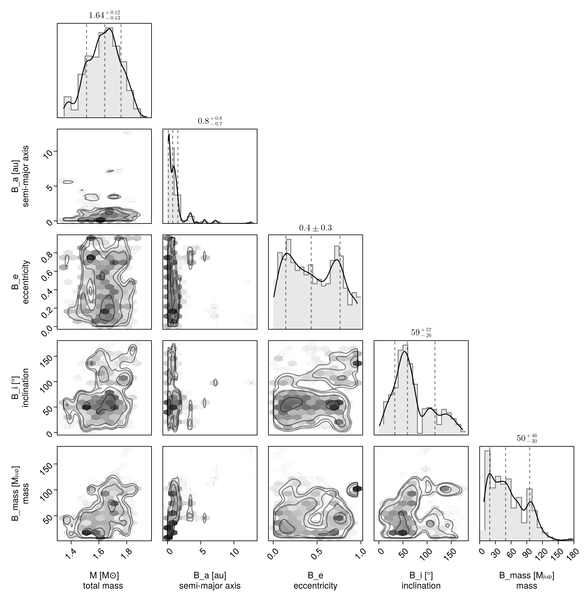
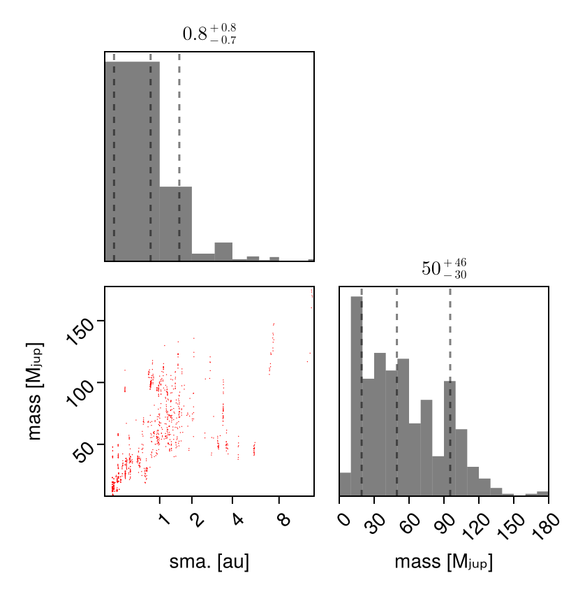
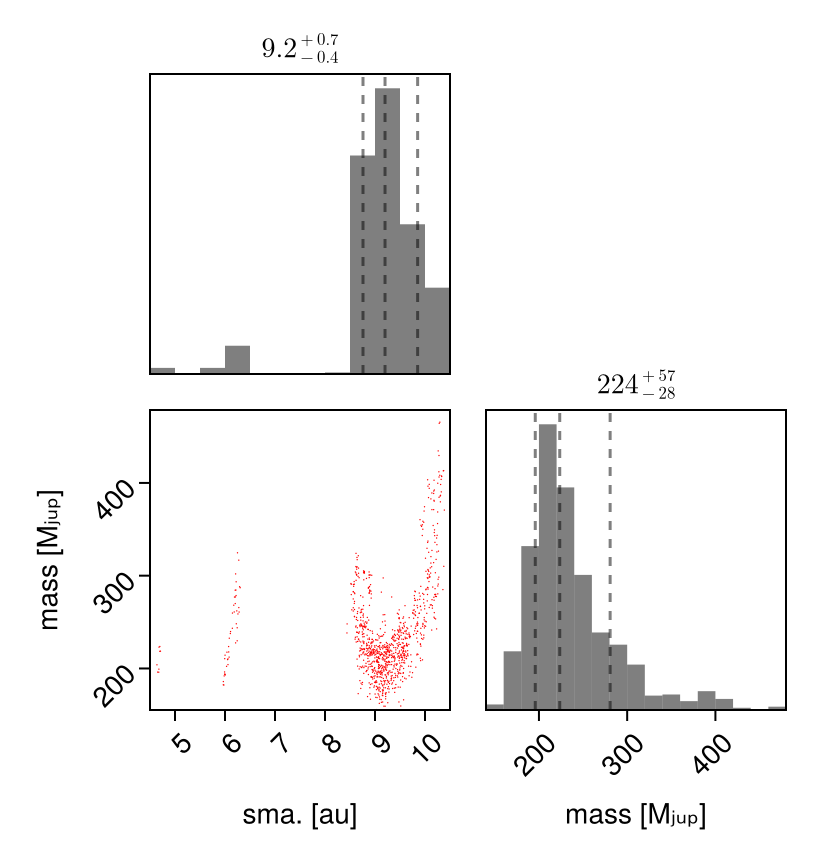
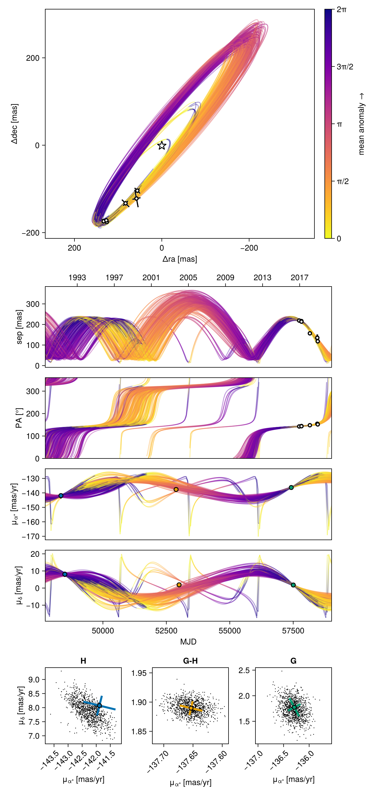
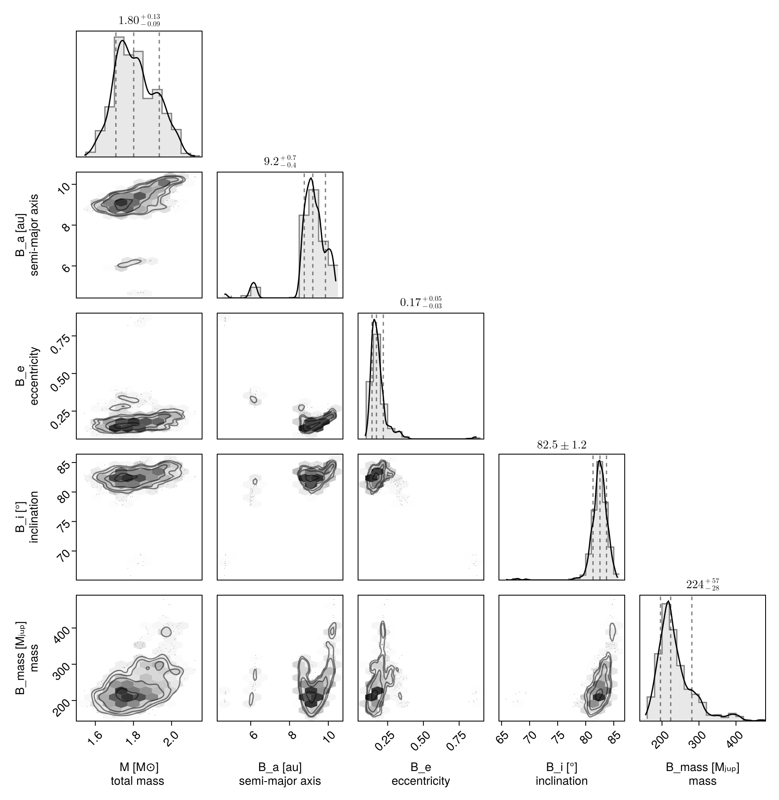

Fit Proper Motion Anomaly
Octofitter.jl supports fitting orbit models to astrometric motion in the form of GAIA-Hipparcos proper motion anomaly (HGCA; https://arxiv.org/abs/2105.11662). These data points are calculated by finding the difference between a long term proper motion of a star between the Hipparcos and GAIA catalogs, and their proper motion calculated within the windows of each catalog. This gives four data points that can constrain the dynamical mass & orbits of planetary companions (assuming we subtract out the net trend).
If your star of interest is in the HGCA, all you need is it's GAIA DR3 ID number. You can find this number by searching for your target on SIMBAD.
For this tutorial, we will examine the star and companion HD 91312 A & B discovered by SCExAO. We will use their published astrometry and proper motion anomaly extracted from the HGCA.
The first step is to find the GAIA source ID for your object. For HD 91312, SIMBAD tells us the GAIA DR3 ID is 756291174721509376.
Fitting Astrometric Motion Only
Initial setup:
using Octofitter, Distributions, RandomWe begin by finding orbits that are consistent with the astrometric motion. Later, we will add in relative astrometry to the fit from direct imaging to further constrain the planet's orbit and mass.
Compared to previous tutorials, we will now have to add a few additional variables to our model. The first is a prior on the mass of the companion, called mass. The units used on this variable are Jupiter masses, in contrast to M, the primary's mass, in solar masses. A reasonable uninformative prior for mass is Uniform(0,1000) or LogUniform(1,1000) depending on the situation.
For this model, we also want to place a prior on the host star mass rather than system total mass. For exoplanets there is litte difference between these two values, but in this example we have a reasonably informative prior on the host mass, and know from the paper that the companion is has a non-neglible effect on the total system mass.
To make this parameterization change, we specify priors on both masses in the @system block, and connect it to the planet.
Planet Model
@planet B Visual{KepOrbit} begin
a ~ LogUniform(0.1,20)
e ~ Uniform(0,0.999)
ω ~ UniformCircular()
i ~ Sine() # The Sine() distribution is defined by Octofitter
Ω ~ UniformCircular()
mass = system.M_sec
θ ~ UniformCircular()
tp = θ_at_epoch_to_tperi(system,B,57423.0) # epoch of GAIA measurement
endPlanet B
Derived:
ω, Ω, mass, θ, tp,
Priors:
a Distributions.LogUniform{Float64}(a=0.1, b=20.0)
e Distributions.Uniform{Float64}(a=0.0, b=0.999)
ωy Distributions.Normal{Float64}(μ=0.0, σ=1.0)
ωx Distributions.Normal{Float64}(μ=0.0, σ=1.0)
i Sine()
Ωy Distributions.Normal{Float64}(μ=0.0, σ=1.0)
Ωx Distributions.Normal{Float64}(μ=0.0, σ=1.0)
θy Distributions.Normal{Float64}(μ=0.0, σ=1.0)
θx Distributions.Normal{Float64}(μ=0.0, σ=1.0)
Octofitter.UnitLengthPrior{:ωy, :ωx}: √(ωy^2+ωx^2) ~ LogNormal(log(1), 0.02)
Octofitter.UnitLengthPrior{:Ωy, :Ωx}: √(Ωy^2+Ωx^2) ~ LogNormal(log(1), 0.02)
Octofitter.UnitLengthPrior{:θy, :θx}: √(θy^2+θx^2) ~ LogNormal(log(1), 0.02)
System Model & Specifying Proper Motion Anomaly
Now that we have our planet model, we create a system model to contain it.
We specify priors on plx as usual, but here we use the gaia_plx helper function to read the parallax and uncertainty directly from the HGCA catalog using its source ID.
We also add parameters for the star's long term proper motion. This is usually close to the long term trend between the Hipparcos and GAIA measurements. If you're not sure what to use here, try Normal(0, 1000); that is, assume a long-term proper motion of 0 +- 1000 milliarcseconds / year.
@system HD91312 begin
M_pri ~ truncated(Normal(1.61, 0.1), lower=0) # Msol
M_sec ~ LogUniform(0.5, 1000) # MJup
M = system.M_pri + system.M_sec*Octofitter.mjup2msol # Msol
plx ~ gaia_plx(gaia_id=756291174721509376)
# Priors on the center of mass proper motion
pmra ~ Normal(-137, 10)
pmdec ~ Normal(2, 10)
end HGCALikelihood(gaia_id=756291174721509376) B
model = Octofitter.LogDensityModel(HD91312)LogDensityModel for System HD91312 of dimension 14 with fields .ℓπcallback and .∇ℓπcallback
After the priors, we add the proper motion anomaly measurements from the HGCA. If this is your first time running this code, you will be prompted to automatically download and cache the catalog which may take around 30 seconds.
Sampling from the posterior
Because proper motion anomaly data is quite sparse, it can often produce multi-modal posteriors. If your orbit already has several relative astrometry or RV data points, this is less of an issue. But in many cases it is recommended to use the Pigeons.jl sampler instead of Octofitter's default. This sampler is less efficient for unimodal distributions, but is more robust at exploring posteriors with distinct, widely separated peaks.
To install and use Pigeons.jl with Octofitter, type using Pigeons at in the terminal and accept the prompt to install the package. You may have to restart Julia.
octofit_pigeons scales very well across multiple cores. Start julia with julia --threads=auto to make sure you have multiple threads available for sampling.
We now sample from our model using Pigeons:
using Pigeons
model = Octofitter.LogDensityModel(HD91312)
chain, pt = octofit_pigeons(model, n_rounds=10)
display(chain)┌ Info: Determined initial position
│ chain_no = 1
└ initial_logpost = -177.40383887491262
┌ Info: Determined initial position
│ chain_no = 2
└ initial_logpost = -231.16107025238847
┌ Info: Determined initial position
│ chain_no = 3
└ initial_logpost = -3.003977191852023
┌ Info: Determined initial position
│ chain_no = 4
└ initial_logpost = -2.1155082046026976
┌ Info: Determined initial position
│ chain_no = 5
└ initial_logpost = -1.81966105917388
┌ Info: Determined initial position
│ chain_no = 6
└ initial_logpost = -283.51598770858357
┌ Info: Determined initial position
│ chain_no = 7
└ initial_logpost = -140.83660257727018
┌ Info: Determined initial position
│ chain_no = 8
└ initial_logpost = -120.83988180801444
┌ Info: Determined initial position
│ chain_no = 9
└ initial_logpost = -49.60153122604611
┌ Info: Determined initial position
│ chain_no = 10
└ initial_logpost = -34.48311023726428
┌ Info: Determined initial position
│ chain_no = 11
└ initial_logpost = -76.20457035959879
┌ Info: Determined initial position
│ chain_no = 12
└ initial_logpost = -59.7055834906525
┌ Info: Determined initial position
│ chain_no = 13
└ initial_logpost = -108.57970115639051
┌ Info: Determined initial position
│ chain_no = 14
└ initial_logpost = -13.896463963093439
┌ Info: Determined initial position
│ chain_no = 15
└ initial_logpost = -207.3548106424772
┌ Info: Determined initial position
│ chain_no = 16
└ initial_logpost = -2.4062557147702446
┌ Info: Determined initial position
│ chain_no = 17
└ initial_logpost = -178.93639407582077
┌ Info: Determined initial position
│ chain_no = 18
└ initial_logpost = -256.28506608508303
┌ Info: Determined initial position
│ chain_no = 19
└ initial_logpost = -2.4655637756542443
┌ Info: Determined initial position
│ chain_no = 20
└ initial_logpost = -2.000289211335774
┌ Info: Determined initial position
│ chain_no = 21
└ initial_logpost = -551.2116989486284
┌ Info: Determined initial position
│ chain_no = 22
└ initial_logpost = -504.6027364329173
┌ Info: Determined initial position
│ chain_no = 23
└ initial_logpost = -1.4962763130077619
┌ Info: Determined initial position
│ chain_no = 24
└ initial_logpost = -176.84258801855154
┌ Info: Determined initial position
│ chain_no = 25
└ initial_logpost = -34.44715928148326
┌ Info: Determined initial position
│ chain_no = 26
└ initial_logpost = -1.9371071924408234
┌ Info: Determined initial position
│ chain_no = 27
└ initial_logpost = -348.35071284173654
┌ Info: Determined initial position
│ chain_no = 28
└ initial_logpost = -152.3158763663247
┌ Info: Determined initial position
│ chain_no = 29
└ initial_logpost = -1.842577686015204
┌ Info: Determined initial position
│ chain_no = 30
└ initial_logpost = -164.56101029705448
┌ Info: Determined initial position
│ chain_no = 31
└ initial_logpost = -1.9797490013421992
┌ Info: Determined initial position
│ chain_no = 32
└ initial_logpost = -2.037529661084907
┌ Warning: Invalid log likelihood encountered. (maxlog=1)
│ θ = (M_pri = Dual{ForwardDiff.Tag{Base.Fix1{typeof(LogDensityProblems.logdensity), Octofitter.LogDensityModel{Octofitter.var"#ℓπcallback#64"{System{Priors, Derived, Tuple{HGCALikelihood{Table{@NamedTuple{hip_id::Int32, gaia_source_id::Int64, gaia_ra::Float64, gaia_dec::Float64, radial_velocity::Float32, radial_velocity_error::Float32, radial_velocity_source::String, parallax_gaia::Float32, parallax_gaia_error::Float32, pmra_gaia::Float32, pmdec_gaia::Float32, pmra_gaia_error::Float32, pmdec_gaia_error::Float32, pmra_pmdec_gaia::Float32, pmra_hg::Float32, pmdec_hg::Float32, pmra_hg_error::Float32, pmdec_hg_error::Float32, pmra_pmdec_hg::Float32, pmra_hip::Float32, pmdec_hip::Float32, pmra_hip_error::Float32, pmdec_hip_error::Float32, pmra_pmdec_hip::Float32, epoch_ra_gaia::Float64, epoch_dec_gaia::Float64, epoch_ra_hip::Float64, epoch_dec_hip::Float64, crosscal_pmra_hip::Float32, crosscal_pmdec_hip::Float32, crosscal_pmra_hg::Float32, crosscal_pmdec_hg::Float32, nonlinear_dpmra::Float32, nonlinear_dpmdec::Float32, chisq::Float32, dist_hip::Distributions.MvNormal{Float32, PDMats.PDMat{Float32, StaticArraysCore.SMatrix{2, 2, Float32, 4}}, FillArrays.Zeros{Float32, 1, Tuple{Base.OneTo{Int64}}}}, dist_hg::Distributions.MvNormal{Float32, PDMats.PDMat{Float32, StaticArraysCore.SMatrix{2, 2, Float32, 4}}, FillArrays.Zeros{Float32, 1, Tuple{Base.OneTo{Int64}}}}, dist_gaia::Distributions.MvNormal{Float32, PDMats.PDMat{Float32, StaticArraysCore.SMatrix{2, 2, Float32, 4}}, FillArrays.Zeros{Float32, 1, Tuple{Base.OneTo{Int64}}}}}, 1, @NamedTuple{hip_id::Vector{Int32}, gaia_source_id::Vector{Int64}, gaia_ra::Vector{Float64}, gaia_dec::Vector{Float64}, radial_velocity::Vector{Float32}, radial_velocity_error::Vector{Float32}, radial_velocity_source::Vector{String}, parallax_gaia::Vector{Float32}, parallax_gaia_error::Vector{Float32}, pmra_gaia::Vector{Float32}, pmdec_gaia::Vector{Float32}, pmra_gaia_error::Vector{Float32}, pmdec_gaia_error::Vector{Float32}, pmra_pmdec_gaia::Vector{Float32}, pmra_hg::Vector{Float32}, pmdec_hg::Vector{Float32}, pmra_hg_error::Vector{Float32}, pmdec_hg_error::Vector{Float32}, pmra_pmdec_hg::Vector{Float32}, pmra_hip::Vector{Float32}, pmdec_hip::Vector{Float32}, pmra_hip_error::Vector{Float32}, pmdec_hip_error::Vector{Float32}, pmra_pmdec_hip::Vector{Float32}, epoch_ra_gaia::Vector{Float64}, epoch_dec_gaia::Vector{Float64}, epoch_ra_hip::Vector{Float64}, epoch_dec_hip::Vector{Float64}, crosscal_pmra_hip::Vector{Float32}, crosscal_pmdec_hip::Vector{Float32}, crosscal_pmra_hg::Vector{Float32}, crosscal_pmdec_hg::Vector{Float32}, nonlinear_dpmra::Vector{Float32}, nonlinear_dpmdec::Vector{Float32}, chisq::Vector{Float32}, dist_hip::Vector{Distributions.MvNormal{Float32, PDMats.PDMat{Float32, StaticArraysCore.SMatrix{2, 2, Float32, 4}}, FillArrays.Zeros{Float32, 1, Tuple{Base.OneTo{Int64}}}}}, dist_hg::Vector{Distributions.MvNormal{Float32, PDMats.PDMat{Float32, StaticArraysCore.SMatrix{2, 2, Float32, 4}}, FillArrays.Zeros{Float32, 1, Tuple{Base.OneTo{Int64}}}}}, dist_gaia::Vector{Distributions.MvNormal{Float32, PDMats.PDMat{Float32, StaticArraysCore.SMatrix{2, 2, Float32, 4}}, FillArrays.Zeros{Float32, 1, Tuple{Base.OneTo{Int64}}}}}}}}}, @NamedTuple{B::Planet{Visual{KepOrbit}, Priors, Derived, Tuple{Octofitter.UnitLengthPrior{:ωy, :ωx}, Octofitter.UnitLengthPrior{:Ωy, :Ωx}, Octofitter.UnitLengthPrior{:θy, :θx}}}}}, RuntimeGeneratedFunctions.RuntimeGeneratedFunction{(:arr,), Octofitter.var"#_RGF_ModTag", Octofitter.var"#_RGF_ModTag", (0x14093c40, 0xd9f3e20f, 0x8fe2c1b4, 0xa07b924d, 0x1a88ad5c), Expr}, RuntimeGeneratedFunctions.RuntimeGeneratedFunction{(:arr,), Octofitter.var"#_RGF_ModTag", Octofitter.var"#_RGF_ModTag", (0x42f36bb6, 0x367a272b, 0xf6ef22bb, 0xb274ab0b, 0xc6221b91), Expr}, RuntimeGeneratedFunctions.RuntimeGeneratedFunction{(:arr, :sampled), Octofitter.var"#_RGF_ModTag", Octofitter.var"#_RGF_ModTag", (0xf1248e63, 0x03fc11bf, 0xda42a3ca, 0xef231a69, 0x777293f9), Expr}, RuntimeGeneratedFunctions.RuntimeGeneratedFunction{(:system, :θ_system), Octofitter.var"#_RGF_ModTag", Octofitter.var"#_RGF_ModTag", (0x78a4ab83, 0x799d94b8, 0xe436e688, 0x96fd6079, 0x20a28cd8), Expr}, Octofitter.var"#ℓπcallback#52#65"}, Octofitter.var"#60#73"{ForwardDiff.GradientConfig{ForwardDiff.Tag{Octofitter.var"#ℓπcallback#64"{System{Priors, Derived, Tuple{HGCALikelihood{Table{@NamedTuple{hip_id::Int32, gaia_source_id::Int64, gaia_ra::Float64, gaia_dec::Float64, radial_velocity::Float32, radial_velocity_error::Float32, radial_velocity_source::String, parallax_gaia::Float32, parallax_gaia_error::Float32, pmra_gaia::Float32, pmdec_gaia::Float32, pmra_gaia_error::Float32, pmdec_gaia_error::Float32, pmra_pmdec_gaia::Float32, pmra_hg::Float32, pmdec_hg::Float32, pmra_hg_error::Float32, pmdec_hg_error::Float32, pmra_pmdec_hg::Float32, pmra_hip::Float32, pmdec_hip::Float32, pmra_hip_error::Float32, pmdec_hip_error::Float32, pmra_pmdec_hip::Float32, epoch_ra_gaia::Float64, epoch_dec_gaia::Float64, epoch_ra_hip::Float64, epoch_dec_hip::Float64, crosscal_pmra_hip::Float32, crosscal_pmdec_hip::Float32, crosscal_pmra_hg::Float32, crosscal_pmdec_hg::Float32, nonlinear_dpmra::Float32, nonlinear_dpmdec::Float32, chisq::Float32, dist_hip::Distributions.MvNormal{Float32, PDMats.PDMat{Float32, StaticArraysCore.SMatrix{2, 2, Float32, 4}}, FillArrays.Zeros{Float32, 1, Tuple{Base.OneTo{Int64}}}}, dist_hg::Distributions.MvNormal{Float32, PDMats.PDMat{Float32, StaticArraysCore.SMatrix{2, 2, Float32, 4}}, FillArrays.Zeros{Float32, 1, Tuple{Base.OneTo{Int64}}}}, dist_gaia::Distributions.MvNormal{Float32, PDMats.PDMat{Float32, StaticArraysCore.SMatrix{2, 2, Float32, 4}}, FillArrays.Zeros{Float32, 1, Tuple{Base.OneTo{Int64}}}}}, 1, @NamedTuple{hip_id::Vector{Int32}, gaia_source_id::Vector{Int64}, gaia_ra::Vector{Float64}, gaia_dec::Vector{Float64}, radial_velocity::Vector{Float32}, radial_velocity_error::Vector{Float32}, radial_velocity_source::Vector{String}, parallax_gaia::Vector{Float32}, parallax_gaia_error::Vector{Float32}, pmra_gaia::Vector{Float32}, pmdec_gaia::Vector{Float32}, pmra_gaia_error::Vector{Float32}, pmdec_gaia_error::Vector{Float32}, pmra_pmdec_gaia::Vector{Float32}, pmra_hg::Vector{Float32}, pmdec_hg::Vector{Float32}, pmra_hg_error::Vector{Float32}, pmdec_hg_error::Vector{Float32}, pmra_pmdec_hg::Vector{Float32}, pmra_hip::Vector{Float32}, pmdec_hip::Vector{Float32}, pmra_hip_error::Vector{Float32}, pmdec_hip_error::Vector{Float32}, pmra_pmdec_hip::Vector{Float32}, epoch_ra_gaia::Vector{Float64}, epoch_dec_gaia::Vector{Float64}, epoch_ra_hip::Vector{Float64}, epoch_dec_hip::Vector{Float64}, crosscal_pmra_hip::Vector{Float32}, crosscal_pmdec_hip::Vector{Float32}, crosscal_pmra_hg::Vector{Float32}, crosscal_pmdec_hg::Vector{Float32}, nonlinear_dpmra::Vector{Float32}, nonlinear_dpmdec::Vector{Float32}, chisq::Vector{Float32}, dist_hip::Vector{Distributions.MvNormal{Float32, PDMats.PDMat{Float32, StaticArraysCore.SMatrix{2, 2, Float32, 4}}, FillArrays.Zeros{Float32, 1, Tuple{Base.OneTo{Int64}}}}}, dist_hg::Vector{Distributions.MvNormal{Float32, PDMats.PDMat{Float32, StaticArraysCore.SMatrix{2, 2, Float32, 4}}, FillArrays.Zeros{Float32, 1, Tuple{Base.OneTo{Int64}}}}}, dist_gaia::Vector{Distributions.MvNormal{Float32, PDMats.PDMat{Float32, StaticArraysCore.SMatrix{2, 2, Float32, 4}}, FillArrays.Zeros{Float32, 1, Tuple{Base.OneTo{Int64}}}}}}}}}, @NamedTuple{B::Planet{Visual{KepOrbit}, Priors, Derived, Tuple{Octofitter.UnitLengthPrior{:ωy, :ωx}, Octofitter.UnitLengthPrior{:Ωy, :Ωx}, Octofitter.UnitLengthPrior{:θy, :θx}}}}}, RuntimeGeneratedFunctions.RuntimeGeneratedFunction{(:arr,), Octofitter.var"#_RGF_ModTag", Octofitter.var"#_RGF_ModTag", (0x14093c40, 0xd9f3e20f, 0x8fe2c1b4, 0xa07b924d, 0x1a88ad5c), Expr}, RuntimeGeneratedFunctions.RuntimeGeneratedFunction{(:arr,), Octofitter.var"#_RGF_ModTag", Octofitter.var"#_RGF_ModTag", (0x42f36bb6, 0x367a272b, 0xf6ef22bb, 0xb274ab0b, 0xc6221b91), Expr}, RuntimeGeneratedFunctions.RuntimeGeneratedFunction{(:arr, :sampled), Octofitter.var"#_RGF_ModTag", Octofitter.var"#_RGF_ModTag", (0xf1248e63, 0x03fc11bf, 0xda42a3ca, 0xef231a69, 0x777293f9), Expr}, RuntimeGeneratedFunctions.RuntimeGeneratedFunction{(:system, :θ_system), Octofitter.var"#_RGF_ModTag", Octofitter.var"#_RGF_ModTag", (0x78a4ab83, 0x799d94b8, 0xe436e688, 0x96fd6079, 0x20a28cd8), Expr}, Octofitter.var"#ℓπcallback#52#65"}, Float64}, Float64, 14, Vector{ForwardDiff.Dual{ForwardDiff.Tag{Octofitter.var"#ℓπcallback#64"{System{Priors, Derived, Tuple{HGCALikelihood{Table{@NamedTuple{hip_id::Int32, gaia_source_id::Int64, gaia_ra::Float64, gaia_dec::Float64, radial_velocity::Float32, radial_velocity_error::Float32, radial_velocity_source::String, parallax_gaia::Float32, parallax_gaia_error::Float32, pmra_gaia::Float32, pmdec_gaia::Float32, pmra_gaia_error::Float32, pmdec_gaia_error::Float32, pmra_pmdec_gaia::Float32, pmra_hg::Float32, pmdec_hg::Float32, pmra_hg_error::Float32, pmdec_hg_error::Float32, pmra_pmdec_hg::Float32, pmra_hip::Float32, pmdec_hip::Float32, pmra_hip_error::Float32, pmdec_hip_error::Float32, pmra_pmdec_hip::Float32, epoch_ra_gaia::Float64, epoch_dec_gaia::Float64, epoch_ra_hip::Float64, epoch_dec_hip::Float64, crosscal_pmra_hip::Float32, crosscal_pmdec_hip::Float32, crosscal_pmra_hg::Float32, crosscal_pmdec_hg::Float32, nonlinear_dpmra::Float32, nonlinear_dpmdec::Float32, chisq::Float32, dist_hip::Distributions.MvNormal{Float32, PDMats.PDMat{Float32, StaticArraysCore.SMatrix{2, 2, Float32, 4}}, FillArrays.Zeros{Float32, 1, Tuple{Base.OneTo{Int64}}}}, dist_hg::Distributions.MvNormal{Float32, PDMats.PDMat{Float32, StaticArraysCore.SMatrix{2, 2, Float32, 4}}, FillArrays.Zeros{Float32, 1, Tuple{Base.OneTo{Int64}}}}, dist_gaia::Distributions.MvNormal{Float32, PDMats.PDMat{Float32, StaticArraysCore.SMatrix{2, 2, Float32, 4}}, FillArrays.Zeros{Float32, 1, Tuple{Base.OneTo{Int64}}}}}, 1, @NamedTuple{hip_id::Vector{Int32}, gaia_source_id::Vector{Int64}, gaia_ra::Vector{Float64}, gaia_dec::Vector{Float64}, radial_velocity::Vector{Float32}, radial_velocity_error::Vector{Float32}, radial_velocity_source::Vector{String}, parallax_gaia::Vector{Float32}, parallax_gaia_error::Vector{Float32}, pmra_gaia::Vector{Float32}, pmdec_gaia::Vector{Float32}, pmra_gaia_error::Vector{Float32}, pmdec_gaia_error::Vector{Float32}, pmra_pmdec_gaia::Vector{Float32}, pmra_hg::Vector{Float32}, pmdec_hg::Vector{Float32}, pmra_hg_error::Vector{Float32}, pmdec_hg_error::Vector{Float32}, pmra_pmdec_hg::Vector{Float32}, pmra_hip::Vector{Float32}, pmdec_hip::Vector{Float32}, pmra_hip_error::Vector{Float32}, pmdec_hip_error::Vector{Float32}, pmra_pmdec_hip::Vector{Float32}, epoch_ra_gaia::Vector{Float64}, epoch_dec_gaia::Vector{Float64}, epoch_ra_hip::Vector{Float64}, epoch_dec_hip::Vector{Float64}, crosscal_pmra_hip::Vector{Float32}, crosscal_pmdec_hip::Vector{Float32}, crosscal_pmra_hg::Vector{Float32}, crosscal_pmdec_hg::Vector{Float32}, nonlinear_dpmra::Vector{Float32}, nonlinear_dpmdec::Vector{Float32}, chisq::Vector{Float32}, dist_hip::Vector{Distributions.MvNormal{Float32, PDMats.PDMat{Float32, StaticArraysCore.SMatrix{2, 2, Float32, 4}}, FillArrays.Zeros{Float32, 1, Tuple{Base.OneTo{Int64}}}}}, dist_hg::Vector{Distributions.MvNormal{Float32, PDMats.PDMat{Float32, StaticArraysCore.SMatrix{2, 2, Float32, 4}}, FillArrays.Zeros{Float32, 1, Tuple{Base.OneTo{Int64}}}}}, dist_gaia::Vector{Distributions.MvNormal{Float32, PDMats.PDMat{Float32, StaticArraysCore.SMatrix{2, 2, Float32, 4}}, FillArrays.Zeros{Float32, 1, Tuple{Base.OneTo{Int64}}}}}}}}}, @NamedTuple{B::Planet{Visual{KepOrbit}, Priors, Derived, Tuple{Octofitter.UnitLengthPrior{:ωy, :ωx}, Octofitter.UnitLengthPrior{:Ωy, :Ωx}, Octofitter.UnitLengthPrior{:θy, :θx}}}}}, RuntimeGeneratedFunctions.RuntimeGeneratedFunction{(:arr,), Octofitter.var"#_RGF_ModTag", Octofitter.var"#_RGF_ModTag", (0x14093c40, 0xd9f3e20f, 0x8fe2c1b4, 0xa07b924d, 0x1a88ad5c), Expr}, RuntimeGeneratedFunctions.RuntimeGeneratedFunction{(:arr,), Octofitter.var"#_RGF_ModTag", Octofitter.var"#_RGF_ModTag", (0x42f36bb6, 0x367a272b, 0xf6ef22bb, 0xb274ab0b, 0xc6221b91), Expr}, RuntimeGeneratedFunctions.RuntimeGeneratedFunction{(:arr, :sampled), Octofitter.var"#_RGF_ModTag", Octofitter.var"#_RGF_ModTag", (0xf1248e63, 0x03fc11bf, 0xda42a3ca, 0xef231a69, 0x777293f9), Expr}, RuntimeGeneratedFunctions.RuntimeGeneratedFunction{(:system, :θ_system), Octofitter.var"#_RGF_ModTag", Octofitter.var"#_RGF_ModTag", (0x78a4ab83, 0x799d94b8, 0xe436e688, 0x96fd6079, 0x20a28cd8), Expr}, Octofitter.var"#ℓπcallback#52#65"}, Float64}, Float64, 14}}}, Vector{DiffResults.MutableDiffResult{1, Float64, Tuple{Vector{Float64}}}}, Octofitter.var"#ℓπcallback#64"{System{Priors, Derived, Tuple{HGCALikelihood{Table{@NamedTuple{hip_id::Int32, gaia_source_id::Int64, gaia_ra::Float64, gaia_dec::Float64, radial_velocity::Float32, radial_velocity_error::Float32, radial_velocity_source::String, parallax_gaia::Float32, parallax_gaia_error::Float32, pmra_gaia::Float32, pmdec_gaia::Float32, pmra_gaia_error::Float32, pmdec_gaia_error::Float32, pmra_pmdec_gaia::Float32, pmra_hg::Float32, pmdec_hg::Float32, pmra_hg_error::Float32, pmdec_hg_error::Float32, pmra_pmdec_hg::Float32, pmra_hip::Float32, pmdec_hip::Float32, pmra_hip_error::Float32, pmdec_hip_error::Float32, pmra_pmdec_hip::Float32, epoch_ra_gaia::Float64, epoch_dec_gaia::Float64, epoch_ra_hip::Float64, epoch_dec_hip::Float64, crosscal_pmra_hip::Float32, crosscal_pmdec_hip::Float32, crosscal_pmra_hg::Float32, crosscal_pmdec_hg::Float32, nonlinear_dpmra::Float32, nonlinear_dpmdec::Float32, chisq::Float32, dist_hip::Distributions.MvNormal{Float32, PDMats.PDMat{Float32, StaticArraysCore.SMatrix{2, 2, Float32, 4}}, FillArrays.Zeros{Float32, 1, Tuple{Base.OneTo{Int64}}}}, dist_hg::Distributions.MvNormal{Float32, PDMats.PDMat{Float32, StaticArraysCore.SMatrix{2, 2, Float32, 4}}, FillArrays.Zeros{Float32, 1, Tuple{Base.OneTo{Int64}}}}, dist_gaia::Distributions.MvNormal{Float32, PDMats.PDMat{Float32, StaticArraysCore.SMatrix{2, 2, Float32, 4}}, FillArrays.Zeros{Float32, 1, Tuple{Base.OneTo{Int64}}}}}, 1, @NamedTuple{hip_id::Vector{Int32}, gaia_source_id::Vector{Int64}, gaia_ra::Vector{Float64}, gaia_dec::Vector{Float64}, radial_velocity::Vector{Float32}, radial_velocity_error::Vector{Float32}, radial_velocity_source::Vector{String}, parallax_gaia::Vector{Float32}, parallax_gaia_error::Vector{Float32}, pmra_gaia::Vector{Float32}, pmdec_gaia::Vector{Float32}, pmra_gaia_error::Vector{Float32}, pmdec_gaia_error::Vector{Float32}, pmra_pmdec_gaia::Vector{Float32}, pmra_hg::Vector{Float32}, pmdec_hg::Vector{Float32}, pmra_hg_error::Vector{Float32}, pmdec_hg_error::Vector{Float32}, pmra_pmdec_hg::Vector{Float32}, pmra_hip::Vector{Float32}, pmdec_hip::Vector{Float32}, pmra_hip_error::Vector{Float32}, pmdec_hip_error::Vector{Float32}, pmra_pmdec_hip::Vector{Float32}, epoch_ra_gaia::Vector{Float64}, epoch_dec_gaia::Vector{Float64}, epoch_ra_hip::Vector{Float64}, epoch_dec_hip::Vector{Float64}, crosscal_pmra_hip::Vector{Float32}, crosscal_pmdec_hip::Vector{Float32}, crosscal_pmra_hg::Vector{Float32}, crosscal_pmdec_hg::Vector{Float32}, nonlinear_dpmra::Vector{Float32}, nonlinear_dpmdec::Vector{Float32}, chisq::Vector{Float32}, dist_hip::Vector{Distributions.MvNormal{Float32, PDMats.PDMat{Float32, StaticArraysCore.SMatrix{2, 2, Float32, 4}}, FillArrays.Zeros{Float32, 1, Tuple{Base.OneTo{Int64}}}}}, dist_hg::Vector{Distributions.MvNormal{Float32, PDMats.PDMat{Float32, StaticArraysCore.SMatrix{2, 2, Float32, 4}}, FillArrays.Zeros{Float32, 1, Tuple{Base.OneTo{Int64}}}}}, dist_gaia::Vector{Distributions.MvNormal{Float32, PDMats.PDMat{Float32, StaticArraysCore.SMatrix{2, 2, Float32, 4}}, FillArrays.Zeros{Float32, 1, Tuple{Base.OneTo{Int64}}}}}}}}}, @NamedTuple{B::Planet{Visual{KepOrbit}, Priors, Derived, Tuple{Octofitter.UnitLengthPrior{:ωy, :ωx}, Octofitter.UnitLengthPrior{:Ωy, :Ωx}, Octofitter.UnitLengthPrior{:θy, :θx}}}}}, RuntimeGeneratedFunctions.RuntimeGeneratedFunction{(:arr,), Octofitter.var"#_RGF_ModTag", Octofitter.var"#_RGF_ModTag", (0x14093c40, 0xd9f3e20f, 0x8fe2c1b4, 0xa07b924d, 0x1a88ad5c), Expr}, RuntimeGeneratedFunctions.RuntimeGeneratedFunction{(:arr,), Octofitter.var"#_RGF_ModTag", Octofitter.var"#_RGF_ModTag", (0x42f36bb6, 0x367a272b, 0xf6ef22bb, 0xb274ab0b, 0xc6221b91), Expr}, RuntimeGeneratedFunctions.RuntimeGeneratedFunction{(:arr, :sampled), Octofitter.var"#_RGF_ModTag", Octofitter.var"#_RGF_ModTag", (0xf1248e63, 0x03fc11bf, 0xda42a3ca, 0xef231a69, 0x777293f9), Expr}, RuntimeGeneratedFunctions.RuntimeGeneratedFunction{(:system, :θ_system), Octofitter.var"#_RGF_ModTag", Octofitter.var"#_RGF_ModTag", (0x78a4ab83, 0x799d94b8, 0xe436e688, 0x96fd6079, 0x20a28cd8), Expr}, Octofitter.var"#ℓπcallback#52#65"}}, System{Priors, Derived, Tuple{HGCALikelihood{Table{@NamedTuple{hip_id::Int32, gaia_source_id::Int64, gaia_ra::Float64, gaia_dec::Float64, radial_velocity::Float32, radial_velocity_error::Float32, radial_velocity_source::String, parallax_gaia::Float32, parallax_gaia_error::Float32, pmra_gaia::Float32, pmdec_gaia::Float32, pmra_gaia_error::Float32, pmdec_gaia_error::Float32, pmra_pmdec_gaia::Float32, pmra_hg::Float32, pmdec_hg::Float32, pmra_hg_error::Float32, pmdec_hg_error::Float32, pmra_pmdec_hg::Float32, pmra_hip::Float32, pmdec_hip::Float32, pmra_hip_error::Float32, pmdec_hip_error::Float32, pmra_pmdec_hip::Float32, epoch_ra_gaia::Float64, epoch_dec_gaia::Float64, epoch_ra_hip::Float64, epoch_dec_hip::Float64, crosscal_pmra_hip::Float32, crosscal_pmdec_hip::Float32, crosscal_pmra_hg::Float32, crosscal_pmdec_hg::Float32, nonlinear_dpmra::Float32, nonlinear_dpmdec::Float32, chisq::Float32, dist_hip::Distributions.MvNormal{Float32, PDMats.PDMat{Float32, StaticArraysCore.SMatrix{2, 2, Float32, 4}}, FillArrays.Zeros{Float32, 1, Tuple{Base.OneTo{Int64}}}}, dist_hg::Distributions.MvNormal{Float32, PDMats.PDMat{Float32, StaticArraysCore.SMatrix{2, 2, Float32, 4}}, FillArrays.Zeros{Float32, 1, Tuple{Base.OneTo{Int64}}}}, dist_gaia::Distributions.MvNormal{Float32, PDMats.PDMat{Float32, StaticArraysCore.SMatrix{2, 2, Float32, 4}}, FillArrays.Zeros{Float32, 1, Tuple{Base.OneTo{Int64}}}}}, 1, @NamedTuple{hip_id::Vector{Int32}, gaia_source_id::Vector{Int64}, gaia_ra::Vector{Float64}, gaia_dec::Vector{Float64}, radial_velocity::Vector{Float32}, radial_velocity_error::Vector{Float32}, radial_velocity_source::Vector{String}, parallax_gaia::Vector{Float32}, parallax_gaia_error::Vector{Float32}, pmra_gaia::Vector{Float32}, pmdec_gaia::Vector{Float32}, pmra_gaia_error::Vector{Float32}, pmdec_gaia_error::Vector{Float32}, pmra_pmdec_gaia::Vector{Float32}, pmra_hg::Vector{Float32}, pmdec_hg::Vector{Float32}, pmra_hg_error::Vector{Float32}, pmdec_hg_error::Vector{Float32}, pmra_pmdec_hg::Vector{Float32}, pmra_hip::Vector{Float32}, pmdec_hip::Vector{Float32}, pmra_hip_error::Vector{Float32}, pmdec_hip_error::Vector{Float32}, pmra_pmdec_hip::Vector{Float32}, epoch_ra_gaia::Vector{Float64}, epoch_dec_gaia::Vector{Float64}, epoch_ra_hip::Vector{Float64}, epoch_dec_hip::Vector{Float64}, crosscal_pmra_hip::Vector{Float32}, crosscal_pmdec_hip::Vector{Float32}, crosscal_pmra_hg::Vector{Float32}, crosscal_pmdec_hg::Vector{Float32}, nonlinear_dpmra::Vector{Float32}, nonlinear_dpmdec::Vector{Float32}, chisq::Vector{Float32}, dist_hip::Vector{Distributions.MvNormal{Float32, PDMats.PDMat{Float32, StaticArraysCore.SMatrix{2, 2, Float32, 4}}, FillArrays.Zeros{Float32, 1, Tuple{Base.OneTo{Int64}}}}}, dist_hg::Vector{Distributions.MvNormal{Float32, PDMats.PDMat{Float32, StaticArraysCore.SMatrix{2, 2, Float32, 4}}, FillArrays.Zeros{Float32, 1, Tuple{Base.OneTo{Int64}}}}}, dist_gaia::Vector{Distributions.MvNormal{Float32, PDMats.PDMat{Float32, StaticArraysCore.SMatrix{2, 2, Float32, 4}}, FillArrays.Zeros{Float32, 1, Tuple{Base.OneTo{Int64}}}}}}}}}, @NamedTuple{B::Planet{Visual{KepOrbit}, Priors, Derived, Tuple{Octofitter.UnitLengthPrior{:ωy, :ωx}, Octofitter.UnitLengthPrior{:Ωy, :Ωx}, Octofitter.UnitLengthPrior{:θy, :θx}}}}}, Octofitter.var"#51#63"{Vector{Distributions.Distribution{Distributions.Univariate, Distributions.Continuous}}}, RuntimeGeneratedFunctions.RuntimeGeneratedFunction{(:arr,), Octofitter.var"#_RGF_ModTag", Octofitter.var"#_RGF_ModTag", (0x42f36bb6, 0x367a272b, 0xf6ef22bb, 0xb274ab0b, 0xc6221b91), Expr}, RuntimeGeneratedFunctions.RuntimeGeneratedFunction{(:arr,), Octofitter.var"#_RGF_ModTag", Octofitter.var"#_RGF_ModTag", (0x14093c40, 0xd9f3e20f, 0x8fe2c1b4, 0xa07b924d, 0x1a88ad5c), Expr}}}, Float64}}(Inf,Inf,NaN,NaN,NaN,NaN,NaN,NaN), M_sec = Dual{ForwardDiff.Tag{Base.Fix1{typeof(LogDensityProblems.logdensity), Octofitter.LogDensityModel{Octofitter.var"#ℓπcallback#64"{System{Priors, Derived, Tuple{HGCALikelihood{Table{@NamedTuple{hip_id::Int32, gaia_source_id::Int64, gaia_ra::Float64, gaia_dec::Float64, radial_velocity::Float32, radial_velocity_error::Float32, radial_velocity_source::String, parallax_gaia::Float32, parallax_gaia_error::Float32, pmra_gaia::Float32, pmdec_gaia::Float32, pmra_gaia_error::Float32, pmdec_gaia_error::Float32, pmra_pmdec_gaia::Float32, pmra_hg::Float32, pmdec_hg::Float32, pmra_hg_error::Float32, pmdec_hg_error::Float32, pmra_pmdec_hg::Float32, pmra_hip::Float32, pmdec_hip::Float32, pmra_hip_error::Float32, pmdec_hip_error::Float32, pmra_pmdec_hip::Float32, epoch_ra_gaia::Float64, epoch_dec_gaia::Float64, epoch_ra_hip::Float64, epoch_dec_hip::Float64, crosscal_pmra_hip::Float32, crosscal_pmdec_hip::Float32, crosscal_pmra_hg::Float32, crosscal_pmdec_hg::Float32, nonlinear_dpmra::Float32, nonlinear_dpmdec::Float32, chisq::Float32, dist_hip::Distributions.MvNormal{Float32, PDMats.PDMat{Float32, StaticArraysCore.SMatrix{2, 2, Float32, 4}}, FillArrays.Zeros{Float32, 1, Tuple{Base.OneTo{Int64}}}}, dist_hg::Distributions.MvNormal{Float32, PDMats.PDMat{Float32, StaticArraysCore.SMatrix{2, 2, Float32, 4}}, FillArrays.Zeros{Float32, 1, Tuple{Base.OneTo{Int64}}}}, dist_gaia::Distributions.MvNormal{Float32, PDMats.PDMat{Float32, StaticArraysCore.SMatrix{2, 2, Float32, 4}}, FillArrays.Zeros{Float32, 1, Tuple{Base.OneTo{Int64}}}}}, 1, @NamedTuple{hip_id::Vector{Int32}, gaia_source_id::Vector{Int64}, gaia_ra::Vector{Float64}, gaia_dec::Vector{Float64}, radial_velocity::Vector{Float32}, radial_velocity_error::Vector{Float32}, radial_velocity_source::Vector{String}, parallax_gaia::Vector{Float32}, parallax_gaia_error::Vector{Float32}, pmra_gaia::Vector{Float32}, pmdec_gaia::Vector{Float32}, pmra_gaia_error::Vector{Float32}, pmdec_gaia_error::Vector{Float32}, pmra_pmdec_gaia::Vector{Float32}, pmra_hg::Vector{Float32}, pmdec_hg::Vector{Float32}, pmra_hg_error::Vector{Float32}, pmdec_hg_error::Vector{Float32}, pmra_pmdec_hg::Vector{Float32}, pmra_hip::Vector{Float32}, pmdec_hip::Vector{Float32}, pmra_hip_error::Vector{Float32}, pmdec_hip_error::Vector{Float32}, pmra_pmdec_hip::Vector{Float32}, epoch_ra_gaia::Vector{Float64}, epoch_dec_gaia::Vector{Float64}, epoch_ra_hip::Vector{Float64}, epoch_dec_hip::Vector{Float64}, crosscal_pmra_hip::Vector{Float32}, crosscal_pmdec_hip::Vector{Float32}, crosscal_pmra_hg::Vector{Float32}, crosscal_pmdec_hg::Vector{Float32}, nonlinear_dpmra::Vector{Float32}, nonlinear_dpmdec::Vector{Float32}, chisq::Vector{Float32}, dist_hip::Vector{Distributions.MvNormal{Float32, PDMats.PDMat{Float32, StaticArraysCore.SMatrix{2, 2, Float32, 4}}, FillArrays.Zeros{Float32, 1, Tuple{Base.OneTo{Int64}}}}}, dist_hg::Vector{Distributions.MvNormal{Float32, PDMats.PDMat{Float32, StaticArraysCore.SMatrix{2, 2, Float32, 4}}, FillArrays.Zeros{Float32, 1, Tuple{Base.OneTo{Int64}}}}}, dist_gaia::Vector{Distributions.MvNormal{Float32, PDMats.PDMat{Float32, StaticArraysCore.SMatrix{2, 2, Float32, 4}}, FillArrays.Zeros{Float32, 1, Tuple{Base.OneTo{Int64}}}}}}}}}, @NamedTuple{B::Planet{Visual{KepOrbit}, Priors, Derived, Tuple{Octofitter.UnitLengthPrior{:ωy, :ωx}, Octofitter.UnitLengthPrior{:Ωy, :Ωx}, Octofitter.UnitLengthPrior{:θy, :θx}}}}}, RuntimeGeneratedFunctions.RuntimeGeneratedFunction{(:arr,), Octofitter.var"#_RGF_ModTag", Octofitter.var"#_RGF_ModTag", (0x14093c40, 0xd9f3e20f, 0x8fe2c1b4, 0xa07b924d, 0x1a88ad5c), Expr}, RuntimeGeneratedFunctions.RuntimeGeneratedFunction{(:arr,), Octofitter.var"#_RGF_ModTag", Octofitter.var"#_RGF_ModTag", (0x42f36bb6, 0x367a272b, 0xf6ef22bb, 0xb274ab0b, 0xc6221b91), Expr}, RuntimeGeneratedFunctions.RuntimeGeneratedFunction{(:arr, :sampled), Octofitter.var"#_RGF_ModTag", Octofitter.var"#_RGF_ModTag", (0xf1248e63, 0x03fc11bf, 0xda42a3ca, 0xef231a69, 0x777293f9), Expr}, RuntimeGeneratedFunctions.RuntimeGeneratedFunction{(:system, :θ_system), Octofitter.var"#_RGF_ModTag", Octofitter.var"#_RGF_ModTag", (0x78a4ab83, 0x799d94b8, 0xe436e688, 0x96fd6079, 0x20a28cd8), Expr}, Octofitter.var"#ℓπcallback#52#65"}, Octofitter.var"#60#73"{ForwardDiff.GradientConfig{ForwardDiff.Tag{Octofitter.var"#ℓπcallback#64"{System{Priors, Derived, Tuple{HGCALikelihood{Table{@NamedTuple{hip_id::Int32, gaia_source_id::Int64, gaia_ra::Float64, gaia_dec::Float64, radial_velocity::Float32, radial_velocity_error::Float32, radial_velocity_source::String, parallax_gaia::Float32, parallax_gaia_error::Float32, pmra_gaia::Float32, pmdec_gaia::Float32, pmra_gaia_error::Float32, pmdec_gaia_error::Float32, pmra_pmdec_gaia::Float32, pmra_hg::Float32, pmdec_hg::Float32, pmra_hg_error::Float32, pmdec_hg_error::Float32, pmra_pmdec_hg::Float32, pmra_hip::Float32, pmdec_hip::Float32, pmra_hip_error::Float32, pmdec_hip_error::Float32, pmra_pmdec_hip::Float32, epoch_ra_gaia::Float64, epoch_dec_gaia::Float64, epoch_ra_hip::Float64, epoch_dec_hip::Float64, crosscal_pmra_hip::Float32, crosscal_pmdec_hip::Float32, crosscal_pmra_hg::Float32, crosscal_pmdec_hg::Float32, nonlinear_dpmra::Float32, nonlinear_dpmdec::Float32, chisq::Float32, dist_hip::Distributions.MvNormal{Float32, PDMats.PDMat{Float32, StaticArraysCore.SMatrix{2, 2, Float32, 4}}, FillArrays.Zeros{Float32, 1, Tuple{Base.OneTo{Int64}}}}, dist_hg::Distributions.MvNormal{Float32, PDMats.PDMat{Float32, StaticArraysCore.SMatrix{2, 2, Float32, 4}}, FillArrays.Zeros{Float32, 1, Tuple{Base.OneTo{Int64}}}}, dist_gaia::Distributions.MvNormal{Float32, PDMats.PDMat{Float32, StaticArraysCore.SMatrix{2, 2, Float32, 4}}, FillArrays.Zeros{Float32, 1, Tuple{Base.OneTo{Int64}}}}}, 1, @NamedTuple{hip_id::Vector{Int32}, gaia_source_id::Vector{Int64}, gaia_ra::Vector{Float64}, gaia_dec::Vector{Float64}, radial_velocity::Vector{Float32}, radial_velocity_error::Vector{Float32}, radial_velocity_source::Vector{String}, parallax_gaia::Vector{Float32}, parallax_gaia_error::Vector{Float32}, pmra_gaia::Vector{Float32}, pmdec_gaia::Vector{Float32}, pmra_gaia_error::Vector{Float32}, pmdec_gaia_error::Vector{Float32}, pmra_pmdec_gaia::Vector{Float32}, pmra_hg::Vector{Float32}, pmdec_hg::Vector{Float32}, pmra_hg_error::Vector{Float32}, pmdec_hg_error::Vector{Float32}, pmra_pmdec_hg::Vector{Float32}, pmra_hip::Vector{Float32}, pmdec_hip::Vector{Float32}, pmra_hip_error::Vector{Float32}, pmdec_hip_error::Vector{Float32}, pmra_pmdec_hip::Vector{Float32}, epoch_ra_gaia::Vector{Float64}, epoch_dec_gaia::Vector{Float64}, epoch_ra_hip::Vector{Float64}, epoch_dec_hip::Vector{Float64}, crosscal_pmra_hip::Vector{Float32}, crosscal_pmdec_hip::Vector{Float32}, crosscal_pmra_hg::Vector{Float32}, crosscal_pmdec_hg::Vector{Float32}, nonlinear_dpmra::Vector{Float32}, nonlinear_dpmdec::Vector{Float32}, chisq::Vector{Float32}, dist_hip::Vector{Distributions.MvNormal{Float32, PDMats.PDMat{Float32, StaticArraysCore.SMatrix{2, 2, Float32, 4}}, FillArrays.Zeros{Float32, 1, Tuple{Base.OneTo{Int64}}}}}, dist_hg::Vector{Distributions.MvNormal{Float32, PDMats.PDMat{Float32, StaticArraysCore.SMatrix{2, 2, Float32, 4}}, FillArrays.Zeros{Float32, 1, Tuple{Base.OneTo{Int64}}}}}, dist_gaia::Vector{Distributions.MvNormal{Float32, PDMats.PDMat{Float32, StaticArraysCore.SMatrix{2, 2, Float32, 4}}, FillArrays.Zeros{Float32, 1, Tuple{Base.OneTo{Int64}}}}}}}}}, @NamedTuple{B::Planet{Visual{KepOrbit}, Priors, Derived, Tuple{Octofitter.UnitLengthPrior{:ωy, :ωx}, Octofitter.UnitLengthPrior{:Ωy, :Ωx}, Octofitter.UnitLengthPrior{:θy, :θx}}}}}, RuntimeGeneratedFunctions.RuntimeGeneratedFunction{(:arr,), Octofitter.var"#_RGF_ModTag", Octofitter.var"#_RGF_ModTag", (0x14093c40, 0xd9f3e20f, 0x8fe2c1b4, 0xa07b924d, 0x1a88ad5c), Expr}, RuntimeGeneratedFunctions.RuntimeGeneratedFunction{(:arr,), Octofitter.var"#_RGF_ModTag", Octofitter.var"#_RGF_ModTag", (0x42f36bb6, 0x367a272b, 0xf6ef22bb, 0xb274ab0b, 0xc6221b91), Expr}, RuntimeGeneratedFunctions.RuntimeGeneratedFunction{(:arr, :sampled), Octofitter.var"#_RGF_ModTag", Octofitter.var"#_RGF_ModTag", (0xf1248e63, 0x03fc11bf, 0xda42a3ca, 0xef231a69, 0x777293f9), Expr}, RuntimeGeneratedFunctions.RuntimeGeneratedFunction{(:system, :θ_system), Octofitter.var"#_RGF_ModTag", Octofitter.var"#_RGF_ModTag", (0x78a4ab83, 0x799d94b8, 0xe436e688, 0x96fd6079, 0x20a28cd8), Expr}, Octofitter.var"#ℓπcallback#52#65"}, Float64}, Float64, 14, Vector{ForwardDiff.Dual{ForwardDiff.Tag{Octofitter.var"#ℓπcallback#64"{System{Priors, Derived, Tuple{HGCALikelihood{Table{@NamedTuple{hip_id::Int32, gaia_source_id::Int64, gaia_ra::Float64, gaia_dec::Float64, radial_velocity::Float32, radial_velocity_error::Float32, radial_velocity_source::String, parallax_gaia::Float32, parallax_gaia_error::Float32, pmra_gaia::Float32, pmdec_gaia::Float32, pmra_gaia_error::Float32, pmdec_gaia_error::Float32, pmra_pmdec_gaia::Float32, pmra_hg::Float32, pmdec_hg::Float32, pmra_hg_error::Float32, pmdec_hg_error::Float32, pmra_pmdec_hg::Float32, pmra_hip::Float32, pmdec_hip::Float32, pmra_hip_error::Float32, pmdec_hip_error::Float32, pmra_pmdec_hip::Float32, epoch_ra_gaia::Float64, epoch_dec_gaia::Float64, epoch_ra_hip::Float64, epoch_dec_hip::Float64, crosscal_pmra_hip::Float32, crosscal_pmdec_hip::Float32, crosscal_pmra_hg::Float32, crosscal_pmdec_hg::Float32, nonlinear_dpmra::Float32, nonlinear_dpmdec::Float32, chisq::Float32, dist_hip::Distributions.MvNormal{Float32, PDMats.PDMat{Float32, StaticArraysCore.SMatrix{2, 2, Float32, 4}}, FillArrays.Zeros{Float32, 1, Tuple{Base.OneTo{Int64}}}}, dist_hg::Distributions.MvNormal{Float32, PDMats.PDMat{Float32, StaticArraysCore.SMatrix{2, 2, Float32, 4}}, FillArrays.Zeros{Float32, 1, Tuple{Base.OneTo{Int64}}}}, dist_gaia::Distributions.MvNormal{Float32, PDMats.PDMat{Float32, StaticArraysCore.SMatrix{2, 2, Float32, 4}}, FillArrays.Zeros{Float32, 1, Tuple{Base.OneTo{Int64}}}}}, 1, @NamedTuple{hip_id::Vector{Int32}, gaia_source_id::Vector{Int64}, gaia_ra::Vector{Float64}, gaia_dec::Vector{Float64}, radial_velocity::Vector{Float32}, radial_velocity_error::Vector{Float32}, radial_velocity_source::Vector{String}, parallax_gaia::Vector{Float32}, parallax_gaia_error::Vector{Float32}, pmra_gaia::Vector{Float32}, pmdec_gaia::Vector{Float32}, pmra_gaia_error::Vector{Float32}, pmdec_gaia_error::Vector{Float32}, pmra_pmdec_gaia::Vector{Float32}, pmra_hg::Vector{Float32}, pmdec_hg::Vector{Float32}, pmra_hg_error::Vector{Float32}, pmdec_hg_error::Vector{Float32}, pmra_pmdec_hg::Vector{Float32}, pmra_hip::Vector{Float32}, pmdec_hip::Vector{Float32}, pmra_hip_error::Vector{Float32}, pmdec_hip_error::Vector{Float32}, pmra_pmdec_hip::Vector{Float32}, epoch_ra_gaia::Vector{Float64}, epoch_dec_gaia::Vector{Float64}, epoch_ra_hip::Vector{Float64}, epoch_dec_hip::Vector{Float64}, crosscal_pmra_hip::Vector{Float32}, crosscal_pmdec_hip::Vector{Float32}, crosscal_pmra_hg::Vector{Float32}, crosscal_pmdec_hg::Vector{Float32}, nonlinear_dpmra::Vector{Float32}, nonlinear_dpmdec::Vector{Float32}, chisq::Vector{Float32}, dist_hip::Vector{Distributions.MvNormal{Float32, PDMats.PDMat{Float32, StaticArraysCore.SMatrix{2, 2, Float32, 4}}, FillArrays.Zeros{Float32, 1, Tuple{Base.OneTo{Int64}}}}}, dist_hg::Vector{Distributions.MvNormal{Float32, PDMats.PDMat{Float32, StaticArraysCore.SMatrix{2, 2, Float32, 4}}, FillArrays.Zeros{Float32, 1, Tuple{Base.OneTo{Int64}}}}}, dist_gaia::Vector{Distributions.MvNormal{Float32, PDMats.PDMat{Float32, StaticArraysCore.SMatrix{2, 2, Float32, 4}}, FillArrays.Zeros{Float32, 1, Tuple{Base.OneTo{Int64}}}}}}}}}, @NamedTuple{B::Planet{Visual{KepOrbit}, Priors, Derived, Tuple{Octofitter.UnitLengthPrior{:ωy, :ωx}, Octofitter.UnitLengthPrior{:Ωy, :Ωx}, Octofitter.UnitLengthPrior{:θy, :θx}}}}}, RuntimeGeneratedFunctions.RuntimeGeneratedFunction{(:arr,), Octofitter.var"#_RGF_ModTag", Octofitter.var"#_RGF_ModTag", (0x14093c40, 0xd9f3e20f, 0x8fe2c1b4, 0xa07b924d, 0x1a88ad5c), Expr}, RuntimeGeneratedFunctions.RuntimeGeneratedFunction{(:arr,), Octofitter.var"#_RGF_ModTag", Octofitter.var"#_RGF_ModTag", (0x42f36bb6, 0x367a272b, 0xf6ef22bb, 0xb274ab0b, 0xc6221b91), Expr}, RuntimeGeneratedFunctions.RuntimeGeneratedFunction{(:arr, :sampled), Octofitter.var"#_RGF_ModTag", Octofitter.var"#_RGF_ModTag", (0xf1248e63, 0x03fc11bf, 0xda42a3ca, 0xef231a69, 0x777293f9), Expr}, RuntimeGeneratedFunctions.RuntimeGeneratedFunction{(:system, :θ_system), Octofitter.var"#_RGF_ModTag", Octofitter.var"#_RGF_ModTag", (0x78a4ab83, 0x799d94b8, 0xe436e688, 0x96fd6079, 0x20a28cd8), Expr}, Octofitter.var"#ℓπcallback#52#65"}, Float64}, Float64, 14}}}, Vector{DiffResults.MutableDiffResult{1, Float64, Tuple{Vector{Float64}}}}, Octofitter.var"#ℓπcallback#64"{System{Priors, Derived, Tuple{HGCALikelihood{Table{@NamedTuple{hip_id::Int32, gaia_source_id::Int64, gaia_ra::Float64, gaia_dec::Float64, radial_velocity::Float32, radial_velocity_error::Float32, radial_velocity_source::String, parallax_gaia::Float32, parallax_gaia_error::Float32, pmra_gaia::Float32, pmdec_gaia::Float32, pmra_gaia_error::Float32, pmdec_gaia_error::Float32, pmra_pmdec_gaia::Float32, pmra_hg::Float32, pmdec_hg::Float32, pmra_hg_error::Float32, pmdec_hg_error::Float32, pmra_pmdec_hg::Float32, pmra_hip::Float32, pmdec_hip::Float32, pmra_hip_error::Float32, pmdec_hip_error::Float32, pmra_pmdec_hip::Float32, epoch_ra_gaia::Float64, epoch_dec_gaia::Float64, epoch_ra_hip::Float64, epoch_dec_hip::Float64, crosscal_pmra_hip::Float32, crosscal_pmdec_hip::Float32, crosscal_pmra_hg::Float32, crosscal_pmdec_hg::Float32, nonlinear_dpmra::Float32, nonlinear_dpmdec::Float32, chisq::Float32, dist_hip::Distributions.MvNormal{Float32, PDMats.PDMat{Float32, StaticArraysCore.SMatrix{2, 2, Float32, 4}}, FillArrays.Zeros{Float32, 1, Tuple{Base.OneTo{Int64}}}}, dist_hg::Distributions.MvNormal{Float32, PDMats.PDMat{Float32, StaticArraysCore.SMatrix{2, 2, Float32, 4}}, FillArrays.Zeros{Float32, 1, Tuple{Base.OneTo{Int64}}}}, dist_gaia::Distributions.MvNormal{Float32, PDMats.PDMat{Float32, StaticArraysCore.SMatrix{2, 2, Float32, 4}}, FillArrays.Zeros{Float32, 1, Tuple{Base.OneTo{Int64}}}}}, 1, @NamedTuple{hip_id::Vector{Int32}, gaia_source_id::Vector{Int64}, gaia_ra::Vector{Float64}, gaia_dec::Vector{Float64}, radial_velocity::Vector{Float32}, radial_velocity_error::Vector{Float32}, radial_velocity_source::Vector{String}, parallax_gaia::Vector{Float32}, parallax_gaia_error::Vector{Float32}, pmra_gaia::Vector{Float32}, pmdec_gaia::Vector{Float32}, pmra_gaia_error::Vector{Float32}, pmdec_gaia_error::Vector{Float32}, pmra_pmdec_gaia::Vector{Float32}, pmra_hg::Vector{Float32}, pmdec_hg::Vector{Float32}, pmra_hg_error::Vector{Float32}, pmdec_hg_error::Vector{Float32}, pmra_pmdec_hg::Vector{Float32}, pmra_hip::Vector{Float32}, pmdec_hip::Vector{Float32}, pmra_hip_error::Vector{Float32}, pmdec_hip_error::Vector{Float32}, pmra_pmdec_hip::Vector{Float32}, epoch_ra_gaia::Vector{Float64}, epoch_dec_gaia::Vector{Float64}, epoch_ra_hip::Vector{Float64}, epoch_dec_hip::Vector{Float64}, crosscal_pmra_hip::Vector{Float32}, crosscal_pmdec_hip::Vector{Float32}, crosscal_pmra_hg::Vector{Float32}, crosscal_pmdec_hg::Vector{Float32}, nonlinear_dpmra::Vector{Float32}, nonlinear_dpmdec::Vector{Float32}, chisq::Vector{Float32}, dist_hip::Vector{Distributions.MvNormal{Float32, PDMats.PDMat{Float32, StaticArraysCore.SMatrix{2, 2, Float32, 4}}, FillArrays.Zeros{Float32, 1, Tuple{Base.OneTo{Int64}}}}}, dist_hg::Vector{Distributions.MvNormal{Float32, PDMats.PDMat{Float32, StaticArraysCore.SMatrix{2, 2, Float32, 4}}, FillArrays.Zeros{Float32, 1, Tuple{Base.OneTo{Int64}}}}}, dist_gaia::Vector{Distributions.MvNormal{Float32, PDMats.PDMat{Float32, StaticArraysCore.SMatrix{2, 2, Float32, 4}}, FillArrays.Zeros{Float32, 1, Tuple{Base.OneTo{Int64}}}}}}}}}, @NamedTuple{B::Planet{Visual{KepOrbit}, Priors, Derived, Tuple{Octofitter.UnitLengthPrior{:ωy, :ωx}, Octofitter.UnitLengthPrior{:Ωy, :Ωx}, Octofitter.UnitLengthPrior{:θy, :θx}}}}}, RuntimeGeneratedFunctions.RuntimeGeneratedFunction{(:arr,), Octofitter.var"#_RGF_ModTag", Octofitter.var"#_RGF_ModTag", (0x14093c40, 0xd9f3e20f, 0x8fe2c1b4, 0xa07b924d, 0x1a88ad5c), Expr}, RuntimeGeneratedFunctions.RuntimeGeneratedFunction{(:arr,), Octofitter.var"#_RGF_ModTag", Octofitter.var"#_RGF_ModTag", (0x42f36bb6, 0x367a272b, 0xf6ef22bb, 0xb274ab0b, 0xc6221b91), Expr}, RuntimeGeneratedFunctions.RuntimeGeneratedFunction{(:arr, :sampled), Octofitter.var"#_RGF_ModTag", Octofitter.var"#_RGF_ModTag", (0xf1248e63, 0x03fc11bf, 0xda42a3ca, 0xef231a69, 0x777293f9), Expr}, RuntimeGeneratedFunctions.RuntimeGeneratedFunction{(:system, :θ_system), Octofitter.var"#_RGF_ModTag", Octofitter.var"#_RGF_ModTag", (0x78a4ab83, 0x799d94b8, 0xe436e688, 0x96fd6079, 0x20a28cd8), Expr}, Octofitter.var"#ℓπcallback#52#65"}}, System{Priors, Derived, Tuple{HGCALikelihood{Table{@NamedTuple{hip_id::Int32, gaia_source_id::Int64, gaia_ra::Float64, gaia_dec::Float64, radial_velocity::Float32, radial_velocity_error::Float32, radial_velocity_source::String, parallax_gaia::Float32, parallax_gaia_error::Float32, pmra_gaia::Float32, pmdec_gaia::Float32, pmra_gaia_error::Float32, pmdec_gaia_error::Float32, pmra_pmdec_gaia::Float32, pmra_hg::Float32, pmdec_hg::Float32, pmra_hg_error::Float32, pmdec_hg_error::Float32, pmra_pmdec_hg::Float32, pmra_hip::Float32, pmdec_hip::Float32, pmra_hip_error::Float32, pmdec_hip_error::Float32, pmra_pmdec_hip::Float32, epoch_ra_gaia::Float64, epoch_dec_gaia::Float64, epoch_ra_hip::Float64, epoch_dec_hip::Float64, crosscal_pmra_hip::Float32, crosscal_pmdec_hip::Float32, crosscal_pmra_hg::Float32, crosscal_pmdec_hg::Float32, nonlinear_dpmra::Float32, nonlinear_dpmdec::Float32, chisq::Float32, dist_hip::Distributions.MvNormal{Float32, PDMats.PDMat{Float32, StaticArraysCore.SMatrix{2, 2, Float32, 4}}, FillArrays.Zeros{Float32, 1, Tuple{Base.OneTo{Int64}}}}, dist_hg::Distributions.MvNormal{Float32, PDMats.PDMat{Float32, StaticArraysCore.SMatrix{2, 2, Float32, 4}}, FillArrays.Zeros{Float32, 1, Tuple{Base.OneTo{Int64}}}}, dist_gaia::Distributions.MvNormal{Float32, PDMats.PDMat{Float32, StaticArraysCore.SMatrix{2, 2, Float32, 4}}, FillArrays.Zeros{Float32, 1, Tuple{Base.OneTo{Int64}}}}}, 1, @NamedTuple{hip_id::Vector{Int32}, gaia_source_id::Vector{Int64}, gaia_ra::Vector{Float64}, gaia_dec::Vector{Float64}, radial_velocity::Vector{Float32}, radial_velocity_error::Vector{Float32}, radial_velocity_source::Vector{String}, parallax_gaia::Vector{Float32}, parallax_gaia_error::Vector{Float32}, pmra_gaia::Vector{Float32}, pmdec_gaia::Vector{Float32}, pmra_gaia_error::Vector{Float32}, pmdec_gaia_error::Vector{Float32}, pmra_pmdec_gaia::Vector{Float32}, pmra_hg::Vector{Float32}, pmdec_hg::Vector{Float32}, pmra_hg_error::Vector{Float32}, pmdec_hg_error::Vector{Float32}, pmra_pmdec_hg::Vector{Float32}, pmra_hip::Vector{Float32}, pmdec_hip::Vector{Float32}, pmra_hip_error::Vector{Float32}, pmdec_hip_error::Vector{Float32}, pmra_pmdec_hip::Vector{Float32}, epoch_ra_gaia::Vector{Float64}, epoch_dec_gaia::Vector{Float64}, epoch_ra_hip::Vector{Float64}, epoch_dec_hip::Vector{Float64}, crosscal_pmra_hip::Vector{Float32}, crosscal_pmdec_hip::Vector{Float32}, crosscal_pmra_hg::Vector{Float32}, crosscal_pmdec_hg::Vector{Float32}, nonlinear_dpmra::Vector{Float32}, nonlinear_dpmdec::Vector{Float32}, chisq::Vector{Float32}, dist_hip::Vector{Distributions.MvNormal{Float32, PDMats.PDMat{Float32, StaticArraysCore.SMatrix{2, 2, Float32, 4}}, FillArrays.Zeros{Float32, 1, Tuple{Base.OneTo{Int64}}}}}, dist_hg::Vector{Distributions.MvNormal{Float32, PDMats.PDMat{Float32, StaticArraysCore.SMatrix{2, 2, Float32, 4}}, FillArrays.Zeros{Float32, 1, Tuple{Base.OneTo{Int64}}}}}, dist_gaia::Vector{Distributions.MvNormal{Float32, PDMats.PDMat{Float32, StaticArraysCore.SMatrix{2, 2, Float32, 4}}, FillArrays.Zeros{Float32, 1, Tuple{Base.OneTo{Int64}}}}}}}}}, @NamedTuple{B::Planet{Visual{KepOrbit}, Priors, Derived, Tuple{Octofitter.UnitLengthPrior{:ωy, :ωx}, Octofitter.UnitLengthPrior{:Ωy, :Ωx}, Octofitter.UnitLengthPrior{:θy, :θx}}}}}, Octofitter.var"#51#63"{Vector{Distributions.Distribution{Distributions.Univariate, Distributions.Continuous}}}, RuntimeGeneratedFunctions.RuntimeGeneratedFunction{(:arr,), Octofitter.var"#_RGF_ModTag", Octofitter.var"#_RGF_ModTag", (0x42f36bb6, 0x367a272b, 0xf6ef22bb, 0xb274ab0b, 0xc6221b91), Expr}, RuntimeGeneratedFunctions.RuntimeGeneratedFunction{(:arr,), Octofitter.var"#_RGF_ModTag", Octofitter.var"#_RGF_ModTag", (0x14093c40, 0xd9f3e20f, 0x8fe2c1b4, 0xa07b924d, 0x1a88ad5c), Expr}}}, Float64}}(236.08108234156867,0.0,180.05487287961273,0.0,0.0,0.0,0.0,0.0), plx = Dual{ForwardDiff.Tag{Base.Fix1{typeof(LogDensityProblems.logdensity), Octofitter.LogDensityModel{Octofitter.var"#ℓπcallback#64"{System{Priors, Derived, Tuple{HGCALikelihood{Table{@NamedTuple{hip_id::Int32, gaia_source_id::Int64, gaia_ra::Float64, gaia_dec::Float64, radial_velocity::Float32, radial_velocity_error::Float32, radial_velocity_source::String, parallax_gaia::Float32, parallax_gaia_error::Float32, pmra_gaia::Float32, pmdec_gaia::Float32, pmra_gaia_error::Float32, pmdec_gaia_error::Float32, pmra_pmdec_gaia::Float32, pmra_hg::Float32, pmdec_hg::Float32, pmra_hg_error::Float32, pmdec_hg_error::Float32, pmra_pmdec_hg::Float32, pmra_hip::Float32, pmdec_hip::Float32, pmra_hip_error::Float32, pmdec_hip_error::Float32, pmra_pmdec_hip::Float32, epoch_ra_gaia::Float64, epoch_dec_gaia::Float64, epoch_ra_hip::Float64, epoch_dec_hip::Float64, crosscal_pmra_hip::Float32, crosscal_pmdec_hip::Float32, crosscal_pmra_hg::Float32, crosscal_pmdec_hg::Float32, nonlinear_dpmra::Float32, nonlinear_dpmdec::Float32, chisq::Float32, dist_hip::Distributions.MvNormal{Float32, PDMats.PDMat{Float32, StaticArraysCore.SMatrix{2, 2, Float32, 4}}, FillArrays.Zeros{Float32, 1, Tuple{Base.OneTo{Int64}}}}, dist_hg::Distributions.MvNormal{Float32, PDMats.PDMat{Float32, StaticArraysCore.SMatrix{2, 2, Float32, 4}}, FillArrays.Zeros{Float32, 1, Tuple{Base.OneTo{Int64}}}}, dist_gaia::Distributions.MvNormal{Float32, PDMats.PDMat{Float32, StaticArraysCore.SMatrix{2, 2, Float32, 4}}, FillArrays.Zeros{Float32, 1, Tuple{Base.OneTo{Int64}}}}}, 1, @NamedTuple{hip_id::Vector{Int32}, gaia_source_id::Vector{Int64}, gaia_ra::Vector{Float64}, gaia_dec::Vector{Float64}, radial_velocity::Vector{Float32}, radial_velocity_error::Vector{Float32}, radial_velocity_source::Vector{String}, parallax_gaia::Vector{Float32}, parallax_gaia_error::Vector{Float32}, pmra_gaia::Vector{Float32}, pmdec_gaia::Vector{Float32}, pmra_gaia_error::Vector{Float32}, pmdec_gaia_error::Vector{Float32}, pmra_pmdec_gaia::Vector{Float32}, pmra_hg::Vector{Float32}, pmdec_hg::Vector{Float32}, pmra_hg_error::Vector{Float32}, pmdec_hg_error::Vector{Float32}, pmra_pmdec_hg::Vector{Float32}, pmra_hip::Vector{Float32}, pmdec_hip::Vector{Float32}, pmra_hip_error::Vector{Float32}, pmdec_hip_error::Vector{Float32}, pmra_pmdec_hip::Vector{Float32}, epoch_ra_gaia::Vector{Float64}, epoch_dec_gaia::Vector{Float64}, epoch_ra_hip::Vector{Float64}, epoch_dec_hip::Vector{Float64}, crosscal_pmra_hip::Vector{Float32}, crosscal_pmdec_hip::Vector{Float32}, crosscal_pmra_hg::Vector{Float32}, crosscal_pmdec_hg::Vector{Float32}, nonlinear_dpmra::Vector{Float32}, nonlinear_dpmdec::Vector{Float32}, chisq::Vector{Float32}, dist_hip::Vector{Distributions.MvNormal{Float32, PDMats.PDMat{Float32, StaticArraysCore.SMatrix{2, 2, Float32, 4}}, FillArrays.Zeros{Float32, 1, Tuple{Base.OneTo{Int64}}}}}, dist_hg::Vector{Distributions.MvNormal{Float32, PDMats.PDMat{Float32, StaticArraysCore.SMatrix{2, 2, Float32, 4}}, FillArrays.Zeros{Float32, 1, Tuple{Base.OneTo{Int64}}}}}, dist_gaia::Vector{Distributions.MvNormal{Float32, PDMats.PDMat{Float32, StaticArraysCore.SMatrix{2, 2, Float32, 4}}, FillArrays.Zeros{Float32, 1, Tuple{Base.OneTo{Int64}}}}}}}}}, @NamedTuple{B::Planet{Visual{KepOrbit}, Priors, Derived, Tuple{Octofitter.UnitLengthPrior{:ωy, :ωx}, Octofitter.UnitLengthPrior{:Ωy, :Ωx}, Octofitter.UnitLengthPrior{:θy, :θx}}}}}, RuntimeGeneratedFunctions.RuntimeGeneratedFunction{(:arr,), Octofitter.var"#_RGF_ModTag", Octofitter.var"#_RGF_ModTag", (0x14093c40, 0xd9f3e20f, 0x8fe2c1b4, 0xa07b924d, 0x1a88ad5c), Expr}, RuntimeGeneratedFunctions.RuntimeGeneratedFunction{(:arr,), Octofitter.var"#_RGF_ModTag", Octofitter.var"#_RGF_ModTag", (0x42f36bb6, 0x367a272b, 0xf6ef22bb, 0xb274ab0b, 0xc6221b91), Expr}, RuntimeGeneratedFunctions.RuntimeGeneratedFunction{(:arr, :sampled), Octofitter.var"#_RGF_ModTag", Octofitter.var"#_RGF_ModTag", (0xf1248e63, 0x03fc11bf, 0xda42a3ca, 0xef231a69, 0x777293f9), Expr}, RuntimeGeneratedFunctions.RuntimeGeneratedFunction{(:system, :θ_system), Octofitter.var"#_RGF_ModTag", Octofitter.var"#_RGF_ModTag", (0x78a4ab83, 0x799d94b8, 0xe436e688, 0x96fd6079, 0x20a28cd8), Expr}, Octofitter.var"#ℓπcallback#52#65"}, Octofitter.var"#60#73"{ForwardDiff.GradientConfig{ForwardDiff.Tag{Octofitter.var"#ℓπcallback#64"{System{Priors, Derived, Tuple{HGCALikelihood{Table{@NamedTuple{hip_id::Int32, gaia_source_id::Int64, gaia_ra::Float64, gaia_dec::Float64, radial_velocity::Float32, radial_velocity_error::Float32, radial_velocity_source::String, parallax_gaia::Float32, parallax_gaia_error::Float32, pmra_gaia::Float32, pmdec_gaia::Float32, pmra_gaia_error::Float32, pmdec_gaia_error::Float32, pmra_pmdec_gaia::Float32, pmra_hg::Float32, pmdec_hg::Float32, pmra_hg_error::Float32, pmdec_hg_error::Float32, pmra_pmdec_hg::Float32, pmra_hip::Float32, pmdec_hip::Float32, pmra_hip_error::Float32, pmdec_hip_error::Float32, pmra_pmdec_hip::Float32, epoch_ra_gaia::Float64, epoch_dec_gaia::Float64, epoch_ra_hip::Float64, epoch_dec_hip::Float64, crosscal_pmra_hip::Float32, crosscal_pmdec_hip::Float32, crosscal_pmra_hg::Float32, crosscal_pmdec_hg::Float32, nonlinear_dpmra::Float32, nonlinear_dpmdec::Float32, chisq::Float32, dist_hip::Distributions.MvNormal{Float32, PDMats.PDMat{Float32, StaticArraysCore.SMatrix{2, 2, Float32, 4}}, FillArrays.Zeros{Float32, 1, Tuple{Base.OneTo{Int64}}}}, dist_hg::Distributions.MvNormal{Float32, PDMats.PDMat{Float32, StaticArraysCore.SMatrix{2, 2, Float32, 4}}, FillArrays.Zeros{Float32, 1, Tuple{Base.OneTo{Int64}}}}, dist_gaia::Distributions.MvNormal{Float32, PDMats.PDMat{Float32, StaticArraysCore.SMatrix{2, 2, Float32, 4}}, FillArrays.Zeros{Float32, 1, Tuple{Base.OneTo{Int64}}}}}, 1, @NamedTuple{hip_id::Vector{Int32}, gaia_source_id::Vector{Int64}, gaia_ra::Vector{Float64}, gaia_dec::Vector{Float64}, radial_velocity::Vector{Float32}, radial_velocity_error::Vector{Float32}, radial_velocity_source::Vector{String}, parallax_gaia::Vector{Float32}, parallax_gaia_error::Vector{Float32}, pmra_gaia::Vector{Float32}, pmdec_gaia::Vector{Float32}, pmra_gaia_error::Vector{Float32}, pmdec_gaia_error::Vector{Float32}, pmra_pmdec_gaia::Vector{Float32}, pmra_hg::Vector{Float32}, pmdec_hg::Vector{Float32}, pmra_hg_error::Vector{Float32}, pmdec_hg_error::Vector{Float32}, pmra_pmdec_hg::Vector{Float32}, pmra_hip::Vector{Float32}, pmdec_hip::Vector{Float32}, pmra_hip_error::Vector{Float32}, pmdec_hip_error::Vector{Float32}, pmra_pmdec_hip::Vector{Float32}, epoch_ra_gaia::Vector{Float64}, epoch_dec_gaia::Vector{Float64}, epoch_ra_hip::Vector{Float64}, epoch_dec_hip::Vector{Float64}, crosscal_pmra_hip::Vector{Float32}, crosscal_pmdec_hip::Vector{Float32}, crosscal_pmra_hg::Vector{Float32}, crosscal_pmdec_hg::Vector{Float32}, nonlinear_dpmra::Vector{Float32}, nonlinear_dpmdec::Vector{Float32}, chisq::Vector{Float32}, dist_hip::Vector{Distributions.MvNormal{Float32, PDMats.PDMat{Float32, StaticArraysCore.SMatrix{2, 2, Float32, 4}}, FillArrays.Zeros{Float32, 1, Tuple{Base.OneTo{Int64}}}}}, dist_hg::Vector{Distributions.MvNormal{Float32, PDMats.PDMat{Float32, StaticArraysCore.SMatrix{2, 2, Float32, 4}}, FillArrays.Zeros{Float32, 1, Tuple{Base.OneTo{Int64}}}}}, dist_gaia::Vector{Distributions.MvNormal{Float32, PDMats.PDMat{Float32, StaticArraysCore.SMatrix{2, 2, Float32, 4}}, FillArrays.Zeros{Float32, 1, Tuple{Base.OneTo{Int64}}}}}}}}}, @NamedTuple{B::Planet{Visual{KepOrbit}, Priors, Derived, Tuple{Octofitter.UnitLengthPrior{:ωy, :ωx}, Octofitter.UnitLengthPrior{:Ωy, :Ωx}, Octofitter.UnitLengthPrior{:θy, :θx}}}}}, RuntimeGeneratedFunctions.RuntimeGeneratedFunction{(:arr,), Octofitter.var"#_RGF_ModTag", Octofitter.var"#_RGF_ModTag", (0x14093c40, 0xd9f3e20f, 0x8fe2c1b4, 0xa07b924d, 0x1a88ad5c), Expr}, RuntimeGeneratedFunctions.RuntimeGeneratedFunction{(:arr,), Octofitter.var"#_RGF_ModTag", Octofitter.var"#_RGF_ModTag", (0x42f36bb6, 0x367a272b, 0xf6ef22bb, 0xb274ab0b, 0xc6221b91), Expr}, RuntimeGeneratedFunctions.RuntimeGeneratedFunction{(:arr, :sampled), Octofitter.var"#_RGF_ModTag", Octofitter.var"#_RGF_ModTag", (0xf1248e63, 0x03fc11bf, 0xda42a3ca, 0xef231a69, 0x777293f9), Expr}, RuntimeGeneratedFunctions.RuntimeGeneratedFunction{(:system, :θ_system), Octofitter.var"#_RGF_ModTag", Octofitter.var"#_RGF_ModTag", (0x78a4ab83, 0x799d94b8, 0xe436e688, 0x96fd6079, 0x20a28cd8), Expr}, Octofitter.var"#ℓπcallback#52#65"}, Float64}, Float64, 14, Vector{ForwardDiff.Dual{ForwardDiff.Tag{Octofitter.var"#ℓπcallback#64"{System{Priors, Derived, Tuple{HGCALikelihood{Table{@NamedTuple{hip_id::Int32, gaia_source_id::Int64, gaia_ra::Float64, gaia_dec::Float64, radial_velocity::Float32, radial_velocity_error::Float32, radial_velocity_source::String, parallax_gaia::Float32, parallax_gaia_error::Float32, pmra_gaia::Float32, pmdec_gaia::Float32, pmra_gaia_error::Float32, pmdec_gaia_error::Float32, pmra_pmdec_gaia::Float32, pmra_hg::Float32, pmdec_hg::Float32, pmra_hg_error::Float32, pmdec_hg_error::Float32, pmra_pmdec_hg::Float32, pmra_hip::Float32, pmdec_hip::Float32, pmra_hip_error::Float32, pmdec_hip_error::Float32, pmra_pmdec_hip::Float32, epoch_ra_gaia::Float64, epoch_dec_gaia::Float64, epoch_ra_hip::Float64, epoch_dec_hip::Float64, crosscal_pmra_hip::Float32, crosscal_pmdec_hip::Float32, crosscal_pmra_hg::Float32, crosscal_pmdec_hg::Float32, nonlinear_dpmra::Float32, nonlinear_dpmdec::Float32, chisq::Float32, dist_hip::Distributions.MvNormal{Float32, PDMats.PDMat{Float32, StaticArraysCore.SMatrix{2, 2, Float32, 4}}, FillArrays.Zeros{Float32, 1, Tuple{Base.OneTo{Int64}}}}, dist_hg::Distributions.MvNormal{Float32, PDMats.PDMat{Float32, StaticArraysCore.SMatrix{2, 2, Float32, 4}}, FillArrays.Zeros{Float32, 1, Tuple{Base.OneTo{Int64}}}}, dist_gaia::Distributions.MvNormal{Float32, PDMats.PDMat{Float32, StaticArraysCore.SMatrix{2, 2, Float32, 4}}, FillArrays.Zeros{Float32, 1, Tuple{Base.OneTo{Int64}}}}}, 1, @NamedTuple{hip_id::Vector{Int32}, gaia_source_id::Vector{Int64}, gaia_ra::Vector{Float64}, gaia_dec::Vector{Float64}, radial_velocity::Vector{Float32}, radial_velocity_error::Vector{Float32}, radial_velocity_source::Vector{String}, parallax_gaia::Vector{Float32}, parallax_gaia_error::Vector{Float32}, pmra_gaia::Vector{Float32}, pmdec_gaia::Vector{Float32}, pmra_gaia_error::Vector{Float32}, pmdec_gaia_error::Vector{Float32}, pmra_pmdec_gaia::Vector{Float32}, pmra_hg::Vector{Float32}, pmdec_hg::Vector{Float32}, pmra_hg_error::Vector{Float32}, pmdec_hg_error::Vector{Float32}, pmra_pmdec_hg::Vector{Float32}, pmra_hip::Vector{Float32}, pmdec_hip::Vector{Float32}, pmra_hip_error::Vector{Float32}, pmdec_hip_error::Vector{Float32}, pmra_pmdec_hip::Vector{Float32}, epoch_ra_gaia::Vector{Float64}, epoch_dec_gaia::Vector{Float64}, epoch_ra_hip::Vector{Float64}, epoch_dec_hip::Vector{Float64}, crosscal_pmra_hip::Vector{Float32}, crosscal_pmdec_hip::Vector{Float32}, crosscal_pmra_hg::Vector{Float32}, crosscal_pmdec_hg::Vector{Float32}, nonlinear_dpmra::Vector{Float32}, nonlinear_dpmdec::Vector{Float32}, chisq::Vector{Float32}, dist_hip::Vector{Distributions.MvNormal{Float32, PDMats.PDMat{Float32, StaticArraysCore.SMatrix{2, 2, Float32, 4}}, FillArrays.Zeros{Float32, 1, Tuple{Base.OneTo{Int64}}}}}, dist_hg::Vector{Distributions.MvNormal{Float32, PDMats.PDMat{Float32, StaticArraysCore.SMatrix{2, 2, Float32, 4}}, FillArrays.Zeros{Float32, 1, Tuple{Base.OneTo{Int64}}}}}, dist_gaia::Vector{Distributions.MvNormal{Float32, PDMats.PDMat{Float32, StaticArraysCore.SMatrix{2, 2, Float32, 4}}, FillArrays.Zeros{Float32, 1, Tuple{Base.OneTo{Int64}}}}}}}}}, @NamedTuple{B::Planet{Visual{KepOrbit}, Priors, Derived, Tuple{Octofitter.UnitLengthPrior{:ωy, :ωx}, Octofitter.UnitLengthPrior{:Ωy, :Ωx}, Octofitter.UnitLengthPrior{:θy, :θx}}}}}, RuntimeGeneratedFunctions.RuntimeGeneratedFunction{(:arr,), Octofitter.var"#_RGF_ModTag", Octofitter.var"#_RGF_ModTag", (0x14093c40, 0xd9f3e20f, 0x8fe2c1b4, 0xa07b924d, 0x1a88ad5c), Expr}, RuntimeGeneratedFunctions.RuntimeGeneratedFunction{(:arr,), Octofitter.var"#_RGF_ModTag", Octofitter.var"#_RGF_ModTag", (0x42f36bb6, 0x367a272b, 0xf6ef22bb, 0xb274ab0b, 0xc6221b91), Expr}, RuntimeGeneratedFunctions.RuntimeGeneratedFunction{(:arr, :sampled), Octofitter.var"#_RGF_ModTag", Octofitter.var"#_RGF_ModTag", (0xf1248e63, 0x03fc11bf, 0xda42a3ca, 0xef231a69, 0x777293f9), Expr}, RuntimeGeneratedFunctions.RuntimeGeneratedFunction{(:system, :θ_system), Octofitter.var"#_RGF_ModTag", Octofitter.var"#_RGF_ModTag", (0x78a4ab83, 0x799d94b8, 0xe436e688, 0x96fd6079, 0x20a28cd8), Expr}, Octofitter.var"#ℓπcallback#52#65"}, Float64}, Float64, 14}}}, Vector{DiffResults.MutableDiffResult{1, Float64, Tuple{Vector{Float64}}}}, Octofitter.var"#ℓπcallback#64"{System{Priors, Derived, Tuple{HGCALikelihood{Table{@NamedTuple{hip_id::Int32, gaia_source_id::Int64, gaia_ra::Float64, gaia_dec::Float64, radial_velocity::Float32, radial_velocity_error::Float32, radial_velocity_source::String, parallax_gaia::Float32, parallax_gaia_error::Float32, pmra_gaia::Float32, pmdec_gaia::Float32, pmra_gaia_error::Float32, pmdec_gaia_error::Float32, pmra_pmdec_gaia::Float32, pmra_hg::Float32, pmdec_hg::Float32, pmra_hg_error::Float32, pmdec_hg_error::Float32, pmra_pmdec_hg::Float32, pmra_hip::Float32, pmdec_hip::Float32, pmra_hip_error::Float32, pmdec_hip_error::Float32, pmra_pmdec_hip::Float32, epoch_ra_gaia::Float64, epoch_dec_gaia::Float64, epoch_ra_hip::Float64, epoch_dec_hip::Float64, crosscal_pmra_hip::Float32, crosscal_pmdec_hip::Float32, crosscal_pmra_hg::Float32, crosscal_pmdec_hg::Float32, nonlinear_dpmra::Float32, nonlinear_dpmdec::Float32, chisq::Float32, dist_hip::Distributions.MvNormal{Float32, PDMats.PDMat{Float32, StaticArraysCore.SMatrix{2, 2, Float32, 4}}, FillArrays.Zeros{Float32, 1, Tuple{Base.OneTo{Int64}}}}, dist_hg::Distributions.MvNormal{Float32, PDMats.PDMat{Float32, StaticArraysCore.SMatrix{2, 2, Float32, 4}}, FillArrays.Zeros{Float32, 1, Tuple{Base.OneTo{Int64}}}}, dist_gaia::Distributions.MvNormal{Float32, PDMats.PDMat{Float32, StaticArraysCore.SMatrix{2, 2, Float32, 4}}, FillArrays.Zeros{Float32, 1, Tuple{Base.OneTo{Int64}}}}}, 1, @NamedTuple{hip_id::Vector{Int32}, gaia_source_id::Vector{Int64}, gaia_ra::Vector{Float64}, gaia_dec::Vector{Float64}, radial_velocity::Vector{Float32}, radial_velocity_error::Vector{Float32}, radial_velocity_source::Vector{String}, parallax_gaia::Vector{Float32}, parallax_gaia_error::Vector{Float32}, pmra_gaia::Vector{Float32}, pmdec_gaia::Vector{Float32}, pmra_gaia_error::Vector{Float32}, pmdec_gaia_error::Vector{Float32}, pmra_pmdec_gaia::Vector{Float32}, pmra_hg::Vector{Float32}, pmdec_hg::Vector{Float32}, pmra_hg_error::Vector{Float32}, pmdec_hg_error::Vector{Float32}, pmra_pmdec_hg::Vector{Float32}, pmra_hip::Vector{Float32}, pmdec_hip::Vector{Float32}, pmra_hip_error::Vector{Float32}, pmdec_hip_error::Vector{Float32}, pmra_pmdec_hip::Vector{Float32}, epoch_ra_gaia::Vector{Float64}, epoch_dec_gaia::Vector{Float64}, epoch_ra_hip::Vector{Float64}, epoch_dec_hip::Vector{Float64}, crosscal_pmra_hip::Vector{Float32}, crosscal_pmdec_hip::Vector{Float32}, crosscal_pmra_hg::Vector{Float32}, crosscal_pmdec_hg::Vector{Float32}, nonlinear_dpmra::Vector{Float32}, nonlinear_dpmdec::Vector{Float32}, chisq::Vector{Float32}, dist_hip::Vector{Distributions.MvNormal{Float32, PDMats.PDMat{Float32, StaticArraysCore.SMatrix{2, 2, Float32, 4}}, FillArrays.Zeros{Float32, 1, Tuple{Base.OneTo{Int64}}}}}, dist_hg::Vector{Distributions.MvNormal{Float32, PDMats.PDMat{Float32, StaticArraysCore.SMatrix{2, 2, Float32, 4}}, FillArrays.Zeros{Float32, 1, Tuple{Base.OneTo{Int64}}}}}, dist_gaia::Vector{Distributions.MvNormal{Float32, PDMats.PDMat{Float32, StaticArraysCore.SMatrix{2, 2, Float32, 4}}, FillArrays.Zeros{Float32, 1, Tuple{Base.OneTo{Int64}}}}}}}}}, @NamedTuple{B::Planet{Visual{KepOrbit}, Priors, Derived, Tuple{Octofitter.UnitLengthPrior{:ωy, :ωx}, Octofitter.UnitLengthPrior{:Ωy, :Ωx}, Octofitter.UnitLengthPrior{:θy, :θx}}}}}, RuntimeGeneratedFunctions.RuntimeGeneratedFunction{(:arr,), Octofitter.var"#_RGF_ModTag", Octofitter.var"#_RGF_ModTag", (0x14093c40, 0xd9f3e20f, 0x8fe2c1b4, 0xa07b924d, 0x1a88ad5c), Expr}, RuntimeGeneratedFunctions.RuntimeGeneratedFunction{(:arr,), Octofitter.var"#_RGF_ModTag", Octofitter.var"#_RGF_ModTag", (0x42f36bb6, 0x367a272b, 0xf6ef22bb, 0xb274ab0b, 0xc6221b91), Expr}, RuntimeGeneratedFunctions.RuntimeGeneratedFunction{(:arr, :sampled), Octofitter.var"#_RGF_ModTag", Octofitter.var"#_RGF_ModTag", (0xf1248e63, 0x03fc11bf, 0xda42a3ca, 0xef231a69, 0x777293f9), Expr}, RuntimeGeneratedFunctions.RuntimeGeneratedFunction{(:system, :θ_system), Octofitter.var"#_RGF_ModTag", Octofitter.var"#_RGF_ModTag", (0x78a4ab83, 0x799d94b8, 0xe436e688, 0x96fd6079, 0x20a28cd8), Expr}, Octofitter.var"#ℓπcallback#52#65"}}, System{Priors, Derived, Tuple{HGCALikelihood{Table{@NamedTuple{hip_id::Int32, gaia_source_id::Int64, gaia_ra::Float64, gaia_dec::Float64, radial_velocity::Float32, radial_velocity_error::Float32, radial_velocity_source::String, parallax_gaia::Float32, parallax_gaia_error::Float32, pmra_gaia::Float32, pmdec_gaia::Float32, pmra_gaia_error::Float32, pmdec_gaia_error::Float32, pmra_pmdec_gaia::Float32, pmra_hg::Float32, pmdec_hg::Float32, pmra_hg_error::Float32, pmdec_hg_error::Float32, pmra_pmdec_hg::Float32, pmra_hip::Float32, pmdec_hip::Float32, pmra_hip_error::Float32, pmdec_hip_error::Float32, pmra_pmdec_hip::Float32, epoch_ra_gaia::Float64, epoch_dec_gaia::Float64, epoch_ra_hip::Float64, epoch_dec_hip::Float64, crosscal_pmra_hip::Float32, crosscal_pmdec_hip::Float32, crosscal_pmra_hg::Float32, crosscal_pmdec_hg::Float32, nonlinear_dpmra::Float32, nonlinear_dpmdec::Float32, chisq::Float32, dist_hip::Distributions.MvNormal{Float32, PDMats.PDMat{Float32, StaticArraysCore.SMatrix{2, 2, Float32, 4}}, FillArrays.Zeros{Float32, 1, Tuple{Base.OneTo{Int64}}}}, dist_hg::Distributions.MvNormal{Float32, PDMats.PDMat{Float32, StaticArraysCore.SMatrix{2, 2, Float32, 4}}, FillArrays.Zeros{Float32, 1, Tuple{Base.OneTo{Int64}}}}, dist_gaia::Distributions.MvNormal{Float32, PDMats.PDMat{Float32, StaticArraysCore.SMatrix{2, 2, Float32, 4}}, FillArrays.Zeros{Float32, 1, Tuple{Base.OneTo{Int64}}}}}, 1, @NamedTuple{hip_id::Vector{Int32}, gaia_source_id::Vector{Int64}, gaia_ra::Vector{Float64}, gaia_dec::Vector{Float64}, radial_velocity::Vector{Float32}, radial_velocity_error::Vector{Float32}, radial_velocity_source::Vector{String}, parallax_gaia::Vector{Float32}, parallax_gaia_error::Vector{Float32}, pmra_gaia::Vector{Float32}, pmdec_gaia::Vector{Float32}, pmra_gaia_error::Vector{Float32}, pmdec_gaia_error::Vector{Float32}, pmra_pmdec_gaia::Vector{Float32}, pmra_hg::Vector{Float32}, pmdec_hg::Vector{Float32}, pmra_hg_error::Vector{Float32}, pmdec_hg_error::Vector{Float32}, pmra_pmdec_hg::Vector{Float32}, pmra_hip::Vector{Float32}, pmdec_hip::Vector{Float32}, pmra_hip_error::Vector{Float32}, pmdec_hip_error::Vector{Float32}, pmra_pmdec_hip::Vector{Float32}, epoch_ra_gaia::Vector{Float64}, epoch_dec_gaia::Vector{Float64}, epoch_ra_hip::Vector{Float64}, epoch_dec_hip::Vector{Float64}, crosscal_pmra_hip::Vector{Float32}, crosscal_pmdec_hip::Vector{Float32}, crosscal_pmra_hg::Vector{Float32}, crosscal_pmdec_hg::Vector{Float32}, nonlinear_dpmra::Vector{Float32}, nonlinear_dpmdec::Vector{Float32}, chisq::Vector{Float32}, dist_hip::Vector{Distributions.MvNormal{Float32, PDMats.PDMat{Float32, StaticArraysCore.SMatrix{2, 2, Float32, 4}}, FillArrays.Zeros{Float32, 1, Tuple{Base.OneTo{Int64}}}}}, dist_hg::Vector{Distributions.MvNormal{Float32, PDMats.PDMat{Float32, StaticArraysCore.SMatrix{2, 2, Float32, 4}}, FillArrays.Zeros{Float32, 1, Tuple{Base.OneTo{Int64}}}}}, dist_gaia::Vector{Distributions.MvNormal{Float32, PDMats.PDMat{Float32, StaticArraysCore.SMatrix{2, 2, Float32, 4}}, FillArrays.Zeros{Float32, 1, Tuple{Base.OneTo{Int64}}}}}}}}}, @NamedTuple{B::Planet{Visual{KepOrbit}, Priors, Derived, Tuple{Octofitter.UnitLengthPrior{:ωy, :ωx}, Octofitter.UnitLengthPrior{:Ωy, :Ωx}, Octofitter.UnitLengthPrior{:θy, :θx}}}}}, Octofitter.var"#51#63"{Vector{Distributions.Distribution{Distributions.Univariate, Distributions.Continuous}}}, RuntimeGeneratedFunctions.RuntimeGeneratedFunction{(:arr,), Octofitter.var"#_RGF_ModTag", Octofitter.var"#_RGF_ModTag", (0x42f36bb6, 0x367a272b, 0xf6ef22bb, 0xb274ab0b, 0xc6221b91), Expr}, RuntimeGeneratedFunctions.RuntimeGeneratedFunction{(:arr,), Octofitter.var"#_RGF_ModTag", Octofitter.var"#_RGF_ModTag", (0x14093c40, 0xd9f3e20f, 0x8fe2c1b4, 0xa07b924d, 0x1a88ad5c), Expr}}}, Float64}}(2.2943095948449918e-49,0.0,0.0,2.2943095948449918e-49,0.0,0.0,0.0,0.0), pmra = Dual{ForwardDiff.Tag{Base.Fix1{typeof(LogDensityProblems.logdensity), Octofitter.LogDensityModel{Octofitter.var"#ℓπcallback#64"{System{Priors, Derived, Tuple{HGCALikelihood{Table{@NamedTuple{hip_id::Int32, gaia_source_id::Int64, gaia_ra::Float64, gaia_dec::Float64, radial_velocity::Float32, radial_velocity_error::Float32, radial_velocity_source::String, parallax_gaia::Float32, parallax_gaia_error::Float32, pmra_gaia::Float32, pmdec_gaia::Float32, pmra_gaia_error::Float32, pmdec_gaia_error::Float32, pmra_pmdec_gaia::Float32, pmra_hg::Float32, pmdec_hg::Float32, pmra_hg_error::Float32, pmdec_hg_error::Float32, pmra_pmdec_hg::Float32, pmra_hip::Float32, pmdec_hip::Float32, pmra_hip_error::Float32, pmdec_hip_error::Float32, pmra_pmdec_hip::Float32, epoch_ra_gaia::Float64, epoch_dec_gaia::Float64, epoch_ra_hip::Float64, epoch_dec_hip::Float64, crosscal_pmra_hip::Float32, crosscal_pmdec_hip::Float32, crosscal_pmra_hg::Float32, crosscal_pmdec_hg::Float32, nonlinear_dpmra::Float32, nonlinear_dpmdec::Float32, chisq::Float32, dist_hip::Distributions.MvNormal{Float32, PDMats.PDMat{Float32, StaticArraysCore.SMatrix{2, 2, Float32, 4}}, FillArrays.Zeros{Float32, 1, Tuple{Base.OneTo{Int64}}}}, dist_hg::Distributions.MvNormal{Float32, PDMats.PDMat{Float32, StaticArraysCore.SMatrix{2, 2, Float32, 4}}, FillArrays.Zeros{Float32, 1, Tuple{Base.OneTo{Int64}}}}, dist_gaia::Distributions.MvNormal{Float32, PDMats.PDMat{Float32, StaticArraysCore.SMatrix{2, 2, Float32, 4}}, FillArrays.Zeros{Float32, 1, Tuple{Base.OneTo{Int64}}}}}, 1, @NamedTuple{hip_id::Vector{Int32}, gaia_source_id::Vector{Int64}, gaia_ra::Vector{Float64}, gaia_dec::Vector{Float64}, radial_velocity::Vector{Float32}, radial_velocity_error::Vector{Float32}, radial_velocity_source::Vector{String}, parallax_gaia::Vector{Float32}, parallax_gaia_error::Vector{Float32}, pmra_gaia::Vector{Float32}, pmdec_gaia::Vector{Float32}, pmra_gaia_error::Vector{Float32}, pmdec_gaia_error::Vector{Float32}, pmra_pmdec_gaia::Vector{Float32}, pmra_hg::Vector{Float32}, pmdec_hg::Vector{Float32}, pmra_hg_error::Vector{Float32}, pmdec_hg_error::Vector{Float32}, pmra_pmdec_hg::Vector{Float32}, pmra_hip::Vector{Float32}, pmdec_hip::Vector{Float32}, pmra_hip_error::Vector{Float32}, pmdec_hip_error::Vector{Float32}, pmra_pmdec_hip::Vector{Float32}, epoch_ra_gaia::Vector{Float64}, epoch_dec_gaia::Vector{Float64}, epoch_ra_hip::Vector{Float64}, epoch_dec_hip::Vector{Float64}, crosscal_pmra_hip::Vector{Float32}, crosscal_pmdec_hip::Vector{Float32}, crosscal_pmra_hg::Vector{Float32}, crosscal_pmdec_hg::Vector{Float32}, nonlinear_dpmra::Vector{Float32}, nonlinear_dpmdec::Vector{Float32}, chisq::Vector{Float32}, dist_hip::Vector{Distributions.MvNormal{Float32, PDMats.PDMat{Float32, StaticArraysCore.SMatrix{2, 2, Float32, 4}}, FillArrays.Zeros{Float32, 1, Tuple{Base.OneTo{Int64}}}}}, dist_hg::Vector{Distributions.MvNormal{Float32, PDMats.PDMat{Float32, StaticArraysCore.SMatrix{2, 2, Float32, 4}}, FillArrays.Zeros{Float32, 1, Tuple{Base.OneTo{Int64}}}}}, dist_gaia::Vector{Distributions.MvNormal{Float32, PDMats.PDMat{Float32, StaticArraysCore.SMatrix{2, 2, Float32, 4}}, FillArrays.Zeros{Float32, 1, Tuple{Base.OneTo{Int64}}}}}}}}}, @NamedTuple{B::Planet{Visual{KepOrbit}, Priors, Derived, Tuple{Octofitter.UnitLengthPrior{:ωy, :ωx}, Octofitter.UnitLengthPrior{:Ωy, :Ωx}, Octofitter.UnitLengthPrior{:θy, :θx}}}}}, RuntimeGeneratedFunctions.RuntimeGeneratedFunction{(:arr,), Octofitter.var"#_RGF_ModTag", Octofitter.var"#_RGF_ModTag", (0x14093c40, 0xd9f3e20f, 0x8fe2c1b4, 0xa07b924d, 0x1a88ad5c), Expr}, RuntimeGeneratedFunctions.RuntimeGeneratedFunction{(:arr,), Octofitter.var"#_RGF_ModTag", Octofitter.var"#_RGF_ModTag", (0x42f36bb6, 0x367a272b, 0xf6ef22bb, 0xb274ab0b, 0xc6221b91), Expr}, RuntimeGeneratedFunctions.RuntimeGeneratedFunction{(:arr, :sampled), Octofitter.var"#_RGF_ModTag", Octofitter.var"#_RGF_ModTag", (0xf1248e63, 0x03fc11bf, 0xda42a3ca, 0xef231a69, 0x777293f9), Expr}, RuntimeGeneratedFunctions.RuntimeGeneratedFunction{(:system, :θ_system), Octofitter.var"#_RGF_ModTag", Octofitter.var"#_RGF_ModTag", (0x78a4ab83, 0x799d94b8, 0xe436e688, 0x96fd6079, 0x20a28cd8), Expr}, Octofitter.var"#ℓπcallback#52#65"}, Octofitter.var"#60#73"{ForwardDiff.GradientConfig{ForwardDiff.Tag{Octofitter.var"#ℓπcallback#64"{System{Priors, Derived, Tuple{HGCALikelihood{Table{@NamedTuple{hip_id::Int32, gaia_source_id::Int64, gaia_ra::Float64, gaia_dec::Float64, radial_velocity::Float32, radial_velocity_error::Float32, radial_velocity_source::String, parallax_gaia::Float32, parallax_gaia_error::Float32, pmra_gaia::Float32, pmdec_gaia::Float32, pmra_gaia_error::Float32, pmdec_gaia_error::Float32, pmra_pmdec_gaia::Float32, pmra_hg::Float32, pmdec_hg::Float32, pmra_hg_error::Float32, pmdec_hg_error::Float32, pmra_pmdec_hg::Float32, pmra_hip::Float32, pmdec_hip::Float32, pmra_hip_error::Float32, pmdec_hip_error::Float32, pmra_pmdec_hip::Float32, epoch_ra_gaia::Float64, epoch_dec_gaia::Float64, epoch_ra_hip::Float64, epoch_dec_hip::Float64, crosscal_pmra_hip::Float32, crosscal_pmdec_hip::Float32, crosscal_pmra_hg::Float32, crosscal_pmdec_hg::Float32, nonlinear_dpmra::Float32, nonlinear_dpmdec::Float32, chisq::Float32, dist_hip::Distributions.MvNormal{Float32, PDMats.PDMat{Float32, StaticArraysCore.SMatrix{2, 2, Float32, 4}}, FillArrays.Zeros{Float32, 1, Tuple{Base.OneTo{Int64}}}}, dist_hg::Distributions.MvNormal{Float32, PDMats.PDMat{Float32, StaticArraysCore.SMatrix{2, 2, Float32, 4}}, FillArrays.Zeros{Float32, 1, Tuple{Base.OneTo{Int64}}}}, dist_gaia::Distributions.MvNormal{Float32, PDMats.PDMat{Float32, StaticArraysCore.SMatrix{2, 2, Float32, 4}}, FillArrays.Zeros{Float32, 1, Tuple{Base.OneTo{Int64}}}}}, 1, @NamedTuple{hip_id::Vector{Int32}, gaia_source_id::Vector{Int64}, gaia_ra::Vector{Float64}, gaia_dec::Vector{Float64}, radial_velocity::Vector{Float32}, radial_velocity_error::Vector{Float32}, radial_velocity_source::Vector{String}, parallax_gaia::Vector{Float32}, parallax_gaia_error::Vector{Float32}, pmra_gaia::Vector{Float32}, pmdec_gaia::Vector{Float32}, pmra_gaia_error::Vector{Float32}, pmdec_gaia_error::Vector{Float32}, pmra_pmdec_gaia::Vector{Float32}, pmra_hg::Vector{Float32}, pmdec_hg::Vector{Float32}, pmra_hg_error::Vector{Float32}, pmdec_hg_error::Vector{Float32}, pmra_pmdec_hg::Vector{Float32}, pmra_hip::Vector{Float32}, pmdec_hip::Vector{Float32}, pmra_hip_error::Vector{Float32}, pmdec_hip_error::Vector{Float32}, pmra_pmdec_hip::Vector{Float32}, epoch_ra_gaia::Vector{Float64}, epoch_dec_gaia::Vector{Float64}, epoch_ra_hip::Vector{Float64}, epoch_dec_hip::Vector{Float64}, crosscal_pmra_hip::Vector{Float32}, crosscal_pmdec_hip::Vector{Float32}, crosscal_pmra_hg::Vector{Float32}, crosscal_pmdec_hg::Vector{Float32}, nonlinear_dpmra::Vector{Float32}, nonlinear_dpmdec::Vector{Float32}, chisq::Vector{Float32}, dist_hip::Vector{Distributions.MvNormal{Float32, PDMats.PDMat{Float32, StaticArraysCore.SMatrix{2, 2, Float32, 4}}, FillArrays.Zeros{Float32, 1, Tuple{Base.OneTo{Int64}}}}}, dist_hg::Vector{Distributions.MvNormal{Float32, PDMats.PDMat{Float32, StaticArraysCore.SMatrix{2, 2, Float32, 4}}, FillArrays.Zeros{Float32, 1, Tuple{Base.OneTo{Int64}}}}}, dist_gaia::Vector{Distributions.MvNormal{Float32, PDMats.PDMat{Float32, StaticArraysCore.SMatrix{2, 2, Float32, 4}}, FillArrays.Zeros{Float32, 1, Tuple{Base.OneTo{Int64}}}}}}}}}, @NamedTuple{B::Planet{Visual{KepOrbit}, Priors, Derived, Tuple{Octofitter.UnitLengthPrior{:ωy, :ωx}, Octofitter.UnitLengthPrior{:Ωy, :Ωx}, Octofitter.UnitLengthPrior{:θy, :θx}}}}}, RuntimeGeneratedFunctions.RuntimeGeneratedFunction{(:arr,), Octofitter.var"#_RGF_ModTag", Octofitter.var"#_RGF_ModTag", (0x14093c40, 0xd9f3e20f, 0x8fe2c1b4, 0xa07b924d, 0x1a88ad5c), Expr}, RuntimeGeneratedFunctions.RuntimeGeneratedFunction{(:arr,), Octofitter.var"#_RGF_ModTag", Octofitter.var"#_RGF_ModTag", (0x42f36bb6, 0x367a272b, 0xf6ef22bb, 0xb274ab0b, 0xc6221b91), Expr}, RuntimeGeneratedFunctions.RuntimeGeneratedFunction{(:arr, :sampled), Octofitter.var"#_RGF_ModTag", Octofitter.var"#_RGF_ModTag", (0xf1248e63, 0x03fc11bf, 0xda42a3ca, 0xef231a69, 0x777293f9), Expr}, RuntimeGeneratedFunctions.RuntimeGeneratedFunction{(:system, :θ_system), Octofitter.var"#_RGF_ModTag", Octofitter.var"#_RGF_ModTag", (0x78a4ab83, 0x799d94b8, 0xe436e688, 0x96fd6079, 0x20a28cd8), Expr}, Octofitter.var"#ℓπcallback#52#65"}, Float64}, Float64, 14, Vector{ForwardDiff.Dual{ForwardDiff.Tag{Octofitter.var"#ℓπcallback#64"{System{Priors, Derived, Tuple{HGCALikelihood{Table{@NamedTuple{hip_id::Int32, gaia_source_id::Int64, gaia_ra::Float64, gaia_dec::Float64, radial_velocity::Float32, radial_velocity_error::Float32, radial_velocity_source::String, parallax_gaia::Float32, parallax_gaia_error::Float32, pmra_gaia::Float32, pmdec_gaia::Float32, pmra_gaia_error::Float32, pmdec_gaia_error::Float32, pmra_pmdec_gaia::Float32, pmra_hg::Float32, pmdec_hg::Float32, pmra_hg_error::Float32, pmdec_hg_error::Float32, pmra_pmdec_hg::Float32, pmra_hip::Float32, pmdec_hip::Float32, pmra_hip_error::Float32, pmdec_hip_error::Float32, pmra_pmdec_hip::Float32, epoch_ra_gaia::Float64, epoch_dec_gaia::Float64, epoch_ra_hip::Float64, epoch_dec_hip::Float64, crosscal_pmra_hip::Float32, crosscal_pmdec_hip::Float32, crosscal_pmra_hg::Float32, crosscal_pmdec_hg::Float32, nonlinear_dpmra::Float32, nonlinear_dpmdec::Float32, chisq::Float32, dist_hip::Distributions.MvNormal{Float32, PDMats.PDMat{Float32, StaticArraysCore.SMatrix{2, 2, Float32, 4}}, FillArrays.Zeros{Float32, 1, Tuple{Base.OneTo{Int64}}}}, dist_hg::Distributions.MvNormal{Float32, PDMats.PDMat{Float32, StaticArraysCore.SMatrix{2, 2, Float32, 4}}, FillArrays.Zeros{Float32, 1, Tuple{Base.OneTo{Int64}}}}, dist_gaia::Distributions.MvNormal{Float32, PDMats.PDMat{Float32, StaticArraysCore.SMatrix{2, 2, Float32, 4}}, FillArrays.Zeros{Float32, 1, Tuple{Base.OneTo{Int64}}}}}, 1, @NamedTuple{hip_id::Vector{Int32}, gaia_source_id::Vector{Int64}, gaia_ra::Vector{Float64}, gaia_dec::Vector{Float64}, radial_velocity::Vector{Float32}, radial_velocity_error::Vector{Float32}, radial_velocity_source::Vector{String}, parallax_gaia::Vector{Float32}, parallax_gaia_error::Vector{Float32}, pmra_gaia::Vector{Float32}, pmdec_gaia::Vector{Float32}, pmra_gaia_error::Vector{Float32}, pmdec_gaia_error::Vector{Float32}, pmra_pmdec_gaia::Vector{Float32}, pmra_hg::Vector{Float32}, pmdec_hg::Vector{Float32}, pmra_hg_error::Vector{Float32}, pmdec_hg_error::Vector{Float32}, pmra_pmdec_hg::Vector{Float32}, pmra_hip::Vector{Float32}, pmdec_hip::Vector{Float32}, pmra_hip_error::Vector{Float32}, pmdec_hip_error::Vector{Float32}, pmra_pmdec_hip::Vector{Float32}, epoch_ra_gaia::Vector{Float64}, epoch_dec_gaia::Vector{Float64}, epoch_ra_hip::Vector{Float64}, epoch_dec_hip::Vector{Float64}, crosscal_pmra_hip::Vector{Float32}, crosscal_pmdec_hip::Vector{Float32}, crosscal_pmra_hg::Vector{Float32}, crosscal_pmdec_hg::Vector{Float32}, nonlinear_dpmra::Vector{Float32}, nonlinear_dpmdec::Vector{Float32}, chisq::Vector{Float32}, dist_hip::Vector{Distributions.MvNormal{Float32, PDMats.PDMat{Float32, StaticArraysCore.SMatrix{2, 2, Float32, 4}}, FillArrays.Zeros{Float32, 1, Tuple{Base.OneTo{Int64}}}}}, dist_hg::Vector{Distributions.MvNormal{Float32, PDMats.PDMat{Float32, StaticArraysCore.SMatrix{2, 2, Float32, 4}}, FillArrays.Zeros{Float32, 1, Tuple{Base.OneTo{Int64}}}}}, dist_gaia::Vector{Distributions.MvNormal{Float32, PDMats.PDMat{Float32, StaticArraysCore.SMatrix{2, 2, Float32, 4}}, FillArrays.Zeros{Float32, 1, Tuple{Base.OneTo{Int64}}}}}}}}}, @NamedTuple{B::Planet{Visual{KepOrbit}, Priors, Derived, Tuple{Octofitter.UnitLengthPrior{:ωy, :ωx}, Octofitter.UnitLengthPrior{:Ωy, :Ωx}, Octofitter.UnitLengthPrior{:θy, :θx}}}}}, RuntimeGeneratedFunctions.RuntimeGeneratedFunction{(:arr,), Octofitter.var"#_RGF_ModTag", Octofitter.var"#_RGF_ModTag", (0x14093c40, 0xd9f3e20f, 0x8fe2c1b4, 0xa07b924d, 0x1a88ad5c), Expr}, RuntimeGeneratedFunctions.RuntimeGeneratedFunction{(:arr,), Octofitter.var"#_RGF_ModTag", Octofitter.var"#_RGF_ModTag", (0x42f36bb6, 0x367a272b, 0xf6ef22bb, 0xb274ab0b, 0xc6221b91), Expr}, RuntimeGeneratedFunctions.RuntimeGeneratedFunction{(:arr, :sampled), Octofitter.var"#_RGF_ModTag", Octofitter.var"#_RGF_ModTag", (0xf1248e63, 0x03fc11bf, 0xda42a3ca, 0xef231a69, 0x777293f9), Expr}, RuntimeGeneratedFunctions.RuntimeGeneratedFunction{(:system, :θ_system), Octofitter.var"#_RGF_ModTag", Octofitter.var"#_RGF_ModTag", (0x78a4ab83, 0x799d94b8, 0xe436e688, 0x96fd6079, 0x20a28cd8), Expr}, Octofitter.var"#ℓπcallback#52#65"}, Float64}, Float64, 14}}}, Vector{DiffResults.MutableDiffResult{1, Float64, Tuple{Vector{Float64}}}}, Octofitter.var"#ℓπcallback#64"{System{Priors, Derived, Tuple{HGCALikelihood{Table{@NamedTuple{hip_id::Int32, gaia_source_id::Int64, gaia_ra::Float64, gaia_dec::Float64, radial_velocity::Float32, radial_velocity_error::Float32, radial_velocity_source::String, parallax_gaia::Float32, parallax_gaia_error::Float32, pmra_gaia::Float32, pmdec_gaia::Float32, pmra_gaia_error::Float32, pmdec_gaia_error::Float32, pmra_pmdec_gaia::Float32, pmra_hg::Float32, pmdec_hg::Float32, pmra_hg_error::Float32, pmdec_hg_error::Float32, pmra_pmdec_hg::Float32, pmra_hip::Float32, pmdec_hip::Float32, pmra_hip_error::Float32, pmdec_hip_error::Float32, pmra_pmdec_hip::Float32, epoch_ra_gaia::Float64, epoch_dec_gaia::Float64, epoch_ra_hip::Float64, epoch_dec_hip::Float64, crosscal_pmra_hip::Float32, crosscal_pmdec_hip::Float32, crosscal_pmra_hg::Float32, crosscal_pmdec_hg::Float32, nonlinear_dpmra::Float32, nonlinear_dpmdec::Float32, chisq::Float32, dist_hip::Distributions.MvNormal{Float32, PDMats.PDMat{Float32, StaticArraysCore.SMatrix{2, 2, Float32, 4}}, FillArrays.Zeros{Float32, 1, Tuple{Base.OneTo{Int64}}}}, dist_hg::Distributions.MvNormal{Float32, PDMats.PDMat{Float32, StaticArraysCore.SMatrix{2, 2, Float32, 4}}, FillArrays.Zeros{Float32, 1, Tuple{Base.OneTo{Int64}}}}, dist_gaia::Distributions.MvNormal{Float32, PDMats.PDMat{Float32, StaticArraysCore.SMatrix{2, 2, Float32, 4}}, FillArrays.Zeros{Float32, 1, Tuple{Base.OneTo{Int64}}}}}, 1, @NamedTuple{hip_id::Vector{Int32}, gaia_source_id::Vector{Int64}, gaia_ra::Vector{Float64}, gaia_dec::Vector{Float64}, radial_velocity::Vector{Float32}, radial_velocity_error::Vector{Float32}, radial_velocity_source::Vector{String}, parallax_gaia::Vector{Float32}, parallax_gaia_error::Vector{Float32}, pmra_gaia::Vector{Float32}, pmdec_gaia::Vector{Float32}, pmra_gaia_error::Vector{Float32}, pmdec_gaia_error::Vector{Float32}, pmra_pmdec_gaia::Vector{Float32}, pmra_hg::Vector{Float32}, pmdec_hg::Vector{Float32}, pmra_hg_error::Vector{Float32}, pmdec_hg_error::Vector{Float32}, pmra_pmdec_hg::Vector{Float32}, pmra_hip::Vector{Float32}, pmdec_hip::Vector{Float32}, pmra_hip_error::Vector{Float32}, pmdec_hip_error::Vector{Float32}, pmra_pmdec_hip::Vector{Float32}, epoch_ra_gaia::Vector{Float64}, epoch_dec_gaia::Vector{Float64}, epoch_ra_hip::Vector{Float64}, epoch_dec_hip::Vector{Float64}, crosscal_pmra_hip::Vector{Float32}, crosscal_pmdec_hip::Vector{Float32}, crosscal_pmra_hg::Vector{Float32}, crosscal_pmdec_hg::Vector{Float32}, nonlinear_dpmra::Vector{Float32}, nonlinear_dpmdec::Vector{Float32}, chisq::Vector{Float32}, dist_hip::Vector{Distributions.MvNormal{Float32, PDMats.PDMat{Float32, StaticArraysCore.SMatrix{2, 2, Float32, 4}}, FillArrays.Zeros{Float32, 1, Tuple{Base.OneTo{Int64}}}}}, dist_hg::Vector{Distributions.MvNormal{Float32, PDMats.PDMat{Float32, StaticArraysCore.SMatrix{2, 2, Float32, 4}}, FillArrays.Zeros{Float32, 1, Tuple{Base.OneTo{Int64}}}}}, dist_gaia::Vector{Distributions.MvNormal{Float32, PDMats.PDMat{Float32, StaticArraysCore.SMatrix{2, 2, Float32, 4}}, FillArrays.Zeros{Float32, 1, Tuple{Base.OneTo{Int64}}}}}}}}}, @NamedTuple{B::Planet{Visual{KepOrbit}, Priors, Derived, Tuple{Octofitter.UnitLengthPrior{:ωy, :ωx}, Octofitter.UnitLengthPrior{:Ωy, :Ωx}, Octofitter.UnitLengthPrior{:θy, :θx}}}}}, RuntimeGeneratedFunctions.RuntimeGeneratedFunction{(:arr,), Octofitter.var"#_RGF_ModTag", Octofitter.var"#_RGF_ModTag", (0x14093c40, 0xd9f3e20f, 0x8fe2c1b4, 0xa07b924d, 0x1a88ad5c), Expr}, RuntimeGeneratedFunctions.RuntimeGeneratedFunction{(:arr,), Octofitter.var"#_RGF_ModTag", Octofitter.var"#_RGF_ModTag", (0x42f36bb6, 0x367a272b, 0xf6ef22bb, 0xb274ab0b, 0xc6221b91), Expr}, RuntimeGeneratedFunctions.RuntimeGeneratedFunction{(:arr, :sampled), Octofitter.var"#_RGF_ModTag", Octofitter.var"#_RGF_ModTag", (0xf1248e63, 0x03fc11bf, 0xda42a3ca, 0xef231a69, 0x777293f9), Expr}, RuntimeGeneratedFunctions.RuntimeGeneratedFunction{(:system, :θ_system), Octofitter.var"#_RGF_ModTag", Octofitter.var"#_RGF_ModTag", (0x78a4ab83, 0x799d94b8, 0xe436e688, 0x96fd6079, 0x20a28cd8), Expr}, Octofitter.var"#ℓπcallback#52#65"}}, System{Priors, Derived, Tuple{HGCALikelihood{Table{@NamedTuple{hip_id::Int32, gaia_source_id::Int64, gaia_ra::Float64, gaia_dec::Float64, radial_velocity::Float32, radial_velocity_error::Float32, radial_velocity_source::String, parallax_gaia::Float32, parallax_gaia_error::Float32, pmra_gaia::Float32, pmdec_gaia::Float32, pmra_gaia_error::Float32, pmdec_gaia_error::Float32, pmra_pmdec_gaia::Float32, pmra_hg::Float32, pmdec_hg::Float32, pmra_hg_error::Float32, pmdec_hg_error::Float32, pmra_pmdec_hg::Float32, pmra_hip::Float32, pmdec_hip::Float32, pmra_hip_error::Float32, pmdec_hip_error::Float32, pmra_pmdec_hip::Float32, epoch_ra_gaia::Float64, epoch_dec_gaia::Float64, epoch_ra_hip::Float64, epoch_dec_hip::Float64, crosscal_pmra_hip::Float32, crosscal_pmdec_hip::Float32, crosscal_pmra_hg::Float32, crosscal_pmdec_hg::Float32, nonlinear_dpmra::Float32, nonlinear_dpmdec::Float32, chisq::Float32, dist_hip::Distributions.MvNormal{Float32, PDMats.PDMat{Float32, StaticArraysCore.SMatrix{2, 2, Float32, 4}}, FillArrays.Zeros{Float32, 1, Tuple{Base.OneTo{Int64}}}}, dist_hg::Distributions.MvNormal{Float32, PDMats.PDMat{Float32, StaticArraysCore.SMatrix{2, 2, Float32, 4}}, FillArrays.Zeros{Float32, 1, Tuple{Base.OneTo{Int64}}}}, dist_gaia::Distributions.MvNormal{Float32, PDMats.PDMat{Float32, StaticArraysCore.SMatrix{2, 2, Float32, 4}}, FillArrays.Zeros{Float32, 1, Tuple{Base.OneTo{Int64}}}}}, 1, @NamedTuple{hip_id::Vector{Int32}, gaia_source_id::Vector{Int64}, gaia_ra::Vector{Float64}, gaia_dec::Vector{Float64}, radial_velocity::Vector{Float32}, radial_velocity_error::Vector{Float32}, radial_velocity_source::Vector{String}, parallax_gaia::Vector{Float32}, parallax_gaia_error::Vector{Float32}, pmra_gaia::Vector{Float32}, pmdec_gaia::Vector{Float32}, pmra_gaia_error::Vector{Float32}, pmdec_gaia_error::Vector{Float32}, pmra_pmdec_gaia::Vector{Float32}, pmra_hg::Vector{Float32}, pmdec_hg::Vector{Float32}, pmra_hg_error::Vector{Float32}, pmdec_hg_error::Vector{Float32}, pmra_pmdec_hg::Vector{Float32}, pmra_hip::Vector{Float32}, pmdec_hip::Vector{Float32}, pmra_hip_error::Vector{Float32}, pmdec_hip_error::Vector{Float32}, pmra_pmdec_hip::Vector{Float32}, epoch_ra_gaia::Vector{Float64}, epoch_dec_gaia::Vector{Float64}, epoch_ra_hip::Vector{Float64}, epoch_dec_hip::Vector{Float64}, crosscal_pmra_hip::Vector{Float32}, crosscal_pmdec_hip::Vector{Float32}, crosscal_pmra_hg::Vector{Float32}, crosscal_pmdec_hg::Vector{Float32}, nonlinear_dpmra::Vector{Float32}, nonlinear_dpmdec::Vector{Float32}, chisq::Vector{Float32}, dist_hip::Vector{Distributions.MvNormal{Float32, PDMats.PDMat{Float32, StaticArraysCore.SMatrix{2, 2, Float32, 4}}, FillArrays.Zeros{Float32, 1, Tuple{Base.OneTo{Int64}}}}}, dist_hg::Vector{Distributions.MvNormal{Float32, PDMats.PDMat{Float32, StaticArraysCore.SMatrix{2, 2, Float32, 4}}, FillArrays.Zeros{Float32, 1, Tuple{Base.OneTo{Int64}}}}}, dist_gaia::Vector{Distributions.MvNormal{Float32, PDMats.PDMat{Float32, StaticArraysCore.SMatrix{2, 2, Float32, 4}}, FillArrays.Zeros{Float32, 1, Tuple{Base.OneTo{Int64}}}}}}}}}, @NamedTuple{B::Planet{Visual{KepOrbit}, Priors, Derived, Tuple{Octofitter.UnitLengthPrior{:ωy, :ωx}, Octofitter.UnitLengthPrior{:Ωy, :Ωx}, Octofitter.UnitLengthPrior{:θy, :θx}}}}}, Octofitter.var"#51#63"{Vector{Distributions.Distribution{Distributions.Univariate, Distributions.Continuous}}}, RuntimeGeneratedFunctions.RuntimeGeneratedFunction{(:arr,), Octofitter.var"#_RGF_ModTag", Octofitter.var"#_RGF_ModTag", (0x42f36bb6, 0x367a272b, 0xf6ef22bb, 0xb274ab0b, 0xc6221b91), Expr}, RuntimeGeneratedFunctions.RuntimeGeneratedFunction{(:arr,), Octofitter.var"#_RGF_ModTag", Octofitter.var"#_RGF_ModTag", (0x14093c40, 0xd9f3e20f, 0x8fe2c1b4, 0xa07b924d, 0x1a88ad5c), Expr}}}, Float64}}(-124.83397981540556,0.0,0.0,0.0,1.0,0.0,0.0,0.0), pmdec = Dual{ForwardDiff.Tag{Base.Fix1{typeof(LogDensityProblems.logdensity), Octofitter.LogDensityModel{Octofitter.var"#ℓπcallback#64"{System{Priors, Derived, Tuple{HGCALikelihood{Table{@NamedTuple{hip_id::Int32, gaia_source_id::Int64, gaia_ra::Float64, gaia_dec::Float64, radial_velocity::Float32, radial_velocity_error::Float32, radial_velocity_source::String, parallax_gaia::Float32, parallax_gaia_error::Float32, pmra_gaia::Float32, pmdec_gaia::Float32, pmra_gaia_error::Float32, pmdec_gaia_error::Float32, pmra_pmdec_gaia::Float32, pmra_hg::Float32, pmdec_hg::Float32, pmra_hg_error::Float32, pmdec_hg_error::Float32, pmra_pmdec_hg::Float32, pmra_hip::Float32, pmdec_hip::Float32, pmra_hip_error::Float32, pmdec_hip_error::Float32, pmra_pmdec_hip::Float32, epoch_ra_gaia::Float64, epoch_dec_gaia::Float64, epoch_ra_hip::Float64, epoch_dec_hip::Float64, crosscal_pmra_hip::Float32, crosscal_pmdec_hip::Float32, crosscal_pmra_hg::Float32, crosscal_pmdec_hg::Float32, nonlinear_dpmra::Float32, nonlinear_dpmdec::Float32, chisq::Float32, dist_hip::Distributions.MvNormal{Float32, PDMats.PDMat{Float32, StaticArraysCore.SMatrix{2, 2, Float32, 4}}, FillArrays.Zeros{Float32, 1, Tuple{Base.OneTo{Int64}}}}, dist_hg::Distributions.MvNormal{Float32, PDMats.PDMat{Float32, StaticArraysCore.SMatrix{2, 2, Float32, 4}}, FillArrays.Zeros{Float32, 1, Tuple{Base.OneTo{Int64}}}}, dist_gaia::Distributions.MvNormal{Float32, PDMats.PDMat{Float32, StaticArraysCore.SMatrix{2, 2, Float32, 4}}, FillArrays.Zeros{Float32, 1, Tuple{Base.OneTo{Int64}}}}}, 1, @NamedTuple{hip_id::Vector{Int32}, gaia_source_id::Vector{Int64}, gaia_ra::Vector{Float64}, gaia_dec::Vector{Float64}, radial_velocity::Vector{Float32}, radial_velocity_error::Vector{Float32}, radial_velocity_source::Vector{String}, parallax_gaia::Vector{Float32}, parallax_gaia_error::Vector{Float32}, pmra_gaia::Vector{Float32}, pmdec_gaia::Vector{Float32}, pmra_gaia_error::Vector{Float32}, pmdec_gaia_error::Vector{Float32}, pmra_pmdec_gaia::Vector{Float32}, pmra_hg::Vector{Float32}, pmdec_hg::Vector{Float32}, pmra_hg_error::Vector{Float32}, pmdec_hg_error::Vector{Float32}, pmra_pmdec_hg::Vector{Float32}, pmra_hip::Vector{Float32}, pmdec_hip::Vector{Float32}, pmra_hip_error::Vector{Float32}, pmdec_hip_error::Vector{Float32}, pmra_pmdec_hip::Vector{Float32}, epoch_ra_gaia::Vector{Float64}, epoch_dec_gaia::Vector{Float64}, epoch_ra_hip::Vector{Float64}, epoch_dec_hip::Vector{Float64}, crosscal_pmra_hip::Vector{Float32}, crosscal_pmdec_hip::Vector{Float32}, crosscal_pmra_hg::Vector{Float32}, crosscal_pmdec_hg::Vector{Float32}, nonlinear_dpmra::Vector{Float32}, nonlinear_dpmdec::Vector{Float32}, chisq::Vector{Float32}, dist_hip::Vector{Distributions.MvNormal{Float32, PDMats.PDMat{Float32, StaticArraysCore.SMatrix{2, 2, Float32, 4}}, FillArrays.Zeros{Float32, 1, Tuple{Base.OneTo{Int64}}}}}, dist_hg::Vector{Distributions.MvNormal{Float32, PDMats.PDMat{Float32, StaticArraysCore.SMatrix{2, 2, Float32, 4}}, FillArrays.Zeros{Float32, 1, Tuple{Base.OneTo{Int64}}}}}, dist_gaia::Vector{Distributions.MvNormal{Float32, PDMats.PDMat{Float32, StaticArraysCore.SMatrix{2, 2, Float32, 4}}, FillArrays.Zeros{Float32, 1, Tuple{Base.OneTo{Int64}}}}}}}}}, @NamedTuple{B::Planet{Visual{KepOrbit}, Priors, Derived, Tuple{Octofitter.UnitLengthPrior{:ωy, :ωx}, Octofitter.UnitLengthPrior{:Ωy, :Ωx}, Octofitter.UnitLengthPrior{:θy, :θx}}}}}, RuntimeGeneratedFunctions.RuntimeGeneratedFunction{(:arr,), Octofitter.var"#_RGF_ModTag", Octofitter.var"#_RGF_ModTag", (0x14093c40, 0xd9f3e20f, 0x8fe2c1b4, 0xa07b924d, 0x1a88ad5c), Expr}, RuntimeGeneratedFunctions.RuntimeGeneratedFunction{(:arr,), Octofitter.var"#_RGF_ModTag", Octofitter.var"#_RGF_ModTag", (0x42f36bb6, 0x367a272b, 0xf6ef22bb, 0xb274ab0b, 0xc6221b91), Expr}, RuntimeGeneratedFunctions.RuntimeGeneratedFunction{(:arr, :sampled), Octofitter.var"#_RGF_ModTag", Octofitter.var"#_RGF_ModTag", (0xf1248e63, 0x03fc11bf, 0xda42a3ca, 0xef231a69, 0x777293f9), Expr}, RuntimeGeneratedFunctions.RuntimeGeneratedFunction{(:system, :θ_system), Octofitter.var"#_RGF_ModTag", Octofitter.var"#_RGF_ModTag", (0x78a4ab83, 0x799d94b8, 0xe436e688, 0x96fd6079, 0x20a28cd8), Expr}, Octofitter.var"#ℓπcallback#52#65"}, Octofitter.var"#60#73"{ForwardDiff.GradientConfig{ForwardDiff.Tag{Octofitter.var"#ℓπcallback#64"{System{Priors, Derived, Tuple{HGCALikelihood{Table{@NamedTuple{hip_id::Int32, gaia_source_id::Int64, gaia_ra::Float64, gaia_dec::Float64, radial_velocity::Float32, radial_velocity_error::Float32, radial_velocity_source::String, parallax_gaia::Float32, parallax_gaia_error::Float32, pmra_gaia::Float32, pmdec_gaia::Float32, pmra_gaia_error::Float32, pmdec_gaia_error::Float32, pmra_pmdec_gaia::Float32, pmra_hg::Float32, pmdec_hg::Float32, pmra_hg_error::Float32, pmdec_hg_error::Float32, pmra_pmdec_hg::Float32, pmra_hip::Float32, pmdec_hip::Float32, pmra_hip_error::Float32, pmdec_hip_error::Float32, pmra_pmdec_hip::Float32, epoch_ra_gaia::Float64, epoch_dec_gaia::Float64, epoch_ra_hip::Float64, epoch_dec_hip::Float64, crosscal_pmra_hip::Float32, crosscal_pmdec_hip::Float32, crosscal_pmra_hg::Float32, crosscal_pmdec_hg::Float32, nonlinear_dpmra::Float32, nonlinear_dpmdec::Float32, chisq::Float32, dist_hip::Distributions.MvNormal{Float32, PDMats.PDMat{Float32, StaticArraysCore.SMatrix{2, 2, Float32, 4}}, FillArrays.Zeros{Float32, 1, Tuple{Base.OneTo{Int64}}}}, dist_hg::Distributions.MvNormal{Float32, PDMats.PDMat{Float32, StaticArraysCore.SMatrix{2, 2, Float32, 4}}, FillArrays.Zeros{Float32, 1, Tuple{Base.OneTo{Int64}}}}, dist_gaia::Distributions.MvNormal{Float32, PDMats.PDMat{Float32, StaticArraysCore.SMatrix{2, 2, Float32, 4}}, FillArrays.Zeros{Float32, 1, Tuple{Base.OneTo{Int64}}}}}, 1, @NamedTuple{hip_id::Vector{Int32}, gaia_source_id::Vector{Int64}, gaia_ra::Vector{Float64}, gaia_dec::Vector{Float64}, radial_velocity::Vector{Float32}, radial_velocity_error::Vector{Float32}, radial_velocity_source::Vector{String}, parallax_gaia::Vector{Float32}, parallax_gaia_error::Vector{Float32}, pmra_gaia::Vector{Float32}, pmdec_gaia::Vector{Float32}, pmra_gaia_error::Vector{Float32}, pmdec_gaia_error::Vector{Float32}, pmra_pmdec_gaia::Vector{Float32}, pmra_hg::Vector{Float32}, pmdec_hg::Vector{Float32}, pmra_hg_error::Vector{Float32}, pmdec_hg_error::Vector{Float32}, pmra_pmdec_hg::Vector{Float32}, pmra_hip::Vector{Float32}, pmdec_hip::Vector{Float32}, pmra_hip_error::Vector{Float32}, pmdec_hip_error::Vector{Float32}, pmra_pmdec_hip::Vector{Float32}, epoch_ra_gaia::Vector{Float64}, epoch_dec_gaia::Vector{Float64}, epoch_ra_hip::Vector{Float64}, epoch_dec_hip::Vector{Float64}, crosscal_pmra_hip::Vector{Float32}, crosscal_pmdec_hip::Vector{Float32}, crosscal_pmra_hg::Vector{Float32}, crosscal_pmdec_hg::Vector{Float32}, nonlinear_dpmra::Vector{Float32}, nonlinear_dpmdec::Vector{Float32}, chisq::Vector{Float32}, dist_hip::Vector{Distributions.MvNormal{Float32, PDMats.PDMat{Float32, StaticArraysCore.SMatrix{2, 2, Float32, 4}}, FillArrays.Zeros{Float32, 1, Tuple{Base.OneTo{Int64}}}}}, dist_hg::Vector{Distributions.MvNormal{Float32, PDMats.PDMat{Float32, StaticArraysCore.SMatrix{2, 2, Float32, 4}}, FillArrays.Zeros{Float32, 1, Tuple{Base.OneTo{Int64}}}}}, dist_gaia::Vector{Distributions.MvNormal{Float32, PDMats.PDMat{Float32, StaticArraysCore.SMatrix{2, 2, Float32, 4}}, FillArrays.Zeros{Float32, 1, Tuple{Base.OneTo{Int64}}}}}}}}}, @NamedTuple{B::Planet{Visual{KepOrbit}, Priors, Derived, Tuple{Octofitter.UnitLengthPrior{:ωy, :ωx}, Octofitter.UnitLengthPrior{:Ωy, :Ωx}, Octofitter.UnitLengthPrior{:θy, :θx}}}}}, RuntimeGeneratedFunctions.RuntimeGeneratedFunction{(:arr,), Octofitter.var"#_RGF_ModTag", Octofitter.var"#_RGF_ModTag", (0x14093c40, 0xd9f3e20f, 0x8fe2c1b4, 0xa07b924d, 0x1a88ad5c), Expr}, RuntimeGeneratedFunctions.RuntimeGeneratedFunction{(:arr,), Octofitter.var"#_RGF_ModTag", Octofitter.var"#_RGF_ModTag", (0x42f36bb6, 0x367a272b, 0xf6ef22bb, 0xb274ab0b, 0xc6221b91), Expr}, RuntimeGeneratedFunctions.RuntimeGeneratedFunction{(:arr, :sampled), Octofitter.var"#_RGF_ModTag", Octofitter.var"#_RGF_ModTag", (0xf1248e63, 0x03fc11bf, 0xda42a3ca, 0xef231a69, 0x777293f9), Expr}, RuntimeGeneratedFunctions.RuntimeGeneratedFunction{(:system, :θ_system), Octofitter.var"#_RGF_ModTag", Octofitter.var"#_RGF_ModTag", (0x78a4ab83, 0x799d94b8, 0xe436e688, 0x96fd6079, 0x20a28cd8), Expr}, Octofitter.var"#ℓπcallback#52#65"}, Float64}, Float64, 14, Vector{ForwardDiff.Dual{ForwardDiff.Tag{Octofitter.var"#ℓπcallback#64"{System{Priors, Derived, Tuple{HGCALikelihood{Table{@NamedTuple{hip_id::Int32, gaia_source_id::Int64, gaia_ra::Float64, gaia_dec::Float64, radial_velocity::Float32, radial_velocity_error::Float32, radial_velocity_source::String, parallax_gaia::Float32, parallax_gaia_error::Float32, pmra_gaia::Float32, pmdec_gaia::Float32, pmra_gaia_error::Float32, pmdec_gaia_error::Float32, pmra_pmdec_gaia::Float32, pmra_hg::Float32, pmdec_hg::Float32, pmra_hg_error::Float32, pmdec_hg_error::Float32, pmra_pmdec_hg::Float32, pmra_hip::Float32, pmdec_hip::Float32, pmra_hip_error::Float32, pmdec_hip_error::Float32, pmra_pmdec_hip::Float32, epoch_ra_gaia::Float64, epoch_dec_gaia::Float64, epoch_ra_hip::Float64, epoch_dec_hip::Float64, crosscal_pmra_hip::Float32, crosscal_pmdec_hip::Float32, crosscal_pmra_hg::Float32, crosscal_pmdec_hg::Float32, nonlinear_dpmra::Float32, nonlinear_dpmdec::Float32, chisq::Float32, dist_hip::Distributions.MvNormal{Float32, PDMats.PDMat{Float32, StaticArraysCore.SMatrix{2, 2, Float32, 4}}, FillArrays.Zeros{Float32, 1, Tuple{Base.OneTo{Int64}}}}, dist_hg::Distributions.MvNormal{Float32, PDMats.PDMat{Float32, StaticArraysCore.SMatrix{2, 2, Float32, 4}}, FillArrays.Zeros{Float32, 1, Tuple{Base.OneTo{Int64}}}}, dist_gaia::Distributions.MvNormal{Float32, PDMats.PDMat{Float32, StaticArraysCore.SMatrix{2, 2, Float32, 4}}, FillArrays.Zeros{Float32, 1, Tuple{Base.OneTo{Int64}}}}}, 1, @NamedTuple{hip_id::Vector{Int32}, gaia_source_id::Vector{Int64}, gaia_ra::Vector{Float64}, gaia_dec::Vector{Float64}, radial_velocity::Vector{Float32}, radial_velocity_error::Vector{Float32}, radial_velocity_source::Vector{String}, parallax_gaia::Vector{Float32}, parallax_gaia_error::Vector{Float32}, pmra_gaia::Vector{Float32}, pmdec_gaia::Vector{Float32}, pmra_gaia_error::Vector{Float32}, pmdec_gaia_error::Vector{Float32}, pmra_pmdec_gaia::Vector{Float32}, pmra_hg::Vector{Float32}, pmdec_hg::Vector{Float32}, pmra_hg_error::Vector{Float32}, pmdec_hg_error::Vector{Float32}, pmra_pmdec_hg::Vector{Float32}, pmra_hip::Vector{Float32}, pmdec_hip::Vector{Float32}, pmra_hip_error::Vector{Float32}, pmdec_hip_error::Vector{Float32}, pmra_pmdec_hip::Vector{Float32}, epoch_ra_gaia::Vector{Float64}, epoch_dec_gaia::Vector{Float64}, epoch_ra_hip::Vector{Float64}, epoch_dec_hip::Vector{Float64}, crosscal_pmra_hip::Vector{Float32}, crosscal_pmdec_hip::Vector{Float32}, crosscal_pmra_hg::Vector{Float32}, crosscal_pmdec_hg::Vector{Float32}, nonlinear_dpmra::Vector{Float32}, nonlinear_dpmdec::Vector{Float32}, chisq::Vector{Float32}, dist_hip::Vector{Distributions.MvNormal{Float32, PDMats.PDMat{Float32, StaticArraysCore.SMatrix{2, 2, Float32, 4}}, FillArrays.Zeros{Float32, 1, Tuple{Base.OneTo{Int64}}}}}, dist_hg::Vector{Distributions.MvNormal{Float32, PDMats.PDMat{Float32, StaticArraysCore.SMatrix{2, 2, Float32, 4}}, FillArrays.Zeros{Float32, 1, Tuple{Base.OneTo{Int64}}}}}, dist_gaia::Vector{Distributions.MvNormal{Float32, PDMats.PDMat{Float32, StaticArraysCore.SMatrix{2, 2, Float32, 4}}, FillArrays.Zeros{Float32, 1, Tuple{Base.OneTo{Int64}}}}}}}}}, @NamedTuple{B::Planet{Visual{KepOrbit}, Priors, Derived, Tuple{Octofitter.UnitLengthPrior{:ωy, :ωx}, Octofitter.UnitLengthPrior{:Ωy, :Ωx}, Octofitter.UnitLengthPrior{:θy, :θx}}}}}, RuntimeGeneratedFunctions.RuntimeGeneratedFunction{(:arr,), Octofitter.var"#_RGF_ModTag", Octofitter.var"#_RGF_ModTag", (0x14093c40, 0xd9f3e20f, 0x8fe2c1b4, 0xa07b924d, 0x1a88ad5c), Expr}, RuntimeGeneratedFunctions.RuntimeGeneratedFunction{(:arr,), Octofitter.var"#_RGF_ModTag", Octofitter.var"#_RGF_ModTag", (0x42f36bb6, 0x367a272b, 0xf6ef22bb, 0xb274ab0b, 0xc6221b91), Expr}, RuntimeGeneratedFunctions.RuntimeGeneratedFunction{(:arr, :sampled), Octofitter.var"#_RGF_ModTag", Octofitter.var"#_RGF_ModTag", (0xf1248e63, 0x03fc11bf, 0xda42a3ca, 0xef231a69, 0x777293f9), Expr}, RuntimeGeneratedFunctions.RuntimeGeneratedFunction{(:system, :θ_system), Octofitter.var"#_RGF_ModTag", Octofitter.var"#_RGF_ModTag", (0x78a4ab83, 0x799d94b8, 0xe436e688, 0x96fd6079, 0x20a28cd8), Expr}, Octofitter.var"#ℓπcallback#52#65"}, Float64}, Float64, 14}}}, Vector{DiffResults.MutableDiffResult{1, Float64, Tuple{Vector{Float64}}}}, Octofitter.var"#ℓπcallback#64"{System{Priors, Derived, Tuple{HGCALikelihood{Table{@NamedTuple{hip_id::Int32, gaia_source_id::Int64, gaia_ra::Float64, gaia_dec::Float64, radial_velocity::Float32, radial_velocity_error::Float32, radial_velocity_source::String, parallax_gaia::Float32, parallax_gaia_error::Float32, pmra_gaia::Float32, pmdec_gaia::Float32, pmra_gaia_error::Float32, pmdec_gaia_error::Float32, pmra_pmdec_gaia::Float32, pmra_hg::Float32, pmdec_hg::Float32, pmra_hg_error::Float32, pmdec_hg_error::Float32, pmra_pmdec_hg::Float32, pmra_hip::Float32, pmdec_hip::Float32, pmra_hip_error::Float32, pmdec_hip_error::Float32, pmra_pmdec_hip::Float32, epoch_ra_gaia::Float64, epoch_dec_gaia::Float64, epoch_ra_hip::Float64, epoch_dec_hip::Float64, crosscal_pmra_hip::Float32, crosscal_pmdec_hip::Float32, crosscal_pmra_hg::Float32, crosscal_pmdec_hg::Float32, nonlinear_dpmra::Float32, nonlinear_dpmdec::Float32, chisq::Float32, dist_hip::Distributions.MvNormal{Float32, PDMats.PDMat{Float32, StaticArraysCore.SMatrix{2, 2, Float32, 4}}, FillArrays.Zeros{Float32, 1, Tuple{Base.OneTo{Int64}}}}, dist_hg::Distributions.MvNormal{Float32, PDMats.PDMat{Float32, StaticArraysCore.SMatrix{2, 2, Float32, 4}}, FillArrays.Zeros{Float32, 1, Tuple{Base.OneTo{Int64}}}}, dist_gaia::Distributions.MvNormal{Float32, PDMats.PDMat{Float32, StaticArraysCore.SMatrix{2, 2, Float32, 4}}, FillArrays.Zeros{Float32, 1, Tuple{Base.OneTo{Int64}}}}}, 1, @NamedTuple{hip_id::Vector{Int32}, gaia_source_id::Vector{Int64}, gaia_ra::Vector{Float64}, gaia_dec::Vector{Float64}, radial_velocity::Vector{Float32}, radial_velocity_error::Vector{Float32}, radial_velocity_source::Vector{String}, parallax_gaia::Vector{Float32}, parallax_gaia_error::Vector{Float32}, pmra_gaia::Vector{Float32}, pmdec_gaia::Vector{Float32}, pmra_gaia_error::Vector{Float32}, pmdec_gaia_error::Vector{Float32}, pmra_pmdec_gaia::Vector{Float32}, pmra_hg::Vector{Float32}, pmdec_hg::Vector{Float32}, pmra_hg_error::Vector{Float32}, pmdec_hg_error::Vector{Float32}, pmra_pmdec_hg::Vector{Float32}, pmra_hip::Vector{Float32}, pmdec_hip::Vector{Float32}, pmra_hip_error::Vector{Float32}, pmdec_hip_error::Vector{Float32}, pmra_pmdec_hip::Vector{Float32}, epoch_ra_gaia::Vector{Float64}, epoch_dec_gaia::Vector{Float64}, epoch_ra_hip::Vector{Float64}, epoch_dec_hip::Vector{Float64}, crosscal_pmra_hip::Vector{Float32}, crosscal_pmdec_hip::Vector{Float32}, crosscal_pmra_hg::Vector{Float32}, crosscal_pmdec_hg::Vector{Float32}, nonlinear_dpmra::Vector{Float32}, nonlinear_dpmdec::Vector{Float32}, chisq::Vector{Float32}, dist_hip::Vector{Distributions.MvNormal{Float32, PDMats.PDMat{Float32, StaticArraysCore.SMatrix{2, 2, Float32, 4}}, FillArrays.Zeros{Float32, 1, Tuple{Base.OneTo{Int64}}}}}, dist_hg::Vector{Distributions.MvNormal{Float32, PDMats.PDMat{Float32, StaticArraysCore.SMatrix{2, 2, Float32, 4}}, FillArrays.Zeros{Float32, 1, Tuple{Base.OneTo{Int64}}}}}, dist_gaia::Vector{Distributions.MvNormal{Float32, PDMats.PDMat{Float32, StaticArraysCore.SMatrix{2, 2, Float32, 4}}, FillArrays.Zeros{Float32, 1, Tuple{Base.OneTo{Int64}}}}}}}}}, @NamedTuple{B::Planet{Visual{KepOrbit}, Priors, Derived, Tuple{Octofitter.UnitLengthPrior{:ωy, :ωx}, Octofitter.UnitLengthPrior{:Ωy, :Ωx}, Octofitter.UnitLengthPrior{:θy, :θx}}}}}, RuntimeGeneratedFunctions.RuntimeGeneratedFunction{(:arr,), Octofitter.var"#_RGF_ModTag", Octofitter.var"#_RGF_ModTag", (0x14093c40, 0xd9f3e20f, 0x8fe2c1b4, 0xa07b924d, 0x1a88ad5c), Expr}, RuntimeGeneratedFunctions.RuntimeGeneratedFunction{(:arr,), Octofitter.var"#_RGF_ModTag", Octofitter.var"#_RGF_ModTag", (0x42f36bb6, 0x367a272b, 0xf6ef22bb, 0xb274ab0b, 0xc6221b91), Expr}, RuntimeGeneratedFunctions.RuntimeGeneratedFunction{(:arr, :sampled), Octofitter.var"#_RGF_ModTag", Octofitter.var"#_RGF_ModTag", (0xf1248e63, 0x03fc11bf, 0xda42a3ca, 0xef231a69, 0x777293f9), Expr}, RuntimeGeneratedFunctions.RuntimeGeneratedFunction{(:system, :θ_system), Octofitter.var"#_RGF_ModTag", Octofitter.var"#_RGF_ModTag", (0x78a4ab83, 0x799d94b8, 0xe436e688, 0x96fd6079, 0x20a28cd8), Expr}, Octofitter.var"#ℓπcallback#52#65"}}, System{Priors, Derived, Tuple{HGCALikelihood{Table{@NamedTuple{hip_id::Int32, gaia_source_id::Int64, gaia_ra::Float64, gaia_dec::Float64, radial_velocity::Float32, radial_velocity_error::Float32, radial_velocity_source::String, parallax_gaia::Float32, parallax_gaia_error::Float32, pmra_gaia::Float32, pmdec_gaia::Float32, pmra_gaia_error::Float32, pmdec_gaia_error::Float32, pmra_pmdec_gaia::Float32, pmra_hg::Float32, pmdec_hg::Float32, pmra_hg_error::Float32, pmdec_hg_error::Float32, pmra_pmdec_hg::Float32, pmra_hip::Float32, pmdec_hip::Float32, pmra_hip_error::Float32, pmdec_hip_error::Float32, pmra_pmdec_hip::Float32, epoch_ra_gaia::Float64, epoch_dec_gaia::Float64, epoch_ra_hip::Float64, epoch_dec_hip::Float64, crosscal_pmra_hip::Float32, crosscal_pmdec_hip::Float32, crosscal_pmra_hg::Float32, crosscal_pmdec_hg::Float32, nonlinear_dpmra::Float32, nonlinear_dpmdec::Float32, chisq::Float32, dist_hip::Distributions.MvNormal{Float32, PDMats.PDMat{Float32, StaticArraysCore.SMatrix{2, 2, Float32, 4}}, FillArrays.Zeros{Float32, 1, Tuple{Base.OneTo{Int64}}}}, dist_hg::Distributions.MvNormal{Float32, PDMats.PDMat{Float32, StaticArraysCore.SMatrix{2, 2, Float32, 4}}, FillArrays.Zeros{Float32, 1, Tuple{Base.OneTo{Int64}}}}, dist_gaia::Distributions.MvNormal{Float32, PDMats.PDMat{Float32, StaticArraysCore.SMatrix{2, 2, Float32, 4}}, FillArrays.Zeros{Float32, 1, Tuple{Base.OneTo{Int64}}}}}, 1, @NamedTuple{hip_id::Vector{Int32}, gaia_source_id::Vector{Int64}, gaia_ra::Vector{Float64}, gaia_dec::Vector{Float64}, radial_velocity::Vector{Float32}, radial_velocity_error::Vector{Float32}, radial_velocity_source::Vector{String}, parallax_gaia::Vector{Float32}, parallax_gaia_error::Vector{Float32}, pmra_gaia::Vector{Float32}, pmdec_gaia::Vector{Float32}, pmra_gaia_error::Vector{Float32}, pmdec_gaia_error::Vector{Float32}, pmra_pmdec_gaia::Vector{Float32}, pmra_hg::Vector{Float32}, pmdec_hg::Vector{Float32}, pmra_hg_error::Vector{Float32}, pmdec_hg_error::Vector{Float32}, pmra_pmdec_hg::Vector{Float32}, pmra_hip::Vector{Float32}, pmdec_hip::Vector{Float32}, pmra_hip_error::Vector{Float32}, pmdec_hip_error::Vector{Float32}, pmra_pmdec_hip::Vector{Float32}, epoch_ra_gaia::Vector{Float64}, epoch_dec_gaia::Vector{Float64}, epoch_ra_hip::Vector{Float64}, epoch_dec_hip::Vector{Float64}, crosscal_pmra_hip::Vector{Float32}, crosscal_pmdec_hip::Vector{Float32}, crosscal_pmra_hg::Vector{Float32}, crosscal_pmdec_hg::Vector{Float32}, nonlinear_dpmra::Vector{Float32}, nonlinear_dpmdec::Vector{Float32}, chisq::Vector{Float32}, dist_hip::Vector{Distributions.MvNormal{Float32, PDMats.PDMat{Float32, StaticArraysCore.SMatrix{2, 2, Float32, 4}}, FillArrays.Zeros{Float32, 1, Tuple{Base.OneTo{Int64}}}}}, dist_hg::Vector{Distributions.MvNormal{Float32, PDMats.PDMat{Float32, StaticArraysCore.SMatrix{2, 2, Float32, 4}}, FillArrays.Zeros{Float32, 1, Tuple{Base.OneTo{Int64}}}}}, dist_gaia::Vector{Distributions.MvNormal{Float32, PDMats.PDMat{Float32, StaticArraysCore.SMatrix{2, 2, Float32, 4}}, FillArrays.Zeros{Float32, 1, Tuple{Base.OneTo{Int64}}}}}}}}}, @NamedTuple{B::Planet{Visual{KepOrbit}, Priors, Derived, Tuple{Octofitter.UnitLengthPrior{:ωy, :ωx}, Octofitter.UnitLengthPrior{:Ωy, :Ωx}, Octofitter.UnitLengthPrior{:θy, :θx}}}}}, Octofitter.var"#51#63"{Vector{Distributions.Distribution{Distributions.Univariate, Distributions.Continuous}}}, RuntimeGeneratedFunctions.RuntimeGeneratedFunction{(:arr,), Octofitter.var"#_RGF_ModTag", Octofitter.var"#_RGF_ModTag", (0x42f36bb6, 0x367a272b, 0xf6ef22bb, 0xb274ab0b, 0xc6221b91), Expr}, RuntimeGeneratedFunctions.RuntimeGeneratedFunction{(:arr,), Octofitter.var"#_RGF_ModTag", Octofitter.var"#_RGF_ModTag", (0x14093c40, 0xd9f3e20f, 0x8fe2c1b4, 0xa07b924d, 0x1a88ad5c), Expr}}}, Float64}}(-1.3418380535265604,0.0,0.0,0.0,0.0,1.0,0.0,0.0), M = Dual{ForwardDiff.Tag{Base.Fix1{typeof(LogDensityProblems.logdensity), Octofitter.LogDensityModel{Octofitter.var"#ℓπcallback#64"{System{Priors, Derived, Tuple{HGCALikelihood{Table{@NamedTuple{hip_id::Int32, gaia_source_id::Int64, gaia_ra::Float64, gaia_dec::Float64, radial_velocity::Float32, radial_velocity_error::Float32, radial_velocity_source::String, parallax_gaia::Float32, parallax_gaia_error::Float32, pmra_gaia::Float32, pmdec_gaia::Float32, pmra_gaia_error::Float32, pmdec_gaia_error::Float32, pmra_pmdec_gaia::Float32, pmra_hg::Float32, pmdec_hg::Float32, pmra_hg_error::Float32, pmdec_hg_error::Float32, pmra_pmdec_hg::Float32, pmra_hip::Float32, pmdec_hip::Float32, pmra_hip_error::Float32, pmdec_hip_error::Float32, pmra_pmdec_hip::Float32, epoch_ra_gaia::Float64, epoch_dec_gaia::Float64, epoch_ra_hip::Float64, epoch_dec_hip::Float64, crosscal_pmra_hip::Float32, crosscal_pmdec_hip::Float32, crosscal_pmra_hg::Float32, crosscal_pmdec_hg::Float32, nonlinear_dpmra::Float32, nonlinear_dpmdec::Float32, chisq::Float32, dist_hip::Distributions.MvNormal{Float32, PDMats.PDMat{Float32, StaticArraysCore.SMatrix{2, 2, Float32, 4}}, FillArrays.Zeros{Float32, 1, Tuple{Base.OneTo{Int64}}}}, dist_hg::Distributions.MvNormal{Float32, PDMats.PDMat{Float32, StaticArraysCore.SMatrix{2, 2, Float32, 4}}, FillArrays.Zeros{Float32, 1, Tuple{Base.OneTo{Int64}}}}, dist_gaia::Distributions.MvNormal{Float32, PDMats.PDMat{Float32, StaticArraysCore.SMatrix{2, 2, Float32, 4}}, FillArrays.Zeros{Float32, 1, Tuple{Base.OneTo{Int64}}}}}, 1, @NamedTuple{hip_id::Vector{Int32}, gaia_source_id::Vector{Int64}, gaia_ra::Vector{Float64}, gaia_dec::Vector{Float64}, radial_velocity::Vector{Float32}, radial_velocity_error::Vector{Float32}, radial_velocity_source::Vector{String}, parallax_gaia::Vector{Float32}, parallax_gaia_error::Vector{Float32}, pmra_gaia::Vector{Float32}, pmdec_gaia::Vector{Float32}, pmra_gaia_error::Vector{Float32}, pmdec_gaia_error::Vector{Float32}, pmra_pmdec_gaia::Vector{Float32}, pmra_hg::Vector{Float32}, pmdec_hg::Vector{Float32}, pmra_hg_error::Vector{Float32}, pmdec_hg_error::Vector{Float32}, pmra_pmdec_hg::Vector{Float32}, pmra_hip::Vector{Float32}, pmdec_hip::Vector{Float32}, pmra_hip_error::Vector{Float32}, pmdec_hip_error::Vector{Float32}, pmra_pmdec_hip::Vector{Float32}, epoch_ra_gaia::Vector{Float64}, epoch_dec_gaia::Vector{Float64}, epoch_ra_hip::Vector{Float64}, epoch_dec_hip::Vector{Float64}, crosscal_pmra_hip::Vector{Float32}, crosscal_pmdec_hip::Vector{Float32}, crosscal_pmra_hg::Vector{Float32}, crosscal_pmdec_hg::Vector{Float32}, nonlinear_dpmra::Vector{Float32}, nonlinear_dpmdec::Vector{Float32}, chisq::Vector{Float32}, dist_hip::Vector{Distributions.MvNormal{Float32, PDMats.PDMat{Float32, StaticArraysCore.SMatrix{2, 2, Float32, 4}}, FillArrays.Zeros{Float32, 1, Tuple{Base.OneTo{Int64}}}}}, dist_hg::Vector{Distributions.MvNormal{Float32, PDMats.PDMat{Float32, StaticArraysCore.SMatrix{2, 2, Float32, 4}}, FillArrays.Zeros{Float32, 1, Tuple{Base.OneTo{Int64}}}}}, dist_gaia::Vector{Distributions.MvNormal{Float32, PDMats.PDMat{Float32, StaticArraysCore.SMatrix{2, 2, Float32, 4}}, FillArrays.Zeros{Float32, 1, Tuple{Base.OneTo{Int64}}}}}}}}}, @NamedTuple{B::Planet{Visual{KepOrbit}, Priors, Derived, Tuple{Octofitter.UnitLengthPrior{:ωy, :ωx}, Octofitter.UnitLengthPrior{:Ωy, :Ωx}, Octofitter.UnitLengthPrior{:θy, :θx}}}}}, RuntimeGeneratedFunctions.RuntimeGeneratedFunction{(:arr,), Octofitter.var"#_RGF_ModTag", Octofitter.var"#_RGF_ModTag", (0x14093c40, 0xd9f3e20f, 0x8fe2c1b4, 0xa07b924d, 0x1a88ad5c), Expr}, RuntimeGeneratedFunctions.RuntimeGeneratedFunction{(:arr,), Octofitter.var"#_RGF_ModTag", Octofitter.var"#_RGF_ModTag", (0x42f36bb6, 0x367a272b, 0xf6ef22bb, 0xb274ab0b, 0xc6221b91), Expr}, RuntimeGeneratedFunctions.RuntimeGeneratedFunction{(:arr, :sampled), Octofitter.var"#_RGF_ModTag", Octofitter.var"#_RGF_ModTag", (0xf1248e63, 0x03fc11bf, 0xda42a3ca, 0xef231a69, 0x777293f9), Expr}, RuntimeGeneratedFunctions.RuntimeGeneratedFunction{(:system, :θ_system), Octofitter.var"#_RGF_ModTag", Octofitter.var"#_RGF_ModTag", (0x78a4ab83, 0x799d94b8, 0xe436e688, 0x96fd6079, 0x20a28cd8), Expr}, Octofitter.var"#ℓπcallback#52#65"}, Octofitter.var"#60#73"{ForwardDiff.GradientConfig{ForwardDiff.Tag{Octofitter.var"#ℓπcallback#64"{System{Priors, Derived, Tuple{HGCALikelihood{Table{@NamedTuple{hip_id::Int32, gaia_source_id::Int64, gaia_ra::Float64, gaia_dec::Float64, radial_velocity::Float32, radial_velocity_error::Float32, radial_velocity_source::String, parallax_gaia::Float32, parallax_gaia_error::Float32, pmra_gaia::Float32, pmdec_gaia::Float32, pmra_gaia_error::Float32, pmdec_gaia_error::Float32, pmra_pmdec_gaia::Float32, pmra_hg::Float32, pmdec_hg::Float32, pmra_hg_error::Float32, pmdec_hg_error::Float32, pmra_pmdec_hg::Float32, pmra_hip::Float32, pmdec_hip::Float32, pmra_hip_error::Float32, pmdec_hip_error::Float32, pmra_pmdec_hip::Float32, epoch_ra_gaia::Float64, epoch_dec_gaia::Float64, epoch_ra_hip::Float64, epoch_dec_hip::Float64, crosscal_pmra_hip::Float32, crosscal_pmdec_hip::Float32, crosscal_pmra_hg::Float32, crosscal_pmdec_hg::Float32, nonlinear_dpmra::Float32, nonlinear_dpmdec::Float32, chisq::Float32, dist_hip::Distributions.MvNormal{Float32, PDMats.PDMat{Float32, StaticArraysCore.SMatrix{2, 2, Float32, 4}}, FillArrays.Zeros{Float32, 1, Tuple{Base.OneTo{Int64}}}}, dist_hg::Distributions.MvNormal{Float32, PDMats.PDMat{Float32, StaticArraysCore.SMatrix{2, 2, Float32, 4}}, FillArrays.Zeros{Float32, 1, Tuple{Base.OneTo{Int64}}}}, dist_gaia::Distributions.MvNormal{Float32, PDMats.PDMat{Float32, StaticArraysCore.SMatrix{2, 2, Float32, 4}}, FillArrays.Zeros{Float32, 1, Tuple{Base.OneTo{Int64}}}}}, 1, @NamedTuple{hip_id::Vector{Int32}, gaia_source_id::Vector{Int64}, gaia_ra::Vector{Float64}, gaia_dec::Vector{Float64}, radial_velocity::Vector{Float32}, radial_velocity_error::Vector{Float32}, radial_velocity_source::Vector{String}, parallax_gaia::Vector{Float32}, parallax_gaia_error::Vector{Float32}, pmra_gaia::Vector{Float32}, pmdec_gaia::Vector{Float32}, pmra_gaia_error::Vector{Float32}, pmdec_gaia_error::Vector{Float32}, pmra_pmdec_gaia::Vector{Float32}, pmra_hg::Vector{Float32}, pmdec_hg::Vector{Float32}, pmra_hg_error::Vector{Float32}, pmdec_hg_error::Vector{Float32}, pmra_pmdec_hg::Vector{Float32}, pmra_hip::Vector{Float32}, pmdec_hip::Vector{Float32}, pmra_hip_error::Vector{Float32}, pmdec_hip_error::Vector{Float32}, pmra_pmdec_hip::Vector{Float32}, epoch_ra_gaia::Vector{Float64}, epoch_dec_gaia::Vector{Float64}, epoch_ra_hip::Vector{Float64}, epoch_dec_hip::Vector{Float64}, crosscal_pmra_hip::Vector{Float32}, crosscal_pmdec_hip::Vector{Float32}, crosscal_pmra_hg::Vector{Float32}, crosscal_pmdec_hg::Vector{Float32}, nonlinear_dpmra::Vector{Float32}, nonlinear_dpmdec::Vector{Float32}, chisq::Vector{Float32}, dist_hip::Vector{Distributions.MvNormal{Float32, PDMats.PDMat{Float32, StaticArraysCore.SMatrix{2, 2, Float32, 4}}, FillArrays.Zeros{Float32, 1, Tuple{Base.OneTo{Int64}}}}}, dist_hg::Vector{Distributions.MvNormal{Float32, PDMats.PDMat{Float32, StaticArraysCore.SMatrix{2, 2, Float32, 4}}, FillArrays.Zeros{Float32, 1, Tuple{Base.OneTo{Int64}}}}}, dist_gaia::Vector{Distributions.MvNormal{Float32, PDMats.PDMat{Float32, StaticArraysCore.SMatrix{2, 2, Float32, 4}}, FillArrays.Zeros{Float32, 1, Tuple{Base.OneTo{Int64}}}}}}}}}, @NamedTuple{B::Planet{Visual{KepOrbit}, Priors, Derived, Tuple{Octofitter.UnitLengthPrior{:ωy, :ωx}, Octofitter.UnitLengthPrior{:Ωy, :Ωx}, Octofitter.UnitLengthPrior{:θy, :θx}}}}}, RuntimeGeneratedFunctions.RuntimeGeneratedFunction{(:arr,), Octofitter.var"#_RGF_ModTag", Octofitter.var"#_RGF_ModTag", (0x14093c40, 0xd9f3e20f, 0x8fe2c1b4, 0xa07b924d, 0x1a88ad5c), Expr}, RuntimeGeneratedFunctions.RuntimeGeneratedFunction{(:arr,), Octofitter.var"#_RGF_ModTag", Octofitter.var"#_RGF_ModTag", (0x42f36bb6, 0x367a272b, 0xf6ef22bb, 0xb274ab0b, 0xc6221b91), Expr}, RuntimeGeneratedFunctions.RuntimeGeneratedFunction{(:arr, :sampled), Octofitter.var"#_RGF_ModTag", Octofitter.var"#_RGF_ModTag", (0xf1248e63, 0x03fc11bf, 0xda42a3ca, 0xef231a69, 0x777293f9), Expr}, RuntimeGeneratedFunctions.RuntimeGeneratedFunction{(:system, :θ_system), Octofitter.var"#_RGF_ModTag", Octofitter.var"#_RGF_ModTag", (0x78a4ab83, 0x799d94b8, 0xe436e688, 0x96fd6079, 0x20a28cd8), Expr}, Octofitter.var"#ℓπcallback#52#65"}, Float64}, Float64, 14, Vector{ForwardDiff.Dual{ForwardDiff.Tag{Octofitter.var"#ℓπcallback#64"{System{Priors, Derived, Tuple{HGCALikelihood{Table{@NamedTuple{hip_id::Int32, gaia_source_id::Int64, gaia_ra::Float64, gaia_dec::Float64, radial_velocity::Float32, radial_velocity_error::Float32, radial_velocity_source::String, parallax_gaia::Float32, parallax_gaia_error::Float32, pmra_gaia::Float32, pmdec_gaia::Float32, pmra_gaia_error::Float32, pmdec_gaia_error::Float32, pmra_pmdec_gaia::Float32, pmra_hg::Float32, pmdec_hg::Float32, pmra_hg_error::Float32, pmdec_hg_error::Float32, pmra_pmdec_hg::Float32, pmra_hip::Float32, pmdec_hip::Float32, pmra_hip_error::Float32, pmdec_hip_error::Float32, pmra_pmdec_hip::Float32, epoch_ra_gaia::Float64, epoch_dec_gaia::Float64, epoch_ra_hip::Float64, epoch_dec_hip::Float64, crosscal_pmra_hip::Float32, crosscal_pmdec_hip::Float32, crosscal_pmra_hg::Float32, crosscal_pmdec_hg::Float32, nonlinear_dpmra::Float32, nonlinear_dpmdec::Float32, chisq::Float32, dist_hip::Distributions.MvNormal{Float32, PDMats.PDMat{Float32, StaticArraysCore.SMatrix{2, 2, Float32, 4}}, FillArrays.Zeros{Float32, 1, Tuple{Base.OneTo{Int64}}}}, dist_hg::Distributions.MvNormal{Float32, PDMats.PDMat{Float32, StaticArraysCore.SMatrix{2, 2, Float32, 4}}, FillArrays.Zeros{Float32, 1, Tuple{Base.OneTo{Int64}}}}, dist_gaia::Distributions.MvNormal{Float32, PDMats.PDMat{Float32, StaticArraysCore.SMatrix{2, 2, Float32, 4}}, FillArrays.Zeros{Float32, 1, Tuple{Base.OneTo{Int64}}}}}, 1, @NamedTuple{hip_id::Vector{Int32}, gaia_source_id::Vector{Int64}, gaia_ra::Vector{Float64}, gaia_dec::Vector{Float64}, radial_velocity::Vector{Float32}, radial_velocity_error::Vector{Float32}, radial_velocity_source::Vector{String}, parallax_gaia::Vector{Float32}, parallax_gaia_error::Vector{Float32}, pmra_gaia::Vector{Float32}, pmdec_gaia::Vector{Float32}, pmra_gaia_error::Vector{Float32}, pmdec_gaia_error::Vector{Float32}, pmra_pmdec_gaia::Vector{Float32}, pmra_hg::Vector{Float32}, pmdec_hg::Vector{Float32}, pmra_hg_error::Vector{Float32}, pmdec_hg_error::Vector{Float32}, pmra_pmdec_hg::Vector{Float32}, pmra_hip::Vector{Float32}, pmdec_hip::Vector{Float32}, pmra_hip_error::Vector{Float32}, pmdec_hip_error::Vector{Float32}, pmra_pmdec_hip::Vector{Float32}, epoch_ra_gaia::Vector{Float64}, epoch_dec_gaia::Vector{Float64}, epoch_ra_hip::Vector{Float64}, epoch_dec_hip::Vector{Float64}, crosscal_pmra_hip::Vector{Float32}, crosscal_pmdec_hip::Vector{Float32}, crosscal_pmra_hg::Vector{Float32}, crosscal_pmdec_hg::Vector{Float32}, nonlinear_dpmra::Vector{Float32}, nonlinear_dpmdec::Vector{Float32}, chisq::Vector{Float32}, dist_hip::Vector{Distributions.MvNormal{Float32, PDMats.PDMat{Float32, StaticArraysCore.SMatrix{2, 2, Float32, 4}}, FillArrays.Zeros{Float32, 1, Tuple{Base.OneTo{Int64}}}}}, dist_hg::Vector{Distributions.MvNormal{Float32, PDMats.PDMat{Float32, StaticArraysCore.SMatrix{2, 2, Float32, 4}}, FillArrays.Zeros{Float32, 1, Tuple{Base.OneTo{Int64}}}}}, dist_gaia::Vector{Distributions.MvNormal{Float32, PDMats.PDMat{Float32, StaticArraysCore.SMatrix{2, 2, Float32, 4}}, FillArrays.Zeros{Float32, 1, Tuple{Base.OneTo{Int64}}}}}}}}}, @NamedTuple{B::Planet{Visual{KepOrbit}, Priors, Derived, Tuple{Octofitter.UnitLengthPrior{:ωy, :ωx}, Octofitter.UnitLengthPrior{:Ωy, :Ωx}, Octofitter.UnitLengthPrior{:θy, :θx}}}}}, RuntimeGeneratedFunctions.RuntimeGeneratedFunction{(:arr,), Octofitter.var"#_RGF_ModTag", Octofitter.var"#_RGF_ModTag", (0x14093c40, 0xd9f3e20f, 0x8fe2c1b4, 0xa07b924d, 0x1a88ad5c), Expr}, RuntimeGeneratedFunctions.RuntimeGeneratedFunction{(:arr,), Octofitter.var"#_RGF_ModTag", Octofitter.var"#_RGF_ModTag", (0x42f36bb6, 0x367a272b, 0xf6ef22bb, 0xb274ab0b, 0xc6221b91), Expr}, RuntimeGeneratedFunctions.RuntimeGeneratedFunction{(:arr, :sampled), Octofitter.var"#_RGF_ModTag", Octofitter.var"#_RGF_ModTag", (0xf1248e63, 0x03fc11bf, 0xda42a3ca, 0xef231a69, 0x777293f9), Expr}, RuntimeGeneratedFunctions.RuntimeGeneratedFunction{(:system, :θ_system), Octofitter.var"#_RGF_ModTag", Octofitter.var"#_RGF_ModTag", (0x78a4ab83, 0x799d94b8, 0xe436e688, 0x96fd6079, 0x20a28cd8), Expr}, Octofitter.var"#ℓπcallback#52#65"}, Float64}, Float64, 14}}}, Vector{DiffResults.MutableDiffResult{1, Float64, Tuple{Vector{Float64}}}}, Octofitter.var"#ℓπcallback#64"{System{Priors, Derived, Tuple{HGCALikelihood{Table{@NamedTuple{hip_id::Int32, gaia_source_id::Int64, gaia_ra::Float64, gaia_dec::Float64, radial_velocity::Float32, radial_velocity_error::Float32, radial_velocity_source::String, parallax_gaia::Float32, parallax_gaia_error::Float32, pmra_gaia::Float32, pmdec_gaia::Float32, pmra_gaia_error::Float32, pmdec_gaia_error::Float32, pmra_pmdec_gaia::Float32, pmra_hg::Float32, pmdec_hg::Float32, pmra_hg_error::Float32, pmdec_hg_error::Float32, pmra_pmdec_hg::Float32, pmra_hip::Float32, pmdec_hip::Float32, pmra_hip_error::Float32, pmdec_hip_error::Float32, pmra_pmdec_hip::Float32, epoch_ra_gaia::Float64, epoch_dec_gaia::Float64, epoch_ra_hip::Float64, epoch_dec_hip::Float64, crosscal_pmra_hip::Float32, crosscal_pmdec_hip::Float32, crosscal_pmra_hg::Float32, crosscal_pmdec_hg::Float32, nonlinear_dpmra::Float32, nonlinear_dpmdec::Float32, chisq::Float32, dist_hip::Distributions.MvNormal{Float32, PDMats.PDMat{Float32, StaticArraysCore.SMatrix{2, 2, Float32, 4}}, FillArrays.Zeros{Float32, 1, Tuple{Base.OneTo{Int64}}}}, dist_hg::Distributions.MvNormal{Float32, PDMats.PDMat{Float32, StaticArraysCore.SMatrix{2, 2, Float32, 4}}, FillArrays.Zeros{Float32, 1, Tuple{Base.OneTo{Int64}}}}, dist_gaia::Distributions.MvNormal{Float32, PDMats.PDMat{Float32, StaticArraysCore.SMatrix{2, 2, Float32, 4}}, FillArrays.Zeros{Float32, 1, Tuple{Base.OneTo{Int64}}}}}, 1, @NamedTuple{hip_id::Vector{Int32}, gaia_source_id::Vector{Int64}, gaia_ra::Vector{Float64}, gaia_dec::Vector{Float64}, radial_velocity::Vector{Float32}, radial_velocity_error::Vector{Float32}, radial_velocity_source::Vector{String}, parallax_gaia::Vector{Float32}, parallax_gaia_error::Vector{Float32}, pmra_gaia::Vector{Float32}, pmdec_gaia::Vector{Float32}, pmra_gaia_error::Vector{Float32}, pmdec_gaia_error::Vector{Float32}, pmra_pmdec_gaia::Vector{Float32}, pmra_hg::Vector{Float32}, pmdec_hg::Vector{Float32}, pmra_hg_error::Vector{Float32}, pmdec_hg_error::Vector{Float32}, pmra_pmdec_hg::Vector{Float32}, pmra_hip::Vector{Float32}, pmdec_hip::Vector{Float32}, pmra_hip_error::Vector{Float32}, pmdec_hip_error::Vector{Float32}, pmra_pmdec_hip::Vector{Float32}, epoch_ra_gaia::Vector{Float64}, epoch_dec_gaia::Vector{Float64}, epoch_ra_hip::Vector{Float64}, epoch_dec_hip::Vector{Float64}, crosscal_pmra_hip::Vector{Float32}, crosscal_pmdec_hip::Vector{Float32}, crosscal_pmra_hg::Vector{Float32}, crosscal_pmdec_hg::Vector{Float32}, nonlinear_dpmra::Vector{Float32}, nonlinear_dpmdec::Vector{Float32}, chisq::Vector{Float32}, dist_hip::Vector{Distributions.MvNormal{Float32, PDMats.PDMat{Float32, StaticArraysCore.SMatrix{2, 2, Float32, 4}}, FillArrays.Zeros{Float32, 1, Tuple{Base.OneTo{Int64}}}}}, dist_hg::Vector{Distributions.MvNormal{Float32, PDMats.PDMat{Float32, StaticArraysCore.SMatrix{2, 2, Float32, 4}}, FillArrays.Zeros{Float32, 1, Tuple{Base.OneTo{Int64}}}}}, dist_gaia::Vector{Distributions.MvNormal{Float32, PDMats.PDMat{Float32, StaticArraysCore.SMatrix{2, 2, Float32, 4}}, FillArrays.Zeros{Float32, 1, Tuple{Base.OneTo{Int64}}}}}}}}}, @NamedTuple{B::Planet{Visual{KepOrbit}, Priors, Derived, Tuple{Octofitter.UnitLengthPrior{:ωy, :ωx}, Octofitter.UnitLengthPrior{:Ωy, :Ωx}, Octofitter.UnitLengthPrior{:θy, :θx}}}}}, RuntimeGeneratedFunctions.RuntimeGeneratedFunction{(:arr,), Octofitter.var"#_RGF_ModTag", Octofitter.var"#_RGF_ModTag", (0x14093c40, 0xd9f3e20f, 0x8fe2c1b4, 0xa07b924d, 0x1a88ad5c), Expr}, RuntimeGeneratedFunctions.RuntimeGeneratedFunction{(:arr,), Octofitter.var"#_RGF_ModTag", Octofitter.var"#_RGF_ModTag", (0x42f36bb6, 0x367a272b, 0xf6ef22bb, 0xb274ab0b, 0xc6221b91), Expr}, RuntimeGeneratedFunctions.RuntimeGeneratedFunction{(:arr, :sampled), Octofitter.var"#_RGF_ModTag", Octofitter.var"#_RGF_ModTag", (0xf1248e63, 0x03fc11bf, 0xda42a3ca, 0xef231a69, 0x777293f9), Expr}, RuntimeGeneratedFunctions.RuntimeGeneratedFunction{(:system, :θ_system), Octofitter.var"#_RGF_ModTag", Octofitter.var"#_RGF_ModTag", (0x78a4ab83, 0x799d94b8, 0xe436e688, 0x96fd6079, 0x20a28cd8), Expr}, Octofitter.var"#ℓπcallback#52#65"}}, System{Priors, Derived, Tuple{HGCALikelihood{Table{@NamedTuple{hip_id::Int32, gaia_source_id::Int64, gaia_ra::Float64, gaia_dec::Float64, radial_velocity::Float32, radial_velocity_error::Float32, radial_velocity_source::String, parallax_gaia::Float32, parallax_gaia_error::Float32, pmra_gaia::Float32, pmdec_gaia::Float32, pmra_gaia_error::Float32, pmdec_gaia_error::Float32, pmra_pmdec_gaia::Float32, pmra_hg::Float32, pmdec_hg::Float32, pmra_hg_error::Float32, pmdec_hg_error::Float32, pmra_pmdec_hg::Float32, pmra_hip::Float32, pmdec_hip::Float32, pmra_hip_error::Float32, pmdec_hip_error::Float32, pmra_pmdec_hip::Float32, epoch_ra_gaia::Float64, epoch_dec_gaia::Float64, epoch_ra_hip::Float64, epoch_dec_hip::Float64, crosscal_pmra_hip::Float32, crosscal_pmdec_hip::Float32, crosscal_pmra_hg::Float32, crosscal_pmdec_hg::Float32, nonlinear_dpmra::Float32, nonlinear_dpmdec::Float32, chisq::Float32, dist_hip::Distributions.MvNormal{Float32, PDMats.PDMat{Float32, StaticArraysCore.SMatrix{2, 2, Float32, 4}}, FillArrays.Zeros{Float32, 1, Tuple{Base.OneTo{Int64}}}}, dist_hg::Distributions.MvNormal{Float32, PDMats.PDMat{Float32, StaticArraysCore.SMatrix{2, 2, Float32, 4}}, FillArrays.Zeros{Float32, 1, Tuple{Base.OneTo{Int64}}}}, dist_gaia::Distributions.MvNormal{Float32, PDMats.PDMat{Float32, StaticArraysCore.SMatrix{2, 2, Float32, 4}}, FillArrays.Zeros{Float32, 1, Tuple{Base.OneTo{Int64}}}}}, 1, @NamedTuple{hip_id::Vector{Int32}, gaia_source_id::Vector{Int64}, gaia_ra::Vector{Float64}, gaia_dec::Vector{Float64}, radial_velocity::Vector{Float32}, radial_velocity_error::Vector{Float32}, radial_velocity_source::Vector{String}, parallax_gaia::Vector{Float32}, parallax_gaia_error::Vector{Float32}, pmra_gaia::Vector{Float32}, pmdec_gaia::Vector{Float32}, pmra_gaia_error::Vector{Float32}, pmdec_gaia_error::Vector{Float32}, pmra_pmdec_gaia::Vector{Float32}, pmra_hg::Vector{Float32}, pmdec_hg::Vector{Float32}, pmra_hg_error::Vector{Float32}, pmdec_hg_error::Vector{Float32}, pmra_pmdec_hg::Vector{Float32}, pmra_hip::Vector{Float32}, pmdec_hip::Vector{Float32}, pmra_hip_error::Vector{Float32}, pmdec_hip_error::Vector{Float32}, pmra_pmdec_hip::Vector{Float32}, epoch_ra_gaia::Vector{Float64}, epoch_dec_gaia::Vector{Float64}, epoch_ra_hip::Vector{Float64}, epoch_dec_hip::Vector{Float64}, crosscal_pmra_hip::Vector{Float32}, crosscal_pmdec_hip::Vector{Float32}, crosscal_pmra_hg::Vector{Float32}, crosscal_pmdec_hg::Vector{Float32}, nonlinear_dpmra::Vector{Float32}, nonlinear_dpmdec::Vector{Float32}, chisq::Vector{Float32}, dist_hip::Vector{Distributions.MvNormal{Float32, PDMats.PDMat{Float32, StaticArraysCore.SMatrix{2, 2, Float32, 4}}, FillArrays.Zeros{Float32, 1, Tuple{Base.OneTo{Int64}}}}}, dist_hg::Vector{Distributions.MvNormal{Float32, PDMats.PDMat{Float32, StaticArraysCore.SMatrix{2, 2, Float32, 4}}, FillArrays.Zeros{Float32, 1, Tuple{Base.OneTo{Int64}}}}}, dist_gaia::Vector{Distributions.MvNormal{Float32, PDMats.PDMat{Float32, StaticArraysCore.SMatrix{2, 2, Float32, 4}}, FillArrays.Zeros{Float32, 1, Tuple{Base.OneTo{Int64}}}}}}}}}, @NamedTuple{B::Planet{Visual{KepOrbit}, Priors, Derived, Tuple{Octofitter.UnitLengthPrior{:ωy, :ωx}, Octofitter.UnitLengthPrior{:Ωy, :Ωx}, Octofitter.UnitLengthPrior{:θy, :θx}}}}}, Octofitter.var"#51#63"{Vector{Distributions.Distribution{Distributions.Univariate, Distributions.Continuous}}}, RuntimeGeneratedFunctions.RuntimeGeneratedFunction{(:arr,), Octofitter.var"#_RGF_ModTag", Octofitter.var"#_RGF_ModTag", (0x42f36bb6, 0x367a272b, 0xf6ef22bb, 0xb274ab0b, 0xc6221b91), Expr}, RuntimeGeneratedFunctions.RuntimeGeneratedFunction{(:arr,), Octofitter.var"#_RGF_ModTag", Octofitter.var"#_RGF_ModTag", (0x14093c40, 0xd9f3e20f, 0x8fe2c1b4, 0xa07b924d, 0x1a88ad5c), Expr}}}, Float64}}(Inf,Inf,NaN,NaN,NaN,NaN,NaN,NaN), planets = (B = (a = Dual{ForwardDiff.Tag{Base.Fix1{typeof(LogDensityProblems.logdensity), Octofitter.LogDensityModel{Octofitter.var"#ℓπcallback#64"{System{Priors, Derived, Tuple{HGCALikelihood{Table{@NamedTuple{hip_id::Int32, gaia_source_id::Int64, gaia_ra::Float64, gaia_dec::Float64, radial_velocity::Float32, radial_velocity_error::Float32, radial_velocity_source::String, parallax_gaia::Float32, parallax_gaia_error::Float32, pmra_gaia::Float32, pmdec_gaia::Float32, pmra_gaia_error::Float32, pmdec_gaia_error::Float32, pmra_pmdec_gaia::Float32, pmra_hg::Float32, pmdec_hg::Float32, pmra_hg_error::Float32, pmdec_hg_error::Float32, pmra_pmdec_hg::Float32, pmra_hip::Float32, pmdec_hip::Float32, pmra_hip_error::Float32, pmdec_hip_error::Float32, pmra_pmdec_hip::Float32, epoch_ra_gaia::Float64, epoch_dec_gaia::Float64, epoch_ra_hip::Float64, epoch_dec_hip::Float64, crosscal_pmra_hip::Float32, crosscal_pmdec_hip::Float32, crosscal_pmra_hg::Float32, crosscal_pmdec_hg::Float32, nonlinear_dpmra::Float32, nonlinear_dpmdec::Float32, chisq::Float32, dist_hip::Distributions.MvNormal{Float32, PDMats.PDMat{Float32, StaticArraysCore.SMatrix{2, 2, Float32, 4}}, FillArrays.Zeros{Float32, 1, Tuple{Base.OneTo{Int64}}}}, dist_hg::Distributions.MvNormal{Float32, PDMats.PDMat{Float32, StaticArraysCore.SMatrix{2, 2, Float32, 4}}, FillArrays.Zeros{Float32, 1, Tuple{Base.OneTo{Int64}}}}, dist_gaia::Distributions.MvNormal{Float32, PDMats.PDMat{Float32, StaticArraysCore.SMatrix{2, 2, Float32, 4}}, FillArrays.Zeros{Float32, 1, Tuple{Base.OneTo{Int64}}}}}, 1, @NamedTuple{hip_id::Vector{Int32}, gaia_source_id::Vector{Int64}, gaia_ra::Vector{Float64}, gaia_dec::Vector{Float64}, radial_velocity::Vector{Float32}, radial_velocity_error::Vector{Float32}, radial_velocity_source::Vector{String}, parallax_gaia::Vector{Float32}, parallax_gaia_error::Vector{Float32}, pmra_gaia::Vector{Float32}, pmdec_gaia::Vector{Float32}, pmra_gaia_error::Vector{Float32}, pmdec_gaia_error::Vector{Float32}, pmra_pmdec_gaia::Vector{Float32}, pmra_hg::Vector{Float32}, pmdec_hg::Vector{Float32}, pmra_hg_error::Vector{Float32}, pmdec_hg_error::Vector{Float32}, pmra_pmdec_hg::Vector{Float32}, pmra_hip::Vector{Float32}, pmdec_hip::Vector{Float32}, pmra_hip_error::Vector{Float32}, pmdec_hip_error::Vector{Float32}, pmra_pmdec_hip::Vector{Float32}, epoch_ra_gaia::Vector{Float64}, epoch_dec_gaia::Vector{Float64}, epoch_ra_hip::Vector{Float64}, epoch_dec_hip::Vector{Float64}, crosscal_pmra_hip::Vector{Float32}, crosscal_pmdec_hip::Vector{Float32}, crosscal_pmra_hg::Vector{Float32}, crosscal_pmdec_hg::Vector{Float32}, nonlinear_dpmra::Vector{Float32}, nonlinear_dpmdec::Vector{Float32}, chisq::Vector{Float32}, dist_hip::Vector{Distributions.MvNormal{Float32, PDMats.PDMat{Float32, StaticArraysCore.SMatrix{2, 2, Float32, 4}}, FillArrays.Zeros{Float32, 1, Tuple{Base.OneTo{Int64}}}}}, dist_hg::Vector{Distributions.MvNormal{Float32, PDMats.PDMat{Float32, StaticArraysCore.SMatrix{2, 2, Float32, 4}}, FillArrays.Zeros{Float32, 1, Tuple{Base.OneTo{Int64}}}}}, dist_gaia::Vector{Distributions.MvNormal{Float32, PDMats.PDMat{Float32, StaticArraysCore.SMatrix{2, 2, Float32, 4}}, FillArrays.Zeros{Float32, 1, Tuple{Base.OneTo{Int64}}}}}}}}}, @NamedTuple{B::Planet{Visual{KepOrbit}, Priors, Derived, Tuple{Octofitter.UnitLengthPrior{:ωy, :ωx}, Octofitter.UnitLengthPrior{:Ωy, :Ωx}, Octofitter.UnitLengthPrior{:θy, :θx}}}}}, RuntimeGeneratedFunctions.RuntimeGeneratedFunction{(:arr,), Octofitter.var"#_RGF_ModTag", Octofitter.var"#_RGF_ModTag", (0x14093c40, 0xd9f3e20f, 0x8fe2c1b4, 0xa07b924d, 0x1a88ad5c), Expr}, RuntimeGeneratedFunctions.RuntimeGeneratedFunction{(:arr,), Octofitter.var"#_RGF_ModTag", Octofitter.var"#_RGF_ModTag", (0x42f36bb6, 0x367a272b, 0xf6ef22bb, 0xb274ab0b, 0xc6221b91), Expr}, RuntimeGeneratedFunctions.RuntimeGeneratedFunction{(:arr, :sampled), Octofitter.var"#_RGF_ModTag", Octofitter.var"#_RGF_ModTag", (0xf1248e63, 0x03fc11bf, 0xda42a3ca, 0xef231a69, 0x777293f9), Expr}, RuntimeGeneratedFunctions.RuntimeGeneratedFunction{(:system, :θ_system), Octofitter.var"#_RGF_ModTag", Octofitter.var"#_RGF_ModTag", (0x78a4ab83, 0x799d94b8, 0xe436e688, 0x96fd6079, 0x20a28cd8), Expr}, Octofitter.var"#ℓπcallback#52#65"}, Octofitter.var"#60#73"{ForwardDiff.GradientConfig{ForwardDiff.Tag{Octofitter.var"#ℓπcallback#64"{System{Priors, Derived, Tuple{HGCALikelihood{Table{@NamedTuple{hip_id::Int32, gaia_source_id::Int64, gaia_ra::Float64, gaia_dec::Float64, radial_velocity::Float32, radial_velocity_error::Float32, radial_velocity_source::String, parallax_gaia::Float32, parallax_gaia_error::Float32, pmra_gaia::Float32, pmdec_gaia::Float32, pmra_gaia_error::Float32, pmdec_gaia_error::Float32, pmra_pmdec_gaia::Float32, pmra_hg::Float32, pmdec_hg::Float32, pmra_hg_error::Float32, pmdec_hg_error::Float32, pmra_pmdec_hg::Float32, pmra_hip::Float32, pmdec_hip::Float32, pmra_hip_error::Float32, pmdec_hip_error::Float32, pmra_pmdec_hip::Float32, epoch_ra_gaia::Float64, epoch_dec_gaia::Float64, epoch_ra_hip::Float64, epoch_dec_hip::Float64, crosscal_pmra_hip::Float32, crosscal_pmdec_hip::Float32, crosscal_pmra_hg::Float32, crosscal_pmdec_hg::Float32, nonlinear_dpmra::Float32, nonlinear_dpmdec::Float32, chisq::Float32, dist_hip::Distributions.MvNormal{Float32, PDMats.PDMat{Float32, StaticArraysCore.SMatrix{2, 2, Float32, 4}}, FillArrays.Zeros{Float32, 1, Tuple{Base.OneTo{Int64}}}}, dist_hg::Distributions.MvNormal{Float32, PDMats.PDMat{Float32, StaticArraysCore.SMatrix{2, 2, Float32, 4}}, FillArrays.Zeros{Float32, 1, Tuple{Base.OneTo{Int64}}}}, dist_gaia::Distributions.MvNormal{Float32, PDMats.PDMat{Float32, StaticArraysCore.SMatrix{2, 2, Float32, 4}}, FillArrays.Zeros{Float32, 1, Tuple{Base.OneTo{Int64}}}}}, 1, @NamedTuple{hip_id::Vector{Int32}, gaia_source_id::Vector{Int64}, gaia_ra::Vector{Float64}, gaia_dec::Vector{Float64}, radial_velocity::Vector{Float32}, radial_velocity_error::Vector{Float32}, radial_velocity_source::Vector{String}, parallax_gaia::Vector{Float32}, parallax_gaia_error::Vector{Float32}, pmra_gaia::Vector{Float32}, pmdec_gaia::Vector{Float32}, pmra_gaia_error::Vector{Float32}, pmdec_gaia_error::Vector{Float32}, pmra_pmdec_gaia::Vector{Float32}, pmra_hg::Vector{Float32}, pmdec_hg::Vector{Float32}, pmra_hg_error::Vector{Float32}, pmdec_hg_error::Vector{Float32}, pmra_pmdec_hg::Vector{Float32}, pmra_hip::Vector{Float32}, pmdec_hip::Vector{Float32}, pmra_hip_error::Vector{Float32}, pmdec_hip_error::Vector{Float32}, pmra_pmdec_hip::Vector{Float32}, epoch_ra_gaia::Vector{Float64}, epoch_dec_gaia::Vector{Float64}, epoch_ra_hip::Vector{Float64}, epoch_dec_hip::Vector{Float64}, crosscal_pmra_hip::Vector{Float32}, crosscal_pmdec_hip::Vector{Float32}, crosscal_pmra_hg::Vector{Float32}, crosscal_pmdec_hg::Vector{Float32}, nonlinear_dpmra::Vector{Float32}, nonlinear_dpmdec::Vector{Float32}, chisq::Vector{Float32}, dist_hip::Vector{Distributions.MvNormal{Float32, PDMats.PDMat{Float32, StaticArraysCore.SMatrix{2, 2, Float32, 4}}, FillArrays.Zeros{Float32, 1, Tuple{Base.OneTo{Int64}}}}}, dist_hg::Vector{Distributions.MvNormal{Float32, PDMats.PDMat{Float32, StaticArraysCore.SMatrix{2, 2, Float32, 4}}, FillArrays.Zeros{Float32, 1, Tuple{Base.OneTo{Int64}}}}}, dist_gaia::Vector{Distributions.MvNormal{Float32, PDMats.PDMat{Float32, StaticArraysCore.SMatrix{2, 2, Float32, 4}}, FillArrays.Zeros{Float32, 1, Tuple{Base.OneTo{Int64}}}}}}}}}, @NamedTuple{B::Planet{Visual{KepOrbit}, Priors, Derived, Tuple{Octofitter.UnitLengthPrior{:ωy, :ωx}, Octofitter.UnitLengthPrior{:Ωy, :Ωx}, Octofitter.UnitLengthPrior{:θy, :θx}}}}}, RuntimeGeneratedFunctions.RuntimeGeneratedFunction{(:arr,), Octofitter.var"#_RGF_ModTag", Octofitter.var"#_RGF_ModTag", (0x14093c40, 0xd9f3e20f, 0x8fe2c1b4, 0xa07b924d, 0x1a88ad5c), Expr}, RuntimeGeneratedFunctions.RuntimeGeneratedFunction{(:arr,), Octofitter.var"#_RGF_ModTag", Octofitter.var"#_RGF_ModTag", (0x42f36bb6, 0x367a272b, 0xf6ef22bb, 0xb274ab0b, 0xc6221b91), Expr}, RuntimeGeneratedFunctions.RuntimeGeneratedFunction{(:arr, :sampled), Octofitter.var"#_RGF_ModTag", Octofitter.var"#_RGF_ModTag", (0xf1248e63, 0x03fc11bf, 0xda42a3ca, 0xef231a69, 0x777293f9), Expr}, RuntimeGeneratedFunctions.RuntimeGeneratedFunction{(:system, :θ_system), Octofitter.var"#_RGF_ModTag", Octofitter.var"#_RGF_ModTag", (0x78a4ab83, 0x799d94b8, 0xe436e688, 0x96fd6079, 0x20a28cd8), Expr}, Octofitter.var"#ℓπcallback#52#65"}, Float64}, Float64, 14, Vector{ForwardDiff.Dual{ForwardDiff.Tag{Octofitter.var"#ℓπcallback#64"{System{Priors, Derived, Tuple{HGCALikelihood{Table{@NamedTuple{hip_id::Int32, gaia_source_id::Int64, gaia_ra::Float64, gaia_dec::Float64, radial_velocity::Float32, radial_velocity_error::Float32, radial_velocity_source::String, parallax_gaia::Float32, parallax_gaia_error::Float32, pmra_gaia::Float32, pmdec_gaia::Float32, pmra_gaia_error::Float32, pmdec_gaia_error::Float32, pmra_pmdec_gaia::Float32, pmra_hg::Float32, pmdec_hg::Float32, pmra_hg_error::Float32, pmdec_hg_error::Float32, pmra_pmdec_hg::Float32, pmra_hip::Float32, pmdec_hip::Float32, pmra_hip_error::Float32, pmdec_hip_error::Float32, pmra_pmdec_hip::Float32, epoch_ra_gaia::Float64, epoch_dec_gaia::Float64, epoch_ra_hip::Float64, epoch_dec_hip::Float64, crosscal_pmra_hip::Float32, crosscal_pmdec_hip::Float32, crosscal_pmra_hg::Float32, crosscal_pmdec_hg::Float32, nonlinear_dpmra::Float32, nonlinear_dpmdec::Float32, chisq::Float32, dist_hip::Distributions.MvNormal{Float32, PDMats.PDMat{Float32, StaticArraysCore.SMatrix{2, 2, Float32, 4}}, FillArrays.Zeros{Float32, 1, Tuple{Base.OneTo{Int64}}}}, dist_hg::Distributions.MvNormal{Float32, PDMats.PDMat{Float32, StaticArraysCore.SMatrix{2, 2, Float32, 4}}, FillArrays.Zeros{Float32, 1, Tuple{Base.OneTo{Int64}}}}, dist_gaia::Distributions.MvNormal{Float32, PDMats.PDMat{Float32, StaticArraysCore.SMatrix{2, 2, Float32, 4}}, FillArrays.Zeros{Float32, 1, Tuple{Base.OneTo{Int64}}}}}, 1, @NamedTuple{hip_id::Vector{Int32}, gaia_source_id::Vector{Int64}, gaia_ra::Vector{Float64}, gaia_dec::Vector{Float64}, radial_velocity::Vector{Float32}, radial_velocity_error::Vector{Float32}, radial_velocity_source::Vector{String}, parallax_gaia::Vector{Float32}, parallax_gaia_error::Vector{Float32}, pmra_gaia::Vector{Float32}, pmdec_gaia::Vector{Float32}, pmra_gaia_error::Vector{Float32}, pmdec_gaia_error::Vector{Float32}, pmra_pmdec_gaia::Vector{Float32}, pmra_hg::Vector{Float32}, pmdec_hg::Vector{Float32}, pmra_hg_error::Vector{Float32}, pmdec_hg_error::Vector{Float32}, pmra_pmdec_hg::Vector{Float32}, pmra_hip::Vector{Float32}, pmdec_hip::Vector{Float32}, pmra_hip_error::Vector{Float32}, pmdec_hip_error::Vector{Float32}, pmra_pmdec_hip::Vector{Float32}, epoch_ra_gaia::Vector{Float64}, epoch_dec_gaia::Vector{Float64}, epoch_ra_hip::Vector{Float64}, epoch_dec_hip::Vector{Float64}, crosscal_pmra_hip::Vector{Float32}, crosscal_pmdec_hip::Vector{Float32}, crosscal_pmra_hg::Vector{Float32}, crosscal_pmdec_hg::Vector{Float32}, nonlinear_dpmra::Vector{Float32}, nonlinear_dpmdec::Vector{Float32}, chisq::Vector{Float32}, dist_hip::Vector{Distributions.MvNormal{Float32, PDMats.PDMat{Float32, StaticArraysCore.SMatrix{2, 2, Float32, 4}}, FillArrays.Zeros{Float32, 1, Tuple{Base.OneTo{Int64}}}}}, dist_hg::Vector{Distributions.MvNormal{Float32, PDMats.PDMat{Float32, StaticArraysCore.SMatrix{2, 2, Float32, 4}}, FillArrays.Zeros{Float32, 1, Tuple{Base.OneTo{Int64}}}}}, dist_gaia::Vector{Distributions.MvNormal{Float32, PDMats.PDMat{Float32, StaticArraysCore.SMatrix{2, 2, Float32, 4}}, FillArrays.Zeros{Float32, 1, Tuple{Base.OneTo{Int64}}}}}}}}}, @NamedTuple{B::Planet{Visual{KepOrbit}, Priors, Derived, Tuple{Octofitter.UnitLengthPrior{:ωy, :ωx}, Octofitter.UnitLengthPrior{:Ωy, :Ωx}, Octofitter.UnitLengthPrior{:θy, :θx}}}}}, RuntimeGeneratedFunctions.RuntimeGeneratedFunction{(:arr,), Octofitter.var"#_RGF_ModTag", Octofitter.var"#_RGF_ModTag", (0x14093c40, 0xd9f3e20f, 0x8fe2c1b4, 0xa07b924d, 0x1a88ad5c), Expr}, RuntimeGeneratedFunctions.RuntimeGeneratedFunction{(:arr,), Octofitter.var"#_RGF_ModTag", Octofitter.var"#_RGF_ModTag", (0x42f36bb6, 0x367a272b, 0xf6ef22bb, 0xb274ab0b, 0xc6221b91), Expr}, RuntimeGeneratedFunctions.RuntimeGeneratedFunction{(:arr, :sampled), Octofitter.var"#_RGF_ModTag", Octofitter.var"#_RGF_ModTag", (0xf1248e63, 0x03fc11bf, 0xda42a3ca, 0xef231a69, 0x777293f9), Expr}, RuntimeGeneratedFunctions.RuntimeGeneratedFunction{(:system, :θ_system), Octofitter.var"#_RGF_ModTag", Octofitter.var"#_RGF_ModTag", (0x78a4ab83, 0x799d94b8, 0xe436e688, 0x96fd6079, 0x20a28cd8), Expr}, Octofitter.var"#ℓπcallback#52#65"}, Float64}, Float64, 14}}}, Vector{DiffResults.MutableDiffResult{1, Float64, Tuple{Vector{Float64}}}}, Octofitter.var"#ℓπcallback#64"{System{Priors, Derived, Tuple{HGCALikelihood{Table{@NamedTuple{hip_id::Int32, gaia_source_id::Int64, gaia_ra::Float64, gaia_dec::Float64, radial_velocity::Float32, radial_velocity_error::Float32, radial_velocity_source::String, parallax_gaia::Float32, parallax_gaia_error::Float32, pmra_gaia::Float32, pmdec_gaia::Float32, pmra_gaia_error::Float32, pmdec_gaia_error::Float32, pmra_pmdec_gaia::Float32, pmra_hg::Float32, pmdec_hg::Float32, pmra_hg_error::Float32, pmdec_hg_error::Float32, pmra_pmdec_hg::Float32, pmra_hip::Float32, pmdec_hip::Float32, pmra_hip_error::Float32, pmdec_hip_error::Float32, pmra_pmdec_hip::Float32, epoch_ra_gaia::Float64, epoch_dec_gaia::Float64, epoch_ra_hip::Float64, epoch_dec_hip::Float64, crosscal_pmra_hip::Float32, crosscal_pmdec_hip::Float32, crosscal_pmra_hg::Float32, crosscal_pmdec_hg::Float32, nonlinear_dpmra::Float32, nonlinear_dpmdec::Float32, chisq::Float32, dist_hip::Distributions.MvNormal{Float32, PDMats.PDMat{Float32, StaticArraysCore.SMatrix{2, 2, Float32, 4}}, FillArrays.Zeros{Float32, 1, Tuple{Base.OneTo{Int64}}}}, dist_hg::Distributions.MvNormal{Float32, PDMats.PDMat{Float32, StaticArraysCore.SMatrix{2, 2, Float32, 4}}, FillArrays.Zeros{Float32, 1, Tuple{Base.OneTo{Int64}}}}, dist_gaia::Distributions.MvNormal{Float32, PDMats.PDMat{Float32, StaticArraysCore.SMatrix{2, 2, Float32, 4}}, FillArrays.Zeros{Float32, 1, Tuple{Base.OneTo{Int64}}}}}, 1, @NamedTuple{hip_id::Vector{Int32}, gaia_source_id::Vector{Int64}, gaia_ra::Vector{Float64}, gaia_dec::Vector{Float64}, radial_velocity::Vector{Float32}, radial_velocity_error::Vector{Float32}, radial_velocity_source::Vector{String}, parallax_gaia::Vector{Float32}, parallax_gaia_error::Vector{Float32}, pmra_gaia::Vector{Float32}, pmdec_gaia::Vector{Float32}, pmra_gaia_error::Vector{Float32}, pmdec_gaia_error::Vector{Float32}, pmra_pmdec_gaia::Vector{Float32}, pmra_hg::Vector{Float32}, pmdec_hg::Vector{Float32}, pmra_hg_error::Vector{Float32}, pmdec_hg_error::Vector{Float32}, pmra_pmdec_hg::Vector{Float32}, pmra_hip::Vector{Float32}, pmdec_hip::Vector{Float32}, pmra_hip_error::Vector{Float32}, pmdec_hip_error::Vector{Float32}, pmra_pmdec_hip::Vector{Float32}, epoch_ra_gaia::Vector{Float64}, epoch_dec_gaia::Vector{Float64}, epoch_ra_hip::Vector{Float64}, epoch_dec_hip::Vector{Float64}, crosscal_pmra_hip::Vector{Float32}, crosscal_pmdec_hip::Vector{Float32}, crosscal_pmra_hg::Vector{Float32}, crosscal_pmdec_hg::Vector{Float32}, nonlinear_dpmra::Vector{Float32}, nonlinear_dpmdec::Vector{Float32}, chisq::Vector{Float32}, dist_hip::Vector{Distributions.MvNormal{Float32, PDMats.PDMat{Float32, StaticArraysCore.SMatrix{2, 2, Float32, 4}}, FillArrays.Zeros{Float32, 1, Tuple{Base.OneTo{Int64}}}}}, dist_hg::Vector{Distributions.MvNormal{Float32, PDMats.PDMat{Float32, StaticArraysCore.SMatrix{2, 2, Float32, 4}}, FillArrays.Zeros{Float32, 1, Tuple{Base.OneTo{Int64}}}}}, dist_gaia::Vector{Distributions.MvNormal{Float32, PDMats.PDMat{Float32, StaticArraysCore.SMatrix{2, 2, Float32, 4}}, FillArrays.Zeros{Float32, 1, Tuple{Base.OneTo{Int64}}}}}}}}}, @NamedTuple{B::Planet{Visual{KepOrbit}, Priors, Derived, Tuple{Octofitter.UnitLengthPrior{:ωy, :ωx}, Octofitter.UnitLengthPrior{:Ωy, :Ωx}, Octofitter.UnitLengthPrior{:θy, :θx}}}}}, RuntimeGeneratedFunctions.RuntimeGeneratedFunction{(:arr,), Octofitter.var"#_RGF_ModTag", Octofitter.var"#_RGF_ModTag", (0x14093c40, 0xd9f3e20f, 0x8fe2c1b4, 0xa07b924d, 0x1a88ad5c), Expr}, RuntimeGeneratedFunctions.RuntimeGeneratedFunction{(:arr,), Octofitter.var"#_RGF_ModTag", Octofitter.var"#_RGF_ModTag", (0x42f36bb6, 0x367a272b, 0xf6ef22bb, 0xb274ab0b, 0xc6221b91), Expr}, RuntimeGeneratedFunctions.RuntimeGeneratedFunction{(:arr, :sampled), Octofitter.var"#_RGF_ModTag", Octofitter.var"#_RGF_ModTag", (0xf1248e63, 0x03fc11bf, 0xda42a3ca, 0xef231a69, 0x777293f9), Expr}, RuntimeGeneratedFunctions.RuntimeGeneratedFunction{(:system, :θ_system), Octofitter.var"#_RGF_ModTag", Octofitter.var"#_RGF_ModTag", (0x78a4ab83, 0x799d94b8, 0xe436e688, 0x96fd6079, 0x20a28cd8), Expr}, Octofitter.var"#ℓπcallback#52#65"}}, System{Priors, Derived, Tuple{HGCALikelihood{Table{@NamedTuple{hip_id::Int32, gaia_source_id::Int64, gaia_ra::Float64, gaia_dec::Float64, radial_velocity::Float32, radial_velocity_error::Float32, radial_velocity_source::String, parallax_gaia::Float32, parallax_gaia_error::Float32, pmra_gaia::Float32, pmdec_gaia::Float32, pmra_gaia_error::Float32, pmdec_gaia_error::Float32, pmra_pmdec_gaia::Float32, pmra_hg::Float32, pmdec_hg::Float32, pmra_hg_error::Float32, pmdec_hg_error::Float32, pmra_pmdec_hg::Float32, pmra_hip::Float32, pmdec_hip::Float32, pmra_hip_error::Float32, pmdec_hip_error::Float32, pmra_pmdec_hip::Float32, epoch_ra_gaia::Float64, epoch_dec_gaia::Float64, epoch_ra_hip::Float64, epoch_dec_hip::Float64, crosscal_pmra_hip::Float32, crosscal_pmdec_hip::Float32, crosscal_pmra_hg::Float32, crosscal_pmdec_hg::Float32, nonlinear_dpmra::Float32, nonlinear_dpmdec::Float32, chisq::Float32, dist_hip::Distributions.MvNormal{Float32, PDMats.PDMat{Float32, StaticArraysCore.SMatrix{2, 2, Float32, 4}}, FillArrays.Zeros{Float32, 1, Tuple{Base.OneTo{Int64}}}}, dist_hg::Distributions.MvNormal{Float32, PDMats.PDMat{Float32, StaticArraysCore.SMatrix{2, 2, Float32, 4}}, FillArrays.Zeros{Float32, 1, Tuple{Base.OneTo{Int64}}}}, dist_gaia::Distributions.MvNormal{Float32, PDMats.PDMat{Float32, StaticArraysCore.SMatrix{2, 2, Float32, 4}}, FillArrays.Zeros{Float32, 1, Tuple{Base.OneTo{Int64}}}}}, 1, @NamedTuple{hip_id::Vector{Int32}, gaia_source_id::Vector{Int64}, gaia_ra::Vector{Float64}, gaia_dec::Vector{Float64}, radial_velocity::Vector{Float32}, radial_velocity_error::Vector{Float32}, radial_velocity_source::Vector{String}, parallax_gaia::Vector{Float32}, parallax_gaia_error::Vector{Float32}, pmra_gaia::Vector{Float32}, pmdec_gaia::Vector{Float32}, pmra_gaia_error::Vector{Float32}, pmdec_gaia_error::Vector{Float32}, pmra_pmdec_gaia::Vector{Float32}, pmra_hg::Vector{Float32}, pmdec_hg::Vector{Float32}, pmra_hg_error::Vector{Float32}, pmdec_hg_error::Vector{Float32}, pmra_pmdec_hg::Vector{Float32}, pmra_hip::Vector{Float32}, pmdec_hip::Vector{Float32}, pmra_hip_error::Vector{Float32}, pmdec_hip_error::Vector{Float32}, pmra_pmdec_hip::Vector{Float32}, epoch_ra_gaia::Vector{Float64}, epoch_dec_gaia::Vector{Float64}, epoch_ra_hip::Vector{Float64}, epoch_dec_hip::Vector{Float64}, crosscal_pmra_hip::Vector{Float32}, crosscal_pmdec_hip::Vector{Float32}, crosscal_pmra_hg::Vector{Float32}, crosscal_pmdec_hg::Vector{Float32}, nonlinear_dpmra::Vector{Float32}, nonlinear_dpmdec::Vector{Float32}, chisq::Vector{Float32}, dist_hip::Vector{Distributions.MvNormal{Float32, PDMats.PDMat{Float32, StaticArraysCore.SMatrix{2, 2, Float32, 4}}, FillArrays.Zeros{Float32, 1, Tuple{Base.OneTo{Int64}}}}}, dist_hg::Vector{Distributions.MvNormal{Float32, PDMats.PDMat{Float32, StaticArraysCore.SMatrix{2, 2, Float32, 4}}, FillArrays.Zeros{Float32, 1, Tuple{Base.OneTo{Int64}}}}}, dist_gaia::Vector{Distributions.MvNormal{Float32, PDMats.PDMat{Float32, StaticArraysCore.SMatrix{2, 2, Float32, 4}}, FillArrays.Zeros{Float32, 1, Tuple{Base.OneTo{Int64}}}}}}}}}, @NamedTuple{B::Planet{Visual{KepOrbit}, Priors, Derived, Tuple{Octofitter.UnitLengthPrior{:ωy, :ωx}, Octofitter.UnitLengthPrior{:Ωy, :Ωx}, Octofitter.UnitLengthPrior{:θy, :θx}}}}}, Octofitter.var"#51#63"{Vector{Distributions.Distribution{Distributions.Univariate, Distributions.Continuous}}}, RuntimeGeneratedFunctions.RuntimeGeneratedFunction{(:arr,), Octofitter.var"#_RGF_ModTag", Octofitter.var"#_RGF_ModTag", (0x42f36bb6, 0x367a272b, 0xf6ef22bb, 0xb274ab0b, 0xc6221b91), Expr}, RuntimeGeneratedFunctions.RuntimeGeneratedFunction{(:arr,), Octofitter.var"#_RGF_ModTag", Octofitter.var"#_RGF_ModTag", (0x14093c40, 0xd9f3e20f, 0x8fe2c1b4, 0xa07b924d, 0x1a88ad5c), Expr}}}, Float64}}(0.1,0.0,0.0,0.0,0.0,0.0,0.0,0.0), e = Dual{ForwardDiff.Tag{Base.Fix1{typeof(LogDensityProblems.logdensity), Octofitter.LogDensityModel{Octofitter.var"#ℓπcallback#64"{System{Priors, Derived, Tuple{HGCALikelihood{Table{@NamedTuple{hip_id::Int32, gaia_source_id::Int64, gaia_ra::Float64, gaia_dec::Float64, radial_velocity::Float32, radial_velocity_error::Float32, radial_velocity_source::String, parallax_gaia::Float32, parallax_gaia_error::Float32, pmra_gaia::Float32, pmdec_gaia::Float32, pmra_gaia_error::Float32, pmdec_gaia_error::Float32, pmra_pmdec_gaia::Float32, pmra_hg::Float32, pmdec_hg::Float32, pmra_hg_error::Float32, pmdec_hg_error::Float32, pmra_pmdec_hg::Float32, pmra_hip::Float32, pmdec_hip::Float32, pmra_hip_error::Float32, pmdec_hip_error::Float32, pmra_pmdec_hip::Float32, epoch_ra_gaia::Float64, epoch_dec_gaia::Float64, epoch_ra_hip::Float64, epoch_dec_hip::Float64, crosscal_pmra_hip::Float32, crosscal_pmdec_hip::Float32, crosscal_pmra_hg::Float32, crosscal_pmdec_hg::Float32, nonlinear_dpmra::Float32, nonlinear_dpmdec::Float32, chisq::Float32, dist_hip::Distributions.MvNormal{Float32, PDMats.PDMat{Float32, StaticArraysCore.SMatrix{2, 2, Float32, 4}}, FillArrays.Zeros{Float32, 1, Tuple{Base.OneTo{Int64}}}}, dist_hg::Distributions.MvNormal{Float32, PDMats.PDMat{Float32, StaticArraysCore.SMatrix{2, 2, Float32, 4}}, FillArrays.Zeros{Float32, 1, Tuple{Base.OneTo{Int64}}}}, dist_gaia::Distributions.MvNormal{Float32, PDMats.PDMat{Float32, StaticArraysCore.SMatrix{2, 2, Float32, 4}}, FillArrays.Zeros{Float32, 1, Tuple{Base.OneTo{Int64}}}}}, 1, @NamedTuple{hip_id::Vector{Int32}, gaia_source_id::Vector{Int64}, gaia_ra::Vector{Float64}, gaia_dec::Vector{Float64}, radial_velocity::Vector{Float32}, radial_velocity_error::Vector{Float32}, radial_velocity_source::Vector{String}, parallax_gaia::Vector{Float32}, parallax_gaia_error::Vector{Float32}, pmra_gaia::Vector{Float32}, pmdec_gaia::Vector{Float32}, pmra_gaia_error::Vector{Float32}, pmdec_gaia_error::Vector{Float32}, pmra_pmdec_gaia::Vector{Float32}, pmra_hg::Vector{Float32}, pmdec_hg::Vector{Float32}, pmra_hg_error::Vector{Float32}, pmdec_hg_error::Vector{Float32}, pmra_pmdec_hg::Vector{Float32}, pmra_hip::Vector{Float32}, pmdec_hip::Vector{Float32}, pmra_hip_error::Vector{Float32}, pmdec_hip_error::Vector{Float32}, pmra_pmdec_hip::Vector{Float32}, epoch_ra_gaia::Vector{Float64}, epoch_dec_gaia::Vector{Float64}, epoch_ra_hip::Vector{Float64}, epoch_dec_hip::Vector{Float64}, crosscal_pmra_hip::Vector{Float32}, crosscal_pmdec_hip::Vector{Float32}, crosscal_pmra_hg::Vector{Float32}, crosscal_pmdec_hg::Vector{Float32}, nonlinear_dpmra::Vector{Float32}, nonlinear_dpmdec::Vector{Float32}, chisq::Vector{Float32}, dist_hip::Vector{Distributions.MvNormal{Float32, PDMats.PDMat{Float32, StaticArraysCore.SMatrix{2, 2, Float32, 4}}, FillArrays.Zeros{Float32, 1, Tuple{Base.OneTo{Int64}}}}}, dist_hg::Vector{Distributions.MvNormal{Float32, PDMats.PDMat{Float32, StaticArraysCore.SMatrix{2, 2, Float32, 4}}, FillArrays.Zeros{Float32, 1, Tuple{Base.OneTo{Int64}}}}}, dist_gaia::Vector{Distributions.MvNormal{Float32, PDMats.PDMat{Float32, StaticArraysCore.SMatrix{2, 2, Float32, 4}}, FillArrays.Zeros{Float32, 1, Tuple{Base.OneTo{Int64}}}}}}}}}, @NamedTuple{B::Planet{Visual{KepOrbit}, Priors, Derived, Tuple{Octofitter.UnitLengthPrior{:ωy, :ωx}, Octofitter.UnitLengthPrior{:Ωy, :Ωx}, Octofitter.UnitLengthPrior{:θy, :θx}}}}}, RuntimeGeneratedFunctions.RuntimeGeneratedFunction{(:arr,), Octofitter.var"#_RGF_ModTag", Octofitter.var"#_RGF_ModTag", (0x14093c40, 0xd9f3e20f, 0x8fe2c1b4, 0xa07b924d, 0x1a88ad5c), Expr}, RuntimeGeneratedFunctions.RuntimeGeneratedFunction{(:arr,), Octofitter.var"#_RGF_ModTag", Octofitter.var"#_RGF_ModTag", (0x42f36bb6, 0x367a272b, 0xf6ef22bb, 0xb274ab0b, 0xc6221b91), Expr}, RuntimeGeneratedFunctions.RuntimeGeneratedFunction{(:arr, :sampled), Octofitter.var"#_RGF_ModTag", Octofitter.var"#_RGF_ModTag", (0xf1248e63, 0x03fc11bf, 0xda42a3ca, 0xef231a69, 0x777293f9), Expr}, RuntimeGeneratedFunctions.RuntimeGeneratedFunction{(:system, :θ_system), Octofitter.var"#_RGF_ModTag", Octofitter.var"#_RGF_ModTag", (0x78a4ab83, 0x799d94b8, 0xe436e688, 0x96fd6079, 0x20a28cd8), Expr}, Octofitter.var"#ℓπcallback#52#65"}, Octofitter.var"#60#73"{ForwardDiff.GradientConfig{ForwardDiff.Tag{Octofitter.var"#ℓπcallback#64"{System{Priors, Derived, Tuple{HGCALikelihood{Table{@NamedTuple{hip_id::Int32, gaia_source_id::Int64, gaia_ra::Float64, gaia_dec::Float64, radial_velocity::Float32, radial_velocity_error::Float32, radial_velocity_source::String, parallax_gaia::Float32, parallax_gaia_error::Float32, pmra_gaia::Float32, pmdec_gaia::Float32, pmra_gaia_error::Float32, pmdec_gaia_error::Float32, pmra_pmdec_gaia::Float32, pmra_hg::Float32, pmdec_hg::Float32, pmra_hg_error::Float32, pmdec_hg_error::Float32, pmra_pmdec_hg::Float32, pmra_hip::Float32, pmdec_hip::Float32, pmra_hip_error::Float32, pmdec_hip_error::Float32, pmra_pmdec_hip::Float32, epoch_ra_gaia::Float64, epoch_dec_gaia::Float64, epoch_ra_hip::Float64, epoch_dec_hip::Float64, crosscal_pmra_hip::Float32, crosscal_pmdec_hip::Float32, crosscal_pmra_hg::Float32, crosscal_pmdec_hg::Float32, nonlinear_dpmra::Float32, nonlinear_dpmdec::Float32, chisq::Float32, dist_hip::Distributions.MvNormal{Float32, PDMats.PDMat{Float32, StaticArraysCore.SMatrix{2, 2, Float32, 4}}, FillArrays.Zeros{Float32, 1, Tuple{Base.OneTo{Int64}}}}, dist_hg::Distributions.MvNormal{Float32, PDMats.PDMat{Float32, StaticArraysCore.SMatrix{2, 2, Float32, 4}}, FillArrays.Zeros{Float32, 1, Tuple{Base.OneTo{Int64}}}}, dist_gaia::Distributions.MvNormal{Float32, PDMats.PDMat{Float32, StaticArraysCore.SMatrix{2, 2, Float32, 4}}, FillArrays.Zeros{Float32, 1, Tuple{Base.OneTo{Int64}}}}}, 1, @NamedTuple{hip_id::Vector{Int32}, gaia_source_id::Vector{Int64}, gaia_ra::Vector{Float64}, gaia_dec::Vector{Float64}, radial_velocity::Vector{Float32}, radial_velocity_error::Vector{Float32}, radial_velocity_source::Vector{String}, parallax_gaia::Vector{Float32}, parallax_gaia_error::Vector{Float32}, pmra_gaia::Vector{Float32}, pmdec_gaia::Vector{Float32}, pmra_gaia_error::Vector{Float32}, pmdec_gaia_error::Vector{Float32}, pmra_pmdec_gaia::Vector{Float32}, pmra_hg::Vector{Float32}, pmdec_hg::Vector{Float32}, pmra_hg_error::Vector{Float32}, pmdec_hg_error::Vector{Float32}, pmra_pmdec_hg::Vector{Float32}, pmra_hip::Vector{Float32}, pmdec_hip::Vector{Float32}, pmra_hip_error::Vector{Float32}, pmdec_hip_error::Vector{Float32}, pmra_pmdec_hip::Vector{Float32}, epoch_ra_gaia::Vector{Float64}, epoch_dec_gaia::Vector{Float64}, epoch_ra_hip::Vector{Float64}, epoch_dec_hip::Vector{Float64}, crosscal_pmra_hip::Vector{Float32}, crosscal_pmdec_hip::Vector{Float32}, crosscal_pmra_hg::Vector{Float32}, crosscal_pmdec_hg::Vector{Float32}, nonlinear_dpmra::Vector{Float32}, nonlinear_dpmdec::Vector{Float32}, chisq::Vector{Float32}, dist_hip::Vector{Distributions.MvNormal{Float32, PDMats.PDMat{Float32, StaticArraysCore.SMatrix{2, 2, Float32, 4}}, FillArrays.Zeros{Float32, 1, Tuple{Base.OneTo{Int64}}}}}, dist_hg::Vector{Distributions.MvNormal{Float32, PDMats.PDMat{Float32, StaticArraysCore.SMatrix{2, 2, Float32, 4}}, FillArrays.Zeros{Float32, 1, Tuple{Base.OneTo{Int64}}}}}, dist_gaia::Vector{Distributions.MvNormal{Float32, PDMats.PDMat{Float32, StaticArraysCore.SMatrix{2, 2, Float32, 4}}, FillArrays.Zeros{Float32, 1, Tuple{Base.OneTo{Int64}}}}}}}}}, @NamedTuple{B::Planet{Visual{KepOrbit}, Priors, Derived, Tuple{Octofitter.UnitLengthPrior{:ωy, :ωx}, Octofitter.UnitLengthPrior{:Ωy, :Ωx}, Octofitter.UnitLengthPrior{:θy, :θx}}}}}, RuntimeGeneratedFunctions.RuntimeGeneratedFunction{(:arr,), Octofitter.var"#_RGF_ModTag", Octofitter.var"#_RGF_ModTag", (0x14093c40, 0xd9f3e20f, 0x8fe2c1b4, 0xa07b924d, 0x1a88ad5c), Expr}, RuntimeGeneratedFunctions.RuntimeGeneratedFunction{(:arr,), Octofitter.var"#_RGF_ModTag", Octofitter.var"#_RGF_ModTag", (0x42f36bb6, 0x367a272b, 0xf6ef22bb, 0xb274ab0b, 0xc6221b91), Expr}, RuntimeGeneratedFunctions.RuntimeGeneratedFunction{(:arr, :sampled), Octofitter.var"#_RGF_ModTag", Octofitter.var"#_RGF_ModTag", (0xf1248e63, 0x03fc11bf, 0xda42a3ca, 0xef231a69, 0x777293f9), Expr}, RuntimeGeneratedFunctions.RuntimeGeneratedFunction{(:system, :θ_system), Octofitter.var"#_RGF_ModTag", Octofitter.var"#_RGF_ModTag", (0x78a4ab83, 0x799d94b8, 0xe436e688, 0x96fd6079, 0x20a28cd8), Expr}, Octofitter.var"#ℓπcallback#52#65"}, Float64}, Float64, 14, Vector{ForwardDiff.Dual{ForwardDiff.Tag{Octofitter.var"#ℓπcallback#64"{System{Priors, Derived, Tuple{HGCALikelihood{Table{@NamedTuple{hip_id::Int32, gaia_source_id::Int64, gaia_ra::Float64, gaia_dec::Float64, radial_velocity::Float32, radial_velocity_error::Float32, radial_velocity_source::String, parallax_gaia::Float32, parallax_gaia_error::Float32, pmra_gaia::Float32, pmdec_gaia::Float32, pmra_gaia_error::Float32, pmdec_gaia_error::Float32, pmra_pmdec_gaia::Float32, pmra_hg::Float32, pmdec_hg::Float32, pmra_hg_error::Float32, pmdec_hg_error::Float32, pmra_pmdec_hg::Float32, pmra_hip::Float32, pmdec_hip::Float32, pmra_hip_error::Float32, pmdec_hip_error::Float32, pmra_pmdec_hip::Float32, epoch_ra_gaia::Float64, epoch_dec_gaia::Float64, epoch_ra_hip::Float64, epoch_dec_hip::Float64, crosscal_pmra_hip::Float32, crosscal_pmdec_hip::Float32, crosscal_pmra_hg::Float32, crosscal_pmdec_hg::Float32, nonlinear_dpmra::Float32, nonlinear_dpmdec::Float32, chisq::Float32, dist_hip::Distributions.MvNormal{Float32, PDMats.PDMat{Float32, StaticArraysCore.SMatrix{2, 2, Float32, 4}}, FillArrays.Zeros{Float32, 1, Tuple{Base.OneTo{Int64}}}}, dist_hg::Distributions.MvNormal{Float32, PDMats.PDMat{Float32, StaticArraysCore.SMatrix{2, 2, Float32, 4}}, FillArrays.Zeros{Float32, 1, Tuple{Base.OneTo{Int64}}}}, dist_gaia::Distributions.MvNormal{Float32, PDMats.PDMat{Float32, StaticArraysCore.SMatrix{2, 2, Float32, 4}}, FillArrays.Zeros{Float32, 1, Tuple{Base.OneTo{Int64}}}}}, 1, @NamedTuple{hip_id::Vector{Int32}, gaia_source_id::Vector{Int64}, gaia_ra::Vector{Float64}, gaia_dec::Vector{Float64}, radial_velocity::Vector{Float32}, radial_velocity_error::Vector{Float32}, radial_velocity_source::Vector{String}, parallax_gaia::Vector{Float32}, parallax_gaia_error::Vector{Float32}, pmra_gaia::Vector{Float32}, pmdec_gaia::Vector{Float32}, pmra_gaia_error::Vector{Float32}, pmdec_gaia_error::Vector{Float32}, pmra_pmdec_gaia::Vector{Float32}, pmra_hg::Vector{Float32}, pmdec_hg::Vector{Float32}, pmra_hg_error::Vector{Float32}, pmdec_hg_error::Vector{Float32}, pmra_pmdec_hg::Vector{Float32}, pmra_hip::Vector{Float32}, pmdec_hip::Vector{Float32}, pmra_hip_error::Vector{Float32}, pmdec_hip_error::Vector{Float32}, pmra_pmdec_hip::Vector{Float32}, epoch_ra_gaia::Vector{Float64}, epoch_dec_gaia::Vector{Float64}, epoch_ra_hip::Vector{Float64}, epoch_dec_hip::Vector{Float64}, crosscal_pmra_hip::Vector{Float32}, crosscal_pmdec_hip::Vector{Float32}, crosscal_pmra_hg::Vector{Float32}, crosscal_pmdec_hg::Vector{Float32}, nonlinear_dpmra::Vector{Float32}, nonlinear_dpmdec::Vector{Float32}, chisq::Vector{Float32}, dist_hip::Vector{Distributions.MvNormal{Float32, PDMats.PDMat{Float32, StaticArraysCore.SMatrix{2, 2, Float32, 4}}, FillArrays.Zeros{Float32, 1, Tuple{Base.OneTo{Int64}}}}}, dist_hg::Vector{Distributions.MvNormal{Float32, PDMats.PDMat{Float32, StaticArraysCore.SMatrix{2, 2, Float32, 4}}, FillArrays.Zeros{Float32, 1, Tuple{Base.OneTo{Int64}}}}}, dist_gaia::Vector{Distributions.MvNormal{Float32, PDMats.PDMat{Float32, StaticArraysCore.SMatrix{2, 2, Float32, 4}}, FillArrays.Zeros{Float32, 1, Tuple{Base.OneTo{Int64}}}}}}}}}, @NamedTuple{B::Planet{Visual{KepOrbit}, Priors, Derived, Tuple{Octofitter.UnitLengthPrior{:ωy, :ωx}, Octofitter.UnitLengthPrior{:Ωy, :Ωx}, Octofitter.UnitLengthPrior{:θy, :θx}}}}}, RuntimeGeneratedFunctions.RuntimeGeneratedFunction{(:arr,), Octofitter.var"#_RGF_ModTag", Octofitter.var"#_RGF_ModTag", (0x14093c40, 0xd9f3e20f, 0x8fe2c1b4, 0xa07b924d, 0x1a88ad5c), Expr}, RuntimeGeneratedFunctions.RuntimeGeneratedFunction{(:arr,), Octofitter.var"#_RGF_ModTag", Octofitter.var"#_RGF_ModTag", (0x42f36bb6, 0x367a272b, 0xf6ef22bb, 0xb274ab0b, 0xc6221b91), Expr}, RuntimeGeneratedFunctions.RuntimeGeneratedFunction{(:arr, :sampled), Octofitter.var"#_RGF_ModTag", Octofitter.var"#_RGF_ModTag", (0xf1248e63, 0x03fc11bf, 0xda42a3ca, 0xef231a69, 0x777293f9), Expr}, RuntimeGeneratedFunctions.RuntimeGeneratedFunction{(:system, :θ_system), Octofitter.var"#_RGF_ModTag", Octofitter.var"#_RGF_ModTag", (0x78a4ab83, 0x799d94b8, 0xe436e688, 0x96fd6079, 0x20a28cd8), Expr}, Octofitter.var"#ℓπcallback#52#65"}, Float64}, Float64, 14}}}, Vector{DiffResults.MutableDiffResult{1, Float64, Tuple{Vector{Float64}}}}, Octofitter.var"#ℓπcallback#64"{System{Priors, Derived, Tuple{HGCALikelihood{Table{@NamedTuple{hip_id::Int32, gaia_source_id::Int64, gaia_ra::Float64, gaia_dec::Float64, radial_velocity::Float32, radial_velocity_error::Float32, radial_velocity_source::String, parallax_gaia::Float32, parallax_gaia_error::Float32, pmra_gaia::Float32, pmdec_gaia::Float32, pmra_gaia_error::Float32, pmdec_gaia_error::Float32, pmra_pmdec_gaia::Float32, pmra_hg::Float32, pmdec_hg::Float32, pmra_hg_error::Float32, pmdec_hg_error::Float32, pmra_pmdec_hg::Float32, pmra_hip::Float32, pmdec_hip::Float32, pmra_hip_error::Float32, pmdec_hip_error::Float32, pmra_pmdec_hip::Float32, epoch_ra_gaia::Float64, epoch_dec_gaia::Float64, epoch_ra_hip::Float64, epoch_dec_hip::Float64, crosscal_pmra_hip::Float32, crosscal_pmdec_hip::Float32, crosscal_pmra_hg::Float32, crosscal_pmdec_hg::Float32, nonlinear_dpmra::Float32, nonlinear_dpmdec::Float32, chisq::Float32, dist_hip::Distributions.MvNormal{Float32, PDMats.PDMat{Float32, StaticArraysCore.SMatrix{2, 2, Float32, 4}}, FillArrays.Zeros{Float32, 1, Tuple{Base.OneTo{Int64}}}}, dist_hg::Distributions.MvNormal{Float32, PDMats.PDMat{Float32, StaticArraysCore.SMatrix{2, 2, Float32, 4}}, FillArrays.Zeros{Float32, 1, Tuple{Base.OneTo{Int64}}}}, dist_gaia::Distributions.MvNormal{Float32, PDMats.PDMat{Float32, StaticArraysCore.SMatrix{2, 2, Float32, 4}}, FillArrays.Zeros{Float32, 1, Tuple{Base.OneTo{Int64}}}}}, 1, @NamedTuple{hip_id::Vector{Int32}, gaia_source_id::Vector{Int64}, gaia_ra::Vector{Float64}, gaia_dec::Vector{Float64}, radial_velocity::Vector{Float32}, radial_velocity_error::Vector{Float32}, radial_velocity_source::Vector{String}, parallax_gaia::Vector{Float32}, parallax_gaia_error::Vector{Float32}, pmra_gaia::Vector{Float32}, pmdec_gaia::Vector{Float32}, pmra_gaia_error::Vector{Float32}, pmdec_gaia_error::Vector{Float32}, pmra_pmdec_gaia::Vector{Float32}, pmra_hg::Vector{Float32}, pmdec_hg::Vector{Float32}, pmra_hg_error::Vector{Float32}, pmdec_hg_error::Vector{Float32}, pmra_pmdec_hg::Vector{Float32}, pmra_hip::Vector{Float32}, pmdec_hip::Vector{Float32}, pmra_hip_error::Vector{Float32}, pmdec_hip_error::Vector{Float32}, pmra_pmdec_hip::Vector{Float32}, epoch_ra_gaia::Vector{Float64}, epoch_dec_gaia::Vector{Float64}, epoch_ra_hip::Vector{Float64}, epoch_dec_hip::Vector{Float64}, crosscal_pmra_hip::Vector{Float32}, crosscal_pmdec_hip::Vector{Float32}, crosscal_pmra_hg::Vector{Float32}, crosscal_pmdec_hg::Vector{Float32}, nonlinear_dpmra::Vector{Float32}, nonlinear_dpmdec::Vector{Float32}, chisq::Vector{Float32}, dist_hip::Vector{Distributions.MvNormal{Float32, PDMats.PDMat{Float32, StaticArraysCore.SMatrix{2, 2, Float32, 4}}, FillArrays.Zeros{Float32, 1, Tuple{Base.OneTo{Int64}}}}}, dist_hg::Vector{Distributions.MvNormal{Float32, PDMats.PDMat{Float32, StaticArraysCore.SMatrix{2, 2, Float32, 4}}, FillArrays.Zeros{Float32, 1, Tuple{Base.OneTo{Int64}}}}}, dist_gaia::Vector{Distributions.MvNormal{Float32, PDMats.PDMat{Float32, StaticArraysCore.SMatrix{2, 2, Float32, 4}}, FillArrays.Zeros{Float32, 1, Tuple{Base.OneTo{Int64}}}}}}}}}, @NamedTuple{B::Planet{Visual{KepOrbit}, Priors, Derived, Tuple{Octofitter.UnitLengthPrior{:ωy, :ωx}, Octofitter.UnitLengthPrior{:Ωy, :Ωx}, Octofitter.UnitLengthPrior{:θy, :θx}}}}}, RuntimeGeneratedFunctions.RuntimeGeneratedFunction{(:arr,), Octofitter.var"#_RGF_ModTag", Octofitter.var"#_RGF_ModTag", (0x14093c40, 0xd9f3e20f, 0x8fe2c1b4, 0xa07b924d, 0x1a88ad5c), Expr}, RuntimeGeneratedFunctions.RuntimeGeneratedFunction{(:arr,), Octofitter.var"#_RGF_ModTag", Octofitter.var"#_RGF_ModTag", (0x42f36bb6, 0x367a272b, 0xf6ef22bb, 0xb274ab0b, 0xc6221b91), Expr}, RuntimeGeneratedFunctions.RuntimeGeneratedFunction{(:arr, :sampled), Octofitter.var"#_RGF_ModTag", Octofitter.var"#_RGF_ModTag", (0xf1248e63, 0x03fc11bf, 0xda42a3ca, 0xef231a69, 0x777293f9), Expr}, RuntimeGeneratedFunctions.RuntimeGeneratedFunction{(:system, :θ_system), Octofitter.var"#_RGF_ModTag", Octofitter.var"#_RGF_ModTag", (0x78a4ab83, 0x799d94b8, 0xe436e688, 0x96fd6079, 0x20a28cd8), Expr}, Octofitter.var"#ℓπcallback#52#65"}}, System{Priors, Derived, Tuple{HGCALikelihood{Table{@NamedTuple{hip_id::Int32, gaia_source_id::Int64, gaia_ra::Float64, gaia_dec::Float64, radial_velocity::Float32, radial_velocity_error::Float32, radial_velocity_source::String, parallax_gaia::Float32, parallax_gaia_error::Float32, pmra_gaia::Float32, pmdec_gaia::Float32, pmra_gaia_error::Float32, pmdec_gaia_error::Float32, pmra_pmdec_gaia::Float32, pmra_hg::Float32, pmdec_hg::Float32, pmra_hg_error::Float32, pmdec_hg_error::Float32, pmra_pmdec_hg::Float32, pmra_hip::Float32, pmdec_hip::Float32, pmra_hip_error::Float32, pmdec_hip_error::Float32, pmra_pmdec_hip::Float32, epoch_ra_gaia::Float64, epoch_dec_gaia::Float64, epoch_ra_hip::Float64, epoch_dec_hip::Float64, crosscal_pmra_hip::Float32, crosscal_pmdec_hip::Float32, crosscal_pmra_hg::Float32, crosscal_pmdec_hg::Float32, nonlinear_dpmra::Float32, nonlinear_dpmdec::Float32, chisq::Float32, dist_hip::Distributions.MvNormal{Float32, PDMats.PDMat{Float32, StaticArraysCore.SMatrix{2, 2, Float32, 4}}, FillArrays.Zeros{Float32, 1, Tuple{Base.OneTo{Int64}}}}, dist_hg::Distributions.MvNormal{Float32, PDMats.PDMat{Float32, StaticArraysCore.SMatrix{2, 2, Float32, 4}}, FillArrays.Zeros{Float32, 1, Tuple{Base.OneTo{Int64}}}}, dist_gaia::Distributions.MvNormal{Float32, PDMats.PDMat{Float32, StaticArraysCore.SMatrix{2, 2, Float32, 4}}, FillArrays.Zeros{Float32, 1, Tuple{Base.OneTo{Int64}}}}}, 1, @NamedTuple{hip_id::Vector{Int32}, gaia_source_id::Vector{Int64}, gaia_ra::Vector{Float64}, gaia_dec::Vector{Float64}, radial_velocity::Vector{Float32}, radial_velocity_error::Vector{Float32}, radial_velocity_source::Vector{String}, parallax_gaia::Vector{Float32}, parallax_gaia_error::Vector{Float32}, pmra_gaia::Vector{Float32}, pmdec_gaia::Vector{Float32}, pmra_gaia_error::Vector{Float32}, pmdec_gaia_error::Vector{Float32}, pmra_pmdec_gaia::Vector{Float32}, pmra_hg::Vector{Float32}, pmdec_hg::Vector{Float32}, pmra_hg_error::Vector{Float32}, pmdec_hg_error::Vector{Float32}, pmra_pmdec_hg::Vector{Float32}, pmra_hip::Vector{Float32}, pmdec_hip::Vector{Float32}, pmra_hip_error::Vector{Float32}, pmdec_hip_error::Vector{Float32}, pmra_pmdec_hip::Vector{Float32}, epoch_ra_gaia::Vector{Float64}, epoch_dec_gaia::Vector{Float64}, epoch_ra_hip::Vector{Float64}, epoch_dec_hip::Vector{Float64}, crosscal_pmra_hip::Vector{Float32}, crosscal_pmdec_hip::Vector{Float32}, crosscal_pmra_hg::Vector{Float32}, crosscal_pmdec_hg::Vector{Float32}, nonlinear_dpmra::Vector{Float32}, nonlinear_dpmdec::Vector{Float32}, chisq::Vector{Float32}, dist_hip::Vector{Distributions.MvNormal{Float32, PDMats.PDMat{Float32, StaticArraysCore.SMatrix{2, 2, Float32, 4}}, FillArrays.Zeros{Float32, 1, Tuple{Base.OneTo{Int64}}}}}, dist_hg::Vector{Distributions.MvNormal{Float32, PDMats.PDMat{Float32, StaticArraysCore.SMatrix{2, 2, Float32, 4}}, FillArrays.Zeros{Float32, 1, Tuple{Base.OneTo{Int64}}}}}, dist_gaia::Vector{Distributions.MvNormal{Float32, PDMats.PDMat{Float32, StaticArraysCore.SMatrix{2, 2, Float32, 4}}, FillArrays.Zeros{Float32, 1, Tuple{Base.OneTo{Int64}}}}}}}}}, @NamedTuple{B::Planet{Visual{KepOrbit}, Priors, Derived, Tuple{Octofitter.UnitLengthPrior{:ωy, :ωx}, Octofitter.UnitLengthPrior{:Ωy, :Ωx}, Octofitter.UnitLengthPrior{:θy, :θx}}}}}, Octofitter.var"#51#63"{Vector{Distributions.Distribution{Distributions.Univariate, Distributions.Continuous}}}, RuntimeGeneratedFunctions.RuntimeGeneratedFunction{(:arr,), Octofitter.var"#_RGF_ModTag", Octofitter.var"#_RGF_ModTag", (0x42f36bb6, 0x367a272b, 0xf6ef22bb, 0xb274ab0b, 0xc6221b91), Expr}, RuntimeGeneratedFunctions.RuntimeGeneratedFunction{(:arr,), Octofitter.var"#_RGF_ModTag", Octofitter.var"#_RGF_ModTag", (0x14093c40, 0xd9f3e20f, 0x8fe2c1b4, 0xa07b924d, 0x1a88ad5c), Expr}}}, Float64}}(0.12124355075020479,0.0,0.0,0.0,0.0,0.0,0.0,0.10652883743837548), ωy = Dual{ForwardDiff.Tag{Base.Fix1{typeof(LogDensityProblems.logdensity), Octofitter.LogDensityModel{Octofitter.var"#ℓπcallback#64"{System{Priors, Derived, Tuple{HGCALikelihood{Table{@NamedTuple{hip_id::Int32, gaia_source_id::Int64, gaia_ra::Float64, gaia_dec::Float64, radial_velocity::Float32, radial_velocity_error::Float32, radial_velocity_source::String, parallax_gaia::Float32, parallax_gaia_error::Float32, pmra_gaia::Float32, pmdec_gaia::Float32, pmra_gaia_error::Float32, pmdec_gaia_error::Float32, pmra_pmdec_gaia::Float32, pmra_hg::Float32, pmdec_hg::Float32, pmra_hg_error::Float32, pmdec_hg_error::Float32, pmra_pmdec_hg::Float32, pmra_hip::Float32, pmdec_hip::Float32, pmra_hip_error::Float32, pmdec_hip_error::Float32, pmra_pmdec_hip::Float32, epoch_ra_gaia::Float64, epoch_dec_gaia::Float64, epoch_ra_hip::Float64, epoch_dec_hip::Float64, crosscal_pmra_hip::Float32, crosscal_pmdec_hip::Float32, crosscal_pmra_hg::Float32, crosscal_pmdec_hg::Float32, nonlinear_dpmra::Float32, nonlinear_dpmdec::Float32, chisq::Float32, dist_hip::Distributions.MvNormal{Float32, PDMats.PDMat{Float32, StaticArraysCore.SMatrix{2, 2, Float32, 4}}, FillArrays.Zeros{Float32, 1, Tuple{Base.OneTo{Int64}}}}, dist_hg::Distributions.MvNormal{Float32, PDMats.PDMat{Float32, StaticArraysCore.SMatrix{2, 2, Float32, 4}}, FillArrays.Zeros{Float32, 1, Tuple{Base.OneTo{Int64}}}}, dist_gaia::Distributions.MvNormal{Float32, PDMats.PDMat{Float32, StaticArraysCore.SMatrix{2, 2, Float32, 4}}, FillArrays.Zeros{Float32, 1, Tuple{Base.OneTo{Int64}}}}}, 1, @NamedTuple{hip_id::Vector{Int32}, gaia_source_id::Vector{Int64}, gaia_ra::Vector{Float64}, gaia_dec::Vector{Float64}, radial_velocity::Vector{Float32}, radial_velocity_error::Vector{Float32}, radial_velocity_source::Vector{String}, parallax_gaia::Vector{Float32}, parallax_gaia_error::Vector{Float32}, pmra_gaia::Vector{Float32}, pmdec_gaia::Vector{Float32}, pmra_gaia_error::Vector{Float32}, pmdec_gaia_error::Vector{Float32}, pmra_pmdec_gaia::Vector{Float32}, pmra_hg::Vector{Float32}, pmdec_hg::Vector{Float32}, pmra_hg_error::Vector{Float32}, pmdec_hg_error::Vector{Float32}, pmra_pmdec_hg::Vector{Float32}, pmra_hip::Vector{Float32}, pmdec_hip::Vector{Float32}, pmra_hip_error::Vector{Float32}, pmdec_hip_error::Vector{Float32}, pmra_pmdec_hip::Vector{Float32}, epoch_ra_gaia::Vector{Float64}, epoch_dec_gaia::Vector{Float64}, epoch_ra_hip::Vector{Float64}, epoch_dec_hip::Vector{Float64}, crosscal_pmra_hip::Vector{Float32}, crosscal_pmdec_hip::Vector{Float32}, crosscal_pmra_hg::Vector{Float32}, crosscal_pmdec_hg::Vector{Float32}, nonlinear_dpmra::Vector{Float32}, nonlinear_dpmdec::Vector{Float32}, chisq::Vector{Float32}, dist_hip::Vector{Distributions.MvNormal{Float32, PDMats.PDMat{Float32, StaticArraysCore.SMatrix{2, 2, Float32, 4}}, FillArrays.Zeros{Float32, 1, Tuple{Base.OneTo{Int64}}}}}, dist_hg::Vector{Distributions.MvNormal{Float32, PDMats.PDMat{Float32, StaticArraysCore.SMatrix{2, 2, Float32, 4}}, FillArrays.Zeros{Float32, 1, Tuple{Base.OneTo{Int64}}}}}, dist_gaia::Vector{Distributions.MvNormal{Float32, PDMats.PDMat{Float32, StaticArraysCore.SMatrix{2, 2, Float32, 4}}, FillArrays.Zeros{Float32, 1, Tuple{Base.OneTo{Int64}}}}}}}}}, @NamedTuple{B::Planet{Visual{KepOrbit}, Priors, Derived, Tuple{Octofitter.UnitLengthPrior{:ωy, :ωx}, Octofitter.UnitLengthPrior{:Ωy, :Ωx}, Octofitter.UnitLengthPrior{:θy, :θx}}}}}, RuntimeGeneratedFunctions.RuntimeGeneratedFunction{(:arr,), Octofitter.var"#_RGF_ModTag", Octofitter.var"#_RGF_ModTag", (0x14093c40, 0xd9f3e20f, 0x8fe2c1b4, 0xa07b924d, 0x1a88ad5c), Expr}, RuntimeGeneratedFunctions.RuntimeGeneratedFunction{(:arr,), Octofitter.var"#_RGF_ModTag", Octofitter.var"#_RGF_ModTag", (0x42f36bb6, 0x367a272b, 0xf6ef22bb, 0xb274ab0b, 0xc6221b91), Expr}, RuntimeGeneratedFunctions.RuntimeGeneratedFunction{(:arr, :sampled), Octofitter.var"#_RGF_ModTag", Octofitter.var"#_RGF_ModTag", (0xf1248e63, 0x03fc11bf, 0xda42a3ca, 0xef231a69, 0x777293f9), Expr}, RuntimeGeneratedFunctions.RuntimeGeneratedFunction{(:system, :θ_system), Octofitter.var"#_RGF_ModTag", Octofitter.var"#_RGF_ModTag", (0x78a4ab83, 0x799d94b8, 0xe436e688, 0x96fd6079, 0x20a28cd8), Expr}, Octofitter.var"#ℓπcallback#52#65"}, Octofitter.var"#60#73"{ForwardDiff.GradientConfig{ForwardDiff.Tag{Octofitter.var"#ℓπcallback#64"{System{Priors, Derived, Tuple{HGCALikelihood{Table{@NamedTuple{hip_id::Int32, gaia_source_id::Int64, gaia_ra::Float64, gaia_dec::Float64, radial_velocity::Float32, radial_velocity_error::Float32, radial_velocity_source::String, parallax_gaia::Float32, parallax_gaia_error::Float32, pmra_gaia::Float32, pmdec_gaia::Float32, pmra_gaia_error::Float32, pmdec_gaia_error::Float32, pmra_pmdec_gaia::Float32, pmra_hg::Float32, pmdec_hg::Float32, pmra_hg_error::Float32, pmdec_hg_error::Float32, pmra_pmdec_hg::Float32, pmra_hip::Float32, pmdec_hip::Float32, pmra_hip_error::Float32, pmdec_hip_error::Float32, pmra_pmdec_hip::Float32, epoch_ra_gaia::Float64, epoch_dec_gaia::Float64, epoch_ra_hip::Float64, epoch_dec_hip::Float64, crosscal_pmra_hip::Float32, crosscal_pmdec_hip::Float32, crosscal_pmra_hg::Float32, crosscal_pmdec_hg::Float32, nonlinear_dpmra::Float32, nonlinear_dpmdec::Float32, chisq::Float32, dist_hip::Distributions.MvNormal{Float32, PDMats.PDMat{Float32, StaticArraysCore.SMatrix{2, 2, Float32, 4}}, FillArrays.Zeros{Float32, 1, Tuple{Base.OneTo{Int64}}}}, dist_hg::Distributions.MvNormal{Float32, PDMats.PDMat{Float32, StaticArraysCore.SMatrix{2, 2, Float32, 4}}, FillArrays.Zeros{Float32, 1, Tuple{Base.OneTo{Int64}}}}, dist_gaia::Distributions.MvNormal{Float32, PDMats.PDMat{Float32, StaticArraysCore.SMatrix{2, 2, Float32, 4}}, FillArrays.Zeros{Float32, 1, Tuple{Base.OneTo{Int64}}}}}, 1, @NamedTuple{hip_id::Vector{Int32}, gaia_source_id::Vector{Int64}, gaia_ra::Vector{Float64}, gaia_dec::Vector{Float64}, radial_velocity::Vector{Float32}, radial_velocity_error::Vector{Float32}, radial_velocity_source::Vector{String}, parallax_gaia::Vector{Float32}, parallax_gaia_error::Vector{Float32}, pmra_gaia::Vector{Float32}, pmdec_gaia::Vector{Float32}, pmra_gaia_error::Vector{Float32}, pmdec_gaia_error::Vector{Float32}, pmra_pmdec_gaia::Vector{Float32}, pmra_hg::Vector{Float32}, pmdec_hg::Vector{Float32}, pmra_hg_error::Vector{Float32}, pmdec_hg_error::Vector{Float32}, pmra_pmdec_hg::Vector{Float32}, pmra_hip::Vector{Float32}, pmdec_hip::Vector{Float32}, pmra_hip_error::Vector{Float32}, pmdec_hip_error::Vector{Float32}, pmra_pmdec_hip::Vector{Float32}, epoch_ra_gaia::Vector{Float64}, epoch_dec_gaia::Vector{Float64}, epoch_ra_hip::Vector{Float64}, epoch_dec_hip::Vector{Float64}, crosscal_pmra_hip::Vector{Float32}, crosscal_pmdec_hip::Vector{Float32}, crosscal_pmra_hg::Vector{Float32}, crosscal_pmdec_hg::Vector{Float32}, nonlinear_dpmra::Vector{Float32}, nonlinear_dpmdec::Vector{Float32}, chisq::Vector{Float32}, dist_hip::Vector{Distributions.MvNormal{Float32, PDMats.PDMat{Float32, StaticArraysCore.SMatrix{2, 2, Float32, 4}}, FillArrays.Zeros{Float32, 1, Tuple{Base.OneTo{Int64}}}}}, dist_hg::Vector{Distributions.MvNormal{Float32, PDMats.PDMat{Float32, StaticArraysCore.SMatrix{2, 2, Float32, 4}}, FillArrays.Zeros{Float32, 1, Tuple{Base.OneTo{Int64}}}}}, dist_gaia::Vector{Distributions.MvNormal{Float32, PDMats.PDMat{Float32, StaticArraysCore.SMatrix{2, 2, Float32, 4}}, FillArrays.Zeros{Float32, 1, Tuple{Base.OneTo{Int64}}}}}}}}}, @NamedTuple{B::Planet{Visual{KepOrbit}, Priors, Derived, Tuple{Octofitter.UnitLengthPrior{:ωy, :ωx}, Octofitter.UnitLengthPrior{:Ωy, :Ωx}, Octofitter.UnitLengthPrior{:θy, :θx}}}}}, RuntimeGeneratedFunctions.RuntimeGeneratedFunction{(:arr,), Octofitter.var"#_RGF_ModTag", Octofitter.var"#_RGF_ModTag", (0x14093c40, 0xd9f3e20f, 0x8fe2c1b4, 0xa07b924d, 0x1a88ad5c), Expr}, RuntimeGeneratedFunctions.RuntimeGeneratedFunction{(:arr,), Octofitter.var"#_RGF_ModTag", Octofitter.var"#_RGF_ModTag", (0x42f36bb6, 0x367a272b, 0xf6ef22bb, 0xb274ab0b, 0xc6221b91), Expr}, RuntimeGeneratedFunctions.RuntimeGeneratedFunction{(:arr, :sampled), Octofitter.var"#_RGF_ModTag", Octofitter.var"#_RGF_ModTag", (0xf1248e63, 0x03fc11bf, 0xda42a3ca, 0xef231a69, 0x777293f9), Expr}, RuntimeGeneratedFunctions.RuntimeGeneratedFunction{(:system, :θ_system), Octofitter.var"#_RGF_ModTag", Octofitter.var"#_RGF_ModTag", (0x78a4ab83, 0x799d94b8, 0xe436e688, 0x96fd6079, 0x20a28cd8), Expr}, Octofitter.var"#ℓπcallback#52#65"}, Float64}, Float64, 14, Vector{ForwardDiff.Dual{ForwardDiff.Tag{Octofitter.var"#ℓπcallback#64"{System{Priors, Derived, Tuple{HGCALikelihood{Table{@NamedTuple{hip_id::Int32, gaia_source_id::Int64, gaia_ra::Float64, gaia_dec::Float64, radial_velocity::Float32, radial_velocity_error::Float32, radial_velocity_source::String, parallax_gaia::Float32, parallax_gaia_error::Float32, pmra_gaia::Float32, pmdec_gaia::Float32, pmra_gaia_error::Float32, pmdec_gaia_error::Float32, pmra_pmdec_gaia::Float32, pmra_hg::Float32, pmdec_hg::Float32, pmra_hg_error::Float32, pmdec_hg_error::Float32, pmra_pmdec_hg::Float32, pmra_hip::Float32, pmdec_hip::Float32, pmra_hip_error::Float32, pmdec_hip_error::Float32, pmra_pmdec_hip::Float32, epoch_ra_gaia::Float64, epoch_dec_gaia::Float64, epoch_ra_hip::Float64, epoch_dec_hip::Float64, crosscal_pmra_hip::Float32, crosscal_pmdec_hip::Float32, crosscal_pmra_hg::Float32, crosscal_pmdec_hg::Float32, nonlinear_dpmra::Float32, nonlinear_dpmdec::Float32, chisq::Float32, dist_hip::Distributions.MvNormal{Float32, PDMats.PDMat{Float32, StaticArraysCore.SMatrix{2, 2, Float32, 4}}, FillArrays.Zeros{Float32, 1, Tuple{Base.OneTo{Int64}}}}, dist_hg::Distributions.MvNormal{Float32, PDMats.PDMat{Float32, StaticArraysCore.SMatrix{2, 2, Float32, 4}}, FillArrays.Zeros{Float32, 1, Tuple{Base.OneTo{Int64}}}}, dist_gaia::Distributions.MvNormal{Float32, PDMats.PDMat{Float32, StaticArraysCore.SMatrix{2, 2, Float32, 4}}, FillArrays.Zeros{Float32, 1, Tuple{Base.OneTo{Int64}}}}}, 1, @NamedTuple{hip_id::Vector{Int32}, gaia_source_id::Vector{Int64}, gaia_ra::Vector{Float64}, gaia_dec::Vector{Float64}, radial_velocity::Vector{Float32}, radial_velocity_error::Vector{Float32}, radial_velocity_source::Vector{String}, parallax_gaia::Vector{Float32}, parallax_gaia_error::Vector{Float32}, pmra_gaia::Vector{Float32}, pmdec_gaia::Vector{Float32}, pmra_gaia_error::Vector{Float32}, pmdec_gaia_error::Vector{Float32}, pmra_pmdec_gaia::Vector{Float32}, pmra_hg::Vector{Float32}, pmdec_hg::Vector{Float32}, pmra_hg_error::Vector{Float32}, pmdec_hg_error::Vector{Float32}, pmra_pmdec_hg::Vector{Float32}, pmra_hip::Vector{Float32}, pmdec_hip::Vector{Float32}, pmra_hip_error::Vector{Float32}, pmdec_hip_error::Vector{Float32}, pmra_pmdec_hip::Vector{Float32}, epoch_ra_gaia::Vector{Float64}, epoch_dec_gaia::Vector{Float64}, epoch_ra_hip::Vector{Float64}, epoch_dec_hip::Vector{Float64}, crosscal_pmra_hip::Vector{Float32}, crosscal_pmdec_hip::Vector{Float32}, crosscal_pmra_hg::Vector{Float32}, crosscal_pmdec_hg::Vector{Float32}, nonlinear_dpmra::Vector{Float32}, nonlinear_dpmdec::Vector{Float32}, chisq::Vector{Float32}, dist_hip::Vector{Distributions.MvNormal{Float32, PDMats.PDMat{Float32, StaticArraysCore.SMatrix{2, 2, Float32, 4}}, FillArrays.Zeros{Float32, 1, Tuple{Base.OneTo{Int64}}}}}, dist_hg::Vector{Distributions.MvNormal{Float32, PDMats.PDMat{Float32, StaticArraysCore.SMatrix{2, 2, Float32, 4}}, FillArrays.Zeros{Float32, 1, Tuple{Base.OneTo{Int64}}}}}, dist_gaia::Vector{Distributions.MvNormal{Float32, PDMats.PDMat{Float32, StaticArraysCore.SMatrix{2, 2, Float32, 4}}, FillArrays.Zeros{Float32, 1, Tuple{Base.OneTo{Int64}}}}}}}}}, @NamedTuple{B::Planet{Visual{KepOrbit}, Priors, Derived, Tuple{Octofitter.UnitLengthPrior{:ωy, :ωx}, Octofitter.UnitLengthPrior{:Ωy, :Ωx}, Octofitter.UnitLengthPrior{:θy, :θx}}}}}, RuntimeGeneratedFunctions.RuntimeGeneratedFunction{(:arr,), Octofitter.var"#_RGF_ModTag", Octofitter.var"#_RGF_ModTag", (0x14093c40, 0xd9f3e20f, 0x8fe2c1b4, 0xa07b924d, 0x1a88ad5c), Expr}, RuntimeGeneratedFunctions.RuntimeGeneratedFunction{(:arr,), Octofitter.var"#_RGF_ModTag", Octofitter.var"#_RGF_ModTag", (0x42f36bb6, 0x367a272b, 0xf6ef22bb, 0xb274ab0b, 0xc6221b91), Expr}, RuntimeGeneratedFunctions.RuntimeGeneratedFunction{(:arr, :sampled), Octofitter.var"#_RGF_ModTag", Octofitter.var"#_RGF_ModTag", (0xf1248e63, 0x03fc11bf, 0xda42a3ca, 0xef231a69, 0x777293f9), Expr}, RuntimeGeneratedFunctions.RuntimeGeneratedFunction{(:system, :θ_system), Octofitter.var"#_RGF_ModTag", Octofitter.var"#_RGF_ModTag", (0x78a4ab83, 0x799d94b8, 0xe436e688, 0x96fd6079, 0x20a28cd8), Expr}, Octofitter.var"#ℓπcallback#52#65"}, Float64}, Float64, 14}}}, Vector{DiffResults.MutableDiffResult{1, Float64, Tuple{Vector{Float64}}}}, Octofitter.var"#ℓπcallback#64"{System{Priors, Derived, Tuple{HGCALikelihood{Table{@NamedTuple{hip_id::Int32, gaia_source_id::Int64, gaia_ra::Float64, gaia_dec::Float64, radial_velocity::Float32, radial_velocity_error::Float32, radial_velocity_source::String, parallax_gaia::Float32, parallax_gaia_error::Float32, pmra_gaia::Float32, pmdec_gaia::Float32, pmra_gaia_error::Float32, pmdec_gaia_error::Float32, pmra_pmdec_gaia::Float32, pmra_hg::Float32, pmdec_hg::Float32, pmra_hg_error::Float32, pmdec_hg_error::Float32, pmra_pmdec_hg::Float32, pmra_hip::Float32, pmdec_hip::Float32, pmra_hip_error::Float32, pmdec_hip_error::Float32, pmra_pmdec_hip::Float32, epoch_ra_gaia::Float64, epoch_dec_gaia::Float64, epoch_ra_hip::Float64, epoch_dec_hip::Float64, crosscal_pmra_hip::Float32, crosscal_pmdec_hip::Float32, crosscal_pmra_hg::Float32, crosscal_pmdec_hg::Float32, nonlinear_dpmra::Float32, nonlinear_dpmdec::Float32, chisq::Float32, dist_hip::Distributions.MvNormal{Float32, PDMats.PDMat{Float32, StaticArraysCore.SMatrix{2, 2, Float32, 4}}, FillArrays.Zeros{Float32, 1, Tuple{Base.OneTo{Int64}}}}, dist_hg::Distributions.MvNormal{Float32, PDMats.PDMat{Float32, StaticArraysCore.SMatrix{2, 2, Float32, 4}}, FillArrays.Zeros{Float32, 1, Tuple{Base.OneTo{Int64}}}}, dist_gaia::Distributions.MvNormal{Float32, PDMats.PDMat{Float32, StaticArraysCore.SMatrix{2, 2, Float32, 4}}, FillArrays.Zeros{Float32, 1, Tuple{Base.OneTo{Int64}}}}}, 1, @NamedTuple{hip_id::Vector{Int32}, gaia_source_id::Vector{Int64}, gaia_ra::Vector{Float64}, gaia_dec::Vector{Float64}, radial_velocity::Vector{Float32}, radial_velocity_error::Vector{Float32}, radial_velocity_source::Vector{String}, parallax_gaia::Vector{Float32}, parallax_gaia_error::Vector{Float32}, pmra_gaia::Vector{Float32}, pmdec_gaia::Vector{Float32}, pmra_gaia_error::Vector{Float32}, pmdec_gaia_error::Vector{Float32}, pmra_pmdec_gaia::Vector{Float32}, pmra_hg::Vector{Float32}, pmdec_hg::Vector{Float32}, pmra_hg_error::Vector{Float32}, pmdec_hg_error::Vector{Float32}, pmra_pmdec_hg::Vector{Float32}, pmra_hip::Vector{Float32}, pmdec_hip::Vector{Float32}, pmra_hip_error::Vector{Float32}, pmdec_hip_error::Vector{Float32}, pmra_pmdec_hip::Vector{Float32}, epoch_ra_gaia::Vector{Float64}, epoch_dec_gaia::Vector{Float64}, epoch_ra_hip::Vector{Float64}, epoch_dec_hip::Vector{Float64}, crosscal_pmra_hip::Vector{Float32}, crosscal_pmdec_hip::Vector{Float32}, crosscal_pmra_hg::Vector{Float32}, crosscal_pmdec_hg::Vector{Float32}, nonlinear_dpmra::Vector{Float32}, nonlinear_dpmdec::Vector{Float32}, chisq::Vector{Float32}, dist_hip::Vector{Distributions.MvNormal{Float32, PDMats.PDMat{Float32, StaticArraysCore.SMatrix{2, 2, Float32, 4}}, FillArrays.Zeros{Float32, 1, Tuple{Base.OneTo{Int64}}}}}, dist_hg::Vector{Distributions.MvNormal{Float32, PDMats.PDMat{Float32, StaticArraysCore.SMatrix{2, 2, Float32, 4}}, FillArrays.Zeros{Float32, 1, Tuple{Base.OneTo{Int64}}}}}, dist_gaia::Vector{Distributions.MvNormal{Float32, PDMats.PDMat{Float32, StaticArraysCore.SMatrix{2, 2, Float32, 4}}, FillArrays.Zeros{Float32, 1, Tuple{Base.OneTo{Int64}}}}}}}}}, @NamedTuple{B::Planet{Visual{KepOrbit}, Priors, Derived, Tuple{Octofitter.UnitLengthPrior{:ωy, :ωx}, Octofitter.UnitLengthPrior{:Ωy, :Ωx}, Octofitter.UnitLengthPrior{:θy, :θx}}}}}, RuntimeGeneratedFunctions.RuntimeGeneratedFunction{(:arr,), Octofitter.var"#_RGF_ModTag", Octofitter.var"#_RGF_ModTag", (0x14093c40, 0xd9f3e20f, 0x8fe2c1b4, 0xa07b924d, 0x1a88ad5c), Expr}, RuntimeGeneratedFunctions.RuntimeGeneratedFunction{(:arr,), Octofitter.var"#_RGF_ModTag", Octofitter.var"#_RGF_ModTag", (0x42f36bb6, 0x367a272b, 0xf6ef22bb, 0xb274ab0b, 0xc6221b91), Expr}, RuntimeGeneratedFunctions.RuntimeGeneratedFunction{(:arr, :sampled), Octofitter.var"#_RGF_ModTag", Octofitter.var"#_RGF_ModTag", (0xf1248e63, 0x03fc11bf, 0xda42a3ca, 0xef231a69, 0x777293f9), Expr}, RuntimeGeneratedFunctions.RuntimeGeneratedFunction{(:system, :θ_system), Octofitter.var"#_RGF_ModTag", Octofitter.var"#_RGF_ModTag", (0x78a4ab83, 0x799d94b8, 0xe436e688, 0x96fd6079, 0x20a28cd8), Expr}, Octofitter.var"#ℓπcallback#52#65"}}, System{Priors, Derived, Tuple{HGCALikelihood{Table{@NamedTuple{hip_id::Int32, gaia_source_id::Int64, gaia_ra::Float64, gaia_dec::Float64, radial_velocity::Float32, radial_velocity_error::Float32, radial_velocity_source::String, parallax_gaia::Float32, parallax_gaia_error::Float32, pmra_gaia::Float32, pmdec_gaia::Float32, pmra_gaia_error::Float32, pmdec_gaia_error::Float32, pmra_pmdec_gaia::Float32, pmra_hg::Float32, pmdec_hg::Float32, pmra_hg_error::Float32, pmdec_hg_error::Float32, pmra_pmdec_hg::Float32, pmra_hip::Float32, pmdec_hip::Float32, pmra_hip_error::Float32, pmdec_hip_error::Float32, pmra_pmdec_hip::Float32, epoch_ra_gaia::Float64, epoch_dec_gaia::Float64, epoch_ra_hip::Float64, epoch_dec_hip::Float64, crosscal_pmra_hip::Float32, crosscal_pmdec_hip::Float32, crosscal_pmra_hg::Float32, crosscal_pmdec_hg::Float32, nonlinear_dpmra::Float32, nonlinear_dpmdec::Float32, chisq::Float32, dist_hip::Distributions.MvNormal{Float32, PDMats.PDMat{Float32, StaticArraysCore.SMatrix{2, 2, Float32, 4}}, FillArrays.Zeros{Float32, 1, Tuple{Base.OneTo{Int64}}}}, dist_hg::Distributions.MvNormal{Float32, PDMats.PDMat{Float32, StaticArraysCore.SMatrix{2, 2, Float32, 4}}, FillArrays.Zeros{Float32, 1, Tuple{Base.OneTo{Int64}}}}, dist_gaia::Distributions.MvNormal{Float32, PDMats.PDMat{Float32, StaticArraysCore.SMatrix{2, 2, Float32, 4}}, FillArrays.Zeros{Float32, 1, Tuple{Base.OneTo{Int64}}}}}, 1, @NamedTuple{hip_id::Vector{Int32}, gaia_source_id::Vector{Int64}, gaia_ra::Vector{Float64}, gaia_dec::Vector{Float64}, radial_velocity::Vector{Float32}, radial_velocity_error::Vector{Float32}, radial_velocity_source::Vector{String}, parallax_gaia::Vector{Float32}, parallax_gaia_error::Vector{Float32}, pmra_gaia::Vector{Float32}, pmdec_gaia::Vector{Float32}, pmra_gaia_error::Vector{Float32}, pmdec_gaia_error::Vector{Float32}, pmra_pmdec_gaia::Vector{Float32}, pmra_hg::Vector{Float32}, pmdec_hg::Vector{Float32}, pmra_hg_error::Vector{Float32}, pmdec_hg_error::Vector{Float32}, pmra_pmdec_hg::Vector{Float32}, pmra_hip::Vector{Float32}, pmdec_hip::Vector{Float32}, pmra_hip_error::Vector{Float32}, pmdec_hip_error::Vector{Float32}, pmra_pmdec_hip::Vector{Float32}, epoch_ra_gaia::Vector{Float64}, epoch_dec_gaia::Vector{Float64}, epoch_ra_hip::Vector{Float64}, epoch_dec_hip::Vector{Float64}, crosscal_pmra_hip::Vector{Float32}, crosscal_pmdec_hip::Vector{Float32}, crosscal_pmra_hg::Vector{Float32}, crosscal_pmdec_hg::Vector{Float32}, nonlinear_dpmra::Vector{Float32}, nonlinear_dpmdec::Vector{Float32}, chisq::Vector{Float32}, dist_hip::Vector{Distributions.MvNormal{Float32, PDMats.PDMat{Float32, StaticArraysCore.SMatrix{2, 2, Float32, 4}}, FillArrays.Zeros{Float32, 1, Tuple{Base.OneTo{Int64}}}}}, dist_hg::Vector{Distributions.MvNormal{Float32, PDMats.PDMat{Float32, StaticArraysCore.SMatrix{2, 2, Float32, 4}}, FillArrays.Zeros{Float32, 1, Tuple{Base.OneTo{Int64}}}}}, dist_gaia::Vector{Distributions.MvNormal{Float32, PDMats.PDMat{Float32, StaticArraysCore.SMatrix{2, 2, Float32, 4}}, FillArrays.Zeros{Float32, 1, Tuple{Base.OneTo{Int64}}}}}}}}}, @NamedTuple{B::Planet{Visual{KepOrbit}, Priors, Derived, Tuple{Octofitter.UnitLengthPrior{:ωy, :ωx}, Octofitter.UnitLengthPrior{:Ωy, :Ωx}, Octofitter.UnitLengthPrior{:θy, :θx}}}}}, Octofitter.var"#51#63"{Vector{Distributions.Distribution{Distributions.Univariate, Distributions.Continuous}}}, RuntimeGeneratedFunctions.RuntimeGeneratedFunction{(:arr,), Octofitter.var"#_RGF_ModTag", Octofitter.var"#_RGF_ModTag", (0x42f36bb6, 0x367a272b, 0xf6ef22bb, 0xb274ab0b, 0xc6221b91), Expr}, RuntimeGeneratedFunctions.RuntimeGeneratedFunction{(:arr,), Octofitter.var"#_RGF_ModTag", Octofitter.var"#_RGF_ModTag", (0x14093c40, 0xd9f3e20f, 0x8fe2c1b4, 0xa07b924d, 0x1a88ad5c), Expr}}}, Float64}}(0.1959217935347337,0.0,0.0,0.0,0.0,0.0,0.0,0.0), ωx = Dual{ForwardDiff.Tag{Base.Fix1{typeof(LogDensityProblems.logdensity), Octofitter.LogDensityModel{Octofitter.var"#ℓπcallback#64"{System{Priors, Derived, Tuple{HGCALikelihood{Table{@NamedTuple{hip_id::Int32, gaia_source_id::Int64, gaia_ra::Float64, gaia_dec::Float64, radial_velocity::Float32, radial_velocity_error::Float32, radial_velocity_source::String, parallax_gaia::Float32, parallax_gaia_error::Float32, pmra_gaia::Float32, pmdec_gaia::Float32, pmra_gaia_error::Float32, pmdec_gaia_error::Float32, pmra_pmdec_gaia::Float32, pmra_hg::Float32, pmdec_hg::Float32, pmra_hg_error::Float32, pmdec_hg_error::Float32, pmra_pmdec_hg::Float32, pmra_hip::Float32, pmdec_hip::Float32, pmra_hip_error::Float32, pmdec_hip_error::Float32, pmra_pmdec_hip::Float32, epoch_ra_gaia::Float64, epoch_dec_gaia::Float64, epoch_ra_hip::Float64, epoch_dec_hip::Float64, crosscal_pmra_hip::Float32, crosscal_pmdec_hip::Float32, crosscal_pmra_hg::Float32, crosscal_pmdec_hg::Float32, nonlinear_dpmra::Float32, nonlinear_dpmdec::Float32, chisq::Float32, dist_hip::Distributions.MvNormal{Float32, PDMats.PDMat{Float32, StaticArraysCore.SMatrix{2, 2, Float32, 4}}, FillArrays.Zeros{Float32, 1, Tuple{Base.OneTo{Int64}}}}, dist_hg::Distributions.MvNormal{Float32, PDMats.PDMat{Float32, StaticArraysCore.SMatrix{2, 2, Float32, 4}}, FillArrays.Zeros{Float32, 1, Tuple{Base.OneTo{Int64}}}}, dist_gaia::Distributions.MvNormal{Float32, PDMats.PDMat{Float32, StaticArraysCore.SMatrix{2, 2, Float32, 4}}, FillArrays.Zeros{Float32, 1, Tuple{Base.OneTo{Int64}}}}}, 1, @NamedTuple{hip_id::Vector{Int32}, gaia_source_id::Vector{Int64}, gaia_ra::Vector{Float64}, gaia_dec::Vector{Float64}, radial_velocity::Vector{Float32}, radial_velocity_error::Vector{Float32}, radial_velocity_source::Vector{String}, parallax_gaia::Vector{Float32}, parallax_gaia_error::Vector{Float32}, pmra_gaia::Vector{Float32}, pmdec_gaia::Vector{Float32}, pmra_gaia_error::Vector{Float32}, pmdec_gaia_error::Vector{Float32}, pmra_pmdec_gaia::Vector{Float32}, pmra_hg::Vector{Float32}, pmdec_hg::Vector{Float32}, pmra_hg_error::Vector{Float32}, pmdec_hg_error::Vector{Float32}, pmra_pmdec_hg::Vector{Float32}, pmra_hip::Vector{Float32}, pmdec_hip::Vector{Float32}, pmra_hip_error::Vector{Float32}, pmdec_hip_error::Vector{Float32}, pmra_pmdec_hip::Vector{Float32}, epoch_ra_gaia::Vector{Float64}, epoch_dec_gaia::Vector{Float64}, epoch_ra_hip::Vector{Float64}, epoch_dec_hip::Vector{Float64}, crosscal_pmra_hip::Vector{Float32}, crosscal_pmdec_hip::Vector{Float32}, crosscal_pmra_hg::Vector{Float32}, crosscal_pmdec_hg::Vector{Float32}, nonlinear_dpmra::Vector{Float32}, nonlinear_dpmdec::Vector{Float32}, chisq::Vector{Float32}, dist_hip::Vector{Distributions.MvNormal{Float32, PDMats.PDMat{Float32, StaticArraysCore.SMatrix{2, 2, Float32, 4}}, FillArrays.Zeros{Float32, 1, Tuple{Base.OneTo{Int64}}}}}, dist_hg::Vector{Distributions.MvNormal{Float32, PDMats.PDMat{Float32, StaticArraysCore.SMatrix{2, 2, Float32, 4}}, FillArrays.Zeros{Float32, 1, Tuple{Base.OneTo{Int64}}}}}, dist_gaia::Vector{Distributions.MvNormal{Float32, PDMats.PDMat{Float32, StaticArraysCore.SMatrix{2, 2, Float32, 4}}, FillArrays.Zeros{Float32, 1, Tuple{Base.OneTo{Int64}}}}}}}}}, @NamedTuple{B::Planet{Visual{KepOrbit}, Priors, Derived, Tuple{Octofitter.UnitLengthPrior{:ωy, :ωx}, Octofitter.UnitLengthPrior{:Ωy, :Ωx}, Octofitter.UnitLengthPrior{:θy, :θx}}}}}, RuntimeGeneratedFunctions.RuntimeGeneratedFunction{(:arr,), Octofitter.var"#_RGF_ModTag", Octofitter.var"#_RGF_ModTag", (0x14093c40, 0xd9f3e20f, 0x8fe2c1b4, 0xa07b924d, 0x1a88ad5c), Expr}, RuntimeGeneratedFunctions.RuntimeGeneratedFunction{(:arr,), Octofitter.var"#_RGF_ModTag", Octofitter.var"#_RGF_ModTag", (0x42f36bb6, 0x367a272b, 0xf6ef22bb, 0xb274ab0b, 0xc6221b91), Expr}, RuntimeGeneratedFunctions.RuntimeGeneratedFunction{(:arr, :sampled), Octofitter.var"#_RGF_ModTag", Octofitter.var"#_RGF_ModTag", (0xf1248e63, 0x03fc11bf, 0xda42a3ca, 0xef231a69, 0x777293f9), Expr}, RuntimeGeneratedFunctions.RuntimeGeneratedFunction{(:system, :θ_system), Octofitter.var"#_RGF_ModTag", Octofitter.var"#_RGF_ModTag", (0x78a4ab83, 0x799d94b8, 0xe436e688, 0x96fd6079, 0x20a28cd8), Expr}, Octofitter.var"#ℓπcallback#52#65"}, Octofitter.var"#60#73"{ForwardDiff.GradientConfig{ForwardDiff.Tag{Octofitter.var"#ℓπcallback#64"{System{Priors, Derived, Tuple{HGCALikelihood{Table{@NamedTuple{hip_id::Int32, gaia_source_id::Int64, gaia_ra::Float64, gaia_dec::Float64, radial_velocity::Float32, radial_velocity_error::Float32, radial_velocity_source::String, parallax_gaia::Float32, parallax_gaia_error::Float32, pmra_gaia::Float32, pmdec_gaia::Float32, pmra_gaia_error::Float32, pmdec_gaia_error::Float32, pmra_pmdec_gaia::Float32, pmra_hg::Float32, pmdec_hg::Float32, pmra_hg_error::Float32, pmdec_hg_error::Float32, pmra_pmdec_hg::Float32, pmra_hip::Float32, pmdec_hip::Float32, pmra_hip_error::Float32, pmdec_hip_error::Float32, pmra_pmdec_hip::Float32, epoch_ra_gaia::Float64, epoch_dec_gaia::Float64, epoch_ra_hip::Float64, epoch_dec_hip::Float64, crosscal_pmra_hip::Float32, crosscal_pmdec_hip::Float32, crosscal_pmra_hg::Float32, crosscal_pmdec_hg::Float32, nonlinear_dpmra::Float32, nonlinear_dpmdec::Float32, chisq::Float32, dist_hip::Distributions.MvNormal{Float32, PDMats.PDMat{Float32, StaticArraysCore.SMatrix{2, 2, Float32, 4}}, FillArrays.Zeros{Float32, 1, Tuple{Base.OneTo{Int64}}}}, dist_hg::Distributions.MvNormal{Float32, PDMats.PDMat{Float32, StaticArraysCore.SMatrix{2, 2, Float32, 4}}, FillArrays.Zeros{Float32, 1, Tuple{Base.OneTo{Int64}}}}, dist_gaia::Distributions.MvNormal{Float32, PDMats.PDMat{Float32, StaticArraysCore.SMatrix{2, 2, Float32, 4}}, FillArrays.Zeros{Float32, 1, Tuple{Base.OneTo{Int64}}}}}, 1, @NamedTuple{hip_id::Vector{Int32}, gaia_source_id::Vector{Int64}, gaia_ra::Vector{Float64}, gaia_dec::Vector{Float64}, radial_velocity::Vector{Float32}, radial_velocity_error::Vector{Float32}, radial_velocity_source::Vector{String}, parallax_gaia::Vector{Float32}, parallax_gaia_error::Vector{Float32}, pmra_gaia::Vector{Float32}, pmdec_gaia::Vector{Float32}, pmra_gaia_error::Vector{Float32}, pmdec_gaia_error::Vector{Float32}, pmra_pmdec_gaia::Vector{Float32}, pmra_hg::Vector{Float32}, pmdec_hg::Vector{Float32}, pmra_hg_error::Vector{Float32}, pmdec_hg_error::Vector{Float32}, pmra_pmdec_hg::Vector{Float32}, pmra_hip::Vector{Float32}, pmdec_hip::Vector{Float32}, pmra_hip_error::Vector{Float32}, pmdec_hip_error::Vector{Float32}, pmra_pmdec_hip::Vector{Float32}, epoch_ra_gaia::Vector{Float64}, epoch_dec_gaia::Vector{Float64}, epoch_ra_hip::Vector{Float64}, epoch_dec_hip::Vector{Float64}, crosscal_pmra_hip::Vector{Float32}, crosscal_pmdec_hip::Vector{Float32}, crosscal_pmra_hg::Vector{Float32}, crosscal_pmdec_hg::Vector{Float32}, nonlinear_dpmra::Vector{Float32}, nonlinear_dpmdec::Vector{Float32}, chisq::Vector{Float32}, dist_hip::Vector{Distributions.MvNormal{Float32, PDMats.PDMat{Float32, StaticArraysCore.SMatrix{2, 2, Float32, 4}}, FillArrays.Zeros{Float32, 1, Tuple{Base.OneTo{Int64}}}}}, dist_hg::Vector{Distributions.MvNormal{Float32, PDMats.PDMat{Float32, StaticArraysCore.SMatrix{2, 2, Float32, 4}}, FillArrays.Zeros{Float32, 1, Tuple{Base.OneTo{Int64}}}}}, dist_gaia::Vector{Distributions.MvNormal{Float32, PDMats.PDMat{Float32, StaticArraysCore.SMatrix{2, 2, Float32, 4}}, FillArrays.Zeros{Float32, 1, Tuple{Base.OneTo{Int64}}}}}}}}}, @NamedTuple{B::Planet{Visual{KepOrbit}, Priors, Derived, Tuple{Octofitter.UnitLengthPrior{:ωy, :ωx}, Octofitter.UnitLengthPrior{:Ωy, :Ωx}, Octofitter.UnitLengthPrior{:θy, :θx}}}}}, RuntimeGeneratedFunctions.RuntimeGeneratedFunction{(:arr,), Octofitter.var"#_RGF_ModTag", Octofitter.var"#_RGF_ModTag", (0x14093c40, 0xd9f3e20f, 0x8fe2c1b4, 0xa07b924d, 0x1a88ad5c), Expr}, RuntimeGeneratedFunctions.RuntimeGeneratedFunction{(:arr,), Octofitter.var"#_RGF_ModTag", Octofitter.var"#_RGF_ModTag", (0x42f36bb6, 0x367a272b, 0xf6ef22bb, 0xb274ab0b, 0xc6221b91), Expr}, RuntimeGeneratedFunctions.RuntimeGeneratedFunction{(:arr, :sampled), Octofitter.var"#_RGF_ModTag", Octofitter.var"#_RGF_ModTag", (0xf1248e63, 0x03fc11bf, 0xda42a3ca, 0xef231a69, 0x777293f9), Expr}, RuntimeGeneratedFunctions.RuntimeGeneratedFunction{(:system, :θ_system), Octofitter.var"#_RGF_ModTag", Octofitter.var"#_RGF_ModTag", (0x78a4ab83, 0x799d94b8, 0xe436e688, 0x96fd6079, 0x20a28cd8), Expr}, Octofitter.var"#ℓπcallback#52#65"}, Float64}, Float64, 14, Vector{ForwardDiff.Dual{ForwardDiff.Tag{Octofitter.var"#ℓπcallback#64"{System{Priors, Derived, Tuple{HGCALikelihood{Table{@NamedTuple{hip_id::Int32, gaia_source_id::Int64, gaia_ra::Float64, gaia_dec::Float64, radial_velocity::Float32, radial_velocity_error::Float32, radial_velocity_source::String, parallax_gaia::Float32, parallax_gaia_error::Float32, pmra_gaia::Float32, pmdec_gaia::Float32, pmra_gaia_error::Float32, pmdec_gaia_error::Float32, pmra_pmdec_gaia::Float32, pmra_hg::Float32, pmdec_hg::Float32, pmra_hg_error::Float32, pmdec_hg_error::Float32, pmra_pmdec_hg::Float32, pmra_hip::Float32, pmdec_hip::Float32, pmra_hip_error::Float32, pmdec_hip_error::Float32, pmra_pmdec_hip::Float32, epoch_ra_gaia::Float64, epoch_dec_gaia::Float64, epoch_ra_hip::Float64, epoch_dec_hip::Float64, crosscal_pmra_hip::Float32, crosscal_pmdec_hip::Float32, crosscal_pmra_hg::Float32, crosscal_pmdec_hg::Float32, nonlinear_dpmra::Float32, nonlinear_dpmdec::Float32, chisq::Float32, dist_hip::Distributions.MvNormal{Float32, PDMats.PDMat{Float32, StaticArraysCore.SMatrix{2, 2, Float32, 4}}, FillArrays.Zeros{Float32, 1, Tuple{Base.OneTo{Int64}}}}, dist_hg::Distributions.MvNormal{Float32, PDMats.PDMat{Float32, StaticArraysCore.SMatrix{2, 2, Float32, 4}}, FillArrays.Zeros{Float32, 1, Tuple{Base.OneTo{Int64}}}}, dist_gaia::Distributions.MvNormal{Float32, PDMats.PDMat{Float32, StaticArraysCore.SMatrix{2, 2, Float32, 4}}, FillArrays.Zeros{Float32, 1, Tuple{Base.OneTo{Int64}}}}}, 1, @NamedTuple{hip_id::Vector{Int32}, gaia_source_id::Vector{Int64}, gaia_ra::Vector{Float64}, gaia_dec::Vector{Float64}, radial_velocity::Vector{Float32}, radial_velocity_error::Vector{Float32}, radial_velocity_source::Vector{String}, parallax_gaia::Vector{Float32}, parallax_gaia_error::Vector{Float32}, pmra_gaia::Vector{Float32}, pmdec_gaia::Vector{Float32}, pmra_gaia_error::Vector{Float32}, pmdec_gaia_error::Vector{Float32}, pmra_pmdec_gaia::Vector{Float32}, pmra_hg::Vector{Float32}, pmdec_hg::Vector{Float32}, pmra_hg_error::Vector{Float32}, pmdec_hg_error::Vector{Float32}, pmra_pmdec_hg::Vector{Float32}, pmra_hip::Vector{Float32}, pmdec_hip::Vector{Float32}, pmra_hip_error::Vector{Float32}, pmdec_hip_error::Vector{Float32}, pmra_pmdec_hip::Vector{Float32}, epoch_ra_gaia::Vector{Float64}, epoch_dec_gaia::Vector{Float64}, epoch_ra_hip::Vector{Float64}, epoch_dec_hip::Vector{Float64}, crosscal_pmra_hip::Vector{Float32}, crosscal_pmdec_hip::Vector{Float32}, crosscal_pmra_hg::Vector{Float32}, crosscal_pmdec_hg::Vector{Float32}, nonlinear_dpmra::Vector{Float32}, nonlinear_dpmdec::Vector{Float32}, chisq::Vector{Float32}, dist_hip::Vector{Distributions.MvNormal{Float32, PDMats.PDMat{Float32, StaticArraysCore.SMatrix{2, 2, Float32, 4}}, FillArrays.Zeros{Float32, 1, Tuple{Base.OneTo{Int64}}}}}, dist_hg::Vector{Distributions.MvNormal{Float32, PDMats.PDMat{Float32, StaticArraysCore.SMatrix{2, 2, Float32, 4}}, FillArrays.Zeros{Float32, 1, Tuple{Base.OneTo{Int64}}}}}, dist_gaia::Vector{Distributions.MvNormal{Float32, PDMats.PDMat{Float32, StaticArraysCore.SMatrix{2, 2, Float32, 4}}, FillArrays.Zeros{Float32, 1, Tuple{Base.OneTo{Int64}}}}}}}}}, @NamedTuple{B::Planet{Visual{KepOrbit}, Priors, Derived, Tuple{Octofitter.UnitLengthPrior{:ωy, :ωx}, Octofitter.UnitLengthPrior{:Ωy, :Ωx}, Octofitter.UnitLengthPrior{:θy, :θx}}}}}, RuntimeGeneratedFunctions.RuntimeGeneratedFunction{(:arr,), Octofitter.var"#_RGF_ModTag", Octofitter.var"#_RGF_ModTag", (0x14093c40, 0xd9f3e20f, 0x8fe2c1b4, 0xa07b924d, 0x1a88ad5c), Expr}, RuntimeGeneratedFunctions.RuntimeGeneratedFunction{(:arr,), Octofitter.var"#_RGF_ModTag", Octofitter.var"#_RGF_ModTag", (0x42f36bb6, 0x367a272b, 0xf6ef22bb, 0xb274ab0b, 0xc6221b91), Expr}, RuntimeGeneratedFunctions.RuntimeGeneratedFunction{(:arr, :sampled), Octofitter.var"#_RGF_ModTag", Octofitter.var"#_RGF_ModTag", (0xf1248e63, 0x03fc11bf, 0xda42a3ca, 0xef231a69, 0x777293f9), Expr}, RuntimeGeneratedFunctions.RuntimeGeneratedFunction{(:system, :θ_system), Octofitter.var"#_RGF_ModTag", Octofitter.var"#_RGF_ModTag", (0x78a4ab83, 0x799d94b8, 0xe436e688, 0x96fd6079, 0x20a28cd8), Expr}, Octofitter.var"#ℓπcallback#52#65"}, Float64}, Float64, 14}}}, Vector{DiffResults.MutableDiffResult{1, Float64, Tuple{Vector{Float64}}}}, Octofitter.var"#ℓπcallback#64"{System{Priors, Derived, Tuple{HGCALikelihood{Table{@NamedTuple{hip_id::Int32, gaia_source_id::Int64, gaia_ra::Float64, gaia_dec::Float64, radial_velocity::Float32, radial_velocity_error::Float32, radial_velocity_source::String, parallax_gaia::Float32, parallax_gaia_error::Float32, pmra_gaia::Float32, pmdec_gaia::Float32, pmra_gaia_error::Float32, pmdec_gaia_error::Float32, pmra_pmdec_gaia::Float32, pmra_hg::Float32, pmdec_hg::Float32, pmra_hg_error::Float32, pmdec_hg_error::Float32, pmra_pmdec_hg::Float32, pmra_hip::Float32, pmdec_hip::Float32, pmra_hip_error::Float32, pmdec_hip_error::Float32, pmra_pmdec_hip::Float32, epoch_ra_gaia::Float64, epoch_dec_gaia::Float64, epoch_ra_hip::Float64, epoch_dec_hip::Float64, crosscal_pmra_hip::Float32, crosscal_pmdec_hip::Float32, crosscal_pmra_hg::Float32, crosscal_pmdec_hg::Float32, nonlinear_dpmra::Float32, nonlinear_dpmdec::Float32, chisq::Float32, dist_hip::Distributions.MvNormal{Float32, PDMats.PDMat{Float32, StaticArraysCore.SMatrix{2, 2, Float32, 4}}, FillArrays.Zeros{Float32, 1, Tuple{Base.OneTo{Int64}}}}, dist_hg::Distributions.MvNormal{Float32, PDMats.PDMat{Float32, StaticArraysCore.SMatrix{2, 2, Float32, 4}}, FillArrays.Zeros{Float32, 1, Tuple{Base.OneTo{Int64}}}}, dist_gaia::Distributions.MvNormal{Float32, PDMats.PDMat{Float32, StaticArraysCore.SMatrix{2, 2, Float32, 4}}, FillArrays.Zeros{Float32, 1, Tuple{Base.OneTo{Int64}}}}}, 1, @NamedTuple{hip_id::Vector{Int32}, gaia_source_id::Vector{Int64}, gaia_ra::Vector{Float64}, gaia_dec::Vector{Float64}, radial_velocity::Vector{Float32}, radial_velocity_error::Vector{Float32}, radial_velocity_source::Vector{String}, parallax_gaia::Vector{Float32}, parallax_gaia_error::Vector{Float32}, pmra_gaia::Vector{Float32}, pmdec_gaia::Vector{Float32}, pmra_gaia_error::Vector{Float32}, pmdec_gaia_error::Vector{Float32}, pmra_pmdec_gaia::Vector{Float32}, pmra_hg::Vector{Float32}, pmdec_hg::Vector{Float32}, pmra_hg_error::Vector{Float32}, pmdec_hg_error::Vector{Float32}, pmra_pmdec_hg::Vector{Float32}, pmra_hip::Vector{Float32}, pmdec_hip::Vector{Float32}, pmra_hip_error::Vector{Float32}, pmdec_hip_error::Vector{Float32}, pmra_pmdec_hip::Vector{Float32}, epoch_ra_gaia::Vector{Float64}, epoch_dec_gaia::Vector{Float64}, epoch_ra_hip::Vector{Float64}, epoch_dec_hip::Vector{Float64}, crosscal_pmra_hip::Vector{Float32}, crosscal_pmdec_hip::Vector{Float32}, crosscal_pmra_hg::Vector{Float32}, crosscal_pmdec_hg::Vector{Float32}, nonlinear_dpmra::Vector{Float32}, nonlinear_dpmdec::Vector{Float32}, chisq::Vector{Float32}, dist_hip::Vector{Distributions.MvNormal{Float32, PDMats.PDMat{Float32, StaticArraysCore.SMatrix{2, 2, Float32, 4}}, FillArrays.Zeros{Float32, 1, Tuple{Base.OneTo{Int64}}}}}, dist_hg::Vector{Distributions.MvNormal{Float32, PDMats.PDMat{Float32, StaticArraysCore.SMatrix{2, 2, Float32, 4}}, FillArrays.Zeros{Float32, 1, Tuple{Base.OneTo{Int64}}}}}, dist_gaia::Vector{Distributions.MvNormal{Float32, PDMats.PDMat{Float32, StaticArraysCore.SMatrix{2, 2, Float32, 4}}, FillArrays.Zeros{Float32, 1, Tuple{Base.OneTo{Int64}}}}}}}}}, @NamedTuple{B::Planet{Visual{KepOrbit}, Priors, Derived, Tuple{Octofitter.UnitLengthPrior{:ωy, :ωx}, Octofitter.UnitLengthPrior{:Ωy, :Ωx}, Octofitter.UnitLengthPrior{:θy, :θx}}}}}, RuntimeGeneratedFunctions.RuntimeGeneratedFunction{(:arr,), Octofitter.var"#_RGF_ModTag", Octofitter.var"#_RGF_ModTag", (0x14093c40, 0xd9f3e20f, 0x8fe2c1b4, 0xa07b924d, 0x1a88ad5c), Expr}, RuntimeGeneratedFunctions.RuntimeGeneratedFunction{(:arr,), Octofitter.var"#_RGF_ModTag", Octofitter.var"#_RGF_ModTag", (0x42f36bb6, 0x367a272b, 0xf6ef22bb, 0xb274ab0b, 0xc6221b91), Expr}, RuntimeGeneratedFunctions.RuntimeGeneratedFunction{(:arr, :sampled), Octofitter.var"#_RGF_ModTag", Octofitter.var"#_RGF_ModTag", (0xf1248e63, 0x03fc11bf, 0xda42a3ca, 0xef231a69, 0x777293f9), Expr}, RuntimeGeneratedFunctions.RuntimeGeneratedFunction{(:system, :θ_system), Octofitter.var"#_RGF_ModTag", Octofitter.var"#_RGF_ModTag", (0x78a4ab83, 0x799d94b8, 0xe436e688, 0x96fd6079, 0x20a28cd8), Expr}, Octofitter.var"#ℓπcallback#52#65"}}, System{Priors, Derived, Tuple{HGCALikelihood{Table{@NamedTuple{hip_id::Int32, gaia_source_id::Int64, gaia_ra::Float64, gaia_dec::Float64, radial_velocity::Float32, radial_velocity_error::Float32, radial_velocity_source::String, parallax_gaia::Float32, parallax_gaia_error::Float32, pmra_gaia::Float32, pmdec_gaia::Float32, pmra_gaia_error::Float32, pmdec_gaia_error::Float32, pmra_pmdec_gaia::Float32, pmra_hg::Float32, pmdec_hg::Float32, pmra_hg_error::Float32, pmdec_hg_error::Float32, pmra_pmdec_hg::Float32, pmra_hip::Float32, pmdec_hip::Float32, pmra_hip_error::Float32, pmdec_hip_error::Float32, pmra_pmdec_hip::Float32, epoch_ra_gaia::Float64, epoch_dec_gaia::Float64, epoch_ra_hip::Float64, epoch_dec_hip::Float64, crosscal_pmra_hip::Float32, crosscal_pmdec_hip::Float32, crosscal_pmra_hg::Float32, crosscal_pmdec_hg::Float32, nonlinear_dpmra::Float32, nonlinear_dpmdec::Float32, chisq::Float32, dist_hip::Distributions.MvNormal{Float32, PDMats.PDMat{Float32, StaticArraysCore.SMatrix{2, 2, Float32, 4}}, FillArrays.Zeros{Float32, 1, Tuple{Base.OneTo{Int64}}}}, dist_hg::Distributions.MvNormal{Float32, PDMats.PDMat{Float32, StaticArraysCore.SMatrix{2, 2, Float32, 4}}, FillArrays.Zeros{Float32, 1, Tuple{Base.OneTo{Int64}}}}, dist_gaia::Distributions.MvNormal{Float32, PDMats.PDMat{Float32, StaticArraysCore.SMatrix{2, 2, Float32, 4}}, FillArrays.Zeros{Float32, 1, Tuple{Base.OneTo{Int64}}}}}, 1, @NamedTuple{hip_id::Vector{Int32}, gaia_source_id::Vector{Int64}, gaia_ra::Vector{Float64}, gaia_dec::Vector{Float64}, radial_velocity::Vector{Float32}, radial_velocity_error::Vector{Float32}, radial_velocity_source::Vector{String}, parallax_gaia::Vector{Float32}, parallax_gaia_error::Vector{Float32}, pmra_gaia::Vector{Float32}, pmdec_gaia::Vector{Float32}, pmra_gaia_error::Vector{Float32}, pmdec_gaia_error::Vector{Float32}, pmra_pmdec_gaia::Vector{Float32}, pmra_hg::Vector{Float32}, pmdec_hg::Vector{Float32}, pmra_hg_error::Vector{Float32}, pmdec_hg_error::Vector{Float32}, pmra_pmdec_hg::Vector{Float32}, pmra_hip::Vector{Float32}, pmdec_hip::Vector{Float32}, pmra_hip_error::Vector{Float32}, pmdec_hip_error::Vector{Float32}, pmra_pmdec_hip::Vector{Float32}, epoch_ra_gaia::Vector{Float64}, epoch_dec_gaia::Vector{Float64}, epoch_ra_hip::Vector{Float64}, epoch_dec_hip::Vector{Float64}, crosscal_pmra_hip::Vector{Float32}, crosscal_pmdec_hip::Vector{Float32}, crosscal_pmra_hg::Vector{Float32}, crosscal_pmdec_hg::Vector{Float32}, nonlinear_dpmra::Vector{Float32}, nonlinear_dpmdec::Vector{Float32}, chisq::Vector{Float32}, dist_hip::Vector{Distributions.MvNormal{Float32, PDMats.PDMat{Float32, StaticArraysCore.SMatrix{2, 2, Float32, 4}}, FillArrays.Zeros{Float32, 1, Tuple{Base.OneTo{Int64}}}}}, dist_hg::Vector{Distributions.MvNormal{Float32, PDMats.PDMat{Float32, StaticArraysCore.SMatrix{2, 2, Float32, 4}}, FillArrays.Zeros{Float32, 1, Tuple{Base.OneTo{Int64}}}}}, dist_gaia::Vector{Distributions.MvNormal{Float32, PDMats.PDMat{Float32, StaticArraysCore.SMatrix{2, 2, Float32, 4}}, FillArrays.Zeros{Float32, 1, Tuple{Base.OneTo{Int64}}}}}}}}}, @NamedTuple{B::Planet{Visual{KepOrbit}, Priors, Derived, Tuple{Octofitter.UnitLengthPrior{:ωy, :ωx}, Octofitter.UnitLengthPrior{:Ωy, :Ωx}, Octofitter.UnitLengthPrior{:θy, :θx}}}}}, Octofitter.var"#51#63"{Vector{Distributions.Distribution{Distributions.Univariate, Distributions.Continuous}}}, RuntimeGeneratedFunctions.RuntimeGeneratedFunction{(:arr,), Octofitter.var"#_RGF_ModTag", Octofitter.var"#_RGF_ModTag", (0x42f36bb6, 0x367a272b, 0xf6ef22bb, 0xb274ab0b, 0xc6221b91), Expr}, RuntimeGeneratedFunctions.RuntimeGeneratedFunction{(:arr,), Octofitter.var"#_RGF_ModTag", Octofitter.var"#_RGF_ModTag", (0x14093c40, 0xd9f3e20f, 0x8fe2c1b4, 0xa07b924d, 0x1a88ad5c), Expr}}}, Float64}}(-0.25901122189237086,0.0,0.0,0.0,0.0,0.0,0.0,0.0), i = Dual{ForwardDiff.Tag{Base.Fix1{typeof(LogDensityProblems.logdensity), Octofitter.LogDensityModel{Octofitter.var"#ℓπcallback#64"{System{Priors, Derived, Tuple{HGCALikelihood{Table{@NamedTuple{hip_id::Int32, gaia_source_id::Int64, gaia_ra::Float64, gaia_dec::Float64, radial_velocity::Float32, radial_velocity_error::Float32, radial_velocity_source::String, parallax_gaia::Float32, parallax_gaia_error::Float32, pmra_gaia::Float32, pmdec_gaia::Float32, pmra_gaia_error::Float32, pmdec_gaia_error::Float32, pmra_pmdec_gaia::Float32, pmra_hg::Float32, pmdec_hg::Float32, pmra_hg_error::Float32, pmdec_hg_error::Float32, pmra_pmdec_hg::Float32, pmra_hip::Float32, pmdec_hip::Float32, pmra_hip_error::Float32, pmdec_hip_error::Float32, pmra_pmdec_hip::Float32, epoch_ra_gaia::Float64, epoch_dec_gaia::Float64, epoch_ra_hip::Float64, epoch_dec_hip::Float64, crosscal_pmra_hip::Float32, crosscal_pmdec_hip::Float32, crosscal_pmra_hg::Float32, crosscal_pmdec_hg::Float32, nonlinear_dpmra::Float32, nonlinear_dpmdec::Float32, chisq::Float32, dist_hip::Distributions.MvNormal{Float32, PDMats.PDMat{Float32, StaticArraysCore.SMatrix{2, 2, Float32, 4}}, FillArrays.Zeros{Float32, 1, Tuple{Base.OneTo{Int64}}}}, dist_hg::Distributions.MvNormal{Float32, PDMats.PDMat{Float32, StaticArraysCore.SMatrix{2, 2, Float32, 4}}, FillArrays.Zeros{Float32, 1, Tuple{Base.OneTo{Int64}}}}, dist_gaia::Distributions.MvNormal{Float32, PDMats.PDMat{Float32, StaticArraysCore.SMatrix{2, 2, Float32, 4}}, FillArrays.Zeros{Float32, 1, Tuple{Base.OneTo{Int64}}}}}, 1, @NamedTuple{hip_id::Vector{Int32}, gaia_source_id::Vector{Int64}, gaia_ra::Vector{Float64}, gaia_dec::Vector{Float64}, radial_velocity::Vector{Float32}, radial_velocity_error::Vector{Float32}, radial_velocity_source::Vector{String}, parallax_gaia::Vector{Float32}, parallax_gaia_error::Vector{Float32}, pmra_gaia::Vector{Float32}, pmdec_gaia::Vector{Float32}, pmra_gaia_error::Vector{Float32}, pmdec_gaia_error::Vector{Float32}, pmra_pmdec_gaia::Vector{Float32}, pmra_hg::Vector{Float32}, pmdec_hg::Vector{Float32}, pmra_hg_error::Vector{Float32}, pmdec_hg_error::Vector{Float32}, pmra_pmdec_hg::Vector{Float32}, pmra_hip::Vector{Float32}, pmdec_hip::Vector{Float32}, pmra_hip_error::Vector{Float32}, pmdec_hip_error::Vector{Float32}, pmra_pmdec_hip::Vector{Float32}, epoch_ra_gaia::Vector{Float64}, epoch_dec_gaia::Vector{Float64}, epoch_ra_hip::Vector{Float64}, epoch_dec_hip::Vector{Float64}, crosscal_pmra_hip::Vector{Float32}, crosscal_pmdec_hip::Vector{Float32}, crosscal_pmra_hg::Vector{Float32}, crosscal_pmdec_hg::Vector{Float32}, nonlinear_dpmra::Vector{Float32}, nonlinear_dpmdec::Vector{Float32}, chisq::Vector{Float32}, dist_hip::Vector{Distributions.MvNormal{Float32, PDMats.PDMat{Float32, StaticArraysCore.SMatrix{2, 2, Float32, 4}}, FillArrays.Zeros{Float32, 1, Tuple{Base.OneTo{Int64}}}}}, dist_hg::Vector{Distributions.MvNormal{Float32, PDMats.PDMat{Float32, StaticArraysCore.SMatrix{2, 2, Float32, 4}}, FillArrays.Zeros{Float32, 1, Tuple{Base.OneTo{Int64}}}}}, dist_gaia::Vector{Distributions.MvNormal{Float32, PDMats.PDMat{Float32, StaticArraysCore.SMatrix{2, 2, Float32, 4}}, FillArrays.Zeros{Float32, 1, Tuple{Base.OneTo{Int64}}}}}}}}}, @NamedTuple{B::Planet{Visual{KepOrbit}, Priors, Derived, Tuple{Octofitter.UnitLengthPrior{:ωy, :ωx}, Octofitter.UnitLengthPrior{:Ωy, :Ωx}, Octofitter.UnitLengthPrior{:θy, :θx}}}}}, RuntimeGeneratedFunctions.RuntimeGeneratedFunction{(:arr,), Octofitter.var"#_RGF_ModTag", Octofitter.var"#_RGF_ModTag", (0x14093c40, 0xd9f3e20f, 0x8fe2c1b4, 0xa07b924d, 0x1a88ad5c), Expr}, RuntimeGeneratedFunctions.RuntimeGeneratedFunction{(:arr,), Octofitter.var"#_RGF_ModTag", Octofitter.var"#_RGF_ModTag", (0x42f36bb6, 0x367a272b, 0xf6ef22bb, 0xb274ab0b, 0xc6221b91), Expr}, RuntimeGeneratedFunctions.RuntimeGeneratedFunction{(:arr, :sampled), Octofitter.var"#_RGF_ModTag", Octofitter.var"#_RGF_ModTag", (0xf1248e63, 0x03fc11bf, 0xda42a3ca, 0xef231a69, 0x777293f9), Expr}, RuntimeGeneratedFunctions.RuntimeGeneratedFunction{(:system, :θ_system), Octofitter.var"#_RGF_ModTag", Octofitter.var"#_RGF_ModTag", (0x78a4ab83, 0x799d94b8, 0xe436e688, 0x96fd6079, 0x20a28cd8), Expr}, Octofitter.var"#ℓπcallback#52#65"}, Octofitter.var"#60#73"{ForwardDiff.GradientConfig{ForwardDiff.Tag{Octofitter.var"#ℓπcallback#64"{System{Priors, Derived, Tuple{HGCALikelihood{Table{@NamedTuple{hip_id::Int32, gaia_source_id::Int64, gaia_ra::Float64, gaia_dec::Float64, radial_velocity::Float32, radial_velocity_error::Float32, radial_velocity_source::String, parallax_gaia::Float32, parallax_gaia_error::Float32, pmra_gaia::Float32, pmdec_gaia::Float32, pmra_gaia_error::Float32, pmdec_gaia_error::Float32, pmra_pmdec_gaia::Float32, pmra_hg::Float32, pmdec_hg::Float32, pmra_hg_error::Float32, pmdec_hg_error::Float32, pmra_pmdec_hg::Float32, pmra_hip::Float32, pmdec_hip::Float32, pmra_hip_error::Float32, pmdec_hip_error::Float32, pmra_pmdec_hip::Float32, epoch_ra_gaia::Float64, epoch_dec_gaia::Float64, epoch_ra_hip::Float64, epoch_dec_hip::Float64, crosscal_pmra_hip::Float32, crosscal_pmdec_hip::Float32, crosscal_pmra_hg::Float32, crosscal_pmdec_hg::Float32, nonlinear_dpmra::Float32, nonlinear_dpmdec::Float32, chisq::Float32, dist_hip::Distributions.MvNormal{Float32, PDMats.PDMat{Float32, StaticArraysCore.SMatrix{2, 2, Float32, 4}}, FillArrays.Zeros{Float32, 1, Tuple{Base.OneTo{Int64}}}}, dist_hg::Distributions.MvNormal{Float32, PDMats.PDMat{Float32, StaticArraysCore.SMatrix{2, 2, Float32, 4}}, FillArrays.Zeros{Float32, 1, Tuple{Base.OneTo{Int64}}}}, dist_gaia::Distributions.MvNormal{Float32, PDMats.PDMat{Float32, StaticArraysCore.SMatrix{2, 2, Float32, 4}}, FillArrays.Zeros{Float32, 1, Tuple{Base.OneTo{Int64}}}}}, 1, @NamedTuple{hip_id::Vector{Int32}, gaia_source_id::Vector{Int64}, gaia_ra::Vector{Float64}, gaia_dec::Vector{Float64}, radial_velocity::Vector{Float32}, radial_velocity_error::Vector{Float32}, radial_velocity_source::Vector{String}, parallax_gaia::Vector{Float32}, parallax_gaia_error::Vector{Float32}, pmra_gaia::Vector{Float32}, pmdec_gaia::Vector{Float32}, pmra_gaia_error::Vector{Float32}, pmdec_gaia_error::Vector{Float32}, pmra_pmdec_gaia::Vector{Float32}, pmra_hg::Vector{Float32}, pmdec_hg::Vector{Float32}, pmra_hg_error::Vector{Float32}, pmdec_hg_error::Vector{Float32}, pmra_pmdec_hg::Vector{Float32}, pmra_hip::Vector{Float32}, pmdec_hip::Vector{Float32}, pmra_hip_error::Vector{Float32}, pmdec_hip_error::Vector{Float32}, pmra_pmdec_hip::Vector{Float32}, epoch_ra_gaia::Vector{Float64}, epoch_dec_gaia::Vector{Float64}, epoch_ra_hip::Vector{Float64}, epoch_dec_hip::Vector{Float64}, crosscal_pmra_hip::Vector{Float32}, crosscal_pmdec_hip::Vector{Float32}, crosscal_pmra_hg::Vector{Float32}, crosscal_pmdec_hg::Vector{Float32}, nonlinear_dpmra::Vector{Float32}, nonlinear_dpmdec::Vector{Float32}, chisq::Vector{Float32}, dist_hip::Vector{Distributions.MvNormal{Float32, PDMats.PDMat{Float32, StaticArraysCore.SMatrix{2, 2, Float32, 4}}, FillArrays.Zeros{Float32, 1, Tuple{Base.OneTo{Int64}}}}}, dist_hg::Vector{Distributions.MvNormal{Float32, PDMats.PDMat{Float32, StaticArraysCore.SMatrix{2, 2, Float32, 4}}, FillArrays.Zeros{Float32, 1, Tuple{Base.OneTo{Int64}}}}}, dist_gaia::Vector{Distributions.MvNormal{Float32, PDMats.PDMat{Float32, StaticArraysCore.SMatrix{2, 2, Float32, 4}}, FillArrays.Zeros{Float32, 1, Tuple{Base.OneTo{Int64}}}}}}}}}, @NamedTuple{B::Planet{Visual{KepOrbit}, Priors, Derived, Tuple{Octofitter.UnitLengthPrior{:ωy, :ωx}, Octofitter.UnitLengthPrior{:Ωy, :Ωx}, Octofitter.UnitLengthPrior{:θy, :θx}}}}}, RuntimeGeneratedFunctions.RuntimeGeneratedFunction{(:arr,), Octofitter.var"#_RGF_ModTag", Octofitter.var"#_RGF_ModTag", (0x14093c40, 0xd9f3e20f, 0x8fe2c1b4, 0xa07b924d, 0x1a88ad5c), Expr}, RuntimeGeneratedFunctions.RuntimeGeneratedFunction{(:arr,), Octofitter.var"#_RGF_ModTag", Octofitter.var"#_RGF_ModTag", (0x42f36bb6, 0x367a272b, 0xf6ef22bb, 0xb274ab0b, 0xc6221b91), Expr}, RuntimeGeneratedFunctions.RuntimeGeneratedFunction{(:arr, :sampled), Octofitter.var"#_RGF_ModTag", Octofitter.var"#_RGF_ModTag", (0xf1248e63, 0x03fc11bf, 0xda42a3ca, 0xef231a69, 0x777293f9), Expr}, RuntimeGeneratedFunctions.RuntimeGeneratedFunction{(:system, :θ_system), Octofitter.var"#_RGF_ModTag", Octofitter.var"#_RGF_ModTag", (0x78a4ab83, 0x799d94b8, 0xe436e688, 0x96fd6079, 0x20a28cd8), Expr}, Octofitter.var"#ℓπcallback#52#65"}, Float64}, Float64, 14, Vector{ForwardDiff.Dual{ForwardDiff.Tag{Octofitter.var"#ℓπcallback#64"{System{Priors, Derived, Tuple{HGCALikelihood{Table{@NamedTuple{hip_id::Int32, gaia_source_id::Int64, gaia_ra::Float64, gaia_dec::Float64, radial_velocity::Float32, radial_velocity_error::Float32, radial_velocity_source::String, parallax_gaia::Float32, parallax_gaia_error::Float32, pmra_gaia::Float32, pmdec_gaia::Float32, pmra_gaia_error::Float32, pmdec_gaia_error::Float32, pmra_pmdec_gaia::Float32, pmra_hg::Float32, pmdec_hg::Float32, pmra_hg_error::Float32, pmdec_hg_error::Float32, pmra_pmdec_hg::Float32, pmra_hip::Float32, pmdec_hip::Float32, pmra_hip_error::Float32, pmdec_hip_error::Float32, pmra_pmdec_hip::Float32, epoch_ra_gaia::Float64, epoch_dec_gaia::Float64, epoch_ra_hip::Float64, epoch_dec_hip::Float64, crosscal_pmra_hip::Float32, crosscal_pmdec_hip::Float32, crosscal_pmra_hg::Float32, crosscal_pmdec_hg::Float32, nonlinear_dpmra::Float32, nonlinear_dpmdec::Float32, chisq::Float32, dist_hip::Distributions.MvNormal{Float32, PDMats.PDMat{Float32, StaticArraysCore.SMatrix{2, 2, Float32, 4}}, FillArrays.Zeros{Float32, 1, Tuple{Base.OneTo{Int64}}}}, dist_hg::Distributions.MvNormal{Float32, PDMats.PDMat{Float32, StaticArraysCore.SMatrix{2, 2, Float32, 4}}, FillArrays.Zeros{Float32, 1, Tuple{Base.OneTo{Int64}}}}, dist_gaia::Distributions.MvNormal{Float32, PDMats.PDMat{Float32, StaticArraysCore.SMatrix{2, 2, Float32, 4}}, FillArrays.Zeros{Float32, 1, Tuple{Base.OneTo{Int64}}}}}, 1, @NamedTuple{hip_id::Vector{Int32}, gaia_source_id::Vector{Int64}, gaia_ra::Vector{Float64}, gaia_dec::Vector{Float64}, radial_velocity::Vector{Float32}, radial_velocity_error::Vector{Float32}, radial_velocity_source::Vector{String}, parallax_gaia::Vector{Float32}, parallax_gaia_error::Vector{Float32}, pmra_gaia::Vector{Float32}, pmdec_gaia::Vector{Float32}, pmra_gaia_error::Vector{Float32}, pmdec_gaia_error::Vector{Float32}, pmra_pmdec_gaia::Vector{Float32}, pmra_hg::Vector{Float32}, pmdec_hg::Vector{Float32}, pmra_hg_error::Vector{Float32}, pmdec_hg_error::Vector{Float32}, pmra_pmdec_hg::Vector{Float32}, pmra_hip::Vector{Float32}, pmdec_hip::Vector{Float32}, pmra_hip_error::Vector{Float32}, pmdec_hip_error::Vector{Float32}, pmra_pmdec_hip::Vector{Float32}, epoch_ra_gaia::Vector{Float64}, epoch_dec_gaia::Vector{Float64}, epoch_ra_hip::Vector{Float64}, epoch_dec_hip::Vector{Float64}, crosscal_pmra_hip::Vector{Float32}, crosscal_pmdec_hip::Vector{Float32}, crosscal_pmra_hg::Vector{Float32}, crosscal_pmdec_hg::Vector{Float32}, nonlinear_dpmra::Vector{Float32}, nonlinear_dpmdec::Vector{Float32}, chisq::Vector{Float32}, dist_hip::Vector{Distributions.MvNormal{Float32, PDMats.PDMat{Float32, StaticArraysCore.SMatrix{2, 2, Float32, 4}}, FillArrays.Zeros{Float32, 1, Tuple{Base.OneTo{Int64}}}}}, dist_hg::Vector{Distributions.MvNormal{Float32, PDMats.PDMat{Float32, StaticArraysCore.SMatrix{2, 2, Float32, 4}}, FillArrays.Zeros{Float32, 1, Tuple{Base.OneTo{Int64}}}}}, dist_gaia::Vector{Distributions.MvNormal{Float32, PDMats.PDMat{Float32, StaticArraysCore.SMatrix{2, 2, Float32, 4}}, FillArrays.Zeros{Float32, 1, Tuple{Base.OneTo{Int64}}}}}}}}}, @NamedTuple{B::Planet{Visual{KepOrbit}, Priors, Derived, Tuple{Octofitter.UnitLengthPrior{:ωy, :ωx}, Octofitter.UnitLengthPrior{:Ωy, :Ωx}, Octofitter.UnitLengthPrior{:θy, :θx}}}}}, RuntimeGeneratedFunctions.RuntimeGeneratedFunction{(:arr,), Octofitter.var"#_RGF_ModTag", Octofitter.var"#_RGF_ModTag", (0x14093c40, 0xd9f3e20f, 0x8fe2c1b4, 0xa07b924d, 0x1a88ad5c), Expr}, RuntimeGeneratedFunctions.RuntimeGeneratedFunction{(:arr,), Octofitter.var"#_RGF_ModTag", Octofitter.var"#_RGF_ModTag", (0x42f36bb6, 0x367a272b, 0xf6ef22bb, 0xb274ab0b, 0xc6221b91), Expr}, RuntimeGeneratedFunctions.RuntimeGeneratedFunction{(:arr, :sampled), Octofitter.var"#_RGF_ModTag", Octofitter.var"#_RGF_ModTag", (0xf1248e63, 0x03fc11bf, 0xda42a3ca, 0xef231a69, 0x777293f9), Expr}, RuntimeGeneratedFunctions.RuntimeGeneratedFunction{(:system, :θ_system), Octofitter.var"#_RGF_ModTag", Octofitter.var"#_RGF_ModTag", (0x78a4ab83, 0x799d94b8, 0xe436e688, 0x96fd6079, 0x20a28cd8), Expr}, Octofitter.var"#ℓπcallback#52#65"}, Float64}, Float64, 14}}}, Vector{DiffResults.MutableDiffResult{1, Float64, Tuple{Vector{Float64}}}}, Octofitter.var"#ℓπcallback#64"{System{Priors, Derived, Tuple{HGCALikelihood{Table{@NamedTuple{hip_id::Int32, gaia_source_id::Int64, gaia_ra::Float64, gaia_dec::Float64, radial_velocity::Float32, radial_velocity_error::Float32, radial_velocity_source::String, parallax_gaia::Float32, parallax_gaia_error::Float32, pmra_gaia::Float32, pmdec_gaia::Float32, pmra_gaia_error::Float32, pmdec_gaia_error::Float32, pmra_pmdec_gaia::Float32, pmra_hg::Float32, pmdec_hg::Float32, pmra_hg_error::Float32, pmdec_hg_error::Float32, pmra_pmdec_hg::Float32, pmra_hip::Float32, pmdec_hip::Float32, pmra_hip_error::Float32, pmdec_hip_error::Float32, pmra_pmdec_hip::Float32, epoch_ra_gaia::Float64, epoch_dec_gaia::Float64, epoch_ra_hip::Float64, epoch_dec_hip::Float64, crosscal_pmra_hip::Float32, crosscal_pmdec_hip::Float32, crosscal_pmra_hg::Float32, crosscal_pmdec_hg::Float32, nonlinear_dpmra::Float32, nonlinear_dpmdec::Float32, chisq::Float32, dist_hip::Distributions.MvNormal{Float32, PDMats.PDMat{Float32, StaticArraysCore.SMatrix{2, 2, Float32, 4}}, FillArrays.Zeros{Float32, 1, Tuple{Base.OneTo{Int64}}}}, dist_hg::Distributions.MvNormal{Float32, PDMats.PDMat{Float32, StaticArraysCore.SMatrix{2, 2, Float32, 4}}, FillArrays.Zeros{Float32, 1, Tuple{Base.OneTo{Int64}}}}, dist_gaia::Distributions.MvNormal{Float32, PDMats.PDMat{Float32, StaticArraysCore.SMatrix{2, 2, Float32, 4}}, FillArrays.Zeros{Float32, 1, Tuple{Base.OneTo{Int64}}}}}, 1, @NamedTuple{hip_id::Vector{Int32}, gaia_source_id::Vector{Int64}, gaia_ra::Vector{Float64}, gaia_dec::Vector{Float64}, radial_velocity::Vector{Float32}, radial_velocity_error::Vector{Float32}, radial_velocity_source::Vector{String}, parallax_gaia::Vector{Float32}, parallax_gaia_error::Vector{Float32}, pmra_gaia::Vector{Float32}, pmdec_gaia::Vector{Float32}, pmra_gaia_error::Vector{Float32}, pmdec_gaia_error::Vector{Float32}, pmra_pmdec_gaia::Vector{Float32}, pmra_hg::Vector{Float32}, pmdec_hg::Vector{Float32}, pmra_hg_error::Vector{Float32}, pmdec_hg_error::Vector{Float32}, pmra_pmdec_hg::Vector{Float32}, pmra_hip::Vector{Float32}, pmdec_hip::Vector{Float32}, pmra_hip_error::Vector{Float32}, pmdec_hip_error::Vector{Float32}, pmra_pmdec_hip::Vector{Float32}, epoch_ra_gaia::Vector{Float64}, epoch_dec_gaia::Vector{Float64}, epoch_ra_hip::Vector{Float64}, epoch_dec_hip::Vector{Float64}, crosscal_pmra_hip::Vector{Float32}, crosscal_pmdec_hip::Vector{Float32}, crosscal_pmra_hg::Vector{Float32}, crosscal_pmdec_hg::Vector{Float32}, nonlinear_dpmra::Vector{Float32}, nonlinear_dpmdec::Vector{Float32}, chisq::Vector{Float32}, dist_hip::Vector{Distributions.MvNormal{Float32, PDMats.PDMat{Float32, StaticArraysCore.SMatrix{2, 2, Float32, 4}}, FillArrays.Zeros{Float32, 1, Tuple{Base.OneTo{Int64}}}}}, dist_hg::Vector{Distributions.MvNormal{Float32, PDMats.PDMat{Float32, StaticArraysCore.SMatrix{2, 2, Float32, 4}}, FillArrays.Zeros{Float32, 1, Tuple{Base.OneTo{Int64}}}}}, dist_gaia::Vector{Distributions.MvNormal{Float32, PDMats.PDMat{Float32, StaticArraysCore.SMatrix{2, 2, Float32, 4}}, FillArrays.Zeros{Float32, 1, Tuple{Base.OneTo{Int64}}}}}}}}}, @NamedTuple{B::Planet{Visual{KepOrbit}, Priors, Derived, Tuple{Octofitter.UnitLengthPrior{:ωy, :ωx}, Octofitter.UnitLengthPrior{:Ωy, :Ωx}, Octofitter.UnitLengthPrior{:θy, :θx}}}}}, RuntimeGeneratedFunctions.RuntimeGeneratedFunction{(:arr,), Octofitter.var"#_RGF_ModTag", Octofitter.var"#_RGF_ModTag", (0x14093c40, 0xd9f3e20f, 0x8fe2c1b4, 0xa07b924d, 0x1a88ad5c), Expr}, RuntimeGeneratedFunctions.RuntimeGeneratedFunction{(:arr,), Octofitter.var"#_RGF_ModTag", Octofitter.var"#_RGF_ModTag", (0x42f36bb6, 0x367a272b, 0xf6ef22bb, 0xb274ab0b, 0xc6221b91), Expr}, RuntimeGeneratedFunctions.RuntimeGeneratedFunction{(:arr, :sampled), Octofitter.var"#_RGF_ModTag", Octofitter.var"#_RGF_ModTag", (0xf1248e63, 0x03fc11bf, 0xda42a3ca, 0xef231a69, 0x777293f9), Expr}, RuntimeGeneratedFunctions.RuntimeGeneratedFunction{(:system, :θ_system), Octofitter.var"#_RGF_ModTag", Octofitter.var"#_RGF_ModTag", (0x78a4ab83, 0x799d94b8, 0xe436e688, 0x96fd6079, 0x20a28cd8), Expr}, Octofitter.var"#ℓπcallback#52#65"}}, System{Priors, Derived, Tuple{HGCALikelihood{Table{@NamedTuple{hip_id::Int32, gaia_source_id::Int64, gaia_ra::Float64, gaia_dec::Float64, radial_velocity::Float32, radial_velocity_error::Float32, radial_velocity_source::String, parallax_gaia::Float32, parallax_gaia_error::Float32, pmra_gaia::Float32, pmdec_gaia::Float32, pmra_gaia_error::Float32, pmdec_gaia_error::Float32, pmra_pmdec_gaia::Float32, pmra_hg::Float32, pmdec_hg::Float32, pmra_hg_error::Float32, pmdec_hg_error::Float32, pmra_pmdec_hg::Float32, pmra_hip::Float32, pmdec_hip::Float32, pmra_hip_error::Float32, pmdec_hip_error::Float32, pmra_pmdec_hip::Float32, epoch_ra_gaia::Float64, epoch_dec_gaia::Float64, epoch_ra_hip::Float64, epoch_dec_hip::Float64, crosscal_pmra_hip::Float32, crosscal_pmdec_hip::Float32, crosscal_pmra_hg::Float32, crosscal_pmdec_hg::Float32, nonlinear_dpmra::Float32, nonlinear_dpmdec::Float32, chisq::Float32, dist_hip::Distributions.MvNormal{Float32, PDMats.PDMat{Float32, StaticArraysCore.SMatrix{2, 2, Float32, 4}}, FillArrays.Zeros{Float32, 1, Tuple{Base.OneTo{Int64}}}}, dist_hg::Distributions.MvNormal{Float32, PDMats.PDMat{Float32, StaticArraysCore.SMatrix{2, 2, Float32, 4}}, FillArrays.Zeros{Float32, 1, Tuple{Base.OneTo{Int64}}}}, dist_gaia::Distributions.MvNormal{Float32, PDMats.PDMat{Float32, StaticArraysCore.SMatrix{2, 2, Float32, 4}}, FillArrays.Zeros{Float32, 1, Tuple{Base.OneTo{Int64}}}}}, 1, @NamedTuple{hip_id::Vector{Int32}, gaia_source_id::Vector{Int64}, gaia_ra::Vector{Float64}, gaia_dec::Vector{Float64}, radial_velocity::Vector{Float32}, radial_velocity_error::Vector{Float32}, radial_velocity_source::Vector{String}, parallax_gaia::Vector{Float32}, parallax_gaia_error::Vector{Float32}, pmra_gaia::Vector{Float32}, pmdec_gaia::Vector{Float32}, pmra_gaia_error::Vector{Float32}, pmdec_gaia_error::Vector{Float32}, pmra_pmdec_gaia::Vector{Float32}, pmra_hg::Vector{Float32}, pmdec_hg::Vector{Float32}, pmra_hg_error::Vector{Float32}, pmdec_hg_error::Vector{Float32}, pmra_pmdec_hg::Vector{Float32}, pmra_hip::Vector{Float32}, pmdec_hip::Vector{Float32}, pmra_hip_error::Vector{Float32}, pmdec_hip_error::Vector{Float32}, pmra_pmdec_hip::Vector{Float32}, epoch_ra_gaia::Vector{Float64}, epoch_dec_gaia::Vector{Float64}, epoch_ra_hip::Vector{Float64}, epoch_dec_hip::Vector{Float64}, crosscal_pmra_hip::Vector{Float32}, crosscal_pmdec_hip::Vector{Float32}, crosscal_pmra_hg::Vector{Float32}, crosscal_pmdec_hg::Vector{Float32}, nonlinear_dpmra::Vector{Float32}, nonlinear_dpmdec::Vector{Float32}, chisq::Vector{Float32}, dist_hip::Vector{Distributions.MvNormal{Float32, PDMats.PDMat{Float32, StaticArraysCore.SMatrix{2, 2, Float32, 4}}, FillArrays.Zeros{Float32, 1, Tuple{Base.OneTo{Int64}}}}}, dist_hg::Vector{Distributions.MvNormal{Float32, PDMats.PDMat{Float32, StaticArraysCore.SMatrix{2, 2, Float32, 4}}, FillArrays.Zeros{Float32, 1, Tuple{Base.OneTo{Int64}}}}}, dist_gaia::Vector{Distributions.MvNormal{Float32, PDMats.PDMat{Float32, StaticArraysCore.SMatrix{2, 2, Float32, 4}}, FillArrays.Zeros{Float32, 1, Tuple{Base.OneTo{Int64}}}}}}}}}, @NamedTuple{B::Planet{Visual{KepOrbit}, Priors, Derived, Tuple{Octofitter.UnitLengthPrior{:ωy, :ωx}, Octofitter.UnitLengthPrior{:Ωy, :Ωx}, Octofitter.UnitLengthPrior{:θy, :θx}}}}}, Octofitter.var"#51#63"{Vector{Distributions.Distribution{Distributions.Univariate, Distributions.Continuous}}}, RuntimeGeneratedFunctions.RuntimeGeneratedFunction{(:arr,), Octofitter.var"#_RGF_ModTag", Octofitter.var"#_RGF_ModTag", (0x42f36bb6, 0x367a272b, 0xf6ef22bb, 0xb274ab0b, 0xc6221b91), Expr}, RuntimeGeneratedFunctions.RuntimeGeneratedFunction{(:arr,), Octofitter.var"#_RGF_ModTag", Octofitter.var"#_RGF_ModTag", (0x14093c40, 0xd9f3e20f, 0x8fe2c1b4, 0xa07b924d, 0x1a88ad5c), Expr}}}, Float64}}(2.7874006157346143,0.0,0.0,0.0,0.0,0.0,0.0,0.0), Ωy = Dual{ForwardDiff.Tag{Base.Fix1{typeof(LogDensityProblems.logdensity), Octofitter.LogDensityModel{Octofitter.var"#ℓπcallback#64"{System{Priors, Derived, Tuple{HGCALikelihood{Table{@NamedTuple{hip_id::Int32, gaia_source_id::Int64, gaia_ra::Float64, gaia_dec::Float64, radial_velocity::Float32, radial_velocity_error::Float32, radial_velocity_source::String, parallax_gaia::Float32, parallax_gaia_error::Float32, pmra_gaia::Float32, pmdec_gaia::Float32, pmra_gaia_error::Float32, pmdec_gaia_error::Float32, pmra_pmdec_gaia::Float32, pmra_hg::Float32, pmdec_hg::Float32, pmra_hg_error::Float32, pmdec_hg_error::Float32, pmra_pmdec_hg::Float32, pmra_hip::Float32, pmdec_hip::Float32, pmra_hip_error::Float32, pmdec_hip_error::Float32, pmra_pmdec_hip::Float32, epoch_ra_gaia::Float64, epoch_dec_gaia::Float64, epoch_ra_hip::Float64, epoch_dec_hip::Float64, crosscal_pmra_hip::Float32, crosscal_pmdec_hip::Float32, crosscal_pmra_hg::Float32, crosscal_pmdec_hg::Float32, nonlinear_dpmra::Float32, nonlinear_dpmdec::Float32, chisq::Float32, dist_hip::Distributions.MvNormal{Float32, PDMats.PDMat{Float32, StaticArraysCore.SMatrix{2, 2, Float32, 4}}, FillArrays.Zeros{Float32, 1, Tuple{Base.OneTo{Int64}}}}, dist_hg::Distributions.MvNormal{Float32, PDMats.PDMat{Float32, StaticArraysCore.SMatrix{2, 2, Float32, 4}}, FillArrays.Zeros{Float32, 1, Tuple{Base.OneTo{Int64}}}}, dist_gaia::Distributions.MvNormal{Float32, PDMats.PDMat{Float32, StaticArraysCore.SMatrix{2, 2, Float32, 4}}, FillArrays.Zeros{Float32, 1, Tuple{Base.OneTo{Int64}}}}}, 1, @NamedTuple{hip_id::Vector{Int32}, gaia_source_id::Vector{Int64}, gaia_ra::Vector{Float64}, gaia_dec::Vector{Float64}, radial_velocity::Vector{Float32}, radial_velocity_error::Vector{Float32}, radial_velocity_source::Vector{String}, parallax_gaia::Vector{Float32}, parallax_gaia_error::Vector{Float32}, pmra_gaia::Vector{Float32}, pmdec_gaia::Vector{Float32}, pmra_gaia_error::Vector{Float32}, pmdec_gaia_error::Vector{Float32}, pmra_pmdec_gaia::Vector{Float32}, pmra_hg::Vector{Float32}, pmdec_hg::Vector{Float32}, pmra_hg_error::Vector{Float32}, pmdec_hg_error::Vector{Float32}, pmra_pmdec_hg::Vector{Float32}, pmra_hip::Vector{Float32}, pmdec_hip::Vector{Float32}, pmra_hip_error::Vector{Float32}, pmdec_hip_error::Vector{Float32}, pmra_pmdec_hip::Vector{Float32}, epoch_ra_gaia::Vector{Float64}, epoch_dec_gaia::Vector{Float64}, epoch_ra_hip::Vector{Float64}, epoch_dec_hip::Vector{Float64}, crosscal_pmra_hip::Vector{Float32}, crosscal_pmdec_hip::Vector{Float32}, crosscal_pmra_hg::Vector{Float32}, crosscal_pmdec_hg::Vector{Float32}, nonlinear_dpmra::Vector{Float32}, nonlinear_dpmdec::Vector{Float32}, chisq::Vector{Float32}, dist_hip::Vector{Distributions.MvNormal{Float32, PDMats.PDMat{Float32, StaticArraysCore.SMatrix{2, 2, Float32, 4}}, FillArrays.Zeros{Float32, 1, Tuple{Base.OneTo{Int64}}}}}, dist_hg::Vector{Distributions.MvNormal{Float32, PDMats.PDMat{Float32, StaticArraysCore.SMatrix{2, 2, Float32, 4}}, FillArrays.Zeros{Float32, 1, Tuple{Base.OneTo{Int64}}}}}, dist_gaia::Vector{Distributions.MvNormal{Float32, PDMats.PDMat{Float32, StaticArraysCore.SMatrix{2, 2, Float32, 4}}, FillArrays.Zeros{Float32, 1, Tuple{Base.OneTo{Int64}}}}}}}}}, @NamedTuple{B::Planet{Visual{KepOrbit}, Priors, Derived, Tuple{Octofitter.UnitLengthPrior{:ωy, :ωx}, Octofitter.UnitLengthPrior{:Ωy, :Ωx}, Octofitter.UnitLengthPrior{:θy, :θx}}}}}, RuntimeGeneratedFunctions.RuntimeGeneratedFunction{(:arr,), Octofitter.var"#_RGF_ModTag", Octofitter.var"#_RGF_ModTag", (0x14093c40, 0xd9f3e20f, 0x8fe2c1b4, 0xa07b924d, 0x1a88ad5c), Expr}, RuntimeGeneratedFunctions.RuntimeGeneratedFunction{(:arr,), Octofitter.var"#_RGF_ModTag", Octofitter.var"#_RGF_ModTag", (0x42f36bb6, 0x367a272b, 0xf6ef22bb, 0xb274ab0b, 0xc6221b91), Expr}, RuntimeGeneratedFunctions.RuntimeGeneratedFunction{(:arr, :sampled), Octofitter.var"#_RGF_ModTag", Octofitter.var"#_RGF_ModTag", (0xf1248e63, 0x03fc11bf, 0xda42a3ca, 0xef231a69, 0x777293f9), Expr}, RuntimeGeneratedFunctions.RuntimeGeneratedFunction{(:system, :θ_system), Octofitter.var"#_RGF_ModTag", Octofitter.var"#_RGF_ModTag", (0x78a4ab83, 0x799d94b8, 0xe436e688, 0x96fd6079, 0x20a28cd8), Expr}, Octofitter.var"#ℓπcallback#52#65"}, Octofitter.var"#60#73"{ForwardDiff.GradientConfig{ForwardDiff.Tag{Octofitter.var"#ℓπcallback#64"{System{Priors, Derived, Tuple{HGCALikelihood{Table{@NamedTuple{hip_id::Int32, gaia_source_id::Int64, gaia_ra::Float64, gaia_dec::Float64, radial_velocity::Float32, radial_velocity_error::Float32, radial_velocity_source::String, parallax_gaia::Float32, parallax_gaia_error::Float32, pmra_gaia::Float32, pmdec_gaia::Float32, pmra_gaia_error::Float32, pmdec_gaia_error::Float32, pmra_pmdec_gaia::Float32, pmra_hg::Float32, pmdec_hg::Float32, pmra_hg_error::Float32, pmdec_hg_error::Float32, pmra_pmdec_hg::Float32, pmra_hip::Float32, pmdec_hip::Float32, pmra_hip_error::Float32, pmdec_hip_error::Float32, pmra_pmdec_hip::Float32, epoch_ra_gaia::Float64, epoch_dec_gaia::Float64, epoch_ra_hip::Float64, epoch_dec_hip::Float64, crosscal_pmra_hip::Float32, crosscal_pmdec_hip::Float32, crosscal_pmra_hg::Float32, crosscal_pmdec_hg::Float32, nonlinear_dpmra::Float32, nonlinear_dpmdec::Float32, chisq::Float32, dist_hip::Distributions.MvNormal{Float32, PDMats.PDMat{Float32, StaticArraysCore.SMatrix{2, 2, Float32, 4}}, FillArrays.Zeros{Float32, 1, Tuple{Base.OneTo{Int64}}}}, dist_hg::Distributions.MvNormal{Float32, PDMats.PDMat{Float32, StaticArraysCore.SMatrix{2, 2, Float32, 4}}, FillArrays.Zeros{Float32, 1, Tuple{Base.OneTo{Int64}}}}, dist_gaia::Distributions.MvNormal{Float32, PDMats.PDMat{Float32, StaticArraysCore.SMatrix{2, 2, Float32, 4}}, FillArrays.Zeros{Float32, 1, Tuple{Base.OneTo{Int64}}}}}, 1, @NamedTuple{hip_id::Vector{Int32}, gaia_source_id::Vector{Int64}, gaia_ra::Vector{Float64}, gaia_dec::Vector{Float64}, radial_velocity::Vector{Float32}, radial_velocity_error::Vector{Float32}, radial_velocity_source::Vector{String}, parallax_gaia::Vector{Float32}, parallax_gaia_error::Vector{Float32}, pmra_gaia::Vector{Float32}, pmdec_gaia::Vector{Float32}, pmra_gaia_error::Vector{Float32}, pmdec_gaia_error::Vector{Float32}, pmra_pmdec_gaia::Vector{Float32}, pmra_hg::Vector{Float32}, pmdec_hg::Vector{Float32}, pmra_hg_error::Vector{Float32}, pmdec_hg_error::Vector{Float32}, pmra_pmdec_hg::Vector{Float32}, pmra_hip::Vector{Float32}, pmdec_hip::Vector{Float32}, pmra_hip_error::Vector{Float32}, pmdec_hip_error::Vector{Float32}, pmra_pmdec_hip::Vector{Float32}, epoch_ra_gaia::Vector{Float64}, epoch_dec_gaia::Vector{Float64}, epoch_ra_hip::Vector{Float64}, epoch_dec_hip::Vector{Float64}, crosscal_pmra_hip::Vector{Float32}, crosscal_pmdec_hip::Vector{Float32}, crosscal_pmra_hg::Vector{Float32}, crosscal_pmdec_hg::Vector{Float32}, nonlinear_dpmra::Vector{Float32}, nonlinear_dpmdec::Vector{Float32}, chisq::Vector{Float32}, dist_hip::Vector{Distributions.MvNormal{Float32, PDMats.PDMat{Float32, StaticArraysCore.SMatrix{2, 2, Float32, 4}}, FillArrays.Zeros{Float32, 1, Tuple{Base.OneTo{Int64}}}}}, dist_hg::Vector{Distributions.MvNormal{Float32, PDMats.PDMat{Float32, StaticArraysCore.SMatrix{2, 2, Float32, 4}}, FillArrays.Zeros{Float32, 1, Tuple{Base.OneTo{Int64}}}}}, dist_gaia::Vector{Distributions.MvNormal{Float32, PDMats.PDMat{Float32, StaticArraysCore.SMatrix{2, 2, Float32, 4}}, FillArrays.Zeros{Float32, 1, Tuple{Base.OneTo{Int64}}}}}}}}}, @NamedTuple{B::Planet{Visual{KepOrbit}, Priors, Derived, Tuple{Octofitter.UnitLengthPrior{:ωy, :ωx}, Octofitter.UnitLengthPrior{:Ωy, :Ωx}, Octofitter.UnitLengthPrior{:θy, :θx}}}}}, RuntimeGeneratedFunctions.RuntimeGeneratedFunction{(:arr,), Octofitter.var"#_RGF_ModTag", Octofitter.var"#_RGF_ModTag", (0x14093c40, 0xd9f3e20f, 0x8fe2c1b4, 0xa07b924d, 0x1a88ad5c), Expr}, RuntimeGeneratedFunctions.RuntimeGeneratedFunction{(:arr,), Octofitter.var"#_RGF_ModTag", Octofitter.var"#_RGF_ModTag", (0x42f36bb6, 0x367a272b, 0xf6ef22bb, 0xb274ab0b, 0xc6221b91), Expr}, RuntimeGeneratedFunctions.RuntimeGeneratedFunction{(:arr, :sampled), Octofitter.var"#_RGF_ModTag", Octofitter.var"#_RGF_ModTag", (0xf1248e63, 0x03fc11bf, 0xda42a3ca, 0xef231a69, 0x777293f9), Expr}, RuntimeGeneratedFunctions.RuntimeGeneratedFunction{(:system, :θ_system), Octofitter.var"#_RGF_ModTag", Octofitter.var"#_RGF_ModTag", (0x78a4ab83, 0x799d94b8, 0xe436e688, 0x96fd6079, 0x20a28cd8), Expr}, Octofitter.var"#ℓπcallback#52#65"}, Float64}, Float64, 14, Vector{ForwardDiff.Dual{ForwardDiff.Tag{Octofitter.var"#ℓπcallback#64"{System{Priors, Derived, Tuple{HGCALikelihood{Table{@NamedTuple{hip_id::Int32, gaia_source_id::Int64, gaia_ra::Float64, gaia_dec::Float64, radial_velocity::Float32, radial_velocity_error::Float32, radial_velocity_source::String, parallax_gaia::Float32, parallax_gaia_error::Float32, pmra_gaia::Float32, pmdec_gaia::Float32, pmra_gaia_error::Float32, pmdec_gaia_error::Float32, pmra_pmdec_gaia::Float32, pmra_hg::Float32, pmdec_hg::Float32, pmra_hg_error::Float32, pmdec_hg_error::Float32, pmra_pmdec_hg::Float32, pmra_hip::Float32, pmdec_hip::Float32, pmra_hip_error::Float32, pmdec_hip_error::Float32, pmra_pmdec_hip::Float32, epoch_ra_gaia::Float64, epoch_dec_gaia::Float64, epoch_ra_hip::Float64, epoch_dec_hip::Float64, crosscal_pmra_hip::Float32, crosscal_pmdec_hip::Float32, crosscal_pmra_hg::Float32, crosscal_pmdec_hg::Float32, nonlinear_dpmra::Float32, nonlinear_dpmdec::Float32, chisq::Float32, dist_hip::Distributions.MvNormal{Float32, PDMats.PDMat{Float32, StaticArraysCore.SMatrix{2, 2, Float32, 4}}, FillArrays.Zeros{Float32, 1, Tuple{Base.OneTo{Int64}}}}, dist_hg::Distributions.MvNormal{Float32, PDMats.PDMat{Float32, StaticArraysCore.SMatrix{2, 2, Float32, 4}}, FillArrays.Zeros{Float32, 1, Tuple{Base.OneTo{Int64}}}}, dist_gaia::Distributions.MvNormal{Float32, PDMats.PDMat{Float32, StaticArraysCore.SMatrix{2, 2, Float32, 4}}, FillArrays.Zeros{Float32, 1, Tuple{Base.OneTo{Int64}}}}}, 1, @NamedTuple{hip_id::Vector{Int32}, gaia_source_id::Vector{Int64}, gaia_ra::Vector{Float64}, gaia_dec::Vector{Float64}, radial_velocity::Vector{Float32}, radial_velocity_error::Vector{Float32}, radial_velocity_source::Vector{String}, parallax_gaia::Vector{Float32}, parallax_gaia_error::Vector{Float32}, pmra_gaia::Vector{Float32}, pmdec_gaia::Vector{Float32}, pmra_gaia_error::Vector{Float32}, pmdec_gaia_error::Vector{Float32}, pmra_pmdec_gaia::Vector{Float32}, pmra_hg::Vector{Float32}, pmdec_hg::Vector{Float32}, pmra_hg_error::Vector{Float32}, pmdec_hg_error::Vector{Float32}, pmra_pmdec_hg::Vector{Float32}, pmra_hip::Vector{Float32}, pmdec_hip::Vector{Float32}, pmra_hip_error::Vector{Float32}, pmdec_hip_error::Vector{Float32}, pmra_pmdec_hip::Vector{Float32}, epoch_ra_gaia::Vector{Float64}, epoch_dec_gaia::Vector{Float64}, epoch_ra_hip::Vector{Float64}, epoch_dec_hip::Vector{Float64}, crosscal_pmra_hip::Vector{Float32}, crosscal_pmdec_hip::Vector{Float32}, crosscal_pmra_hg::Vector{Float32}, crosscal_pmdec_hg::Vector{Float32}, nonlinear_dpmra::Vector{Float32}, nonlinear_dpmdec::Vector{Float32}, chisq::Vector{Float32}, dist_hip::Vector{Distributions.MvNormal{Float32, PDMats.PDMat{Float32, StaticArraysCore.SMatrix{2, 2, Float32, 4}}, FillArrays.Zeros{Float32, 1, Tuple{Base.OneTo{Int64}}}}}, dist_hg::Vector{Distributions.MvNormal{Float32, PDMats.PDMat{Float32, StaticArraysCore.SMatrix{2, 2, Float32, 4}}, FillArrays.Zeros{Float32, 1, Tuple{Base.OneTo{Int64}}}}}, dist_gaia::Vector{Distributions.MvNormal{Float32, PDMats.PDMat{Float32, StaticArraysCore.SMatrix{2, 2, Float32, 4}}, FillArrays.Zeros{Float32, 1, Tuple{Base.OneTo{Int64}}}}}}}}}, @NamedTuple{B::Planet{Visual{KepOrbit}, Priors, Derived, Tuple{Octofitter.UnitLengthPrior{:ωy, :ωx}, Octofitter.UnitLengthPrior{:Ωy, :Ωx}, Octofitter.UnitLengthPrior{:θy, :θx}}}}}, RuntimeGeneratedFunctions.RuntimeGeneratedFunction{(:arr,), Octofitter.var"#_RGF_ModTag", Octofitter.var"#_RGF_ModTag", (0x14093c40, 0xd9f3e20f, 0x8fe2c1b4, 0xa07b924d, 0x1a88ad5c), Expr}, RuntimeGeneratedFunctions.RuntimeGeneratedFunction{(:arr,), Octofitter.var"#_RGF_ModTag", Octofitter.var"#_RGF_ModTag", (0x42f36bb6, 0x367a272b, 0xf6ef22bb, 0xb274ab0b, 0xc6221b91), Expr}, RuntimeGeneratedFunctions.RuntimeGeneratedFunction{(:arr, :sampled), Octofitter.var"#_RGF_ModTag", Octofitter.var"#_RGF_ModTag", (0xf1248e63, 0x03fc11bf, 0xda42a3ca, 0xef231a69, 0x777293f9), Expr}, RuntimeGeneratedFunctions.RuntimeGeneratedFunction{(:system, :θ_system), Octofitter.var"#_RGF_ModTag", Octofitter.var"#_RGF_ModTag", (0x78a4ab83, 0x799d94b8, 0xe436e688, 0x96fd6079, 0x20a28cd8), Expr}, Octofitter.var"#ℓπcallback#52#65"}, Float64}, Float64, 14}}}, Vector{DiffResults.MutableDiffResult{1, Float64, Tuple{Vector{Float64}}}}, Octofitter.var"#ℓπcallback#64"{System{Priors, Derived, Tuple{HGCALikelihood{Table{@NamedTuple{hip_id::Int32, gaia_source_id::Int64, gaia_ra::Float64, gaia_dec::Float64, radial_velocity::Float32, radial_velocity_error::Float32, radial_velocity_source::String, parallax_gaia::Float32, parallax_gaia_error::Float32, pmra_gaia::Float32, pmdec_gaia::Float32, pmra_gaia_error::Float32, pmdec_gaia_error::Float32, pmra_pmdec_gaia::Float32, pmra_hg::Float32, pmdec_hg::Float32, pmra_hg_error::Float32, pmdec_hg_error::Float32, pmra_pmdec_hg::Float32, pmra_hip::Float32, pmdec_hip::Float32, pmra_hip_error::Float32, pmdec_hip_error::Float32, pmra_pmdec_hip::Float32, epoch_ra_gaia::Float64, epoch_dec_gaia::Float64, epoch_ra_hip::Float64, epoch_dec_hip::Float64, crosscal_pmra_hip::Float32, crosscal_pmdec_hip::Float32, crosscal_pmra_hg::Float32, crosscal_pmdec_hg::Float32, nonlinear_dpmra::Float32, nonlinear_dpmdec::Float32, chisq::Float32, dist_hip::Distributions.MvNormal{Float32, PDMats.PDMat{Float32, StaticArraysCore.SMatrix{2, 2, Float32, 4}}, FillArrays.Zeros{Float32, 1, Tuple{Base.OneTo{Int64}}}}, dist_hg::Distributions.MvNormal{Float32, PDMats.PDMat{Float32, StaticArraysCore.SMatrix{2, 2, Float32, 4}}, FillArrays.Zeros{Float32, 1, Tuple{Base.OneTo{Int64}}}}, dist_gaia::Distributions.MvNormal{Float32, PDMats.PDMat{Float32, StaticArraysCore.SMatrix{2, 2, Float32, 4}}, FillArrays.Zeros{Float32, 1, Tuple{Base.OneTo{Int64}}}}}, 1, @NamedTuple{hip_id::Vector{Int32}, gaia_source_id::Vector{Int64}, gaia_ra::Vector{Float64}, gaia_dec::Vector{Float64}, radial_velocity::Vector{Float32}, radial_velocity_error::Vector{Float32}, radial_velocity_source::Vector{String}, parallax_gaia::Vector{Float32}, parallax_gaia_error::Vector{Float32}, pmra_gaia::Vector{Float32}, pmdec_gaia::Vector{Float32}, pmra_gaia_error::Vector{Float32}, pmdec_gaia_error::Vector{Float32}, pmra_pmdec_gaia::Vector{Float32}, pmra_hg::Vector{Float32}, pmdec_hg::Vector{Float32}, pmra_hg_error::Vector{Float32}, pmdec_hg_error::Vector{Float32}, pmra_pmdec_hg::Vector{Float32}, pmra_hip::Vector{Float32}, pmdec_hip::Vector{Float32}, pmra_hip_error::Vector{Float32}, pmdec_hip_error::Vector{Float32}, pmra_pmdec_hip::Vector{Float32}, epoch_ra_gaia::Vector{Float64}, epoch_dec_gaia::Vector{Float64}, epoch_ra_hip::Vector{Float64}, epoch_dec_hip::Vector{Float64}, crosscal_pmra_hip::Vector{Float32}, crosscal_pmdec_hip::Vector{Float32}, crosscal_pmra_hg::Vector{Float32}, crosscal_pmdec_hg::Vector{Float32}, nonlinear_dpmra::Vector{Float32}, nonlinear_dpmdec::Vector{Float32}, chisq::Vector{Float32}, dist_hip::Vector{Distributions.MvNormal{Float32, PDMats.PDMat{Float32, StaticArraysCore.SMatrix{2, 2, Float32, 4}}, FillArrays.Zeros{Float32, 1, Tuple{Base.OneTo{Int64}}}}}, dist_hg::Vector{Distributions.MvNormal{Float32, PDMats.PDMat{Float32, StaticArraysCore.SMatrix{2, 2, Float32, 4}}, FillArrays.Zeros{Float32, 1, Tuple{Base.OneTo{Int64}}}}}, dist_gaia::Vector{Distributions.MvNormal{Float32, PDMats.PDMat{Float32, StaticArraysCore.SMatrix{2, 2, Float32, 4}}, FillArrays.Zeros{Float32, 1, Tuple{Base.OneTo{Int64}}}}}}}}}, @NamedTuple{B::Planet{Visual{KepOrbit}, Priors, Derived, Tuple{Octofitter.UnitLengthPrior{:ωy, :ωx}, Octofitter.UnitLengthPrior{:Ωy, :Ωx}, Octofitter.UnitLengthPrior{:θy, :θx}}}}}, RuntimeGeneratedFunctions.RuntimeGeneratedFunction{(:arr,), Octofitter.var"#_RGF_ModTag", Octofitter.var"#_RGF_ModTag", (0x14093c40, 0xd9f3e20f, 0x8fe2c1b4, 0xa07b924d, 0x1a88ad5c), Expr}, RuntimeGeneratedFunctions.RuntimeGeneratedFunction{(:arr,), Octofitter.var"#_RGF_ModTag", Octofitter.var"#_RGF_ModTag", (0x42f36bb6, 0x367a272b, 0xf6ef22bb, 0xb274ab0b, 0xc6221b91), Expr}, RuntimeGeneratedFunctions.RuntimeGeneratedFunction{(:arr, :sampled), Octofitter.var"#_RGF_ModTag", Octofitter.var"#_RGF_ModTag", (0xf1248e63, 0x03fc11bf, 0xda42a3ca, 0xef231a69, 0x777293f9), Expr}, RuntimeGeneratedFunctions.RuntimeGeneratedFunction{(:system, :θ_system), Octofitter.var"#_RGF_ModTag", Octofitter.var"#_RGF_ModTag", (0x78a4ab83, 0x799d94b8, 0xe436e688, 0x96fd6079, 0x20a28cd8), Expr}, Octofitter.var"#ℓπcallback#52#65"}}, System{Priors, Derived, Tuple{HGCALikelihood{Table{@NamedTuple{hip_id::Int32, gaia_source_id::Int64, gaia_ra::Float64, gaia_dec::Float64, radial_velocity::Float32, radial_velocity_error::Float32, radial_velocity_source::String, parallax_gaia::Float32, parallax_gaia_error::Float32, pmra_gaia::Float32, pmdec_gaia::Float32, pmra_gaia_error::Float32, pmdec_gaia_error::Float32, pmra_pmdec_gaia::Float32, pmra_hg::Float32, pmdec_hg::Float32, pmra_hg_error::Float32, pmdec_hg_error::Float32, pmra_pmdec_hg::Float32, pmra_hip::Float32, pmdec_hip::Float32, pmra_hip_error::Float32, pmdec_hip_error::Float32, pmra_pmdec_hip::Float32, epoch_ra_gaia::Float64, epoch_dec_gaia::Float64, epoch_ra_hip::Float64, epoch_dec_hip::Float64, crosscal_pmra_hip::Float32, crosscal_pmdec_hip::Float32, crosscal_pmra_hg::Float32, crosscal_pmdec_hg::Float32, nonlinear_dpmra::Float32, nonlinear_dpmdec::Float32, chisq::Float32, dist_hip::Distributions.MvNormal{Float32, PDMats.PDMat{Float32, StaticArraysCore.SMatrix{2, 2, Float32, 4}}, FillArrays.Zeros{Float32, 1, Tuple{Base.OneTo{Int64}}}}, dist_hg::Distributions.MvNormal{Float32, PDMats.PDMat{Float32, StaticArraysCore.SMatrix{2, 2, Float32, 4}}, FillArrays.Zeros{Float32, 1, Tuple{Base.OneTo{Int64}}}}, dist_gaia::Distributions.MvNormal{Float32, PDMats.PDMat{Float32, StaticArraysCore.SMatrix{2, 2, Float32, 4}}, FillArrays.Zeros{Float32, 1, Tuple{Base.OneTo{Int64}}}}}, 1, @NamedTuple{hip_id::Vector{Int32}, gaia_source_id::Vector{Int64}, gaia_ra::Vector{Float64}, gaia_dec::Vector{Float64}, radial_velocity::Vector{Float32}, radial_velocity_error::Vector{Float32}, radial_velocity_source::Vector{String}, parallax_gaia::Vector{Float32}, parallax_gaia_error::Vector{Float32}, pmra_gaia::Vector{Float32}, pmdec_gaia::Vector{Float32}, pmra_gaia_error::Vector{Float32}, pmdec_gaia_error::Vector{Float32}, pmra_pmdec_gaia::Vector{Float32}, pmra_hg::Vector{Float32}, pmdec_hg::Vector{Float32}, pmra_hg_error::Vector{Float32}, pmdec_hg_error::Vector{Float32}, pmra_pmdec_hg::Vector{Float32}, pmra_hip::Vector{Float32}, pmdec_hip::Vector{Float32}, pmra_hip_error::Vector{Float32}, pmdec_hip_error::Vector{Float32}, pmra_pmdec_hip::Vector{Float32}, epoch_ra_gaia::Vector{Float64}, epoch_dec_gaia::Vector{Float64}, epoch_ra_hip::Vector{Float64}, epoch_dec_hip::Vector{Float64}, crosscal_pmra_hip::Vector{Float32}, crosscal_pmdec_hip::Vector{Float32}, crosscal_pmra_hg::Vector{Float32}, crosscal_pmdec_hg::Vector{Float32}, nonlinear_dpmra::Vector{Float32}, nonlinear_dpmdec::Vector{Float32}, chisq::Vector{Float32}, dist_hip::Vector{Distributions.MvNormal{Float32, PDMats.PDMat{Float32, StaticArraysCore.SMatrix{2, 2, Float32, 4}}, FillArrays.Zeros{Float32, 1, Tuple{Base.OneTo{Int64}}}}}, dist_hg::Vector{Distributions.MvNormal{Float32, PDMats.PDMat{Float32, StaticArraysCore.SMatrix{2, 2, Float32, 4}}, FillArrays.Zeros{Float32, 1, Tuple{Base.OneTo{Int64}}}}}, dist_gaia::Vector{Distributions.MvNormal{Float32, PDMats.PDMat{Float32, StaticArraysCore.SMatrix{2, 2, Float32, 4}}, FillArrays.Zeros{Float32, 1, Tuple{Base.OneTo{Int64}}}}}}}}}, @NamedTuple{B::Planet{Visual{KepOrbit}, Priors, Derived, Tuple{Octofitter.UnitLengthPrior{:ωy, :ωx}, Octofitter.UnitLengthPrior{:Ωy, :Ωx}, Octofitter.UnitLengthPrior{:θy, :θx}}}}}, Octofitter.var"#51#63"{Vector{Distributions.Distribution{Distributions.Univariate, Distributions.Continuous}}}, RuntimeGeneratedFunctions.RuntimeGeneratedFunction{(:arr,), Octofitter.var"#_RGF_ModTag", Octofitter.var"#_RGF_ModTag", (0x42f36bb6, 0x367a272b, 0xf6ef22bb, 0xb274ab0b, 0xc6221b91), Expr}, RuntimeGeneratedFunctions.RuntimeGeneratedFunction{(:arr,), Octofitter.var"#_RGF_ModTag", Octofitter.var"#_RGF_ModTag", (0x14093c40, 0xd9f3e20f, 0x8fe2c1b4, 0xa07b924d, 0x1a88ad5c), Expr}}}, Float64}}(3.9756308743434148,0.0,0.0,0.0,0.0,0.0,0.0,0.0), Ωx = Dual{ForwardDiff.Tag{Base.Fix1{typeof(LogDensityProblems.logdensity), Octofitter.LogDensityModel{Octofitter.var"#ℓπcallback#64"{System{Priors, Derived, Tuple{HGCALikelihood{Table{@NamedTuple{hip_id::Int32, gaia_source_id::Int64, gaia_ra::Float64, gaia_dec::Float64, radial_velocity::Float32, radial_velocity_error::Float32, radial_velocity_source::String, parallax_gaia::Float32, parallax_gaia_error::Float32, pmra_gaia::Float32, pmdec_gaia::Float32, pmra_gaia_error::Float32, pmdec_gaia_error::Float32, pmra_pmdec_gaia::Float32, pmra_hg::Float32, pmdec_hg::Float32, pmra_hg_error::Float32, pmdec_hg_error::Float32, pmra_pmdec_hg::Float32, pmra_hip::Float32, pmdec_hip::Float32, pmra_hip_error::Float32, pmdec_hip_error::Float32, pmra_pmdec_hip::Float32, epoch_ra_gaia::Float64, epoch_dec_gaia::Float64, epoch_ra_hip::Float64, epoch_dec_hip::Float64, crosscal_pmra_hip::Float32, crosscal_pmdec_hip::Float32, crosscal_pmra_hg::Float32, crosscal_pmdec_hg::Float32, nonlinear_dpmra::Float32, nonlinear_dpmdec::Float32, chisq::Float32, dist_hip::Distributions.MvNormal{Float32, PDMats.PDMat{Float32, StaticArraysCore.SMatrix{2, 2, Float32, 4}}, FillArrays.Zeros{Float32, 1, Tuple{Base.OneTo{Int64}}}}, dist_hg::Distributions.MvNormal{Float32, PDMats.PDMat{Float32, StaticArraysCore.SMatrix{2, 2, Float32, 4}}, FillArrays.Zeros{Float32, 1, Tuple{Base.OneTo{Int64}}}}, dist_gaia::Distributions.MvNormal{Float32, PDMats.PDMat{Float32, StaticArraysCore.SMatrix{2, 2, Float32, 4}}, FillArrays.Zeros{Float32, 1, Tuple{Base.OneTo{Int64}}}}}, 1, @NamedTuple{hip_id::Vector{Int32}, gaia_source_id::Vector{Int64}, gaia_ra::Vector{Float64}, gaia_dec::Vector{Float64}, radial_velocity::Vector{Float32}, radial_velocity_error::Vector{Float32}, radial_velocity_source::Vector{String}, parallax_gaia::Vector{Float32}, parallax_gaia_error::Vector{Float32}, pmra_gaia::Vector{Float32}, pmdec_gaia::Vector{Float32}, pmra_gaia_error::Vector{Float32}, pmdec_gaia_error::Vector{Float32}, pmra_pmdec_gaia::Vector{Float32}, pmra_hg::Vector{Float32}, pmdec_hg::Vector{Float32}, pmra_hg_error::Vector{Float32}, pmdec_hg_error::Vector{Float32}, pmra_pmdec_hg::Vector{Float32}, pmra_hip::Vector{Float32}, pmdec_hip::Vector{Float32}, pmra_hip_error::Vector{Float32}, pmdec_hip_error::Vector{Float32}, pmra_pmdec_hip::Vector{Float32}, epoch_ra_gaia::Vector{Float64}, epoch_dec_gaia::Vector{Float64}, epoch_ra_hip::Vector{Float64}, epoch_dec_hip::Vector{Float64}, crosscal_pmra_hip::Vector{Float32}, crosscal_pmdec_hip::Vector{Float32}, crosscal_pmra_hg::Vector{Float32}, crosscal_pmdec_hg::Vector{Float32}, nonlinear_dpmra::Vector{Float32}, nonlinear_dpmdec::Vector{Float32}, chisq::Vector{Float32}, dist_hip::Vector{Distributions.MvNormal{Float32, PDMats.PDMat{Float32, StaticArraysCore.SMatrix{2, 2, Float32, 4}}, FillArrays.Zeros{Float32, 1, Tuple{Base.OneTo{Int64}}}}}, dist_hg::Vector{Distributions.MvNormal{Float32, PDMats.PDMat{Float32, StaticArraysCore.SMatrix{2, 2, Float32, 4}}, FillArrays.Zeros{Float32, 1, Tuple{Base.OneTo{Int64}}}}}, dist_gaia::Vector{Distributions.MvNormal{Float32, PDMats.PDMat{Float32, StaticArraysCore.SMatrix{2, 2, Float32, 4}}, FillArrays.Zeros{Float32, 1, Tuple{Base.OneTo{Int64}}}}}}}}}, @NamedTuple{B::Planet{Visual{KepOrbit}, Priors, Derived, Tuple{Octofitter.UnitLengthPrior{:ωy, :ωx}, Octofitter.UnitLengthPrior{:Ωy, :Ωx}, Octofitter.UnitLengthPrior{:θy, :θx}}}}}, RuntimeGeneratedFunctions.RuntimeGeneratedFunction{(:arr,), Octofitter.var"#_RGF_ModTag", Octofitter.var"#_RGF_ModTag", (0x14093c40, 0xd9f3e20f, 0x8fe2c1b4, 0xa07b924d, 0x1a88ad5c), Expr}, RuntimeGeneratedFunctions.RuntimeGeneratedFunction{(:arr,), Octofitter.var"#_RGF_ModTag", Octofitter.var"#_RGF_ModTag", (0x42f36bb6, 0x367a272b, 0xf6ef22bb, 0xb274ab0b, 0xc6221b91), Expr}, RuntimeGeneratedFunctions.RuntimeGeneratedFunction{(:arr, :sampled), Octofitter.var"#_RGF_ModTag", Octofitter.var"#_RGF_ModTag", (0xf1248e63, 0x03fc11bf, 0xda42a3ca, 0xef231a69, 0x777293f9), Expr}, RuntimeGeneratedFunctions.RuntimeGeneratedFunction{(:system, :θ_system), Octofitter.var"#_RGF_ModTag", Octofitter.var"#_RGF_ModTag", (0x78a4ab83, 0x799d94b8, 0xe436e688, 0x96fd6079, 0x20a28cd8), Expr}, Octofitter.var"#ℓπcallback#52#65"}, Octofitter.var"#60#73"{ForwardDiff.GradientConfig{ForwardDiff.Tag{Octofitter.var"#ℓπcallback#64"{System{Priors, Derived, Tuple{HGCALikelihood{Table{@NamedTuple{hip_id::Int32, gaia_source_id::Int64, gaia_ra::Float64, gaia_dec::Float64, radial_velocity::Float32, radial_velocity_error::Float32, radial_velocity_source::String, parallax_gaia::Float32, parallax_gaia_error::Float32, pmra_gaia::Float32, pmdec_gaia::Float32, pmra_gaia_error::Float32, pmdec_gaia_error::Float32, pmra_pmdec_gaia::Float32, pmra_hg::Float32, pmdec_hg::Float32, pmra_hg_error::Float32, pmdec_hg_error::Float32, pmra_pmdec_hg::Float32, pmra_hip::Float32, pmdec_hip::Float32, pmra_hip_error::Float32, pmdec_hip_error::Float32, pmra_pmdec_hip::Float32, epoch_ra_gaia::Float64, epoch_dec_gaia::Float64, epoch_ra_hip::Float64, epoch_dec_hip::Float64, crosscal_pmra_hip::Float32, crosscal_pmdec_hip::Float32, crosscal_pmra_hg::Float32, crosscal_pmdec_hg::Float32, nonlinear_dpmra::Float32, nonlinear_dpmdec::Float32, chisq::Float32, dist_hip::Distributions.MvNormal{Float32, PDMats.PDMat{Float32, StaticArraysCore.SMatrix{2, 2, Float32, 4}}, FillArrays.Zeros{Float32, 1, Tuple{Base.OneTo{Int64}}}}, dist_hg::Distributions.MvNormal{Float32, PDMats.PDMat{Float32, StaticArraysCore.SMatrix{2, 2, Float32, 4}}, FillArrays.Zeros{Float32, 1, Tuple{Base.OneTo{Int64}}}}, dist_gaia::Distributions.MvNormal{Float32, PDMats.PDMat{Float32, StaticArraysCore.SMatrix{2, 2, Float32, 4}}, FillArrays.Zeros{Float32, 1, Tuple{Base.OneTo{Int64}}}}}, 1, @NamedTuple{hip_id::Vector{Int32}, gaia_source_id::Vector{Int64}, gaia_ra::Vector{Float64}, gaia_dec::Vector{Float64}, radial_velocity::Vector{Float32}, radial_velocity_error::Vector{Float32}, radial_velocity_source::Vector{String}, parallax_gaia::Vector{Float32}, parallax_gaia_error::Vector{Float32}, pmra_gaia::Vector{Float32}, pmdec_gaia::Vector{Float32}, pmra_gaia_error::Vector{Float32}, pmdec_gaia_error::Vector{Float32}, pmra_pmdec_gaia::Vector{Float32}, pmra_hg::Vector{Float32}, pmdec_hg::Vector{Float32}, pmra_hg_error::Vector{Float32}, pmdec_hg_error::Vector{Float32}, pmra_pmdec_hg::Vector{Float32}, pmra_hip::Vector{Float32}, pmdec_hip::Vector{Float32}, pmra_hip_error::Vector{Float32}, pmdec_hip_error::Vector{Float32}, pmra_pmdec_hip::Vector{Float32}, epoch_ra_gaia::Vector{Float64}, epoch_dec_gaia::Vector{Float64}, epoch_ra_hip::Vector{Float64}, epoch_dec_hip::Vector{Float64}, crosscal_pmra_hip::Vector{Float32}, crosscal_pmdec_hip::Vector{Float32}, crosscal_pmra_hg::Vector{Float32}, crosscal_pmdec_hg::Vector{Float32}, nonlinear_dpmra::Vector{Float32}, nonlinear_dpmdec::Vector{Float32}, chisq::Vector{Float32}, dist_hip::Vector{Distributions.MvNormal{Float32, PDMats.PDMat{Float32, StaticArraysCore.SMatrix{2, 2, Float32, 4}}, FillArrays.Zeros{Float32, 1, Tuple{Base.OneTo{Int64}}}}}, dist_hg::Vector{Distributions.MvNormal{Float32, PDMats.PDMat{Float32, StaticArraysCore.SMatrix{2, 2, Float32, 4}}, FillArrays.Zeros{Float32, 1, Tuple{Base.OneTo{Int64}}}}}, dist_gaia::Vector{Distributions.MvNormal{Float32, PDMats.PDMat{Float32, StaticArraysCore.SMatrix{2, 2, Float32, 4}}, FillArrays.Zeros{Float32, 1, Tuple{Base.OneTo{Int64}}}}}}}}}, @NamedTuple{B::Planet{Visual{KepOrbit}, Priors, Derived, Tuple{Octofitter.UnitLengthPrior{:ωy, :ωx}, Octofitter.UnitLengthPrior{:Ωy, :Ωx}, Octofitter.UnitLengthPrior{:θy, :θx}}}}}, RuntimeGeneratedFunctions.RuntimeGeneratedFunction{(:arr,), Octofitter.var"#_RGF_ModTag", Octofitter.var"#_RGF_ModTag", (0x14093c40, 0xd9f3e20f, 0x8fe2c1b4, 0xa07b924d, 0x1a88ad5c), Expr}, RuntimeGeneratedFunctions.RuntimeGeneratedFunction{(:arr,), Octofitter.var"#_RGF_ModTag", Octofitter.var"#_RGF_ModTag", (0x42f36bb6, 0x367a272b, 0xf6ef22bb, 0xb274ab0b, 0xc6221b91), Expr}, RuntimeGeneratedFunctions.RuntimeGeneratedFunction{(:arr, :sampled), Octofitter.var"#_RGF_ModTag", Octofitter.var"#_RGF_ModTag", (0xf1248e63, 0x03fc11bf, 0xda42a3ca, 0xef231a69, 0x777293f9), Expr}, RuntimeGeneratedFunctions.RuntimeGeneratedFunction{(:system, :θ_system), Octofitter.var"#_RGF_ModTag", Octofitter.var"#_RGF_ModTag", (0x78a4ab83, 0x799d94b8, 0xe436e688, 0x96fd6079, 0x20a28cd8), Expr}, Octofitter.var"#ℓπcallback#52#65"}, Float64}, Float64, 14, Vector{ForwardDiff.Dual{ForwardDiff.Tag{Octofitter.var"#ℓπcallback#64"{System{Priors, Derived, Tuple{HGCALikelihood{Table{@NamedTuple{hip_id::Int32, gaia_source_id::Int64, gaia_ra::Float64, gaia_dec::Float64, radial_velocity::Float32, radial_velocity_error::Float32, radial_velocity_source::String, parallax_gaia::Float32, parallax_gaia_error::Float32, pmra_gaia::Float32, pmdec_gaia::Float32, pmra_gaia_error::Float32, pmdec_gaia_error::Float32, pmra_pmdec_gaia::Float32, pmra_hg::Float32, pmdec_hg::Float32, pmra_hg_error::Float32, pmdec_hg_error::Float32, pmra_pmdec_hg::Float32, pmra_hip::Float32, pmdec_hip::Float32, pmra_hip_error::Float32, pmdec_hip_error::Float32, pmra_pmdec_hip::Float32, epoch_ra_gaia::Float64, epoch_dec_gaia::Float64, epoch_ra_hip::Float64, epoch_dec_hip::Float64, crosscal_pmra_hip::Float32, crosscal_pmdec_hip::Float32, crosscal_pmra_hg::Float32, crosscal_pmdec_hg::Float32, nonlinear_dpmra::Float32, nonlinear_dpmdec::Float32, chisq::Float32, dist_hip::Distributions.MvNormal{Float32, PDMats.PDMat{Float32, StaticArraysCore.SMatrix{2, 2, Float32, 4}}, FillArrays.Zeros{Float32, 1, Tuple{Base.OneTo{Int64}}}}, dist_hg::Distributions.MvNormal{Float32, PDMats.PDMat{Float32, StaticArraysCore.SMatrix{2, 2, Float32, 4}}, FillArrays.Zeros{Float32, 1, Tuple{Base.OneTo{Int64}}}}, dist_gaia::Distributions.MvNormal{Float32, PDMats.PDMat{Float32, StaticArraysCore.SMatrix{2, 2, Float32, 4}}, FillArrays.Zeros{Float32, 1, Tuple{Base.OneTo{Int64}}}}}, 1, @NamedTuple{hip_id::Vector{Int32}, gaia_source_id::Vector{Int64}, gaia_ra::Vector{Float64}, gaia_dec::Vector{Float64}, radial_velocity::Vector{Float32}, radial_velocity_error::Vector{Float32}, radial_velocity_source::Vector{String}, parallax_gaia::Vector{Float32}, parallax_gaia_error::Vector{Float32}, pmra_gaia::Vector{Float32}, pmdec_gaia::Vector{Float32}, pmra_gaia_error::Vector{Float32}, pmdec_gaia_error::Vector{Float32}, pmra_pmdec_gaia::Vector{Float32}, pmra_hg::Vector{Float32}, pmdec_hg::Vector{Float32}, pmra_hg_error::Vector{Float32}, pmdec_hg_error::Vector{Float32}, pmra_pmdec_hg::Vector{Float32}, pmra_hip::Vector{Float32}, pmdec_hip::Vector{Float32}, pmra_hip_error::Vector{Float32}, pmdec_hip_error::Vector{Float32}, pmra_pmdec_hip::Vector{Float32}, epoch_ra_gaia::Vector{Float64}, epoch_dec_gaia::Vector{Float64}, epoch_ra_hip::Vector{Float64}, epoch_dec_hip::Vector{Float64}, crosscal_pmra_hip::Vector{Float32}, crosscal_pmdec_hip::Vector{Float32}, crosscal_pmra_hg::Vector{Float32}, crosscal_pmdec_hg::Vector{Float32}, nonlinear_dpmra::Vector{Float32}, nonlinear_dpmdec::Vector{Float32}, chisq::Vector{Float32}, dist_hip::Vector{Distributions.MvNormal{Float32, PDMats.PDMat{Float32, StaticArraysCore.SMatrix{2, 2, Float32, 4}}, FillArrays.Zeros{Float32, 1, Tuple{Base.OneTo{Int64}}}}}, dist_hg::Vector{Distributions.MvNormal{Float32, PDMats.PDMat{Float32, StaticArraysCore.SMatrix{2, 2, Float32, 4}}, FillArrays.Zeros{Float32, 1, Tuple{Base.OneTo{Int64}}}}}, dist_gaia::Vector{Distributions.MvNormal{Float32, PDMats.PDMat{Float32, StaticArraysCore.SMatrix{2, 2, Float32, 4}}, FillArrays.Zeros{Float32, 1, Tuple{Base.OneTo{Int64}}}}}}}}}, @NamedTuple{B::Planet{Visual{KepOrbit}, Priors, Derived, Tuple{Octofitter.UnitLengthPrior{:ωy, :ωx}, Octofitter.UnitLengthPrior{:Ωy, :Ωx}, Octofitter.UnitLengthPrior{:θy, :θx}}}}}, RuntimeGeneratedFunctions.RuntimeGeneratedFunction{(:arr,), Octofitter.var"#_RGF_ModTag", Octofitter.var"#_RGF_ModTag", (0x14093c40, 0xd9f3e20f, 0x8fe2c1b4, 0xa07b924d, 0x1a88ad5c), Expr}, RuntimeGeneratedFunctions.RuntimeGeneratedFunction{(:arr,), Octofitter.var"#_RGF_ModTag", Octofitter.var"#_RGF_ModTag", (0x42f36bb6, 0x367a272b, 0xf6ef22bb, 0xb274ab0b, 0xc6221b91), Expr}, RuntimeGeneratedFunctions.RuntimeGeneratedFunction{(:arr, :sampled), Octofitter.var"#_RGF_ModTag", Octofitter.var"#_RGF_ModTag", (0xf1248e63, 0x03fc11bf, 0xda42a3ca, 0xef231a69, 0x777293f9), Expr}, RuntimeGeneratedFunctions.RuntimeGeneratedFunction{(:system, :θ_system), Octofitter.var"#_RGF_ModTag", Octofitter.var"#_RGF_ModTag", (0x78a4ab83, 0x799d94b8, 0xe436e688, 0x96fd6079, 0x20a28cd8), Expr}, Octofitter.var"#ℓπcallback#52#65"}, Float64}, Float64, 14}}}, Vector{DiffResults.MutableDiffResult{1, Float64, Tuple{Vector{Float64}}}}, Octofitter.var"#ℓπcallback#64"{System{Priors, Derived, Tuple{HGCALikelihood{Table{@NamedTuple{hip_id::Int32, gaia_source_id::Int64, gaia_ra::Float64, gaia_dec::Float64, radial_velocity::Float32, radial_velocity_error::Float32, radial_velocity_source::String, parallax_gaia::Float32, parallax_gaia_error::Float32, pmra_gaia::Float32, pmdec_gaia::Float32, pmra_gaia_error::Float32, pmdec_gaia_error::Float32, pmra_pmdec_gaia::Float32, pmra_hg::Float32, pmdec_hg::Float32, pmra_hg_error::Float32, pmdec_hg_error::Float32, pmra_pmdec_hg::Float32, pmra_hip::Float32, pmdec_hip::Float32, pmra_hip_error::Float32, pmdec_hip_error::Float32, pmra_pmdec_hip::Float32, epoch_ra_gaia::Float64, epoch_dec_gaia::Float64, epoch_ra_hip::Float64, epoch_dec_hip::Float64, crosscal_pmra_hip::Float32, crosscal_pmdec_hip::Float32, crosscal_pmra_hg::Float32, crosscal_pmdec_hg::Float32, nonlinear_dpmra::Float32, nonlinear_dpmdec::Float32, chisq::Float32, dist_hip::Distributions.MvNormal{Float32, PDMats.PDMat{Float32, StaticArraysCore.SMatrix{2, 2, Float32, 4}}, FillArrays.Zeros{Float32, 1, Tuple{Base.OneTo{Int64}}}}, dist_hg::Distributions.MvNormal{Float32, PDMats.PDMat{Float32, StaticArraysCore.SMatrix{2, 2, Float32, 4}}, FillArrays.Zeros{Float32, 1, Tuple{Base.OneTo{Int64}}}}, dist_gaia::Distributions.MvNormal{Float32, PDMats.PDMat{Float32, StaticArraysCore.SMatrix{2, 2, Float32, 4}}, FillArrays.Zeros{Float32, 1, Tuple{Base.OneTo{Int64}}}}}, 1, @NamedTuple{hip_id::Vector{Int32}, gaia_source_id::Vector{Int64}, gaia_ra::Vector{Float64}, gaia_dec::Vector{Float64}, radial_velocity::Vector{Float32}, radial_velocity_error::Vector{Float32}, radial_velocity_source::Vector{String}, parallax_gaia::Vector{Float32}, parallax_gaia_error::Vector{Float32}, pmra_gaia::Vector{Float32}, pmdec_gaia::Vector{Float32}, pmra_gaia_error::Vector{Float32}, pmdec_gaia_error::Vector{Float32}, pmra_pmdec_gaia::Vector{Float32}, pmra_hg::Vector{Float32}, pmdec_hg::Vector{Float32}, pmra_hg_error::Vector{Float32}, pmdec_hg_error::Vector{Float32}, pmra_pmdec_hg::Vector{Float32}, pmra_hip::Vector{Float32}, pmdec_hip::Vector{Float32}, pmra_hip_error::Vector{Float32}, pmdec_hip_error::Vector{Float32}, pmra_pmdec_hip::Vector{Float32}, epoch_ra_gaia::Vector{Float64}, epoch_dec_gaia::Vector{Float64}, epoch_ra_hip::Vector{Float64}, epoch_dec_hip::Vector{Float64}, crosscal_pmra_hip::Vector{Float32}, crosscal_pmdec_hip::Vector{Float32}, crosscal_pmra_hg::Vector{Float32}, crosscal_pmdec_hg::Vector{Float32}, nonlinear_dpmra::Vector{Float32}, nonlinear_dpmdec::Vector{Float32}, chisq::Vector{Float32}, dist_hip::Vector{Distributions.MvNormal{Float32, PDMats.PDMat{Float32, StaticArraysCore.SMatrix{2, 2, Float32, 4}}, FillArrays.Zeros{Float32, 1, Tuple{Base.OneTo{Int64}}}}}, dist_hg::Vector{Distributions.MvNormal{Float32, PDMats.PDMat{Float32, StaticArraysCore.SMatrix{2, 2, Float32, 4}}, FillArrays.Zeros{Float32, 1, Tuple{Base.OneTo{Int64}}}}}, dist_gaia::Vector{Distributions.MvNormal{Float32, PDMats.PDMat{Float32, StaticArraysCore.SMatrix{2, 2, Float32, 4}}, FillArrays.Zeros{Float32, 1, Tuple{Base.OneTo{Int64}}}}}}}}}, @NamedTuple{B::Planet{Visual{KepOrbit}, Priors, Derived, Tuple{Octofitter.UnitLengthPrior{:ωy, :ωx}, Octofitter.UnitLengthPrior{:Ωy, :Ωx}, Octofitter.UnitLengthPrior{:θy, :θx}}}}}, RuntimeGeneratedFunctions.RuntimeGeneratedFunction{(:arr,), Octofitter.var"#_RGF_ModTag", Octofitter.var"#_RGF_ModTag", (0x14093c40, 0xd9f3e20f, 0x8fe2c1b4, 0xa07b924d, 0x1a88ad5c), Expr}, RuntimeGeneratedFunctions.RuntimeGeneratedFunction{(:arr,), Octofitter.var"#_RGF_ModTag", Octofitter.var"#_RGF_ModTag", (0x42f36bb6, 0x367a272b, 0xf6ef22bb, 0xb274ab0b, 0xc6221b91), Expr}, RuntimeGeneratedFunctions.RuntimeGeneratedFunction{(:arr, :sampled), Octofitter.var"#_RGF_ModTag", Octofitter.var"#_RGF_ModTag", (0xf1248e63, 0x03fc11bf, 0xda42a3ca, 0xef231a69, 0x777293f9), Expr}, RuntimeGeneratedFunctions.RuntimeGeneratedFunction{(:system, :θ_system), Octofitter.var"#_RGF_ModTag", Octofitter.var"#_RGF_ModTag", (0x78a4ab83, 0x799d94b8, 0xe436e688, 0x96fd6079, 0x20a28cd8), Expr}, Octofitter.var"#ℓπcallback#52#65"}}, System{Priors, Derived, Tuple{HGCALikelihood{Table{@NamedTuple{hip_id::Int32, gaia_source_id::Int64, gaia_ra::Float64, gaia_dec::Float64, radial_velocity::Float32, radial_velocity_error::Float32, radial_velocity_source::String, parallax_gaia::Float32, parallax_gaia_error::Float32, pmra_gaia::Float32, pmdec_gaia::Float32, pmra_gaia_error::Float32, pmdec_gaia_error::Float32, pmra_pmdec_gaia::Float32, pmra_hg::Float32, pmdec_hg::Float32, pmra_hg_error::Float32, pmdec_hg_error::Float32, pmra_pmdec_hg::Float32, pmra_hip::Float32, pmdec_hip::Float32, pmra_hip_error::Float32, pmdec_hip_error::Float32, pmra_pmdec_hip::Float32, epoch_ra_gaia::Float64, epoch_dec_gaia::Float64, epoch_ra_hip::Float64, epoch_dec_hip::Float64, crosscal_pmra_hip::Float32, crosscal_pmdec_hip::Float32, crosscal_pmra_hg::Float32, crosscal_pmdec_hg::Float32, nonlinear_dpmra::Float32, nonlinear_dpmdec::Float32, chisq::Float32, dist_hip::Distributions.MvNormal{Float32, PDMats.PDMat{Float32, StaticArraysCore.SMatrix{2, 2, Float32, 4}}, FillArrays.Zeros{Float32, 1, Tuple{Base.OneTo{Int64}}}}, dist_hg::Distributions.MvNormal{Float32, PDMats.PDMat{Float32, StaticArraysCore.SMatrix{2, 2, Float32, 4}}, FillArrays.Zeros{Float32, 1, Tuple{Base.OneTo{Int64}}}}, dist_gaia::Distributions.MvNormal{Float32, PDMats.PDMat{Float32, StaticArraysCore.SMatrix{2, 2, Float32, 4}}, FillArrays.Zeros{Float32, 1, Tuple{Base.OneTo{Int64}}}}}, 1, @NamedTuple{hip_id::Vector{Int32}, gaia_source_id::Vector{Int64}, gaia_ra::Vector{Float64}, gaia_dec::Vector{Float64}, radial_velocity::Vector{Float32}, radial_velocity_error::Vector{Float32}, radial_velocity_source::Vector{String}, parallax_gaia::Vector{Float32}, parallax_gaia_error::Vector{Float32}, pmra_gaia::Vector{Float32}, pmdec_gaia::Vector{Float32}, pmra_gaia_error::Vector{Float32}, pmdec_gaia_error::Vector{Float32}, pmra_pmdec_gaia::Vector{Float32}, pmra_hg::Vector{Float32}, pmdec_hg::Vector{Float32}, pmra_hg_error::Vector{Float32}, pmdec_hg_error::Vector{Float32}, pmra_pmdec_hg::Vector{Float32}, pmra_hip::Vector{Float32}, pmdec_hip::Vector{Float32}, pmra_hip_error::Vector{Float32}, pmdec_hip_error::Vector{Float32}, pmra_pmdec_hip::Vector{Float32}, epoch_ra_gaia::Vector{Float64}, epoch_dec_gaia::Vector{Float64}, epoch_ra_hip::Vector{Float64}, epoch_dec_hip::Vector{Float64}, crosscal_pmra_hip::Vector{Float32}, crosscal_pmdec_hip::Vector{Float32}, crosscal_pmra_hg::Vector{Float32}, crosscal_pmdec_hg::Vector{Float32}, nonlinear_dpmra::Vector{Float32}, nonlinear_dpmdec::Vector{Float32}, chisq::Vector{Float32}, dist_hip::Vector{Distributions.MvNormal{Float32, PDMats.PDMat{Float32, StaticArraysCore.SMatrix{2, 2, Float32, 4}}, FillArrays.Zeros{Float32, 1, Tuple{Base.OneTo{Int64}}}}}, dist_hg::Vector{Distributions.MvNormal{Float32, PDMats.PDMat{Float32, StaticArraysCore.SMatrix{2, 2, Float32, 4}}, FillArrays.Zeros{Float32, 1, Tuple{Base.OneTo{Int64}}}}}, dist_gaia::Vector{Distributions.MvNormal{Float32, PDMats.PDMat{Float32, StaticArraysCore.SMatrix{2, 2, Float32, 4}}, FillArrays.Zeros{Float32, 1, Tuple{Base.OneTo{Int64}}}}}}}}}, @NamedTuple{B::Planet{Visual{KepOrbit}, Priors, Derived, Tuple{Octofitter.UnitLengthPrior{:ωy, :ωx}, Octofitter.UnitLengthPrior{:Ωy, :Ωx}, Octofitter.UnitLengthPrior{:θy, :θx}}}}}, Octofitter.var"#51#63"{Vector{Distributions.Distribution{Distributions.Univariate, Distributions.Continuous}}}, RuntimeGeneratedFunctions.RuntimeGeneratedFunction{(:arr,), Octofitter.var"#_RGF_ModTag", Octofitter.var"#_RGF_ModTag", (0x42f36bb6, 0x367a272b, 0xf6ef22bb, 0xb274ab0b, 0xc6221b91), Expr}, RuntimeGeneratedFunctions.RuntimeGeneratedFunction{(:arr,), Octofitter.var"#_RGF_ModTag", Octofitter.var"#_RGF_ModTag", (0x14093c40, 0xd9f3e20f, 0x8fe2c1b4, 0xa07b924d, 0x1a88ad5c), Expr}}}, Float64}}(-0.6854407755118577,0.0,0.0,0.0,0.0,0.0,0.0,0.0), θy = Dual{ForwardDiff.Tag{Base.Fix1{typeof(LogDensityProblems.logdensity), Octofitter.LogDensityModel{Octofitter.var"#ℓπcallback#64"{System{Priors, Derived, Tuple{HGCALikelihood{Table{@NamedTuple{hip_id::Int32, gaia_source_id::Int64, gaia_ra::Float64, gaia_dec::Float64, radial_velocity::Float32, radial_velocity_error::Float32, radial_velocity_source::String, parallax_gaia::Float32, parallax_gaia_error::Float32, pmra_gaia::Float32, pmdec_gaia::Float32, pmra_gaia_error::Float32, pmdec_gaia_error::Float32, pmra_pmdec_gaia::Float32, pmra_hg::Float32, pmdec_hg::Float32, pmra_hg_error::Float32, pmdec_hg_error::Float32, pmra_pmdec_hg::Float32, pmra_hip::Float32, pmdec_hip::Float32, pmra_hip_error::Float32, pmdec_hip_error::Float32, pmra_pmdec_hip::Float32, epoch_ra_gaia::Float64, epoch_dec_gaia::Float64, epoch_ra_hip::Float64, epoch_dec_hip::Float64, crosscal_pmra_hip::Float32, crosscal_pmdec_hip::Float32, crosscal_pmra_hg::Float32, crosscal_pmdec_hg::Float32, nonlinear_dpmra::Float32, nonlinear_dpmdec::Float32, chisq::Float32, dist_hip::Distributions.MvNormal{Float32, PDMats.PDMat{Float32, StaticArraysCore.SMatrix{2, 2, Float32, 4}}, FillArrays.Zeros{Float32, 1, Tuple{Base.OneTo{Int64}}}}, dist_hg::Distributions.MvNormal{Float32, PDMats.PDMat{Float32, StaticArraysCore.SMatrix{2, 2, Float32, 4}}, FillArrays.Zeros{Float32, 1, Tuple{Base.OneTo{Int64}}}}, dist_gaia::Distributions.MvNormal{Float32, PDMats.PDMat{Float32, StaticArraysCore.SMatrix{2, 2, Float32, 4}}, FillArrays.Zeros{Float32, 1, Tuple{Base.OneTo{Int64}}}}}, 1, @NamedTuple{hip_id::Vector{Int32}, gaia_source_id::Vector{Int64}, gaia_ra::Vector{Float64}, gaia_dec::Vector{Float64}, radial_velocity::Vector{Float32}, radial_velocity_error::Vector{Float32}, radial_velocity_source::Vector{String}, parallax_gaia::Vector{Float32}, parallax_gaia_error::Vector{Float32}, pmra_gaia::Vector{Float32}, pmdec_gaia::Vector{Float32}, pmra_gaia_error::Vector{Float32}, pmdec_gaia_error::Vector{Float32}, pmra_pmdec_gaia::Vector{Float32}, pmra_hg::Vector{Float32}, pmdec_hg::Vector{Float32}, pmra_hg_error::Vector{Float32}, pmdec_hg_error::Vector{Float32}, pmra_pmdec_hg::Vector{Float32}, pmra_hip::Vector{Float32}, pmdec_hip::Vector{Float32}, pmra_hip_error::Vector{Float32}, pmdec_hip_error::Vector{Float32}, pmra_pmdec_hip::Vector{Float32}, epoch_ra_gaia::Vector{Float64}, epoch_dec_gaia::Vector{Float64}, epoch_ra_hip::Vector{Float64}, epoch_dec_hip::Vector{Float64}, crosscal_pmra_hip::Vector{Float32}, crosscal_pmdec_hip::Vector{Float32}, crosscal_pmra_hg::Vector{Float32}, crosscal_pmdec_hg::Vector{Float32}, nonlinear_dpmra::Vector{Float32}, nonlinear_dpmdec::Vector{Float32}, chisq::Vector{Float32}, dist_hip::Vector{Distributions.MvNormal{Float32, PDMats.PDMat{Float32, StaticArraysCore.SMatrix{2, 2, Float32, 4}}, FillArrays.Zeros{Float32, 1, Tuple{Base.OneTo{Int64}}}}}, dist_hg::Vector{Distributions.MvNormal{Float32, PDMats.PDMat{Float32, StaticArraysCore.SMatrix{2, 2, Float32, 4}}, FillArrays.Zeros{Float32, 1, Tuple{Base.OneTo{Int64}}}}}, dist_gaia::Vector{Distributions.MvNormal{Float32, PDMats.PDMat{Float32, StaticArraysCore.SMatrix{2, 2, Float32, 4}}, FillArrays.Zeros{Float32, 1, Tuple{Base.OneTo{Int64}}}}}}}}}, @NamedTuple{B::Planet{Visual{KepOrbit}, Priors, Derived, Tuple{Octofitter.UnitLengthPrior{:ωy, :ωx}, Octofitter.UnitLengthPrior{:Ωy, :Ωx}, Octofitter.UnitLengthPrior{:θy, :θx}}}}}, RuntimeGeneratedFunctions.RuntimeGeneratedFunction{(:arr,), Octofitter.var"#_RGF_ModTag", Octofitter.var"#_RGF_ModTag", (0x14093c40, 0xd9f3e20f, 0x8fe2c1b4, 0xa07b924d, 0x1a88ad5c), Expr}, RuntimeGeneratedFunctions.RuntimeGeneratedFunction{(:arr,), Octofitter.var"#_RGF_ModTag", Octofitter.var"#_RGF_ModTag", (0x42f36bb6, 0x367a272b, 0xf6ef22bb, 0xb274ab0b, 0xc6221b91), Expr}, RuntimeGeneratedFunctions.RuntimeGeneratedFunction{(:arr, :sampled), Octofitter.var"#_RGF_ModTag", Octofitter.var"#_RGF_ModTag", (0xf1248e63, 0x03fc11bf, 0xda42a3ca, 0xef231a69, 0x777293f9), Expr}, RuntimeGeneratedFunctions.RuntimeGeneratedFunction{(:system, :θ_system), Octofitter.var"#_RGF_ModTag", Octofitter.var"#_RGF_ModTag", (0x78a4ab83, 0x799d94b8, 0xe436e688, 0x96fd6079, 0x20a28cd8), Expr}, Octofitter.var"#ℓπcallback#52#65"}, Octofitter.var"#60#73"{ForwardDiff.GradientConfig{ForwardDiff.Tag{Octofitter.var"#ℓπcallback#64"{System{Priors, Derived, Tuple{HGCALikelihood{Table{@NamedTuple{hip_id::Int32, gaia_source_id::Int64, gaia_ra::Float64, gaia_dec::Float64, radial_velocity::Float32, radial_velocity_error::Float32, radial_velocity_source::String, parallax_gaia::Float32, parallax_gaia_error::Float32, pmra_gaia::Float32, pmdec_gaia::Float32, pmra_gaia_error::Float32, pmdec_gaia_error::Float32, pmra_pmdec_gaia::Float32, pmra_hg::Float32, pmdec_hg::Float32, pmra_hg_error::Float32, pmdec_hg_error::Float32, pmra_pmdec_hg::Float32, pmra_hip::Float32, pmdec_hip::Float32, pmra_hip_error::Float32, pmdec_hip_error::Float32, pmra_pmdec_hip::Float32, epoch_ra_gaia::Float64, epoch_dec_gaia::Float64, epoch_ra_hip::Float64, epoch_dec_hip::Float64, crosscal_pmra_hip::Float32, crosscal_pmdec_hip::Float32, crosscal_pmra_hg::Float32, crosscal_pmdec_hg::Float32, nonlinear_dpmra::Float32, nonlinear_dpmdec::Float32, chisq::Float32, dist_hip::Distributions.MvNormal{Float32, PDMats.PDMat{Float32, StaticArraysCore.SMatrix{2, 2, Float32, 4}}, FillArrays.Zeros{Float32, 1, Tuple{Base.OneTo{Int64}}}}, dist_hg::Distributions.MvNormal{Float32, PDMats.PDMat{Float32, StaticArraysCore.SMatrix{2, 2, Float32, 4}}, FillArrays.Zeros{Float32, 1, Tuple{Base.OneTo{Int64}}}}, dist_gaia::Distributions.MvNormal{Float32, PDMats.PDMat{Float32, StaticArraysCore.SMatrix{2, 2, Float32, 4}}, FillArrays.Zeros{Float32, 1, Tuple{Base.OneTo{Int64}}}}}, 1, @NamedTuple{hip_id::Vector{Int32}, gaia_source_id::Vector{Int64}, gaia_ra::Vector{Float64}, gaia_dec::Vector{Float64}, radial_velocity::Vector{Float32}, radial_velocity_error::Vector{Float32}, radial_velocity_source::Vector{String}, parallax_gaia::Vector{Float32}, parallax_gaia_error::Vector{Float32}, pmra_gaia::Vector{Float32}, pmdec_gaia::Vector{Float32}, pmra_gaia_error::Vector{Float32}, pmdec_gaia_error::Vector{Float32}, pmra_pmdec_gaia::Vector{Float32}, pmra_hg::Vector{Float32}, pmdec_hg::Vector{Float32}, pmra_hg_error::Vector{Float32}, pmdec_hg_error::Vector{Float32}, pmra_pmdec_hg::Vector{Float32}, pmra_hip::Vector{Float32}, pmdec_hip::Vector{Float32}, pmra_hip_error::Vector{Float32}, pmdec_hip_error::Vector{Float32}, pmra_pmdec_hip::Vector{Float32}, epoch_ra_gaia::Vector{Float64}, epoch_dec_gaia::Vector{Float64}, epoch_ra_hip::Vector{Float64}, epoch_dec_hip::Vector{Float64}, crosscal_pmra_hip::Vector{Float32}, crosscal_pmdec_hip::Vector{Float32}, crosscal_pmra_hg::Vector{Float32}, crosscal_pmdec_hg::Vector{Float32}, nonlinear_dpmra::Vector{Float32}, nonlinear_dpmdec::Vector{Float32}, chisq::Vector{Float32}, dist_hip::Vector{Distributions.MvNormal{Float32, PDMats.PDMat{Float32, StaticArraysCore.SMatrix{2, 2, Float32, 4}}, FillArrays.Zeros{Float32, 1, Tuple{Base.OneTo{Int64}}}}}, dist_hg::Vector{Distributions.MvNormal{Float32, PDMats.PDMat{Float32, StaticArraysCore.SMatrix{2, 2, Float32, 4}}, FillArrays.Zeros{Float32, 1, Tuple{Base.OneTo{Int64}}}}}, dist_gaia::Vector{Distributions.MvNormal{Float32, PDMats.PDMat{Float32, StaticArraysCore.SMatrix{2, 2, Float32, 4}}, FillArrays.Zeros{Float32, 1, Tuple{Base.OneTo{Int64}}}}}}}}}, @NamedTuple{B::Planet{Visual{KepOrbit}, Priors, Derived, Tuple{Octofitter.UnitLengthPrior{:ωy, :ωx}, Octofitter.UnitLengthPrior{:Ωy, :Ωx}, Octofitter.UnitLengthPrior{:θy, :θx}}}}}, RuntimeGeneratedFunctions.RuntimeGeneratedFunction{(:arr,), Octofitter.var"#_RGF_ModTag", Octofitter.var"#_RGF_ModTag", (0x14093c40, 0xd9f3e20f, 0x8fe2c1b4, 0xa07b924d, 0x1a88ad5c), Expr}, RuntimeGeneratedFunctions.RuntimeGeneratedFunction{(:arr,), Octofitter.var"#_RGF_ModTag", Octofitter.var"#_RGF_ModTag", (0x42f36bb6, 0x367a272b, 0xf6ef22bb, 0xb274ab0b, 0xc6221b91), Expr}, RuntimeGeneratedFunctions.RuntimeGeneratedFunction{(:arr, :sampled), Octofitter.var"#_RGF_ModTag", Octofitter.var"#_RGF_ModTag", (0xf1248e63, 0x03fc11bf, 0xda42a3ca, 0xef231a69, 0x777293f9), Expr}, RuntimeGeneratedFunctions.RuntimeGeneratedFunction{(:system, :θ_system), Octofitter.var"#_RGF_ModTag", Octofitter.var"#_RGF_ModTag", (0x78a4ab83, 0x799d94b8, 0xe436e688, 0x96fd6079, 0x20a28cd8), Expr}, Octofitter.var"#ℓπcallback#52#65"}, Float64}, Float64, 14, Vector{ForwardDiff.Dual{ForwardDiff.Tag{Octofitter.var"#ℓπcallback#64"{System{Priors, Derived, Tuple{HGCALikelihood{Table{@NamedTuple{hip_id::Int32, gaia_source_id::Int64, gaia_ra::Float64, gaia_dec::Float64, radial_velocity::Float32, radial_velocity_error::Float32, radial_velocity_source::String, parallax_gaia::Float32, parallax_gaia_error::Float32, pmra_gaia::Float32, pmdec_gaia::Float32, pmra_gaia_error::Float32, pmdec_gaia_error::Float32, pmra_pmdec_gaia::Float32, pmra_hg::Float32, pmdec_hg::Float32, pmra_hg_error::Float32, pmdec_hg_error::Float32, pmra_pmdec_hg::Float32, pmra_hip::Float32, pmdec_hip::Float32, pmra_hip_error::Float32, pmdec_hip_error::Float32, pmra_pmdec_hip::Float32, epoch_ra_gaia::Float64, epoch_dec_gaia::Float64, epoch_ra_hip::Float64, epoch_dec_hip::Float64, crosscal_pmra_hip::Float32, crosscal_pmdec_hip::Float32, crosscal_pmra_hg::Float32, crosscal_pmdec_hg::Float32, nonlinear_dpmra::Float32, nonlinear_dpmdec::Float32, chisq::Float32, dist_hip::Distributions.MvNormal{Float32, PDMats.PDMat{Float32, StaticArraysCore.SMatrix{2, 2, Float32, 4}}, FillArrays.Zeros{Float32, 1, Tuple{Base.OneTo{Int64}}}}, dist_hg::Distributions.MvNormal{Float32, PDMats.PDMat{Float32, StaticArraysCore.SMatrix{2, 2, Float32, 4}}, FillArrays.Zeros{Float32, 1, Tuple{Base.OneTo{Int64}}}}, dist_gaia::Distributions.MvNormal{Float32, PDMats.PDMat{Float32, StaticArraysCore.SMatrix{2, 2, Float32, 4}}, FillArrays.Zeros{Float32, 1, Tuple{Base.OneTo{Int64}}}}}, 1, @NamedTuple{hip_id::Vector{Int32}, gaia_source_id::Vector{Int64}, gaia_ra::Vector{Float64}, gaia_dec::Vector{Float64}, radial_velocity::Vector{Float32}, radial_velocity_error::Vector{Float32}, radial_velocity_source::Vector{String}, parallax_gaia::Vector{Float32}, parallax_gaia_error::Vector{Float32}, pmra_gaia::Vector{Float32}, pmdec_gaia::Vector{Float32}, pmra_gaia_error::Vector{Float32}, pmdec_gaia_error::Vector{Float32}, pmra_pmdec_gaia::Vector{Float32}, pmra_hg::Vector{Float32}, pmdec_hg::Vector{Float32}, pmra_hg_error::Vector{Float32}, pmdec_hg_error::Vector{Float32}, pmra_pmdec_hg::Vector{Float32}, pmra_hip::Vector{Float32}, pmdec_hip::Vector{Float32}, pmra_hip_error::Vector{Float32}, pmdec_hip_error::Vector{Float32}, pmra_pmdec_hip::Vector{Float32}, epoch_ra_gaia::Vector{Float64}, epoch_dec_gaia::Vector{Float64}, epoch_ra_hip::Vector{Float64}, epoch_dec_hip::Vector{Float64}, crosscal_pmra_hip::Vector{Float32}, crosscal_pmdec_hip::Vector{Float32}, crosscal_pmra_hg::Vector{Float32}, crosscal_pmdec_hg::Vector{Float32}, nonlinear_dpmra::Vector{Float32}, nonlinear_dpmdec::Vector{Float32}, chisq::Vector{Float32}, dist_hip::Vector{Distributions.MvNormal{Float32, PDMats.PDMat{Float32, StaticArraysCore.SMatrix{2, 2, Float32, 4}}, FillArrays.Zeros{Float32, 1, Tuple{Base.OneTo{Int64}}}}}, dist_hg::Vector{Distributions.MvNormal{Float32, PDMats.PDMat{Float32, StaticArraysCore.SMatrix{2, 2, Float32, 4}}, FillArrays.Zeros{Float32, 1, Tuple{Base.OneTo{Int64}}}}}, dist_gaia::Vector{Distributions.MvNormal{Float32, PDMats.PDMat{Float32, StaticArraysCore.SMatrix{2, 2, Float32, 4}}, FillArrays.Zeros{Float32, 1, Tuple{Base.OneTo{Int64}}}}}}}}}, @NamedTuple{B::Planet{Visual{KepOrbit}, Priors, Derived, Tuple{Octofitter.UnitLengthPrior{:ωy, :ωx}, Octofitter.UnitLengthPrior{:Ωy, :Ωx}, Octofitter.UnitLengthPrior{:θy, :θx}}}}}, RuntimeGeneratedFunctions.RuntimeGeneratedFunction{(:arr,), Octofitter.var"#_RGF_ModTag", Octofitter.var"#_RGF_ModTag", (0x14093c40, 0xd9f3e20f, 0x8fe2c1b4, 0xa07b924d, 0x1a88ad5c), Expr}, RuntimeGeneratedFunctions.RuntimeGeneratedFunction{(:arr,), Octofitter.var"#_RGF_ModTag", Octofitter.var"#_RGF_ModTag", (0x42f36bb6, 0x367a272b, 0xf6ef22bb, 0xb274ab0b, 0xc6221b91), Expr}, RuntimeGeneratedFunctions.RuntimeGeneratedFunction{(:arr, :sampled), Octofitter.var"#_RGF_ModTag", Octofitter.var"#_RGF_ModTag", (0xf1248e63, 0x03fc11bf, 0xda42a3ca, 0xef231a69, 0x777293f9), Expr}, RuntimeGeneratedFunctions.RuntimeGeneratedFunction{(:system, :θ_system), Octofitter.var"#_RGF_ModTag", Octofitter.var"#_RGF_ModTag", (0x78a4ab83, 0x799d94b8, 0xe436e688, 0x96fd6079, 0x20a28cd8), Expr}, Octofitter.var"#ℓπcallback#52#65"}, Float64}, Float64, 14}}}, Vector{DiffResults.MutableDiffResult{1, Float64, Tuple{Vector{Float64}}}}, Octofitter.var"#ℓπcallback#64"{System{Priors, Derived, Tuple{HGCALikelihood{Table{@NamedTuple{hip_id::Int32, gaia_source_id::Int64, gaia_ra::Float64, gaia_dec::Float64, radial_velocity::Float32, radial_velocity_error::Float32, radial_velocity_source::String, parallax_gaia::Float32, parallax_gaia_error::Float32, pmra_gaia::Float32, pmdec_gaia::Float32, pmra_gaia_error::Float32, pmdec_gaia_error::Float32, pmra_pmdec_gaia::Float32, pmra_hg::Float32, pmdec_hg::Float32, pmra_hg_error::Float32, pmdec_hg_error::Float32, pmra_pmdec_hg::Float32, pmra_hip::Float32, pmdec_hip::Float32, pmra_hip_error::Float32, pmdec_hip_error::Float32, pmra_pmdec_hip::Float32, epoch_ra_gaia::Float64, epoch_dec_gaia::Float64, epoch_ra_hip::Float64, epoch_dec_hip::Float64, crosscal_pmra_hip::Float32, crosscal_pmdec_hip::Float32, crosscal_pmra_hg::Float32, crosscal_pmdec_hg::Float32, nonlinear_dpmra::Float32, nonlinear_dpmdec::Float32, chisq::Float32, dist_hip::Distributions.MvNormal{Float32, PDMats.PDMat{Float32, StaticArraysCore.SMatrix{2, 2, Float32, 4}}, FillArrays.Zeros{Float32, 1, Tuple{Base.OneTo{Int64}}}}, dist_hg::Distributions.MvNormal{Float32, PDMats.PDMat{Float32, StaticArraysCore.SMatrix{2, 2, Float32, 4}}, FillArrays.Zeros{Float32, 1, Tuple{Base.OneTo{Int64}}}}, dist_gaia::Distributions.MvNormal{Float32, PDMats.PDMat{Float32, StaticArraysCore.SMatrix{2, 2, Float32, 4}}, FillArrays.Zeros{Float32, 1, Tuple{Base.OneTo{Int64}}}}}, 1, @NamedTuple{hip_id::Vector{Int32}, gaia_source_id::Vector{Int64}, gaia_ra::Vector{Float64}, gaia_dec::Vector{Float64}, radial_velocity::Vector{Float32}, radial_velocity_error::Vector{Float32}, radial_velocity_source::Vector{String}, parallax_gaia::Vector{Float32}, parallax_gaia_error::Vector{Float32}, pmra_gaia::Vector{Float32}, pmdec_gaia::Vector{Float32}, pmra_gaia_error::Vector{Float32}, pmdec_gaia_error::Vector{Float32}, pmra_pmdec_gaia::Vector{Float32}, pmra_hg::Vector{Float32}, pmdec_hg::Vector{Float32}, pmra_hg_error::Vector{Float32}, pmdec_hg_error::Vector{Float32}, pmra_pmdec_hg::Vector{Float32}, pmra_hip::Vector{Float32}, pmdec_hip::Vector{Float32}, pmra_hip_error::Vector{Float32}, pmdec_hip_error::Vector{Float32}, pmra_pmdec_hip::Vector{Float32}, epoch_ra_gaia::Vector{Float64}, epoch_dec_gaia::Vector{Float64}, epoch_ra_hip::Vector{Float64}, epoch_dec_hip::Vector{Float64}, crosscal_pmra_hip::Vector{Float32}, crosscal_pmdec_hip::Vector{Float32}, crosscal_pmra_hg::Vector{Float32}, crosscal_pmdec_hg::Vector{Float32}, nonlinear_dpmra::Vector{Float32}, nonlinear_dpmdec::Vector{Float32}, chisq::Vector{Float32}, dist_hip::Vector{Distributions.MvNormal{Float32, PDMats.PDMat{Float32, StaticArraysCore.SMatrix{2, 2, Float32, 4}}, FillArrays.Zeros{Float32, 1, Tuple{Base.OneTo{Int64}}}}}, dist_hg::Vector{Distributions.MvNormal{Float32, PDMats.PDMat{Float32, StaticArraysCore.SMatrix{2, 2, Float32, 4}}, FillArrays.Zeros{Float32, 1, Tuple{Base.OneTo{Int64}}}}}, dist_gaia::Vector{Distributions.MvNormal{Float32, PDMats.PDMat{Float32, StaticArraysCore.SMatrix{2, 2, Float32, 4}}, FillArrays.Zeros{Float32, 1, Tuple{Base.OneTo{Int64}}}}}}}}}, @NamedTuple{B::Planet{Visual{KepOrbit}, Priors, Derived, Tuple{Octofitter.UnitLengthPrior{:ωy, :ωx}, Octofitter.UnitLengthPrior{:Ωy, :Ωx}, Octofitter.UnitLengthPrior{:θy, :θx}}}}}, RuntimeGeneratedFunctions.RuntimeGeneratedFunction{(:arr,), Octofitter.var"#_RGF_ModTag", Octofitter.var"#_RGF_ModTag", (0x14093c40, 0xd9f3e20f, 0x8fe2c1b4, 0xa07b924d, 0x1a88ad5c), Expr}, RuntimeGeneratedFunctions.RuntimeGeneratedFunction{(:arr,), Octofitter.var"#_RGF_ModTag", Octofitter.var"#_RGF_ModTag", (0x42f36bb6, 0x367a272b, 0xf6ef22bb, 0xb274ab0b, 0xc6221b91), Expr}, RuntimeGeneratedFunctions.RuntimeGeneratedFunction{(:arr, :sampled), Octofitter.var"#_RGF_ModTag", Octofitter.var"#_RGF_ModTag", (0xf1248e63, 0x03fc11bf, 0xda42a3ca, 0xef231a69, 0x777293f9), Expr}, RuntimeGeneratedFunctions.RuntimeGeneratedFunction{(:system, :θ_system), Octofitter.var"#_RGF_ModTag", Octofitter.var"#_RGF_ModTag", (0x78a4ab83, 0x799d94b8, 0xe436e688, 0x96fd6079, 0x20a28cd8), Expr}, Octofitter.var"#ℓπcallback#52#65"}}, System{Priors, Derived, Tuple{HGCALikelihood{Table{@NamedTuple{hip_id::Int32, gaia_source_id::Int64, gaia_ra::Float64, gaia_dec::Float64, radial_velocity::Float32, radial_velocity_error::Float32, radial_velocity_source::String, parallax_gaia::Float32, parallax_gaia_error::Float32, pmra_gaia::Float32, pmdec_gaia::Float32, pmra_gaia_error::Float32, pmdec_gaia_error::Float32, pmra_pmdec_gaia::Float32, pmra_hg::Float32, pmdec_hg::Float32, pmra_hg_error::Float32, pmdec_hg_error::Float32, pmra_pmdec_hg::Float32, pmra_hip::Float32, pmdec_hip::Float32, pmra_hip_error::Float32, pmdec_hip_error::Float32, pmra_pmdec_hip::Float32, epoch_ra_gaia::Float64, epoch_dec_gaia::Float64, epoch_ra_hip::Float64, epoch_dec_hip::Float64, crosscal_pmra_hip::Float32, crosscal_pmdec_hip::Float32, crosscal_pmra_hg::Float32, crosscal_pmdec_hg::Float32, nonlinear_dpmra::Float32, nonlinear_dpmdec::Float32, chisq::Float32, dist_hip::Distributions.MvNormal{Float32, PDMats.PDMat{Float32, StaticArraysCore.SMatrix{2, 2, Float32, 4}}, FillArrays.Zeros{Float32, 1, Tuple{Base.OneTo{Int64}}}}, dist_hg::Distributions.MvNormal{Float32, PDMats.PDMat{Float32, StaticArraysCore.SMatrix{2, 2, Float32, 4}}, FillArrays.Zeros{Float32, 1, Tuple{Base.OneTo{Int64}}}}, dist_gaia::Distributions.MvNormal{Float32, PDMats.PDMat{Float32, StaticArraysCore.SMatrix{2, 2, Float32, 4}}, FillArrays.Zeros{Float32, 1, Tuple{Base.OneTo{Int64}}}}}, 1, @NamedTuple{hip_id::Vector{Int32}, gaia_source_id::Vector{Int64}, gaia_ra::Vector{Float64}, gaia_dec::Vector{Float64}, radial_velocity::Vector{Float32}, radial_velocity_error::Vector{Float32}, radial_velocity_source::Vector{String}, parallax_gaia::Vector{Float32}, parallax_gaia_error::Vector{Float32}, pmra_gaia::Vector{Float32}, pmdec_gaia::Vector{Float32}, pmra_gaia_error::Vector{Float32}, pmdec_gaia_error::Vector{Float32}, pmra_pmdec_gaia::Vector{Float32}, pmra_hg::Vector{Float32}, pmdec_hg::Vector{Float32}, pmra_hg_error::Vector{Float32}, pmdec_hg_error::Vector{Float32}, pmra_pmdec_hg::Vector{Float32}, pmra_hip::Vector{Float32}, pmdec_hip::Vector{Float32}, pmra_hip_error::Vector{Float32}, pmdec_hip_error::Vector{Float32}, pmra_pmdec_hip::Vector{Float32}, epoch_ra_gaia::Vector{Float64}, epoch_dec_gaia::Vector{Float64}, epoch_ra_hip::Vector{Float64}, epoch_dec_hip::Vector{Float64}, crosscal_pmra_hip::Vector{Float32}, crosscal_pmdec_hip::Vector{Float32}, crosscal_pmra_hg::Vector{Float32}, crosscal_pmdec_hg::Vector{Float32}, nonlinear_dpmra::Vector{Float32}, nonlinear_dpmdec::Vector{Float32}, chisq::Vector{Float32}, dist_hip::Vector{Distributions.MvNormal{Float32, PDMats.PDMat{Float32, StaticArraysCore.SMatrix{2, 2, Float32, 4}}, FillArrays.Zeros{Float32, 1, Tuple{Base.OneTo{Int64}}}}}, dist_hg::Vector{Distributions.MvNormal{Float32, PDMats.PDMat{Float32, StaticArraysCore.SMatrix{2, 2, Float32, 4}}, FillArrays.Zeros{Float32, 1, Tuple{Base.OneTo{Int64}}}}}, dist_gaia::Vector{Distributions.MvNormal{Float32, PDMats.PDMat{Float32, StaticArraysCore.SMatrix{2, 2, Float32, 4}}, FillArrays.Zeros{Float32, 1, Tuple{Base.OneTo{Int64}}}}}}}}}, @NamedTuple{B::Planet{Visual{KepOrbit}, Priors, Derived, Tuple{Octofitter.UnitLengthPrior{:ωy, :ωx}, Octofitter.UnitLengthPrior{:Ωy, :Ωx}, Octofitter.UnitLengthPrior{:θy, :θx}}}}}, Octofitter.var"#51#63"{Vector{Distributions.Distribution{Distributions.Univariate, Distributions.Continuous}}}, RuntimeGeneratedFunctions.RuntimeGeneratedFunction{(:arr,), Octofitter.var"#_RGF_ModTag", Octofitter.var"#_RGF_ModTag", (0x42f36bb6, 0x367a272b, 0xf6ef22bb, 0xb274ab0b, 0xc6221b91), Expr}, RuntimeGeneratedFunctions.RuntimeGeneratedFunction{(:arr,), Octofitter.var"#_RGF_ModTag", Octofitter.var"#_RGF_ModTag", (0x14093c40, 0xd9f3e20f, 0x8fe2c1b4, 0xa07b924d, 0x1a88ad5c), Expr}}}, Float64}}(0.5058882962596669,0.0,0.0,0.0,0.0,0.0,0.0,0.0), θx = Dual{ForwardDiff.Tag{Base.Fix1{typeof(LogDensityProblems.logdensity), Octofitter.LogDensityModel{Octofitter.var"#ℓπcallback#64"{System{Priors, Derived, Tuple{HGCALikelihood{Table{@NamedTuple{hip_id::Int32, gaia_source_id::Int64, gaia_ra::Float64, gaia_dec::Float64, radial_velocity::Float32, radial_velocity_error::Float32, radial_velocity_source::String, parallax_gaia::Float32, parallax_gaia_error::Float32, pmra_gaia::Float32, pmdec_gaia::Float32, pmra_gaia_error::Float32, pmdec_gaia_error::Float32, pmra_pmdec_gaia::Float32, pmra_hg::Float32, pmdec_hg::Float32, pmra_hg_error::Float32, pmdec_hg_error::Float32, pmra_pmdec_hg::Float32, pmra_hip::Float32, pmdec_hip::Float32, pmra_hip_error::Float32, pmdec_hip_error::Float32, pmra_pmdec_hip::Float32, epoch_ra_gaia::Float64, epoch_dec_gaia::Float64, epoch_ra_hip::Float64, epoch_dec_hip::Float64, crosscal_pmra_hip::Float32, crosscal_pmdec_hip::Float32, crosscal_pmra_hg::Float32, crosscal_pmdec_hg::Float32, nonlinear_dpmra::Float32, nonlinear_dpmdec::Float32, chisq::Float32, dist_hip::Distributions.MvNormal{Float32, PDMats.PDMat{Float32, StaticArraysCore.SMatrix{2, 2, Float32, 4}}, FillArrays.Zeros{Float32, 1, Tuple{Base.OneTo{Int64}}}}, dist_hg::Distributions.MvNormal{Float32, PDMats.PDMat{Float32, StaticArraysCore.SMatrix{2, 2, Float32, 4}}, FillArrays.Zeros{Float32, 1, Tuple{Base.OneTo{Int64}}}}, dist_gaia::Distributions.MvNormal{Float32, PDMats.PDMat{Float32, StaticArraysCore.SMatrix{2, 2, Float32, 4}}, FillArrays.Zeros{Float32, 1, Tuple{Base.OneTo{Int64}}}}}, 1, @NamedTuple{hip_id::Vector{Int32}, gaia_source_id::Vector{Int64}, gaia_ra::Vector{Float64}, gaia_dec::Vector{Float64}, radial_velocity::Vector{Float32}, radial_velocity_error::Vector{Float32}, radial_velocity_source::Vector{String}, parallax_gaia::Vector{Float32}, parallax_gaia_error::Vector{Float32}, pmra_gaia::Vector{Float32}, pmdec_gaia::Vector{Float32}, pmra_gaia_error::Vector{Float32}, pmdec_gaia_error::Vector{Float32}, pmra_pmdec_gaia::Vector{Float32}, pmra_hg::Vector{Float32}, pmdec_hg::Vector{Float32}, pmra_hg_error::Vector{Float32}, pmdec_hg_error::Vector{Float32}, pmra_pmdec_hg::Vector{Float32}, pmra_hip::Vector{Float32}, pmdec_hip::Vector{Float32}, pmra_hip_error::Vector{Float32}, pmdec_hip_error::Vector{Float32}, pmra_pmdec_hip::Vector{Float32}, epoch_ra_gaia::Vector{Float64}, epoch_dec_gaia::Vector{Float64}, epoch_ra_hip::Vector{Float64}, epoch_dec_hip::Vector{Float64}, crosscal_pmra_hip::Vector{Float32}, crosscal_pmdec_hip::Vector{Float32}, crosscal_pmra_hg::Vector{Float32}, crosscal_pmdec_hg::Vector{Float32}, nonlinear_dpmra::Vector{Float32}, nonlinear_dpmdec::Vector{Float32}, chisq::Vector{Float32}, dist_hip::Vector{Distributions.MvNormal{Float32, PDMats.PDMat{Float32, StaticArraysCore.SMatrix{2, 2, Float32, 4}}, FillArrays.Zeros{Float32, 1, Tuple{Base.OneTo{Int64}}}}}, dist_hg::Vector{Distributions.MvNormal{Float32, PDMats.PDMat{Float32, StaticArraysCore.SMatrix{2, 2, Float32, 4}}, FillArrays.Zeros{Float32, 1, Tuple{Base.OneTo{Int64}}}}}, dist_gaia::Vector{Distributions.MvNormal{Float32, PDMats.PDMat{Float32, StaticArraysCore.SMatrix{2, 2, Float32, 4}}, FillArrays.Zeros{Float32, 1, Tuple{Base.OneTo{Int64}}}}}}}}}, @NamedTuple{B::Planet{Visual{KepOrbit}, Priors, Derived, Tuple{Octofitter.UnitLengthPrior{:ωy, :ωx}, Octofitter.UnitLengthPrior{:Ωy, :Ωx}, Octofitter.UnitLengthPrior{:θy, :θx}}}}}, RuntimeGeneratedFunctions.RuntimeGeneratedFunction{(:arr,), Octofitter.var"#_RGF_ModTag", Octofitter.var"#_RGF_ModTag", (0x14093c40, 0xd9f3e20f, 0x8fe2c1b4, 0xa07b924d, 0x1a88ad5c), Expr}, RuntimeGeneratedFunctions.RuntimeGeneratedFunction{(:arr,), Octofitter.var"#_RGF_ModTag", Octofitter.var"#_RGF_ModTag", (0x42f36bb6, 0x367a272b, 0xf6ef22bb, 0xb274ab0b, 0xc6221b91), Expr}, RuntimeGeneratedFunctions.RuntimeGeneratedFunction{(:arr, :sampled), Octofitter.var"#_RGF_ModTag", Octofitter.var"#_RGF_ModTag", (0xf1248e63, 0x03fc11bf, 0xda42a3ca, 0xef231a69, 0x777293f9), Expr}, RuntimeGeneratedFunctions.RuntimeGeneratedFunction{(:system, :θ_system), Octofitter.var"#_RGF_ModTag", Octofitter.var"#_RGF_ModTag", (0x78a4ab83, 0x799d94b8, 0xe436e688, 0x96fd6079, 0x20a28cd8), Expr}, Octofitter.var"#ℓπcallback#52#65"}, Octofitter.var"#60#73"{ForwardDiff.GradientConfig{ForwardDiff.Tag{Octofitter.var"#ℓπcallback#64"{System{Priors, Derived, Tuple{HGCALikelihood{Table{@NamedTuple{hip_id::Int32, gaia_source_id::Int64, gaia_ra::Float64, gaia_dec::Float64, radial_velocity::Float32, radial_velocity_error::Float32, radial_velocity_source::String, parallax_gaia::Float32, parallax_gaia_error::Float32, pmra_gaia::Float32, pmdec_gaia::Float32, pmra_gaia_error::Float32, pmdec_gaia_error::Float32, pmra_pmdec_gaia::Float32, pmra_hg::Float32, pmdec_hg::Float32, pmra_hg_error::Float32, pmdec_hg_error::Float32, pmra_pmdec_hg::Float32, pmra_hip::Float32, pmdec_hip::Float32, pmra_hip_error::Float32, pmdec_hip_error::Float32, pmra_pmdec_hip::Float32, epoch_ra_gaia::Float64, epoch_dec_gaia::Float64, epoch_ra_hip::Float64, epoch_dec_hip::Float64, crosscal_pmra_hip::Float32, crosscal_pmdec_hip::Float32, crosscal_pmra_hg::Float32, crosscal_pmdec_hg::Float32, nonlinear_dpmra::Float32, nonlinear_dpmdec::Float32, chisq::Float32, dist_hip::Distributions.MvNormal{Float32, PDMats.PDMat{Float32, StaticArraysCore.SMatrix{2, 2, Float32, 4}}, FillArrays.Zeros{Float32, 1, Tuple{Base.OneTo{Int64}}}}, dist_hg::Distributions.MvNormal{Float32, PDMats.PDMat{Float32, StaticArraysCore.SMatrix{2, 2, Float32, 4}}, FillArrays.Zeros{Float32, 1, Tuple{Base.OneTo{Int64}}}}, dist_gaia::Distributions.MvNormal{Float32, PDMats.PDMat{Float32, StaticArraysCore.SMatrix{2, 2, Float32, 4}}, FillArrays.Zeros{Float32, 1, Tuple{Base.OneTo{Int64}}}}}, 1, @NamedTuple{hip_id::Vector{Int32}, gaia_source_id::Vector{Int64}, gaia_ra::Vector{Float64}, gaia_dec::Vector{Float64}, radial_velocity::Vector{Float32}, radial_velocity_error::Vector{Float32}, radial_velocity_source::Vector{String}, parallax_gaia::Vector{Float32}, parallax_gaia_error::Vector{Float32}, pmra_gaia::Vector{Float32}, pmdec_gaia::Vector{Float32}, pmra_gaia_error::Vector{Float32}, pmdec_gaia_error::Vector{Float32}, pmra_pmdec_gaia::Vector{Float32}, pmra_hg::Vector{Float32}, pmdec_hg::Vector{Float32}, pmra_hg_error::Vector{Float32}, pmdec_hg_error::Vector{Float32}, pmra_pmdec_hg::Vector{Float32}, pmra_hip::Vector{Float32}, pmdec_hip::Vector{Float32}, pmra_hip_error::Vector{Float32}, pmdec_hip_error::Vector{Float32}, pmra_pmdec_hip::Vector{Float32}, epoch_ra_gaia::Vector{Float64}, epoch_dec_gaia::Vector{Float64}, epoch_ra_hip::Vector{Float64}, epoch_dec_hip::Vector{Float64}, crosscal_pmra_hip::Vector{Float32}, crosscal_pmdec_hip::Vector{Float32}, crosscal_pmra_hg::Vector{Float32}, crosscal_pmdec_hg::Vector{Float32}, nonlinear_dpmra::Vector{Float32}, nonlinear_dpmdec::Vector{Float32}, chisq::Vector{Float32}, dist_hip::Vector{Distributions.MvNormal{Float32, PDMats.PDMat{Float32, StaticArraysCore.SMatrix{2, 2, Float32, 4}}, FillArrays.Zeros{Float32, 1, Tuple{Base.OneTo{Int64}}}}}, dist_hg::Vector{Distributions.MvNormal{Float32, PDMats.PDMat{Float32, StaticArraysCore.SMatrix{2, 2, Float32, 4}}, FillArrays.Zeros{Float32, 1, Tuple{Base.OneTo{Int64}}}}}, dist_gaia::Vector{Distributions.MvNormal{Float32, PDMats.PDMat{Float32, StaticArraysCore.SMatrix{2, 2, Float32, 4}}, FillArrays.Zeros{Float32, 1, Tuple{Base.OneTo{Int64}}}}}}}}}, @NamedTuple{B::Planet{Visual{KepOrbit}, Priors, Derived, Tuple{Octofitter.UnitLengthPrior{:ωy, :ωx}, Octofitter.UnitLengthPrior{:Ωy, :Ωx}, Octofitter.UnitLengthPrior{:θy, :θx}}}}}, RuntimeGeneratedFunctions.RuntimeGeneratedFunction{(:arr,), Octofitter.var"#_RGF_ModTag", Octofitter.var"#_RGF_ModTag", (0x14093c40, 0xd9f3e20f, 0x8fe2c1b4, 0xa07b924d, 0x1a88ad5c), Expr}, RuntimeGeneratedFunctions.RuntimeGeneratedFunction{(:arr,), Octofitter.var"#_RGF_ModTag", Octofitter.var"#_RGF_ModTag", (0x42f36bb6, 0x367a272b, 0xf6ef22bb, 0xb274ab0b, 0xc6221b91), Expr}, RuntimeGeneratedFunctions.RuntimeGeneratedFunction{(:arr, :sampled), Octofitter.var"#_RGF_ModTag", Octofitter.var"#_RGF_ModTag", (0xf1248e63, 0x03fc11bf, 0xda42a3ca, 0xef231a69, 0x777293f9), Expr}, RuntimeGeneratedFunctions.RuntimeGeneratedFunction{(:system, :θ_system), Octofitter.var"#_RGF_ModTag", Octofitter.var"#_RGF_ModTag", (0x78a4ab83, 0x799d94b8, 0xe436e688, 0x96fd6079, 0x20a28cd8), Expr}, Octofitter.var"#ℓπcallback#52#65"}, Float64}, Float64, 14, Vector{ForwardDiff.Dual{ForwardDiff.Tag{Octofitter.var"#ℓπcallback#64"{System{Priors, Derived, Tuple{HGCALikelihood{Table{@NamedTuple{hip_id::Int32, gaia_source_id::Int64, gaia_ra::Float64, gaia_dec::Float64, radial_velocity::Float32, radial_velocity_error::Float32, radial_velocity_source::String, parallax_gaia::Float32, parallax_gaia_error::Float32, pmra_gaia::Float32, pmdec_gaia::Float32, pmra_gaia_error::Float32, pmdec_gaia_error::Float32, pmra_pmdec_gaia::Float32, pmra_hg::Float32, pmdec_hg::Float32, pmra_hg_error::Float32, pmdec_hg_error::Float32, pmra_pmdec_hg::Float32, pmra_hip::Float32, pmdec_hip::Float32, pmra_hip_error::Float32, pmdec_hip_error::Float32, pmra_pmdec_hip::Float32, epoch_ra_gaia::Float64, epoch_dec_gaia::Float64, epoch_ra_hip::Float64, epoch_dec_hip::Float64, crosscal_pmra_hip::Float32, crosscal_pmdec_hip::Float32, crosscal_pmra_hg::Float32, crosscal_pmdec_hg::Float32, nonlinear_dpmra::Float32, nonlinear_dpmdec::Float32, chisq::Float32, dist_hip::Distributions.MvNormal{Float32, PDMats.PDMat{Float32, StaticArraysCore.SMatrix{2, 2, Float32, 4}}, FillArrays.Zeros{Float32, 1, Tuple{Base.OneTo{Int64}}}}, dist_hg::Distributions.MvNormal{Float32, PDMats.PDMat{Float32, StaticArraysCore.SMatrix{2, 2, Float32, 4}}, FillArrays.Zeros{Float32, 1, Tuple{Base.OneTo{Int64}}}}, dist_gaia::Distributions.MvNormal{Float32, PDMats.PDMat{Float32, StaticArraysCore.SMatrix{2, 2, Float32, 4}}, FillArrays.Zeros{Float32, 1, Tuple{Base.OneTo{Int64}}}}}, 1, @NamedTuple{hip_id::Vector{Int32}, gaia_source_id::Vector{Int64}, gaia_ra::Vector{Float64}, gaia_dec::Vector{Float64}, radial_velocity::Vector{Float32}, radial_velocity_error::Vector{Float32}, radial_velocity_source::Vector{String}, parallax_gaia::Vector{Float32}, parallax_gaia_error::Vector{Float32}, pmra_gaia::Vector{Float32}, pmdec_gaia::Vector{Float32}, pmra_gaia_error::Vector{Float32}, pmdec_gaia_error::Vector{Float32}, pmra_pmdec_gaia::Vector{Float32}, pmra_hg::Vector{Float32}, pmdec_hg::Vector{Float32}, pmra_hg_error::Vector{Float32}, pmdec_hg_error::Vector{Float32}, pmra_pmdec_hg::Vector{Float32}, pmra_hip::Vector{Float32}, pmdec_hip::Vector{Float32}, pmra_hip_error::Vector{Float32}, pmdec_hip_error::Vector{Float32}, pmra_pmdec_hip::Vector{Float32}, epoch_ra_gaia::Vector{Float64}, epoch_dec_gaia::Vector{Float64}, epoch_ra_hip::Vector{Float64}, epoch_dec_hip::Vector{Float64}, crosscal_pmra_hip::Vector{Float32}, crosscal_pmdec_hip::Vector{Float32}, crosscal_pmra_hg::Vector{Float32}, crosscal_pmdec_hg::Vector{Float32}, nonlinear_dpmra::Vector{Float32}, nonlinear_dpmdec::Vector{Float32}, chisq::Vector{Float32}, dist_hip::Vector{Distributions.MvNormal{Float32, PDMats.PDMat{Float32, StaticArraysCore.SMatrix{2, 2, Float32, 4}}, FillArrays.Zeros{Float32, 1, Tuple{Base.OneTo{Int64}}}}}, dist_hg::Vector{Distributions.MvNormal{Float32, PDMats.PDMat{Float32, StaticArraysCore.SMatrix{2, 2, Float32, 4}}, FillArrays.Zeros{Float32, 1, Tuple{Base.OneTo{Int64}}}}}, dist_gaia::Vector{Distributions.MvNormal{Float32, PDMats.PDMat{Float32, StaticArraysCore.SMatrix{2, 2, Float32, 4}}, FillArrays.Zeros{Float32, 1, Tuple{Base.OneTo{Int64}}}}}}}}}, @NamedTuple{B::Planet{Visual{KepOrbit}, Priors, Derived, Tuple{Octofitter.UnitLengthPrior{:ωy, :ωx}, Octofitter.UnitLengthPrior{:Ωy, :Ωx}, Octofitter.UnitLengthPrior{:θy, :θx}}}}}, RuntimeGeneratedFunctions.RuntimeGeneratedFunction{(:arr,), Octofitter.var"#_RGF_ModTag", Octofitter.var"#_RGF_ModTag", (0x14093c40, 0xd9f3e20f, 0x8fe2c1b4, 0xa07b924d, 0x1a88ad5c), Expr}, RuntimeGeneratedFunctions.RuntimeGeneratedFunction{(:arr,), Octofitter.var"#_RGF_ModTag", Octofitter.var"#_RGF_ModTag", (0x42f36bb6, 0x367a272b, 0xf6ef22bb, 0xb274ab0b, 0xc6221b91), Expr}, RuntimeGeneratedFunctions.RuntimeGeneratedFunction{(:arr, :sampled), Octofitter.var"#_RGF_ModTag", Octofitter.var"#_RGF_ModTag", (0xf1248e63, 0x03fc11bf, 0xda42a3ca, 0xef231a69, 0x777293f9), Expr}, RuntimeGeneratedFunctions.RuntimeGeneratedFunction{(:system, :θ_system), Octofitter.var"#_RGF_ModTag", Octofitter.var"#_RGF_ModTag", (0x78a4ab83, 0x799d94b8, 0xe436e688, 0x96fd6079, 0x20a28cd8), Expr}, Octofitter.var"#ℓπcallback#52#65"}, Float64}, Float64, 14}}}, Vector{DiffResults.MutableDiffResult{1, Float64, Tuple{Vector{Float64}}}}, Octofitter.var"#ℓπcallback#64"{System{Priors, Derived, Tuple{HGCALikelihood{Table{@NamedTuple{hip_id::Int32, gaia_source_id::Int64, gaia_ra::Float64, gaia_dec::Float64, radial_velocity::Float32, radial_velocity_error::Float32, radial_velocity_source::String, parallax_gaia::Float32, parallax_gaia_error::Float32, pmra_gaia::Float32, pmdec_gaia::Float32, pmra_gaia_error::Float32, pmdec_gaia_error::Float32, pmra_pmdec_gaia::Float32, pmra_hg::Float32, pmdec_hg::Float32, pmra_hg_error::Float32, pmdec_hg_error::Float32, pmra_pmdec_hg::Float32, pmra_hip::Float32, pmdec_hip::Float32, pmra_hip_error::Float32, pmdec_hip_error::Float32, pmra_pmdec_hip::Float32, epoch_ra_gaia::Float64, epoch_dec_gaia::Float64, epoch_ra_hip::Float64, epoch_dec_hip::Float64, crosscal_pmra_hip::Float32, crosscal_pmdec_hip::Float32, crosscal_pmra_hg::Float32, crosscal_pmdec_hg::Float32, nonlinear_dpmra::Float32, nonlinear_dpmdec::Float32, chisq::Float32, dist_hip::Distributions.MvNormal{Float32, PDMats.PDMat{Float32, StaticArraysCore.SMatrix{2, 2, Float32, 4}}, FillArrays.Zeros{Float32, 1, Tuple{Base.OneTo{Int64}}}}, dist_hg::Distributions.MvNormal{Float32, PDMats.PDMat{Float32, StaticArraysCore.SMatrix{2, 2, Float32, 4}}, FillArrays.Zeros{Float32, 1, Tuple{Base.OneTo{Int64}}}}, dist_gaia::Distributions.MvNormal{Float32, PDMats.PDMat{Float32, StaticArraysCore.SMatrix{2, 2, Float32, 4}}, FillArrays.Zeros{Float32, 1, Tuple{Base.OneTo{Int64}}}}}, 1, @NamedTuple{hip_id::Vector{Int32}, gaia_source_id::Vector{Int64}, gaia_ra::Vector{Float64}, gaia_dec::Vector{Float64}, radial_velocity::Vector{Float32}, radial_velocity_error::Vector{Float32}, radial_velocity_source::Vector{String}, parallax_gaia::Vector{Float32}, parallax_gaia_error::Vector{Float32}, pmra_gaia::Vector{Float32}, pmdec_gaia::Vector{Float32}, pmra_gaia_error::Vector{Float32}, pmdec_gaia_error::Vector{Float32}, pmra_pmdec_gaia::Vector{Float32}, pmra_hg::Vector{Float32}, pmdec_hg::Vector{Float32}, pmra_hg_error::Vector{Float32}, pmdec_hg_error::Vector{Float32}, pmra_pmdec_hg::Vector{Float32}, pmra_hip::Vector{Float32}, pmdec_hip::Vector{Float32}, pmra_hip_error::Vector{Float32}, pmdec_hip_error::Vector{Float32}, pmra_pmdec_hip::Vector{Float32}, epoch_ra_gaia::Vector{Float64}, epoch_dec_gaia::Vector{Float64}, epoch_ra_hip::Vector{Float64}, epoch_dec_hip::Vector{Float64}, crosscal_pmra_hip::Vector{Float32}, crosscal_pmdec_hip::Vector{Float32}, crosscal_pmra_hg::Vector{Float32}, crosscal_pmdec_hg::Vector{Float32}, nonlinear_dpmra::Vector{Float32}, nonlinear_dpmdec::Vector{Float32}, chisq::Vector{Float32}, dist_hip::Vector{Distributions.MvNormal{Float32, PDMats.PDMat{Float32, StaticArraysCore.SMatrix{2, 2, Float32, 4}}, FillArrays.Zeros{Float32, 1, Tuple{Base.OneTo{Int64}}}}}, dist_hg::Vector{Distributions.MvNormal{Float32, PDMats.PDMat{Float32, StaticArraysCore.SMatrix{2, 2, Float32, 4}}, FillArrays.Zeros{Float32, 1, Tuple{Base.OneTo{Int64}}}}}, dist_gaia::Vector{Distributions.MvNormal{Float32, PDMats.PDMat{Float32, StaticArraysCore.SMatrix{2, 2, Float32, 4}}, FillArrays.Zeros{Float32, 1, Tuple{Base.OneTo{Int64}}}}}}}}}, @NamedTuple{B::Planet{Visual{KepOrbit}, Priors, Derived, Tuple{Octofitter.UnitLengthPrior{:ωy, :ωx}, Octofitter.UnitLengthPrior{:Ωy, :Ωx}, Octofitter.UnitLengthPrior{:θy, :θx}}}}}, RuntimeGeneratedFunctions.RuntimeGeneratedFunction{(:arr,), Octofitter.var"#_RGF_ModTag", Octofitter.var"#_RGF_ModTag", (0x14093c40, 0xd9f3e20f, 0x8fe2c1b4, 0xa07b924d, 0x1a88ad5c), Expr}, RuntimeGeneratedFunctions.RuntimeGeneratedFunction{(:arr,), Octofitter.var"#_RGF_ModTag", Octofitter.var"#_RGF_ModTag", (0x42f36bb6, 0x367a272b, 0xf6ef22bb, 0xb274ab0b, 0xc6221b91), Expr}, RuntimeGeneratedFunctions.RuntimeGeneratedFunction{(:arr, :sampled), Octofitter.var"#_RGF_ModTag", Octofitter.var"#_RGF_ModTag", (0xf1248e63, 0x03fc11bf, 0xda42a3ca, 0xef231a69, 0x777293f9), Expr}, RuntimeGeneratedFunctions.RuntimeGeneratedFunction{(:system, :θ_system), Octofitter.var"#_RGF_ModTag", Octofitter.var"#_RGF_ModTag", (0x78a4ab83, 0x799d94b8, 0xe436e688, 0x96fd6079, 0x20a28cd8), Expr}, Octofitter.var"#ℓπcallback#52#65"}}, System{Priors, Derived, Tuple{HGCALikelihood{Table{@NamedTuple{hip_id::Int32, gaia_source_id::Int64, gaia_ra::Float64, gaia_dec::Float64, radial_velocity::Float32, radial_velocity_error::Float32, radial_velocity_source::String, parallax_gaia::Float32, parallax_gaia_error::Float32, pmra_gaia::Float32, pmdec_gaia::Float32, pmra_gaia_error::Float32, pmdec_gaia_error::Float32, pmra_pmdec_gaia::Float32, pmra_hg::Float32, pmdec_hg::Float32, pmra_hg_error::Float32, pmdec_hg_error::Float32, pmra_pmdec_hg::Float32, pmra_hip::Float32, pmdec_hip::Float32, pmra_hip_error::Float32, pmdec_hip_error::Float32, pmra_pmdec_hip::Float32, epoch_ra_gaia::Float64, epoch_dec_gaia::Float64, epoch_ra_hip::Float64, epoch_dec_hip::Float64, crosscal_pmra_hip::Float32, crosscal_pmdec_hip::Float32, crosscal_pmra_hg::Float32, crosscal_pmdec_hg::Float32, nonlinear_dpmra::Float32, nonlinear_dpmdec::Float32, chisq::Float32, dist_hip::Distributions.MvNormal{Float32, PDMats.PDMat{Float32, StaticArraysCore.SMatrix{2, 2, Float32, 4}}, FillArrays.Zeros{Float32, 1, Tuple{Base.OneTo{Int64}}}}, dist_hg::Distributions.MvNormal{Float32, PDMats.PDMat{Float32, StaticArraysCore.SMatrix{2, 2, Float32, 4}}, FillArrays.Zeros{Float32, 1, Tuple{Base.OneTo{Int64}}}}, dist_gaia::Distributions.MvNormal{Float32, PDMats.PDMat{Float32, StaticArraysCore.SMatrix{2, 2, Float32, 4}}, FillArrays.Zeros{Float32, 1, Tuple{Base.OneTo{Int64}}}}}, 1, @NamedTuple{hip_id::Vector{Int32}, gaia_source_id::Vector{Int64}, gaia_ra::Vector{Float64}, gaia_dec::Vector{Float64}, radial_velocity::Vector{Float32}, radial_velocity_error::Vector{Float32}, radial_velocity_source::Vector{String}, parallax_gaia::Vector{Float32}, parallax_gaia_error::Vector{Float32}, pmra_gaia::Vector{Float32}, pmdec_gaia::Vector{Float32}, pmra_gaia_error::Vector{Float32}, pmdec_gaia_error::Vector{Float32}, pmra_pmdec_gaia::Vector{Float32}, pmra_hg::Vector{Float32}, pmdec_hg::Vector{Float32}, pmra_hg_error::Vector{Float32}, pmdec_hg_error::Vector{Float32}, pmra_pmdec_hg::Vector{Float32}, pmra_hip::Vector{Float32}, pmdec_hip::Vector{Float32}, pmra_hip_error::Vector{Float32}, pmdec_hip_error::Vector{Float32}, pmra_pmdec_hip::Vector{Float32}, epoch_ra_gaia::Vector{Float64}, epoch_dec_gaia::Vector{Float64}, epoch_ra_hip::Vector{Float64}, epoch_dec_hip::Vector{Float64}, crosscal_pmra_hip::Vector{Float32}, crosscal_pmdec_hip::Vector{Float32}, crosscal_pmra_hg::Vector{Float32}, crosscal_pmdec_hg::Vector{Float32}, nonlinear_dpmra::Vector{Float32}, nonlinear_dpmdec::Vector{Float32}, chisq::Vector{Float32}, dist_hip::Vector{Distributions.MvNormal{Float32, PDMats.PDMat{Float32, StaticArraysCore.SMatrix{2, 2, Float32, 4}}, FillArrays.Zeros{Float32, 1, Tuple{Base.OneTo{Int64}}}}}, dist_hg::Vector{Distributions.MvNormal{Float32, PDMats.PDMat{Float32, StaticArraysCore.SMatrix{2, 2, Float32, 4}}, FillArrays.Zeros{Float32, 1, Tuple{Base.OneTo{Int64}}}}}, dist_gaia::Vector{Distributions.MvNormal{Float32, PDMats.PDMat{Float32, StaticArraysCore.SMatrix{2, 2, Float32, 4}}, FillArrays.Zeros{Float32, 1, Tuple{Base.OneTo{Int64}}}}}}}}}, @NamedTuple{B::Planet{Visual{KepOrbit}, Priors, Derived, Tuple{Octofitter.UnitLengthPrior{:ωy, :ωx}, Octofitter.UnitLengthPrior{:Ωy, :Ωx}, Octofitter.UnitLengthPrior{:θy, :θx}}}}}, Octofitter.var"#51#63"{Vector{Distributions.Distribution{Distributions.Univariate, Distributions.Continuous}}}, RuntimeGeneratedFunctions.RuntimeGeneratedFunction{(:arr,), Octofitter.var"#_RGF_ModTag", Octofitter.var"#_RGF_ModTag", (0x42f36bb6, 0x367a272b, 0xf6ef22bb, 0xb274ab0b, 0xc6221b91), Expr}, RuntimeGeneratedFunctions.RuntimeGeneratedFunction{(:arr,), Octofitter.var"#_RGF_ModTag", Octofitter.var"#_RGF_ModTag", (0x14093c40, 0xd9f3e20f, 0x8fe2c1b4, 0xa07b924d, 0x1a88ad5c), Expr}}}, Float64}}(1.5477247400171508,0.0,0.0,0.0,0.0,0.0,0.0,0.0), ω = Dual{ForwardDiff.Tag{Base.Fix1{typeof(LogDensityProblems.logdensity), Octofitter.LogDensityModel{Octofitter.var"#ℓπcallback#64"{System{Priors, Derived, Tuple{HGCALikelihood{Table{@NamedTuple{hip_id::Int32, gaia_source_id::Int64, gaia_ra::Float64, gaia_dec::Float64, radial_velocity::Float32, radial_velocity_error::Float32, radial_velocity_source::String, parallax_gaia::Float32, parallax_gaia_error::Float32, pmra_gaia::Float32, pmdec_gaia::Float32, pmra_gaia_error::Float32, pmdec_gaia_error::Float32, pmra_pmdec_gaia::Float32, pmra_hg::Float32, pmdec_hg::Float32, pmra_hg_error::Float32, pmdec_hg_error::Float32, pmra_pmdec_hg::Float32, pmra_hip::Float32, pmdec_hip::Float32, pmra_hip_error::Float32, pmdec_hip_error::Float32, pmra_pmdec_hip::Float32, epoch_ra_gaia::Float64, epoch_dec_gaia::Float64, epoch_ra_hip::Float64, epoch_dec_hip::Float64, crosscal_pmra_hip::Float32, crosscal_pmdec_hip::Float32, crosscal_pmra_hg::Float32, crosscal_pmdec_hg::Float32, nonlinear_dpmra::Float32, nonlinear_dpmdec::Float32, chisq::Float32, dist_hip::Distributions.MvNormal{Float32, PDMats.PDMat{Float32, StaticArraysCore.SMatrix{2, 2, Float32, 4}}, FillArrays.Zeros{Float32, 1, Tuple{Base.OneTo{Int64}}}}, dist_hg::Distributions.MvNormal{Float32, PDMats.PDMat{Float32, StaticArraysCore.SMatrix{2, 2, Float32, 4}}, FillArrays.Zeros{Float32, 1, Tuple{Base.OneTo{Int64}}}}, dist_gaia::Distributions.MvNormal{Float32, PDMats.PDMat{Float32, StaticArraysCore.SMatrix{2, 2, Float32, 4}}, FillArrays.Zeros{Float32, 1, Tuple{Base.OneTo{Int64}}}}}, 1, @NamedTuple{hip_id::Vector{Int32}, gaia_source_id::Vector{Int64}, gaia_ra::Vector{Float64}, gaia_dec::Vector{Float64}, radial_velocity::Vector{Float32}, radial_velocity_error::Vector{Float32}, radial_velocity_source::Vector{String}, parallax_gaia::Vector{Float32}, parallax_gaia_error::Vector{Float32}, pmra_gaia::Vector{Float32}, pmdec_gaia::Vector{Float32}, pmra_gaia_error::Vector{Float32}, pmdec_gaia_error::Vector{Float32}, pmra_pmdec_gaia::Vector{Float32}, pmra_hg::Vector{Float32}, pmdec_hg::Vector{Float32}, pmra_hg_error::Vector{Float32}, pmdec_hg_error::Vector{Float32}, pmra_pmdec_hg::Vector{Float32}, pmra_hip::Vector{Float32}, pmdec_hip::Vector{Float32}, pmra_hip_error::Vector{Float32}, pmdec_hip_error::Vector{Float32}, pmra_pmdec_hip::Vector{Float32}, epoch_ra_gaia::Vector{Float64}, epoch_dec_gaia::Vector{Float64}, epoch_ra_hip::Vector{Float64}, epoch_dec_hip::Vector{Float64}, crosscal_pmra_hip::Vector{Float32}, crosscal_pmdec_hip::Vector{Float32}, crosscal_pmra_hg::Vector{Float32}, crosscal_pmdec_hg::Vector{Float32}, nonlinear_dpmra::Vector{Float32}, nonlinear_dpmdec::Vector{Float32}, chisq::Vector{Float32}, dist_hip::Vector{Distributions.MvNormal{Float32, PDMats.PDMat{Float32, StaticArraysCore.SMatrix{2, 2, Float32, 4}}, FillArrays.Zeros{Float32, 1, Tuple{Base.OneTo{Int64}}}}}, dist_hg::Vector{Distributions.MvNormal{Float32, PDMats.PDMat{Float32, StaticArraysCore.SMatrix{2, 2, Float32, 4}}, FillArrays.Zeros{Float32, 1, Tuple{Base.OneTo{Int64}}}}}, dist_gaia::Vector{Distributions.MvNormal{Float32, PDMats.PDMat{Float32, StaticArraysCore.SMatrix{2, 2, Float32, 4}}, FillArrays.Zeros{Float32, 1, Tuple{Base.OneTo{Int64}}}}}}}}}, @NamedTuple{B::Planet{Visual{KepOrbit}, Priors, Derived, Tuple{Octofitter.UnitLengthPrior{:ωy, :ωx}, Octofitter.UnitLengthPrior{:Ωy, :Ωx}, Octofitter.UnitLengthPrior{:θy, :θx}}}}}, RuntimeGeneratedFunctions.RuntimeGeneratedFunction{(:arr,), Octofitter.var"#_RGF_ModTag", Octofitter.var"#_RGF_ModTag", (0x14093c40, 0xd9f3e20f, 0x8fe2c1b4, 0xa07b924d, 0x1a88ad5c), Expr}, RuntimeGeneratedFunctions.RuntimeGeneratedFunction{(:arr,), Octofitter.var"#_RGF_ModTag", Octofitter.var"#_RGF_ModTag", (0x42f36bb6, 0x367a272b, 0xf6ef22bb, 0xb274ab0b, 0xc6221b91), Expr}, RuntimeGeneratedFunctions.RuntimeGeneratedFunction{(:arr, :sampled), Octofitter.var"#_RGF_ModTag", Octofitter.var"#_RGF_ModTag", (0xf1248e63, 0x03fc11bf, 0xda42a3ca, 0xef231a69, 0x777293f9), Expr}, RuntimeGeneratedFunctions.RuntimeGeneratedFunction{(:system, :θ_system), Octofitter.var"#_RGF_ModTag", Octofitter.var"#_RGF_ModTag", (0x78a4ab83, 0x799d94b8, 0xe436e688, 0x96fd6079, 0x20a28cd8), Expr}, Octofitter.var"#ℓπcallback#52#65"}, Octofitter.var"#60#73"{ForwardDiff.GradientConfig{ForwardDiff.Tag{Octofitter.var"#ℓπcallback#64"{System{Priors, Derived, Tuple{HGCALikelihood{Table{@NamedTuple{hip_id::Int32, gaia_source_id::Int64, gaia_ra::Float64, gaia_dec::Float64, radial_velocity::Float32, radial_velocity_error::Float32, radial_velocity_source::String, parallax_gaia::Float32, parallax_gaia_error::Float32, pmra_gaia::Float32, pmdec_gaia::Float32, pmra_gaia_error::Float32, pmdec_gaia_error::Float32, pmra_pmdec_gaia::Float32, pmra_hg::Float32, pmdec_hg::Float32, pmra_hg_error::Float32, pmdec_hg_error::Float32, pmra_pmdec_hg::Float32, pmra_hip::Float32, pmdec_hip::Float32, pmra_hip_error::Float32, pmdec_hip_error::Float32, pmra_pmdec_hip::Float32, epoch_ra_gaia::Float64, epoch_dec_gaia::Float64, epoch_ra_hip::Float64, epoch_dec_hip::Float64, crosscal_pmra_hip::Float32, crosscal_pmdec_hip::Float32, crosscal_pmra_hg::Float32, crosscal_pmdec_hg::Float32, nonlinear_dpmra::Float32, nonlinear_dpmdec::Float32, chisq::Float32, dist_hip::Distributions.MvNormal{Float32, PDMats.PDMat{Float32, StaticArraysCore.SMatrix{2, 2, Float32, 4}}, FillArrays.Zeros{Float32, 1, Tuple{Base.OneTo{Int64}}}}, dist_hg::Distributions.MvNormal{Float32, PDMats.PDMat{Float32, StaticArraysCore.SMatrix{2, 2, Float32, 4}}, FillArrays.Zeros{Float32, 1, Tuple{Base.OneTo{Int64}}}}, dist_gaia::Distributions.MvNormal{Float32, PDMats.PDMat{Float32, StaticArraysCore.SMatrix{2, 2, Float32, 4}}, FillArrays.Zeros{Float32, 1, Tuple{Base.OneTo{Int64}}}}}, 1, @NamedTuple{hip_id::Vector{Int32}, gaia_source_id::Vector{Int64}, gaia_ra::Vector{Float64}, gaia_dec::Vector{Float64}, radial_velocity::Vector{Float32}, radial_velocity_error::Vector{Float32}, radial_velocity_source::Vector{String}, parallax_gaia::Vector{Float32}, parallax_gaia_error::Vector{Float32}, pmra_gaia::Vector{Float32}, pmdec_gaia::Vector{Float32}, pmra_gaia_error::Vector{Float32}, pmdec_gaia_error::Vector{Float32}, pmra_pmdec_gaia::Vector{Float32}, pmra_hg::Vector{Float32}, pmdec_hg::Vector{Float32}, pmra_hg_error::Vector{Float32}, pmdec_hg_error::Vector{Float32}, pmra_pmdec_hg::Vector{Float32}, pmra_hip::Vector{Float32}, pmdec_hip::Vector{Float32}, pmra_hip_error::Vector{Float32}, pmdec_hip_error::Vector{Float32}, pmra_pmdec_hip::Vector{Float32}, epoch_ra_gaia::Vector{Float64}, epoch_dec_gaia::Vector{Float64}, epoch_ra_hip::Vector{Float64}, epoch_dec_hip::Vector{Float64}, crosscal_pmra_hip::Vector{Float32}, crosscal_pmdec_hip::Vector{Float32}, crosscal_pmra_hg::Vector{Float32}, crosscal_pmdec_hg::Vector{Float32}, nonlinear_dpmra::Vector{Float32}, nonlinear_dpmdec::Vector{Float32}, chisq::Vector{Float32}, dist_hip::Vector{Distributions.MvNormal{Float32, PDMats.PDMat{Float32, StaticArraysCore.SMatrix{2, 2, Float32, 4}}, FillArrays.Zeros{Float32, 1, Tuple{Base.OneTo{Int64}}}}}, dist_hg::Vector{Distributions.MvNormal{Float32, PDMats.PDMat{Float32, StaticArraysCore.SMatrix{2, 2, Float32, 4}}, FillArrays.Zeros{Float32, 1, Tuple{Base.OneTo{Int64}}}}}, dist_gaia::Vector{Distributions.MvNormal{Float32, PDMats.PDMat{Float32, StaticArraysCore.SMatrix{2, 2, Float32, 4}}, FillArrays.Zeros{Float32, 1, Tuple{Base.OneTo{Int64}}}}}}}}}, @NamedTuple{B::Planet{Visual{KepOrbit}, Priors, Derived, Tuple{Octofitter.UnitLengthPrior{:ωy, :ωx}, Octofitter.UnitLengthPrior{:Ωy, :Ωx}, Octofitter.UnitLengthPrior{:θy, :θx}}}}}, RuntimeGeneratedFunctions.RuntimeGeneratedFunction{(:arr,), Octofitter.var"#_RGF_ModTag", Octofitter.var"#_RGF_ModTag", (0x14093c40, 0xd9f3e20f, 0x8fe2c1b4, 0xa07b924d, 0x1a88ad5c), Expr}, RuntimeGeneratedFunctions.RuntimeGeneratedFunction{(:arr,), Octofitter.var"#_RGF_ModTag", Octofitter.var"#_RGF_ModTag", (0x42f36bb6, 0x367a272b, 0xf6ef22bb, 0xb274ab0b, 0xc6221b91), Expr}, RuntimeGeneratedFunctions.RuntimeGeneratedFunction{(:arr, :sampled), Octofitter.var"#_RGF_ModTag", Octofitter.var"#_RGF_ModTag", (0xf1248e63, 0x03fc11bf, 0xda42a3ca, 0xef231a69, 0x777293f9), Expr}, RuntimeGeneratedFunctions.RuntimeGeneratedFunction{(:system, :θ_system), Octofitter.var"#_RGF_ModTag", Octofitter.var"#_RGF_ModTag", (0x78a4ab83, 0x799d94b8, 0xe436e688, 0x96fd6079, 0x20a28cd8), Expr}, Octofitter.var"#ℓπcallback#52#65"}, Float64}, Float64, 14, Vector{ForwardDiff.Dual{ForwardDiff.Tag{Octofitter.var"#ℓπcallback#64"{System{Priors, Derived, Tuple{HGCALikelihood{Table{@NamedTuple{hip_id::Int32, gaia_source_id::Int64, gaia_ra::Float64, gaia_dec::Float64, radial_velocity::Float32, radial_velocity_error::Float32, radial_velocity_source::String, parallax_gaia::Float32, parallax_gaia_error::Float32, pmra_gaia::Float32, pmdec_gaia::Float32, pmra_gaia_error::Float32, pmdec_gaia_error::Float32, pmra_pmdec_gaia::Float32, pmra_hg::Float32, pmdec_hg::Float32, pmra_hg_error::Float32, pmdec_hg_error::Float32, pmra_pmdec_hg::Float32, pmra_hip::Float32, pmdec_hip::Float32, pmra_hip_error::Float32, pmdec_hip_error::Float32, pmra_pmdec_hip::Float32, epoch_ra_gaia::Float64, epoch_dec_gaia::Float64, epoch_ra_hip::Float64, epoch_dec_hip::Float64, crosscal_pmra_hip::Float32, crosscal_pmdec_hip::Float32, crosscal_pmra_hg::Float32, crosscal_pmdec_hg::Float32, nonlinear_dpmra::Float32, nonlinear_dpmdec::Float32, chisq::Float32, dist_hip::Distributions.MvNormal{Float32, PDMats.PDMat{Float32, StaticArraysCore.SMatrix{2, 2, Float32, 4}}, FillArrays.Zeros{Float32, 1, Tuple{Base.OneTo{Int64}}}}, dist_hg::Distributions.MvNormal{Float32, PDMats.PDMat{Float32, StaticArraysCore.SMatrix{2, 2, Float32, 4}}, FillArrays.Zeros{Float32, 1, Tuple{Base.OneTo{Int64}}}}, dist_gaia::Distributions.MvNormal{Float32, PDMats.PDMat{Float32, StaticArraysCore.SMatrix{2, 2, Float32, 4}}, FillArrays.Zeros{Float32, 1, Tuple{Base.OneTo{Int64}}}}}, 1, @NamedTuple{hip_id::Vector{Int32}, gaia_source_id::Vector{Int64}, gaia_ra::Vector{Float64}, gaia_dec::Vector{Float64}, radial_velocity::Vector{Float32}, radial_velocity_error::Vector{Float32}, radial_velocity_source::Vector{String}, parallax_gaia::Vector{Float32}, parallax_gaia_error::Vector{Float32}, pmra_gaia::Vector{Float32}, pmdec_gaia::Vector{Float32}, pmra_gaia_error::Vector{Float32}, pmdec_gaia_error::Vector{Float32}, pmra_pmdec_gaia::Vector{Float32}, pmra_hg::Vector{Float32}, pmdec_hg::Vector{Float32}, pmra_hg_error::Vector{Float32}, pmdec_hg_error::Vector{Float32}, pmra_pmdec_hg::Vector{Float32}, pmra_hip::Vector{Float32}, pmdec_hip::Vector{Float32}, pmra_hip_error::Vector{Float32}, pmdec_hip_error::Vector{Float32}, pmra_pmdec_hip::Vector{Float32}, epoch_ra_gaia::Vector{Float64}, epoch_dec_gaia::Vector{Float64}, epoch_ra_hip::Vector{Float64}, epoch_dec_hip::Vector{Float64}, crosscal_pmra_hip::Vector{Float32}, crosscal_pmdec_hip::Vector{Float32}, crosscal_pmra_hg::Vector{Float32}, crosscal_pmdec_hg::Vector{Float32}, nonlinear_dpmra::Vector{Float32}, nonlinear_dpmdec::Vector{Float32}, chisq::Vector{Float32}, dist_hip::Vector{Distributions.MvNormal{Float32, PDMats.PDMat{Float32, StaticArraysCore.SMatrix{2, 2, Float32, 4}}, FillArrays.Zeros{Float32, 1, Tuple{Base.OneTo{Int64}}}}}, dist_hg::Vector{Distributions.MvNormal{Float32, PDMats.PDMat{Float32, StaticArraysCore.SMatrix{2, 2, Float32, 4}}, FillArrays.Zeros{Float32, 1, Tuple{Base.OneTo{Int64}}}}}, dist_gaia::Vector{Distributions.MvNormal{Float32, PDMats.PDMat{Float32, StaticArraysCore.SMatrix{2, 2, Float32, 4}}, FillArrays.Zeros{Float32, 1, Tuple{Base.OneTo{Int64}}}}}}}}}, @NamedTuple{B::Planet{Visual{KepOrbit}, Priors, Derived, Tuple{Octofitter.UnitLengthPrior{:ωy, :ωx}, Octofitter.UnitLengthPrior{:Ωy, :Ωx}, Octofitter.UnitLengthPrior{:θy, :θx}}}}}, RuntimeGeneratedFunctions.RuntimeGeneratedFunction{(:arr,), Octofitter.var"#_RGF_ModTag", Octofitter.var"#_RGF_ModTag", (0x14093c40, 0xd9f3e20f, 0x8fe2c1b4, 0xa07b924d, 0x1a88ad5c), Expr}, RuntimeGeneratedFunctions.RuntimeGeneratedFunction{(:arr,), Octofitter.var"#_RGF_ModTag", Octofitter.var"#_RGF_ModTag", (0x42f36bb6, 0x367a272b, 0xf6ef22bb, 0xb274ab0b, 0xc6221b91), Expr}, RuntimeGeneratedFunctions.RuntimeGeneratedFunction{(:arr, :sampled), Octofitter.var"#_RGF_ModTag", Octofitter.var"#_RGF_ModTag", (0xf1248e63, 0x03fc11bf, 0xda42a3ca, 0xef231a69, 0x777293f9), Expr}, RuntimeGeneratedFunctions.RuntimeGeneratedFunction{(:system, :θ_system), Octofitter.var"#_RGF_ModTag", Octofitter.var"#_RGF_ModTag", (0x78a4ab83, 0x799d94b8, 0xe436e688, 0x96fd6079, 0x20a28cd8), Expr}, Octofitter.var"#ℓπcallback#52#65"}, Float64}, Float64, 14}}}, Vector{DiffResults.MutableDiffResult{1, Float64, Tuple{Vector{Float64}}}}, Octofitter.var"#ℓπcallback#64"{System{Priors, Derived, Tuple{HGCALikelihood{Table{@NamedTuple{hip_id::Int32, gaia_source_id::Int64, gaia_ra::Float64, gaia_dec::Float64, radial_velocity::Float32, radial_velocity_error::Float32, radial_velocity_source::String, parallax_gaia::Float32, parallax_gaia_error::Float32, pmra_gaia::Float32, pmdec_gaia::Float32, pmra_gaia_error::Float32, pmdec_gaia_error::Float32, pmra_pmdec_gaia::Float32, pmra_hg::Float32, pmdec_hg::Float32, pmra_hg_error::Float32, pmdec_hg_error::Float32, pmra_pmdec_hg::Float32, pmra_hip::Float32, pmdec_hip::Float32, pmra_hip_error::Float32, pmdec_hip_error::Float32, pmra_pmdec_hip::Float32, epoch_ra_gaia::Float64, epoch_dec_gaia::Float64, epoch_ra_hip::Float64, epoch_dec_hip::Float64, crosscal_pmra_hip::Float32, crosscal_pmdec_hip::Float32, crosscal_pmra_hg::Float32, crosscal_pmdec_hg::Float32, nonlinear_dpmra::Float32, nonlinear_dpmdec::Float32, chisq::Float32, dist_hip::Distributions.MvNormal{Float32, PDMats.PDMat{Float32, StaticArraysCore.SMatrix{2, 2, Float32, 4}}, FillArrays.Zeros{Float32, 1, Tuple{Base.OneTo{Int64}}}}, dist_hg::Distributions.MvNormal{Float32, PDMats.PDMat{Float32, StaticArraysCore.SMatrix{2, 2, Float32, 4}}, FillArrays.Zeros{Float32, 1, Tuple{Base.OneTo{Int64}}}}, dist_gaia::Distributions.MvNormal{Float32, PDMats.PDMat{Float32, StaticArraysCore.SMatrix{2, 2, Float32, 4}}, FillArrays.Zeros{Float32, 1, Tuple{Base.OneTo{Int64}}}}}, 1, @NamedTuple{hip_id::Vector{Int32}, gaia_source_id::Vector{Int64}, gaia_ra::Vector{Float64}, gaia_dec::Vector{Float64}, radial_velocity::Vector{Float32}, radial_velocity_error::Vector{Float32}, radial_velocity_source::Vector{String}, parallax_gaia::Vector{Float32}, parallax_gaia_error::Vector{Float32}, pmra_gaia::Vector{Float32}, pmdec_gaia::Vector{Float32}, pmra_gaia_error::Vector{Float32}, pmdec_gaia_error::Vector{Float32}, pmra_pmdec_gaia::Vector{Float32}, pmra_hg::Vector{Float32}, pmdec_hg::Vector{Float32}, pmra_hg_error::Vector{Float32}, pmdec_hg_error::Vector{Float32}, pmra_pmdec_hg::Vector{Float32}, pmra_hip::Vector{Float32}, pmdec_hip::Vector{Float32}, pmra_hip_error::Vector{Float32}, pmdec_hip_error::Vector{Float32}, pmra_pmdec_hip::Vector{Float32}, epoch_ra_gaia::Vector{Float64}, epoch_dec_gaia::Vector{Float64}, epoch_ra_hip::Vector{Float64}, epoch_dec_hip::Vector{Float64}, crosscal_pmra_hip::Vector{Float32}, crosscal_pmdec_hip::Vector{Float32}, crosscal_pmra_hg::Vector{Float32}, crosscal_pmdec_hg::Vector{Float32}, nonlinear_dpmra::Vector{Float32}, nonlinear_dpmdec::Vector{Float32}, chisq::Vector{Float32}, dist_hip::Vector{Distributions.MvNormal{Float32, PDMats.PDMat{Float32, StaticArraysCore.SMatrix{2, 2, Float32, 4}}, FillArrays.Zeros{Float32, 1, Tuple{Base.OneTo{Int64}}}}}, dist_hg::Vector{Distributions.MvNormal{Float32, PDMats.PDMat{Float32, StaticArraysCore.SMatrix{2, 2, Float32, 4}}, FillArrays.Zeros{Float32, 1, Tuple{Base.OneTo{Int64}}}}}, dist_gaia::Vector{Distributions.MvNormal{Float32, PDMats.PDMat{Float32, StaticArraysCore.SMatrix{2, 2, Float32, 4}}, FillArrays.Zeros{Float32, 1, Tuple{Base.OneTo{Int64}}}}}}}}}, @NamedTuple{B::Planet{Visual{KepOrbit}, Priors, Derived, Tuple{Octofitter.UnitLengthPrior{:ωy, :ωx}, Octofitter.UnitLengthPrior{:Ωy, :Ωx}, Octofitter.UnitLengthPrior{:θy, :θx}}}}}, RuntimeGeneratedFunctions.RuntimeGeneratedFunction{(:arr,), Octofitter.var"#_RGF_ModTag", Octofitter.var"#_RGF_ModTag", (0x14093c40, 0xd9f3e20f, 0x8fe2c1b4, 0xa07b924d, 0x1a88ad5c), Expr}, RuntimeGeneratedFunctions.RuntimeGeneratedFunction{(:arr,), Octofitter.var"#_RGF_ModTag", Octofitter.var"#_RGF_ModTag", (0x42f36bb6, 0x367a272b, 0xf6ef22bb, 0xb274ab0b, 0xc6221b91), Expr}, RuntimeGeneratedFunctions.RuntimeGeneratedFunction{(:arr, :sampled), Octofitter.var"#_RGF_ModTag", Octofitter.var"#_RGF_ModTag", (0xf1248e63, 0x03fc11bf, 0xda42a3ca, 0xef231a69, 0x777293f9), Expr}, RuntimeGeneratedFunctions.RuntimeGeneratedFunction{(:system, :θ_system), Octofitter.var"#_RGF_ModTag", Octofitter.var"#_RGF_ModTag", (0x78a4ab83, 0x799d94b8, 0xe436e688, 0x96fd6079, 0x20a28cd8), Expr}, Octofitter.var"#ℓπcallback#52#65"}}, System{Priors, Derived, Tuple{HGCALikelihood{Table{@NamedTuple{hip_id::Int32, gaia_source_id::Int64, gaia_ra::Float64, gaia_dec::Float64, radial_velocity::Float32, radial_velocity_error::Float32, radial_velocity_source::String, parallax_gaia::Float32, parallax_gaia_error::Float32, pmra_gaia::Float32, pmdec_gaia::Float32, pmra_gaia_error::Float32, pmdec_gaia_error::Float32, pmra_pmdec_gaia::Float32, pmra_hg::Float32, pmdec_hg::Float32, pmra_hg_error::Float32, pmdec_hg_error::Float32, pmra_pmdec_hg::Float32, pmra_hip::Float32, pmdec_hip::Float32, pmra_hip_error::Float32, pmdec_hip_error::Float32, pmra_pmdec_hip::Float32, epoch_ra_gaia::Float64, epoch_dec_gaia::Float64, epoch_ra_hip::Float64, epoch_dec_hip::Float64, crosscal_pmra_hip::Float32, crosscal_pmdec_hip::Float32, crosscal_pmra_hg::Float32, crosscal_pmdec_hg::Float32, nonlinear_dpmra::Float32, nonlinear_dpmdec::Float32, chisq::Float32, dist_hip::Distributions.MvNormal{Float32, PDMats.PDMat{Float32, StaticArraysCore.SMatrix{2, 2, Float32, 4}}, FillArrays.Zeros{Float32, 1, Tuple{Base.OneTo{Int64}}}}, dist_hg::Distributions.MvNormal{Float32, PDMats.PDMat{Float32, StaticArraysCore.SMatrix{2, 2, Float32, 4}}, FillArrays.Zeros{Float32, 1, Tuple{Base.OneTo{Int64}}}}, dist_gaia::Distributions.MvNormal{Float32, PDMats.PDMat{Float32, StaticArraysCore.SMatrix{2, 2, Float32, 4}}, FillArrays.Zeros{Float32, 1, Tuple{Base.OneTo{Int64}}}}}, 1, @NamedTuple{hip_id::Vector{Int32}, gaia_source_id::Vector{Int64}, gaia_ra::Vector{Float64}, gaia_dec::Vector{Float64}, radial_velocity::Vector{Float32}, radial_velocity_error::Vector{Float32}, radial_velocity_source::Vector{String}, parallax_gaia::Vector{Float32}, parallax_gaia_error::Vector{Float32}, pmra_gaia::Vector{Float32}, pmdec_gaia::Vector{Float32}, pmra_gaia_error::Vector{Float32}, pmdec_gaia_error::Vector{Float32}, pmra_pmdec_gaia::Vector{Float32}, pmra_hg::Vector{Float32}, pmdec_hg::Vector{Float32}, pmra_hg_error::Vector{Float32}, pmdec_hg_error::Vector{Float32}, pmra_pmdec_hg::Vector{Float32}, pmra_hip::Vector{Float32}, pmdec_hip::Vector{Float32}, pmra_hip_error::Vector{Float32}, pmdec_hip_error::Vector{Float32}, pmra_pmdec_hip::Vector{Float32}, epoch_ra_gaia::Vector{Float64}, epoch_dec_gaia::Vector{Float64}, epoch_ra_hip::Vector{Float64}, epoch_dec_hip::Vector{Float64}, crosscal_pmra_hip::Vector{Float32}, crosscal_pmdec_hip::Vector{Float32}, crosscal_pmra_hg::Vector{Float32}, crosscal_pmdec_hg::Vector{Float32}, nonlinear_dpmra::Vector{Float32}, nonlinear_dpmdec::Vector{Float32}, chisq::Vector{Float32}, dist_hip::Vector{Distributions.MvNormal{Float32, PDMats.PDMat{Float32, StaticArraysCore.SMatrix{2, 2, Float32, 4}}, FillArrays.Zeros{Float32, 1, Tuple{Base.OneTo{Int64}}}}}, dist_hg::Vector{Distributions.MvNormal{Float32, PDMats.PDMat{Float32, StaticArraysCore.SMatrix{2, 2, Float32, 4}}, FillArrays.Zeros{Float32, 1, Tuple{Base.OneTo{Int64}}}}}, dist_gaia::Vector{Distributions.MvNormal{Float32, PDMats.PDMat{Float32, StaticArraysCore.SMatrix{2, 2, Float32, 4}}, FillArrays.Zeros{Float32, 1, Tuple{Base.OneTo{Int64}}}}}}}}}, @NamedTuple{B::Planet{Visual{KepOrbit}, Priors, Derived, Tuple{Octofitter.UnitLengthPrior{:ωy, :ωx}, Octofitter.UnitLengthPrior{:Ωy, :Ωx}, Octofitter.UnitLengthPrior{:θy, :θx}}}}}, Octofitter.var"#51#63"{Vector{Distributions.Distribution{Distributions.Univariate, Distributions.Continuous}}}, RuntimeGeneratedFunctions.RuntimeGeneratedFunction{(:arr,), Octofitter.var"#_RGF_ModTag", Octofitter.var"#_RGF_ModTag", (0x42f36bb6, 0x367a272b, 0xf6ef22bb, 0xb274ab0b, 0xc6221b91), Expr}, RuntimeGeneratedFunctions.RuntimeGeneratedFunction{(:arr,), Octofitter.var"#_RGF_ModTag", Octofitter.var"#_RGF_ModTag", (0x14093c40, 0xd9f3e20f, 0x8fe2c1b4, 0xa07b924d, 0x1a88ad5c), Expr}}}, Float64}}(-0.9231977742565912,0.0,0.0,0.0,0.0,0.0,0.0,0.0), Ω = Dual{ForwardDiff.Tag{Base.Fix1{typeof(LogDensityProblems.logdensity), Octofitter.LogDensityModel{Octofitter.var"#ℓπcallback#64"{System{Priors, Derived, Tuple{HGCALikelihood{Table{@NamedTuple{hip_id::Int32, gaia_source_id::Int64, gaia_ra::Float64, gaia_dec::Float64, radial_velocity::Float32, radial_velocity_error::Float32, radial_velocity_source::String, parallax_gaia::Float32, parallax_gaia_error::Float32, pmra_gaia::Float32, pmdec_gaia::Float32, pmra_gaia_error::Float32, pmdec_gaia_error::Float32, pmra_pmdec_gaia::Float32, pmra_hg::Float32, pmdec_hg::Float32, pmra_hg_error::Float32, pmdec_hg_error::Float32, pmra_pmdec_hg::Float32, pmra_hip::Float32, pmdec_hip::Float32, pmra_hip_error::Float32, pmdec_hip_error::Float32, pmra_pmdec_hip::Float32, epoch_ra_gaia::Float64, epoch_dec_gaia::Float64, epoch_ra_hip::Float64, epoch_dec_hip::Float64, crosscal_pmra_hip::Float32, crosscal_pmdec_hip::Float32, crosscal_pmra_hg::Float32, crosscal_pmdec_hg::Float32, nonlinear_dpmra::Float32, nonlinear_dpmdec::Float32, chisq::Float32, dist_hip::Distributions.MvNormal{Float32, PDMats.PDMat{Float32, StaticArraysCore.SMatrix{2, 2, Float32, 4}}, FillArrays.Zeros{Float32, 1, Tuple{Base.OneTo{Int64}}}}, dist_hg::Distributions.MvNormal{Float32, PDMats.PDMat{Float32, StaticArraysCore.SMatrix{2, 2, Float32, 4}}, FillArrays.Zeros{Float32, 1, Tuple{Base.OneTo{Int64}}}}, dist_gaia::Distributions.MvNormal{Float32, PDMats.PDMat{Float32, StaticArraysCore.SMatrix{2, 2, Float32, 4}}, FillArrays.Zeros{Float32, 1, Tuple{Base.OneTo{Int64}}}}}, 1, @NamedTuple{hip_id::Vector{Int32}, gaia_source_id::Vector{Int64}, gaia_ra::Vector{Float64}, gaia_dec::Vector{Float64}, radial_velocity::Vector{Float32}, radial_velocity_error::Vector{Float32}, radial_velocity_source::Vector{String}, parallax_gaia::Vector{Float32}, parallax_gaia_error::Vector{Float32}, pmra_gaia::Vector{Float32}, pmdec_gaia::Vector{Float32}, pmra_gaia_error::Vector{Float32}, pmdec_gaia_error::Vector{Float32}, pmra_pmdec_gaia::Vector{Float32}, pmra_hg::Vector{Float32}, pmdec_hg::Vector{Float32}, pmra_hg_error::Vector{Float32}, pmdec_hg_error::Vector{Float32}, pmra_pmdec_hg::Vector{Float32}, pmra_hip::Vector{Float32}, pmdec_hip::Vector{Float32}, pmra_hip_error::Vector{Float32}, pmdec_hip_error::Vector{Float32}, pmra_pmdec_hip::Vector{Float32}, epoch_ra_gaia::Vector{Float64}, epoch_dec_gaia::Vector{Float64}, epoch_ra_hip::Vector{Float64}, epoch_dec_hip::Vector{Float64}, crosscal_pmra_hip::Vector{Float32}, crosscal_pmdec_hip::Vector{Float32}, crosscal_pmra_hg::Vector{Float32}, crosscal_pmdec_hg::Vector{Float32}, nonlinear_dpmra::Vector{Float32}, nonlinear_dpmdec::Vector{Float32}, chisq::Vector{Float32}, dist_hip::Vector{Distributions.MvNormal{Float32, PDMats.PDMat{Float32, StaticArraysCore.SMatrix{2, 2, Float32, 4}}, FillArrays.Zeros{Float32, 1, Tuple{Base.OneTo{Int64}}}}}, dist_hg::Vector{Distributions.MvNormal{Float32, PDMats.PDMat{Float32, StaticArraysCore.SMatrix{2, 2, Float32, 4}}, FillArrays.Zeros{Float32, 1, Tuple{Base.OneTo{Int64}}}}}, dist_gaia::Vector{Distributions.MvNormal{Float32, PDMats.PDMat{Float32, StaticArraysCore.SMatrix{2, 2, Float32, 4}}, FillArrays.Zeros{Float32, 1, Tuple{Base.OneTo{Int64}}}}}}}}}, @NamedTuple{B::Planet{Visual{KepOrbit}, Priors, Derived, Tuple{Octofitter.UnitLengthPrior{:ωy, :ωx}, Octofitter.UnitLengthPrior{:Ωy, :Ωx}, Octofitter.UnitLengthPrior{:θy, :θx}}}}}, RuntimeGeneratedFunctions.RuntimeGeneratedFunction{(:arr,), Octofitter.var"#_RGF_ModTag", Octofitter.var"#_RGF_ModTag", (0x14093c40, 0xd9f3e20f, 0x8fe2c1b4, 0xa07b924d, 0x1a88ad5c), Expr}, RuntimeGeneratedFunctions.RuntimeGeneratedFunction{(:arr,), Octofitter.var"#_RGF_ModTag", Octofitter.var"#_RGF_ModTag", (0x42f36bb6, 0x367a272b, 0xf6ef22bb, 0xb274ab0b, 0xc6221b91), Expr}, RuntimeGeneratedFunctions.RuntimeGeneratedFunction{(:arr, :sampled), Octofitter.var"#_RGF_ModTag", Octofitter.var"#_RGF_ModTag", (0xf1248e63, 0x03fc11bf, 0xda42a3ca, 0xef231a69, 0x777293f9), Expr}, RuntimeGeneratedFunctions.RuntimeGeneratedFunction{(:system, :θ_system), Octofitter.var"#_RGF_ModTag", Octofitter.var"#_RGF_ModTag", (0x78a4ab83, 0x799d94b8, 0xe436e688, 0x96fd6079, 0x20a28cd8), Expr}, Octofitter.var"#ℓπcallback#52#65"}, Octofitter.var"#60#73"{ForwardDiff.GradientConfig{ForwardDiff.Tag{Octofitter.var"#ℓπcallback#64"{System{Priors, Derived, Tuple{HGCALikelihood{Table{@NamedTuple{hip_id::Int32, gaia_source_id::Int64, gaia_ra::Float64, gaia_dec::Float64, radial_velocity::Float32, radial_velocity_error::Float32, radial_velocity_source::String, parallax_gaia::Float32, parallax_gaia_error::Float32, pmra_gaia::Float32, pmdec_gaia::Float32, pmra_gaia_error::Float32, pmdec_gaia_error::Float32, pmra_pmdec_gaia::Float32, pmra_hg::Float32, pmdec_hg::Float32, pmra_hg_error::Float32, pmdec_hg_error::Float32, pmra_pmdec_hg::Float32, pmra_hip::Float32, pmdec_hip::Float32, pmra_hip_error::Float32, pmdec_hip_error::Float32, pmra_pmdec_hip::Float32, epoch_ra_gaia::Float64, epoch_dec_gaia::Float64, epoch_ra_hip::Float64, epoch_dec_hip::Float64, crosscal_pmra_hip::Float32, crosscal_pmdec_hip::Float32, crosscal_pmra_hg::Float32, crosscal_pmdec_hg::Float32, nonlinear_dpmra::Float32, nonlinear_dpmdec::Float32, chisq::Float32, dist_hip::Distributions.MvNormal{Float32, PDMats.PDMat{Float32, StaticArraysCore.SMatrix{2, 2, Float32, 4}}, FillArrays.Zeros{Float32, 1, Tuple{Base.OneTo{Int64}}}}, dist_hg::Distributions.MvNormal{Float32, PDMats.PDMat{Float32, StaticArraysCore.SMatrix{2, 2, Float32, 4}}, FillArrays.Zeros{Float32, 1, Tuple{Base.OneTo{Int64}}}}, dist_gaia::Distributions.MvNormal{Float32, PDMats.PDMat{Float32, StaticArraysCore.SMatrix{2, 2, Float32, 4}}, FillArrays.Zeros{Float32, 1, Tuple{Base.OneTo{Int64}}}}}, 1, @NamedTuple{hip_id::Vector{Int32}, gaia_source_id::Vector{Int64}, gaia_ra::Vector{Float64}, gaia_dec::Vector{Float64}, radial_velocity::Vector{Float32}, radial_velocity_error::Vector{Float32}, radial_velocity_source::Vector{String}, parallax_gaia::Vector{Float32}, parallax_gaia_error::Vector{Float32}, pmra_gaia::Vector{Float32}, pmdec_gaia::Vector{Float32}, pmra_gaia_error::Vector{Float32}, pmdec_gaia_error::Vector{Float32}, pmra_pmdec_gaia::Vector{Float32}, pmra_hg::Vector{Float32}, pmdec_hg::Vector{Float32}, pmra_hg_error::Vector{Float32}, pmdec_hg_error::Vector{Float32}, pmra_pmdec_hg::Vector{Float32}, pmra_hip::Vector{Float32}, pmdec_hip::Vector{Float32}, pmra_hip_error::Vector{Float32}, pmdec_hip_error::Vector{Float32}, pmra_pmdec_hip::Vector{Float32}, epoch_ra_gaia::Vector{Float64}, epoch_dec_gaia::Vector{Float64}, epoch_ra_hip::Vector{Float64}, epoch_dec_hip::Vector{Float64}, crosscal_pmra_hip::Vector{Float32}, crosscal_pmdec_hip::Vector{Float32}, crosscal_pmra_hg::Vector{Float32}, crosscal_pmdec_hg::Vector{Float32}, nonlinear_dpmra::Vector{Float32}, nonlinear_dpmdec::Vector{Float32}, chisq::Vector{Float32}, dist_hip::Vector{Distributions.MvNormal{Float32, PDMats.PDMat{Float32, StaticArraysCore.SMatrix{2, 2, Float32, 4}}, FillArrays.Zeros{Float32, 1, Tuple{Base.OneTo{Int64}}}}}, dist_hg::Vector{Distributions.MvNormal{Float32, PDMats.PDMat{Float32, StaticArraysCore.SMatrix{2, 2, Float32, 4}}, FillArrays.Zeros{Float32, 1, Tuple{Base.OneTo{Int64}}}}}, dist_gaia::Vector{Distributions.MvNormal{Float32, PDMats.PDMat{Float32, StaticArraysCore.SMatrix{2, 2, Float32, 4}}, FillArrays.Zeros{Float32, 1, Tuple{Base.OneTo{Int64}}}}}}}}}, @NamedTuple{B::Planet{Visual{KepOrbit}, Priors, Derived, Tuple{Octofitter.UnitLengthPrior{:ωy, :ωx}, Octofitter.UnitLengthPrior{:Ωy, :Ωx}, Octofitter.UnitLengthPrior{:θy, :θx}}}}}, RuntimeGeneratedFunctions.RuntimeGeneratedFunction{(:arr,), Octofitter.var"#_RGF_ModTag", Octofitter.var"#_RGF_ModTag", (0x14093c40, 0xd9f3e20f, 0x8fe2c1b4, 0xa07b924d, 0x1a88ad5c), Expr}, RuntimeGeneratedFunctions.RuntimeGeneratedFunction{(:arr,), Octofitter.var"#_RGF_ModTag", Octofitter.var"#_RGF_ModTag", (0x42f36bb6, 0x367a272b, 0xf6ef22bb, 0xb274ab0b, 0xc6221b91), Expr}, RuntimeGeneratedFunctions.RuntimeGeneratedFunction{(:arr, :sampled), Octofitter.var"#_RGF_ModTag", Octofitter.var"#_RGF_ModTag", (0xf1248e63, 0x03fc11bf, 0xda42a3ca, 0xef231a69, 0x777293f9), Expr}, RuntimeGeneratedFunctions.RuntimeGeneratedFunction{(:system, :θ_system), Octofitter.var"#_RGF_ModTag", Octofitter.var"#_RGF_ModTag", (0x78a4ab83, 0x799d94b8, 0xe436e688, 0x96fd6079, 0x20a28cd8), Expr}, Octofitter.var"#ℓπcallback#52#65"}, Float64}, Float64, 14, Vector{ForwardDiff.Dual{ForwardDiff.Tag{Octofitter.var"#ℓπcallback#64"{System{Priors, Derived, Tuple{HGCALikelihood{Table{@NamedTuple{hip_id::Int32, gaia_source_id::Int64, gaia_ra::Float64, gaia_dec::Float64, radial_velocity::Float32, radial_velocity_error::Float32, radial_velocity_source::String, parallax_gaia::Float32, parallax_gaia_error::Float32, pmra_gaia::Float32, pmdec_gaia::Float32, pmra_gaia_error::Float32, pmdec_gaia_error::Float32, pmra_pmdec_gaia::Float32, pmra_hg::Float32, pmdec_hg::Float32, pmra_hg_error::Float32, pmdec_hg_error::Float32, pmra_pmdec_hg::Float32, pmra_hip::Float32, pmdec_hip::Float32, pmra_hip_error::Float32, pmdec_hip_error::Float32, pmra_pmdec_hip::Float32, epoch_ra_gaia::Float64, epoch_dec_gaia::Float64, epoch_ra_hip::Float64, epoch_dec_hip::Float64, crosscal_pmra_hip::Float32, crosscal_pmdec_hip::Float32, crosscal_pmra_hg::Float32, crosscal_pmdec_hg::Float32, nonlinear_dpmra::Float32, nonlinear_dpmdec::Float32, chisq::Float32, dist_hip::Distributions.MvNormal{Float32, PDMats.PDMat{Float32, StaticArraysCore.SMatrix{2, 2, Float32, 4}}, FillArrays.Zeros{Float32, 1, Tuple{Base.OneTo{Int64}}}}, dist_hg::Distributions.MvNormal{Float32, PDMats.PDMat{Float32, StaticArraysCore.SMatrix{2, 2, Float32, 4}}, FillArrays.Zeros{Float32, 1, Tuple{Base.OneTo{Int64}}}}, dist_gaia::Distributions.MvNormal{Float32, PDMats.PDMat{Float32, StaticArraysCore.SMatrix{2, 2, Float32, 4}}, FillArrays.Zeros{Float32, 1, Tuple{Base.OneTo{Int64}}}}}, 1, @NamedTuple{hip_id::Vector{Int32}, gaia_source_id::Vector{Int64}, gaia_ra::Vector{Float64}, gaia_dec::Vector{Float64}, radial_velocity::Vector{Float32}, radial_velocity_error::Vector{Float32}, radial_velocity_source::Vector{String}, parallax_gaia::Vector{Float32}, parallax_gaia_error::Vector{Float32}, pmra_gaia::Vector{Float32}, pmdec_gaia::Vector{Float32}, pmra_gaia_error::Vector{Float32}, pmdec_gaia_error::Vector{Float32}, pmra_pmdec_gaia::Vector{Float32}, pmra_hg::Vector{Float32}, pmdec_hg::Vector{Float32}, pmra_hg_error::Vector{Float32}, pmdec_hg_error::Vector{Float32}, pmra_pmdec_hg::Vector{Float32}, pmra_hip::Vector{Float32}, pmdec_hip::Vector{Float32}, pmra_hip_error::Vector{Float32}, pmdec_hip_error::Vector{Float32}, pmra_pmdec_hip::Vector{Float32}, epoch_ra_gaia::Vector{Float64}, epoch_dec_gaia::Vector{Float64}, epoch_ra_hip::Vector{Float64}, epoch_dec_hip::Vector{Float64}, crosscal_pmra_hip::Vector{Float32}, crosscal_pmdec_hip::Vector{Float32}, crosscal_pmra_hg::Vector{Float32}, crosscal_pmdec_hg::Vector{Float32}, nonlinear_dpmra::Vector{Float32}, nonlinear_dpmdec::Vector{Float32}, chisq::Vector{Float32}, dist_hip::Vector{Distributions.MvNormal{Float32, PDMats.PDMat{Float32, StaticArraysCore.SMatrix{2, 2, Float32, 4}}, FillArrays.Zeros{Float32, 1, Tuple{Base.OneTo{Int64}}}}}, dist_hg::Vector{Distributions.MvNormal{Float32, PDMats.PDMat{Float32, StaticArraysCore.SMatrix{2, 2, Float32, 4}}, FillArrays.Zeros{Float32, 1, Tuple{Base.OneTo{Int64}}}}}, dist_gaia::Vector{Distributions.MvNormal{Float32, PDMats.PDMat{Float32, StaticArraysCore.SMatrix{2, 2, Float32, 4}}, FillArrays.Zeros{Float32, 1, Tuple{Base.OneTo{Int64}}}}}}}}}, @NamedTuple{B::Planet{Visual{KepOrbit}, Priors, Derived, Tuple{Octofitter.UnitLengthPrior{:ωy, :ωx}, Octofitter.UnitLengthPrior{:Ωy, :Ωx}, Octofitter.UnitLengthPrior{:θy, :θx}}}}}, RuntimeGeneratedFunctions.RuntimeGeneratedFunction{(:arr,), Octofitter.var"#_RGF_ModTag", Octofitter.var"#_RGF_ModTag", (0x14093c40, 0xd9f3e20f, 0x8fe2c1b4, 0xa07b924d, 0x1a88ad5c), Expr}, RuntimeGeneratedFunctions.RuntimeGeneratedFunction{(:arr,), Octofitter.var"#_RGF_ModTag", Octofitter.var"#_RGF_ModTag", (0x42f36bb6, 0x367a272b, 0xf6ef22bb, 0xb274ab0b, 0xc6221b91), Expr}, RuntimeGeneratedFunctions.RuntimeGeneratedFunction{(:arr, :sampled), Octofitter.var"#_RGF_ModTag", Octofitter.var"#_RGF_ModTag", (0xf1248e63, 0x03fc11bf, 0xda42a3ca, 0xef231a69, 0x777293f9), Expr}, RuntimeGeneratedFunctions.RuntimeGeneratedFunction{(:system, :θ_system), Octofitter.var"#_RGF_ModTag", Octofitter.var"#_RGF_ModTag", (0x78a4ab83, 0x799d94b8, 0xe436e688, 0x96fd6079, 0x20a28cd8), Expr}, Octofitter.var"#ℓπcallback#52#65"}, Float64}, Float64, 14}}}, Vector{DiffResults.MutableDiffResult{1, Float64, Tuple{Vector{Float64}}}}, Octofitter.var"#ℓπcallback#64"{System{Priors, Derived, Tuple{HGCALikelihood{Table{@NamedTuple{hip_id::Int32, gaia_source_id::Int64, gaia_ra::Float64, gaia_dec::Float64, radial_velocity::Float32, radial_velocity_error::Float32, radial_velocity_source::String, parallax_gaia::Float32, parallax_gaia_error::Float32, pmra_gaia::Float32, pmdec_gaia::Float32, pmra_gaia_error::Float32, pmdec_gaia_error::Float32, pmra_pmdec_gaia::Float32, pmra_hg::Float32, pmdec_hg::Float32, pmra_hg_error::Float32, pmdec_hg_error::Float32, pmra_pmdec_hg::Float32, pmra_hip::Float32, pmdec_hip::Float32, pmra_hip_error::Float32, pmdec_hip_error::Float32, pmra_pmdec_hip::Float32, epoch_ra_gaia::Float64, epoch_dec_gaia::Float64, epoch_ra_hip::Float64, epoch_dec_hip::Float64, crosscal_pmra_hip::Float32, crosscal_pmdec_hip::Float32, crosscal_pmra_hg::Float32, crosscal_pmdec_hg::Float32, nonlinear_dpmra::Float32, nonlinear_dpmdec::Float32, chisq::Float32, dist_hip::Distributions.MvNormal{Float32, PDMats.PDMat{Float32, StaticArraysCore.SMatrix{2, 2, Float32, 4}}, FillArrays.Zeros{Float32, 1, Tuple{Base.OneTo{Int64}}}}, dist_hg::Distributions.MvNormal{Float32, PDMats.PDMat{Float32, StaticArraysCore.SMatrix{2, 2, Float32, 4}}, FillArrays.Zeros{Float32, 1, Tuple{Base.OneTo{Int64}}}}, dist_gaia::Distributions.MvNormal{Float32, PDMats.PDMat{Float32, StaticArraysCore.SMatrix{2, 2, Float32, 4}}, FillArrays.Zeros{Float32, 1, Tuple{Base.OneTo{Int64}}}}}, 1, @NamedTuple{hip_id::Vector{Int32}, gaia_source_id::Vector{Int64}, gaia_ra::Vector{Float64}, gaia_dec::Vector{Float64}, radial_velocity::Vector{Float32}, radial_velocity_error::Vector{Float32}, radial_velocity_source::Vector{String}, parallax_gaia::Vector{Float32}, parallax_gaia_error::Vector{Float32}, pmra_gaia::Vector{Float32}, pmdec_gaia::Vector{Float32}, pmra_gaia_error::Vector{Float32}, pmdec_gaia_error::Vector{Float32}, pmra_pmdec_gaia::Vector{Float32}, pmra_hg::Vector{Float32}, pmdec_hg::Vector{Float32}, pmra_hg_error::Vector{Float32}, pmdec_hg_error::Vector{Float32}, pmra_pmdec_hg::Vector{Float32}, pmra_hip::Vector{Float32}, pmdec_hip::Vector{Float32}, pmra_hip_error::Vector{Float32}, pmdec_hip_error::Vector{Float32}, pmra_pmdec_hip::Vector{Float32}, epoch_ra_gaia::Vector{Float64}, epoch_dec_gaia::Vector{Float64}, epoch_ra_hip::Vector{Float64}, epoch_dec_hip::Vector{Float64}, crosscal_pmra_hip::Vector{Float32}, crosscal_pmdec_hip::Vector{Float32}, crosscal_pmra_hg::Vector{Float32}, crosscal_pmdec_hg::Vector{Float32}, nonlinear_dpmra::Vector{Float32}, nonlinear_dpmdec::Vector{Float32}, chisq::Vector{Float32}, dist_hip::Vector{Distributions.MvNormal{Float32, PDMats.PDMat{Float32, StaticArraysCore.SMatrix{2, 2, Float32, 4}}, FillArrays.Zeros{Float32, 1, Tuple{Base.OneTo{Int64}}}}}, dist_hg::Vector{Distributions.MvNormal{Float32, PDMats.PDMat{Float32, StaticArraysCore.SMatrix{2, 2, Float32, 4}}, FillArrays.Zeros{Float32, 1, Tuple{Base.OneTo{Int64}}}}}, dist_gaia::Vector{Distributions.MvNormal{Float32, PDMats.PDMat{Float32, StaticArraysCore.SMatrix{2, 2, Float32, 4}}, FillArrays.Zeros{Float32, 1, Tuple{Base.OneTo{Int64}}}}}}}}}, @NamedTuple{B::Planet{Visual{KepOrbit}, Priors, Derived, Tuple{Octofitter.UnitLengthPrior{:ωy, :ωx}, Octofitter.UnitLengthPrior{:Ωy, :Ωx}, Octofitter.UnitLengthPrior{:θy, :θx}}}}}, RuntimeGeneratedFunctions.RuntimeGeneratedFunction{(:arr,), Octofitter.var"#_RGF_ModTag", Octofitter.var"#_RGF_ModTag", (0x14093c40, 0xd9f3e20f, 0x8fe2c1b4, 0xa07b924d, 0x1a88ad5c), Expr}, RuntimeGeneratedFunctions.RuntimeGeneratedFunction{(:arr,), Octofitter.var"#_RGF_ModTag", Octofitter.var"#_RGF_ModTag", (0x42f36bb6, 0x367a272b, 0xf6ef22bb, 0xb274ab0b, 0xc6221b91), Expr}, RuntimeGeneratedFunctions.RuntimeGeneratedFunction{(:arr, :sampled), Octofitter.var"#_RGF_ModTag", Octofitter.var"#_RGF_ModTag", (0xf1248e63, 0x03fc11bf, 0xda42a3ca, 0xef231a69, 0x777293f9), Expr}, RuntimeGeneratedFunctions.RuntimeGeneratedFunction{(:system, :θ_system), Octofitter.var"#_RGF_ModTag", Octofitter.var"#_RGF_ModTag", (0x78a4ab83, 0x799d94b8, 0xe436e688, 0x96fd6079, 0x20a28cd8), Expr}, Octofitter.var"#ℓπcallback#52#65"}}, System{Priors, Derived, Tuple{HGCALikelihood{Table{@NamedTuple{hip_id::Int32, gaia_source_id::Int64, gaia_ra::Float64, gaia_dec::Float64, radial_velocity::Float32, radial_velocity_error::Float32, radial_velocity_source::String, parallax_gaia::Float32, parallax_gaia_error::Float32, pmra_gaia::Float32, pmdec_gaia::Float32, pmra_gaia_error::Float32, pmdec_gaia_error::Float32, pmra_pmdec_gaia::Float32, pmra_hg::Float32, pmdec_hg::Float32, pmra_hg_error::Float32, pmdec_hg_error::Float32, pmra_pmdec_hg::Float32, pmra_hip::Float32, pmdec_hip::Float32, pmra_hip_error::Float32, pmdec_hip_error::Float32, pmra_pmdec_hip::Float32, epoch_ra_gaia::Float64, epoch_dec_gaia::Float64, epoch_ra_hip::Float64, epoch_dec_hip::Float64, crosscal_pmra_hip::Float32, crosscal_pmdec_hip::Float32, crosscal_pmra_hg::Float32, crosscal_pmdec_hg::Float32, nonlinear_dpmra::Float32, nonlinear_dpmdec::Float32, chisq::Float32, dist_hip::Distributions.MvNormal{Float32, PDMats.PDMat{Float32, StaticArraysCore.SMatrix{2, 2, Float32, 4}}, FillArrays.Zeros{Float32, 1, Tuple{Base.OneTo{Int64}}}}, dist_hg::Distributions.MvNormal{Float32, PDMats.PDMat{Float32, StaticArraysCore.SMatrix{2, 2, Float32, 4}}, FillArrays.Zeros{Float32, 1, Tuple{Base.OneTo{Int64}}}}, dist_gaia::Distributions.MvNormal{Float32, PDMats.PDMat{Float32, StaticArraysCore.SMatrix{2, 2, Float32, 4}}, FillArrays.Zeros{Float32, 1, Tuple{Base.OneTo{Int64}}}}}, 1, @NamedTuple{hip_id::Vector{Int32}, gaia_source_id::Vector{Int64}, gaia_ra::Vector{Float64}, gaia_dec::Vector{Float64}, radial_velocity::Vector{Float32}, radial_velocity_error::Vector{Float32}, radial_velocity_source::Vector{String}, parallax_gaia::Vector{Float32}, parallax_gaia_error::Vector{Float32}, pmra_gaia::Vector{Float32}, pmdec_gaia::Vector{Float32}, pmra_gaia_error::Vector{Float32}, pmdec_gaia_error::Vector{Float32}, pmra_pmdec_gaia::Vector{Float32}, pmra_hg::Vector{Float32}, pmdec_hg::Vector{Float32}, pmra_hg_error::Vector{Float32}, pmdec_hg_error::Vector{Float32}, pmra_pmdec_hg::Vector{Float32}, pmra_hip::Vector{Float32}, pmdec_hip::Vector{Float32}, pmra_hip_error::Vector{Float32}, pmdec_hip_error::Vector{Float32}, pmra_pmdec_hip::Vector{Float32}, epoch_ra_gaia::Vector{Float64}, epoch_dec_gaia::Vector{Float64}, epoch_ra_hip::Vector{Float64}, epoch_dec_hip::Vector{Float64}, crosscal_pmra_hip::Vector{Float32}, crosscal_pmdec_hip::Vector{Float32}, crosscal_pmra_hg::Vector{Float32}, crosscal_pmdec_hg::Vector{Float32}, nonlinear_dpmra::Vector{Float32}, nonlinear_dpmdec::Vector{Float32}, chisq::Vector{Float32}, dist_hip::Vector{Distributions.MvNormal{Float32, PDMats.PDMat{Float32, StaticArraysCore.SMatrix{2, 2, Float32, 4}}, FillArrays.Zeros{Float32, 1, Tuple{Base.OneTo{Int64}}}}}, dist_hg::Vector{Distributions.MvNormal{Float32, PDMats.PDMat{Float32, StaticArraysCore.SMatrix{2, 2, Float32, 4}}, FillArrays.Zeros{Float32, 1, Tuple{Base.OneTo{Int64}}}}}, dist_gaia::Vector{Distributions.MvNormal{Float32, PDMats.PDMat{Float32, StaticArraysCore.SMatrix{2, 2, Float32, 4}}, FillArrays.Zeros{Float32, 1, Tuple{Base.OneTo{Int64}}}}}}}}}, @NamedTuple{B::Planet{Visual{KepOrbit}, Priors, Derived, Tuple{Octofitter.UnitLengthPrior{:ωy, :ωx}, Octofitter.UnitLengthPrior{:Ωy, :Ωx}, Octofitter.UnitLengthPrior{:θy, :θx}}}}}, Octofitter.var"#51#63"{Vector{Distributions.Distribution{Distributions.Univariate, Distributions.Continuous}}}, RuntimeGeneratedFunctions.RuntimeGeneratedFunction{(:arr,), Octofitter.var"#_RGF_ModTag", Octofitter.var"#_RGF_ModTag", (0x42f36bb6, 0x367a272b, 0xf6ef22bb, 0xb274ab0b, 0xc6221b91), Expr}, RuntimeGeneratedFunctions.RuntimeGeneratedFunction{(:arr,), Octofitter.var"#_RGF_ModTag", Octofitter.var"#_RGF_ModTag", (0x14093c40, 0xd9f3e20f, 0x8fe2c1b4, 0xa07b924d, 0x1a88ad5c), Expr}}}, Float64}}(-0.1707320790602778,0.0,0.0,0.0,0.0,0.0,0.0,0.0), mass = Dual{ForwardDiff.Tag{Base.Fix1{typeof(LogDensityProblems.logdensity), Octofitter.LogDensityModel{Octofitter.var"#ℓπcallback#64"{System{Priors, Derived, Tuple{HGCALikelihood{Table{@NamedTuple{hip_id::Int32, gaia_source_id::Int64, gaia_ra::Float64, gaia_dec::Float64, radial_velocity::Float32, radial_velocity_error::Float32, radial_velocity_source::String, parallax_gaia::Float32, parallax_gaia_error::Float32, pmra_gaia::Float32, pmdec_gaia::Float32, pmra_gaia_error::Float32, pmdec_gaia_error::Float32, pmra_pmdec_gaia::Float32, pmra_hg::Float32, pmdec_hg::Float32, pmra_hg_error::Float32, pmdec_hg_error::Float32, pmra_pmdec_hg::Float32, pmra_hip::Float32, pmdec_hip::Float32, pmra_hip_error::Float32, pmdec_hip_error::Float32, pmra_pmdec_hip::Float32, epoch_ra_gaia::Float64, epoch_dec_gaia::Float64, epoch_ra_hip::Float64, epoch_dec_hip::Float64, crosscal_pmra_hip::Float32, crosscal_pmdec_hip::Float32, crosscal_pmra_hg::Float32, crosscal_pmdec_hg::Float32, nonlinear_dpmra::Float32, nonlinear_dpmdec::Float32, chisq::Float32, dist_hip::Distributions.MvNormal{Float32, PDMats.PDMat{Float32, StaticArraysCore.SMatrix{2, 2, Float32, 4}}, FillArrays.Zeros{Float32, 1, Tuple{Base.OneTo{Int64}}}}, dist_hg::Distributions.MvNormal{Float32, PDMats.PDMat{Float32, StaticArraysCore.SMatrix{2, 2, Float32, 4}}, FillArrays.Zeros{Float32, 1, Tuple{Base.OneTo{Int64}}}}, dist_gaia::Distributions.MvNormal{Float32, PDMats.PDMat{Float32, StaticArraysCore.SMatrix{2, 2, Float32, 4}}, FillArrays.Zeros{Float32, 1, Tuple{Base.OneTo{Int64}}}}}, 1, @NamedTuple{hip_id::Vector{Int32}, gaia_source_id::Vector{Int64}, gaia_ra::Vector{Float64}, gaia_dec::Vector{Float64}, radial_velocity::Vector{Float32}, radial_velocity_error::Vector{Float32}, radial_velocity_source::Vector{String}, parallax_gaia::Vector{Float32}, parallax_gaia_error::Vector{Float32}, pmra_gaia::Vector{Float32}, pmdec_gaia::Vector{Float32}, pmra_gaia_error::Vector{Float32}, pmdec_gaia_error::Vector{Float32}, pmra_pmdec_gaia::Vector{Float32}, pmra_hg::Vector{Float32}, pmdec_hg::Vector{Float32}, pmra_hg_error::Vector{Float32}, pmdec_hg_error::Vector{Float32}, pmra_pmdec_hg::Vector{Float32}, pmra_hip::Vector{Float32}, pmdec_hip::Vector{Float32}, pmra_hip_error::Vector{Float32}, pmdec_hip_error::Vector{Float32}, pmra_pmdec_hip::Vector{Float32}, epoch_ra_gaia::Vector{Float64}, epoch_dec_gaia::Vector{Float64}, epoch_ra_hip::Vector{Float64}, epoch_dec_hip::Vector{Float64}, crosscal_pmra_hip::Vector{Float32}, crosscal_pmdec_hip::Vector{Float32}, crosscal_pmra_hg::Vector{Float32}, crosscal_pmdec_hg::Vector{Float32}, nonlinear_dpmra::Vector{Float32}, nonlinear_dpmdec::Vector{Float32}, chisq::Vector{Float32}, dist_hip::Vector{Distributions.MvNormal{Float32, PDMats.PDMat{Float32, StaticArraysCore.SMatrix{2, 2, Float32, 4}}, FillArrays.Zeros{Float32, 1, Tuple{Base.OneTo{Int64}}}}}, dist_hg::Vector{Distributions.MvNormal{Float32, PDMats.PDMat{Float32, StaticArraysCore.SMatrix{2, 2, Float32, 4}}, FillArrays.Zeros{Float32, 1, Tuple{Base.OneTo{Int64}}}}}, dist_gaia::Vector{Distributions.MvNormal{Float32, PDMats.PDMat{Float32, StaticArraysCore.SMatrix{2, 2, Float32, 4}}, FillArrays.Zeros{Float32, 1, Tuple{Base.OneTo{Int64}}}}}}}}}, @NamedTuple{B::Planet{Visual{KepOrbit}, Priors, Derived, Tuple{Octofitter.UnitLengthPrior{:ωy, :ωx}, Octofitter.UnitLengthPrior{:Ωy, :Ωx}, Octofitter.UnitLengthPrior{:θy, :θx}}}}}, RuntimeGeneratedFunctions.RuntimeGeneratedFunction{(:arr,), Octofitter.var"#_RGF_ModTag", Octofitter.var"#_RGF_ModTag", (0x14093c40, 0xd9f3e20f, 0x8fe2c1b4, 0xa07b924d, 0x1a88ad5c), Expr}, RuntimeGeneratedFunctions.RuntimeGeneratedFunction{(:arr,), Octofitter.var"#_RGF_ModTag", Octofitter.var"#_RGF_ModTag", (0x42f36bb6, 0x367a272b, 0xf6ef22bb, 0xb274ab0b, 0xc6221b91), Expr}, RuntimeGeneratedFunctions.RuntimeGeneratedFunction{(:arr, :sampled), Octofitter.var"#_RGF_ModTag", Octofitter.var"#_RGF_ModTag", (0xf1248e63, 0x03fc11bf, 0xda42a3ca, 0xef231a69, 0x777293f9), Expr}, RuntimeGeneratedFunctions.RuntimeGeneratedFunction{(:system, :θ_system), Octofitter.var"#_RGF_ModTag", Octofitter.var"#_RGF_ModTag", (0x78a4ab83, 0x799d94b8, 0xe436e688, 0x96fd6079, 0x20a28cd8), Expr}, Octofitter.var"#ℓπcallback#52#65"}, Octofitter.var"#60#73"{ForwardDiff.GradientConfig{ForwardDiff.Tag{Octofitter.var"#ℓπcallback#64"{System{Priors, Derived, Tuple{HGCALikelihood{Table{@NamedTuple{hip_id::Int32, gaia_source_id::Int64, gaia_ra::Float64, gaia_dec::Float64, radial_velocity::Float32, radial_velocity_error::Float32, radial_velocity_source::String, parallax_gaia::Float32, parallax_gaia_error::Float32, pmra_gaia::Float32, pmdec_gaia::Float32, pmra_gaia_error::Float32, pmdec_gaia_error::Float32, pmra_pmdec_gaia::Float32, pmra_hg::Float32, pmdec_hg::Float32, pmra_hg_error::Float32, pmdec_hg_error::Float32, pmra_pmdec_hg::Float32, pmra_hip::Float32, pmdec_hip::Float32, pmra_hip_error::Float32, pmdec_hip_error::Float32, pmra_pmdec_hip::Float32, epoch_ra_gaia::Float64, epoch_dec_gaia::Float64, epoch_ra_hip::Float64, epoch_dec_hip::Float64, crosscal_pmra_hip::Float32, crosscal_pmdec_hip::Float32, crosscal_pmra_hg::Float32, crosscal_pmdec_hg::Float32, nonlinear_dpmra::Float32, nonlinear_dpmdec::Float32, chisq::Float32, dist_hip::Distributions.MvNormal{Float32, PDMats.PDMat{Float32, StaticArraysCore.SMatrix{2, 2, Float32, 4}}, FillArrays.Zeros{Float32, 1, Tuple{Base.OneTo{Int64}}}}, dist_hg::Distributions.MvNormal{Float32, PDMats.PDMat{Float32, StaticArraysCore.SMatrix{2, 2, Float32, 4}}, FillArrays.Zeros{Float32, 1, Tuple{Base.OneTo{Int64}}}}, dist_gaia::Distributions.MvNormal{Float32, PDMats.PDMat{Float32, StaticArraysCore.SMatrix{2, 2, Float32, 4}}, FillArrays.Zeros{Float32, 1, Tuple{Base.OneTo{Int64}}}}}, 1, @NamedTuple{hip_id::Vector{Int32}, gaia_source_id::Vector{Int64}, gaia_ra::Vector{Float64}, gaia_dec::Vector{Float64}, radial_velocity::Vector{Float32}, radial_velocity_error::Vector{Float32}, radial_velocity_source::Vector{String}, parallax_gaia::Vector{Float32}, parallax_gaia_error::Vector{Float32}, pmra_gaia::Vector{Float32}, pmdec_gaia::Vector{Float32}, pmra_gaia_error::Vector{Float32}, pmdec_gaia_error::Vector{Float32}, pmra_pmdec_gaia::Vector{Float32}, pmra_hg::Vector{Float32}, pmdec_hg::Vector{Float32}, pmra_hg_error::Vector{Float32}, pmdec_hg_error::Vector{Float32}, pmra_pmdec_hg::Vector{Float32}, pmra_hip::Vector{Float32}, pmdec_hip::Vector{Float32}, pmra_hip_error::Vector{Float32}, pmdec_hip_error::Vector{Float32}, pmra_pmdec_hip::Vector{Float32}, epoch_ra_gaia::Vector{Float64}, epoch_dec_gaia::Vector{Float64}, epoch_ra_hip::Vector{Float64}, epoch_dec_hip::Vector{Float64}, crosscal_pmra_hip::Vector{Float32}, crosscal_pmdec_hip::Vector{Float32}, crosscal_pmra_hg::Vector{Float32}, crosscal_pmdec_hg::Vector{Float32}, nonlinear_dpmra::Vector{Float32}, nonlinear_dpmdec::Vector{Float32}, chisq::Vector{Float32}, dist_hip::Vector{Distributions.MvNormal{Float32, PDMats.PDMat{Float32, StaticArraysCore.SMatrix{2, 2, Float32, 4}}, FillArrays.Zeros{Float32, 1, Tuple{Base.OneTo{Int64}}}}}, dist_hg::Vector{Distributions.MvNormal{Float32, PDMats.PDMat{Float32, StaticArraysCore.SMatrix{2, 2, Float32, 4}}, FillArrays.Zeros{Float32, 1, Tuple{Base.OneTo{Int64}}}}}, dist_gaia::Vector{Distributions.MvNormal{Float32, PDMats.PDMat{Float32, StaticArraysCore.SMatrix{2, 2, Float32, 4}}, FillArrays.Zeros{Float32, 1, Tuple{Base.OneTo{Int64}}}}}}}}}, @NamedTuple{B::Planet{Visual{KepOrbit}, Priors, Derived, Tuple{Octofitter.UnitLengthPrior{:ωy, :ωx}, Octofitter.UnitLengthPrior{:Ωy, :Ωx}, Octofitter.UnitLengthPrior{:θy, :θx}}}}}, RuntimeGeneratedFunctions.RuntimeGeneratedFunction{(:arr,), Octofitter.var"#_RGF_ModTag", Octofitter.var"#_RGF_ModTag", (0x14093c40, 0xd9f3e20f, 0x8fe2c1b4, 0xa07b924d, 0x1a88ad5c), Expr}, RuntimeGeneratedFunctions.RuntimeGeneratedFunction{(:arr,), Octofitter.var"#_RGF_ModTag", Octofitter.var"#_RGF_ModTag", (0x42f36bb6, 0x367a272b, 0xf6ef22bb, 0xb274ab0b, 0xc6221b91), Expr}, RuntimeGeneratedFunctions.RuntimeGeneratedFunction{(:arr, :sampled), Octofitter.var"#_RGF_ModTag", Octofitter.var"#_RGF_ModTag", (0xf1248e63, 0x03fc11bf, 0xda42a3ca, 0xef231a69, 0x777293f9), Expr}, RuntimeGeneratedFunctions.RuntimeGeneratedFunction{(:system, :θ_system), Octofitter.var"#_RGF_ModTag", Octofitter.var"#_RGF_ModTag", (0x78a4ab83, 0x799d94b8, 0xe436e688, 0x96fd6079, 0x20a28cd8), Expr}, Octofitter.var"#ℓπcallback#52#65"}, Float64}, Float64, 14, Vector{ForwardDiff.Dual{ForwardDiff.Tag{Octofitter.var"#ℓπcallback#64"{System{Priors, Derived, Tuple{HGCALikelihood{Table{@NamedTuple{hip_id::Int32, gaia_source_id::Int64, gaia_ra::Float64, gaia_dec::Float64, radial_velocity::Float32, radial_velocity_error::Float32, radial_velocity_source::String, parallax_gaia::Float32, parallax_gaia_error::Float32, pmra_gaia::Float32, pmdec_gaia::Float32, pmra_gaia_error::Float32, pmdec_gaia_error::Float32, pmra_pmdec_gaia::Float32, pmra_hg::Float32, pmdec_hg::Float32, pmra_hg_error::Float32, pmdec_hg_error::Float32, pmra_pmdec_hg::Float32, pmra_hip::Float32, pmdec_hip::Float32, pmra_hip_error::Float32, pmdec_hip_error::Float32, pmra_pmdec_hip::Float32, epoch_ra_gaia::Float64, epoch_dec_gaia::Float64, epoch_ra_hip::Float64, epoch_dec_hip::Float64, crosscal_pmra_hip::Float32, crosscal_pmdec_hip::Float32, crosscal_pmra_hg::Float32, crosscal_pmdec_hg::Float32, nonlinear_dpmra::Float32, nonlinear_dpmdec::Float32, chisq::Float32, dist_hip::Distributions.MvNormal{Float32, PDMats.PDMat{Float32, StaticArraysCore.SMatrix{2, 2, Float32, 4}}, FillArrays.Zeros{Float32, 1, Tuple{Base.OneTo{Int64}}}}, dist_hg::Distributions.MvNormal{Float32, PDMats.PDMat{Float32, StaticArraysCore.SMatrix{2, 2, Float32, 4}}, FillArrays.Zeros{Float32, 1, Tuple{Base.OneTo{Int64}}}}, dist_gaia::Distributions.MvNormal{Float32, PDMats.PDMat{Float32, StaticArraysCore.SMatrix{2, 2, Float32, 4}}, FillArrays.Zeros{Float32, 1, Tuple{Base.OneTo{Int64}}}}}, 1, @NamedTuple{hip_id::Vector{Int32}, gaia_source_id::Vector{Int64}, gaia_ra::Vector{Float64}, gaia_dec::Vector{Float64}, radial_velocity::Vector{Float32}, radial_velocity_error::Vector{Float32}, radial_velocity_source::Vector{String}, parallax_gaia::Vector{Float32}, parallax_gaia_error::Vector{Float32}, pmra_gaia::Vector{Float32}, pmdec_gaia::Vector{Float32}, pmra_gaia_error::Vector{Float32}, pmdec_gaia_error::Vector{Float32}, pmra_pmdec_gaia::Vector{Float32}, pmra_hg::Vector{Float32}, pmdec_hg::Vector{Float32}, pmra_hg_error::Vector{Float32}, pmdec_hg_error::Vector{Float32}, pmra_pmdec_hg::Vector{Float32}, pmra_hip::Vector{Float32}, pmdec_hip::Vector{Float32}, pmra_hip_error::Vector{Float32}, pmdec_hip_error::Vector{Float32}, pmra_pmdec_hip::Vector{Float32}, epoch_ra_gaia::Vector{Float64}, epoch_dec_gaia::Vector{Float64}, epoch_ra_hip::Vector{Float64}, epoch_dec_hip::Vector{Float64}, crosscal_pmra_hip::Vector{Float32}, crosscal_pmdec_hip::Vector{Float32}, crosscal_pmra_hg::Vector{Float32}, crosscal_pmdec_hg::Vector{Float32}, nonlinear_dpmra::Vector{Float32}, nonlinear_dpmdec::Vector{Float32}, chisq::Vector{Float32}, dist_hip::Vector{Distributions.MvNormal{Float32, PDMats.PDMat{Float32, StaticArraysCore.SMatrix{2, 2, Float32, 4}}, FillArrays.Zeros{Float32, 1, Tuple{Base.OneTo{Int64}}}}}, dist_hg::Vector{Distributions.MvNormal{Float32, PDMats.PDMat{Float32, StaticArraysCore.SMatrix{2, 2, Float32, 4}}, FillArrays.Zeros{Float32, 1, Tuple{Base.OneTo{Int64}}}}}, dist_gaia::Vector{Distributions.MvNormal{Float32, PDMats.PDMat{Float32, StaticArraysCore.SMatrix{2, 2, Float32, 4}}, FillArrays.Zeros{Float32, 1, Tuple{Base.OneTo{Int64}}}}}}}}}, @NamedTuple{B::Planet{Visual{KepOrbit}, Priors, Derived, Tuple{Octofitter.UnitLengthPrior{:ωy, :ωx}, Octofitter.UnitLengthPrior{:Ωy, :Ωx}, Octofitter.UnitLengthPrior{:θy, :θx}}}}}, RuntimeGeneratedFunctions.RuntimeGeneratedFunction{(:arr,), Octofitter.var"#_RGF_ModTag", Octofitter.var"#_RGF_ModTag", (0x14093c40, 0xd9f3e20f, 0x8fe2c1b4, 0xa07b924d, 0x1a88ad5c), Expr}, RuntimeGeneratedFunctions.RuntimeGeneratedFunction{(:arr,), Octofitter.var"#_RGF_ModTag", Octofitter.var"#_RGF_ModTag", (0x42f36bb6, 0x367a272b, 0xf6ef22bb, 0xb274ab0b, 0xc6221b91), Expr}, RuntimeGeneratedFunctions.RuntimeGeneratedFunction{(:arr, :sampled), Octofitter.var"#_RGF_ModTag", Octofitter.var"#_RGF_ModTag", (0xf1248e63, 0x03fc11bf, 0xda42a3ca, 0xef231a69, 0x777293f9), Expr}, RuntimeGeneratedFunctions.RuntimeGeneratedFunction{(:system, :θ_system), Octofitter.var"#_RGF_ModTag", Octofitter.var"#_RGF_ModTag", (0x78a4ab83, 0x799d94b8, 0xe436e688, 0x96fd6079, 0x20a28cd8), Expr}, Octofitter.var"#ℓπcallback#52#65"}, Float64}, Float64, 14}}}, Vector{DiffResults.MutableDiffResult{1, Float64, Tuple{Vector{Float64}}}}, Octofitter.var"#ℓπcallback#64"{System{Priors, Derived, Tuple{HGCALikelihood{Table{@NamedTuple{hip_id::Int32, gaia_source_id::Int64, gaia_ra::Float64, gaia_dec::Float64, radial_velocity::Float32, radial_velocity_error::Float32, radial_velocity_source::String, parallax_gaia::Float32, parallax_gaia_error::Float32, pmra_gaia::Float32, pmdec_gaia::Float32, pmra_gaia_error::Float32, pmdec_gaia_error::Float32, pmra_pmdec_gaia::Float32, pmra_hg::Float32, pmdec_hg::Float32, pmra_hg_error::Float32, pmdec_hg_error::Float32, pmra_pmdec_hg::Float32, pmra_hip::Float32, pmdec_hip::Float32, pmra_hip_error::Float32, pmdec_hip_error::Float32, pmra_pmdec_hip::Float32, epoch_ra_gaia::Float64, epoch_dec_gaia::Float64, epoch_ra_hip::Float64, epoch_dec_hip::Float64, crosscal_pmra_hip::Float32, crosscal_pmdec_hip::Float32, crosscal_pmra_hg::Float32, crosscal_pmdec_hg::Float32, nonlinear_dpmra::Float32, nonlinear_dpmdec::Float32, chisq::Float32, dist_hip::Distributions.MvNormal{Float32, PDMats.PDMat{Float32, StaticArraysCore.SMatrix{2, 2, Float32, 4}}, FillArrays.Zeros{Float32, 1, Tuple{Base.OneTo{Int64}}}}, dist_hg::Distributions.MvNormal{Float32, PDMats.PDMat{Float32, StaticArraysCore.SMatrix{2, 2, Float32, 4}}, FillArrays.Zeros{Float32, 1, Tuple{Base.OneTo{Int64}}}}, dist_gaia::Distributions.MvNormal{Float32, PDMats.PDMat{Float32, StaticArraysCore.SMatrix{2, 2, Float32, 4}}, FillArrays.Zeros{Float32, 1, Tuple{Base.OneTo{Int64}}}}}, 1, @NamedTuple{hip_id::Vector{Int32}, gaia_source_id::Vector{Int64}, gaia_ra::Vector{Float64}, gaia_dec::Vector{Float64}, radial_velocity::Vector{Float32}, radial_velocity_error::Vector{Float32}, radial_velocity_source::Vector{String}, parallax_gaia::Vector{Float32}, parallax_gaia_error::Vector{Float32}, pmra_gaia::Vector{Float32}, pmdec_gaia::Vector{Float32}, pmra_gaia_error::Vector{Float32}, pmdec_gaia_error::Vector{Float32}, pmra_pmdec_gaia::Vector{Float32}, pmra_hg::Vector{Float32}, pmdec_hg::Vector{Float32}, pmra_hg_error::Vector{Float32}, pmdec_hg_error::Vector{Float32}, pmra_pmdec_hg::Vector{Float32}, pmra_hip::Vector{Float32}, pmdec_hip::Vector{Float32}, pmra_hip_error::Vector{Float32}, pmdec_hip_error::Vector{Float32}, pmra_pmdec_hip::Vector{Float32}, epoch_ra_gaia::Vector{Float64}, epoch_dec_gaia::Vector{Float64}, epoch_ra_hip::Vector{Float64}, epoch_dec_hip::Vector{Float64}, crosscal_pmra_hip::Vector{Float32}, crosscal_pmdec_hip::Vector{Float32}, crosscal_pmra_hg::Vector{Float32}, crosscal_pmdec_hg::Vector{Float32}, nonlinear_dpmra::Vector{Float32}, nonlinear_dpmdec::Vector{Float32}, chisq::Vector{Float32}, dist_hip::Vector{Distributions.MvNormal{Float32, PDMats.PDMat{Float32, StaticArraysCore.SMatrix{2, 2, Float32, 4}}, FillArrays.Zeros{Float32, 1, Tuple{Base.OneTo{Int64}}}}}, dist_hg::Vector{Distributions.MvNormal{Float32, PDMats.PDMat{Float32, StaticArraysCore.SMatrix{2, 2, Float32, 4}}, FillArrays.Zeros{Float32, 1, Tuple{Base.OneTo{Int64}}}}}, dist_gaia::Vector{Distributions.MvNormal{Float32, PDMats.PDMat{Float32, StaticArraysCore.SMatrix{2, 2, Float32, 4}}, FillArrays.Zeros{Float32, 1, Tuple{Base.OneTo{Int64}}}}}}}}}, @NamedTuple{B::Planet{Visual{KepOrbit}, Priors, Derived, Tuple{Octofitter.UnitLengthPrior{:ωy, :ωx}, Octofitter.UnitLengthPrior{:Ωy, :Ωx}, Octofitter.UnitLengthPrior{:θy, :θx}}}}}, RuntimeGeneratedFunctions.RuntimeGeneratedFunction{(:arr,), Octofitter.var"#_RGF_ModTag", Octofitter.var"#_RGF_ModTag", (0x14093c40, 0xd9f3e20f, 0x8fe2c1b4, 0xa07b924d, 0x1a88ad5c), Expr}, RuntimeGeneratedFunctions.RuntimeGeneratedFunction{(:arr,), Octofitter.var"#_RGF_ModTag", Octofitter.var"#_RGF_ModTag", (0x42f36bb6, 0x367a272b, 0xf6ef22bb, 0xb274ab0b, 0xc6221b91), Expr}, RuntimeGeneratedFunctions.RuntimeGeneratedFunction{(:arr, :sampled), Octofitter.var"#_RGF_ModTag", Octofitter.var"#_RGF_ModTag", (0xf1248e63, 0x03fc11bf, 0xda42a3ca, 0xef231a69, 0x777293f9), Expr}, RuntimeGeneratedFunctions.RuntimeGeneratedFunction{(:system, :θ_system), Octofitter.var"#_RGF_ModTag", Octofitter.var"#_RGF_ModTag", (0x78a4ab83, 0x799d94b8, 0xe436e688, 0x96fd6079, 0x20a28cd8), Expr}, Octofitter.var"#ℓπcallback#52#65"}}, System{Priors, Derived, Tuple{HGCALikelihood{Table{@NamedTuple{hip_id::Int32, gaia_source_id::Int64, gaia_ra::Float64, gaia_dec::Float64, radial_velocity::Float32, radial_velocity_error::Float32, radial_velocity_source::String, parallax_gaia::Float32, parallax_gaia_error::Float32, pmra_gaia::Float32, pmdec_gaia::Float32, pmra_gaia_error::Float32, pmdec_gaia_error::Float32, pmra_pmdec_gaia::Float32, pmra_hg::Float32, pmdec_hg::Float32, pmra_hg_error::Float32, pmdec_hg_error::Float32, pmra_pmdec_hg::Float32, pmra_hip::Float32, pmdec_hip::Float32, pmra_hip_error::Float32, pmdec_hip_error::Float32, pmra_pmdec_hip::Float32, epoch_ra_gaia::Float64, epoch_dec_gaia::Float64, epoch_ra_hip::Float64, epoch_dec_hip::Float64, crosscal_pmra_hip::Float32, crosscal_pmdec_hip::Float32, crosscal_pmra_hg::Float32, crosscal_pmdec_hg::Float32, nonlinear_dpmra::Float32, nonlinear_dpmdec::Float32, chisq::Float32, dist_hip::Distributions.MvNormal{Float32, PDMats.PDMat{Float32, StaticArraysCore.SMatrix{2, 2, Float32, 4}}, FillArrays.Zeros{Float32, 1, Tuple{Base.OneTo{Int64}}}}, dist_hg::Distributions.MvNormal{Float32, PDMats.PDMat{Float32, StaticArraysCore.SMatrix{2, 2, Float32, 4}}, FillArrays.Zeros{Float32, 1, Tuple{Base.OneTo{Int64}}}}, dist_gaia::Distributions.MvNormal{Float32, PDMats.PDMat{Float32, StaticArraysCore.SMatrix{2, 2, Float32, 4}}, FillArrays.Zeros{Float32, 1, Tuple{Base.OneTo{Int64}}}}}, 1, @NamedTuple{hip_id::Vector{Int32}, gaia_source_id::Vector{Int64}, gaia_ra::Vector{Float64}, gaia_dec::Vector{Float64}, radial_velocity::Vector{Float32}, radial_velocity_error::Vector{Float32}, radial_velocity_source::Vector{String}, parallax_gaia::Vector{Float32}, parallax_gaia_error::Vector{Float32}, pmra_gaia::Vector{Float32}, pmdec_gaia::Vector{Float32}, pmra_gaia_error::Vector{Float32}, pmdec_gaia_error::Vector{Float32}, pmra_pmdec_gaia::Vector{Float32}, pmra_hg::Vector{Float32}, pmdec_hg::Vector{Float32}, pmra_hg_error::Vector{Float32}, pmdec_hg_error::Vector{Float32}, pmra_pmdec_hg::Vector{Float32}, pmra_hip::Vector{Float32}, pmdec_hip::Vector{Float32}, pmra_hip_error::Vector{Float32}, pmdec_hip_error::Vector{Float32}, pmra_pmdec_hip::Vector{Float32}, epoch_ra_gaia::Vector{Float64}, epoch_dec_gaia::Vector{Float64}, epoch_ra_hip::Vector{Float64}, epoch_dec_hip::Vector{Float64}, crosscal_pmra_hip::Vector{Float32}, crosscal_pmdec_hip::Vector{Float32}, crosscal_pmra_hg::Vector{Float32}, crosscal_pmdec_hg::Vector{Float32}, nonlinear_dpmra::Vector{Float32}, nonlinear_dpmdec::Vector{Float32}, chisq::Vector{Float32}, dist_hip::Vector{Distributions.MvNormal{Float32, PDMats.PDMat{Float32, StaticArraysCore.SMatrix{2, 2, Float32, 4}}, FillArrays.Zeros{Float32, 1, Tuple{Base.OneTo{Int64}}}}}, dist_hg::Vector{Distributions.MvNormal{Float32, PDMats.PDMat{Float32, StaticArraysCore.SMatrix{2, 2, Float32, 4}}, FillArrays.Zeros{Float32, 1, Tuple{Base.OneTo{Int64}}}}}, dist_gaia::Vector{Distributions.MvNormal{Float32, PDMats.PDMat{Float32, StaticArraysCore.SMatrix{2, 2, Float32, 4}}, FillArrays.Zeros{Float32, 1, Tuple{Base.OneTo{Int64}}}}}}}}}, @NamedTuple{B::Planet{Visual{KepOrbit}, Priors, Derived, Tuple{Octofitter.UnitLengthPrior{:ωy, :ωx}, Octofitter.UnitLengthPrior{:Ωy, :Ωx}, Octofitter.UnitLengthPrior{:θy, :θx}}}}}, Octofitter.var"#51#63"{Vector{Distributions.Distribution{Distributions.Univariate, Distributions.Continuous}}}, RuntimeGeneratedFunctions.RuntimeGeneratedFunction{(:arr,), Octofitter.var"#_RGF_ModTag", Octofitter.var"#_RGF_ModTag", (0x42f36bb6, 0x367a272b, 0xf6ef22bb, 0xb274ab0b, 0xc6221b91), Expr}, RuntimeGeneratedFunctions.RuntimeGeneratedFunction{(:arr,), Octofitter.var"#_RGF_ModTag", Octofitter.var"#_RGF_ModTag", (0x14093c40, 0xd9f3e20f, 0x8fe2c1b4, 0xa07b924d, 0x1a88ad5c), Expr}}}, Float64}}(236.08108234156867,0.0,180.05487287961273,0.0,0.0,0.0,0.0,0.0), θ = Dual{ForwardDiff.Tag{Base.Fix1{typeof(LogDensityProblems.logdensity), Octofitter.LogDensityModel{Octofitter.var"#ℓπcallback#64"{System{Priors, Derived, Tuple{HGCALikelihood{Table{@NamedTuple{hip_id::Int32, gaia_source_id::Int64, gaia_ra::Float64, gaia_dec::Float64, radial_velocity::Float32, radial_velocity_error::Float32, radial_velocity_source::String, parallax_gaia::Float32, parallax_gaia_error::Float32, pmra_gaia::Float32, pmdec_gaia::Float32, pmra_gaia_error::Float32, pmdec_gaia_error::Float32, pmra_pmdec_gaia::Float32, pmra_hg::Float32, pmdec_hg::Float32, pmra_hg_error::Float32, pmdec_hg_error::Float32, pmra_pmdec_hg::Float32, pmra_hip::Float32, pmdec_hip::Float32, pmra_hip_error::Float32, pmdec_hip_error::Float32, pmra_pmdec_hip::Float32, epoch_ra_gaia::Float64, epoch_dec_gaia::Float64, epoch_ra_hip::Float64, epoch_dec_hip::Float64, crosscal_pmra_hip::Float32, crosscal_pmdec_hip::Float32, crosscal_pmra_hg::Float32, crosscal_pmdec_hg::Float32, nonlinear_dpmra::Float32, nonlinear_dpmdec::Float32, chisq::Float32, dist_hip::Distributions.MvNormal{Float32, PDMats.PDMat{Float32, StaticArraysCore.SMatrix{2, 2, Float32, 4}}, FillArrays.Zeros{Float32, 1, Tuple{Base.OneTo{Int64}}}}, dist_hg::Distributions.MvNormal{Float32, PDMats.PDMat{Float32, StaticArraysCore.SMatrix{2, 2, Float32, 4}}, FillArrays.Zeros{Float32, 1, Tuple{Base.OneTo{Int64}}}}, dist_gaia::Distributions.MvNormal{Float32, PDMats.PDMat{Float32, StaticArraysCore.SMatrix{2, 2, Float32, 4}}, FillArrays.Zeros{Float32, 1, Tuple{Base.OneTo{Int64}}}}}, 1, @NamedTuple{hip_id::Vector{Int32}, gaia_source_id::Vector{Int64}, gaia_ra::Vector{Float64}, gaia_dec::Vector{Float64}, radial_velocity::Vector{Float32}, radial_velocity_error::Vector{Float32}, radial_velocity_source::Vector{String}, parallax_gaia::Vector{Float32}, parallax_gaia_error::Vector{Float32}, pmra_gaia::Vector{Float32}, pmdec_gaia::Vector{Float32}, pmra_gaia_error::Vector{Float32}, pmdec_gaia_error::Vector{Float32}, pmra_pmdec_gaia::Vector{Float32}, pmra_hg::Vector{Float32}, pmdec_hg::Vector{Float32}, pmra_hg_error::Vector{Float32}, pmdec_hg_error::Vector{Float32}, pmra_pmdec_hg::Vector{Float32}, pmra_hip::Vector{Float32}, pmdec_hip::Vector{Float32}, pmra_hip_error::Vector{Float32}, pmdec_hip_error::Vector{Float32}, pmra_pmdec_hip::Vector{Float32}, epoch_ra_gaia::Vector{Float64}, epoch_dec_gaia::Vector{Float64}, epoch_ra_hip::Vector{Float64}, epoch_dec_hip::Vector{Float64}, crosscal_pmra_hip::Vector{Float32}, crosscal_pmdec_hip::Vector{Float32}, crosscal_pmra_hg::Vector{Float32}, crosscal_pmdec_hg::Vector{Float32}, nonlinear_dpmra::Vector{Float32}, nonlinear_dpmdec::Vector{Float32}, chisq::Vector{Float32}, dist_hip::Vector{Distributions.MvNormal{Float32, PDMats.PDMat{Float32, StaticArraysCore.SMatrix{2, 2, Float32, 4}}, FillArrays.Zeros{Float32, 1, Tuple{Base.OneTo{Int64}}}}}, dist_hg::Vector{Distributions.MvNormal{Float32, PDMats.PDMat{Float32, StaticArraysCore.SMatrix{2, 2, Float32, 4}}, FillArrays.Zeros{Float32, 1, Tuple{Base.OneTo{Int64}}}}}, dist_gaia::Vector{Distributions.MvNormal{Float32, PDMats.PDMat{Float32, StaticArraysCore.SMatrix{2, 2, Float32, 4}}, FillArrays.Zeros{Float32, 1, Tuple{Base.OneTo{Int64}}}}}}}}}, @NamedTuple{B::Planet{Visual{KepOrbit}, Priors, Derived, Tuple{Octofitter.UnitLengthPrior{:ωy, :ωx}, Octofitter.UnitLengthPrior{:Ωy, :Ωx}, Octofitter.UnitLengthPrior{:θy, :θx}}}}}, RuntimeGeneratedFunctions.RuntimeGeneratedFunction{(:arr,), Octofitter.var"#_RGF_ModTag", Octofitter.var"#_RGF_ModTag", (0x14093c40, 0xd9f3e20f, 0x8fe2c1b4, 0xa07b924d, 0x1a88ad5c), Expr}, RuntimeGeneratedFunctions.RuntimeGeneratedFunction{(:arr,), Octofitter.var"#_RGF_ModTag", Octofitter.var"#_RGF_ModTag", (0x42f36bb6, 0x367a272b, 0xf6ef22bb, 0xb274ab0b, 0xc6221b91), Expr}, RuntimeGeneratedFunctions.RuntimeGeneratedFunction{(:arr, :sampled), Octofitter.var"#_RGF_ModTag", Octofitter.var"#_RGF_ModTag", (0xf1248e63, 0x03fc11bf, 0xda42a3ca, 0xef231a69, 0x777293f9), Expr}, RuntimeGeneratedFunctions.RuntimeGeneratedFunction{(:system, :θ_system), Octofitter.var"#_RGF_ModTag", Octofitter.var"#_RGF_ModTag", (0x78a4ab83, 0x799d94b8, 0xe436e688, 0x96fd6079, 0x20a28cd8), Expr}, Octofitter.var"#ℓπcallback#52#65"}, Octofitter.var"#60#73"{ForwardDiff.GradientConfig{ForwardDiff.Tag{Octofitter.var"#ℓπcallback#64"{System{Priors, Derived, Tuple{HGCALikelihood{Table{@NamedTuple{hip_id::Int32, gaia_source_id::Int64, gaia_ra::Float64, gaia_dec::Float64, radial_velocity::Float32, radial_velocity_error::Float32, radial_velocity_source::String, parallax_gaia::Float32, parallax_gaia_error::Float32, pmra_gaia::Float32, pmdec_gaia::Float32, pmra_gaia_error::Float32, pmdec_gaia_error::Float32, pmra_pmdec_gaia::Float32, pmra_hg::Float32, pmdec_hg::Float32, pmra_hg_error::Float32, pmdec_hg_error::Float32, pmra_pmdec_hg::Float32, pmra_hip::Float32, pmdec_hip::Float32, pmra_hip_error::Float32, pmdec_hip_error::Float32, pmra_pmdec_hip::Float32, epoch_ra_gaia::Float64, epoch_dec_gaia::Float64, epoch_ra_hip::Float64, epoch_dec_hip::Float64, crosscal_pmra_hip::Float32, crosscal_pmdec_hip::Float32, crosscal_pmra_hg::Float32, crosscal_pmdec_hg::Float32, nonlinear_dpmra::Float32, nonlinear_dpmdec::Float32, chisq::Float32, dist_hip::Distributions.MvNormal{Float32, PDMats.PDMat{Float32, StaticArraysCore.SMatrix{2, 2, Float32, 4}}, FillArrays.Zeros{Float32, 1, Tuple{Base.OneTo{Int64}}}}, dist_hg::Distributions.MvNormal{Float32, PDMats.PDMat{Float32, StaticArraysCore.SMatrix{2, 2, Float32, 4}}, FillArrays.Zeros{Float32, 1, Tuple{Base.OneTo{Int64}}}}, dist_gaia::Distributions.MvNormal{Float32, PDMats.PDMat{Float32, StaticArraysCore.SMatrix{2, 2, Float32, 4}}, FillArrays.Zeros{Float32, 1, Tuple{Base.OneTo{Int64}}}}}, 1, @NamedTuple{hip_id::Vector{Int32}, gaia_source_id::Vector{Int64}, gaia_ra::Vector{Float64}, gaia_dec::Vector{Float64}, radial_velocity::Vector{Float32}, radial_velocity_error::Vector{Float32}, radial_velocity_source::Vector{String}, parallax_gaia::Vector{Float32}, parallax_gaia_error::Vector{Float32}, pmra_gaia::Vector{Float32}, pmdec_gaia::Vector{Float32}, pmra_gaia_error::Vector{Float32}, pmdec_gaia_error::Vector{Float32}, pmra_pmdec_gaia::Vector{Float32}, pmra_hg::Vector{Float32}, pmdec_hg::Vector{Float32}, pmra_hg_error::Vector{Float32}, pmdec_hg_error::Vector{Float32}, pmra_pmdec_hg::Vector{Float32}, pmra_hip::Vector{Float32}, pmdec_hip::Vector{Float32}, pmra_hip_error::Vector{Float32}, pmdec_hip_error::Vector{Float32}, pmra_pmdec_hip::Vector{Float32}, epoch_ra_gaia::Vector{Float64}, epoch_dec_gaia::Vector{Float64}, epoch_ra_hip::Vector{Float64}, epoch_dec_hip::Vector{Float64}, crosscal_pmra_hip::Vector{Float32}, crosscal_pmdec_hip::Vector{Float32}, crosscal_pmra_hg::Vector{Float32}, crosscal_pmdec_hg::Vector{Float32}, nonlinear_dpmra::Vector{Float32}, nonlinear_dpmdec::Vector{Float32}, chisq::Vector{Float32}, dist_hip::Vector{Distributions.MvNormal{Float32, PDMats.PDMat{Float32, StaticArraysCore.SMatrix{2, 2, Float32, 4}}, FillArrays.Zeros{Float32, 1, Tuple{Base.OneTo{Int64}}}}}, dist_hg::Vector{Distributions.MvNormal{Float32, PDMats.PDMat{Float32, StaticArraysCore.SMatrix{2, 2, Float32, 4}}, FillArrays.Zeros{Float32, 1, Tuple{Base.OneTo{Int64}}}}}, dist_gaia::Vector{Distributions.MvNormal{Float32, PDMats.PDMat{Float32, StaticArraysCore.SMatrix{2, 2, Float32, 4}}, FillArrays.Zeros{Float32, 1, Tuple{Base.OneTo{Int64}}}}}}}}}, @NamedTuple{B::Planet{Visual{KepOrbit}, Priors, Derived, Tuple{Octofitter.UnitLengthPrior{:ωy, :ωx}, Octofitter.UnitLengthPrior{:Ωy, :Ωx}, Octofitter.UnitLengthPrior{:θy, :θx}}}}}, RuntimeGeneratedFunctions.RuntimeGeneratedFunction{(:arr,), Octofitter.var"#_RGF_ModTag", Octofitter.var"#_RGF_ModTag", (0x14093c40, 0xd9f3e20f, 0x8fe2c1b4, 0xa07b924d, 0x1a88ad5c), Expr}, RuntimeGeneratedFunctions.RuntimeGeneratedFunction{(:arr,), Octofitter.var"#_RGF_ModTag", Octofitter.var"#_RGF_ModTag", (0x42f36bb6, 0x367a272b, 0xf6ef22bb, 0xb274ab0b, 0xc6221b91), Expr}, RuntimeGeneratedFunctions.RuntimeGeneratedFunction{(:arr, :sampled), Octofitter.var"#_RGF_ModTag", Octofitter.var"#_RGF_ModTag", (0xf1248e63, 0x03fc11bf, 0xda42a3ca, 0xef231a69, 0x777293f9), Expr}, RuntimeGeneratedFunctions.RuntimeGeneratedFunction{(:system, :θ_system), Octofitter.var"#_RGF_ModTag", Octofitter.var"#_RGF_ModTag", (0x78a4ab83, 0x799d94b8, 0xe436e688, 0x96fd6079, 0x20a28cd8), Expr}, Octofitter.var"#ℓπcallback#52#65"}, Float64}, Float64, 14, Vector{ForwardDiff.Dual{ForwardDiff.Tag{Octofitter.var"#ℓπcallback#64"{System{Priors, Derived, Tuple{HGCALikelihood{Table{@NamedTuple{hip_id::Int32, gaia_source_id::Int64, gaia_ra::Float64, gaia_dec::Float64, radial_velocity::Float32, radial_velocity_error::Float32, radial_velocity_source::String, parallax_gaia::Float32, parallax_gaia_error::Float32, pmra_gaia::Float32, pmdec_gaia::Float32, pmra_gaia_error::Float32, pmdec_gaia_error::Float32, pmra_pmdec_gaia::Float32, pmra_hg::Float32, pmdec_hg::Float32, pmra_hg_error::Float32, pmdec_hg_error::Float32, pmra_pmdec_hg::Float32, pmra_hip::Float32, pmdec_hip::Float32, pmra_hip_error::Float32, pmdec_hip_error::Float32, pmra_pmdec_hip::Float32, epoch_ra_gaia::Float64, epoch_dec_gaia::Float64, epoch_ra_hip::Float64, epoch_dec_hip::Float64, crosscal_pmra_hip::Float32, crosscal_pmdec_hip::Float32, crosscal_pmra_hg::Float32, crosscal_pmdec_hg::Float32, nonlinear_dpmra::Float32, nonlinear_dpmdec::Float32, chisq::Float32, dist_hip::Distributions.MvNormal{Float32, PDMats.PDMat{Float32, StaticArraysCore.SMatrix{2, 2, Float32, 4}}, FillArrays.Zeros{Float32, 1, Tuple{Base.OneTo{Int64}}}}, dist_hg::Distributions.MvNormal{Float32, PDMats.PDMat{Float32, StaticArraysCore.SMatrix{2, 2, Float32, 4}}, FillArrays.Zeros{Float32, 1, Tuple{Base.OneTo{Int64}}}}, dist_gaia::Distributions.MvNormal{Float32, PDMats.PDMat{Float32, StaticArraysCore.SMatrix{2, 2, Float32, 4}}, FillArrays.Zeros{Float32, 1, Tuple{Base.OneTo{Int64}}}}}, 1, @NamedTuple{hip_id::Vector{Int32}, gaia_source_id::Vector{Int64}, gaia_ra::Vector{Float64}, gaia_dec::Vector{Float64}, radial_velocity::Vector{Float32}, radial_velocity_error::Vector{Float32}, radial_velocity_source::Vector{String}, parallax_gaia::Vector{Float32}, parallax_gaia_error::Vector{Float32}, pmra_gaia::Vector{Float32}, pmdec_gaia::Vector{Float32}, pmra_gaia_error::Vector{Float32}, pmdec_gaia_error::Vector{Float32}, pmra_pmdec_gaia::Vector{Float32}, pmra_hg::Vector{Float32}, pmdec_hg::Vector{Float32}, pmra_hg_error::Vector{Float32}, pmdec_hg_error::Vector{Float32}, pmra_pmdec_hg::Vector{Float32}, pmra_hip::Vector{Float32}, pmdec_hip::Vector{Float32}, pmra_hip_error::Vector{Float32}, pmdec_hip_error::Vector{Float32}, pmra_pmdec_hip::Vector{Float32}, epoch_ra_gaia::Vector{Float64}, epoch_dec_gaia::Vector{Float64}, epoch_ra_hip::Vector{Float64}, epoch_dec_hip::Vector{Float64}, crosscal_pmra_hip::Vector{Float32}, crosscal_pmdec_hip::Vector{Float32}, crosscal_pmra_hg::Vector{Float32}, crosscal_pmdec_hg::Vector{Float32}, nonlinear_dpmra::Vector{Float32}, nonlinear_dpmdec::Vector{Float32}, chisq::Vector{Float32}, dist_hip::Vector{Distributions.MvNormal{Float32, PDMats.PDMat{Float32, StaticArraysCore.SMatrix{2, 2, Float32, 4}}, FillArrays.Zeros{Float32, 1, Tuple{Base.OneTo{Int64}}}}}, dist_hg::Vector{Distributions.MvNormal{Float32, PDMats.PDMat{Float32, StaticArraysCore.SMatrix{2, 2, Float32, 4}}, FillArrays.Zeros{Float32, 1, Tuple{Base.OneTo{Int64}}}}}, dist_gaia::Vector{Distributions.MvNormal{Float32, PDMats.PDMat{Float32, StaticArraysCore.SMatrix{2, 2, Float32, 4}}, FillArrays.Zeros{Float32, 1, Tuple{Base.OneTo{Int64}}}}}}}}}, @NamedTuple{B::Planet{Visual{KepOrbit}, Priors, Derived, Tuple{Octofitter.UnitLengthPrior{:ωy, :ωx}, Octofitter.UnitLengthPrior{:Ωy, :Ωx}, Octofitter.UnitLengthPrior{:θy, :θx}}}}}, RuntimeGeneratedFunctions.RuntimeGeneratedFunction{(:arr,), Octofitter.var"#_RGF_ModTag", Octofitter.var"#_RGF_ModTag", (0x14093c40, 0xd9f3e20f, 0x8fe2c1b4, 0xa07b924d, 0x1a88ad5c), Expr}, RuntimeGeneratedFunctions.RuntimeGeneratedFunction{(:arr,), Octofitter.var"#_RGF_ModTag", Octofitter.var"#_RGF_ModTag", (0x42f36bb6, 0x367a272b, 0xf6ef22bb, 0xb274ab0b, 0xc6221b91), Expr}, RuntimeGeneratedFunctions.RuntimeGeneratedFunction{(:arr, :sampled), Octofitter.var"#_RGF_ModTag", Octofitter.var"#_RGF_ModTag", (0xf1248e63, 0x03fc11bf, 0xda42a3ca, 0xef231a69, 0x777293f9), Expr}, RuntimeGeneratedFunctions.RuntimeGeneratedFunction{(:system, :θ_system), Octofitter.var"#_RGF_ModTag", Octofitter.var"#_RGF_ModTag", (0x78a4ab83, 0x799d94b8, 0xe436e688, 0x96fd6079, 0x20a28cd8), Expr}, Octofitter.var"#ℓπcallback#52#65"}, Float64}, Float64, 14}}}, Vector{DiffResults.MutableDiffResult{1, Float64, Tuple{Vector{Float64}}}}, Octofitter.var"#ℓπcallback#64"{System{Priors, Derived, Tuple{HGCALikelihood{Table{@NamedTuple{hip_id::Int32, gaia_source_id::Int64, gaia_ra::Float64, gaia_dec::Float64, radial_velocity::Float32, radial_velocity_error::Float32, radial_velocity_source::String, parallax_gaia::Float32, parallax_gaia_error::Float32, pmra_gaia::Float32, pmdec_gaia::Float32, pmra_gaia_error::Float32, pmdec_gaia_error::Float32, pmra_pmdec_gaia::Float32, pmra_hg::Float32, pmdec_hg::Float32, pmra_hg_error::Float32, pmdec_hg_error::Float32, pmra_pmdec_hg::Float32, pmra_hip::Float32, pmdec_hip::Float32, pmra_hip_error::Float32, pmdec_hip_error::Float32, pmra_pmdec_hip::Float32, epoch_ra_gaia::Float64, epoch_dec_gaia::Float64, epoch_ra_hip::Float64, epoch_dec_hip::Float64, crosscal_pmra_hip::Float32, crosscal_pmdec_hip::Float32, crosscal_pmra_hg::Float32, crosscal_pmdec_hg::Float32, nonlinear_dpmra::Float32, nonlinear_dpmdec::Float32, chisq::Float32, dist_hip::Distributions.MvNormal{Float32, PDMats.PDMat{Float32, StaticArraysCore.SMatrix{2, 2, Float32, 4}}, FillArrays.Zeros{Float32, 1, Tuple{Base.OneTo{Int64}}}}, dist_hg::Distributions.MvNormal{Float32, PDMats.PDMat{Float32, StaticArraysCore.SMatrix{2, 2, Float32, 4}}, FillArrays.Zeros{Float32, 1, Tuple{Base.OneTo{Int64}}}}, dist_gaia::Distributions.MvNormal{Float32, PDMats.PDMat{Float32, StaticArraysCore.SMatrix{2, 2, Float32, 4}}, FillArrays.Zeros{Float32, 1, Tuple{Base.OneTo{Int64}}}}}, 1, @NamedTuple{hip_id::Vector{Int32}, gaia_source_id::Vector{Int64}, gaia_ra::Vector{Float64}, gaia_dec::Vector{Float64}, radial_velocity::Vector{Float32}, radial_velocity_error::Vector{Float32}, radial_velocity_source::Vector{String}, parallax_gaia::Vector{Float32}, parallax_gaia_error::Vector{Float32}, pmra_gaia::Vector{Float32}, pmdec_gaia::Vector{Float32}, pmra_gaia_error::Vector{Float32}, pmdec_gaia_error::Vector{Float32}, pmra_pmdec_gaia::Vector{Float32}, pmra_hg::Vector{Float32}, pmdec_hg::Vector{Float32}, pmra_hg_error::Vector{Float32}, pmdec_hg_error::Vector{Float32}, pmra_pmdec_hg::Vector{Float32}, pmra_hip::Vector{Float32}, pmdec_hip::Vector{Float32}, pmra_hip_error::Vector{Float32}, pmdec_hip_error::Vector{Float32}, pmra_pmdec_hip::Vector{Float32}, epoch_ra_gaia::Vector{Float64}, epoch_dec_gaia::Vector{Float64}, epoch_ra_hip::Vector{Float64}, epoch_dec_hip::Vector{Float64}, crosscal_pmra_hip::Vector{Float32}, crosscal_pmdec_hip::Vector{Float32}, crosscal_pmra_hg::Vector{Float32}, crosscal_pmdec_hg::Vector{Float32}, nonlinear_dpmra::Vector{Float32}, nonlinear_dpmdec::Vector{Float32}, chisq::Vector{Float32}, dist_hip::Vector{Distributions.MvNormal{Float32, PDMats.PDMat{Float32, StaticArraysCore.SMatrix{2, 2, Float32, 4}}, FillArrays.Zeros{Float32, 1, Tuple{Base.OneTo{Int64}}}}}, dist_hg::Vector{Distributions.MvNormal{Float32, PDMats.PDMat{Float32, StaticArraysCore.SMatrix{2, 2, Float32, 4}}, FillArrays.Zeros{Float32, 1, Tuple{Base.OneTo{Int64}}}}}, dist_gaia::Vector{Distributions.MvNormal{Float32, PDMats.PDMat{Float32, StaticArraysCore.SMatrix{2, 2, Float32, 4}}, FillArrays.Zeros{Float32, 1, Tuple{Base.OneTo{Int64}}}}}}}}}, @NamedTuple{B::Planet{Visual{KepOrbit}, Priors, Derived, Tuple{Octofitter.UnitLengthPrior{:ωy, :ωx}, Octofitter.UnitLengthPrior{:Ωy, :Ωx}, Octofitter.UnitLengthPrior{:θy, :θx}}}}}, RuntimeGeneratedFunctions.RuntimeGeneratedFunction{(:arr,), Octofitter.var"#_RGF_ModTag", Octofitter.var"#_RGF_ModTag", (0x14093c40, 0xd9f3e20f, 0x8fe2c1b4, 0xa07b924d, 0x1a88ad5c), Expr}, RuntimeGeneratedFunctions.RuntimeGeneratedFunction{(:arr,), Octofitter.var"#_RGF_ModTag", Octofitter.var"#_RGF_ModTag", (0x42f36bb6, 0x367a272b, 0xf6ef22bb, 0xb274ab0b, 0xc6221b91), Expr}, RuntimeGeneratedFunctions.RuntimeGeneratedFunction{(:arr, :sampled), Octofitter.var"#_RGF_ModTag", Octofitter.var"#_RGF_ModTag", (0xf1248e63, 0x03fc11bf, 0xda42a3ca, 0xef231a69, 0x777293f9), Expr}, RuntimeGeneratedFunctions.RuntimeGeneratedFunction{(:system, :θ_system), Octofitter.var"#_RGF_ModTag", Octofitter.var"#_RGF_ModTag", (0x78a4ab83, 0x799d94b8, 0xe436e688, 0x96fd6079, 0x20a28cd8), Expr}, Octofitter.var"#ℓπcallback#52#65"}}, System{Priors, Derived, Tuple{HGCALikelihood{Table{@NamedTuple{hip_id::Int32, gaia_source_id::Int64, gaia_ra::Float64, gaia_dec::Float64, radial_velocity::Float32, radial_velocity_error::Float32, radial_velocity_source::String, parallax_gaia::Float32, parallax_gaia_error::Float32, pmra_gaia::Float32, pmdec_gaia::Float32, pmra_gaia_error::Float32, pmdec_gaia_error::Float32, pmra_pmdec_gaia::Float32, pmra_hg::Float32, pmdec_hg::Float32, pmra_hg_error::Float32, pmdec_hg_error::Float32, pmra_pmdec_hg::Float32, pmra_hip::Float32, pmdec_hip::Float32, pmra_hip_error::Float32, pmdec_hip_error::Float32, pmra_pmdec_hip::Float32, epoch_ra_gaia::Float64, epoch_dec_gaia::Float64, epoch_ra_hip::Float64, epoch_dec_hip::Float64, crosscal_pmra_hip::Float32, crosscal_pmdec_hip::Float32, crosscal_pmra_hg::Float32, crosscal_pmdec_hg::Float32, nonlinear_dpmra::Float32, nonlinear_dpmdec::Float32, chisq::Float32, dist_hip::Distributions.MvNormal{Float32, PDMats.PDMat{Float32, StaticArraysCore.SMatrix{2, 2, Float32, 4}}, FillArrays.Zeros{Float32, 1, Tuple{Base.OneTo{Int64}}}}, dist_hg::Distributions.MvNormal{Float32, PDMats.PDMat{Float32, StaticArraysCore.SMatrix{2, 2, Float32, 4}}, FillArrays.Zeros{Float32, 1, Tuple{Base.OneTo{Int64}}}}, dist_gaia::Distributions.MvNormal{Float32, PDMats.PDMat{Float32, StaticArraysCore.SMatrix{2, 2, Float32, 4}}, FillArrays.Zeros{Float32, 1, Tuple{Base.OneTo{Int64}}}}}, 1, @NamedTuple{hip_id::Vector{Int32}, gaia_source_id::Vector{Int64}, gaia_ra::Vector{Float64}, gaia_dec::Vector{Float64}, radial_velocity::Vector{Float32}, radial_velocity_error::Vector{Float32}, radial_velocity_source::Vector{String}, parallax_gaia::Vector{Float32}, parallax_gaia_error::Vector{Float32}, pmra_gaia::Vector{Float32}, pmdec_gaia::Vector{Float32}, pmra_gaia_error::Vector{Float32}, pmdec_gaia_error::Vector{Float32}, pmra_pmdec_gaia::Vector{Float32}, pmra_hg::Vector{Float32}, pmdec_hg::Vector{Float32}, pmra_hg_error::Vector{Float32}, pmdec_hg_error::Vector{Float32}, pmra_pmdec_hg::Vector{Float32}, pmra_hip::Vector{Float32}, pmdec_hip::Vector{Float32}, pmra_hip_error::Vector{Float32}, pmdec_hip_error::Vector{Float32}, pmra_pmdec_hip::Vector{Float32}, epoch_ra_gaia::Vector{Float64}, epoch_dec_gaia::Vector{Float64}, epoch_ra_hip::Vector{Float64}, epoch_dec_hip::Vector{Float64}, crosscal_pmra_hip::Vector{Float32}, crosscal_pmdec_hip::Vector{Float32}, crosscal_pmra_hg::Vector{Float32}, crosscal_pmdec_hg::Vector{Float32}, nonlinear_dpmra::Vector{Float32}, nonlinear_dpmdec::Vector{Float32}, chisq::Vector{Float32}, dist_hip::Vector{Distributions.MvNormal{Float32, PDMats.PDMat{Float32, StaticArraysCore.SMatrix{2, 2, Float32, 4}}, FillArrays.Zeros{Float32, 1, Tuple{Base.OneTo{Int64}}}}}, dist_hg::Vector{Distributions.MvNormal{Float32, PDMats.PDMat{Float32, StaticArraysCore.SMatrix{2, 2, Float32, 4}}, FillArrays.Zeros{Float32, 1, Tuple{Base.OneTo{Int64}}}}}, dist_gaia::Vector{Distributions.MvNormal{Float32, PDMats.PDMat{Float32, StaticArraysCore.SMatrix{2, 2, Float32, 4}}, FillArrays.Zeros{Float32, 1, Tuple{Base.OneTo{Int64}}}}}}}}}, @NamedTuple{B::Planet{Visual{KepOrbit}, Priors, Derived, Tuple{Octofitter.UnitLengthPrior{:ωy, :ωx}, Octofitter.UnitLengthPrior{:Ωy, :Ωx}, Octofitter.UnitLengthPrior{:θy, :θx}}}}}, Octofitter.var"#51#63"{Vector{Distributions.Distribution{Distributions.Univariate, Distributions.Continuous}}}, RuntimeGeneratedFunctions.RuntimeGeneratedFunction{(:arr,), Octofitter.var"#_RGF_ModTag", Octofitter.var"#_RGF_ModTag", (0x42f36bb6, 0x367a272b, 0xf6ef22bb, 0xb274ab0b, 0xc6221b91), Expr}, RuntimeGeneratedFunctions.RuntimeGeneratedFunction{(:arr,), Octofitter.var"#_RGF_ModTag", Octofitter.var"#_RGF_ModTag", (0x14093c40, 0xd9f3e20f, 0x8fe2c1b4, 0xa07b924d, 0x1a88ad5c), Expr}}}, Float64}}(1.2548836331070832,0.0,0.0,0.0,0.0,0.0,0.0,0.0), tp = Dual{ForwardDiff.Tag{Base.Fix1{typeof(LogDensityProblems.logdensity), Octofitter.LogDensityModel{Octofitter.var"#ℓπcallback#64"{System{Priors, Derived, Tuple{HGCALikelihood{Table{@NamedTuple{hip_id::Int32, gaia_source_id::Int64, gaia_ra::Float64, gaia_dec::Float64, radial_velocity::Float32, radial_velocity_error::Float32, radial_velocity_source::String, parallax_gaia::Float32, parallax_gaia_error::Float32, pmra_gaia::Float32, pmdec_gaia::Float32, pmra_gaia_error::Float32, pmdec_gaia_error::Float32, pmra_pmdec_gaia::Float32, pmra_hg::Float32, pmdec_hg::Float32, pmra_hg_error::Float32, pmdec_hg_error::Float32, pmra_pmdec_hg::Float32, pmra_hip::Float32, pmdec_hip::Float32, pmra_hip_error::Float32, pmdec_hip_error::Float32, pmra_pmdec_hip::Float32, epoch_ra_gaia::Float64, epoch_dec_gaia::Float64, epoch_ra_hip::Float64, epoch_dec_hip::Float64, crosscal_pmra_hip::Float32, crosscal_pmdec_hip::Float32, crosscal_pmra_hg::Float32, crosscal_pmdec_hg::Float32, nonlinear_dpmra::Float32, nonlinear_dpmdec::Float32, chisq::Float32, dist_hip::Distributions.MvNormal{Float32, PDMats.PDMat{Float32, StaticArraysCore.SMatrix{2, 2, Float32, 4}}, FillArrays.Zeros{Float32, 1, Tuple{Base.OneTo{Int64}}}}, dist_hg::Distributions.MvNormal{Float32, PDMats.PDMat{Float32, StaticArraysCore.SMatrix{2, 2, Float32, 4}}, FillArrays.Zeros{Float32, 1, Tuple{Base.OneTo{Int64}}}}, dist_gaia::Distributions.MvNormal{Float32, PDMats.PDMat{Float32, StaticArraysCore.SMatrix{2, 2, Float32, 4}}, FillArrays.Zeros{Float32, 1, Tuple{Base.OneTo{Int64}}}}}, 1, @NamedTuple{hip_id::Vector{Int32}, gaia_source_id::Vector{Int64}, gaia_ra::Vector{Float64}, gaia_dec::Vector{Float64}, radial_velocity::Vector{Float32}, radial_velocity_error::Vector{Float32}, radial_velocity_source::Vector{String}, parallax_gaia::Vector{Float32}, parallax_gaia_error::Vector{Float32}, pmra_gaia::Vector{Float32}, pmdec_gaia::Vector{Float32}, pmra_gaia_error::Vector{Float32}, pmdec_gaia_error::Vector{Float32}, pmra_pmdec_gaia::Vector{Float32}, pmra_hg::Vector{Float32}, pmdec_hg::Vector{Float32}, pmra_hg_error::Vector{Float32}, pmdec_hg_error::Vector{Float32}, pmra_pmdec_hg::Vector{Float32}, pmra_hip::Vector{Float32}, pmdec_hip::Vector{Float32}, pmra_hip_error::Vector{Float32}, pmdec_hip_error::Vector{Float32}, pmra_pmdec_hip::Vector{Float32}, epoch_ra_gaia::Vector{Float64}, epoch_dec_gaia::Vector{Float64}, epoch_ra_hip::Vector{Float64}, epoch_dec_hip::Vector{Float64}, crosscal_pmra_hip::Vector{Float32}, crosscal_pmdec_hip::Vector{Float32}, crosscal_pmra_hg::Vector{Float32}, crosscal_pmdec_hg::Vector{Float32}, nonlinear_dpmra::Vector{Float32}, nonlinear_dpmdec::Vector{Float32}, chisq::Vector{Float32}, dist_hip::Vector{Distributions.MvNormal{Float32, PDMats.PDMat{Float32, StaticArraysCore.SMatrix{2, 2, Float32, 4}}, FillArrays.Zeros{Float32, 1, Tuple{Base.OneTo{Int64}}}}}, dist_hg::Vector{Distributions.MvNormal{Float32, PDMats.PDMat{Float32, StaticArraysCore.SMatrix{2, 2, Float32, 4}}, FillArrays.Zeros{Float32, 1, Tuple{Base.OneTo{Int64}}}}}, dist_gaia::Vector{Distributions.MvNormal{Float32, PDMats.PDMat{Float32, StaticArraysCore.SMatrix{2, 2, Float32, 4}}, FillArrays.Zeros{Float32, 1, Tuple{Base.OneTo{Int64}}}}}}}}}, @NamedTuple{B::Planet{Visual{KepOrbit}, Priors, Derived, Tuple{Octofitter.UnitLengthPrior{:ωy, :ωx}, Octofitter.UnitLengthPrior{:Ωy, :Ωx}, Octofitter.UnitLengthPrior{:θy, :θx}}}}}, RuntimeGeneratedFunctions.RuntimeGeneratedFunction{(:arr,), Octofitter.var"#_RGF_ModTag", Octofitter.var"#_RGF_ModTag", (0x14093c40, 0xd9f3e20f, 0x8fe2c1b4, 0xa07b924d, 0x1a88ad5c), Expr}, RuntimeGeneratedFunctions.RuntimeGeneratedFunction{(:arr,), Octofitter.var"#_RGF_ModTag", Octofitter.var"#_RGF_ModTag", (0x42f36bb6, 0x367a272b, 0xf6ef22bb, 0xb274ab0b, 0xc6221b91), Expr}, RuntimeGeneratedFunctions.RuntimeGeneratedFunction{(:arr, :sampled), Octofitter.var"#_RGF_ModTag", Octofitter.var"#_RGF_ModTag", (0xf1248e63, 0x03fc11bf, 0xda42a3ca, 0xef231a69, 0x777293f9), Expr}, RuntimeGeneratedFunctions.RuntimeGeneratedFunction{(:system, :θ_system), Octofitter.var"#_RGF_ModTag", Octofitter.var"#_RGF_ModTag", (0x78a4ab83, 0x799d94b8, 0xe436e688, 0x96fd6079, 0x20a28cd8), Expr}, Octofitter.var"#ℓπcallback#52#65"}, Octofitter.var"#60#73"{ForwardDiff.GradientConfig{ForwardDiff.Tag{Octofitter.var"#ℓπcallback#64"{System{Priors, Derived, Tuple{HGCALikelihood{Table{@NamedTuple{hip_id::Int32, gaia_source_id::Int64, gaia_ra::Float64, gaia_dec::Float64, radial_velocity::Float32, radial_velocity_error::Float32, radial_velocity_source::String, parallax_gaia::Float32, parallax_gaia_error::Float32, pmra_gaia::Float32, pmdec_gaia::Float32, pmra_gaia_error::Float32, pmdec_gaia_error::Float32, pmra_pmdec_gaia::Float32, pmra_hg::Float32, pmdec_hg::Float32, pmra_hg_error::Float32, pmdec_hg_error::Float32, pmra_pmdec_hg::Float32, pmra_hip::Float32, pmdec_hip::Float32, pmra_hip_error::Float32, pmdec_hip_error::Float32, pmra_pmdec_hip::Float32, epoch_ra_gaia::Float64, epoch_dec_gaia::Float64, epoch_ra_hip::Float64, epoch_dec_hip::Float64, crosscal_pmra_hip::Float32, crosscal_pmdec_hip::Float32, crosscal_pmra_hg::Float32, crosscal_pmdec_hg::Float32, nonlinear_dpmra::Float32, nonlinear_dpmdec::Float32, chisq::Float32, dist_hip::Distributions.MvNormal{Float32, PDMats.PDMat{Float32, StaticArraysCore.SMatrix{2, 2, Float32, 4}}, FillArrays.Zeros{Float32, 1, Tuple{Base.OneTo{Int64}}}}, dist_hg::Distributions.MvNormal{Float32, PDMats.PDMat{Float32, StaticArraysCore.SMatrix{2, 2, Float32, 4}}, FillArrays.Zeros{Float32, 1, Tuple{Base.OneTo{Int64}}}}, dist_gaia::Distributions.MvNormal{Float32, PDMats.PDMat{Float32, StaticArraysCore.SMatrix{2, 2, Float32, 4}}, FillArrays.Zeros{Float32, 1, Tuple{Base.OneTo{Int64}}}}}, 1, @NamedTuple{hip_id::Vector{Int32}, gaia_source_id::Vector{Int64}, gaia_ra::Vector{Float64}, gaia_dec::Vector{Float64}, radial_velocity::Vector{Float32}, radial_velocity_error::Vector{Float32}, radial_velocity_source::Vector{String}, parallax_gaia::Vector{Float32}, parallax_gaia_error::Vector{Float32}, pmra_gaia::Vector{Float32}, pmdec_gaia::Vector{Float32}, pmra_gaia_error::Vector{Float32}, pmdec_gaia_error::Vector{Float32}, pmra_pmdec_gaia::Vector{Float32}, pmra_hg::Vector{Float32}, pmdec_hg::Vector{Float32}, pmra_hg_error::Vector{Float32}, pmdec_hg_error::Vector{Float32}, pmra_pmdec_hg::Vector{Float32}, pmra_hip::Vector{Float32}, pmdec_hip::Vector{Float32}, pmra_hip_error::Vector{Float32}, pmdec_hip_error::Vector{Float32}, pmra_pmdec_hip::Vector{Float32}, epoch_ra_gaia::Vector{Float64}, epoch_dec_gaia::Vector{Float64}, epoch_ra_hip::Vector{Float64}, epoch_dec_hip::Vector{Float64}, crosscal_pmra_hip::Vector{Float32}, crosscal_pmdec_hip::Vector{Float32}, crosscal_pmra_hg::Vector{Float32}, crosscal_pmdec_hg::Vector{Float32}, nonlinear_dpmra::Vector{Float32}, nonlinear_dpmdec::Vector{Float32}, chisq::Vector{Float32}, dist_hip::Vector{Distributions.MvNormal{Float32, PDMats.PDMat{Float32, StaticArraysCore.SMatrix{2, 2, Float32, 4}}, FillArrays.Zeros{Float32, 1, Tuple{Base.OneTo{Int64}}}}}, dist_hg::Vector{Distributions.MvNormal{Float32, PDMats.PDMat{Float32, StaticArraysCore.SMatrix{2, 2, Float32, 4}}, FillArrays.Zeros{Float32, 1, Tuple{Base.OneTo{Int64}}}}}, dist_gaia::Vector{Distributions.MvNormal{Float32, PDMats.PDMat{Float32, StaticArraysCore.SMatrix{2, 2, Float32, 4}}, FillArrays.Zeros{Float32, 1, Tuple{Base.OneTo{Int64}}}}}}}}}, @NamedTuple{B::Planet{Visual{KepOrbit}, Priors, Derived, Tuple{Octofitter.UnitLengthPrior{:ωy, :ωx}, Octofitter.UnitLengthPrior{:Ωy, :Ωx}, Octofitter.UnitLengthPrior{:θy, :θx}}}}}, RuntimeGeneratedFunctions.RuntimeGeneratedFunction{(:arr,), Octofitter.var"#_RGF_ModTag", Octofitter.var"#_RGF_ModTag", (0x14093c40, 0xd9f3e20f, 0x8fe2c1b4, 0xa07b924d, 0x1a88ad5c), Expr}, RuntimeGeneratedFunctions.RuntimeGeneratedFunction{(:arr,), Octofitter.var"#_RGF_ModTag", Octofitter.var"#_RGF_ModTag", (0x42f36bb6, 0x367a272b, 0xf6ef22bb, 0xb274ab0b, 0xc6221b91), Expr}, RuntimeGeneratedFunctions.RuntimeGeneratedFunction{(:arr, :sampled), Octofitter.var"#_RGF_ModTag", Octofitter.var"#_RGF_ModTag", (0xf1248e63, 0x03fc11bf, 0xda42a3ca, 0xef231a69, 0x777293f9), Expr}, RuntimeGeneratedFunctions.RuntimeGeneratedFunction{(:system, :θ_system), Octofitter.var"#_RGF_ModTag", Octofitter.var"#_RGF_ModTag", (0x78a4ab83, 0x799d94b8, 0xe436e688, 0x96fd6079, 0x20a28cd8), Expr}, Octofitter.var"#ℓπcallback#52#65"}, Float64}, Float64, 14, Vector{ForwardDiff.Dual{ForwardDiff.Tag{Octofitter.var"#ℓπcallback#64"{System{Priors, Derived, Tuple{HGCALikelihood{Table{@NamedTuple{hip_id::Int32, gaia_source_id::Int64, gaia_ra::Float64, gaia_dec::Float64, radial_velocity::Float32, radial_velocity_error::Float32, radial_velocity_source::String, parallax_gaia::Float32, parallax_gaia_error::Float32, pmra_gaia::Float32, pmdec_gaia::Float32, pmra_gaia_error::Float32, pmdec_gaia_error::Float32, pmra_pmdec_gaia::Float32, pmra_hg::Float32, pmdec_hg::Float32, pmra_hg_error::Float32, pmdec_hg_error::Float32, pmra_pmdec_hg::Float32, pmra_hip::Float32, pmdec_hip::Float32, pmra_hip_error::Float32, pmdec_hip_error::Float32, pmra_pmdec_hip::Float32, epoch_ra_gaia::Float64, epoch_dec_gaia::Float64, epoch_ra_hip::Float64, epoch_dec_hip::Float64, crosscal_pmra_hip::Float32, crosscal_pmdec_hip::Float32, crosscal_pmra_hg::Float32, crosscal_pmdec_hg::Float32, nonlinear_dpmra::Float32, nonlinear_dpmdec::Float32, chisq::Float32, dist_hip::Distributions.MvNormal{Float32, PDMats.PDMat{Float32, StaticArraysCore.SMatrix{2, 2, Float32, 4}}, FillArrays.Zeros{Float32, 1, Tuple{Base.OneTo{Int64}}}}, dist_hg::Distributions.MvNormal{Float32, PDMats.PDMat{Float32, StaticArraysCore.SMatrix{2, 2, Float32, 4}}, FillArrays.Zeros{Float32, 1, Tuple{Base.OneTo{Int64}}}}, dist_gaia::Distributions.MvNormal{Float32, PDMats.PDMat{Float32, StaticArraysCore.SMatrix{2, 2, Float32, 4}}, FillArrays.Zeros{Float32, 1, Tuple{Base.OneTo{Int64}}}}}, 1, @NamedTuple{hip_id::Vector{Int32}, gaia_source_id::Vector{Int64}, gaia_ra::Vector{Float64}, gaia_dec::Vector{Float64}, radial_velocity::Vector{Float32}, radial_velocity_error::Vector{Float32}, radial_velocity_source::Vector{String}, parallax_gaia::Vector{Float32}, parallax_gaia_error::Vector{Float32}, pmra_gaia::Vector{Float32}, pmdec_gaia::Vector{Float32}, pmra_gaia_error::Vector{Float32}, pmdec_gaia_error::Vector{Float32}, pmra_pmdec_gaia::Vector{Float32}, pmra_hg::Vector{Float32}, pmdec_hg::Vector{Float32}, pmra_hg_error::Vector{Float32}, pmdec_hg_error::Vector{Float32}, pmra_pmdec_hg::Vector{Float32}, pmra_hip::Vector{Float32}, pmdec_hip::Vector{Float32}, pmra_hip_error::Vector{Float32}, pmdec_hip_error::Vector{Float32}, pmra_pmdec_hip::Vector{Float32}, epoch_ra_gaia::Vector{Float64}, epoch_dec_gaia::Vector{Float64}, epoch_ra_hip::Vector{Float64}, epoch_dec_hip::Vector{Float64}, crosscal_pmra_hip::Vector{Float32}, crosscal_pmdec_hip::Vector{Float32}, crosscal_pmra_hg::Vector{Float32}, crosscal_pmdec_hg::Vector{Float32}, nonlinear_dpmra::Vector{Float32}, nonlinear_dpmdec::Vector{Float32}, chisq::Vector{Float32}, dist_hip::Vector{Distributions.MvNormal{Float32, PDMats.PDMat{Float32, StaticArraysCore.SMatrix{2, 2, Float32, 4}}, FillArrays.Zeros{Float32, 1, Tuple{Base.OneTo{Int64}}}}}, dist_hg::Vector{Distributions.MvNormal{Float32, PDMats.PDMat{Float32, StaticArraysCore.SMatrix{2, 2, Float32, 4}}, FillArrays.Zeros{Float32, 1, Tuple{Base.OneTo{Int64}}}}}, dist_gaia::Vector{Distributions.MvNormal{Float32, PDMats.PDMat{Float32, StaticArraysCore.SMatrix{2, 2, Float32, 4}}, FillArrays.Zeros{Float32, 1, Tuple{Base.OneTo{Int64}}}}}}}}}, @NamedTuple{B::Planet{Visual{KepOrbit}, Priors, Derived, Tuple{Octofitter.UnitLengthPrior{:ωy, :ωx}, Octofitter.UnitLengthPrior{:Ωy, :Ωx}, Octofitter.UnitLengthPrior{:θy, :θx}}}}}, RuntimeGeneratedFunctions.RuntimeGeneratedFunction{(:arr,), Octofitter.var"#_RGF_ModTag", Octofitter.var"#_RGF_ModTag", (0x14093c40, 0xd9f3e20f, 0x8fe2c1b4, 0xa07b924d, 0x1a88ad5c), Expr}, RuntimeGeneratedFunctions.RuntimeGeneratedFunction{(:arr,), Octofitter.var"#_RGF_ModTag", Octofitter.var"#_RGF_ModTag", (0x42f36bb6, 0x367a272b, 0xf6ef22bb, 0xb274ab0b, 0xc6221b91), Expr}, RuntimeGeneratedFunctions.RuntimeGeneratedFunction{(:arr, :sampled), Octofitter.var"#_RGF_ModTag", Octofitter.var"#_RGF_ModTag", (0xf1248e63, 0x03fc11bf, 0xda42a3ca, 0xef231a69, 0x777293f9), Expr}, RuntimeGeneratedFunctions.RuntimeGeneratedFunction{(:system, :θ_system), Octofitter.var"#_RGF_ModTag", Octofitter.var"#_RGF_ModTag", (0x78a4ab83, 0x799d94b8, 0xe436e688, 0x96fd6079, 0x20a28cd8), Expr}, Octofitter.var"#ℓπcallback#52#65"}, Float64}, Float64, 14}}}, Vector{DiffResults.MutableDiffResult{1, Float64, Tuple{Vector{Float64}}}}, Octofitter.var"#ℓπcallback#64"{System{Priors, Derived, Tuple{HGCALikelihood{Table{@NamedTuple{hip_id::Int32, gaia_source_id::Int64, gaia_ra::Float64, gaia_dec::Float64, radial_velocity::Float32, radial_velocity_error::Float32, radial_velocity_source::String, parallax_gaia::Float32, parallax_gaia_error::Float32, pmra_gaia::Float32, pmdec_gaia::Float32, pmra_gaia_error::Float32, pmdec_gaia_error::Float32, pmra_pmdec_gaia::Float32, pmra_hg::Float32, pmdec_hg::Float32, pmra_hg_error::Float32, pmdec_hg_error::Float32, pmra_pmdec_hg::Float32, pmra_hip::Float32, pmdec_hip::Float32, pmra_hip_error::Float32, pmdec_hip_error::Float32, pmra_pmdec_hip::Float32, epoch_ra_gaia::Float64, epoch_dec_gaia::Float64, epoch_ra_hip::Float64, epoch_dec_hip::Float64, crosscal_pmra_hip::Float32, crosscal_pmdec_hip::Float32, crosscal_pmra_hg::Float32, crosscal_pmdec_hg::Float32, nonlinear_dpmra::Float32, nonlinear_dpmdec::Float32, chisq::Float32, dist_hip::Distributions.MvNormal{Float32, PDMats.PDMat{Float32, StaticArraysCore.SMatrix{2, 2, Float32, 4}}, FillArrays.Zeros{Float32, 1, Tuple{Base.OneTo{Int64}}}}, dist_hg::Distributions.MvNormal{Float32, PDMats.PDMat{Float32, StaticArraysCore.SMatrix{2, 2, Float32, 4}}, FillArrays.Zeros{Float32, 1, Tuple{Base.OneTo{Int64}}}}, dist_gaia::Distributions.MvNormal{Float32, PDMats.PDMat{Float32, StaticArraysCore.SMatrix{2, 2, Float32, 4}}, FillArrays.Zeros{Float32, 1, Tuple{Base.OneTo{Int64}}}}}, 1, @NamedTuple{hip_id::Vector{Int32}, gaia_source_id::Vector{Int64}, gaia_ra::Vector{Float64}, gaia_dec::Vector{Float64}, radial_velocity::Vector{Float32}, radial_velocity_error::Vector{Float32}, radial_velocity_source::Vector{String}, parallax_gaia::Vector{Float32}, parallax_gaia_error::Vector{Float32}, pmra_gaia::Vector{Float32}, pmdec_gaia::Vector{Float32}, pmra_gaia_error::Vector{Float32}, pmdec_gaia_error::Vector{Float32}, pmra_pmdec_gaia::Vector{Float32}, pmra_hg::Vector{Float32}, pmdec_hg::Vector{Float32}, pmra_hg_error::Vector{Float32}, pmdec_hg_error::Vector{Float32}, pmra_pmdec_hg::Vector{Float32}, pmra_hip::Vector{Float32}, pmdec_hip::Vector{Float32}, pmra_hip_error::Vector{Float32}, pmdec_hip_error::Vector{Float32}, pmra_pmdec_hip::Vector{Float32}, epoch_ra_gaia::Vector{Float64}, epoch_dec_gaia::Vector{Float64}, epoch_ra_hip::Vector{Float64}, epoch_dec_hip::Vector{Float64}, crosscal_pmra_hip::Vector{Float32}, crosscal_pmdec_hip::Vector{Float32}, crosscal_pmra_hg::Vector{Float32}, crosscal_pmdec_hg::Vector{Float32}, nonlinear_dpmra::Vector{Float32}, nonlinear_dpmdec::Vector{Float32}, chisq::Vector{Float32}, dist_hip::Vector{Distributions.MvNormal{Float32, PDMats.PDMat{Float32, StaticArraysCore.SMatrix{2, 2, Float32, 4}}, FillArrays.Zeros{Float32, 1, Tuple{Base.OneTo{Int64}}}}}, dist_hg::Vector{Distributions.MvNormal{Float32, PDMats.PDMat{Float32, StaticArraysCore.SMatrix{2, 2, Float32, 4}}, FillArrays.Zeros{Float32, 1, Tuple{Base.OneTo{Int64}}}}}, dist_gaia::Vector{Distributions.MvNormal{Float32, PDMats.PDMat{Float32, StaticArraysCore.SMatrix{2, 2, Float32, 4}}, FillArrays.Zeros{Float32, 1, Tuple{Base.OneTo{Int64}}}}}}}}}, @NamedTuple{B::Planet{Visual{KepOrbit}, Priors, Derived, Tuple{Octofitter.UnitLengthPrior{:ωy, :ωx}, Octofitter.UnitLengthPrior{:Ωy, :Ωx}, Octofitter.UnitLengthPrior{:θy, :θx}}}}}, RuntimeGeneratedFunctions.RuntimeGeneratedFunction{(:arr,), Octofitter.var"#_RGF_ModTag", Octofitter.var"#_RGF_ModTag", (0x14093c40, 0xd9f3e20f, 0x8fe2c1b4, 0xa07b924d, 0x1a88ad5c), Expr}, RuntimeGeneratedFunctions.RuntimeGeneratedFunction{(:arr,), Octofitter.var"#_RGF_ModTag", Octofitter.var"#_RGF_ModTag", (0x42f36bb6, 0x367a272b, 0xf6ef22bb, 0xb274ab0b, 0xc6221b91), Expr}, RuntimeGeneratedFunctions.RuntimeGeneratedFunction{(:arr, :sampled), Octofitter.var"#_RGF_ModTag", Octofitter.var"#_RGF_ModTag", (0xf1248e63, 0x03fc11bf, 0xda42a3ca, 0xef231a69, 0x777293f9), Expr}, RuntimeGeneratedFunctions.RuntimeGeneratedFunction{(:system, :θ_system), Octofitter.var"#_RGF_ModTag", Octofitter.var"#_RGF_ModTag", (0x78a4ab83, 0x799d94b8, 0xe436e688, 0x96fd6079, 0x20a28cd8), Expr}, Octofitter.var"#ℓπcallback#52#65"}}, System{Priors, Derived, Tuple{HGCALikelihood{Table{@NamedTuple{hip_id::Int32, gaia_source_id::Int64, gaia_ra::Float64, gaia_dec::Float64, radial_velocity::Float32, radial_velocity_error::Float32, radial_velocity_source::String, parallax_gaia::Float32, parallax_gaia_error::Float32, pmra_gaia::Float32, pmdec_gaia::Float32, pmra_gaia_error::Float32, pmdec_gaia_error::Float32, pmra_pmdec_gaia::Float32, pmra_hg::Float32, pmdec_hg::Float32, pmra_hg_error::Float32, pmdec_hg_error::Float32, pmra_pmdec_hg::Float32, pmra_hip::Float32, pmdec_hip::Float32, pmra_hip_error::Float32, pmdec_hip_error::Float32, pmra_pmdec_hip::Float32, epoch_ra_gaia::Float64, epoch_dec_gaia::Float64, epoch_ra_hip::Float64, epoch_dec_hip::Float64, crosscal_pmra_hip::Float32, crosscal_pmdec_hip::Float32, crosscal_pmra_hg::Float32, crosscal_pmdec_hg::Float32, nonlinear_dpmra::Float32, nonlinear_dpmdec::Float32, chisq::Float32, dist_hip::Distributions.MvNormal{Float32, PDMats.PDMat{Float32, StaticArraysCore.SMatrix{2, 2, Float32, 4}}, FillArrays.Zeros{Float32, 1, Tuple{Base.OneTo{Int64}}}}, dist_hg::Distributions.MvNormal{Float32, PDMats.PDMat{Float32, StaticArraysCore.SMatrix{2, 2, Float32, 4}}, FillArrays.Zeros{Float32, 1, Tuple{Base.OneTo{Int64}}}}, dist_gaia::Distributions.MvNormal{Float32, PDMats.PDMat{Float32, StaticArraysCore.SMatrix{2, 2, Float32, 4}}, FillArrays.Zeros{Float32, 1, Tuple{Base.OneTo{Int64}}}}}, 1, @NamedTuple{hip_id::Vector{Int32}, gaia_source_id::Vector{Int64}, gaia_ra::Vector{Float64}, gaia_dec::Vector{Float64}, radial_velocity::Vector{Float32}, radial_velocity_error::Vector{Float32}, radial_velocity_source::Vector{String}, parallax_gaia::Vector{Float32}, parallax_gaia_error::Vector{Float32}, pmra_gaia::Vector{Float32}, pmdec_gaia::Vector{Float32}, pmra_gaia_error::Vector{Float32}, pmdec_gaia_error::Vector{Float32}, pmra_pmdec_gaia::Vector{Float32}, pmra_hg::Vector{Float32}, pmdec_hg::Vector{Float32}, pmra_hg_error::Vector{Float32}, pmdec_hg_error::Vector{Float32}, pmra_pmdec_hg::Vector{Float32}, pmra_hip::Vector{Float32}, pmdec_hip::Vector{Float32}, pmra_hip_error::Vector{Float32}, pmdec_hip_error::Vector{Float32}, pmra_pmdec_hip::Vector{Float32}, epoch_ra_gaia::Vector{Float64}, epoch_dec_gaia::Vector{Float64}, epoch_ra_hip::Vector{Float64}, epoch_dec_hip::Vector{Float64}, crosscal_pmra_hip::Vector{Float32}, crosscal_pmdec_hip::Vector{Float32}, crosscal_pmra_hg::Vector{Float32}, crosscal_pmdec_hg::Vector{Float32}, nonlinear_dpmra::Vector{Float32}, nonlinear_dpmdec::Vector{Float32}, chisq::Vector{Float32}, dist_hip::Vector{Distributions.MvNormal{Float32, PDMats.PDMat{Float32, StaticArraysCore.SMatrix{2, 2, Float32, 4}}, FillArrays.Zeros{Float32, 1, Tuple{Base.OneTo{Int64}}}}}, dist_hg::Vector{Distributions.MvNormal{Float32, PDMats.PDMat{Float32, StaticArraysCore.SMatrix{2, 2, Float32, 4}}, FillArrays.Zeros{Float32, 1, Tuple{Base.OneTo{Int64}}}}}, dist_gaia::Vector{Distributions.MvNormal{Float32, PDMats.PDMat{Float32, StaticArraysCore.SMatrix{2, 2, Float32, 4}}, FillArrays.Zeros{Float32, 1, Tuple{Base.OneTo{Int64}}}}}}}}}, @NamedTuple{B::Planet{Visual{KepOrbit}, Priors, Derived, Tuple{Octofitter.UnitLengthPrior{:ωy, :ωx}, Octofitter.UnitLengthPrior{:Ωy, :Ωx}, Octofitter.UnitLengthPrior{:θy, :θx}}}}}, Octofitter.var"#51#63"{Vector{Distributions.Distribution{Distributions.Univariate, Distributions.Continuous}}}, RuntimeGeneratedFunctions.RuntimeGeneratedFunction{(:arr,), Octofitter.var"#_RGF_ModTag", Octofitter.var"#_RGF_ModTag", (0x42f36bb6, 0x367a272b, 0xf6ef22bb, 0xb274ab0b, 0xc6221b91), Expr}, RuntimeGeneratedFunctions.RuntimeGeneratedFunction{(:arr,), Octofitter.var"#_RGF_ModTag", Octofitter.var"#_RGF_ModTag", (0x14093c40, 0xd9f3e20f, 0x8fe2c1b4, 0xa07b924d, 0x1a88ad5c), Expr}}}, Float64}}(57423.0,NaN,NaN,NaN,NaN,NaN,NaN,NaN)),))
│ llike = Dual{ForwardDiff.Tag{Base.Fix1{typeof(LogDensityProblems.logdensity), Octofitter.LogDensityModel{Octofitter.var"#ℓπcallback#64"{System{Priors, Derived, Tuple{HGCALikelihood{Table{@NamedTuple{hip_id::Int32, gaia_source_id::Int64, gaia_ra::Float64, gaia_dec::Float64, radial_velocity::Float32, radial_velocity_error::Float32, radial_velocity_source::String, parallax_gaia::Float32, parallax_gaia_error::Float32, pmra_gaia::Float32, pmdec_gaia::Float32, pmra_gaia_error::Float32, pmdec_gaia_error::Float32, pmra_pmdec_gaia::Float32, pmra_hg::Float32, pmdec_hg::Float32, pmra_hg_error::Float32, pmdec_hg_error::Float32, pmra_pmdec_hg::Float32, pmra_hip::Float32, pmdec_hip::Float32, pmra_hip_error::Float32, pmdec_hip_error::Float32, pmra_pmdec_hip::Float32, epoch_ra_gaia::Float64, epoch_dec_gaia::Float64, epoch_ra_hip::Float64, epoch_dec_hip::Float64, crosscal_pmra_hip::Float32, crosscal_pmdec_hip::Float32, crosscal_pmra_hg::Float32, crosscal_pmdec_hg::Float32, nonlinear_dpmra::Float32, nonlinear_dpmdec::Float32, chisq::Float32, dist_hip::Distributions.MvNormal{Float32, PDMats.PDMat{Float32, StaticArraysCore.SMatrix{2, 2, Float32, 4}}, FillArrays.Zeros{Float32, 1, Tuple{Base.OneTo{Int64}}}}, dist_hg::Distributions.MvNormal{Float32, PDMats.PDMat{Float32, StaticArraysCore.SMatrix{2, 2, Float32, 4}}, FillArrays.Zeros{Float32, 1, Tuple{Base.OneTo{Int64}}}}, dist_gaia::Distributions.MvNormal{Float32, PDMats.PDMat{Float32, StaticArraysCore.SMatrix{2, 2, Float32, 4}}, FillArrays.Zeros{Float32, 1, Tuple{Base.OneTo{Int64}}}}}, 1, @NamedTuple{hip_id::Vector{Int32}, gaia_source_id::Vector{Int64}, gaia_ra::Vector{Float64}, gaia_dec::Vector{Float64}, radial_velocity::Vector{Float32}, radial_velocity_error::Vector{Float32}, radial_velocity_source::Vector{String}, parallax_gaia::Vector{Float32}, parallax_gaia_error::Vector{Float32}, pmra_gaia::Vector{Float32}, pmdec_gaia::Vector{Float32}, pmra_gaia_error::Vector{Float32}, pmdec_gaia_error::Vector{Float32}, pmra_pmdec_gaia::Vector{Float32}, pmra_hg::Vector{Float32}, pmdec_hg::Vector{Float32}, pmra_hg_error::Vector{Float32}, pmdec_hg_error::Vector{Float32}, pmra_pmdec_hg::Vector{Float32}, pmra_hip::Vector{Float32}, pmdec_hip::Vector{Float32}, pmra_hip_error::Vector{Float32}, pmdec_hip_error::Vector{Float32}, pmra_pmdec_hip::Vector{Float32}, epoch_ra_gaia::Vector{Float64}, epoch_dec_gaia::Vector{Float64}, epoch_ra_hip::Vector{Float64}, epoch_dec_hip::Vector{Float64}, crosscal_pmra_hip::Vector{Float32}, crosscal_pmdec_hip::Vector{Float32}, crosscal_pmra_hg::Vector{Float32}, crosscal_pmdec_hg::Vector{Float32}, nonlinear_dpmra::Vector{Float32}, nonlinear_dpmdec::Vector{Float32}, chisq::Vector{Float32}, dist_hip::Vector{Distributions.MvNormal{Float32, PDMats.PDMat{Float32, StaticArraysCore.SMatrix{2, 2, Float32, 4}}, FillArrays.Zeros{Float32, 1, Tuple{Base.OneTo{Int64}}}}}, dist_hg::Vector{Distributions.MvNormal{Float32, PDMats.PDMat{Float32, StaticArraysCore.SMatrix{2, 2, Float32, 4}}, FillArrays.Zeros{Float32, 1, Tuple{Base.OneTo{Int64}}}}}, dist_gaia::Vector{Distributions.MvNormal{Float32, PDMats.PDMat{Float32, StaticArraysCore.SMatrix{2, 2, Float32, 4}}, FillArrays.Zeros{Float32, 1, Tuple{Base.OneTo{Int64}}}}}}}}}, @NamedTuple{B::Planet{Visual{KepOrbit}, Priors, Derived, Tuple{Octofitter.UnitLengthPrior{:ωy, :ωx}, Octofitter.UnitLengthPrior{:Ωy, :Ωx}, Octofitter.UnitLengthPrior{:θy, :θx}}}}}, RuntimeGeneratedFunctions.RuntimeGeneratedFunction{(:arr,), Octofitter.var"#_RGF_ModTag", Octofitter.var"#_RGF_ModTag", (0x14093c40, 0xd9f3e20f, 0x8fe2c1b4, 0xa07b924d, 0x1a88ad5c), Expr}, RuntimeGeneratedFunctions.RuntimeGeneratedFunction{(:arr,), Octofitter.var"#_RGF_ModTag", Octofitter.var"#_RGF_ModTag", (0x42f36bb6, 0x367a272b, 0xf6ef22bb, 0xb274ab0b, 0xc6221b91), Expr}, RuntimeGeneratedFunctions.RuntimeGeneratedFunction{(:arr, :sampled), Octofitter.var"#_RGF_ModTag", Octofitter.var"#_RGF_ModTag", (0xf1248e63, 0x03fc11bf, 0xda42a3ca, 0xef231a69, 0x777293f9), Expr}, RuntimeGeneratedFunctions.RuntimeGeneratedFunction{(:system, :θ_system), Octofitter.var"#_RGF_ModTag", Octofitter.var"#_RGF_ModTag", (0x78a4ab83, 0x799d94b8, 0xe436e688, 0x96fd6079, 0x20a28cd8), Expr}, Octofitter.var"#ℓπcallback#52#65"}, Octofitter.var"#60#73"{ForwardDiff.GradientConfig{ForwardDiff.Tag{Octofitter.var"#ℓπcallback#64"{System{Priors, Derived, Tuple{HGCALikelihood{Table{@NamedTuple{hip_id::Int32, gaia_source_id::Int64, gaia_ra::Float64, gaia_dec::Float64, radial_velocity::Float32, radial_velocity_error::Float32, radial_velocity_source::String, parallax_gaia::Float32, parallax_gaia_error::Float32, pmra_gaia::Float32, pmdec_gaia::Float32, pmra_gaia_error::Float32, pmdec_gaia_error::Float32, pmra_pmdec_gaia::Float32, pmra_hg::Float32, pmdec_hg::Float32, pmra_hg_error::Float32, pmdec_hg_error::Float32, pmra_pmdec_hg::Float32, pmra_hip::Float32, pmdec_hip::Float32, pmra_hip_error::Float32, pmdec_hip_error::Float32, pmra_pmdec_hip::Float32, epoch_ra_gaia::Float64, epoch_dec_gaia::Float64, epoch_ra_hip::Float64, epoch_dec_hip::Float64, crosscal_pmra_hip::Float32, crosscal_pmdec_hip::Float32, crosscal_pmra_hg::Float32, crosscal_pmdec_hg::Float32, nonlinear_dpmra::Float32, nonlinear_dpmdec::Float32, chisq::Float32, dist_hip::Distributions.MvNormal{Float32, PDMats.PDMat{Float32, StaticArraysCore.SMatrix{2, 2, Float32, 4}}, FillArrays.Zeros{Float32, 1, Tuple{Base.OneTo{Int64}}}}, dist_hg::Distributions.MvNormal{Float32, PDMats.PDMat{Float32, StaticArraysCore.SMatrix{2, 2, Float32, 4}}, FillArrays.Zeros{Float32, 1, Tuple{Base.OneTo{Int64}}}}, dist_gaia::Distributions.MvNormal{Float32, PDMats.PDMat{Float32, StaticArraysCore.SMatrix{2, 2, Float32, 4}}, FillArrays.Zeros{Float32, 1, Tuple{Base.OneTo{Int64}}}}}, 1, @NamedTuple{hip_id::Vector{Int32}, gaia_source_id::Vector{Int64}, gaia_ra::Vector{Float64}, gaia_dec::Vector{Float64}, radial_velocity::Vector{Float32}, radial_velocity_error::Vector{Float32}, radial_velocity_source::Vector{String}, parallax_gaia::Vector{Float32}, parallax_gaia_error::Vector{Float32}, pmra_gaia::Vector{Float32}, pmdec_gaia::Vector{Float32}, pmra_gaia_error::Vector{Float32}, pmdec_gaia_error::Vector{Float32}, pmra_pmdec_gaia::Vector{Float32}, pmra_hg::Vector{Float32}, pmdec_hg::Vector{Float32}, pmra_hg_error::Vector{Float32}, pmdec_hg_error::Vector{Float32}, pmra_pmdec_hg::Vector{Float32}, pmra_hip::Vector{Float32}, pmdec_hip::Vector{Float32}, pmra_hip_error::Vector{Float32}, pmdec_hip_error::Vector{Float32}, pmra_pmdec_hip::Vector{Float32}, epoch_ra_gaia::Vector{Float64}, epoch_dec_gaia::Vector{Float64}, epoch_ra_hip::Vector{Float64}, epoch_dec_hip::Vector{Float64}, crosscal_pmra_hip::Vector{Float32}, crosscal_pmdec_hip::Vector{Float32}, crosscal_pmra_hg::Vector{Float32}, crosscal_pmdec_hg::Vector{Float32}, nonlinear_dpmra::Vector{Float32}, nonlinear_dpmdec::Vector{Float32}, chisq::Vector{Float32}, dist_hip::Vector{Distributions.MvNormal{Float32, PDMats.PDMat{Float32, StaticArraysCore.SMatrix{2, 2, Float32, 4}}, FillArrays.Zeros{Float32, 1, Tuple{Base.OneTo{Int64}}}}}, dist_hg::Vector{Distributions.MvNormal{Float32, PDMats.PDMat{Float32, StaticArraysCore.SMatrix{2, 2, Float32, 4}}, FillArrays.Zeros{Float32, 1, Tuple{Base.OneTo{Int64}}}}}, dist_gaia::Vector{Distributions.MvNormal{Float32, PDMats.PDMat{Float32, StaticArraysCore.SMatrix{2, 2, Float32, 4}}, FillArrays.Zeros{Float32, 1, Tuple{Base.OneTo{Int64}}}}}}}}}, @NamedTuple{B::Planet{Visual{KepOrbit}, Priors, Derived, Tuple{Octofitter.UnitLengthPrior{:ωy, :ωx}, Octofitter.UnitLengthPrior{:Ωy, :Ωx}, Octofitter.UnitLengthPrior{:θy, :θx}}}}}, RuntimeGeneratedFunctions.RuntimeGeneratedFunction{(:arr,), Octofitter.var"#_RGF_ModTag", Octofitter.var"#_RGF_ModTag", (0x14093c40, 0xd9f3e20f, 0x8fe2c1b4, 0xa07b924d, 0x1a88ad5c), Expr}, RuntimeGeneratedFunctions.RuntimeGeneratedFunction{(:arr,), Octofitter.var"#_RGF_ModTag", Octofitter.var"#_RGF_ModTag", (0x42f36bb6, 0x367a272b, 0xf6ef22bb, 0xb274ab0b, 0xc6221b91), Expr}, RuntimeGeneratedFunctions.RuntimeGeneratedFunction{(:arr, :sampled), Octofitter.var"#_RGF_ModTag", Octofitter.var"#_RGF_ModTag", (0xf1248e63, 0x03fc11bf, 0xda42a3ca, 0xef231a69, 0x777293f9), Expr}, RuntimeGeneratedFunctions.RuntimeGeneratedFunction{(:system, :θ_system), Octofitter.var"#_RGF_ModTag", Octofitter.var"#_RGF_ModTag", (0x78a4ab83, 0x799d94b8, 0xe436e688, 0x96fd6079, 0x20a28cd8), Expr}, Octofitter.var"#ℓπcallback#52#65"}, Float64}, Float64, 14, Vector{ForwardDiff.Dual{ForwardDiff.Tag{Octofitter.var"#ℓπcallback#64"{System{Priors, Derived, Tuple{HGCALikelihood{Table{@NamedTuple{hip_id::Int32, gaia_source_id::Int64, gaia_ra::Float64, gaia_dec::Float64, radial_velocity::Float32, radial_velocity_error::Float32, radial_velocity_source::String, parallax_gaia::Float32, parallax_gaia_error::Float32, pmra_gaia::Float32, pmdec_gaia::Float32, pmra_gaia_error::Float32, pmdec_gaia_error::Float32, pmra_pmdec_gaia::Float32, pmra_hg::Float32, pmdec_hg::Float32, pmra_hg_error::Float32, pmdec_hg_error::Float32, pmra_pmdec_hg::Float32, pmra_hip::Float32, pmdec_hip::Float32, pmra_hip_error::Float32, pmdec_hip_error::Float32, pmra_pmdec_hip::Float32, epoch_ra_gaia::Float64, epoch_dec_gaia::Float64, epoch_ra_hip::Float64, epoch_dec_hip::Float64, crosscal_pmra_hip::Float32, crosscal_pmdec_hip::Float32, crosscal_pmra_hg::Float32, crosscal_pmdec_hg::Float32, nonlinear_dpmra::Float32, nonlinear_dpmdec::Float32, chisq::Float32, dist_hip::Distributions.MvNormal{Float32, PDMats.PDMat{Float32, StaticArraysCore.SMatrix{2, 2, Float32, 4}}, FillArrays.Zeros{Float32, 1, Tuple{Base.OneTo{Int64}}}}, dist_hg::Distributions.MvNormal{Float32, PDMats.PDMat{Float32, StaticArraysCore.SMatrix{2, 2, Float32, 4}}, FillArrays.Zeros{Float32, 1, Tuple{Base.OneTo{Int64}}}}, dist_gaia::Distributions.MvNormal{Float32, PDMats.PDMat{Float32, StaticArraysCore.SMatrix{2, 2, Float32, 4}}, FillArrays.Zeros{Float32, 1, Tuple{Base.OneTo{Int64}}}}}, 1, @NamedTuple{hip_id::Vector{Int32}, gaia_source_id::Vector{Int64}, gaia_ra::Vector{Float64}, gaia_dec::Vector{Float64}, radial_velocity::Vector{Float32}, radial_velocity_error::Vector{Float32}, radial_velocity_source::Vector{String}, parallax_gaia::Vector{Float32}, parallax_gaia_error::Vector{Float32}, pmra_gaia::Vector{Float32}, pmdec_gaia::Vector{Float32}, pmra_gaia_error::Vector{Float32}, pmdec_gaia_error::Vector{Float32}, pmra_pmdec_gaia::Vector{Float32}, pmra_hg::Vector{Float32}, pmdec_hg::Vector{Float32}, pmra_hg_error::Vector{Float32}, pmdec_hg_error::Vector{Float32}, pmra_pmdec_hg::Vector{Float32}, pmra_hip::Vector{Float32}, pmdec_hip::Vector{Float32}, pmra_hip_error::Vector{Float32}, pmdec_hip_error::Vector{Float32}, pmra_pmdec_hip::Vector{Float32}, epoch_ra_gaia::Vector{Float64}, epoch_dec_gaia::Vector{Float64}, epoch_ra_hip::Vector{Float64}, epoch_dec_hip::Vector{Float64}, crosscal_pmra_hip::Vector{Float32}, crosscal_pmdec_hip::Vector{Float32}, crosscal_pmra_hg::Vector{Float32}, crosscal_pmdec_hg::Vector{Float32}, nonlinear_dpmra::Vector{Float32}, nonlinear_dpmdec::Vector{Float32}, chisq::Vector{Float32}, dist_hip::Vector{Distributions.MvNormal{Float32, PDMats.PDMat{Float32, StaticArraysCore.SMatrix{2, 2, Float32, 4}}, FillArrays.Zeros{Float32, 1, Tuple{Base.OneTo{Int64}}}}}, dist_hg::Vector{Distributions.MvNormal{Float32, PDMats.PDMat{Float32, StaticArraysCore.SMatrix{2, 2, Float32, 4}}, FillArrays.Zeros{Float32, 1, Tuple{Base.OneTo{Int64}}}}}, dist_gaia::Vector{Distributions.MvNormal{Float32, PDMats.PDMat{Float32, StaticArraysCore.SMatrix{2, 2, Float32, 4}}, FillArrays.Zeros{Float32, 1, Tuple{Base.OneTo{Int64}}}}}}}}}, @NamedTuple{B::Planet{Visual{KepOrbit}, Priors, Derived, Tuple{Octofitter.UnitLengthPrior{:ωy, :ωx}, Octofitter.UnitLengthPrior{:Ωy, :Ωx}, Octofitter.UnitLengthPrior{:θy, :θx}}}}}, RuntimeGeneratedFunctions.RuntimeGeneratedFunction{(:arr,), Octofitter.var"#_RGF_ModTag", Octofitter.var"#_RGF_ModTag", (0x14093c40, 0xd9f3e20f, 0x8fe2c1b4, 0xa07b924d, 0x1a88ad5c), Expr}, RuntimeGeneratedFunctions.RuntimeGeneratedFunction{(:arr,), Octofitter.var"#_RGF_ModTag", Octofitter.var"#_RGF_ModTag", (0x42f36bb6, 0x367a272b, 0xf6ef22bb, 0xb274ab0b, 0xc6221b91), Expr}, RuntimeGeneratedFunctions.RuntimeGeneratedFunction{(:arr, :sampled), Octofitter.var"#_RGF_ModTag", Octofitter.var"#_RGF_ModTag", (0xf1248e63, 0x03fc11bf, 0xda42a3ca, 0xef231a69, 0x777293f9), Expr}, RuntimeGeneratedFunctions.RuntimeGeneratedFunction{(:system, :θ_system), Octofitter.var"#_RGF_ModTag", Octofitter.var"#_RGF_ModTag", (0x78a4ab83, 0x799d94b8, 0xe436e688, 0x96fd6079, 0x20a28cd8), Expr}, Octofitter.var"#ℓπcallback#52#65"}, Float64}, Float64, 14}}}, Vector{DiffResults.MutableDiffResult{1, Float64, Tuple{Vector{Float64}}}}, Octofitter.var"#ℓπcallback#64"{System{Priors, Derived, Tuple{HGCALikelihood{Table{@NamedTuple{hip_id::Int32, gaia_source_id::Int64, gaia_ra::Float64, gaia_dec::Float64, radial_velocity::Float32, radial_velocity_error::Float32, radial_velocity_source::String, parallax_gaia::Float32, parallax_gaia_error::Float32, pmra_gaia::Float32, pmdec_gaia::Float32, pmra_gaia_error::Float32, pmdec_gaia_error::Float32, pmra_pmdec_gaia::Float32, pmra_hg::Float32, pmdec_hg::Float32, pmra_hg_error::Float32, pmdec_hg_error::Float32, pmra_pmdec_hg::Float32, pmra_hip::Float32, pmdec_hip::Float32, pmra_hip_error::Float32, pmdec_hip_error::Float32, pmra_pmdec_hip::Float32, epoch_ra_gaia::Float64, epoch_dec_gaia::Float64, epoch_ra_hip::Float64, epoch_dec_hip::Float64, crosscal_pmra_hip::Float32, crosscal_pmdec_hip::Float32, crosscal_pmra_hg::Float32, crosscal_pmdec_hg::Float32, nonlinear_dpmra::Float32, nonlinear_dpmdec::Float32, chisq::Float32, dist_hip::Distributions.MvNormal{Float32, PDMats.PDMat{Float32, StaticArraysCore.SMatrix{2, 2, Float32, 4}}, FillArrays.Zeros{Float32, 1, Tuple{Base.OneTo{Int64}}}}, dist_hg::Distributions.MvNormal{Float32, PDMats.PDMat{Float32, StaticArraysCore.SMatrix{2, 2, Float32, 4}}, FillArrays.Zeros{Float32, 1, Tuple{Base.OneTo{Int64}}}}, dist_gaia::Distributions.MvNormal{Float32, PDMats.PDMat{Float32, StaticArraysCore.SMatrix{2, 2, Float32, 4}}, FillArrays.Zeros{Float32, 1, Tuple{Base.OneTo{Int64}}}}}, 1, @NamedTuple{hip_id::Vector{Int32}, gaia_source_id::Vector{Int64}, gaia_ra::Vector{Float64}, gaia_dec::Vector{Float64}, radial_velocity::Vector{Float32}, radial_velocity_error::Vector{Float32}, radial_velocity_source::Vector{String}, parallax_gaia::Vector{Float32}, parallax_gaia_error::Vector{Float32}, pmra_gaia::Vector{Float32}, pmdec_gaia::Vector{Float32}, pmra_gaia_error::Vector{Float32}, pmdec_gaia_error::Vector{Float32}, pmra_pmdec_gaia::Vector{Float32}, pmra_hg::Vector{Float32}, pmdec_hg::Vector{Float32}, pmra_hg_error::Vector{Float32}, pmdec_hg_error::Vector{Float32}, pmra_pmdec_hg::Vector{Float32}, pmra_hip::Vector{Float32}, pmdec_hip::Vector{Float32}, pmra_hip_error::Vector{Float32}, pmdec_hip_error::Vector{Float32}, pmra_pmdec_hip::Vector{Float32}, epoch_ra_gaia::Vector{Float64}, epoch_dec_gaia::Vector{Float64}, epoch_ra_hip::Vector{Float64}, epoch_dec_hip::Vector{Float64}, crosscal_pmra_hip::Vector{Float32}, crosscal_pmdec_hip::Vector{Float32}, crosscal_pmra_hg::Vector{Float32}, crosscal_pmdec_hg::Vector{Float32}, nonlinear_dpmra::Vector{Float32}, nonlinear_dpmdec::Vector{Float32}, chisq::Vector{Float32}, dist_hip::Vector{Distributions.MvNormal{Float32, PDMats.PDMat{Float32, StaticArraysCore.SMatrix{2, 2, Float32, 4}}, FillArrays.Zeros{Float32, 1, Tuple{Base.OneTo{Int64}}}}}, dist_hg::Vector{Distributions.MvNormal{Float32, PDMats.PDMat{Float32, StaticArraysCore.SMatrix{2, 2, Float32, 4}}, FillArrays.Zeros{Float32, 1, Tuple{Base.OneTo{Int64}}}}}, dist_gaia::Vector{Distributions.MvNormal{Float32, PDMats.PDMat{Float32, StaticArraysCore.SMatrix{2, 2, Float32, 4}}, FillArrays.Zeros{Float32, 1, Tuple{Base.OneTo{Int64}}}}}}}}}, @NamedTuple{B::Planet{Visual{KepOrbit}, Priors, Derived, Tuple{Octofitter.UnitLengthPrior{:ωy, :ωx}, Octofitter.UnitLengthPrior{:Ωy, :Ωx}, Octofitter.UnitLengthPrior{:θy, :θx}}}}}, RuntimeGeneratedFunctions.RuntimeGeneratedFunction{(:arr,), Octofitter.var"#_RGF_ModTag", Octofitter.var"#_RGF_ModTag", (0x14093c40, 0xd9f3e20f, 0x8fe2c1b4, 0xa07b924d, 0x1a88ad5c), Expr}, RuntimeGeneratedFunctions.RuntimeGeneratedFunction{(:arr,), Octofitter.var"#_RGF_ModTag", Octofitter.var"#_RGF_ModTag", (0x42f36bb6, 0x367a272b, 0xf6ef22bb, 0xb274ab0b, 0xc6221b91), Expr}, RuntimeGeneratedFunctions.RuntimeGeneratedFunction{(:arr, :sampled), Octofitter.var"#_RGF_ModTag", Octofitter.var"#_RGF_ModTag", (0xf1248e63, 0x03fc11bf, 0xda42a3ca, 0xef231a69, 0x777293f9), Expr}, RuntimeGeneratedFunctions.RuntimeGeneratedFunction{(:system, :θ_system), Octofitter.var"#_RGF_ModTag", Octofitter.var"#_RGF_ModTag", (0x78a4ab83, 0x799d94b8, 0xe436e688, 0x96fd6079, 0x20a28cd8), Expr}, Octofitter.var"#ℓπcallback#52#65"}}, System{Priors, Derived, Tuple{HGCALikelihood{Table{@NamedTuple{hip_id::Int32, gaia_source_id::Int64, gaia_ra::Float64, gaia_dec::Float64, radial_velocity::Float32, radial_velocity_error::Float32, radial_velocity_source::String, parallax_gaia::Float32, parallax_gaia_error::Float32, pmra_gaia::Float32, pmdec_gaia::Float32, pmra_gaia_error::Float32, pmdec_gaia_error::Float32, pmra_pmdec_gaia::Float32, pmra_hg::Float32, pmdec_hg::Float32, pmra_hg_error::Float32, pmdec_hg_error::Float32, pmra_pmdec_hg::Float32, pmra_hip::Float32, pmdec_hip::Float32, pmra_hip_error::Float32, pmdec_hip_error::Float32, pmra_pmdec_hip::Float32, epoch_ra_gaia::Float64, epoch_dec_gaia::Float64, epoch_ra_hip::Float64, epoch_dec_hip::Float64, crosscal_pmra_hip::Float32, crosscal_pmdec_hip::Float32, crosscal_pmra_hg::Float32, crosscal_pmdec_hg::Float32, nonlinear_dpmra::Float32, nonlinear_dpmdec::Float32, chisq::Float32, dist_hip::Distributions.MvNormal{Float32, PDMats.PDMat{Float32, StaticArraysCore.SMatrix{2, 2, Float32, 4}}, FillArrays.Zeros{Float32, 1, Tuple{Base.OneTo{Int64}}}}, dist_hg::Distributions.MvNormal{Float32, PDMats.PDMat{Float32, StaticArraysCore.SMatrix{2, 2, Float32, 4}}, FillArrays.Zeros{Float32, 1, Tuple{Base.OneTo{Int64}}}}, dist_gaia::Distributions.MvNormal{Float32, PDMats.PDMat{Float32, StaticArraysCore.SMatrix{2, 2, Float32, 4}}, FillArrays.Zeros{Float32, 1, Tuple{Base.OneTo{Int64}}}}}, 1, @NamedTuple{hip_id::Vector{Int32}, gaia_source_id::Vector{Int64}, gaia_ra::Vector{Float64}, gaia_dec::Vector{Float64}, radial_velocity::Vector{Float32}, radial_velocity_error::Vector{Float32}, radial_velocity_source::Vector{String}, parallax_gaia::Vector{Float32}, parallax_gaia_error::Vector{Float32}, pmra_gaia::Vector{Float32}, pmdec_gaia::Vector{Float32}, pmra_gaia_error::Vector{Float32}, pmdec_gaia_error::Vector{Float32}, pmra_pmdec_gaia::Vector{Float32}, pmra_hg::Vector{Float32}, pmdec_hg::Vector{Float32}, pmra_hg_error::Vector{Float32}, pmdec_hg_error::Vector{Float32}, pmra_pmdec_hg::Vector{Float32}, pmra_hip::Vector{Float32}, pmdec_hip::Vector{Float32}, pmra_hip_error::Vector{Float32}, pmdec_hip_error::Vector{Float32}, pmra_pmdec_hip::Vector{Float32}, epoch_ra_gaia::Vector{Float64}, epoch_dec_gaia::Vector{Float64}, epoch_ra_hip::Vector{Float64}, epoch_dec_hip::Vector{Float64}, crosscal_pmra_hip::Vector{Float32}, crosscal_pmdec_hip::Vector{Float32}, crosscal_pmra_hg::Vector{Float32}, crosscal_pmdec_hg::Vector{Float32}, nonlinear_dpmra::Vector{Float32}, nonlinear_dpmdec::Vector{Float32}, chisq::Vector{Float32}, dist_hip::Vector{Distributions.MvNormal{Float32, PDMats.PDMat{Float32, StaticArraysCore.SMatrix{2, 2, Float32, 4}}, FillArrays.Zeros{Float32, 1, Tuple{Base.OneTo{Int64}}}}}, dist_hg::Vector{Distributions.MvNormal{Float32, PDMats.PDMat{Float32, StaticArraysCore.SMatrix{2, 2, Float32, 4}}, FillArrays.Zeros{Float32, 1, Tuple{Base.OneTo{Int64}}}}}, dist_gaia::Vector{Distributions.MvNormal{Float32, PDMats.PDMat{Float32, StaticArraysCore.SMatrix{2, 2, Float32, 4}}, FillArrays.Zeros{Float32, 1, Tuple{Base.OneTo{Int64}}}}}}}}}, @NamedTuple{B::Planet{Visual{KepOrbit}, Priors, Derived, Tuple{Octofitter.UnitLengthPrior{:ωy, :ωx}, Octofitter.UnitLengthPrior{:Ωy, :Ωx}, Octofitter.UnitLengthPrior{:θy, :θx}}}}}, Octofitter.var"#51#63"{Vector{Distributions.Distribution{Distributions.Univariate, Distributions.Continuous}}}, RuntimeGeneratedFunctions.RuntimeGeneratedFunction{(:arr,), Octofitter.var"#_RGF_ModTag", Octofitter.var"#_RGF_ModTag", (0x42f36bb6, 0x367a272b, 0xf6ef22bb, 0xb274ab0b, 0xc6221b91), Expr}, RuntimeGeneratedFunctions.RuntimeGeneratedFunction{(:arr,), Octofitter.var"#_RGF_ModTag", Octofitter.var"#_RGF_ModTag", (0x14093c40, 0xd9f3e20f, 0x8fe2c1b4, 0xa07b924d, 0x1a88ad5c), Expr}}}, Float64}}(NaN,NaN,NaN,NaN,NaN,NaN,NaN,NaN)
└ @ Octofitter ~/work/Octofitter.jl/Octofitter.jl/src/logdensitymodel.jl:90
────────────────────────────────────────────────────────────────────────────────────────────────────────────────────────
scans restarts Λ Λ_var time(s) allc(B) log(Z₁/Z₀) min(α) mean(α) min(αₑ) mean(αₑ)
────────── ────────── ────────── ────────── ────────── ────────── ────────── ────────── ────────── ────────── ──────────
2 0 5.05 5.36 10.9 5.4e+08 -1.85e+04 0 0.664 0.927 0.96
4 0 3.47 3.34 0.575 1.29e+07 -4.86e+03 0 0.78 0.918 0.945
8 0 5.49 5.41 0.929 8.53e+06 -34.2 6.23e-18 0.648 0.898 0.933
16 0 7.45 6.9 2.02 1.69e+07 -173 2.61e-139 0.537 0.898 0.924
32 0 7.2 7.23 4.3 3.37e+07 -22.9 3.53e-12 0.534 0.896 0.923
64 0 8.02 6.13 11.2 7.23e+08 -21.1 1.51e-05 0.543 0.896 0.918
128 2 8.27 6.36 18 1.37e+09 -23.1 0.0344 0.528 0.902 0.921
256 8 8.79 6.62 37.2 2.78e+09 -21.6 0.175 0.503 0.904 0.92
512 16 8.57 6.67 72.9 5.53e+09 -22.6 0.274 0.509 0.901 0.919
1.02e+03 33 8.79 6.39 147 1.1e+10 -22.7 0.368 0.51 0.9 0.918
────────────────────────────────────────────────────────────────────────────────────────────────────────────────────────Note that octofit_pigeons took somewhat longer to run than octofit typically does; however, as we will see, it sampled successfully from severally completely disconnected modes in the posterior. That makes it a good fit for sampling from proper motion anomaly and relative astrometry with limited orbital coverage.
Analysis
The first step is to look at the table output above generated by MCMCChains.jl. The rhat column gives a convergence measure. Each parameter should have an rhat very close to 1.000. If not, you may need to run the model for more iterations or tweak the parameterization of the model to improve sampling. The ess column gives an estimate of the effective sample size. The mean and std columns give the mean and standard deviation of each parameter.
The second table summarizes the 2.5, 25, 50, 75, and 97.5 percentiles of each parameter in the model.
Pair Plot
If we wish to examine the covariance between parameters in more detail, we can construct a pair-plot (aka. corner plot).
# Create a corner plot / pair plot.
# We can access any property from the chain specified in Variables
using CairoMakie: Makie
using PairPlots
octocorner(model, chain, small=true)
Notice how there are completely separated peaks? The default Octofitter sample (Hamiltonian Monte Carlo) is capabale of jumping 2-3σ gaps between modes, but such widely separated peaks can cause issues (hence why we used Pigeons in this example).
Posterior Mass vs. Semi-Major Axis
Given that this posterior is quite unconstrained, it is useful to make a simplified plot marginalizing over all orbital parameters besides semi-major axis. We can do this using PairPlots.jl:
using CairoMakie, PairPlots
pairplot(
(; a=chain["B_a"][:], mass=chain["B_mass"][:]) =>
(
PairPlots.Scatter(color=:red),
PairPlots.MarginHist(),
PairPlots.MarginConfidenceLimits()
),
labels=Dict(:mass=>"mass [Mⱼᵤₚ]", :a=>"sma. [au]"),
axis = (;
a = (;
scale=Makie.pseudolog10,
ticks=2 .^ (0:1:6)
)
)
)
Adding Relative Astrometry
The first orbit fit to only Hipparcos/GAIA data was very unconstrained. We will now add six epochs of relative astrometry (measured from direct images) gathered from the discovery paper.
astrom_like = PlanetRelAstromLikelihood(
(epoch=mjd("2016-12-15"), ra=133., dec=-174., σ_ra=07.0, σ_dec=07., cor=0.2),
(epoch=mjd("2017-03-12"), ra=126., dec=-176., σ_ra=04.0, σ_dec=04., cor=0.3),
(epoch=mjd("2017-03-13"), ra=127., dec=-172., σ_ra=04.0, σ_dec=04., cor=0.1),
(epoch=mjd("2018-02-08"), ra=083., dec=-133., σ_ra=10.0, σ_dec=10., cor=0.4),
(epoch=mjd("2018-11-28"), ra=058., dec=-122., σ_ra=10.0, σ_dec=20., cor=0.3),
(epoch=mjd("2018-12-15"), ra=056., dec=-104., σ_ra=08.0, σ_dec=08., cor=0.2),
)
scatter(astrom_like.table.ra, astrom_like.table.dec)
We use the same model as before, but now condition the planet model B on the astrometry data by adding astrom_like to the end of the @planet defintion.
@planet B Visual{KepOrbit} begin
a ~ LogUniform(0.1,400)
e ~ Uniform(0,0.999)
ω ~ UniformCircular()
i ~ Sine()
Ω ~ UniformCircular()
mass = system.M_sec
θ ~ UniformCircular()
tp = θ_at_epoch_to_tperi(system,B,57737.0) # epoch of astrometry
end astrom_like # Note the relative astrometry added here!
@system HD91312 begin
M_pri ~ truncated(Normal(1.61, 0.1), lower=0)
M_sec ~ LogUniform(0.5, 1000) # MJup
M = system.M_pri + system.M_sec*Octofitter.mjup2msol
plx ~ gaia_plx(gaia_id=756291174721509376)
# Priors on the centre of mass proper motion
pmra ~ Normal(-137, 10)
pmdec ~ Normal(2, 10)
end HGCALikelihood(gaia_id=756291174721509376) B
model = Octofitter.LogDensityModel(HD91312)LogDensityModel for System HD91312 of dimension 14 with fields .ℓπcallback and .∇ℓπcallback
Sample as before:
using Pigeons
model = Octofitter.LogDensityModel(HD91312)
Random.seed!(1)
chain, pt = octofit_pigeons(model, n_rounds=10)
display(chain)┌ Info: Determined initial position
│ chain_no = 1
└ initial_logpost = -4696.8016196308645
┌ Info: Determined initial position
│ chain_no = 2
└ initial_logpost = -40.413838854348214
┌ Info: Determined initial position
│ chain_no = 3
└ initial_logpost = -4827.967881885673
┌ Info: Determined initial position
│ chain_no = 4
└ initial_logpost = -46.30973430481219
┌ Info: Determined initial position
│ chain_no = 5
└ initial_logpost = -40.117596165409736
┌ Info: Determined initial position
│ chain_no = 6
└ initial_logpost = -40.040383158695576
┌ Info: Determined initial position
│ chain_no = 7
└ initial_logpost = -2470.213025858474
┌ Info: Determined initial position
│ chain_no = 8
└ initial_logpost = -2818.8366001006625
┌ Info: Determined initial position
│ chain_no = 9
└ initial_logpost = -289.9767745886851
┌ Info: Determined initial position
│ chain_no = 10
└ initial_logpost = -4118.553484690855
┌ Info: Determined initial position
│ chain_no = 11
└ initial_logpost = -42.218513581769486
┌ Info: Determined initial position
│ chain_no = 12
└ initial_logpost = -385.5236529049476
┌ Info: Determined initial position
│ chain_no = 13
└ initial_logpost = -158.00056305661704
┌ Info: Determined initial position
│ chain_no = 14
└ initial_logpost = -432.6892050999164
┌ Info: Determined initial position
│ chain_no = 15
└ initial_logpost = -4650.3609111016885
┌ Info: Determined initial position
│ chain_no = 16
└ initial_logpost = -117.43509899614656
┌ Info: Determined initial position
│ chain_no = 17
└ initial_logpost = -264.5872199145769
┌ Info: Determined initial position
│ chain_no = 18
└ initial_logpost = -672.2092979563877
┌ Info: Determined initial position
│ chain_no = 19
└ initial_logpost = -253.88040980492258
┌ Info: Determined initial position
│ chain_no = 20
└ initial_logpost = -4677.764201736591
┌ Info: Determined initial position
│ chain_no = 21
└ initial_logpost = -3727.5638433142135
┌ Info: Determined initial position
│ chain_no = 22
└ initial_logpost = -2441.872936878643
┌ Info: Determined initial position
│ chain_no = 23
└ initial_logpost = -189.36736091010687
┌ Info: Determined initial position
│ chain_no = 24
└ initial_logpost = -2755.4168597079984
┌ Info: Determined initial position
│ chain_no = 25
└ initial_logpost = -413.71929427501334
┌ Info: Determined initial position
│ chain_no = 26
└ initial_logpost = -134.3901575653919
┌ Info: Determined initial position
│ chain_no = 27
└ initial_logpost = -238.08715498785273
┌ Info: Determined initial position
│ chain_no = 28
└ initial_logpost = -222.61275970518443
┌ Info: Determined initial position
│ chain_no = 29
└ initial_logpost = -40.084621797323166
┌ Info: Determined initial position
│ chain_no = 30
└ initial_logpost = -39.873124540988314
┌ Info: Determined initial position
│ chain_no = 31
└ initial_logpost = -40.23549938604844
┌ Info: Determined initial position
│ chain_no = 32
└ initial_logpost = -221.76269903094874
┌ Warning: Invalid log likelihood encountered. (maxlog=1)
│ θ = (M_pri = Dual{ForwardDiff.Tag{Base.Fix1{typeof(LogDensityProblems.logdensity), Octofitter.LogDensityModel{Octofitter.var"#ℓπcallback#64"{System{Priors, Derived, Tuple{HGCALikelihood{Table{@NamedTuple{hip_id::Int32, gaia_source_id::Int64, gaia_ra::Float64, gaia_dec::Float64, radial_velocity::Float32, radial_velocity_error::Float32, radial_velocity_source::String, parallax_gaia::Float32, parallax_gaia_error::Float32, pmra_gaia::Float32, pmdec_gaia::Float32, pmra_gaia_error::Float32, pmdec_gaia_error::Float32, pmra_pmdec_gaia::Float32, pmra_hg::Float32, pmdec_hg::Float32, pmra_hg_error::Float32, pmdec_hg_error::Float32, pmra_pmdec_hg::Float32, pmra_hip::Float32, pmdec_hip::Float32, pmra_hip_error::Float32, pmdec_hip_error::Float32, pmra_pmdec_hip::Float32, epoch_ra_gaia::Float64, epoch_dec_gaia::Float64, epoch_ra_hip::Float64, epoch_dec_hip::Float64, crosscal_pmra_hip::Float32, crosscal_pmdec_hip::Float32, crosscal_pmra_hg::Float32, crosscal_pmdec_hg::Float32, nonlinear_dpmra::Float32, nonlinear_dpmdec::Float32, chisq::Float32, dist_hip::Distributions.MvNormal{Float32, PDMats.PDMat{Float32, StaticArraysCore.SMatrix{2, 2, Float32, 4}}, FillArrays.Zeros{Float32, 1, Tuple{Base.OneTo{Int64}}}}, dist_hg::Distributions.MvNormal{Float32, PDMats.PDMat{Float32, StaticArraysCore.SMatrix{2, 2, Float32, 4}}, FillArrays.Zeros{Float32, 1, Tuple{Base.OneTo{Int64}}}}, dist_gaia::Distributions.MvNormal{Float32, PDMats.PDMat{Float32, StaticArraysCore.SMatrix{2, 2, Float32, 4}}, FillArrays.Zeros{Float32, 1, Tuple{Base.OneTo{Int64}}}}}, 1, @NamedTuple{hip_id::Vector{Int32}, gaia_source_id::Vector{Int64}, gaia_ra::Vector{Float64}, gaia_dec::Vector{Float64}, radial_velocity::Vector{Float32}, radial_velocity_error::Vector{Float32}, radial_velocity_source::Vector{String}, parallax_gaia::Vector{Float32}, parallax_gaia_error::Vector{Float32}, pmra_gaia::Vector{Float32}, pmdec_gaia::Vector{Float32}, pmra_gaia_error::Vector{Float32}, pmdec_gaia_error::Vector{Float32}, pmra_pmdec_gaia::Vector{Float32}, pmra_hg::Vector{Float32}, pmdec_hg::Vector{Float32}, pmra_hg_error::Vector{Float32}, pmdec_hg_error::Vector{Float32}, pmra_pmdec_hg::Vector{Float32}, pmra_hip::Vector{Float32}, pmdec_hip::Vector{Float32}, pmra_hip_error::Vector{Float32}, pmdec_hip_error::Vector{Float32}, pmra_pmdec_hip::Vector{Float32}, epoch_ra_gaia::Vector{Float64}, epoch_dec_gaia::Vector{Float64}, epoch_ra_hip::Vector{Float64}, epoch_dec_hip::Vector{Float64}, crosscal_pmra_hip::Vector{Float32}, crosscal_pmdec_hip::Vector{Float32}, crosscal_pmra_hg::Vector{Float32}, crosscal_pmdec_hg::Vector{Float32}, nonlinear_dpmra::Vector{Float32}, nonlinear_dpmdec::Vector{Float32}, chisq::Vector{Float32}, dist_hip::Vector{Distributions.MvNormal{Float32, PDMats.PDMat{Float32, StaticArraysCore.SMatrix{2, 2, Float32, 4}}, FillArrays.Zeros{Float32, 1, Tuple{Base.OneTo{Int64}}}}}, dist_hg::Vector{Distributions.MvNormal{Float32, PDMats.PDMat{Float32, StaticArraysCore.SMatrix{2, 2, Float32, 4}}, FillArrays.Zeros{Float32, 1, Tuple{Base.OneTo{Int64}}}}}, dist_gaia::Vector{Distributions.MvNormal{Float32, PDMats.PDMat{Float32, StaticArraysCore.SMatrix{2, 2, Float32, 4}}, FillArrays.Zeros{Float32, 1, Tuple{Base.OneTo{Int64}}}}}}}}}, @NamedTuple{B::Planet{Visual{KepOrbit}, Priors, Derived, Tuple{Octofitter.UnitLengthPrior{:ωy, :ωx}, Octofitter.UnitLengthPrior{:Ωy, :Ωx}, Octofitter.UnitLengthPrior{:θy, :θx}, PlanetRelAstromLikelihood{Table{@NamedTuple{epoch::Float64, ra::Float64, dec::Float64, σ_ra::Float64, σ_dec::Float64, cor::Float64}, 1, @NamedTuple{epoch::Vector{Float64}, ra::Vector{Float64}, dec::Vector{Float64}, σ_ra::Vector{Float64}, σ_dec::Vector{Float64}, cor::Vector{Float64}}}}}}}}, RuntimeGeneratedFunctions.RuntimeGeneratedFunction{(:arr,), Octofitter.var"#_RGF_ModTag", Octofitter.var"#_RGF_ModTag", (0x61b0d124, 0xc1dac656, 0xf7d2a11b, 0xaed29de1, 0x8e88aa7e), Expr}, RuntimeGeneratedFunctions.RuntimeGeneratedFunction{(:arr,), Octofitter.var"#_RGF_ModTag", Octofitter.var"#_RGF_ModTag", (0x8199cb30, 0x0620ea0a, 0x7f6990ee, 0xa5a751a7, 0xd1bb63dc), Expr}, RuntimeGeneratedFunctions.RuntimeGeneratedFunction{(:arr, :sampled), Octofitter.var"#_RGF_ModTag", Octofitter.var"#_RGF_ModTag", (0xb2872548, 0xa8a5c4e0, 0xdd1bafac, 0x74de8760, 0x5df4f2c3), Expr}, RuntimeGeneratedFunctions.RuntimeGeneratedFunction{(:system, :θ_system), Octofitter.var"#_RGF_ModTag", Octofitter.var"#_RGF_ModTag", (0x8a7eda24, 0x9513a508, 0xf0beb9e5, 0x336b3b48, 0x93508655), Expr}, Octofitter.var"#ℓπcallback#52#65"}, Octofitter.var"#60#73"{ForwardDiff.GradientConfig{ForwardDiff.Tag{Octofitter.var"#ℓπcallback#64"{System{Priors, Derived, Tuple{HGCALikelihood{Table{@NamedTuple{hip_id::Int32, gaia_source_id::Int64, gaia_ra::Float64, gaia_dec::Float64, radial_velocity::Float32, radial_velocity_error::Float32, radial_velocity_source::String, parallax_gaia::Float32, parallax_gaia_error::Float32, pmra_gaia::Float32, pmdec_gaia::Float32, pmra_gaia_error::Float32, pmdec_gaia_error::Float32, pmra_pmdec_gaia::Float32, pmra_hg::Float32, pmdec_hg::Float32, pmra_hg_error::Float32, pmdec_hg_error::Float32, pmra_pmdec_hg::Float32, pmra_hip::Float32, pmdec_hip::Float32, pmra_hip_error::Float32, pmdec_hip_error::Float32, pmra_pmdec_hip::Float32, epoch_ra_gaia::Float64, epoch_dec_gaia::Float64, epoch_ra_hip::Float64, epoch_dec_hip::Float64, crosscal_pmra_hip::Float32, crosscal_pmdec_hip::Float32, crosscal_pmra_hg::Float32, crosscal_pmdec_hg::Float32, nonlinear_dpmra::Float32, nonlinear_dpmdec::Float32, chisq::Float32, dist_hip::Distributions.MvNormal{Float32, PDMats.PDMat{Float32, StaticArraysCore.SMatrix{2, 2, Float32, 4}}, FillArrays.Zeros{Float32, 1, Tuple{Base.OneTo{Int64}}}}, dist_hg::Distributions.MvNormal{Float32, PDMats.PDMat{Float32, StaticArraysCore.SMatrix{2, 2, Float32, 4}}, FillArrays.Zeros{Float32, 1, Tuple{Base.OneTo{Int64}}}}, dist_gaia::Distributions.MvNormal{Float32, PDMats.PDMat{Float32, StaticArraysCore.SMatrix{2, 2, Float32, 4}}, FillArrays.Zeros{Float32, 1, Tuple{Base.OneTo{Int64}}}}}, 1, @NamedTuple{hip_id::Vector{Int32}, gaia_source_id::Vector{Int64}, gaia_ra::Vector{Float64}, gaia_dec::Vector{Float64}, radial_velocity::Vector{Float32}, radial_velocity_error::Vector{Float32}, radial_velocity_source::Vector{String}, parallax_gaia::Vector{Float32}, parallax_gaia_error::Vector{Float32}, pmra_gaia::Vector{Float32}, pmdec_gaia::Vector{Float32}, pmra_gaia_error::Vector{Float32}, pmdec_gaia_error::Vector{Float32}, pmra_pmdec_gaia::Vector{Float32}, pmra_hg::Vector{Float32}, pmdec_hg::Vector{Float32}, pmra_hg_error::Vector{Float32}, pmdec_hg_error::Vector{Float32}, pmra_pmdec_hg::Vector{Float32}, pmra_hip::Vector{Float32}, pmdec_hip::Vector{Float32}, pmra_hip_error::Vector{Float32}, pmdec_hip_error::Vector{Float32}, pmra_pmdec_hip::Vector{Float32}, epoch_ra_gaia::Vector{Float64}, epoch_dec_gaia::Vector{Float64}, epoch_ra_hip::Vector{Float64}, epoch_dec_hip::Vector{Float64}, crosscal_pmra_hip::Vector{Float32}, crosscal_pmdec_hip::Vector{Float32}, crosscal_pmra_hg::Vector{Float32}, crosscal_pmdec_hg::Vector{Float32}, nonlinear_dpmra::Vector{Float32}, nonlinear_dpmdec::Vector{Float32}, chisq::Vector{Float32}, dist_hip::Vector{Distributions.MvNormal{Float32, PDMats.PDMat{Float32, StaticArraysCore.SMatrix{2, 2, Float32, 4}}, FillArrays.Zeros{Float32, 1, Tuple{Base.OneTo{Int64}}}}}, dist_hg::Vector{Distributions.MvNormal{Float32, PDMats.PDMat{Float32, StaticArraysCore.SMatrix{2, 2, Float32, 4}}, FillArrays.Zeros{Float32, 1, Tuple{Base.OneTo{Int64}}}}}, dist_gaia::Vector{Distributions.MvNormal{Float32, PDMats.PDMat{Float32, StaticArraysCore.SMatrix{2, 2, Float32, 4}}, FillArrays.Zeros{Float32, 1, Tuple{Base.OneTo{Int64}}}}}}}}}, @NamedTuple{B::Planet{Visual{KepOrbit}, Priors, Derived, Tuple{Octofitter.UnitLengthPrior{:ωy, :ωx}, Octofitter.UnitLengthPrior{:Ωy, :Ωx}, Octofitter.UnitLengthPrior{:θy, :θx}, PlanetRelAstromLikelihood{Table{@NamedTuple{epoch::Float64, ra::Float64, dec::Float64, σ_ra::Float64, σ_dec::Float64, cor::Float64}, 1, @NamedTuple{epoch::Vector{Float64}, ra::Vector{Float64}, dec::Vector{Float64}, σ_ra::Vector{Float64}, σ_dec::Vector{Float64}, cor::Vector{Float64}}}}}}}}, RuntimeGeneratedFunctions.RuntimeGeneratedFunction{(:arr,), Octofitter.var"#_RGF_ModTag", Octofitter.var"#_RGF_ModTag", (0x61b0d124, 0xc1dac656, 0xf7d2a11b, 0xaed29de1, 0x8e88aa7e), Expr}, RuntimeGeneratedFunctions.RuntimeGeneratedFunction{(:arr,), Octofitter.var"#_RGF_ModTag", Octofitter.var"#_RGF_ModTag", (0x8199cb30, 0x0620ea0a, 0x7f6990ee, 0xa5a751a7, 0xd1bb63dc), Expr}, RuntimeGeneratedFunctions.RuntimeGeneratedFunction{(:arr, :sampled), Octofitter.var"#_RGF_ModTag", Octofitter.var"#_RGF_ModTag", (0xb2872548, 0xa8a5c4e0, 0xdd1bafac, 0x74de8760, 0x5df4f2c3), Expr}, RuntimeGeneratedFunctions.RuntimeGeneratedFunction{(:system, :θ_system), Octofitter.var"#_RGF_ModTag", Octofitter.var"#_RGF_ModTag", (0x8a7eda24, 0x9513a508, 0xf0beb9e5, 0x336b3b48, 0x93508655), Expr}, Octofitter.var"#ℓπcallback#52#65"}, Float64}, Float64, 14, Vector{ForwardDiff.Dual{ForwardDiff.Tag{Octofitter.var"#ℓπcallback#64"{System{Priors, Derived, Tuple{HGCALikelihood{Table{@NamedTuple{hip_id::Int32, gaia_source_id::Int64, gaia_ra::Float64, gaia_dec::Float64, radial_velocity::Float32, radial_velocity_error::Float32, radial_velocity_source::String, parallax_gaia::Float32, parallax_gaia_error::Float32, pmra_gaia::Float32, pmdec_gaia::Float32, pmra_gaia_error::Float32, pmdec_gaia_error::Float32, pmra_pmdec_gaia::Float32, pmra_hg::Float32, pmdec_hg::Float32, pmra_hg_error::Float32, pmdec_hg_error::Float32, pmra_pmdec_hg::Float32, pmra_hip::Float32, pmdec_hip::Float32, pmra_hip_error::Float32, pmdec_hip_error::Float32, pmra_pmdec_hip::Float32, epoch_ra_gaia::Float64, epoch_dec_gaia::Float64, epoch_ra_hip::Float64, epoch_dec_hip::Float64, crosscal_pmra_hip::Float32, crosscal_pmdec_hip::Float32, crosscal_pmra_hg::Float32, crosscal_pmdec_hg::Float32, nonlinear_dpmra::Float32, nonlinear_dpmdec::Float32, chisq::Float32, dist_hip::Distributions.MvNormal{Float32, PDMats.PDMat{Float32, StaticArraysCore.SMatrix{2, 2, Float32, 4}}, FillArrays.Zeros{Float32, 1, Tuple{Base.OneTo{Int64}}}}, dist_hg::Distributions.MvNormal{Float32, PDMats.PDMat{Float32, StaticArraysCore.SMatrix{2, 2, Float32, 4}}, FillArrays.Zeros{Float32, 1, Tuple{Base.OneTo{Int64}}}}, dist_gaia::Distributions.MvNormal{Float32, PDMats.PDMat{Float32, StaticArraysCore.SMatrix{2, 2, Float32, 4}}, FillArrays.Zeros{Float32, 1, Tuple{Base.OneTo{Int64}}}}}, 1, @NamedTuple{hip_id::Vector{Int32}, gaia_source_id::Vector{Int64}, gaia_ra::Vector{Float64}, gaia_dec::Vector{Float64}, radial_velocity::Vector{Float32}, radial_velocity_error::Vector{Float32}, radial_velocity_source::Vector{String}, parallax_gaia::Vector{Float32}, parallax_gaia_error::Vector{Float32}, pmra_gaia::Vector{Float32}, pmdec_gaia::Vector{Float32}, pmra_gaia_error::Vector{Float32}, pmdec_gaia_error::Vector{Float32}, pmra_pmdec_gaia::Vector{Float32}, pmra_hg::Vector{Float32}, pmdec_hg::Vector{Float32}, pmra_hg_error::Vector{Float32}, pmdec_hg_error::Vector{Float32}, pmra_pmdec_hg::Vector{Float32}, pmra_hip::Vector{Float32}, pmdec_hip::Vector{Float32}, pmra_hip_error::Vector{Float32}, pmdec_hip_error::Vector{Float32}, pmra_pmdec_hip::Vector{Float32}, epoch_ra_gaia::Vector{Float64}, epoch_dec_gaia::Vector{Float64}, epoch_ra_hip::Vector{Float64}, epoch_dec_hip::Vector{Float64}, crosscal_pmra_hip::Vector{Float32}, crosscal_pmdec_hip::Vector{Float32}, crosscal_pmra_hg::Vector{Float32}, crosscal_pmdec_hg::Vector{Float32}, nonlinear_dpmra::Vector{Float32}, nonlinear_dpmdec::Vector{Float32}, chisq::Vector{Float32}, dist_hip::Vector{Distributions.MvNormal{Float32, PDMats.PDMat{Float32, StaticArraysCore.SMatrix{2, 2, Float32, 4}}, FillArrays.Zeros{Float32, 1, Tuple{Base.OneTo{Int64}}}}}, dist_hg::Vector{Distributions.MvNormal{Float32, PDMats.PDMat{Float32, StaticArraysCore.SMatrix{2, 2, Float32, 4}}, FillArrays.Zeros{Float32, 1, Tuple{Base.OneTo{Int64}}}}}, dist_gaia::Vector{Distributions.MvNormal{Float32, PDMats.PDMat{Float32, StaticArraysCore.SMatrix{2, 2, Float32, 4}}, FillArrays.Zeros{Float32, 1, Tuple{Base.OneTo{Int64}}}}}}}}}, @NamedTuple{B::Planet{Visual{KepOrbit}, Priors, Derived, Tuple{Octofitter.UnitLengthPrior{:ωy, :ωx}, Octofitter.UnitLengthPrior{:Ωy, :Ωx}, Octofitter.UnitLengthPrior{:θy, :θx}, PlanetRelAstromLikelihood{Table{@NamedTuple{epoch::Float64, ra::Float64, dec::Float64, σ_ra::Float64, σ_dec::Float64, cor::Float64}, 1, @NamedTuple{epoch::Vector{Float64}, ra::Vector{Float64}, dec::Vector{Float64}, σ_ra::Vector{Float64}, σ_dec::Vector{Float64}, cor::Vector{Float64}}}}}}}}, RuntimeGeneratedFunctions.RuntimeGeneratedFunction{(:arr,), Octofitter.var"#_RGF_ModTag", Octofitter.var"#_RGF_ModTag", (0x61b0d124, 0xc1dac656, 0xf7d2a11b, 0xaed29de1, 0x8e88aa7e), Expr}, RuntimeGeneratedFunctions.RuntimeGeneratedFunction{(:arr,), Octofitter.var"#_RGF_ModTag", Octofitter.var"#_RGF_ModTag", (0x8199cb30, 0x0620ea0a, 0x7f6990ee, 0xa5a751a7, 0xd1bb63dc), Expr}, RuntimeGeneratedFunctions.RuntimeGeneratedFunction{(:arr, :sampled), Octofitter.var"#_RGF_ModTag", Octofitter.var"#_RGF_ModTag", (0xb2872548, 0xa8a5c4e0, 0xdd1bafac, 0x74de8760, 0x5df4f2c3), Expr}, RuntimeGeneratedFunctions.RuntimeGeneratedFunction{(:system, :θ_system), Octofitter.var"#_RGF_ModTag", Octofitter.var"#_RGF_ModTag", (0x8a7eda24, 0x9513a508, 0xf0beb9e5, 0x336b3b48, 0x93508655), Expr}, Octofitter.var"#ℓπcallback#52#65"}, Float64}, Float64, 14}}}, Vector{DiffResults.MutableDiffResult{1, Float64, Tuple{Vector{Float64}}}}, Octofitter.var"#ℓπcallback#64"{System{Priors, Derived, Tuple{HGCALikelihood{Table{@NamedTuple{hip_id::Int32, gaia_source_id::Int64, gaia_ra::Float64, gaia_dec::Float64, radial_velocity::Float32, radial_velocity_error::Float32, radial_velocity_source::String, parallax_gaia::Float32, parallax_gaia_error::Float32, pmra_gaia::Float32, pmdec_gaia::Float32, pmra_gaia_error::Float32, pmdec_gaia_error::Float32, pmra_pmdec_gaia::Float32, pmra_hg::Float32, pmdec_hg::Float32, pmra_hg_error::Float32, pmdec_hg_error::Float32, pmra_pmdec_hg::Float32, pmra_hip::Float32, pmdec_hip::Float32, pmra_hip_error::Float32, pmdec_hip_error::Float32, pmra_pmdec_hip::Float32, epoch_ra_gaia::Float64, epoch_dec_gaia::Float64, epoch_ra_hip::Float64, epoch_dec_hip::Float64, crosscal_pmra_hip::Float32, crosscal_pmdec_hip::Float32, crosscal_pmra_hg::Float32, crosscal_pmdec_hg::Float32, nonlinear_dpmra::Float32, nonlinear_dpmdec::Float32, chisq::Float32, dist_hip::Distributions.MvNormal{Float32, PDMats.PDMat{Float32, StaticArraysCore.SMatrix{2, 2, Float32, 4}}, FillArrays.Zeros{Float32, 1, Tuple{Base.OneTo{Int64}}}}, dist_hg::Distributions.MvNormal{Float32, PDMats.PDMat{Float32, StaticArraysCore.SMatrix{2, 2, Float32, 4}}, FillArrays.Zeros{Float32, 1, Tuple{Base.OneTo{Int64}}}}, dist_gaia::Distributions.MvNormal{Float32, PDMats.PDMat{Float32, StaticArraysCore.SMatrix{2, 2, Float32, 4}}, FillArrays.Zeros{Float32, 1, Tuple{Base.OneTo{Int64}}}}}, 1, @NamedTuple{hip_id::Vector{Int32}, gaia_source_id::Vector{Int64}, gaia_ra::Vector{Float64}, gaia_dec::Vector{Float64}, radial_velocity::Vector{Float32}, radial_velocity_error::Vector{Float32}, radial_velocity_source::Vector{String}, parallax_gaia::Vector{Float32}, parallax_gaia_error::Vector{Float32}, pmra_gaia::Vector{Float32}, pmdec_gaia::Vector{Float32}, pmra_gaia_error::Vector{Float32}, pmdec_gaia_error::Vector{Float32}, pmra_pmdec_gaia::Vector{Float32}, pmra_hg::Vector{Float32}, pmdec_hg::Vector{Float32}, pmra_hg_error::Vector{Float32}, pmdec_hg_error::Vector{Float32}, pmra_pmdec_hg::Vector{Float32}, pmra_hip::Vector{Float32}, pmdec_hip::Vector{Float32}, pmra_hip_error::Vector{Float32}, pmdec_hip_error::Vector{Float32}, pmra_pmdec_hip::Vector{Float32}, epoch_ra_gaia::Vector{Float64}, epoch_dec_gaia::Vector{Float64}, epoch_ra_hip::Vector{Float64}, epoch_dec_hip::Vector{Float64}, crosscal_pmra_hip::Vector{Float32}, crosscal_pmdec_hip::Vector{Float32}, crosscal_pmra_hg::Vector{Float32}, crosscal_pmdec_hg::Vector{Float32}, nonlinear_dpmra::Vector{Float32}, nonlinear_dpmdec::Vector{Float32}, chisq::Vector{Float32}, dist_hip::Vector{Distributions.MvNormal{Float32, PDMats.PDMat{Float32, StaticArraysCore.SMatrix{2, 2, Float32, 4}}, FillArrays.Zeros{Float32, 1, Tuple{Base.OneTo{Int64}}}}}, dist_hg::Vector{Distributions.MvNormal{Float32, PDMats.PDMat{Float32, StaticArraysCore.SMatrix{2, 2, Float32, 4}}, FillArrays.Zeros{Float32, 1, Tuple{Base.OneTo{Int64}}}}}, dist_gaia::Vector{Distributions.MvNormal{Float32, PDMats.PDMat{Float32, StaticArraysCore.SMatrix{2, 2, Float32, 4}}, FillArrays.Zeros{Float32, 1, Tuple{Base.OneTo{Int64}}}}}}}}}, @NamedTuple{B::Planet{Visual{KepOrbit}, Priors, Derived, Tuple{Octofitter.UnitLengthPrior{:ωy, :ωx}, Octofitter.UnitLengthPrior{:Ωy, :Ωx}, Octofitter.UnitLengthPrior{:θy, :θx}, PlanetRelAstromLikelihood{Table{@NamedTuple{epoch::Float64, ra::Float64, dec::Float64, σ_ra::Float64, σ_dec::Float64, cor::Float64}, 1, @NamedTuple{epoch::Vector{Float64}, ra::Vector{Float64}, dec::Vector{Float64}, σ_ra::Vector{Float64}, σ_dec::Vector{Float64}, cor::Vector{Float64}}}}}}}}, RuntimeGeneratedFunctions.RuntimeGeneratedFunction{(:arr,), Octofitter.var"#_RGF_ModTag", Octofitter.var"#_RGF_ModTag", (0x61b0d124, 0xc1dac656, 0xf7d2a11b, 0xaed29de1, 0x8e88aa7e), Expr}, RuntimeGeneratedFunctions.RuntimeGeneratedFunction{(:arr,), Octofitter.var"#_RGF_ModTag", Octofitter.var"#_RGF_ModTag", (0x8199cb30, 0x0620ea0a, 0x7f6990ee, 0xa5a751a7, 0xd1bb63dc), Expr}, RuntimeGeneratedFunctions.RuntimeGeneratedFunction{(:arr, :sampled), Octofitter.var"#_RGF_ModTag", Octofitter.var"#_RGF_ModTag", (0xb2872548, 0xa8a5c4e0, 0xdd1bafac, 0x74de8760, 0x5df4f2c3), Expr}, RuntimeGeneratedFunctions.RuntimeGeneratedFunction{(:system, :θ_system), Octofitter.var"#_RGF_ModTag", Octofitter.var"#_RGF_ModTag", (0x8a7eda24, 0x9513a508, 0xf0beb9e5, 0x336b3b48, 0x93508655), Expr}, Octofitter.var"#ℓπcallback#52#65"}}, System{Priors, Derived, Tuple{HGCALikelihood{Table{@NamedTuple{hip_id::Int32, gaia_source_id::Int64, gaia_ra::Float64, gaia_dec::Float64, radial_velocity::Float32, radial_velocity_error::Float32, radial_velocity_source::String, parallax_gaia::Float32, parallax_gaia_error::Float32, pmra_gaia::Float32, pmdec_gaia::Float32, pmra_gaia_error::Float32, pmdec_gaia_error::Float32, pmra_pmdec_gaia::Float32, pmra_hg::Float32, pmdec_hg::Float32, pmra_hg_error::Float32, pmdec_hg_error::Float32, pmra_pmdec_hg::Float32, pmra_hip::Float32, pmdec_hip::Float32, pmra_hip_error::Float32, pmdec_hip_error::Float32, pmra_pmdec_hip::Float32, epoch_ra_gaia::Float64, epoch_dec_gaia::Float64, epoch_ra_hip::Float64, epoch_dec_hip::Float64, crosscal_pmra_hip::Float32, crosscal_pmdec_hip::Float32, crosscal_pmra_hg::Float32, crosscal_pmdec_hg::Float32, nonlinear_dpmra::Float32, nonlinear_dpmdec::Float32, chisq::Float32, dist_hip::Distributions.MvNormal{Float32, PDMats.PDMat{Float32, StaticArraysCore.SMatrix{2, 2, Float32, 4}}, FillArrays.Zeros{Float32, 1, Tuple{Base.OneTo{Int64}}}}, dist_hg::Distributions.MvNormal{Float32, PDMats.PDMat{Float32, StaticArraysCore.SMatrix{2, 2, Float32, 4}}, FillArrays.Zeros{Float32, 1, Tuple{Base.OneTo{Int64}}}}, dist_gaia::Distributions.MvNormal{Float32, PDMats.PDMat{Float32, StaticArraysCore.SMatrix{2, 2, Float32, 4}}, FillArrays.Zeros{Float32, 1, Tuple{Base.OneTo{Int64}}}}}, 1, @NamedTuple{hip_id::Vector{Int32}, gaia_source_id::Vector{Int64}, gaia_ra::Vector{Float64}, gaia_dec::Vector{Float64}, radial_velocity::Vector{Float32}, radial_velocity_error::Vector{Float32}, radial_velocity_source::Vector{String}, parallax_gaia::Vector{Float32}, parallax_gaia_error::Vector{Float32}, pmra_gaia::Vector{Float32}, pmdec_gaia::Vector{Float32}, pmra_gaia_error::Vector{Float32}, pmdec_gaia_error::Vector{Float32}, pmra_pmdec_gaia::Vector{Float32}, pmra_hg::Vector{Float32}, pmdec_hg::Vector{Float32}, pmra_hg_error::Vector{Float32}, pmdec_hg_error::Vector{Float32}, pmra_pmdec_hg::Vector{Float32}, pmra_hip::Vector{Float32}, pmdec_hip::Vector{Float32}, pmra_hip_error::Vector{Float32}, pmdec_hip_error::Vector{Float32}, pmra_pmdec_hip::Vector{Float32}, epoch_ra_gaia::Vector{Float64}, epoch_dec_gaia::Vector{Float64}, epoch_ra_hip::Vector{Float64}, epoch_dec_hip::Vector{Float64}, crosscal_pmra_hip::Vector{Float32}, crosscal_pmdec_hip::Vector{Float32}, crosscal_pmra_hg::Vector{Float32}, crosscal_pmdec_hg::Vector{Float32}, nonlinear_dpmra::Vector{Float32}, nonlinear_dpmdec::Vector{Float32}, chisq::Vector{Float32}, dist_hip::Vector{Distributions.MvNormal{Float32, PDMats.PDMat{Float32, StaticArraysCore.SMatrix{2, 2, Float32, 4}}, FillArrays.Zeros{Float32, 1, Tuple{Base.OneTo{Int64}}}}}, dist_hg::Vector{Distributions.MvNormal{Float32, PDMats.PDMat{Float32, StaticArraysCore.SMatrix{2, 2, Float32, 4}}, FillArrays.Zeros{Float32, 1, Tuple{Base.OneTo{Int64}}}}}, dist_gaia::Vector{Distributions.MvNormal{Float32, PDMats.PDMat{Float32, StaticArraysCore.SMatrix{2, 2, Float32, 4}}, FillArrays.Zeros{Float32, 1, Tuple{Base.OneTo{Int64}}}}}}}}}, @NamedTuple{B::Planet{Visual{KepOrbit}, Priors, Derived, Tuple{Octofitter.UnitLengthPrior{:ωy, :ωx}, Octofitter.UnitLengthPrior{:Ωy, :Ωx}, Octofitter.UnitLengthPrior{:θy, :θx}, PlanetRelAstromLikelihood{Table{@NamedTuple{epoch::Float64, ra::Float64, dec::Float64, σ_ra::Float64, σ_dec::Float64, cor::Float64}, 1, @NamedTuple{epoch::Vector{Float64}, ra::Vector{Float64}, dec::Vector{Float64}, σ_ra::Vector{Float64}, σ_dec::Vector{Float64}, cor::Vector{Float64}}}}}}}}, Octofitter.var"#51#63"{Vector{Distributions.Distribution{Distributions.Univariate, Distributions.Continuous}}}, RuntimeGeneratedFunctions.RuntimeGeneratedFunction{(:arr,), Octofitter.var"#_RGF_ModTag", Octofitter.var"#_RGF_ModTag", (0x8199cb30, 0x0620ea0a, 0x7f6990ee, 0xa5a751a7, 0xd1bb63dc), Expr}, RuntimeGeneratedFunctions.RuntimeGeneratedFunction{(:arr,), Octofitter.var"#_RGF_ModTag", Octofitter.var"#_RGF_ModTag", (0x61b0d124, 0xc1dac656, 0xf7d2a11b, 0xaed29de1, 0x8e88aa7e), Expr}}}, Float64}}(1.3330680456250617e-55,1.3330680456250617e-55,0.0,0.0,0.0,0.0,0.0,0.0), M_sec = Dual{ForwardDiff.Tag{Base.Fix1{typeof(LogDensityProblems.logdensity), Octofitter.LogDensityModel{Octofitter.var"#ℓπcallback#64"{System{Priors, Derived, Tuple{HGCALikelihood{Table{@NamedTuple{hip_id::Int32, gaia_source_id::Int64, gaia_ra::Float64, gaia_dec::Float64, radial_velocity::Float32, radial_velocity_error::Float32, radial_velocity_source::String, parallax_gaia::Float32, parallax_gaia_error::Float32, pmra_gaia::Float32, pmdec_gaia::Float32, pmra_gaia_error::Float32, pmdec_gaia_error::Float32, pmra_pmdec_gaia::Float32, pmra_hg::Float32, pmdec_hg::Float32, pmra_hg_error::Float32, pmdec_hg_error::Float32, pmra_pmdec_hg::Float32, pmra_hip::Float32, pmdec_hip::Float32, pmra_hip_error::Float32, pmdec_hip_error::Float32, pmra_pmdec_hip::Float32, epoch_ra_gaia::Float64, epoch_dec_gaia::Float64, epoch_ra_hip::Float64, epoch_dec_hip::Float64, crosscal_pmra_hip::Float32, crosscal_pmdec_hip::Float32, crosscal_pmra_hg::Float32, crosscal_pmdec_hg::Float32, nonlinear_dpmra::Float32, nonlinear_dpmdec::Float32, chisq::Float32, dist_hip::Distributions.MvNormal{Float32, PDMats.PDMat{Float32, StaticArraysCore.SMatrix{2, 2, Float32, 4}}, FillArrays.Zeros{Float32, 1, Tuple{Base.OneTo{Int64}}}}, dist_hg::Distributions.MvNormal{Float32, PDMats.PDMat{Float32, StaticArraysCore.SMatrix{2, 2, Float32, 4}}, FillArrays.Zeros{Float32, 1, Tuple{Base.OneTo{Int64}}}}, dist_gaia::Distributions.MvNormal{Float32, PDMats.PDMat{Float32, StaticArraysCore.SMatrix{2, 2, Float32, 4}}, FillArrays.Zeros{Float32, 1, Tuple{Base.OneTo{Int64}}}}}, 1, @NamedTuple{hip_id::Vector{Int32}, gaia_source_id::Vector{Int64}, gaia_ra::Vector{Float64}, gaia_dec::Vector{Float64}, radial_velocity::Vector{Float32}, radial_velocity_error::Vector{Float32}, radial_velocity_source::Vector{String}, parallax_gaia::Vector{Float32}, parallax_gaia_error::Vector{Float32}, pmra_gaia::Vector{Float32}, pmdec_gaia::Vector{Float32}, pmra_gaia_error::Vector{Float32}, pmdec_gaia_error::Vector{Float32}, pmra_pmdec_gaia::Vector{Float32}, pmra_hg::Vector{Float32}, pmdec_hg::Vector{Float32}, pmra_hg_error::Vector{Float32}, pmdec_hg_error::Vector{Float32}, pmra_pmdec_hg::Vector{Float32}, pmra_hip::Vector{Float32}, pmdec_hip::Vector{Float32}, pmra_hip_error::Vector{Float32}, pmdec_hip_error::Vector{Float32}, pmra_pmdec_hip::Vector{Float32}, epoch_ra_gaia::Vector{Float64}, epoch_dec_gaia::Vector{Float64}, epoch_ra_hip::Vector{Float64}, epoch_dec_hip::Vector{Float64}, crosscal_pmra_hip::Vector{Float32}, crosscal_pmdec_hip::Vector{Float32}, crosscal_pmra_hg::Vector{Float32}, crosscal_pmdec_hg::Vector{Float32}, nonlinear_dpmra::Vector{Float32}, nonlinear_dpmdec::Vector{Float32}, chisq::Vector{Float32}, dist_hip::Vector{Distributions.MvNormal{Float32, PDMats.PDMat{Float32, StaticArraysCore.SMatrix{2, 2, Float32, 4}}, FillArrays.Zeros{Float32, 1, Tuple{Base.OneTo{Int64}}}}}, dist_hg::Vector{Distributions.MvNormal{Float32, PDMats.PDMat{Float32, StaticArraysCore.SMatrix{2, 2, Float32, 4}}, FillArrays.Zeros{Float32, 1, Tuple{Base.OneTo{Int64}}}}}, dist_gaia::Vector{Distributions.MvNormal{Float32, PDMats.PDMat{Float32, StaticArraysCore.SMatrix{2, 2, Float32, 4}}, FillArrays.Zeros{Float32, 1, Tuple{Base.OneTo{Int64}}}}}}}}}, @NamedTuple{B::Planet{Visual{KepOrbit}, Priors, Derived, Tuple{Octofitter.UnitLengthPrior{:ωy, :ωx}, Octofitter.UnitLengthPrior{:Ωy, :Ωx}, Octofitter.UnitLengthPrior{:θy, :θx}, PlanetRelAstromLikelihood{Table{@NamedTuple{epoch::Float64, ra::Float64, dec::Float64, σ_ra::Float64, σ_dec::Float64, cor::Float64}, 1, @NamedTuple{epoch::Vector{Float64}, ra::Vector{Float64}, dec::Vector{Float64}, σ_ra::Vector{Float64}, σ_dec::Vector{Float64}, cor::Vector{Float64}}}}}}}}, RuntimeGeneratedFunctions.RuntimeGeneratedFunction{(:arr,), Octofitter.var"#_RGF_ModTag", Octofitter.var"#_RGF_ModTag", (0x61b0d124, 0xc1dac656, 0xf7d2a11b, 0xaed29de1, 0x8e88aa7e), Expr}, RuntimeGeneratedFunctions.RuntimeGeneratedFunction{(:arr,), Octofitter.var"#_RGF_ModTag", Octofitter.var"#_RGF_ModTag", (0x8199cb30, 0x0620ea0a, 0x7f6990ee, 0xa5a751a7, 0xd1bb63dc), Expr}, RuntimeGeneratedFunctions.RuntimeGeneratedFunction{(:arr, :sampled), Octofitter.var"#_RGF_ModTag", Octofitter.var"#_RGF_ModTag", (0xb2872548, 0xa8a5c4e0, 0xdd1bafac, 0x74de8760, 0x5df4f2c3), Expr}, RuntimeGeneratedFunctions.RuntimeGeneratedFunction{(:system, :θ_system), Octofitter.var"#_RGF_ModTag", Octofitter.var"#_RGF_ModTag", (0x8a7eda24, 0x9513a508, 0xf0beb9e5, 0x336b3b48, 0x93508655), Expr}, Octofitter.var"#ℓπcallback#52#65"}, Octofitter.var"#60#73"{ForwardDiff.GradientConfig{ForwardDiff.Tag{Octofitter.var"#ℓπcallback#64"{System{Priors, Derived, Tuple{HGCALikelihood{Table{@NamedTuple{hip_id::Int32, gaia_source_id::Int64, gaia_ra::Float64, gaia_dec::Float64, radial_velocity::Float32, radial_velocity_error::Float32, radial_velocity_source::String, parallax_gaia::Float32, parallax_gaia_error::Float32, pmra_gaia::Float32, pmdec_gaia::Float32, pmra_gaia_error::Float32, pmdec_gaia_error::Float32, pmra_pmdec_gaia::Float32, pmra_hg::Float32, pmdec_hg::Float32, pmra_hg_error::Float32, pmdec_hg_error::Float32, pmra_pmdec_hg::Float32, pmra_hip::Float32, pmdec_hip::Float32, pmra_hip_error::Float32, pmdec_hip_error::Float32, pmra_pmdec_hip::Float32, epoch_ra_gaia::Float64, epoch_dec_gaia::Float64, epoch_ra_hip::Float64, epoch_dec_hip::Float64, crosscal_pmra_hip::Float32, crosscal_pmdec_hip::Float32, crosscal_pmra_hg::Float32, crosscal_pmdec_hg::Float32, nonlinear_dpmra::Float32, nonlinear_dpmdec::Float32, chisq::Float32, dist_hip::Distributions.MvNormal{Float32, PDMats.PDMat{Float32, StaticArraysCore.SMatrix{2, 2, Float32, 4}}, FillArrays.Zeros{Float32, 1, Tuple{Base.OneTo{Int64}}}}, dist_hg::Distributions.MvNormal{Float32, PDMats.PDMat{Float32, StaticArraysCore.SMatrix{2, 2, Float32, 4}}, FillArrays.Zeros{Float32, 1, Tuple{Base.OneTo{Int64}}}}, dist_gaia::Distributions.MvNormal{Float32, PDMats.PDMat{Float32, StaticArraysCore.SMatrix{2, 2, Float32, 4}}, FillArrays.Zeros{Float32, 1, Tuple{Base.OneTo{Int64}}}}}, 1, @NamedTuple{hip_id::Vector{Int32}, gaia_source_id::Vector{Int64}, gaia_ra::Vector{Float64}, gaia_dec::Vector{Float64}, radial_velocity::Vector{Float32}, radial_velocity_error::Vector{Float32}, radial_velocity_source::Vector{String}, parallax_gaia::Vector{Float32}, parallax_gaia_error::Vector{Float32}, pmra_gaia::Vector{Float32}, pmdec_gaia::Vector{Float32}, pmra_gaia_error::Vector{Float32}, pmdec_gaia_error::Vector{Float32}, pmra_pmdec_gaia::Vector{Float32}, pmra_hg::Vector{Float32}, pmdec_hg::Vector{Float32}, pmra_hg_error::Vector{Float32}, pmdec_hg_error::Vector{Float32}, pmra_pmdec_hg::Vector{Float32}, pmra_hip::Vector{Float32}, pmdec_hip::Vector{Float32}, pmra_hip_error::Vector{Float32}, pmdec_hip_error::Vector{Float32}, pmra_pmdec_hip::Vector{Float32}, epoch_ra_gaia::Vector{Float64}, epoch_dec_gaia::Vector{Float64}, epoch_ra_hip::Vector{Float64}, epoch_dec_hip::Vector{Float64}, crosscal_pmra_hip::Vector{Float32}, crosscal_pmdec_hip::Vector{Float32}, crosscal_pmra_hg::Vector{Float32}, crosscal_pmdec_hg::Vector{Float32}, nonlinear_dpmra::Vector{Float32}, nonlinear_dpmdec::Vector{Float32}, chisq::Vector{Float32}, dist_hip::Vector{Distributions.MvNormal{Float32, PDMats.PDMat{Float32, StaticArraysCore.SMatrix{2, 2, Float32, 4}}, FillArrays.Zeros{Float32, 1, Tuple{Base.OneTo{Int64}}}}}, dist_hg::Vector{Distributions.MvNormal{Float32, PDMats.PDMat{Float32, StaticArraysCore.SMatrix{2, 2, Float32, 4}}, FillArrays.Zeros{Float32, 1, Tuple{Base.OneTo{Int64}}}}}, dist_gaia::Vector{Distributions.MvNormal{Float32, PDMats.PDMat{Float32, StaticArraysCore.SMatrix{2, 2, Float32, 4}}, FillArrays.Zeros{Float32, 1, Tuple{Base.OneTo{Int64}}}}}}}}}, @NamedTuple{B::Planet{Visual{KepOrbit}, Priors, Derived, Tuple{Octofitter.UnitLengthPrior{:ωy, :ωx}, Octofitter.UnitLengthPrior{:Ωy, :Ωx}, Octofitter.UnitLengthPrior{:θy, :θx}, PlanetRelAstromLikelihood{Table{@NamedTuple{epoch::Float64, ra::Float64, dec::Float64, σ_ra::Float64, σ_dec::Float64, cor::Float64}, 1, @NamedTuple{epoch::Vector{Float64}, ra::Vector{Float64}, dec::Vector{Float64}, σ_ra::Vector{Float64}, σ_dec::Vector{Float64}, cor::Vector{Float64}}}}}}}}, RuntimeGeneratedFunctions.RuntimeGeneratedFunction{(:arr,), Octofitter.var"#_RGF_ModTag", Octofitter.var"#_RGF_ModTag", (0x61b0d124, 0xc1dac656, 0xf7d2a11b, 0xaed29de1, 0x8e88aa7e), Expr}, RuntimeGeneratedFunctions.RuntimeGeneratedFunction{(:arr,), Octofitter.var"#_RGF_ModTag", Octofitter.var"#_RGF_ModTag", (0x8199cb30, 0x0620ea0a, 0x7f6990ee, 0xa5a751a7, 0xd1bb63dc), Expr}, RuntimeGeneratedFunctions.RuntimeGeneratedFunction{(:arr, :sampled), Octofitter.var"#_RGF_ModTag", Octofitter.var"#_RGF_ModTag", (0xb2872548, 0xa8a5c4e0, 0xdd1bafac, 0x74de8760, 0x5df4f2c3), Expr}, RuntimeGeneratedFunctions.RuntimeGeneratedFunction{(:system, :θ_system), Octofitter.var"#_RGF_ModTag", Octofitter.var"#_RGF_ModTag", (0x8a7eda24, 0x9513a508, 0xf0beb9e5, 0x336b3b48, 0x93508655), Expr}, Octofitter.var"#ℓπcallback#52#65"}, Float64}, Float64, 14, Vector{ForwardDiff.Dual{ForwardDiff.Tag{Octofitter.var"#ℓπcallback#64"{System{Priors, Derived, Tuple{HGCALikelihood{Table{@NamedTuple{hip_id::Int32, gaia_source_id::Int64, gaia_ra::Float64, gaia_dec::Float64, radial_velocity::Float32, radial_velocity_error::Float32, radial_velocity_source::String, parallax_gaia::Float32, parallax_gaia_error::Float32, pmra_gaia::Float32, pmdec_gaia::Float32, pmra_gaia_error::Float32, pmdec_gaia_error::Float32, pmra_pmdec_gaia::Float32, pmra_hg::Float32, pmdec_hg::Float32, pmra_hg_error::Float32, pmdec_hg_error::Float32, pmra_pmdec_hg::Float32, pmra_hip::Float32, pmdec_hip::Float32, pmra_hip_error::Float32, pmdec_hip_error::Float32, pmra_pmdec_hip::Float32, epoch_ra_gaia::Float64, epoch_dec_gaia::Float64, epoch_ra_hip::Float64, epoch_dec_hip::Float64, crosscal_pmra_hip::Float32, crosscal_pmdec_hip::Float32, crosscal_pmra_hg::Float32, crosscal_pmdec_hg::Float32, nonlinear_dpmra::Float32, nonlinear_dpmdec::Float32, chisq::Float32, dist_hip::Distributions.MvNormal{Float32, PDMats.PDMat{Float32, StaticArraysCore.SMatrix{2, 2, Float32, 4}}, FillArrays.Zeros{Float32, 1, Tuple{Base.OneTo{Int64}}}}, dist_hg::Distributions.MvNormal{Float32, PDMats.PDMat{Float32, StaticArraysCore.SMatrix{2, 2, Float32, 4}}, FillArrays.Zeros{Float32, 1, Tuple{Base.OneTo{Int64}}}}, dist_gaia::Distributions.MvNormal{Float32, PDMats.PDMat{Float32, StaticArraysCore.SMatrix{2, 2, Float32, 4}}, FillArrays.Zeros{Float32, 1, Tuple{Base.OneTo{Int64}}}}}, 1, @NamedTuple{hip_id::Vector{Int32}, gaia_source_id::Vector{Int64}, gaia_ra::Vector{Float64}, gaia_dec::Vector{Float64}, radial_velocity::Vector{Float32}, radial_velocity_error::Vector{Float32}, radial_velocity_source::Vector{String}, parallax_gaia::Vector{Float32}, parallax_gaia_error::Vector{Float32}, pmra_gaia::Vector{Float32}, pmdec_gaia::Vector{Float32}, pmra_gaia_error::Vector{Float32}, pmdec_gaia_error::Vector{Float32}, pmra_pmdec_gaia::Vector{Float32}, pmra_hg::Vector{Float32}, pmdec_hg::Vector{Float32}, pmra_hg_error::Vector{Float32}, pmdec_hg_error::Vector{Float32}, pmra_pmdec_hg::Vector{Float32}, pmra_hip::Vector{Float32}, pmdec_hip::Vector{Float32}, pmra_hip_error::Vector{Float32}, pmdec_hip_error::Vector{Float32}, pmra_pmdec_hip::Vector{Float32}, epoch_ra_gaia::Vector{Float64}, epoch_dec_gaia::Vector{Float64}, epoch_ra_hip::Vector{Float64}, epoch_dec_hip::Vector{Float64}, crosscal_pmra_hip::Vector{Float32}, crosscal_pmdec_hip::Vector{Float32}, crosscal_pmra_hg::Vector{Float32}, crosscal_pmdec_hg::Vector{Float32}, nonlinear_dpmra::Vector{Float32}, nonlinear_dpmdec::Vector{Float32}, chisq::Vector{Float32}, dist_hip::Vector{Distributions.MvNormal{Float32, PDMats.PDMat{Float32, StaticArraysCore.SMatrix{2, 2, Float32, 4}}, FillArrays.Zeros{Float32, 1, Tuple{Base.OneTo{Int64}}}}}, dist_hg::Vector{Distributions.MvNormal{Float32, PDMats.PDMat{Float32, StaticArraysCore.SMatrix{2, 2, Float32, 4}}, FillArrays.Zeros{Float32, 1, Tuple{Base.OneTo{Int64}}}}}, dist_gaia::Vector{Distributions.MvNormal{Float32, PDMats.PDMat{Float32, StaticArraysCore.SMatrix{2, 2, Float32, 4}}, FillArrays.Zeros{Float32, 1, Tuple{Base.OneTo{Int64}}}}}}}}}, @NamedTuple{B::Planet{Visual{KepOrbit}, Priors, Derived, Tuple{Octofitter.UnitLengthPrior{:ωy, :ωx}, Octofitter.UnitLengthPrior{:Ωy, :Ωx}, Octofitter.UnitLengthPrior{:θy, :θx}, PlanetRelAstromLikelihood{Table{@NamedTuple{epoch::Float64, ra::Float64, dec::Float64, σ_ra::Float64, σ_dec::Float64, cor::Float64}, 1, @NamedTuple{epoch::Vector{Float64}, ra::Vector{Float64}, dec::Vector{Float64}, σ_ra::Vector{Float64}, σ_dec::Vector{Float64}, cor::Vector{Float64}}}}}}}}, RuntimeGeneratedFunctions.RuntimeGeneratedFunction{(:arr,), Octofitter.var"#_RGF_ModTag", Octofitter.var"#_RGF_ModTag", (0x61b0d124, 0xc1dac656, 0xf7d2a11b, 0xaed29de1, 0x8e88aa7e), Expr}, RuntimeGeneratedFunctions.RuntimeGeneratedFunction{(:arr,), Octofitter.var"#_RGF_ModTag", Octofitter.var"#_RGF_ModTag", (0x8199cb30, 0x0620ea0a, 0x7f6990ee, 0xa5a751a7, 0xd1bb63dc), Expr}, RuntimeGeneratedFunctions.RuntimeGeneratedFunction{(:arr, :sampled), Octofitter.var"#_RGF_ModTag", Octofitter.var"#_RGF_ModTag", (0xb2872548, 0xa8a5c4e0, 0xdd1bafac, 0x74de8760, 0x5df4f2c3), Expr}, RuntimeGeneratedFunctions.RuntimeGeneratedFunction{(:system, :θ_system), Octofitter.var"#_RGF_ModTag", Octofitter.var"#_RGF_ModTag", (0x8a7eda24, 0x9513a508, 0xf0beb9e5, 0x336b3b48, 0x93508655), Expr}, Octofitter.var"#ℓπcallback#52#65"}, Float64}, Float64, 14}}}, Vector{DiffResults.MutableDiffResult{1, Float64, Tuple{Vector{Float64}}}}, Octofitter.var"#ℓπcallback#64"{System{Priors, Derived, Tuple{HGCALikelihood{Table{@NamedTuple{hip_id::Int32, gaia_source_id::Int64, gaia_ra::Float64, gaia_dec::Float64, radial_velocity::Float32, radial_velocity_error::Float32, radial_velocity_source::String, parallax_gaia::Float32, parallax_gaia_error::Float32, pmra_gaia::Float32, pmdec_gaia::Float32, pmra_gaia_error::Float32, pmdec_gaia_error::Float32, pmra_pmdec_gaia::Float32, pmra_hg::Float32, pmdec_hg::Float32, pmra_hg_error::Float32, pmdec_hg_error::Float32, pmra_pmdec_hg::Float32, pmra_hip::Float32, pmdec_hip::Float32, pmra_hip_error::Float32, pmdec_hip_error::Float32, pmra_pmdec_hip::Float32, epoch_ra_gaia::Float64, epoch_dec_gaia::Float64, epoch_ra_hip::Float64, epoch_dec_hip::Float64, crosscal_pmra_hip::Float32, crosscal_pmdec_hip::Float32, crosscal_pmra_hg::Float32, crosscal_pmdec_hg::Float32, nonlinear_dpmra::Float32, nonlinear_dpmdec::Float32, chisq::Float32, dist_hip::Distributions.MvNormal{Float32, PDMats.PDMat{Float32, StaticArraysCore.SMatrix{2, 2, Float32, 4}}, FillArrays.Zeros{Float32, 1, Tuple{Base.OneTo{Int64}}}}, dist_hg::Distributions.MvNormal{Float32, PDMats.PDMat{Float32, StaticArraysCore.SMatrix{2, 2, Float32, 4}}, FillArrays.Zeros{Float32, 1, Tuple{Base.OneTo{Int64}}}}, dist_gaia::Distributions.MvNormal{Float32, PDMats.PDMat{Float32, StaticArraysCore.SMatrix{2, 2, Float32, 4}}, FillArrays.Zeros{Float32, 1, Tuple{Base.OneTo{Int64}}}}}, 1, @NamedTuple{hip_id::Vector{Int32}, gaia_source_id::Vector{Int64}, gaia_ra::Vector{Float64}, gaia_dec::Vector{Float64}, radial_velocity::Vector{Float32}, radial_velocity_error::Vector{Float32}, radial_velocity_source::Vector{String}, parallax_gaia::Vector{Float32}, parallax_gaia_error::Vector{Float32}, pmra_gaia::Vector{Float32}, pmdec_gaia::Vector{Float32}, pmra_gaia_error::Vector{Float32}, pmdec_gaia_error::Vector{Float32}, pmra_pmdec_gaia::Vector{Float32}, pmra_hg::Vector{Float32}, pmdec_hg::Vector{Float32}, pmra_hg_error::Vector{Float32}, pmdec_hg_error::Vector{Float32}, pmra_pmdec_hg::Vector{Float32}, pmra_hip::Vector{Float32}, pmdec_hip::Vector{Float32}, pmra_hip_error::Vector{Float32}, pmdec_hip_error::Vector{Float32}, pmra_pmdec_hip::Vector{Float32}, epoch_ra_gaia::Vector{Float64}, epoch_dec_gaia::Vector{Float64}, epoch_ra_hip::Vector{Float64}, epoch_dec_hip::Vector{Float64}, crosscal_pmra_hip::Vector{Float32}, crosscal_pmdec_hip::Vector{Float32}, crosscal_pmra_hg::Vector{Float32}, crosscal_pmdec_hg::Vector{Float32}, nonlinear_dpmra::Vector{Float32}, nonlinear_dpmdec::Vector{Float32}, chisq::Vector{Float32}, dist_hip::Vector{Distributions.MvNormal{Float32, PDMats.PDMat{Float32, StaticArraysCore.SMatrix{2, 2, Float32, 4}}, FillArrays.Zeros{Float32, 1, Tuple{Base.OneTo{Int64}}}}}, dist_hg::Vector{Distributions.MvNormal{Float32, PDMats.PDMat{Float32, StaticArraysCore.SMatrix{2, 2, Float32, 4}}, FillArrays.Zeros{Float32, 1, Tuple{Base.OneTo{Int64}}}}}, dist_gaia::Vector{Distributions.MvNormal{Float32, PDMats.PDMat{Float32, StaticArraysCore.SMatrix{2, 2, Float32, 4}}, FillArrays.Zeros{Float32, 1, Tuple{Base.OneTo{Int64}}}}}}}}}, @NamedTuple{B::Planet{Visual{KepOrbit}, Priors, Derived, Tuple{Octofitter.UnitLengthPrior{:ωy, :ωx}, Octofitter.UnitLengthPrior{:Ωy, :Ωx}, Octofitter.UnitLengthPrior{:θy, :θx}, PlanetRelAstromLikelihood{Table{@NamedTuple{epoch::Float64, ra::Float64, dec::Float64, σ_ra::Float64, σ_dec::Float64, cor::Float64}, 1, @NamedTuple{epoch::Vector{Float64}, ra::Vector{Float64}, dec::Vector{Float64}, σ_ra::Vector{Float64}, σ_dec::Vector{Float64}, cor::Vector{Float64}}}}}}}}, RuntimeGeneratedFunctions.RuntimeGeneratedFunction{(:arr,), Octofitter.var"#_RGF_ModTag", Octofitter.var"#_RGF_ModTag", (0x61b0d124, 0xc1dac656, 0xf7d2a11b, 0xaed29de1, 0x8e88aa7e), Expr}, RuntimeGeneratedFunctions.RuntimeGeneratedFunction{(:arr,), Octofitter.var"#_RGF_ModTag", Octofitter.var"#_RGF_ModTag", (0x8199cb30, 0x0620ea0a, 0x7f6990ee, 0xa5a751a7, 0xd1bb63dc), Expr}, RuntimeGeneratedFunctions.RuntimeGeneratedFunction{(:arr, :sampled), Octofitter.var"#_RGF_ModTag", Octofitter.var"#_RGF_ModTag", (0xb2872548, 0xa8a5c4e0, 0xdd1bafac, 0x74de8760, 0x5df4f2c3), Expr}, RuntimeGeneratedFunctions.RuntimeGeneratedFunction{(:system, :θ_system), Octofitter.var"#_RGF_ModTag", Octofitter.var"#_RGF_ModTag", (0x8a7eda24, 0x9513a508, 0xf0beb9e5, 0x336b3b48, 0x93508655), Expr}, Octofitter.var"#ℓπcallback#52#65"}}, System{Priors, Derived, Tuple{HGCALikelihood{Table{@NamedTuple{hip_id::Int32, gaia_source_id::Int64, gaia_ra::Float64, gaia_dec::Float64, radial_velocity::Float32, radial_velocity_error::Float32, radial_velocity_source::String, parallax_gaia::Float32, parallax_gaia_error::Float32, pmra_gaia::Float32, pmdec_gaia::Float32, pmra_gaia_error::Float32, pmdec_gaia_error::Float32, pmra_pmdec_gaia::Float32, pmra_hg::Float32, pmdec_hg::Float32, pmra_hg_error::Float32, pmdec_hg_error::Float32, pmra_pmdec_hg::Float32, pmra_hip::Float32, pmdec_hip::Float32, pmra_hip_error::Float32, pmdec_hip_error::Float32, pmra_pmdec_hip::Float32, epoch_ra_gaia::Float64, epoch_dec_gaia::Float64, epoch_ra_hip::Float64, epoch_dec_hip::Float64, crosscal_pmra_hip::Float32, crosscal_pmdec_hip::Float32, crosscal_pmra_hg::Float32, crosscal_pmdec_hg::Float32, nonlinear_dpmra::Float32, nonlinear_dpmdec::Float32, chisq::Float32, dist_hip::Distributions.MvNormal{Float32, PDMats.PDMat{Float32, StaticArraysCore.SMatrix{2, 2, Float32, 4}}, FillArrays.Zeros{Float32, 1, Tuple{Base.OneTo{Int64}}}}, dist_hg::Distributions.MvNormal{Float32, PDMats.PDMat{Float32, StaticArraysCore.SMatrix{2, 2, Float32, 4}}, FillArrays.Zeros{Float32, 1, Tuple{Base.OneTo{Int64}}}}, dist_gaia::Distributions.MvNormal{Float32, PDMats.PDMat{Float32, StaticArraysCore.SMatrix{2, 2, Float32, 4}}, FillArrays.Zeros{Float32, 1, Tuple{Base.OneTo{Int64}}}}}, 1, @NamedTuple{hip_id::Vector{Int32}, gaia_source_id::Vector{Int64}, gaia_ra::Vector{Float64}, gaia_dec::Vector{Float64}, radial_velocity::Vector{Float32}, radial_velocity_error::Vector{Float32}, radial_velocity_source::Vector{String}, parallax_gaia::Vector{Float32}, parallax_gaia_error::Vector{Float32}, pmra_gaia::Vector{Float32}, pmdec_gaia::Vector{Float32}, pmra_gaia_error::Vector{Float32}, pmdec_gaia_error::Vector{Float32}, pmra_pmdec_gaia::Vector{Float32}, pmra_hg::Vector{Float32}, pmdec_hg::Vector{Float32}, pmra_hg_error::Vector{Float32}, pmdec_hg_error::Vector{Float32}, pmra_pmdec_hg::Vector{Float32}, pmra_hip::Vector{Float32}, pmdec_hip::Vector{Float32}, pmra_hip_error::Vector{Float32}, pmdec_hip_error::Vector{Float32}, pmra_pmdec_hip::Vector{Float32}, epoch_ra_gaia::Vector{Float64}, epoch_dec_gaia::Vector{Float64}, epoch_ra_hip::Vector{Float64}, epoch_dec_hip::Vector{Float64}, crosscal_pmra_hip::Vector{Float32}, crosscal_pmdec_hip::Vector{Float32}, crosscal_pmra_hg::Vector{Float32}, crosscal_pmdec_hg::Vector{Float32}, nonlinear_dpmra::Vector{Float32}, nonlinear_dpmdec::Vector{Float32}, chisq::Vector{Float32}, dist_hip::Vector{Distributions.MvNormal{Float32, PDMats.PDMat{Float32, StaticArraysCore.SMatrix{2, 2, Float32, 4}}, FillArrays.Zeros{Float32, 1, Tuple{Base.OneTo{Int64}}}}}, dist_hg::Vector{Distributions.MvNormal{Float32, PDMats.PDMat{Float32, StaticArraysCore.SMatrix{2, 2, Float32, 4}}, FillArrays.Zeros{Float32, 1, Tuple{Base.OneTo{Int64}}}}}, dist_gaia::Vector{Distributions.MvNormal{Float32, PDMats.PDMat{Float32, StaticArraysCore.SMatrix{2, 2, Float32, 4}}, FillArrays.Zeros{Float32, 1, Tuple{Base.OneTo{Int64}}}}}}}}}, @NamedTuple{B::Planet{Visual{KepOrbit}, Priors, Derived, Tuple{Octofitter.UnitLengthPrior{:ωy, :ωx}, Octofitter.UnitLengthPrior{:Ωy, :Ωx}, Octofitter.UnitLengthPrior{:θy, :θx}, PlanetRelAstromLikelihood{Table{@NamedTuple{epoch::Float64, ra::Float64, dec::Float64, σ_ra::Float64, σ_dec::Float64, cor::Float64}, 1, @NamedTuple{epoch::Vector{Float64}, ra::Vector{Float64}, dec::Vector{Float64}, σ_ra::Vector{Float64}, σ_dec::Vector{Float64}, cor::Vector{Float64}}}}}}}}, Octofitter.var"#51#63"{Vector{Distributions.Distribution{Distributions.Univariate, Distributions.Continuous}}}, RuntimeGeneratedFunctions.RuntimeGeneratedFunction{(:arr,), Octofitter.var"#_RGF_ModTag", Octofitter.var"#_RGF_ModTag", (0x8199cb30, 0x0620ea0a, 0x7f6990ee, 0xa5a751a7, 0xd1bb63dc), Expr}, RuntimeGeneratedFunctions.RuntimeGeneratedFunction{(:arr,), Octofitter.var"#_RGF_ModTag", Octofitter.var"#_RGF_ModTag", (0x61b0d124, 0xc1dac656, 0xf7d2a11b, 0xaed29de1, 0x8e88aa7e), Expr}}}, Float64}}(999.9593884153371,0.0,0.04060993453702995,0.0,0.0,0.0,0.0,0.0), plx = Dual{ForwardDiff.Tag{Base.Fix1{typeof(LogDensityProblems.logdensity), Octofitter.LogDensityModel{Octofitter.var"#ℓπcallback#64"{System{Priors, Derived, Tuple{HGCALikelihood{Table{@NamedTuple{hip_id::Int32, gaia_source_id::Int64, gaia_ra::Float64, gaia_dec::Float64, radial_velocity::Float32, radial_velocity_error::Float32, radial_velocity_source::String, parallax_gaia::Float32, parallax_gaia_error::Float32, pmra_gaia::Float32, pmdec_gaia::Float32, pmra_gaia_error::Float32, pmdec_gaia_error::Float32, pmra_pmdec_gaia::Float32, pmra_hg::Float32, pmdec_hg::Float32, pmra_hg_error::Float32, pmdec_hg_error::Float32, pmra_pmdec_hg::Float32, pmra_hip::Float32, pmdec_hip::Float32, pmra_hip_error::Float32, pmdec_hip_error::Float32, pmra_pmdec_hip::Float32, epoch_ra_gaia::Float64, epoch_dec_gaia::Float64, epoch_ra_hip::Float64, epoch_dec_hip::Float64, crosscal_pmra_hip::Float32, crosscal_pmdec_hip::Float32, crosscal_pmra_hg::Float32, crosscal_pmdec_hg::Float32, nonlinear_dpmra::Float32, nonlinear_dpmdec::Float32, chisq::Float32, dist_hip::Distributions.MvNormal{Float32, PDMats.PDMat{Float32, StaticArraysCore.SMatrix{2, 2, Float32, 4}}, FillArrays.Zeros{Float32, 1, Tuple{Base.OneTo{Int64}}}}, dist_hg::Distributions.MvNormal{Float32, PDMats.PDMat{Float32, StaticArraysCore.SMatrix{2, 2, Float32, 4}}, FillArrays.Zeros{Float32, 1, Tuple{Base.OneTo{Int64}}}}, dist_gaia::Distributions.MvNormal{Float32, PDMats.PDMat{Float32, StaticArraysCore.SMatrix{2, 2, Float32, 4}}, FillArrays.Zeros{Float32, 1, Tuple{Base.OneTo{Int64}}}}}, 1, @NamedTuple{hip_id::Vector{Int32}, gaia_source_id::Vector{Int64}, gaia_ra::Vector{Float64}, gaia_dec::Vector{Float64}, radial_velocity::Vector{Float32}, radial_velocity_error::Vector{Float32}, radial_velocity_source::Vector{String}, parallax_gaia::Vector{Float32}, parallax_gaia_error::Vector{Float32}, pmra_gaia::Vector{Float32}, pmdec_gaia::Vector{Float32}, pmra_gaia_error::Vector{Float32}, pmdec_gaia_error::Vector{Float32}, pmra_pmdec_gaia::Vector{Float32}, pmra_hg::Vector{Float32}, pmdec_hg::Vector{Float32}, pmra_hg_error::Vector{Float32}, pmdec_hg_error::Vector{Float32}, pmra_pmdec_hg::Vector{Float32}, pmra_hip::Vector{Float32}, pmdec_hip::Vector{Float32}, pmra_hip_error::Vector{Float32}, pmdec_hip_error::Vector{Float32}, pmra_pmdec_hip::Vector{Float32}, epoch_ra_gaia::Vector{Float64}, epoch_dec_gaia::Vector{Float64}, epoch_ra_hip::Vector{Float64}, epoch_dec_hip::Vector{Float64}, crosscal_pmra_hip::Vector{Float32}, crosscal_pmdec_hip::Vector{Float32}, crosscal_pmra_hg::Vector{Float32}, crosscal_pmdec_hg::Vector{Float32}, nonlinear_dpmra::Vector{Float32}, nonlinear_dpmdec::Vector{Float32}, chisq::Vector{Float32}, dist_hip::Vector{Distributions.MvNormal{Float32, PDMats.PDMat{Float32, StaticArraysCore.SMatrix{2, 2, Float32, 4}}, FillArrays.Zeros{Float32, 1, Tuple{Base.OneTo{Int64}}}}}, dist_hg::Vector{Distributions.MvNormal{Float32, PDMats.PDMat{Float32, StaticArraysCore.SMatrix{2, 2, Float32, 4}}, FillArrays.Zeros{Float32, 1, Tuple{Base.OneTo{Int64}}}}}, dist_gaia::Vector{Distributions.MvNormal{Float32, PDMats.PDMat{Float32, StaticArraysCore.SMatrix{2, 2, Float32, 4}}, FillArrays.Zeros{Float32, 1, Tuple{Base.OneTo{Int64}}}}}}}}}, @NamedTuple{B::Planet{Visual{KepOrbit}, Priors, Derived, Tuple{Octofitter.UnitLengthPrior{:ωy, :ωx}, Octofitter.UnitLengthPrior{:Ωy, :Ωx}, Octofitter.UnitLengthPrior{:θy, :θx}, PlanetRelAstromLikelihood{Table{@NamedTuple{epoch::Float64, ra::Float64, dec::Float64, σ_ra::Float64, σ_dec::Float64, cor::Float64}, 1, @NamedTuple{epoch::Vector{Float64}, ra::Vector{Float64}, dec::Vector{Float64}, σ_ra::Vector{Float64}, σ_dec::Vector{Float64}, cor::Vector{Float64}}}}}}}}, RuntimeGeneratedFunctions.RuntimeGeneratedFunction{(:arr,), Octofitter.var"#_RGF_ModTag", Octofitter.var"#_RGF_ModTag", (0x61b0d124, 0xc1dac656, 0xf7d2a11b, 0xaed29de1, 0x8e88aa7e), Expr}, RuntimeGeneratedFunctions.RuntimeGeneratedFunction{(:arr,), Octofitter.var"#_RGF_ModTag", Octofitter.var"#_RGF_ModTag", (0x8199cb30, 0x0620ea0a, 0x7f6990ee, 0xa5a751a7, 0xd1bb63dc), Expr}, RuntimeGeneratedFunctions.RuntimeGeneratedFunction{(:arr, :sampled), Octofitter.var"#_RGF_ModTag", Octofitter.var"#_RGF_ModTag", (0xb2872548, 0xa8a5c4e0, 0xdd1bafac, 0x74de8760, 0x5df4f2c3), Expr}, RuntimeGeneratedFunctions.RuntimeGeneratedFunction{(:system, :θ_system), Octofitter.var"#_RGF_ModTag", Octofitter.var"#_RGF_ModTag", (0x8a7eda24, 0x9513a508, 0xf0beb9e5, 0x336b3b48, 0x93508655), Expr}, Octofitter.var"#ℓπcallback#52#65"}, Octofitter.var"#60#73"{ForwardDiff.GradientConfig{ForwardDiff.Tag{Octofitter.var"#ℓπcallback#64"{System{Priors, Derived, Tuple{HGCALikelihood{Table{@NamedTuple{hip_id::Int32, gaia_source_id::Int64, gaia_ra::Float64, gaia_dec::Float64, radial_velocity::Float32, radial_velocity_error::Float32, radial_velocity_source::String, parallax_gaia::Float32, parallax_gaia_error::Float32, pmra_gaia::Float32, pmdec_gaia::Float32, pmra_gaia_error::Float32, pmdec_gaia_error::Float32, pmra_pmdec_gaia::Float32, pmra_hg::Float32, pmdec_hg::Float32, pmra_hg_error::Float32, pmdec_hg_error::Float32, pmra_pmdec_hg::Float32, pmra_hip::Float32, pmdec_hip::Float32, pmra_hip_error::Float32, pmdec_hip_error::Float32, pmra_pmdec_hip::Float32, epoch_ra_gaia::Float64, epoch_dec_gaia::Float64, epoch_ra_hip::Float64, epoch_dec_hip::Float64, crosscal_pmra_hip::Float32, crosscal_pmdec_hip::Float32, crosscal_pmra_hg::Float32, crosscal_pmdec_hg::Float32, nonlinear_dpmra::Float32, nonlinear_dpmdec::Float32, chisq::Float32, dist_hip::Distributions.MvNormal{Float32, PDMats.PDMat{Float32, StaticArraysCore.SMatrix{2, 2, Float32, 4}}, FillArrays.Zeros{Float32, 1, Tuple{Base.OneTo{Int64}}}}, dist_hg::Distributions.MvNormal{Float32, PDMats.PDMat{Float32, StaticArraysCore.SMatrix{2, 2, Float32, 4}}, FillArrays.Zeros{Float32, 1, Tuple{Base.OneTo{Int64}}}}, dist_gaia::Distributions.MvNormal{Float32, PDMats.PDMat{Float32, StaticArraysCore.SMatrix{2, 2, Float32, 4}}, FillArrays.Zeros{Float32, 1, Tuple{Base.OneTo{Int64}}}}}, 1, @NamedTuple{hip_id::Vector{Int32}, gaia_source_id::Vector{Int64}, gaia_ra::Vector{Float64}, gaia_dec::Vector{Float64}, radial_velocity::Vector{Float32}, radial_velocity_error::Vector{Float32}, radial_velocity_source::Vector{String}, parallax_gaia::Vector{Float32}, parallax_gaia_error::Vector{Float32}, pmra_gaia::Vector{Float32}, pmdec_gaia::Vector{Float32}, pmra_gaia_error::Vector{Float32}, pmdec_gaia_error::Vector{Float32}, pmra_pmdec_gaia::Vector{Float32}, pmra_hg::Vector{Float32}, pmdec_hg::Vector{Float32}, pmra_hg_error::Vector{Float32}, pmdec_hg_error::Vector{Float32}, pmra_pmdec_hg::Vector{Float32}, pmra_hip::Vector{Float32}, pmdec_hip::Vector{Float32}, pmra_hip_error::Vector{Float32}, pmdec_hip_error::Vector{Float32}, pmra_pmdec_hip::Vector{Float32}, epoch_ra_gaia::Vector{Float64}, epoch_dec_gaia::Vector{Float64}, epoch_ra_hip::Vector{Float64}, epoch_dec_hip::Vector{Float64}, crosscal_pmra_hip::Vector{Float32}, crosscal_pmdec_hip::Vector{Float32}, crosscal_pmra_hg::Vector{Float32}, crosscal_pmdec_hg::Vector{Float32}, nonlinear_dpmra::Vector{Float32}, nonlinear_dpmdec::Vector{Float32}, chisq::Vector{Float32}, dist_hip::Vector{Distributions.MvNormal{Float32, PDMats.PDMat{Float32, StaticArraysCore.SMatrix{2, 2, Float32, 4}}, FillArrays.Zeros{Float32, 1, Tuple{Base.OneTo{Int64}}}}}, dist_hg::Vector{Distributions.MvNormal{Float32, PDMats.PDMat{Float32, StaticArraysCore.SMatrix{2, 2, Float32, 4}}, FillArrays.Zeros{Float32, 1, Tuple{Base.OneTo{Int64}}}}}, dist_gaia::Vector{Distributions.MvNormal{Float32, PDMats.PDMat{Float32, StaticArraysCore.SMatrix{2, 2, Float32, 4}}, FillArrays.Zeros{Float32, 1, Tuple{Base.OneTo{Int64}}}}}}}}}, @NamedTuple{B::Planet{Visual{KepOrbit}, Priors, Derived, Tuple{Octofitter.UnitLengthPrior{:ωy, :ωx}, Octofitter.UnitLengthPrior{:Ωy, :Ωx}, Octofitter.UnitLengthPrior{:θy, :θx}, PlanetRelAstromLikelihood{Table{@NamedTuple{epoch::Float64, ra::Float64, dec::Float64, σ_ra::Float64, σ_dec::Float64, cor::Float64}, 1, @NamedTuple{epoch::Vector{Float64}, ra::Vector{Float64}, dec::Vector{Float64}, σ_ra::Vector{Float64}, σ_dec::Vector{Float64}, cor::Vector{Float64}}}}}}}}, RuntimeGeneratedFunctions.RuntimeGeneratedFunction{(:arr,), Octofitter.var"#_RGF_ModTag", Octofitter.var"#_RGF_ModTag", (0x61b0d124, 0xc1dac656, 0xf7d2a11b, 0xaed29de1, 0x8e88aa7e), Expr}, RuntimeGeneratedFunctions.RuntimeGeneratedFunction{(:arr,), Octofitter.var"#_RGF_ModTag", Octofitter.var"#_RGF_ModTag", (0x8199cb30, 0x0620ea0a, 0x7f6990ee, 0xa5a751a7, 0xd1bb63dc), Expr}, RuntimeGeneratedFunctions.RuntimeGeneratedFunction{(:arr, :sampled), Octofitter.var"#_RGF_ModTag", Octofitter.var"#_RGF_ModTag", (0xb2872548, 0xa8a5c4e0, 0xdd1bafac, 0x74de8760, 0x5df4f2c3), Expr}, RuntimeGeneratedFunctions.RuntimeGeneratedFunction{(:system, :θ_system), Octofitter.var"#_RGF_ModTag", Octofitter.var"#_RGF_ModTag", (0x8a7eda24, 0x9513a508, 0xf0beb9e5, 0x336b3b48, 0x93508655), Expr}, Octofitter.var"#ℓπcallback#52#65"}, Float64}, Float64, 14, Vector{ForwardDiff.Dual{ForwardDiff.Tag{Octofitter.var"#ℓπcallback#64"{System{Priors, Derived, Tuple{HGCALikelihood{Table{@NamedTuple{hip_id::Int32, gaia_source_id::Int64, gaia_ra::Float64, gaia_dec::Float64, radial_velocity::Float32, radial_velocity_error::Float32, radial_velocity_source::String, parallax_gaia::Float32, parallax_gaia_error::Float32, pmra_gaia::Float32, pmdec_gaia::Float32, pmra_gaia_error::Float32, pmdec_gaia_error::Float32, pmra_pmdec_gaia::Float32, pmra_hg::Float32, pmdec_hg::Float32, pmra_hg_error::Float32, pmdec_hg_error::Float32, pmra_pmdec_hg::Float32, pmra_hip::Float32, pmdec_hip::Float32, pmra_hip_error::Float32, pmdec_hip_error::Float32, pmra_pmdec_hip::Float32, epoch_ra_gaia::Float64, epoch_dec_gaia::Float64, epoch_ra_hip::Float64, epoch_dec_hip::Float64, crosscal_pmra_hip::Float32, crosscal_pmdec_hip::Float32, crosscal_pmra_hg::Float32, crosscal_pmdec_hg::Float32, nonlinear_dpmra::Float32, nonlinear_dpmdec::Float32, chisq::Float32, dist_hip::Distributions.MvNormal{Float32, PDMats.PDMat{Float32, StaticArraysCore.SMatrix{2, 2, Float32, 4}}, FillArrays.Zeros{Float32, 1, Tuple{Base.OneTo{Int64}}}}, dist_hg::Distributions.MvNormal{Float32, PDMats.PDMat{Float32, StaticArraysCore.SMatrix{2, 2, Float32, 4}}, FillArrays.Zeros{Float32, 1, Tuple{Base.OneTo{Int64}}}}, dist_gaia::Distributions.MvNormal{Float32, PDMats.PDMat{Float32, StaticArraysCore.SMatrix{2, 2, Float32, 4}}, FillArrays.Zeros{Float32, 1, Tuple{Base.OneTo{Int64}}}}}, 1, @NamedTuple{hip_id::Vector{Int32}, gaia_source_id::Vector{Int64}, gaia_ra::Vector{Float64}, gaia_dec::Vector{Float64}, radial_velocity::Vector{Float32}, radial_velocity_error::Vector{Float32}, radial_velocity_source::Vector{String}, parallax_gaia::Vector{Float32}, parallax_gaia_error::Vector{Float32}, pmra_gaia::Vector{Float32}, pmdec_gaia::Vector{Float32}, pmra_gaia_error::Vector{Float32}, pmdec_gaia_error::Vector{Float32}, pmra_pmdec_gaia::Vector{Float32}, pmra_hg::Vector{Float32}, pmdec_hg::Vector{Float32}, pmra_hg_error::Vector{Float32}, pmdec_hg_error::Vector{Float32}, pmra_pmdec_hg::Vector{Float32}, pmra_hip::Vector{Float32}, pmdec_hip::Vector{Float32}, pmra_hip_error::Vector{Float32}, pmdec_hip_error::Vector{Float32}, pmra_pmdec_hip::Vector{Float32}, epoch_ra_gaia::Vector{Float64}, epoch_dec_gaia::Vector{Float64}, epoch_ra_hip::Vector{Float64}, epoch_dec_hip::Vector{Float64}, crosscal_pmra_hip::Vector{Float32}, crosscal_pmdec_hip::Vector{Float32}, crosscal_pmra_hg::Vector{Float32}, crosscal_pmdec_hg::Vector{Float32}, nonlinear_dpmra::Vector{Float32}, nonlinear_dpmdec::Vector{Float32}, chisq::Vector{Float32}, dist_hip::Vector{Distributions.MvNormal{Float32, PDMats.PDMat{Float32, StaticArraysCore.SMatrix{2, 2, Float32, 4}}, FillArrays.Zeros{Float32, 1, Tuple{Base.OneTo{Int64}}}}}, dist_hg::Vector{Distributions.MvNormal{Float32, PDMats.PDMat{Float32, StaticArraysCore.SMatrix{2, 2, Float32, 4}}, FillArrays.Zeros{Float32, 1, Tuple{Base.OneTo{Int64}}}}}, dist_gaia::Vector{Distributions.MvNormal{Float32, PDMats.PDMat{Float32, StaticArraysCore.SMatrix{2, 2, Float32, 4}}, FillArrays.Zeros{Float32, 1, Tuple{Base.OneTo{Int64}}}}}}}}}, @NamedTuple{B::Planet{Visual{KepOrbit}, Priors, Derived, Tuple{Octofitter.UnitLengthPrior{:ωy, :ωx}, Octofitter.UnitLengthPrior{:Ωy, :Ωx}, Octofitter.UnitLengthPrior{:θy, :θx}, PlanetRelAstromLikelihood{Table{@NamedTuple{epoch::Float64, ra::Float64, dec::Float64, σ_ra::Float64, σ_dec::Float64, cor::Float64}, 1, @NamedTuple{epoch::Vector{Float64}, ra::Vector{Float64}, dec::Vector{Float64}, σ_ra::Vector{Float64}, σ_dec::Vector{Float64}, cor::Vector{Float64}}}}}}}}, RuntimeGeneratedFunctions.RuntimeGeneratedFunction{(:arr,), Octofitter.var"#_RGF_ModTag", Octofitter.var"#_RGF_ModTag", (0x61b0d124, 0xc1dac656, 0xf7d2a11b, 0xaed29de1, 0x8e88aa7e), Expr}, RuntimeGeneratedFunctions.RuntimeGeneratedFunction{(:arr,), Octofitter.var"#_RGF_ModTag", Octofitter.var"#_RGF_ModTag", (0x8199cb30, 0x0620ea0a, 0x7f6990ee, 0xa5a751a7, 0xd1bb63dc), Expr}, RuntimeGeneratedFunctions.RuntimeGeneratedFunction{(:arr, :sampled), Octofitter.var"#_RGF_ModTag", Octofitter.var"#_RGF_ModTag", (0xb2872548, 0xa8a5c4e0, 0xdd1bafac, 0x74de8760, 0x5df4f2c3), Expr}, RuntimeGeneratedFunctions.RuntimeGeneratedFunction{(:system, :θ_system), Octofitter.var"#_RGF_ModTag", Octofitter.var"#_RGF_ModTag", (0x8a7eda24, 0x9513a508, 0xf0beb9e5, 0x336b3b48, 0x93508655), Expr}, Octofitter.var"#ℓπcallback#52#65"}, Float64}, Float64, 14}}}, Vector{DiffResults.MutableDiffResult{1, Float64, Tuple{Vector{Float64}}}}, Octofitter.var"#ℓπcallback#64"{System{Priors, Derived, Tuple{HGCALikelihood{Table{@NamedTuple{hip_id::Int32, gaia_source_id::Int64, gaia_ra::Float64, gaia_dec::Float64, radial_velocity::Float32, radial_velocity_error::Float32, radial_velocity_source::String, parallax_gaia::Float32, parallax_gaia_error::Float32, pmra_gaia::Float32, pmdec_gaia::Float32, pmra_gaia_error::Float32, pmdec_gaia_error::Float32, pmra_pmdec_gaia::Float32, pmra_hg::Float32, pmdec_hg::Float32, pmra_hg_error::Float32, pmdec_hg_error::Float32, pmra_pmdec_hg::Float32, pmra_hip::Float32, pmdec_hip::Float32, pmra_hip_error::Float32, pmdec_hip_error::Float32, pmra_pmdec_hip::Float32, epoch_ra_gaia::Float64, epoch_dec_gaia::Float64, epoch_ra_hip::Float64, epoch_dec_hip::Float64, crosscal_pmra_hip::Float32, crosscal_pmdec_hip::Float32, crosscal_pmra_hg::Float32, crosscal_pmdec_hg::Float32, nonlinear_dpmra::Float32, nonlinear_dpmdec::Float32, chisq::Float32, dist_hip::Distributions.MvNormal{Float32, PDMats.PDMat{Float32, StaticArraysCore.SMatrix{2, 2, Float32, 4}}, FillArrays.Zeros{Float32, 1, Tuple{Base.OneTo{Int64}}}}, dist_hg::Distributions.MvNormal{Float32, PDMats.PDMat{Float32, StaticArraysCore.SMatrix{2, 2, Float32, 4}}, FillArrays.Zeros{Float32, 1, Tuple{Base.OneTo{Int64}}}}, dist_gaia::Distributions.MvNormal{Float32, PDMats.PDMat{Float32, StaticArraysCore.SMatrix{2, 2, Float32, 4}}, FillArrays.Zeros{Float32, 1, Tuple{Base.OneTo{Int64}}}}}, 1, @NamedTuple{hip_id::Vector{Int32}, gaia_source_id::Vector{Int64}, gaia_ra::Vector{Float64}, gaia_dec::Vector{Float64}, radial_velocity::Vector{Float32}, radial_velocity_error::Vector{Float32}, radial_velocity_source::Vector{String}, parallax_gaia::Vector{Float32}, parallax_gaia_error::Vector{Float32}, pmra_gaia::Vector{Float32}, pmdec_gaia::Vector{Float32}, pmra_gaia_error::Vector{Float32}, pmdec_gaia_error::Vector{Float32}, pmra_pmdec_gaia::Vector{Float32}, pmra_hg::Vector{Float32}, pmdec_hg::Vector{Float32}, pmra_hg_error::Vector{Float32}, pmdec_hg_error::Vector{Float32}, pmra_pmdec_hg::Vector{Float32}, pmra_hip::Vector{Float32}, pmdec_hip::Vector{Float32}, pmra_hip_error::Vector{Float32}, pmdec_hip_error::Vector{Float32}, pmra_pmdec_hip::Vector{Float32}, epoch_ra_gaia::Vector{Float64}, epoch_dec_gaia::Vector{Float64}, epoch_ra_hip::Vector{Float64}, epoch_dec_hip::Vector{Float64}, crosscal_pmra_hip::Vector{Float32}, crosscal_pmdec_hip::Vector{Float32}, crosscal_pmra_hg::Vector{Float32}, crosscal_pmdec_hg::Vector{Float32}, nonlinear_dpmra::Vector{Float32}, nonlinear_dpmdec::Vector{Float32}, chisq::Vector{Float32}, dist_hip::Vector{Distributions.MvNormal{Float32, PDMats.PDMat{Float32, StaticArraysCore.SMatrix{2, 2, Float32, 4}}, FillArrays.Zeros{Float32, 1, Tuple{Base.OneTo{Int64}}}}}, dist_hg::Vector{Distributions.MvNormal{Float32, PDMats.PDMat{Float32, StaticArraysCore.SMatrix{2, 2, Float32, 4}}, FillArrays.Zeros{Float32, 1, Tuple{Base.OneTo{Int64}}}}}, dist_gaia::Vector{Distributions.MvNormal{Float32, PDMats.PDMat{Float32, StaticArraysCore.SMatrix{2, 2, Float32, 4}}, FillArrays.Zeros{Float32, 1, Tuple{Base.OneTo{Int64}}}}}}}}}, @NamedTuple{B::Planet{Visual{KepOrbit}, Priors, Derived, Tuple{Octofitter.UnitLengthPrior{:ωy, :ωx}, Octofitter.UnitLengthPrior{:Ωy, :Ωx}, Octofitter.UnitLengthPrior{:θy, :θx}, PlanetRelAstromLikelihood{Table{@NamedTuple{epoch::Float64, ra::Float64, dec::Float64, σ_ra::Float64, σ_dec::Float64, cor::Float64}, 1, @NamedTuple{epoch::Vector{Float64}, ra::Vector{Float64}, dec::Vector{Float64}, σ_ra::Vector{Float64}, σ_dec::Vector{Float64}, cor::Vector{Float64}}}}}}}}, RuntimeGeneratedFunctions.RuntimeGeneratedFunction{(:arr,), Octofitter.var"#_RGF_ModTag", Octofitter.var"#_RGF_ModTag", (0x61b0d124, 0xc1dac656, 0xf7d2a11b, 0xaed29de1, 0x8e88aa7e), Expr}, RuntimeGeneratedFunctions.RuntimeGeneratedFunction{(:arr,), Octofitter.var"#_RGF_ModTag", Octofitter.var"#_RGF_ModTag", (0x8199cb30, 0x0620ea0a, 0x7f6990ee, 0xa5a751a7, 0xd1bb63dc), Expr}, RuntimeGeneratedFunctions.RuntimeGeneratedFunction{(:arr, :sampled), Octofitter.var"#_RGF_ModTag", Octofitter.var"#_RGF_ModTag", (0xb2872548, 0xa8a5c4e0, 0xdd1bafac, 0x74de8760, 0x5df4f2c3), Expr}, RuntimeGeneratedFunctions.RuntimeGeneratedFunction{(:system, :θ_system), Octofitter.var"#_RGF_ModTag", Octofitter.var"#_RGF_ModTag", (0x8a7eda24, 0x9513a508, 0xf0beb9e5, 0x336b3b48, 0x93508655), Expr}, Octofitter.var"#ℓπcallback#52#65"}}, System{Priors, Derived, Tuple{HGCALikelihood{Table{@NamedTuple{hip_id::Int32, gaia_source_id::Int64, gaia_ra::Float64, gaia_dec::Float64, radial_velocity::Float32, radial_velocity_error::Float32, radial_velocity_source::String, parallax_gaia::Float32, parallax_gaia_error::Float32, pmra_gaia::Float32, pmdec_gaia::Float32, pmra_gaia_error::Float32, pmdec_gaia_error::Float32, pmra_pmdec_gaia::Float32, pmra_hg::Float32, pmdec_hg::Float32, pmra_hg_error::Float32, pmdec_hg_error::Float32, pmra_pmdec_hg::Float32, pmra_hip::Float32, pmdec_hip::Float32, pmra_hip_error::Float32, pmdec_hip_error::Float32, pmra_pmdec_hip::Float32, epoch_ra_gaia::Float64, epoch_dec_gaia::Float64, epoch_ra_hip::Float64, epoch_dec_hip::Float64, crosscal_pmra_hip::Float32, crosscal_pmdec_hip::Float32, crosscal_pmra_hg::Float32, crosscal_pmdec_hg::Float32, nonlinear_dpmra::Float32, nonlinear_dpmdec::Float32, chisq::Float32, dist_hip::Distributions.MvNormal{Float32, PDMats.PDMat{Float32, StaticArraysCore.SMatrix{2, 2, Float32, 4}}, FillArrays.Zeros{Float32, 1, Tuple{Base.OneTo{Int64}}}}, dist_hg::Distributions.MvNormal{Float32, PDMats.PDMat{Float32, StaticArraysCore.SMatrix{2, 2, Float32, 4}}, FillArrays.Zeros{Float32, 1, Tuple{Base.OneTo{Int64}}}}, dist_gaia::Distributions.MvNormal{Float32, PDMats.PDMat{Float32, StaticArraysCore.SMatrix{2, 2, Float32, 4}}, FillArrays.Zeros{Float32, 1, Tuple{Base.OneTo{Int64}}}}}, 1, @NamedTuple{hip_id::Vector{Int32}, gaia_source_id::Vector{Int64}, gaia_ra::Vector{Float64}, gaia_dec::Vector{Float64}, radial_velocity::Vector{Float32}, radial_velocity_error::Vector{Float32}, radial_velocity_source::Vector{String}, parallax_gaia::Vector{Float32}, parallax_gaia_error::Vector{Float32}, pmra_gaia::Vector{Float32}, pmdec_gaia::Vector{Float32}, pmra_gaia_error::Vector{Float32}, pmdec_gaia_error::Vector{Float32}, pmra_pmdec_gaia::Vector{Float32}, pmra_hg::Vector{Float32}, pmdec_hg::Vector{Float32}, pmra_hg_error::Vector{Float32}, pmdec_hg_error::Vector{Float32}, pmra_pmdec_hg::Vector{Float32}, pmra_hip::Vector{Float32}, pmdec_hip::Vector{Float32}, pmra_hip_error::Vector{Float32}, pmdec_hip_error::Vector{Float32}, pmra_pmdec_hip::Vector{Float32}, epoch_ra_gaia::Vector{Float64}, epoch_dec_gaia::Vector{Float64}, epoch_ra_hip::Vector{Float64}, epoch_dec_hip::Vector{Float64}, crosscal_pmra_hip::Vector{Float32}, crosscal_pmdec_hip::Vector{Float32}, crosscal_pmra_hg::Vector{Float32}, crosscal_pmdec_hg::Vector{Float32}, nonlinear_dpmra::Vector{Float32}, nonlinear_dpmdec::Vector{Float32}, chisq::Vector{Float32}, dist_hip::Vector{Distributions.MvNormal{Float32, PDMats.PDMat{Float32, StaticArraysCore.SMatrix{2, 2, Float32, 4}}, FillArrays.Zeros{Float32, 1, Tuple{Base.OneTo{Int64}}}}}, dist_hg::Vector{Distributions.MvNormal{Float32, PDMats.PDMat{Float32, StaticArraysCore.SMatrix{2, 2, Float32, 4}}, FillArrays.Zeros{Float32, 1, Tuple{Base.OneTo{Int64}}}}}, dist_gaia::Vector{Distributions.MvNormal{Float32, PDMats.PDMat{Float32, StaticArraysCore.SMatrix{2, 2, Float32, 4}}, FillArrays.Zeros{Float32, 1, Tuple{Base.OneTo{Int64}}}}}}}}}, @NamedTuple{B::Planet{Visual{KepOrbit}, Priors, Derived, Tuple{Octofitter.UnitLengthPrior{:ωy, :ωx}, Octofitter.UnitLengthPrior{:Ωy, :Ωx}, Octofitter.UnitLengthPrior{:θy, :θx}, PlanetRelAstromLikelihood{Table{@NamedTuple{epoch::Float64, ra::Float64, dec::Float64, σ_ra::Float64, σ_dec::Float64, cor::Float64}, 1, @NamedTuple{epoch::Vector{Float64}, ra::Vector{Float64}, dec::Vector{Float64}, σ_ra::Vector{Float64}, σ_dec::Vector{Float64}, cor::Vector{Float64}}}}}}}}, Octofitter.var"#51#63"{Vector{Distributions.Distribution{Distributions.Univariate, Distributions.Continuous}}}, RuntimeGeneratedFunctions.RuntimeGeneratedFunction{(:arr,), Octofitter.var"#_RGF_ModTag", Octofitter.var"#_RGF_ModTag", (0x8199cb30, 0x0620ea0a, 0x7f6990ee, 0xa5a751a7, 0xd1bb63dc), Expr}, RuntimeGeneratedFunctions.RuntimeGeneratedFunction{(:arr,), Octofitter.var"#_RGF_ModTag", Octofitter.var"#_RGF_ModTag", (0x61b0d124, 0xc1dac656, 0xf7d2a11b, 0xaed29de1, 0x8e88aa7e), Expr}}}, Float64}}(3.030447026838136e208,0.0,0.0,3.030447026838136e208,0.0,0.0,0.0,0.0), pmra = Dual{ForwardDiff.Tag{Base.Fix1{typeof(LogDensityProblems.logdensity), Octofitter.LogDensityModel{Octofitter.var"#ℓπcallback#64"{System{Priors, Derived, Tuple{HGCALikelihood{Table{@NamedTuple{hip_id::Int32, gaia_source_id::Int64, gaia_ra::Float64, gaia_dec::Float64, radial_velocity::Float32, radial_velocity_error::Float32, radial_velocity_source::String, parallax_gaia::Float32, parallax_gaia_error::Float32, pmra_gaia::Float32, pmdec_gaia::Float32, pmra_gaia_error::Float32, pmdec_gaia_error::Float32, pmra_pmdec_gaia::Float32, pmra_hg::Float32, pmdec_hg::Float32, pmra_hg_error::Float32, pmdec_hg_error::Float32, pmra_pmdec_hg::Float32, pmra_hip::Float32, pmdec_hip::Float32, pmra_hip_error::Float32, pmdec_hip_error::Float32, pmra_pmdec_hip::Float32, epoch_ra_gaia::Float64, epoch_dec_gaia::Float64, epoch_ra_hip::Float64, epoch_dec_hip::Float64, crosscal_pmra_hip::Float32, crosscal_pmdec_hip::Float32, crosscal_pmra_hg::Float32, crosscal_pmdec_hg::Float32, nonlinear_dpmra::Float32, nonlinear_dpmdec::Float32, chisq::Float32, dist_hip::Distributions.MvNormal{Float32, PDMats.PDMat{Float32, StaticArraysCore.SMatrix{2, 2, Float32, 4}}, FillArrays.Zeros{Float32, 1, Tuple{Base.OneTo{Int64}}}}, dist_hg::Distributions.MvNormal{Float32, PDMats.PDMat{Float32, StaticArraysCore.SMatrix{2, 2, Float32, 4}}, FillArrays.Zeros{Float32, 1, Tuple{Base.OneTo{Int64}}}}, dist_gaia::Distributions.MvNormal{Float32, PDMats.PDMat{Float32, StaticArraysCore.SMatrix{2, 2, Float32, 4}}, FillArrays.Zeros{Float32, 1, Tuple{Base.OneTo{Int64}}}}}, 1, @NamedTuple{hip_id::Vector{Int32}, gaia_source_id::Vector{Int64}, gaia_ra::Vector{Float64}, gaia_dec::Vector{Float64}, radial_velocity::Vector{Float32}, radial_velocity_error::Vector{Float32}, radial_velocity_source::Vector{String}, parallax_gaia::Vector{Float32}, parallax_gaia_error::Vector{Float32}, pmra_gaia::Vector{Float32}, pmdec_gaia::Vector{Float32}, pmra_gaia_error::Vector{Float32}, pmdec_gaia_error::Vector{Float32}, pmra_pmdec_gaia::Vector{Float32}, pmra_hg::Vector{Float32}, pmdec_hg::Vector{Float32}, pmra_hg_error::Vector{Float32}, pmdec_hg_error::Vector{Float32}, pmra_pmdec_hg::Vector{Float32}, pmra_hip::Vector{Float32}, pmdec_hip::Vector{Float32}, pmra_hip_error::Vector{Float32}, pmdec_hip_error::Vector{Float32}, pmra_pmdec_hip::Vector{Float32}, epoch_ra_gaia::Vector{Float64}, epoch_dec_gaia::Vector{Float64}, epoch_ra_hip::Vector{Float64}, epoch_dec_hip::Vector{Float64}, crosscal_pmra_hip::Vector{Float32}, crosscal_pmdec_hip::Vector{Float32}, crosscal_pmra_hg::Vector{Float32}, crosscal_pmdec_hg::Vector{Float32}, nonlinear_dpmra::Vector{Float32}, nonlinear_dpmdec::Vector{Float32}, chisq::Vector{Float32}, dist_hip::Vector{Distributions.MvNormal{Float32, PDMats.PDMat{Float32, StaticArraysCore.SMatrix{2, 2, Float32, 4}}, FillArrays.Zeros{Float32, 1, Tuple{Base.OneTo{Int64}}}}}, dist_hg::Vector{Distributions.MvNormal{Float32, PDMats.PDMat{Float32, StaticArraysCore.SMatrix{2, 2, Float32, 4}}, FillArrays.Zeros{Float32, 1, Tuple{Base.OneTo{Int64}}}}}, dist_gaia::Vector{Distributions.MvNormal{Float32, PDMats.PDMat{Float32, StaticArraysCore.SMatrix{2, 2, Float32, 4}}, FillArrays.Zeros{Float32, 1, Tuple{Base.OneTo{Int64}}}}}}}}}, @NamedTuple{B::Planet{Visual{KepOrbit}, Priors, Derived, Tuple{Octofitter.UnitLengthPrior{:ωy, :ωx}, Octofitter.UnitLengthPrior{:Ωy, :Ωx}, Octofitter.UnitLengthPrior{:θy, :θx}, PlanetRelAstromLikelihood{Table{@NamedTuple{epoch::Float64, ra::Float64, dec::Float64, σ_ra::Float64, σ_dec::Float64, cor::Float64}, 1, @NamedTuple{epoch::Vector{Float64}, ra::Vector{Float64}, dec::Vector{Float64}, σ_ra::Vector{Float64}, σ_dec::Vector{Float64}, cor::Vector{Float64}}}}}}}}, RuntimeGeneratedFunctions.RuntimeGeneratedFunction{(:arr,), Octofitter.var"#_RGF_ModTag", Octofitter.var"#_RGF_ModTag", (0x61b0d124, 0xc1dac656, 0xf7d2a11b, 0xaed29de1, 0x8e88aa7e), Expr}, RuntimeGeneratedFunctions.RuntimeGeneratedFunction{(:arr,), Octofitter.var"#_RGF_ModTag", Octofitter.var"#_RGF_ModTag", (0x8199cb30, 0x0620ea0a, 0x7f6990ee, 0xa5a751a7, 0xd1bb63dc), Expr}, RuntimeGeneratedFunctions.RuntimeGeneratedFunction{(:arr, :sampled), Octofitter.var"#_RGF_ModTag", Octofitter.var"#_RGF_ModTag", (0xb2872548, 0xa8a5c4e0, 0xdd1bafac, 0x74de8760, 0x5df4f2c3), Expr}, RuntimeGeneratedFunctions.RuntimeGeneratedFunction{(:system, :θ_system), Octofitter.var"#_RGF_ModTag", Octofitter.var"#_RGF_ModTag", (0x8a7eda24, 0x9513a508, 0xf0beb9e5, 0x336b3b48, 0x93508655), Expr}, Octofitter.var"#ℓπcallback#52#65"}, Octofitter.var"#60#73"{ForwardDiff.GradientConfig{ForwardDiff.Tag{Octofitter.var"#ℓπcallback#64"{System{Priors, Derived, Tuple{HGCALikelihood{Table{@NamedTuple{hip_id::Int32, gaia_source_id::Int64, gaia_ra::Float64, gaia_dec::Float64, radial_velocity::Float32, radial_velocity_error::Float32, radial_velocity_source::String, parallax_gaia::Float32, parallax_gaia_error::Float32, pmra_gaia::Float32, pmdec_gaia::Float32, pmra_gaia_error::Float32, pmdec_gaia_error::Float32, pmra_pmdec_gaia::Float32, pmra_hg::Float32, pmdec_hg::Float32, pmra_hg_error::Float32, pmdec_hg_error::Float32, pmra_pmdec_hg::Float32, pmra_hip::Float32, pmdec_hip::Float32, pmra_hip_error::Float32, pmdec_hip_error::Float32, pmra_pmdec_hip::Float32, epoch_ra_gaia::Float64, epoch_dec_gaia::Float64, epoch_ra_hip::Float64, epoch_dec_hip::Float64, crosscal_pmra_hip::Float32, crosscal_pmdec_hip::Float32, crosscal_pmra_hg::Float32, crosscal_pmdec_hg::Float32, nonlinear_dpmra::Float32, nonlinear_dpmdec::Float32, chisq::Float32, dist_hip::Distributions.MvNormal{Float32, PDMats.PDMat{Float32, StaticArraysCore.SMatrix{2, 2, Float32, 4}}, FillArrays.Zeros{Float32, 1, Tuple{Base.OneTo{Int64}}}}, dist_hg::Distributions.MvNormal{Float32, PDMats.PDMat{Float32, StaticArraysCore.SMatrix{2, 2, Float32, 4}}, FillArrays.Zeros{Float32, 1, Tuple{Base.OneTo{Int64}}}}, dist_gaia::Distributions.MvNormal{Float32, PDMats.PDMat{Float32, StaticArraysCore.SMatrix{2, 2, Float32, 4}}, FillArrays.Zeros{Float32, 1, Tuple{Base.OneTo{Int64}}}}}, 1, @NamedTuple{hip_id::Vector{Int32}, gaia_source_id::Vector{Int64}, gaia_ra::Vector{Float64}, gaia_dec::Vector{Float64}, radial_velocity::Vector{Float32}, radial_velocity_error::Vector{Float32}, radial_velocity_source::Vector{String}, parallax_gaia::Vector{Float32}, parallax_gaia_error::Vector{Float32}, pmra_gaia::Vector{Float32}, pmdec_gaia::Vector{Float32}, pmra_gaia_error::Vector{Float32}, pmdec_gaia_error::Vector{Float32}, pmra_pmdec_gaia::Vector{Float32}, pmra_hg::Vector{Float32}, pmdec_hg::Vector{Float32}, pmra_hg_error::Vector{Float32}, pmdec_hg_error::Vector{Float32}, pmra_pmdec_hg::Vector{Float32}, pmra_hip::Vector{Float32}, pmdec_hip::Vector{Float32}, pmra_hip_error::Vector{Float32}, pmdec_hip_error::Vector{Float32}, pmra_pmdec_hip::Vector{Float32}, epoch_ra_gaia::Vector{Float64}, epoch_dec_gaia::Vector{Float64}, epoch_ra_hip::Vector{Float64}, epoch_dec_hip::Vector{Float64}, crosscal_pmra_hip::Vector{Float32}, crosscal_pmdec_hip::Vector{Float32}, crosscal_pmra_hg::Vector{Float32}, crosscal_pmdec_hg::Vector{Float32}, nonlinear_dpmra::Vector{Float32}, nonlinear_dpmdec::Vector{Float32}, chisq::Vector{Float32}, dist_hip::Vector{Distributions.MvNormal{Float32, PDMats.PDMat{Float32, StaticArraysCore.SMatrix{2, 2, Float32, 4}}, FillArrays.Zeros{Float32, 1, Tuple{Base.OneTo{Int64}}}}}, dist_hg::Vector{Distributions.MvNormal{Float32, PDMats.PDMat{Float32, StaticArraysCore.SMatrix{2, 2, Float32, 4}}, FillArrays.Zeros{Float32, 1, Tuple{Base.OneTo{Int64}}}}}, dist_gaia::Vector{Distributions.MvNormal{Float32, PDMats.PDMat{Float32, StaticArraysCore.SMatrix{2, 2, Float32, 4}}, FillArrays.Zeros{Float32, 1, Tuple{Base.OneTo{Int64}}}}}}}}}, @NamedTuple{B::Planet{Visual{KepOrbit}, Priors, Derived, Tuple{Octofitter.UnitLengthPrior{:ωy, :ωx}, Octofitter.UnitLengthPrior{:Ωy, :Ωx}, Octofitter.UnitLengthPrior{:θy, :θx}, PlanetRelAstromLikelihood{Table{@NamedTuple{epoch::Float64, ra::Float64, dec::Float64, σ_ra::Float64, σ_dec::Float64, cor::Float64}, 1, @NamedTuple{epoch::Vector{Float64}, ra::Vector{Float64}, dec::Vector{Float64}, σ_ra::Vector{Float64}, σ_dec::Vector{Float64}, cor::Vector{Float64}}}}}}}}, RuntimeGeneratedFunctions.RuntimeGeneratedFunction{(:arr,), Octofitter.var"#_RGF_ModTag", Octofitter.var"#_RGF_ModTag", (0x61b0d124, 0xc1dac656, 0xf7d2a11b, 0xaed29de1, 0x8e88aa7e), Expr}, RuntimeGeneratedFunctions.RuntimeGeneratedFunction{(:arr,), Octofitter.var"#_RGF_ModTag", Octofitter.var"#_RGF_ModTag", (0x8199cb30, 0x0620ea0a, 0x7f6990ee, 0xa5a751a7, 0xd1bb63dc), Expr}, RuntimeGeneratedFunctions.RuntimeGeneratedFunction{(:arr, :sampled), Octofitter.var"#_RGF_ModTag", Octofitter.var"#_RGF_ModTag", (0xb2872548, 0xa8a5c4e0, 0xdd1bafac, 0x74de8760, 0x5df4f2c3), Expr}, RuntimeGeneratedFunctions.RuntimeGeneratedFunction{(:system, :θ_system), Octofitter.var"#_RGF_ModTag", Octofitter.var"#_RGF_ModTag", (0x8a7eda24, 0x9513a508, 0xf0beb9e5, 0x336b3b48, 0x93508655), Expr}, Octofitter.var"#ℓπcallback#52#65"}, Float64}, Float64, 14, Vector{ForwardDiff.Dual{ForwardDiff.Tag{Octofitter.var"#ℓπcallback#64"{System{Priors, Derived, Tuple{HGCALikelihood{Table{@NamedTuple{hip_id::Int32, gaia_source_id::Int64, gaia_ra::Float64, gaia_dec::Float64, radial_velocity::Float32, radial_velocity_error::Float32, radial_velocity_source::String, parallax_gaia::Float32, parallax_gaia_error::Float32, pmra_gaia::Float32, pmdec_gaia::Float32, pmra_gaia_error::Float32, pmdec_gaia_error::Float32, pmra_pmdec_gaia::Float32, pmra_hg::Float32, pmdec_hg::Float32, pmra_hg_error::Float32, pmdec_hg_error::Float32, pmra_pmdec_hg::Float32, pmra_hip::Float32, pmdec_hip::Float32, pmra_hip_error::Float32, pmdec_hip_error::Float32, pmra_pmdec_hip::Float32, epoch_ra_gaia::Float64, epoch_dec_gaia::Float64, epoch_ra_hip::Float64, epoch_dec_hip::Float64, crosscal_pmra_hip::Float32, crosscal_pmdec_hip::Float32, crosscal_pmra_hg::Float32, crosscal_pmdec_hg::Float32, nonlinear_dpmra::Float32, nonlinear_dpmdec::Float32, chisq::Float32, dist_hip::Distributions.MvNormal{Float32, PDMats.PDMat{Float32, StaticArraysCore.SMatrix{2, 2, Float32, 4}}, FillArrays.Zeros{Float32, 1, Tuple{Base.OneTo{Int64}}}}, dist_hg::Distributions.MvNormal{Float32, PDMats.PDMat{Float32, StaticArraysCore.SMatrix{2, 2, Float32, 4}}, FillArrays.Zeros{Float32, 1, Tuple{Base.OneTo{Int64}}}}, dist_gaia::Distributions.MvNormal{Float32, PDMats.PDMat{Float32, StaticArraysCore.SMatrix{2, 2, Float32, 4}}, FillArrays.Zeros{Float32, 1, Tuple{Base.OneTo{Int64}}}}}, 1, @NamedTuple{hip_id::Vector{Int32}, gaia_source_id::Vector{Int64}, gaia_ra::Vector{Float64}, gaia_dec::Vector{Float64}, radial_velocity::Vector{Float32}, radial_velocity_error::Vector{Float32}, radial_velocity_source::Vector{String}, parallax_gaia::Vector{Float32}, parallax_gaia_error::Vector{Float32}, pmra_gaia::Vector{Float32}, pmdec_gaia::Vector{Float32}, pmra_gaia_error::Vector{Float32}, pmdec_gaia_error::Vector{Float32}, pmra_pmdec_gaia::Vector{Float32}, pmra_hg::Vector{Float32}, pmdec_hg::Vector{Float32}, pmra_hg_error::Vector{Float32}, pmdec_hg_error::Vector{Float32}, pmra_pmdec_hg::Vector{Float32}, pmra_hip::Vector{Float32}, pmdec_hip::Vector{Float32}, pmra_hip_error::Vector{Float32}, pmdec_hip_error::Vector{Float32}, pmra_pmdec_hip::Vector{Float32}, epoch_ra_gaia::Vector{Float64}, epoch_dec_gaia::Vector{Float64}, epoch_ra_hip::Vector{Float64}, epoch_dec_hip::Vector{Float64}, crosscal_pmra_hip::Vector{Float32}, crosscal_pmdec_hip::Vector{Float32}, crosscal_pmra_hg::Vector{Float32}, crosscal_pmdec_hg::Vector{Float32}, nonlinear_dpmra::Vector{Float32}, nonlinear_dpmdec::Vector{Float32}, chisq::Vector{Float32}, dist_hip::Vector{Distributions.MvNormal{Float32, PDMats.PDMat{Float32, StaticArraysCore.SMatrix{2, 2, Float32, 4}}, FillArrays.Zeros{Float32, 1, Tuple{Base.OneTo{Int64}}}}}, dist_hg::Vector{Distributions.MvNormal{Float32, PDMats.PDMat{Float32, StaticArraysCore.SMatrix{2, 2, Float32, 4}}, FillArrays.Zeros{Float32, 1, Tuple{Base.OneTo{Int64}}}}}, dist_gaia::Vector{Distributions.MvNormal{Float32, PDMats.PDMat{Float32, StaticArraysCore.SMatrix{2, 2, Float32, 4}}, FillArrays.Zeros{Float32, 1, Tuple{Base.OneTo{Int64}}}}}}}}}, @NamedTuple{B::Planet{Visual{KepOrbit}, Priors, Derived, Tuple{Octofitter.UnitLengthPrior{:ωy, :ωx}, Octofitter.UnitLengthPrior{:Ωy, :Ωx}, Octofitter.UnitLengthPrior{:θy, :θx}, PlanetRelAstromLikelihood{Table{@NamedTuple{epoch::Float64, ra::Float64, dec::Float64, σ_ra::Float64, σ_dec::Float64, cor::Float64}, 1, @NamedTuple{epoch::Vector{Float64}, ra::Vector{Float64}, dec::Vector{Float64}, σ_ra::Vector{Float64}, σ_dec::Vector{Float64}, cor::Vector{Float64}}}}}}}}, RuntimeGeneratedFunctions.RuntimeGeneratedFunction{(:arr,), Octofitter.var"#_RGF_ModTag", Octofitter.var"#_RGF_ModTag", (0x61b0d124, 0xc1dac656, 0xf7d2a11b, 0xaed29de1, 0x8e88aa7e), Expr}, RuntimeGeneratedFunctions.RuntimeGeneratedFunction{(:arr,), Octofitter.var"#_RGF_ModTag", Octofitter.var"#_RGF_ModTag", (0x8199cb30, 0x0620ea0a, 0x7f6990ee, 0xa5a751a7, 0xd1bb63dc), Expr}, RuntimeGeneratedFunctions.RuntimeGeneratedFunction{(:arr, :sampled), Octofitter.var"#_RGF_ModTag", Octofitter.var"#_RGF_ModTag", (0xb2872548, 0xa8a5c4e0, 0xdd1bafac, 0x74de8760, 0x5df4f2c3), Expr}, RuntimeGeneratedFunctions.RuntimeGeneratedFunction{(:system, :θ_system), Octofitter.var"#_RGF_ModTag", Octofitter.var"#_RGF_ModTag", (0x8a7eda24, 0x9513a508, 0xf0beb9e5, 0x336b3b48, 0x93508655), Expr}, Octofitter.var"#ℓπcallback#52#65"}, Float64}, Float64, 14}}}, Vector{DiffResults.MutableDiffResult{1, Float64, Tuple{Vector{Float64}}}}, Octofitter.var"#ℓπcallback#64"{System{Priors, Derived, Tuple{HGCALikelihood{Table{@NamedTuple{hip_id::Int32, gaia_source_id::Int64, gaia_ra::Float64, gaia_dec::Float64, radial_velocity::Float32, radial_velocity_error::Float32, radial_velocity_source::String, parallax_gaia::Float32, parallax_gaia_error::Float32, pmra_gaia::Float32, pmdec_gaia::Float32, pmra_gaia_error::Float32, pmdec_gaia_error::Float32, pmra_pmdec_gaia::Float32, pmra_hg::Float32, pmdec_hg::Float32, pmra_hg_error::Float32, pmdec_hg_error::Float32, pmra_pmdec_hg::Float32, pmra_hip::Float32, pmdec_hip::Float32, pmra_hip_error::Float32, pmdec_hip_error::Float32, pmra_pmdec_hip::Float32, epoch_ra_gaia::Float64, epoch_dec_gaia::Float64, epoch_ra_hip::Float64, epoch_dec_hip::Float64, crosscal_pmra_hip::Float32, crosscal_pmdec_hip::Float32, crosscal_pmra_hg::Float32, crosscal_pmdec_hg::Float32, nonlinear_dpmra::Float32, nonlinear_dpmdec::Float32, chisq::Float32, dist_hip::Distributions.MvNormal{Float32, PDMats.PDMat{Float32, StaticArraysCore.SMatrix{2, 2, Float32, 4}}, FillArrays.Zeros{Float32, 1, Tuple{Base.OneTo{Int64}}}}, dist_hg::Distributions.MvNormal{Float32, PDMats.PDMat{Float32, StaticArraysCore.SMatrix{2, 2, Float32, 4}}, FillArrays.Zeros{Float32, 1, Tuple{Base.OneTo{Int64}}}}, dist_gaia::Distributions.MvNormal{Float32, PDMats.PDMat{Float32, StaticArraysCore.SMatrix{2, 2, Float32, 4}}, FillArrays.Zeros{Float32, 1, Tuple{Base.OneTo{Int64}}}}}, 1, @NamedTuple{hip_id::Vector{Int32}, gaia_source_id::Vector{Int64}, gaia_ra::Vector{Float64}, gaia_dec::Vector{Float64}, radial_velocity::Vector{Float32}, radial_velocity_error::Vector{Float32}, radial_velocity_source::Vector{String}, parallax_gaia::Vector{Float32}, parallax_gaia_error::Vector{Float32}, pmra_gaia::Vector{Float32}, pmdec_gaia::Vector{Float32}, pmra_gaia_error::Vector{Float32}, pmdec_gaia_error::Vector{Float32}, pmra_pmdec_gaia::Vector{Float32}, pmra_hg::Vector{Float32}, pmdec_hg::Vector{Float32}, pmra_hg_error::Vector{Float32}, pmdec_hg_error::Vector{Float32}, pmra_pmdec_hg::Vector{Float32}, pmra_hip::Vector{Float32}, pmdec_hip::Vector{Float32}, pmra_hip_error::Vector{Float32}, pmdec_hip_error::Vector{Float32}, pmra_pmdec_hip::Vector{Float32}, epoch_ra_gaia::Vector{Float64}, epoch_dec_gaia::Vector{Float64}, epoch_ra_hip::Vector{Float64}, epoch_dec_hip::Vector{Float64}, crosscal_pmra_hip::Vector{Float32}, crosscal_pmdec_hip::Vector{Float32}, crosscal_pmra_hg::Vector{Float32}, crosscal_pmdec_hg::Vector{Float32}, nonlinear_dpmra::Vector{Float32}, nonlinear_dpmdec::Vector{Float32}, chisq::Vector{Float32}, dist_hip::Vector{Distributions.MvNormal{Float32, PDMats.PDMat{Float32, StaticArraysCore.SMatrix{2, 2, Float32, 4}}, FillArrays.Zeros{Float32, 1, Tuple{Base.OneTo{Int64}}}}}, dist_hg::Vector{Distributions.MvNormal{Float32, PDMats.PDMat{Float32, StaticArraysCore.SMatrix{2, 2, Float32, 4}}, FillArrays.Zeros{Float32, 1, Tuple{Base.OneTo{Int64}}}}}, dist_gaia::Vector{Distributions.MvNormal{Float32, PDMats.PDMat{Float32, StaticArraysCore.SMatrix{2, 2, Float32, 4}}, FillArrays.Zeros{Float32, 1, Tuple{Base.OneTo{Int64}}}}}}}}}, @NamedTuple{B::Planet{Visual{KepOrbit}, Priors, Derived, Tuple{Octofitter.UnitLengthPrior{:ωy, :ωx}, Octofitter.UnitLengthPrior{:Ωy, :Ωx}, Octofitter.UnitLengthPrior{:θy, :θx}, PlanetRelAstromLikelihood{Table{@NamedTuple{epoch::Float64, ra::Float64, dec::Float64, σ_ra::Float64, σ_dec::Float64, cor::Float64}, 1, @NamedTuple{epoch::Vector{Float64}, ra::Vector{Float64}, dec::Vector{Float64}, σ_ra::Vector{Float64}, σ_dec::Vector{Float64}, cor::Vector{Float64}}}}}}}}, RuntimeGeneratedFunctions.RuntimeGeneratedFunction{(:arr,), Octofitter.var"#_RGF_ModTag", Octofitter.var"#_RGF_ModTag", (0x61b0d124, 0xc1dac656, 0xf7d2a11b, 0xaed29de1, 0x8e88aa7e), Expr}, RuntimeGeneratedFunctions.RuntimeGeneratedFunction{(:arr,), Octofitter.var"#_RGF_ModTag", Octofitter.var"#_RGF_ModTag", (0x8199cb30, 0x0620ea0a, 0x7f6990ee, 0xa5a751a7, 0xd1bb63dc), Expr}, RuntimeGeneratedFunctions.RuntimeGeneratedFunction{(:arr, :sampled), Octofitter.var"#_RGF_ModTag", Octofitter.var"#_RGF_ModTag", (0xb2872548, 0xa8a5c4e0, 0xdd1bafac, 0x74de8760, 0x5df4f2c3), Expr}, RuntimeGeneratedFunctions.RuntimeGeneratedFunction{(:system, :θ_system), Octofitter.var"#_RGF_ModTag", Octofitter.var"#_RGF_ModTag", (0x8a7eda24, 0x9513a508, 0xf0beb9e5, 0x336b3b48, 0x93508655), Expr}, Octofitter.var"#ℓπcallback#52#65"}}, System{Priors, Derived, Tuple{HGCALikelihood{Table{@NamedTuple{hip_id::Int32, gaia_source_id::Int64, gaia_ra::Float64, gaia_dec::Float64, radial_velocity::Float32, radial_velocity_error::Float32, radial_velocity_source::String, parallax_gaia::Float32, parallax_gaia_error::Float32, pmra_gaia::Float32, pmdec_gaia::Float32, pmra_gaia_error::Float32, pmdec_gaia_error::Float32, pmra_pmdec_gaia::Float32, pmra_hg::Float32, pmdec_hg::Float32, pmra_hg_error::Float32, pmdec_hg_error::Float32, pmra_pmdec_hg::Float32, pmra_hip::Float32, pmdec_hip::Float32, pmra_hip_error::Float32, pmdec_hip_error::Float32, pmra_pmdec_hip::Float32, epoch_ra_gaia::Float64, epoch_dec_gaia::Float64, epoch_ra_hip::Float64, epoch_dec_hip::Float64, crosscal_pmra_hip::Float32, crosscal_pmdec_hip::Float32, crosscal_pmra_hg::Float32, crosscal_pmdec_hg::Float32, nonlinear_dpmra::Float32, nonlinear_dpmdec::Float32, chisq::Float32, dist_hip::Distributions.MvNormal{Float32, PDMats.PDMat{Float32, StaticArraysCore.SMatrix{2, 2, Float32, 4}}, FillArrays.Zeros{Float32, 1, Tuple{Base.OneTo{Int64}}}}, dist_hg::Distributions.MvNormal{Float32, PDMats.PDMat{Float32, StaticArraysCore.SMatrix{2, 2, Float32, 4}}, FillArrays.Zeros{Float32, 1, Tuple{Base.OneTo{Int64}}}}, dist_gaia::Distributions.MvNormal{Float32, PDMats.PDMat{Float32, StaticArraysCore.SMatrix{2, 2, Float32, 4}}, FillArrays.Zeros{Float32, 1, Tuple{Base.OneTo{Int64}}}}}, 1, @NamedTuple{hip_id::Vector{Int32}, gaia_source_id::Vector{Int64}, gaia_ra::Vector{Float64}, gaia_dec::Vector{Float64}, radial_velocity::Vector{Float32}, radial_velocity_error::Vector{Float32}, radial_velocity_source::Vector{String}, parallax_gaia::Vector{Float32}, parallax_gaia_error::Vector{Float32}, pmra_gaia::Vector{Float32}, pmdec_gaia::Vector{Float32}, pmra_gaia_error::Vector{Float32}, pmdec_gaia_error::Vector{Float32}, pmra_pmdec_gaia::Vector{Float32}, pmra_hg::Vector{Float32}, pmdec_hg::Vector{Float32}, pmra_hg_error::Vector{Float32}, pmdec_hg_error::Vector{Float32}, pmra_pmdec_hg::Vector{Float32}, pmra_hip::Vector{Float32}, pmdec_hip::Vector{Float32}, pmra_hip_error::Vector{Float32}, pmdec_hip_error::Vector{Float32}, pmra_pmdec_hip::Vector{Float32}, epoch_ra_gaia::Vector{Float64}, epoch_dec_gaia::Vector{Float64}, epoch_ra_hip::Vector{Float64}, epoch_dec_hip::Vector{Float64}, crosscal_pmra_hip::Vector{Float32}, crosscal_pmdec_hip::Vector{Float32}, crosscal_pmra_hg::Vector{Float32}, crosscal_pmdec_hg::Vector{Float32}, nonlinear_dpmra::Vector{Float32}, nonlinear_dpmdec::Vector{Float32}, chisq::Vector{Float32}, dist_hip::Vector{Distributions.MvNormal{Float32, PDMats.PDMat{Float32, StaticArraysCore.SMatrix{2, 2, Float32, 4}}, FillArrays.Zeros{Float32, 1, Tuple{Base.OneTo{Int64}}}}}, dist_hg::Vector{Distributions.MvNormal{Float32, PDMats.PDMat{Float32, StaticArraysCore.SMatrix{2, 2, Float32, 4}}, FillArrays.Zeros{Float32, 1, Tuple{Base.OneTo{Int64}}}}}, dist_gaia::Vector{Distributions.MvNormal{Float32, PDMats.PDMat{Float32, StaticArraysCore.SMatrix{2, 2, Float32, 4}}, FillArrays.Zeros{Float32, 1, Tuple{Base.OneTo{Int64}}}}}}}}}, @NamedTuple{B::Planet{Visual{KepOrbit}, Priors, Derived, Tuple{Octofitter.UnitLengthPrior{:ωy, :ωx}, Octofitter.UnitLengthPrior{:Ωy, :Ωx}, Octofitter.UnitLengthPrior{:θy, :θx}, PlanetRelAstromLikelihood{Table{@NamedTuple{epoch::Float64, ra::Float64, dec::Float64, σ_ra::Float64, σ_dec::Float64, cor::Float64}, 1, @NamedTuple{epoch::Vector{Float64}, ra::Vector{Float64}, dec::Vector{Float64}, σ_ra::Vector{Float64}, σ_dec::Vector{Float64}, cor::Vector{Float64}}}}}}}}, Octofitter.var"#51#63"{Vector{Distributions.Distribution{Distributions.Univariate, Distributions.Continuous}}}, RuntimeGeneratedFunctions.RuntimeGeneratedFunction{(:arr,), Octofitter.var"#_RGF_ModTag", Octofitter.var"#_RGF_ModTag", (0x8199cb30, 0x0620ea0a, 0x7f6990ee, 0xa5a751a7, 0xd1bb63dc), Expr}, RuntimeGeneratedFunctions.RuntimeGeneratedFunction{(:arr,), Octofitter.var"#_RGF_ModTag", Octofitter.var"#_RGF_ModTag", (0x61b0d124, 0xc1dac656, 0xf7d2a11b, 0xaed29de1, 0x8e88aa7e), Expr}}}, Float64}}(-163.03094299096574,0.0,0.0,0.0,1.0,0.0,0.0,0.0), pmdec = Dual{ForwardDiff.Tag{Base.Fix1{typeof(LogDensityProblems.logdensity), Octofitter.LogDensityModel{Octofitter.var"#ℓπcallback#64"{System{Priors, Derived, Tuple{HGCALikelihood{Table{@NamedTuple{hip_id::Int32, gaia_source_id::Int64, gaia_ra::Float64, gaia_dec::Float64, radial_velocity::Float32, radial_velocity_error::Float32, radial_velocity_source::String, parallax_gaia::Float32, parallax_gaia_error::Float32, pmra_gaia::Float32, pmdec_gaia::Float32, pmra_gaia_error::Float32, pmdec_gaia_error::Float32, pmra_pmdec_gaia::Float32, pmra_hg::Float32, pmdec_hg::Float32, pmra_hg_error::Float32, pmdec_hg_error::Float32, pmra_pmdec_hg::Float32, pmra_hip::Float32, pmdec_hip::Float32, pmra_hip_error::Float32, pmdec_hip_error::Float32, pmra_pmdec_hip::Float32, epoch_ra_gaia::Float64, epoch_dec_gaia::Float64, epoch_ra_hip::Float64, epoch_dec_hip::Float64, crosscal_pmra_hip::Float32, crosscal_pmdec_hip::Float32, crosscal_pmra_hg::Float32, crosscal_pmdec_hg::Float32, nonlinear_dpmra::Float32, nonlinear_dpmdec::Float32, chisq::Float32, dist_hip::Distributions.MvNormal{Float32, PDMats.PDMat{Float32, StaticArraysCore.SMatrix{2, 2, Float32, 4}}, FillArrays.Zeros{Float32, 1, Tuple{Base.OneTo{Int64}}}}, dist_hg::Distributions.MvNormal{Float32, PDMats.PDMat{Float32, StaticArraysCore.SMatrix{2, 2, Float32, 4}}, FillArrays.Zeros{Float32, 1, Tuple{Base.OneTo{Int64}}}}, dist_gaia::Distributions.MvNormal{Float32, PDMats.PDMat{Float32, StaticArraysCore.SMatrix{2, 2, Float32, 4}}, FillArrays.Zeros{Float32, 1, Tuple{Base.OneTo{Int64}}}}}, 1, @NamedTuple{hip_id::Vector{Int32}, gaia_source_id::Vector{Int64}, gaia_ra::Vector{Float64}, gaia_dec::Vector{Float64}, radial_velocity::Vector{Float32}, radial_velocity_error::Vector{Float32}, radial_velocity_source::Vector{String}, parallax_gaia::Vector{Float32}, parallax_gaia_error::Vector{Float32}, pmra_gaia::Vector{Float32}, pmdec_gaia::Vector{Float32}, pmra_gaia_error::Vector{Float32}, pmdec_gaia_error::Vector{Float32}, pmra_pmdec_gaia::Vector{Float32}, pmra_hg::Vector{Float32}, pmdec_hg::Vector{Float32}, pmra_hg_error::Vector{Float32}, pmdec_hg_error::Vector{Float32}, pmra_pmdec_hg::Vector{Float32}, pmra_hip::Vector{Float32}, pmdec_hip::Vector{Float32}, pmra_hip_error::Vector{Float32}, pmdec_hip_error::Vector{Float32}, pmra_pmdec_hip::Vector{Float32}, epoch_ra_gaia::Vector{Float64}, epoch_dec_gaia::Vector{Float64}, epoch_ra_hip::Vector{Float64}, epoch_dec_hip::Vector{Float64}, crosscal_pmra_hip::Vector{Float32}, crosscal_pmdec_hip::Vector{Float32}, crosscal_pmra_hg::Vector{Float32}, crosscal_pmdec_hg::Vector{Float32}, nonlinear_dpmra::Vector{Float32}, nonlinear_dpmdec::Vector{Float32}, chisq::Vector{Float32}, dist_hip::Vector{Distributions.MvNormal{Float32, PDMats.PDMat{Float32, StaticArraysCore.SMatrix{2, 2, Float32, 4}}, FillArrays.Zeros{Float32, 1, Tuple{Base.OneTo{Int64}}}}}, dist_hg::Vector{Distributions.MvNormal{Float32, PDMats.PDMat{Float32, StaticArraysCore.SMatrix{2, 2, Float32, 4}}, FillArrays.Zeros{Float32, 1, Tuple{Base.OneTo{Int64}}}}}, dist_gaia::Vector{Distributions.MvNormal{Float32, PDMats.PDMat{Float32, StaticArraysCore.SMatrix{2, 2, Float32, 4}}, FillArrays.Zeros{Float32, 1, Tuple{Base.OneTo{Int64}}}}}}}}}, @NamedTuple{B::Planet{Visual{KepOrbit}, Priors, Derived, Tuple{Octofitter.UnitLengthPrior{:ωy, :ωx}, Octofitter.UnitLengthPrior{:Ωy, :Ωx}, Octofitter.UnitLengthPrior{:θy, :θx}, PlanetRelAstromLikelihood{Table{@NamedTuple{epoch::Float64, ra::Float64, dec::Float64, σ_ra::Float64, σ_dec::Float64, cor::Float64}, 1, @NamedTuple{epoch::Vector{Float64}, ra::Vector{Float64}, dec::Vector{Float64}, σ_ra::Vector{Float64}, σ_dec::Vector{Float64}, cor::Vector{Float64}}}}}}}}, RuntimeGeneratedFunctions.RuntimeGeneratedFunction{(:arr,), Octofitter.var"#_RGF_ModTag", Octofitter.var"#_RGF_ModTag", (0x61b0d124, 0xc1dac656, 0xf7d2a11b, 0xaed29de1, 0x8e88aa7e), Expr}, RuntimeGeneratedFunctions.RuntimeGeneratedFunction{(:arr,), Octofitter.var"#_RGF_ModTag", Octofitter.var"#_RGF_ModTag", (0x8199cb30, 0x0620ea0a, 0x7f6990ee, 0xa5a751a7, 0xd1bb63dc), Expr}, RuntimeGeneratedFunctions.RuntimeGeneratedFunction{(:arr, :sampled), Octofitter.var"#_RGF_ModTag", Octofitter.var"#_RGF_ModTag", (0xb2872548, 0xa8a5c4e0, 0xdd1bafac, 0x74de8760, 0x5df4f2c3), Expr}, RuntimeGeneratedFunctions.RuntimeGeneratedFunction{(:system, :θ_system), Octofitter.var"#_RGF_ModTag", Octofitter.var"#_RGF_ModTag", (0x8a7eda24, 0x9513a508, 0xf0beb9e5, 0x336b3b48, 0x93508655), Expr}, Octofitter.var"#ℓπcallback#52#65"}, Octofitter.var"#60#73"{ForwardDiff.GradientConfig{ForwardDiff.Tag{Octofitter.var"#ℓπcallback#64"{System{Priors, Derived, Tuple{HGCALikelihood{Table{@NamedTuple{hip_id::Int32, gaia_source_id::Int64, gaia_ra::Float64, gaia_dec::Float64, radial_velocity::Float32, radial_velocity_error::Float32, radial_velocity_source::String, parallax_gaia::Float32, parallax_gaia_error::Float32, pmra_gaia::Float32, pmdec_gaia::Float32, pmra_gaia_error::Float32, pmdec_gaia_error::Float32, pmra_pmdec_gaia::Float32, pmra_hg::Float32, pmdec_hg::Float32, pmra_hg_error::Float32, pmdec_hg_error::Float32, pmra_pmdec_hg::Float32, pmra_hip::Float32, pmdec_hip::Float32, pmra_hip_error::Float32, pmdec_hip_error::Float32, pmra_pmdec_hip::Float32, epoch_ra_gaia::Float64, epoch_dec_gaia::Float64, epoch_ra_hip::Float64, epoch_dec_hip::Float64, crosscal_pmra_hip::Float32, crosscal_pmdec_hip::Float32, crosscal_pmra_hg::Float32, crosscal_pmdec_hg::Float32, nonlinear_dpmra::Float32, nonlinear_dpmdec::Float32, chisq::Float32, dist_hip::Distributions.MvNormal{Float32, PDMats.PDMat{Float32, StaticArraysCore.SMatrix{2, 2, Float32, 4}}, FillArrays.Zeros{Float32, 1, Tuple{Base.OneTo{Int64}}}}, dist_hg::Distributions.MvNormal{Float32, PDMats.PDMat{Float32, StaticArraysCore.SMatrix{2, 2, Float32, 4}}, FillArrays.Zeros{Float32, 1, Tuple{Base.OneTo{Int64}}}}, dist_gaia::Distributions.MvNormal{Float32, PDMats.PDMat{Float32, StaticArraysCore.SMatrix{2, 2, Float32, 4}}, FillArrays.Zeros{Float32, 1, Tuple{Base.OneTo{Int64}}}}}, 1, @NamedTuple{hip_id::Vector{Int32}, gaia_source_id::Vector{Int64}, gaia_ra::Vector{Float64}, gaia_dec::Vector{Float64}, radial_velocity::Vector{Float32}, radial_velocity_error::Vector{Float32}, radial_velocity_source::Vector{String}, parallax_gaia::Vector{Float32}, parallax_gaia_error::Vector{Float32}, pmra_gaia::Vector{Float32}, pmdec_gaia::Vector{Float32}, pmra_gaia_error::Vector{Float32}, pmdec_gaia_error::Vector{Float32}, pmra_pmdec_gaia::Vector{Float32}, pmra_hg::Vector{Float32}, pmdec_hg::Vector{Float32}, pmra_hg_error::Vector{Float32}, pmdec_hg_error::Vector{Float32}, pmra_pmdec_hg::Vector{Float32}, pmra_hip::Vector{Float32}, pmdec_hip::Vector{Float32}, pmra_hip_error::Vector{Float32}, pmdec_hip_error::Vector{Float32}, pmra_pmdec_hip::Vector{Float32}, epoch_ra_gaia::Vector{Float64}, epoch_dec_gaia::Vector{Float64}, epoch_ra_hip::Vector{Float64}, epoch_dec_hip::Vector{Float64}, crosscal_pmra_hip::Vector{Float32}, crosscal_pmdec_hip::Vector{Float32}, crosscal_pmra_hg::Vector{Float32}, crosscal_pmdec_hg::Vector{Float32}, nonlinear_dpmra::Vector{Float32}, nonlinear_dpmdec::Vector{Float32}, chisq::Vector{Float32}, dist_hip::Vector{Distributions.MvNormal{Float32, PDMats.PDMat{Float32, StaticArraysCore.SMatrix{2, 2, Float32, 4}}, FillArrays.Zeros{Float32, 1, Tuple{Base.OneTo{Int64}}}}}, dist_hg::Vector{Distributions.MvNormal{Float32, PDMats.PDMat{Float32, StaticArraysCore.SMatrix{2, 2, Float32, 4}}, FillArrays.Zeros{Float32, 1, Tuple{Base.OneTo{Int64}}}}}, dist_gaia::Vector{Distributions.MvNormal{Float32, PDMats.PDMat{Float32, StaticArraysCore.SMatrix{2, 2, Float32, 4}}, FillArrays.Zeros{Float32, 1, Tuple{Base.OneTo{Int64}}}}}}}}}, @NamedTuple{B::Planet{Visual{KepOrbit}, Priors, Derived, Tuple{Octofitter.UnitLengthPrior{:ωy, :ωx}, Octofitter.UnitLengthPrior{:Ωy, :Ωx}, Octofitter.UnitLengthPrior{:θy, :θx}, PlanetRelAstromLikelihood{Table{@NamedTuple{epoch::Float64, ra::Float64, dec::Float64, σ_ra::Float64, σ_dec::Float64, cor::Float64}, 1, @NamedTuple{epoch::Vector{Float64}, ra::Vector{Float64}, dec::Vector{Float64}, σ_ra::Vector{Float64}, σ_dec::Vector{Float64}, cor::Vector{Float64}}}}}}}}, RuntimeGeneratedFunctions.RuntimeGeneratedFunction{(:arr,), Octofitter.var"#_RGF_ModTag", Octofitter.var"#_RGF_ModTag", (0x61b0d124, 0xc1dac656, 0xf7d2a11b, 0xaed29de1, 0x8e88aa7e), Expr}, RuntimeGeneratedFunctions.RuntimeGeneratedFunction{(:arr,), Octofitter.var"#_RGF_ModTag", Octofitter.var"#_RGF_ModTag", (0x8199cb30, 0x0620ea0a, 0x7f6990ee, 0xa5a751a7, 0xd1bb63dc), Expr}, RuntimeGeneratedFunctions.RuntimeGeneratedFunction{(:arr, :sampled), Octofitter.var"#_RGF_ModTag", Octofitter.var"#_RGF_ModTag", (0xb2872548, 0xa8a5c4e0, 0xdd1bafac, 0x74de8760, 0x5df4f2c3), Expr}, RuntimeGeneratedFunctions.RuntimeGeneratedFunction{(:system, :θ_system), Octofitter.var"#_RGF_ModTag", Octofitter.var"#_RGF_ModTag", (0x8a7eda24, 0x9513a508, 0xf0beb9e5, 0x336b3b48, 0x93508655), Expr}, Octofitter.var"#ℓπcallback#52#65"}, Float64}, Float64, 14, Vector{ForwardDiff.Dual{ForwardDiff.Tag{Octofitter.var"#ℓπcallback#64"{System{Priors, Derived, Tuple{HGCALikelihood{Table{@NamedTuple{hip_id::Int32, gaia_source_id::Int64, gaia_ra::Float64, gaia_dec::Float64, radial_velocity::Float32, radial_velocity_error::Float32, radial_velocity_source::String, parallax_gaia::Float32, parallax_gaia_error::Float32, pmra_gaia::Float32, pmdec_gaia::Float32, pmra_gaia_error::Float32, pmdec_gaia_error::Float32, pmra_pmdec_gaia::Float32, pmra_hg::Float32, pmdec_hg::Float32, pmra_hg_error::Float32, pmdec_hg_error::Float32, pmra_pmdec_hg::Float32, pmra_hip::Float32, pmdec_hip::Float32, pmra_hip_error::Float32, pmdec_hip_error::Float32, pmra_pmdec_hip::Float32, epoch_ra_gaia::Float64, epoch_dec_gaia::Float64, epoch_ra_hip::Float64, epoch_dec_hip::Float64, crosscal_pmra_hip::Float32, crosscal_pmdec_hip::Float32, crosscal_pmra_hg::Float32, crosscal_pmdec_hg::Float32, nonlinear_dpmra::Float32, nonlinear_dpmdec::Float32, chisq::Float32, dist_hip::Distributions.MvNormal{Float32, PDMats.PDMat{Float32, StaticArraysCore.SMatrix{2, 2, Float32, 4}}, FillArrays.Zeros{Float32, 1, Tuple{Base.OneTo{Int64}}}}, dist_hg::Distributions.MvNormal{Float32, PDMats.PDMat{Float32, StaticArraysCore.SMatrix{2, 2, Float32, 4}}, FillArrays.Zeros{Float32, 1, Tuple{Base.OneTo{Int64}}}}, dist_gaia::Distributions.MvNormal{Float32, PDMats.PDMat{Float32, StaticArraysCore.SMatrix{2, 2, Float32, 4}}, FillArrays.Zeros{Float32, 1, Tuple{Base.OneTo{Int64}}}}}, 1, @NamedTuple{hip_id::Vector{Int32}, gaia_source_id::Vector{Int64}, gaia_ra::Vector{Float64}, gaia_dec::Vector{Float64}, radial_velocity::Vector{Float32}, radial_velocity_error::Vector{Float32}, radial_velocity_source::Vector{String}, parallax_gaia::Vector{Float32}, parallax_gaia_error::Vector{Float32}, pmra_gaia::Vector{Float32}, pmdec_gaia::Vector{Float32}, pmra_gaia_error::Vector{Float32}, pmdec_gaia_error::Vector{Float32}, pmra_pmdec_gaia::Vector{Float32}, pmra_hg::Vector{Float32}, pmdec_hg::Vector{Float32}, pmra_hg_error::Vector{Float32}, pmdec_hg_error::Vector{Float32}, pmra_pmdec_hg::Vector{Float32}, pmra_hip::Vector{Float32}, pmdec_hip::Vector{Float32}, pmra_hip_error::Vector{Float32}, pmdec_hip_error::Vector{Float32}, pmra_pmdec_hip::Vector{Float32}, epoch_ra_gaia::Vector{Float64}, epoch_dec_gaia::Vector{Float64}, epoch_ra_hip::Vector{Float64}, epoch_dec_hip::Vector{Float64}, crosscal_pmra_hip::Vector{Float32}, crosscal_pmdec_hip::Vector{Float32}, crosscal_pmra_hg::Vector{Float32}, crosscal_pmdec_hg::Vector{Float32}, nonlinear_dpmra::Vector{Float32}, nonlinear_dpmdec::Vector{Float32}, chisq::Vector{Float32}, dist_hip::Vector{Distributions.MvNormal{Float32, PDMats.PDMat{Float32, StaticArraysCore.SMatrix{2, 2, Float32, 4}}, FillArrays.Zeros{Float32, 1, Tuple{Base.OneTo{Int64}}}}}, dist_hg::Vector{Distributions.MvNormal{Float32, PDMats.PDMat{Float32, StaticArraysCore.SMatrix{2, 2, Float32, 4}}, FillArrays.Zeros{Float32, 1, Tuple{Base.OneTo{Int64}}}}}, dist_gaia::Vector{Distributions.MvNormal{Float32, PDMats.PDMat{Float32, StaticArraysCore.SMatrix{2, 2, Float32, 4}}, FillArrays.Zeros{Float32, 1, Tuple{Base.OneTo{Int64}}}}}}}}}, @NamedTuple{B::Planet{Visual{KepOrbit}, Priors, Derived, Tuple{Octofitter.UnitLengthPrior{:ωy, :ωx}, Octofitter.UnitLengthPrior{:Ωy, :Ωx}, Octofitter.UnitLengthPrior{:θy, :θx}, PlanetRelAstromLikelihood{Table{@NamedTuple{epoch::Float64, ra::Float64, dec::Float64, σ_ra::Float64, σ_dec::Float64, cor::Float64}, 1, @NamedTuple{epoch::Vector{Float64}, ra::Vector{Float64}, dec::Vector{Float64}, σ_ra::Vector{Float64}, σ_dec::Vector{Float64}, cor::Vector{Float64}}}}}}}}, RuntimeGeneratedFunctions.RuntimeGeneratedFunction{(:arr,), Octofitter.var"#_RGF_ModTag", Octofitter.var"#_RGF_ModTag", (0x61b0d124, 0xc1dac656, 0xf7d2a11b, 0xaed29de1, 0x8e88aa7e), Expr}, RuntimeGeneratedFunctions.RuntimeGeneratedFunction{(:arr,), Octofitter.var"#_RGF_ModTag", Octofitter.var"#_RGF_ModTag", (0x8199cb30, 0x0620ea0a, 0x7f6990ee, 0xa5a751a7, 0xd1bb63dc), Expr}, RuntimeGeneratedFunctions.RuntimeGeneratedFunction{(:arr, :sampled), Octofitter.var"#_RGF_ModTag", Octofitter.var"#_RGF_ModTag", (0xb2872548, 0xa8a5c4e0, 0xdd1bafac, 0x74de8760, 0x5df4f2c3), Expr}, RuntimeGeneratedFunctions.RuntimeGeneratedFunction{(:system, :θ_system), Octofitter.var"#_RGF_ModTag", Octofitter.var"#_RGF_ModTag", (0x8a7eda24, 0x9513a508, 0xf0beb9e5, 0x336b3b48, 0x93508655), Expr}, Octofitter.var"#ℓπcallback#52#65"}, Float64}, Float64, 14}}}, Vector{DiffResults.MutableDiffResult{1, Float64, Tuple{Vector{Float64}}}}, Octofitter.var"#ℓπcallback#64"{System{Priors, Derived, Tuple{HGCALikelihood{Table{@NamedTuple{hip_id::Int32, gaia_source_id::Int64, gaia_ra::Float64, gaia_dec::Float64, radial_velocity::Float32, radial_velocity_error::Float32, radial_velocity_source::String, parallax_gaia::Float32, parallax_gaia_error::Float32, pmra_gaia::Float32, pmdec_gaia::Float32, pmra_gaia_error::Float32, pmdec_gaia_error::Float32, pmra_pmdec_gaia::Float32, pmra_hg::Float32, pmdec_hg::Float32, pmra_hg_error::Float32, pmdec_hg_error::Float32, pmra_pmdec_hg::Float32, pmra_hip::Float32, pmdec_hip::Float32, pmra_hip_error::Float32, pmdec_hip_error::Float32, pmra_pmdec_hip::Float32, epoch_ra_gaia::Float64, epoch_dec_gaia::Float64, epoch_ra_hip::Float64, epoch_dec_hip::Float64, crosscal_pmra_hip::Float32, crosscal_pmdec_hip::Float32, crosscal_pmra_hg::Float32, crosscal_pmdec_hg::Float32, nonlinear_dpmra::Float32, nonlinear_dpmdec::Float32, chisq::Float32, dist_hip::Distributions.MvNormal{Float32, PDMats.PDMat{Float32, StaticArraysCore.SMatrix{2, 2, Float32, 4}}, FillArrays.Zeros{Float32, 1, Tuple{Base.OneTo{Int64}}}}, dist_hg::Distributions.MvNormal{Float32, PDMats.PDMat{Float32, StaticArraysCore.SMatrix{2, 2, Float32, 4}}, FillArrays.Zeros{Float32, 1, Tuple{Base.OneTo{Int64}}}}, dist_gaia::Distributions.MvNormal{Float32, PDMats.PDMat{Float32, StaticArraysCore.SMatrix{2, 2, Float32, 4}}, FillArrays.Zeros{Float32, 1, Tuple{Base.OneTo{Int64}}}}}, 1, @NamedTuple{hip_id::Vector{Int32}, gaia_source_id::Vector{Int64}, gaia_ra::Vector{Float64}, gaia_dec::Vector{Float64}, radial_velocity::Vector{Float32}, radial_velocity_error::Vector{Float32}, radial_velocity_source::Vector{String}, parallax_gaia::Vector{Float32}, parallax_gaia_error::Vector{Float32}, pmra_gaia::Vector{Float32}, pmdec_gaia::Vector{Float32}, pmra_gaia_error::Vector{Float32}, pmdec_gaia_error::Vector{Float32}, pmra_pmdec_gaia::Vector{Float32}, pmra_hg::Vector{Float32}, pmdec_hg::Vector{Float32}, pmra_hg_error::Vector{Float32}, pmdec_hg_error::Vector{Float32}, pmra_pmdec_hg::Vector{Float32}, pmra_hip::Vector{Float32}, pmdec_hip::Vector{Float32}, pmra_hip_error::Vector{Float32}, pmdec_hip_error::Vector{Float32}, pmra_pmdec_hip::Vector{Float32}, epoch_ra_gaia::Vector{Float64}, epoch_dec_gaia::Vector{Float64}, epoch_ra_hip::Vector{Float64}, epoch_dec_hip::Vector{Float64}, crosscal_pmra_hip::Vector{Float32}, crosscal_pmdec_hip::Vector{Float32}, crosscal_pmra_hg::Vector{Float32}, crosscal_pmdec_hg::Vector{Float32}, nonlinear_dpmra::Vector{Float32}, nonlinear_dpmdec::Vector{Float32}, chisq::Vector{Float32}, dist_hip::Vector{Distributions.MvNormal{Float32, PDMats.PDMat{Float32, StaticArraysCore.SMatrix{2, 2, Float32, 4}}, FillArrays.Zeros{Float32, 1, Tuple{Base.OneTo{Int64}}}}}, dist_hg::Vector{Distributions.MvNormal{Float32, PDMats.PDMat{Float32, StaticArraysCore.SMatrix{2, 2, Float32, 4}}, FillArrays.Zeros{Float32, 1, Tuple{Base.OneTo{Int64}}}}}, dist_gaia::Vector{Distributions.MvNormal{Float32, PDMats.PDMat{Float32, StaticArraysCore.SMatrix{2, 2, Float32, 4}}, FillArrays.Zeros{Float32, 1, Tuple{Base.OneTo{Int64}}}}}}}}}, @NamedTuple{B::Planet{Visual{KepOrbit}, Priors, Derived, Tuple{Octofitter.UnitLengthPrior{:ωy, :ωx}, Octofitter.UnitLengthPrior{:Ωy, :Ωx}, Octofitter.UnitLengthPrior{:θy, :θx}, PlanetRelAstromLikelihood{Table{@NamedTuple{epoch::Float64, ra::Float64, dec::Float64, σ_ra::Float64, σ_dec::Float64, cor::Float64}, 1, @NamedTuple{epoch::Vector{Float64}, ra::Vector{Float64}, dec::Vector{Float64}, σ_ra::Vector{Float64}, σ_dec::Vector{Float64}, cor::Vector{Float64}}}}}}}}, RuntimeGeneratedFunctions.RuntimeGeneratedFunction{(:arr,), Octofitter.var"#_RGF_ModTag", Octofitter.var"#_RGF_ModTag", (0x61b0d124, 0xc1dac656, 0xf7d2a11b, 0xaed29de1, 0x8e88aa7e), Expr}, RuntimeGeneratedFunctions.RuntimeGeneratedFunction{(:arr,), Octofitter.var"#_RGF_ModTag", Octofitter.var"#_RGF_ModTag", (0x8199cb30, 0x0620ea0a, 0x7f6990ee, 0xa5a751a7, 0xd1bb63dc), Expr}, RuntimeGeneratedFunctions.RuntimeGeneratedFunction{(:arr, :sampled), Octofitter.var"#_RGF_ModTag", Octofitter.var"#_RGF_ModTag", (0xb2872548, 0xa8a5c4e0, 0xdd1bafac, 0x74de8760, 0x5df4f2c3), Expr}, RuntimeGeneratedFunctions.RuntimeGeneratedFunction{(:system, :θ_system), Octofitter.var"#_RGF_ModTag", Octofitter.var"#_RGF_ModTag", (0x8a7eda24, 0x9513a508, 0xf0beb9e5, 0x336b3b48, 0x93508655), Expr}, Octofitter.var"#ℓπcallback#52#65"}}, System{Priors, Derived, Tuple{HGCALikelihood{Table{@NamedTuple{hip_id::Int32, gaia_source_id::Int64, gaia_ra::Float64, gaia_dec::Float64, radial_velocity::Float32, radial_velocity_error::Float32, radial_velocity_source::String, parallax_gaia::Float32, parallax_gaia_error::Float32, pmra_gaia::Float32, pmdec_gaia::Float32, pmra_gaia_error::Float32, pmdec_gaia_error::Float32, pmra_pmdec_gaia::Float32, pmra_hg::Float32, pmdec_hg::Float32, pmra_hg_error::Float32, pmdec_hg_error::Float32, pmra_pmdec_hg::Float32, pmra_hip::Float32, pmdec_hip::Float32, pmra_hip_error::Float32, pmdec_hip_error::Float32, pmra_pmdec_hip::Float32, epoch_ra_gaia::Float64, epoch_dec_gaia::Float64, epoch_ra_hip::Float64, epoch_dec_hip::Float64, crosscal_pmra_hip::Float32, crosscal_pmdec_hip::Float32, crosscal_pmra_hg::Float32, crosscal_pmdec_hg::Float32, nonlinear_dpmra::Float32, nonlinear_dpmdec::Float32, chisq::Float32, dist_hip::Distributions.MvNormal{Float32, PDMats.PDMat{Float32, StaticArraysCore.SMatrix{2, 2, Float32, 4}}, FillArrays.Zeros{Float32, 1, Tuple{Base.OneTo{Int64}}}}, dist_hg::Distributions.MvNormal{Float32, PDMats.PDMat{Float32, StaticArraysCore.SMatrix{2, 2, Float32, 4}}, FillArrays.Zeros{Float32, 1, Tuple{Base.OneTo{Int64}}}}, dist_gaia::Distributions.MvNormal{Float32, PDMats.PDMat{Float32, StaticArraysCore.SMatrix{2, 2, Float32, 4}}, FillArrays.Zeros{Float32, 1, Tuple{Base.OneTo{Int64}}}}}, 1, @NamedTuple{hip_id::Vector{Int32}, gaia_source_id::Vector{Int64}, gaia_ra::Vector{Float64}, gaia_dec::Vector{Float64}, radial_velocity::Vector{Float32}, radial_velocity_error::Vector{Float32}, radial_velocity_source::Vector{String}, parallax_gaia::Vector{Float32}, parallax_gaia_error::Vector{Float32}, pmra_gaia::Vector{Float32}, pmdec_gaia::Vector{Float32}, pmra_gaia_error::Vector{Float32}, pmdec_gaia_error::Vector{Float32}, pmra_pmdec_gaia::Vector{Float32}, pmra_hg::Vector{Float32}, pmdec_hg::Vector{Float32}, pmra_hg_error::Vector{Float32}, pmdec_hg_error::Vector{Float32}, pmra_pmdec_hg::Vector{Float32}, pmra_hip::Vector{Float32}, pmdec_hip::Vector{Float32}, pmra_hip_error::Vector{Float32}, pmdec_hip_error::Vector{Float32}, pmra_pmdec_hip::Vector{Float32}, epoch_ra_gaia::Vector{Float64}, epoch_dec_gaia::Vector{Float64}, epoch_ra_hip::Vector{Float64}, epoch_dec_hip::Vector{Float64}, crosscal_pmra_hip::Vector{Float32}, crosscal_pmdec_hip::Vector{Float32}, crosscal_pmra_hg::Vector{Float32}, crosscal_pmdec_hg::Vector{Float32}, nonlinear_dpmra::Vector{Float32}, nonlinear_dpmdec::Vector{Float32}, chisq::Vector{Float32}, dist_hip::Vector{Distributions.MvNormal{Float32, PDMats.PDMat{Float32, StaticArraysCore.SMatrix{2, 2, Float32, 4}}, FillArrays.Zeros{Float32, 1, Tuple{Base.OneTo{Int64}}}}}, dist_hg::Vector{Distributions.MvNormal{Float32, PDMats.PDMat{Float32, StaticArraysCore.SMatrix{2, 2, Float32, 4}}, FillArrays.Zeros{Float32, 1, Tuple{Base.OneTo{Int64}}}}}, dist_gaia::Vector{Distributions.MvNormal{Float32, PDMats.PDMat{Float32, StaticArraysCore.SMatrix{2, 2, Float32, 4}}, FillArrays.Zeros{Float32, 1, Tuple{Base.OneTo{Int64}}}}}}}}}, @NamedTuple{B::Planet{Visual{KepOrbit}, Priors, Derived, Tuple{Octofitter.UnitLengthPrior{:ωy, :ωx}, Octofitter.UnitLengthPrior{:Ωy, :Ωx}, Octofitter.UnitLengthPrior{:θy, :θx}, PlanetRelAstromLikelihood{Table{@NamedTuple{epoch::Float64, ra::Float64, dec::Float64, σ_ra::Float64, σ_dec::Float64, cor::Float64}, 1, @NamedTuple{epoch::Vector{Float64}, ra::Vector{Float64}, dec::Vector{Float64}, σ_ra::Vector{Float64}, σ_dec::Vector{Float64}, cor::Vector{Float64}}}}}}}}, Octofitter.var"#51#63"{Vector{Distributions.Distribution{Distributions.Univariate, Distributions.Continuous}}}, RuntimeGeneratedFunctions.RuntimeGeneratedFunction{(:arr,), Octofitter.var"#_RGF_ModTag", Octofitter.var"#_RGF_ModTag", (0x8199cb30, 0x0620ea0a, 0x7f6990ee, 0xa5a751a7, 0xd1bb63dc), Expr}, RuntimeGeneratedFunctions.RuntimeGeneratedFunction{(:arr,), Octofitter.var"#_RGF_ModTag", Octofitter.var"#_RGF_ModTag", (0x61b0d124, 0xc1dac656, 0xf7d2a11b, 0xaed29de1, 0x8e88aa7e), Expr}}}, Float64}}(-29.82894695141907,0.0,0.0,0.0,0.0,1.0,0.0,0.0), M = Dual{ForwardDiff.Tag{Base.Fix1{typeof(LogDensityProblems.logdensity), Octofitter.LogDensityModel{Octofitter.var"#ℓπcallback#64"{System{Priors, Derived, Tuple{HGCALikelihood{Table{@NamedTuple{hip_id::Int32, gaia_source_id::Int64, gaia_ra::Float64, gaia_dec::Float64, radial_velocity::Float32, radial_velocity_error::Float32, radial_velocity_source::String, parallax_gaia::Float32, parallax_gaia_error::Float32, pmra_gaia::Float32, pmdec_gaia::Float32, pmra_gaia_error::Float32, pmdec_gaia_error::Float32, pmra_pmdec_gaia::Float32, pmra_hg::Float32, pmdec_hg::Float32, pmra_hg_error::Float32, pmdec_hg_error::Float32, pmra_pmdec_hg::Float32, pmra_hip::Float32, pmdec_hip::Float32, pmra_hip_error::Float32, pmdec_hip_error::Float32, pmra_pmdec_hip::Float32, epoch_ra_gaia::Float64, epoch_dec_gaia::Float64, epoch_ra_hip::Float64, epoch_dec_hip::Float64, crosscal_pmra_hip::Float32, crosscal_pmdec_hip::Float32, crosscal_pmra_hg::Float32, crosscal_pmdec_hg::Float32, nonlinear_dpmra::Float32, nonlinear_dpmdec::Float32, chisq::Float32, dist_hip::Distributions.MvNormal{Float32, PDMats.PDMat{Float32, StaticArraysCore.SMatrix{2, 2, Float32, 4}}, FillArrays.Zeros{Float32, 1, Tuple{Base.OneTo{Int64}}}}, dist_hg::Distributions.MvNormal{Float32, PDMats.PDMat{Float32, StaticArraysCore.SMatrix{2, 2, Float32, 4}}, FillArrays.Zeros{Float32, 1, Tuple{Base.OneTo{Int64}}}}, dist_gaia::Distributions.MvNormal{Float32, PDMats.PDMat{Float32, StaticArraysCore.SMatrix{2, 2, Float32, 4}}, FillArrays.Zeros{Float32, 1, Tuple{Base.OneTo{Int64}}}}}, 1, @NamedTuple{hip_id::Vector{Int32}, gaia_source_id::Vector{Int64}, gaia_ra::Vector{Float64}, gaia_dec::Vector{Float64}, radial_velocity::Vector{Float32}, radial_velocity_error::Vector{Float32}, radial_velocity_source::Vector{String}, parallax_gaia::Vector{Float32}, parallax_gaia_error::Vector{Float32}, pmra_gaia::Vector{Float32}, pmdec_gaia::Vector{Float32}, pmra_gaia_error::Vector{Float32}, pmdec_gaia_error::Vector{Float32}, pmra_pmdec_gaia::Vector{Float32}, pmra_hg::Vector{Float32}, pmdec_hg::Vector{Float32}, pmra_hg_error::Vector{Float32}, pmdec_hg_error::Vector{Float32}, pmra_pmdec_hg::Vector{Float32}, pmra_hip::Vector{Float32}, pmdec_hip::Vector{Float32}, pmra_hip_error::Vector{Float32}, pmdec_hip_error::Vector{Float32}, pmra_pmdec_hip::Vector{Float32}, epoch_ra_gaia::Vector{Float64}, epoch_dec_gaia::Vector{Float64}, epoch_ra_hip::Vector{Float64}, epoch_dec_hip::Vector{Float64}, crosscal_pmra_hip::Vector{Float32}, crosscal_pmdec_hip::Vector{Float32}, crosscal_pmra_hg::Vector{Float32}, crosscal_pmdec_hg::Vector{Float32}, nonlinear_dpmra::Vector{Float32}, nonlinear_dpmdec::Vector{Float32}, chisq::Vector{Float32}, dist_hip::Vector{Distributions.MvNormal{Float32, PDMats.PDMat{Float32, StaticArraysCore.SMatrix{2, 2, Float32, 4}}, FillArrays.Zeros{Float32, 1, Tuple{Base.OneTo{Int64}}}}}, dist_hg::Vector{Distributions.MvNormal{Float32, PDMats.PDMat{Float32, StaticArraysCore.SMatrix{2, 2, Float32, 4}}, FillArrays.Zeros{Float32, 1, Tuple{Base.OneTo{Int64}}}}}, dist_gaia::Vector{Distributions.MvNormal{Float32, PDMats.PDMat{Float32, StaticArraysCore.SMatrix{2, 2, Float32, 4}}, FillArrays.Zeros{Float32, 1, Tuple{Base.OneTo{Int64}}}}}}}}}, @NamedTuple{B::Planet{Visual{KepOrbit}, Priors, Derived, Tuple{Octofitter.UnitLengthPrior{:ωy, :ωx}, Octofitter.UnitLengthPrior{:Ωy, :Ωx}, Octofitter.UnitLengthPrior{:θy, :θx}, PlanetRelAstromLikelihood{Table{@NamedTuple{epoch::Float64, ra::Float64, dec::Float64, σ_ra::Float64, σ_dec::Float64, cor::Float64}, 1, @NamedTuple{epoch::Vector{Float64}, ra::Vector{Float64}, dec::Vector{Float64}, σ_ra::Vector{Float64}, σ_dec::Vector{Float64}, cor::Vector{Float64}}}}}}}}, RuntimeGeneratedFunctions.RuntimeGeneratedFunction{(:arr,), Octofitter.var"#_RGF_ModTag", Octofitter.var"#_RGF_ModTag", (0x61b0d124, 0xc1dac656, 0xf7d2a11b, 0xaed29de1, 0x8e88aa7e), Expr}, RuntimeGeneratedFunctions.RuntimeGeneratedFunction{(:arr,), Octofitter.var"#_RGF_ModTag", Octofitter.var"#_RGF_ModTag", (0x8199cb30, 0x0620ea0a, 0x7f6990ee, 0xa5a751a7, 0xd1bb63dc), Expr}, RuntimeGeneratedFunctions.RuntimeGeneratedFunction{(:arr, :sampled), Octofitter.var"#_RGF_ModTag", Octofitter.var"#_RGF_ModTag", (0xb2872548, 0xa8a5c4e0, 0xdd1bafac, 0x74de8760, 0x5df4f2c3), Expr}, RuntimeGeneratedFunctions.RuntimeGeneratedFunction{(:system, :θ_system), Octofitter.var"#_RGF_ModTag", Octofitter.var"#_RGF_ModTag", (0x8a7eda24, 0x9513a508, 0xf0beb9e5, 0x336b3b48, 0x93508655), Expr}, Octofitter.var"#ℓπcallback#52#65"}, Octofitter.var"#60#73"{ForwardDiff.GradientConfig{ForwardDiff.Tag{Octofitter.var"#ℓπcallback#64"{System{Priors, Derived, Tuple{HGCALikelihood{Table{@NamedTuple{hip_id::Int32, gaia_source_id::Int64, gaia_ra::Float64, gaia_dec::Float64, radial_velocity::Float32, radial_velocity_error::Float32, radial_velocity_source::String, parallax_gaia::Float32, parallax_gaia_error::Float32, pmra_gaia::Float32, pmdec_gaia::Float32, pmra_gaia_error::Float32, pmdec_gaia_error::Float32, pmra_pmdec_gaia::Float32, pmra_hg::Float32, pmdec_hg::Float32, pmra_hg_error::Float32, pmdec_hg_error::Float32, pmra_pmdec_hg::Float32, pmra_hip::Float32, pmdec_hip::Float32, pmra_hip_error::Float32, pmdec_hip_error::Float32, pmra_pmdec_hip::Float32, epoch_ra_gaia::Float64, epoch_dec_gaia::Float64, epoch_ra_hip::Float64, epoch_dec_hip::Float64, crosscal_pmra_hip::Float32, crosscal_pmdec_hip::Float32, crosscal_pmra_hg::Float32, crosscal_pmdec_hg::Float32, nonlinear_dpmra::Float32, nonlinear_dpmdec::Float32, chisq::Float32, dist_hip::Distributions.MvNormal{Float32, PDMats.PDMat{Float32, StaticArraysCore.SMatrix{2, 2, Float32, 4}}, FillArrays.Zeros{Float32, 1, Tuple{Base.OneTo{Int64}}}}, dist_hg::Distributions.MvNormal{Float32, PDMats.PDMat{Float32, StaticArraysCore.SMatrix{2, 2, Float32, 4}}, FillArrays.Zeros{Float32, 1, Tuple{Base.OneTo{Int64}}}}, dist_gaia::Distributions.MvNormal{Float32, PDMats.PDMat{Float32, StaticArraysCore.SMatrix{2, 2, Float32, 4}}, FillArrays.Zeros{Float32, 1, Tuple{Base.OneTo{Int64}}}}}, 1, @NamedTuple{hip_id::Vector{Int32}, gaia_source_id::Vector{Int64}, gaia_ra::Vector{Float64}, gaia_dec::Vector{Float64}, radial_velocity::Vector{Float32}, radial_velocity_error::Vector{Float32}, radial_velocity_source::Vector{String}, parallax_gaia::Vector{Float32}, parallax_gaia_error::Vector{Float32}, pmra_gaia::Vector{Float32}, pmdec_gaia::Vector{Float32}, pmra_gaia_error::Vector{Float32}, pmdec_gaia_error::Vector{Float32}, pmra_pmdec_gaia::Vector{Float32}, pmra_hg::Vector{Float32}, pmdec_hg::Vector{Float32}, pmra_hg_error::Vector{Float32}, pmdec_hg_error::Vector{Float32}, pmra_pmdec_hg::Vector{Float32}, pmra_hip::Vector{Float32}, pmdec_hip::Vector{Float32}, pmra_hip_error::Vector{Float32}, pmdec_hip_error::Vector{Float32}, pmra_pmdec_hip::Vector{Float32}, epoch_ra_gaia::Vector{Float64}, epoch_dec_gaia::Vector{Float64}, epoch_ra_hip::Vector{Float64}, epoch_dec_hip::Vector{Float64}, crosscal_pmra_hip::Vector{Float32}, crosscal_pmdec_hip::Vector{Float32}, crosscal_pmra_hg::Vector{Float32}, crosscal_pmdec_hg::Vector{Float32}, nonlinear_dpmra::Vector{Float32}, nonlinear_dpmdec::Vector{Float32}, chisq::Vector{Float32}, dist_hip::Vector{Distributions.MvNormal{Float32, PDMats.PDMat{Float32, StaticArraysCore.SMatrix{2, 2, Float32, 4}}, FillArrays.Zeros{Float32, 1, Tuple{Base.OneTo{Int64}}}}}, dist_hg::Vector{Distributions.MvNormal{Float32, PDMats.PDMat{Float32, StaticArraysCore.SMatrix{2, 2, Float32, 4}}, FillArrays.Zeros{Float32, 1, Tuple{Base.OneTo{Int64}}}}}, dist_gaia::Vector{Distributions.MvNormal{Float32, PDMats.PDMat{Float32, StaticArraysCore.SMatrix{2, 2, Float32, 4}}, FillArrays.Zeros{Float32, 1, Tuple{Base.OneTo{Int64}}}}}}}}}, @NamedTuple{B::Planet{Visual{KepOrbit}, Priors, Derived, Tuple{Octofitter.UnitLengthPrior{:ωy, :ωx}, Octofitter.UnitLengthPrior{:Ωy, :Ωx}, Octofitter.UnitLengthPrior{:θy, :θx}, PlanetRelAstromLikelihood{Table{@NamedTuple{epoch::Float64, ra::Float64, dec::Float64, σ_ra::Float64, σ_dec::Float64, cor::Float64}, 1, @NamedTuple{epoch::Vector{Float64}, ra::Vector{Float64}, dec::Vector{Float64}, σ_ra::Vector{Float64}, σ_dec::Vector{Float64}, cor::Vector{Float64}}}}}}}}, RuntimeGeneratedFunctions.RuntimeGeneratedFunction{(:arr,), Octofitter.var"#_RGF_ModTag", Octofitter.var"#_RGF_ModTag", (0x61b0d124, 0xc1dac656, 0xf7d2a11b, 0xaed29de1, 0x8e88aa7e), Expr}, RuntimeGeneratedFunctions.RuntimeGeneratedFunction{(:arr,), Octofitter.var"#_RGF_ModTag", Octofitter.var"#_RGF_ModTag", (0x8199cb30, 0x0620ea0a, 0x7f6990ee, 0xa5a751a7, 0xd1bb63dc), Expr}, RuntimeGeneratedFunctions.RuntimeGeneratedFunction{(:arr, :sampled), Octofitter.var"#_RGF_ModTag", Octofitter.var"#_RGF_ModTag", (0xb2872548, 0xa8a5c4e0, 0xdd1bafac, 0x74de8760, 0x5df4f2c3), Expr}, RuntimeGeneratedFunctions.RuntimeGeneratedFunction{(:system, :θ_system), Octofitter.var"#_RGF_ModTag", Octofitter.var"#_RGF_ModTag", (0x8a7eda24, 0x9513a508, 0xf0beb9e5, 0x336b3b48, 0x93508655), Expr}, Octofitter.var"#ℓπcallback#52#65"}, Float64}, Float64, 14, Vector{ForwardDiff.Dual{ForwardDiff.Tag{Octofitter.var"#ℓπcallback#64"{System{Priors, Derived, Tuple{HGCALikelihood{Table{@NamedTuple{hip_id::Int32, gaia_source_id::Int64, gaia_ra::Float64, gaia_dec::Float64, radial_velocity::Float32, radial_velocity_error::Float32, radial_velocity_source::String, parallax_gaia::Float32, parallax_gaia_error::Float32, pmra_gaia::Float32, pmdec_gaia::Float32, pmra_gaia_error::Float32, pmdec_gaia_error::Float32, pmra_pmdec_gaia::Float32, pmra_hg::Float32, pmdec_hg::Float32, pmra_hg_error::Float32, pmdec_hg_error::Float32, pmra_pmdec_hg::Float32, pmra_hip::Float32, pmdec_hip::Float32, pmra_hip_error::Float32, pmdec_hip_error::Float32, pmra_pmdec_hip::Float32, epoch_ra_gaia::Float64, epoch_dec_gaia::Float64, epoch_ra_hip::Float64, epoch_dec_hip::Float64, crosscal_pmra_hip::Float32, crosscal_pmdec_hip::Float32, crosscal_pmra_hg::Float32, crosscal_pmdec_hg::Float32, nonlinear_dpmra::Float32, nonlinear_dpmdec::Float32, chisq::Float32, dist_hip::Distributions.MvNormal{Float32, PDMats.PDMat{Float32, StaticArraysCore.SMatrix{2, 2, Float32, 4}}, FillArrays.Zeros{Float32, 1, Tuple{Base.OneTo{Int64}}}}, dist_hg::Distributions.MvNormal{Float32, PDMats.PDMat{Float32, StaticArraysCore.SMatrix{2, 2, Float32, 4}}, FillArrays.Zeros{Float32, 1, Tuple{Base.OneTo{Int64}}}}, dist_gaia::Distributions.MvNormal{Float32, PDMats.PDMat{Float32, StaticArraysCore.SMatrix{2, 2, Float32, 4}}, FillArrays.Zeros{Float32, 1, Tuple{Base.OneTo{Int64}}}}}, 1, @NamedTuple{hip_id::Vector{Int32}, gaia_source_id::Vector{Int64}, gaia_ra::Vector{Float64}, gaia_dec::Vector{Float64}, radial_velocity::Vector{Float32}, radial_velocity_error::Vector{Float32}, radial_velocity_source::Vector{String}, parallax_gaia::Vector{Float32}, parallax_gaia_error::Vector{Float32}, pmra_gaia::Vector{Float32}, pmdec_gaia::Vector{Float32}, pmra_gaia_error::Vector{Float32}, pmdec_gaia_error::Vector{Float32}, pmra_pmdec_gaia::Vector{Float32}, pmra_hg::Vector{Float32}, pmdec_hg::Vector{Float32}, pmra_hg_error::Vector{Float32}, pmdec_hg_error::Vector{Float32}, pmra_pmdec_hg::Vector{Float32}, pmra_hip::Vector{Float32}, pmdec_hip::Vector{Float32}, pmra_hip_error::Vector{Float32}, pmdec_hip_error::Vector{Float32}, pmra_pmdec_hip::Vector{Float32}, epoch_ra_gaia::Vector{Float64}, epoch_dec_gaia::Vector{Float64}, epoch_ra_hip::Vector{Float64}, epoch_dec_hip::Vector{Float64}, crosscal_pmra_hip::Vector{Float32}, crosscal_pmdec_hip::Vector{Float32}, crosscal_pmra_hg::Vector{Float32}, crosscal_pmdec_hg::Vector{Float32}, nonlinear_dpmra::Vector{Float32}, nonlinear_dpmdec::Vector{Float32}, chisq::Vector{Float32}, dist_hip::Vector{Distributions.MvNormal{Float32, PDMats.PDMat{Float32, StaticArraysCore.SMatrix{2, 2, Float32, 4}}, FillArrays.Zeros{Float32, 1, Tuple{Base.OneTo{Int64}}}}}, dist_hg::Vector{Distributions.MvNormal{Float32, PDMats.PDMat{Float32, StaticArraysCore.SMatrix{2, 2, Float32, 4}}, FillArrays.Zeros{Float32, 1, Tuple{Base.OneTo{Int64}}}}}, dist_gaia::Vector{Distributions.MvNormal{Float32, PDMats.PDMat{Float32, StaticArraysCore.SMatrix{2, 2, Float32, 4}}, FillArrays.Zeros{Float32, 1, Tuple{Base.OneTo{Int64}}}}}}}}}, @NamedTuple{B::Planet{Visual{KepOrbit}, Priors, Derived, Tuple{Octofitter.UnitLengthPrior{:ωy, :ωx}, Octofitter.UnitLengthPrior{:Ωy, :Ωx}, Octofitter.UnitLengthPrior{:θy, :θx}, PlanetRelAstromLikelihood{Table{@NamedTuple{epoch::Float64, ra::Float64, dec::Float64, σ_ra::Float64, σ_dec::Float64, cor::Float64}, 1, @NamedTuple{epoch::Vector{Float64}, ra::Vector{Float64}, dec::Vector{Float64}, σ_ra::Vector{Float64}, σ_dec::Vector{Float64}, cor::Vector{Float64}}}}}}}}, RuntimeGeneratedFunctions.RuntimeGeneratedFunction{(:arr,), Octofitter.var"#_RGF_ModTag", Octofitter.var"#_RGF_ModTag", (0x61b0d124, 0xc1dac656, 0xf7d2a11b, 0xaed29de1, 0x8e88aa7e), Expr}, RuntimeGeneratedFunctions.RuntimeGeneratedFunction{(:arr,), Octofitter.var"#_RGF_ModTag", Octofitter.var"#_RGF_ModTag", (0x8199cb30, 0x0620ea0a, 0x7f6990ee, 0xa5a751a7, 0xd1bb63dc), Expr}, RuntimeGeneratedFunctions.RuntimeGeneratedFunction{(:arr, :sampled), Octofitter.var"#_RGF_ModTag", Octofitter.var"#_RGF_ModTag", (0xb2872548, 0xa8a5c4e0, 0xdd1bafac, 0x74de8760, 0x5df4f2c3), Expr}, RuntimeGeneratedFunctions.RuntimeGeneratedFunction{(:system, :θ_system), Octofitter.var"#_RGF_ModTag", Octofitter.var"#_RGF_ModTag", (0x8a7eda24, 0x9513a508, 0xf0beb9e5, 0x336b3b48, 0x93508655), Expr}, Octofitter.var"#ℓπcallback#52#65"}, Float64}, Float64, 14}}}, Vector{DiffResults.MutableDiffResult{1, Float64, Tuple{Vector{Float64}}}}, Octofitter.var"#ℓπcallback#64"{System{Priors, Derived, Tuple{HGCALikelihood{Table{@NamedTuple{hip_id::Int32, gaia_source_id::Int64, gaia_ra::Float64, gaia_dec::Float64, radial_velocity::Float32, radial_velocity_error::Float32, radial_velocity_source::String, parallax_gaia::Float32, parallax_gaia_error::Float32, pmra_gaia::Float32, pmdec_gaia::Float32, pmra_gaia_error::Float32, pmdec_gaia_error::Float32, pmra_pmdec_gaia::Float32, pmra_hg::Float32, pmdec_hg::Float32, pmra_hg_error::Float32, pmdec_hg_error::Float32, pmra_pmdec_hg::Float32, pmra_hip::Float32, pmdec_hip::Float32, pmra_hip_error::Float32, pmdec_hip_error::Float32, pmra_pmdec_hip::Float32, epoch_ra_gaia::Float64, epoch_dec_gaia::Float64, epoch_ra_hip::Float64, epoch_dec_hip::Float64, crosscal_pmra_hip::Float32, crosscal_pmdec_hip::Float32, crosscal_pmra_hg::Float32, crosscal_pmdec_hg::Float32, nonlinear_dpmra::Float32, nonlinear_dpmdec::Float32, chisq::Float32, dist_hip::Distributions.MvNormal{Float32, PDMats.PDMat{Float32, StaticArraysCore.SMatrix{2, 2, Float32, 4}}, FillArrays.Zeros{Float32, 1, Tuple{Base.OneTo{Int64}}}}, dist_hg::Distributions.MvNormal{Float32, PDMats.PDMat{Float32, StaticArraysCore.SMatrix{2, 2, Float32, 4}}, FillArrays.Zeros{Float32, 1, Tuple{Base.OneTo{Int64}}}}, dist_gaia::Distributions.MvNormal{Float32, PDMats.PDMat{Float32, StaticArraysCore.SMatrix{2, 2, Float32, 4}}, FillArrays.Zeros{Float32, 1, Tuple{Base.OneTo{Int64}}}}}, 1, @NamedTuple{hip_id::Vector{Int32}, gaia_source_id::Vector{Int64}, gaia_ra::Vector{Float64}, gaia_dec::Vector{Float64}, radial_velocity::Vector{Float32}, radial_velocity_error::Vector{Float32}, radial_velocity_source::Vector{String}, parallax_gaia::Vector{Float32}, parallax_gaia_error::Vector{Float32}, pmra_gaia::Vector{Float32}, pmdec_gaia::Vector{Float32}, pmra_gaia_error::Vector{Float32}, pmdec_gaia_error::Vector{Float32}, pmra_pmdec_gaia::Vector{Float32}, pmra_hg::Vector{Float32}, pmdec_hg::Vector{Float32}, pmra_hg_error::Vector{Float32}, pmdec_hg_error::Vector{Float32}, pmra_pmdec_hg::Vector{Float32}, pmra_hip::Vector{Float32}, pmdec_hip::Vector{Float32}, pmra_hip_error::Vector{Float32}, pmdec_hip_error::Vector{Float32}, pmra_pmdec_hip::Vector{Float32}, epoch_ra_gaia::Vector{Float64}, epoch_dec_gaia::Vector{Float64}, epoch_ra_hip::Vector{Float64}, epoch_dec_hip::Vector{Float64}, crosscal_pmra_hip::Vector{Float32}, crosscal_pmdec_hip::Vector{Float32}, crosscal_pmra_hg::Vector{Float32}, crosscal_pmdec_hg::Vector{Float32}, nonlinear_dpmra::Vector{Float32}, nonlinear_dpmdec::Vector{Float32}, chisq::Vector{Float32}, dist_hip::Vector{Distributions.MvNormal{Float32, PDMats.PDMat{Float32, StaticArraysCore.SMatrix{2, 2, Float32, 4}}, FillArrays.Zeros{Float32, 1, Tuple{Base.OneTo{Int64}}}}}, dist_hg::Vector{Distributions.MvNormal{Float32, PDMats.PDMat{Float32, StaticArraysCore.SMatrix{2, 2, Float32, 4}}, FillArrays.Zeros{Float32, 1, Tuple{Base.OneTo{Int64}}}}}, dist_gaia::Vector{Distributions.MvNormal{Float32, PDMats.PDMat{Float32, StaticArraysCore.SMatrix{2, 2, Float32, 4}}, FillArrays.Zeros{Float32, 1, Tuple{Base.OneTo{Int64}}}}}}}}}, @NamedTuple{B::Planet{Visual{KepOrbit}, Priors, Derived, Tuple{Octofitter.UnitLengthPrior{:ωy, :ωx}, Octofitter.UnitLengthPrior{:Ωy, :Ωx}, Octofitter.UnitLengthPrior{:θy, :θx}, PlanetRelAstromLikelihood{Table{@NamedTuple{epoch::Float64, ra::Float64, dec::Float64, σ_ra::Float64, σ_dec::Float64, cor::Float64}, 1, @NamedTuple{epoch::Vector{Float64}, ra::Vector{Float64}, dec::Vector{Float64}, σ_ra::Vector{Float64}, σ_dec::Vector{Float64}, cor::Vector{Float64}}}}}}}}, RuntimeGeneratedFunctions.RuntimeGeneratedFunction{(:arr,), Octofitter.var"#_RGF_ModTag", Octofitter.var"#_RGF_ModTag", (0x61b0d124, 0xc1dac656, 0xf7d2a11b, 0xaed29de1, 0x8e88aa7e), Expr}, RuntimeGeneratedFunctions.RuntimeGeneratedFunction{(:arr,), Octofitter.var"#_RGF_ModTag", Octofitter.var"#_RGF_ModTag", (0x8199cb30, 0x0620ea0a, 0x7f6990ee, 0xa5a751a7, 0xd1bb63dc), Expr}, RuntimeGeneratedFunctions.RuntimeGeneratedFunction{(:arr, :sampled), Octofitter.var"#_RGF_ModTag", Octofitter.var"#_RGF_ModTag", (0xb2872548, 0xa8a5c4e0, 0xdd1bafac, 0x74de8760, 0x5df4f2c3), Expr}, RuntimeGeneratedFunctions.RuntimeGeneratedFunction{(:system, :θ_system), Octofitter.var"#_RGF_ModTag", Octofitter.var"#_RGF_ModTag", (0x8a7eda24, 0x9513a508, 0xf0beb9e5, 0x336b3b48, 0x93508655), Expr}, Octofitter.var"#ℓπcallback#52#65"}}, System{Priors, Derived, Tuple{HGCALikelihood{Table{@NamedTuple{hip_id::Int32, gaia_source_id::Int64, gaia_ra::Float64, gaia_dec::Float64, radial_velocity::Float32, radial_velocity_error::Float32, radial_velocity_source::String, parallax_gaia::Float32, parallax_gaia_error::Float32, pmra_gaia::Float32, pmdec_gaia::Float32, pmra_gaia_error::Float32, pmdec_gaia_error::Float32, pmra_pmdec_gaia::Float32, pmra_hg::Float32, pmdec_hg::Float32, pmra_hg_error::Float32, pmdec_hg_error::Float32, pmra_pmdec_hg::Float32, pmra_hip::Float32, pmdec_hip::Float32, pmra_hip_error::Float32, pmdec_hip_error::Float32, pmra_pmdec_hip::Float32, epoch_ra_gaia::Float64, epoch_dec_gaia::Float64, epoch_ra_hip::Float64, epoch_dec_hip::Float64, crosscal_pmra_hip::Float32, crosscal_pmdec_hip::Float32, crosscal_pmra_hg::Float32, crosscal_pmdec_hg::Float32, nonlinear_dpmra::Float32, nonlinear_dpmdec::Float32, chisq::Float32, dist_hip::Distributions.MvNormal{Float32, PDMats.PDMat{Float32, StaticArraysCore.SMatrix{2, 2, Float32, 4}}, FillArrays.Zeros{Float32, 1, Tuple{Base.OneTo{Int64}}}}, dist_hg::Distributions.MvNormal{Float32, PDMats.PDMat{Float32, StaticArraysCore.SMatrix{2, 2, Float32, 4}}, FillArrays.Zeros{Float32, 1, Tuple{Base.OneTo{Int64}}}}, dist_gaia::Distributions.MvNormal{Float32, PDMats.PDMat{Float32, StaticArraysCore.SMatrix{2, 2, Float32, 4}}, FillArrays.Zeros{Float32, 1, Tuple{Base.OneTo{Int64}}}}}, 1, @NamedTuple{hip_id::Vector{Int32}, gaia_source_id::Vector{Int64}, gaia_ra::Vector{Float64}, gaia_dec::Vector{Float64}, radial_velocity::Vector{Float32}, radial_velocity_error::Vector{Float32}, radial_velocity_source::Vector{String}, parallax_gaia::Vector{Float32}, parallax_gaia_error::Vector{Float32}, pmra_gaia::Vector{Float32}, pmdec_gaia::Vector{Float32}, pmra_gaia_error::Vector{Float32}, pmdec_gaia_error::Vector{Float32}, pmra_pmdec_gaia::Vector{Float32}, pmra_hg::Vector{Float32}, pmdec_hg::Vector{Float32}, pmra_hg_error::Vector{Float32}, pmdec_hg_error::Vector{Float32}, pmra_pmdec_hg::Vector{Float32}, pmra_hip::Vector{Float32}, pmdec_hip::Vector{Float32}, pmra_hip_error::Vector{Float32}, pmdec_hip_error::Vector{Float32}, pmra_pmdec_hip::Vector{Float32}, epoch_ra_gaia::Vector{Float64}, epoch_dec_gaia::Vector{Float64}, epoch_ra_hip::Vector{Float64}, epoch_dec_hip::Vector{Float64}, crosscal_pmra_hip::Vector{Float32}, crosscal_pmdec_hip::Vector{Float32}, crosscal_pmra_hg::Vector{Float32}, crosscal_pmdec_hg::Vector{Float32}, nonlinear_dpmra::Vector{Float32}, nonlinear_dpmdec::Vector{Float32}, chisq::Vector{Float32}, dist_hip::Vector{Distributions.MvNormal{Float32, PDMats.PDMat{Float32, StaticArraysCore.SMatrix{2, 2, Float32, 4}}, FillArrays.Zeros{Float32, 1, Tuple{Base.OneTo{Int64}}}}}, dist_hg::Vector{Distributions.MvNormal{Float32, PDMats.PDMat{Float32, StaticArraysCore.SMatrix{2, 2, Float32, 4}}, FillArrays.Zeros{Float32, 1, Tuple{Base.OneTo{Int64}}}}}, dist_gaia::Vector{Distributions.MvNormal{Float32, PDMats.PDMat{Float32, StaticArraysCore.SMatrix{2, 2, Float32, 4}}, FillArrays.Zeros{Float32, 1, Tuple{Base.OneTo{Int64}}}}}}}}}, @NamedTuple{B::Planet{Visual{KepOrbit}, Priors, Derived, Tuple{Octofitter.UnitLengthPrior{:ωy, :ωx}, Octofitter.UnitLengthPrior{:Ωy, :Ωx}, Octofitter.UnitLengthPrior{:θy, :θx}, PlanetRelAstromLikelihood{Table{@NamedTuple{epoch::Float64, ra::Float64, dec::Float64, σ_ra::Float64, σ_dec::Float64, cor::Float64}, 1, @NamedTuple{epoch::Vector{Float64}, ra::Vector{Float64}, dec::Vector{Float64}, σ_ra::Vector{Float64}, σ_dec::Vector{Float64}, cor::Vector{Float64}}}}}}}}, Octofitter.var"#51#63"{Vector{Distributions.Distribution{Distributions.Univariate, Distributions.Continuous}}}, RuntimeGeneratedFunctions.RuntimeGeneratedFunction{(:arr,), Octofitter.var"#_RGF_ModTag", Octofitter.var"#_RGF_ModTag", (0x8199cb30, 0x0620ea0a, 0x7f6990ee, 0xa5a751a7, 0xd1bb63dc), Expr}, RuntimeGeneratedFunctions.RuntimeGeneratedFunction{(:arr,), Octofitter.var"#_RGF_ModTag", Octofitter.var"#_RGF_ModTag", (0x61b0d124, 0xc1dac656, 0xf7d2a11b, 0xaed29de1, 0x8e88aa7e), Expr}}}, Float64}}(0.9542612443647562,1.3330680456250617e-55,3.875406052868768e-5,0.0,0.0,0.0,0.0,0.0), planets = (B = (a = Dual{ForwardDiff.Tag{Base.Fix1{typeof(LogDensityProblems.logdensity), Octofitter.LogDensityModel{Octofitter.var"#ℓπcallback#64"{System{Priors, Derived, Tuple{HGCALikelihood{Table{@NamedTuple{hip_id::Int32, gaia_source_id::Int64, gaia_ra::Float64, gaia_dec::Float64, radial_velocity::Float32, radial_velocity_error::Float32, radial_velocity_source::String, parallax_gaia::Float32, parallax_gaia_error::Float32, pmra_gaia::Float32, pmdec_gaia::Float32, pmra_gaia_error::Float32, pmdec_gaia_error::Float32, pmra_pmdec_gaia::Float32, pmra_hg::Float32, pmdec_hg::Float32, pmra_hg_error::Float32, pmdec_hg_error::Float32, pmra_pmdec_hg::Float32, pmra_hip::Float32, pmdec_hip::Float32, pmra_hip_error::Float32, pmdec_hip_error::Float32, pmra_pmdec_hip::Float32, epoch_ra_gaia::Float64, epoch_dec_gaia::Float64, epoch_ra_hip::Float64, epoch_dec_hip::Float64, crosscal_pmra_hip::Float32, crosscal_pmdec_hip::Float32, crosscal_pmra_hg::Float32, crosscal_pmdec_hg::Float32, nonlinear_dpmra::Float32, nonlinear_dpmdec::Float32, chisq::Float32, dist_hip::Distributions.MvNormal{Float32, PDMats.PDMat{Float32, StaticArraysCore.SMatrix{2, 2, Float32, 4}}, FillArrays.Zeros{Float32, 1, Tuple{Base.OneTo{Int64}}}}, dist_hg::Distributions.MvNormal{Float32, PDMats.PDMat{Float32, StaticArraysCore.SMatrix{2, 2, Float32, 4}}, FillArrays.Zeros{Float32, 1, Tuple{Base.OneTo{Int64}}}}, dist_gaia::Distributions.MvNormal{Float32, PDMats.PDMat{Float32, StaticArraysCore.SMatrix{2, 2, Float32, 4}}, FillArrays.Zeros{Float32, 1, Tuple{Base.OneTo{Int64}}}}}, 1, @NamedTuple{hip_id::Vector{Int32}, gaia_source_id::Vector{Int64}, gaia_ra::Vector{Float64}, gaia_dec::Vector{Float64}, radial_velocity::Vector{Float32}, radial_velocity_error::Vector{Float32}, radial_velocity_source::Vector{String}, parallax_gaia::Vector{Float32}, parallax_gaia_error::Vector{Float32}, pmra_gaia::Vector{Float32}, pmdec_gaia::Vector{Float32}, pmra_gaia_error::Vector{Float32}, pmdec_gaia_error::Vector{Float32}, pmra_pmdec_gaia::Vector{Float32}, pmra_hg::Vector{Float32}, pmdec_hg::Vector{Float32}, pmra_hg_error::Vector{Float32}, pmdec_hg_error::Vector{Float32}, pmra_pmdec_hg::Vector{Float32}, pmra_hip::Vector{Float32}, pmdec_hip::Vector{Float32}, pmra_hip_error::Vector{Float32}, pmdec_hip_error::Vector{Float32}, pmra_pmdec_hip::Vector{Float32}, epoch_ra_gaia::Vector{Float64}, epoch_dec_gaia::Vector{Float64}, epoch_ra_hip::Vector{Float64}, epoch_dec_hip::Vector{Float64}, crosscal_pmra_hip::Vector{Float32}, crosscal_pmdec_hip::Vector{Float32}, crosscal_pmra_hg::Vector{Float32}, crosscal_pmdec_hg::Vector{Float32}, nonlinear_dpmra::Vector{Float32}, nonlinear_dpmdec::Vector{Float32}, chisq::Vector{Float32}, dist_hip::Vector{Distributions.MvNormal{Float32, PDMats.PDMat{Float32, StaticArraysCore.SMatrix{2, 2, Float32, 4}}, FillArrays.Zeros{Float32, 1, Tuple{Base.OneTo{Int64}}}}}, dist_hg::Vector{Distributions.MvNormal{Float32, PDMats.PDMat{Float32, StaticArraysCore.SMatrix{2, 2, Float32, 4}}, FillArrays.Zeros{Float32, 1, Tuple{Base.OneTo{Int64}}}}}, dist_gaia::Vector{Distributions.MvNormal{Float32, PDMats.PDMat{Float32, StaticArraysCore.SMatrix{2, 2, Float32, 4}}, FillArrays.Zeros{Float32, 1, Tuple{Base.OneTo{Int64}}}}}}}}}, @NamedTuple{B::Planet{Visual{KepOrbit}, Priors, Derived, Tuple{Octofitter.UnitLengthPrior{:ωy, :ωx}, Octofitter.UnitLengthPrior{:Ωy, :Ωx}, Octofitter.UnitLengthPrior{:θy, :θx}, PlanetRelAstromLikelihood{Table{@NamedTuple{epoch::Float64, ra::Float64, dec::Float64, σ_ra::Float64, σ_dec::Float64, cor::Float64}, 1, @NamedTuple{epoch::Vector{Float64}, ra::Vector{Float64}, dec::Vector{Float64}, σ_ra::Vector{Float64}, σ_dec::Vector{Float64}, cor::Vector{Float64}}}}}}}}, RuntimeGeneratedFunctions.RuntimeGeneratedFunction{(:arr,), Octofitter.var"#_RGF_ModTag", Octofitter.var"#_RGF_ModTag", (0x61b0d124, 0xc1dac656, 0xf7d2a11b, 0xaed29de1, 0x8e88aa7e), Expr}, RuntimeGeneratedFunctions.RuntimeGeneratedFunction{(:arr,), Octofitter.var"#_RGF_ModTag", Octofitter.var"#_RGF_ModTag", (0x8199cb30, 0x0620ea0a, 0x7f6990ee, 0xa5a751a7, 0xd1bb63dc), Expr}, RuntimeGeneratedFunctions.RuntimeGeneratedFunction{(:arr, :sampled), Octofitter.var"#_RGF_ModTag", Octofitter.var"#_RGF_ModTag", (0xb2872548, 0xa8a5c4e0, 0xdd1bafac, 0x74de8760, 0x5df4f2c3), Expr}, RuntimeGeneratedFunctions.RuntimeGeneratedFunction{(:system, :θ_system), Octofitter.var"#_RGF_ModTag", Octofitter.var"#_RGF_ModTag", (0x8a7eda24, 0x9513a508, 0xf0beb9e5, 0x336b3b48, 0x93508655), Expr}, Octofitter.var"#ℓπcallback#52#65"}, Octofitter.var"#60#73"{ForwardDiff.GradientConfig{ForwardDiff.Tag{Octofitter.var"#ℓπcallback#64"{System{Priors, Derived, Tuple{HGCALikelihood{Table{@NamedTuple{hip_id::Int32, gaia_source_id::Int64, gaia_ra::Float64, gaia_dec::Float64, radial_velocity::Float32, radial_velocity_error::Float32, radial_velocity_source::String, parallax_gaia::Float32, parallax_gaia_error::Float32, pmra_gaia::Float32, pmdec_gaia::Float32, pmra_gaia_error::Float32, pmdec_gaia_error::Float32, pmra_pmdec_gaia::Float32, pmra_hg::Float32, pmdec_hg::Float32, pmra_hg_error::Float32, pmdec_hg_error::Float32, pmra_pmdec_hg::Float32, pmra_hip::Float32, pmdec_hip::Float32, pmra_hip_error::Float32, pmdec_hip_error::Float32, pmra_pmdec_hip::Float32, epoch_ra_gaia::Float64, epoch_dec_gaia::Float64, epoch_ra_hip::Float64, epoch_dec_hip::Float64, crosscal_pmra_hip::Float32, crosscal_pmdec_hip::Float32, crosscal_pmra_hg::Float32, crosscal_pmdec_hg::Float32, nonlinear_dpmra::Float32, nonlinear_dpmdec::Float32, chisq::Float32, dist_hip::Distributions.MvNormal{Float32, PDMats.PDMat{Float32, StaticArraysCore.SMatrix{2, 2, Float32, 4}}, FillArrays.Zeros{Float32, 1, Tuple{Base.OneTo{Int64}}}}, dist_hg::Distributions.MvNormal{Float32, PDMats.PDMat{Float32, StaticArraysCore.SMatrix{2, 2, Float32, 4}}, FillArrays.Zeros{Float32, 1, Tuple{Base.OneTo{Int64}}}}, dist_gaia::Distributions.MvNormal{Float32, PDMats.PDMat{Float32, StaticArraysCore.SMatrix{2, 2, Float32, 4}}, FillArrays.Zeros{Float32, 1, Tuple{Base.OneTo{Int64}}}}}, 1, @NamedTuple{hip_id::Vector{Int32}, gaia_source_id::Vector{Int64}, gaia_ra::Vector{Float64}, gaia_dec::Vector{Float64}, radial_velocity::Vector{Float32}, radial_velocity_error::Vector{Float32}, radial_velocity_source::Vector{String}, parallax_gaia::Vector{Float32}, parallax_gaia_error::Vector{Float32}, pmra_gaia::Vector{Float32}, pmdec_gaia::Vector{Float32}, pmra_gaia_error::Vector{Float32}, pmdec_gaia_error::Vector{Float32}, pmra_pmdec_gaia::Vector{Float32}, pmra_hg::Vector{Float32}, pmdec_hg::Vector{Float32}, pmra_hg_error::Vector{Float32}, pmdec_hg_error::Vector{Float32}, pmra_pmdec_hg::Vector{Float32}, pmra_hip::Vector{Float32}, pmdec_hip::Vector{Float32}, pmra_hip_error::Vector{Float32}, pmdec_hip_error::Vector{Float32}, pmra_pmdec_hip::Vector{Float32}, epoch_ra_gaia::Vector{Float64}, epoch_dec_gaia::Vector{Float64}, epoch_ra_hip::Vector{Float64}, epoch_dec_hip::Vector{Float64}, crosscal_pmra_hip::Vector{Float32}, crosscal_pmdec_hip::Vector{Float32}, crosscal_pmra_hg::Vector{Float32}, crosscal_pmdec_hg::Vector{Float32}, nonlinear_dpmra::Vector{Float32}, nonlinear_dpmdec::Vector{Float32}, chisq::Vector{Float32}, dist_hip::Vector{Distributions.MvNormal{Float32, PDMats.PDMat{Float32, StaticArraysCore.SMatrix{2, 2, Float32, 4}}, FillArrays.Zeros{Float32, 1, Tuple{Base.OneTo{Int64}}}}}, dist_hg::Vector{Distributions.MvNormal{Float32, PDMats.PDMat{Float32, StaticArraysCore.SMatrix{2, 2, Float32, 4}}, FillArrays.Zeros{Float32, 1, Tuple{Base.OneTo{Int64}}}}}, dist_gaia::Vector{Distributions.MvNormal{Float32, PDMats.PDMat{Float32, StaticArraysCore.SMatrix{2, 2, Float32, 4}}, FillArrays.Zeros{Float32, 1, Tuple{Base.OneTo{Int64}}}}}}}}}, @NamedTuple{B::Planet{Visual{KepOrbit}, Priors, Derived, Tuple{Octofitter.UnitLengthPrior{:ωy, :ωx}, Octofitter.UnitLengthPrior{:Ωy, :Ωx}, Octofitter.UnitLengthPrior{:θy, :θx}, PlanetRelAstromLikelihood{Table{@NamedTuple{epoch::Float64, ra::Float64, dec::Float64, σ_ra::Float64, σ_dec::Float64, cor::Float64}, 1, @NamedTuple{epoch::Vector{Float64}, ra::Vector{Float64}, dec::Vector{Float64}, σ_ra::Vector{Float64}, σ_dec::Vector{Float64}, cor::Vector{Float64}}}}}}}}, RuntimeGeneratedFunctions.RuntimeGeneratedFunction{(:arr,), Octofitter.var"#_RGF_ModTag", Octofitter.var"#_RGF_ModTag", (0x61b0d124, 0xc1dac656, 0xf7d2a11b, 0xaed29de1, 0x8e88aa7e), Expr}, RuntimeGeneratedFunctions.RuntimeGeneratedFunction{(:arr,), Octofitter.var"#_RGF_ModTag", Octofitter.var"#_RGF_ModTag", (0x8199cb30, 0x0620ea0a, 0x7f6990ee, 0xa5a751a7, 0xd1bb63dc), Expr}, RuntimeGeneratedFunctions.RuntimeGeneratedFunction{(:arr, :sampled), Octofitter.var"#_RGF_ModTag", Octofitter.var"#_RGF_ModTag", (0xb2872548, 0xa8a5c4e0, 0xdd1bafac, 0x74de8760, 0x5df4f2c3), Expr}, RuntimeGeneratedFunctions.RuntimeGeneratedFunction{(:system, :θ_system), Octofitter.var"#_RGF_ModTag", Octofitter.var"#_RGF_ModTag", (0x8a7eda24, 0x9513a508, 0xf0beb9e5, 0x336b3b48, 0x93508655), Expr}, Octofitter.var"#ℓπcallback#52#65"}, Float64}, Float64, 14, Vector{ForwardDiff.Dual{ForwardDiff.Tag{Octofitter.var"#ℓπcallback#64"{System{Priors, Derived, Tuple{HGCALikelihood{Table{@NamedTuple{hip_id::Int32, gaia_source_id::Int64, gaia_ra::Float64, gaia_dec::Float64, radial_velocity::Float32, radial_velocity_error::Float32, radial_velocity_source::String, parallax_gaia::Float32, parallax_gaia_error::Float32, pmra_gaia::Float32, pmdec_gaia::Float32, pmra_gaia_error::Float32, pmdec_gaia_error::Float32, pmra_pmdec_gaia::Float32, pmra_hg::Float32, pmdec_hg::Float32, pmra_hg_error::Float32, pmdec_hg_error::Float32, pmra_pmdec_hg::Float32, pmra_hip::Float32, pmdec_hip::Float32, pmra_hip_error::Float32, pmdec_hip_error::Float32, pmra_pmdec_hip::Float32, epoch_ra_gaia::Float64, epoch_dec_gaia::Float64, epoch_ra_hip::Float64, epoch_dec_hip::Float64, crosscal_pmra_hip::Float32, crosscal_pmdec_hip::Float32, crosscal_pmra_hg::Float32, crosscal_pmdec_hg::Float32, nonlinear_dpmra::Float32, nonlinear_dpmdec::Float32, chisq::Float32, dist_hip::Distributions.MvNormal{Float32, PDMats.PDMat{Float32, StaticArraysCore.SMatrix{2, 2, Float32, 4}}, FillArrays.Zeros{Float32, 1, Tuple{Base.OneTo{Int64}}}}, dist_hg::Distributions.MvNormal{Float32, PDMats.PDMat{Float32, StaticArraysCore.SMatrix{2, 2, Float32, 4}}, FillArrays.Zeros{Float32, 1, Tuple{Base.OneTo{Int64}}}}, dist_gaia::Distributions.MvNormal{Float32, PDMats.PDMat{Float32, StaticArraysCore.SMatrix{2, 2, Float32, 4}}, FillArrays.Zeros{Float32, 1, Tuple{Base.OneTo{Int64}}}}}, 1, @NamedTuple{hip_id::Vector{Int32}, gaia_source_id::Vector{Int64}, gaia_ra::Vector{Float64}, gaia_dec::Vector{Float64}, radial_velocity::Vector{Float32}, radial_velocity_error::Vector{Float32}, radial_velocity_source::Vector{String}, parallax_gaia::Vector{Float32}, parallax_gaia_error::Vector{Float32}, pmra_gaia::Vector{Float32}, pmdec_gaia::Vector{Float32}, pmra_gaia_error::Vector{Float32}, pmdec_gaia_error::Vector{Float32}, pmra_pmdec_gaia::Vector{Float32}, pmra_hg::Vector{Float32}, pmdec_hg::Vector{Float32}, pmra_hg_error::Vector{Float32}, pmdec_hg_error::Vector{Float32}, pmra_pmdec_hg::Vector{Float32}, pmra_hip::Vector{Float32}, pmdec_hip::Vector{Float32}, pmra_hip_error::Vector{Float32}, pmdec_hip_error::Vector{Float32}, pmra_pmdec_hip::Vector{Float32}, epoch_ra_gaia::Vector{Float64}, epoch_dec_gaia::Vector{Float64}, epoch_ra_hip::Vector{Float64}, epoch_dec_hip::Vector{Float64}, crosscal_pmra_hip::Vector{Float32}, crosscal_pmdec_hip::Vector{Float32}, crosscal_pmra_hg::Vector{Float32}, crosscal_pmdec_hg::Vector{Float32}, nonlinear_dpmra::Vector{Float32}, nonlinear_dpmdec::Vector{Float32}, chisq::Vector{Float32}, dist_hip::Vector{Distributions.MvNormal{Float32, PDMats.PDMat{Float32, StaticArraysCore.SMatrix{2, 2, Float32, 4}}, FillArrays.Zeros{Float32, 1, Tuple{Base.OneTo{Int64}}}}}, dist_hg::Vector{Distributions.MvNormal{Float32, PDMats.PDMat{Float32, StaticArraysCore.SMatrix{2, 2, Float32, 4}}, FillArrays.Zeros{Float32, 1, Tuple{Base.OneTo{Int64}}}}}, dist_gaia::Vector{Distributions.MvNormal{Float32, PDMats.PDMat{Float32, StaticArraysCore.SMatrix{2, 2, Float32, 4}}, FillArrays.Zeros{Float32, 1, Tuple{Base.OneTo{Int64}}}}}}}}}, @NamedTuple{B::Planet{Visual{KepOrbit}, Priors, Derived, Tuple{Octofitter.UnitLengthPrior{:ωy, :ωx}, Octofitter.UnitLengthPrior{:Ωy, :Ωx}, Octofitter.UnitLengthPrior{:θy, :θx}, PlanetRelAstromLikelihood{Table{@NamedTuple{epoch::Float64, ra::Float64, dec::Float64, σ_ra::Float64, σ_dec::Float64, cor::Float64}, 1, @NamedTuple{epoch::Vector{Float64}, ra::Vector{Float64}, dec::Vector{Float64}, σ_ra::Vector{Float64}, σ_dec::Vector{Float64}, cor::Vector{Float64}}}}}}}}, RuntimeGeneratedFunctions.RuntimeGeneratedFunction{(:arr,), Octofitter.var"#_RGF_ModTag", Octofitter.var"#_RGF_ModTag", (0x61b0d124, 0xc1dac656, 0xf7d2a11b, 0xaed29de1, 0x8e88aa7e), Expr}, RuntimeGeneratedFunctions.RuntimeGeneratedFunction{(:arr,), Octofitter.var"#_RGF_ModTag", Octofitter.var"#_RGF_ModTag", (0x8199cb30, 0x0620ea0a, 0x7f6990ee, 0xa5a751a7, 0xd1bb63dc), Expr}, RuntimeGeneratedFunctions.RuntimeGeneratedFunction{(:arr, :sampled), Octofitter.var"#_RGF_ModTag", Octofitter.var"#_RGF_ModTag", (0xb2872548, 0xa8a5c4e0, 0xdd1bafac, 0x74de8760, 0x5df4f2c3), Expr}, RuntimeGeneratedFunctions.RuntimeGeneratedFunction{(:system, :θ_system), Octofitter.var"#_RGF_ModTag", Octofitter.var"#_RGF_ModTag", (0x8a7eda24, 0x9513a508, 0xf0beb9e5, 0x336b3b48, 0x93508655), Expr}, Octofitter.var"#ℓπcallback#52#65"}, Float64}, Float64, 14}}}, Vector{DiffResults.MutableDiffResult{1, Float64, Tuple{Vector{Float64}}}}, Octofitter.var"#ℓπcallback#64"{System{Priors, Derived, Tuple{HGCALikelihood{Table{@NamedTuple{hip_id::Int32, gaia_source_id::Int64, gaia_ra::Float64, gaia_dec::Float64, radial_velocity::Float32, radial_velocity_error::Float32, radial_velocity_source::String, parallax_gaia::Float32, parallax_gaia_error::Float32, pmra_gaia::Float32, pmdec_gaia::Float32, pmra_gaia_error::Float32, pmdec_gaia_error::Float32, pmra_pmdec_gaia::Float32, pmra_hg::Float32, pmdec_hg::Float32, pmra_hg_error::Float32, pmdec_hg_error::Float32, pmra_pmdec_hg::Float32, pmra_hip::Float32, pmdec_hip::Float32, pmra_hip_error::Float32, pmdec_hip_error::Float32, pmra_pmdec_hip::Float32, epoch_ra_gaia::Float64, epoch_dec_gaia::Float64, epoch_ra_hip::Float64, epoch_dec_hip::Float64, crosscal_pmra_hip::Float32, crosscal_pmdec_hip::Float32, crosscal_pmra_hg::Float32, crosscal_pmdec_hg::Float32, nonlinear_dpmra::Float32, nonlinear_dpmdec::Float32, chisq::Float32, dist_hip::Distributions.MvNormal{Float32, PDMats.PDMat{Float32, StaticArraysCore.SMatrix{2, 2, Float32, 4}}, FillArrays.Zeros{Float32, 1, Tuple{Base.OneTo{Int64}}}}, dist_hg::Distributions.MvNormal{Float32, PDMats.PDMat{Float32, StaticArraysCore.SMatrix{2, 2, Float32, 4}}, FillArrays.Zeros{Float32, 1, Tuple{Base.OneTo{Int64}}}}, dist_gaia::Distributions.MvNormal{Float32, PDMats.PDMat{Float32, StaticArraysCore.SMatrix{2, 2, Float32, 4}}, FillArrays.Zeros{Float32, 1, Tuple{Base.OneTo{Int64}}}}}, 1, @NamedTuple{hip_id::Vector{Int32}, gaia_source_id::Vector{Int64}, gaia_ra::Vector{Float64}, gaia_dec::Vector{Float64}, radial_velocity::Vector{Float32}, radial_velocity_error::Vector{Float32}, radial_velocity_source::Vector{String}, parallax_gaia::Vector{Float32}, parallax_gaia_error::Vector{Float32}, pmra_gaia::Vector{Float32}, pmdec_gaia::Vector{Float32}, pmra_gaia_error::Vector{Float32}, pmdec_gaia_error::Vector{Float32}, pmra_pmdec_gaia::Vector{Float32}, pmra_hg::Vector{Float32}, pmdec_hg::Vector{Float32}, pmra_hg_error::Vector{Float32}, pmdec_hg_error::Vector{Float32}, pmra_pmdec_hg::Vector{Float32}, pmra_hip::Vector{Float32}, pmdec_hip::Vector{Float32}, pmra_hip_error::Vector{Float32}, pmdec_hip_error::Vector{Float32}, pmra_pmdec_hip::Vector{Float32}, epoch_ra_gaia::Vector{Float64}, epoch_dec_gaia::Vector{Float64}, epoch_ra_hip::Vector{Float64}, epoch_dec_hip::Vector{Float64}, crosscal_pmra_hip::Vector{Float32}, crosscal_pmdec_hip::Vector{Float32}, crosscal_pmra_hg::Vector{Float32}, crosscal_pmdec_hg::Vector{Float32}, nonlinear_dpmra::Vector{Float32}, nonlinear_dpmdec::Vector{Float32}, chisq::Vector{Float32}, dist_hip::Vector{Distributions.MvNormal{Float32, PDMats.PDMat{Float32, StaticArraysCore.SMatrix{2, 2, Float32, 4}}, FillArrays.Zeros{Float32, 1, Tuple{Base.OneTo{Int64}}}}}, dist_hg::Vector{Distributions.MvNormal{Float32, PDMats.PDMat{Float32, StaticArraysCore.SMatrix{2, 2, Float32, 4}}, FillArrays.Zeros{Float32, 1, Tuple{Base.OneTo{Int64}}}}}, dist_gaia::Vector{Distributions.MvNormal{Float32, PDMats.PDMat{Float32, StaticArraysCore.SMatrix{2, 2, Float32, 4}}, FillArrays.Zeros{Float32, 1, Tuple{Base.OneTo{Int64}}}}}}}}}, @NamedTuple{B::Planet{Visual{KepOrbit}, Priors, Derived, Tuple{Octofitter.UnitLengthPrior{:ωy, :ωx}, Octofitter.UnitLengthPrior{:Ωy, :Ωx}, Octofitter.UnitLengthPrior{:θy, :θx}, PlanetRelAstromLikelihood{Table{@NamedTuple{epoch::Float64, ra::Float64, dec::Float64, σ_ra::Float64, σ_dec::Float64, cor::Float64}, 1, @NamedTuple{epoch::Vector{Float64}, ra::Vector{Float64}, dec::Vector{Float64}, σ_ra::Vector{Float64}, σ_dec::Vector{Float64}, cor::Vector{Float64}}}}}}}}, RuntimeGeneratedFunctions.RuntimeGeneratedFunction{(:arr,), Octofitter.var"#_RGF_ModTag", Octofitter.var"#_RGF_ModTag", (0x61b0d124, 0xc1dac656, 0xf7d2a11b, 0xaed29de1, 0x8e88aa7e), Expr}, RuntimeGeneratedFunctions.RuntimeGeneratedFunction{(:arr,), Octofitter.var"#_RGF_ModTag", Octofitter.var"#_RGF_ModTag", (0x8199cb30, 0x0620ea0a, 0x7f6990ee, 0xa5a751a7, 0xd1bb63dc), Expr}, RuntimeGeneratedFunctions.RuntimeGeneratedFunction{(:arr, :sampled), Octofitter.var"#_RGF_ModTag", Octofitter.var"#_RGF_ModTag", (0xb2872548, 0xa8a5c4e0, 0xdd1bafac, 0x74de8760, 0x5df4f2c3), Expr}, RuntimeGeneratedFunctions.RuntimeGeneratedFunction{(:system, :θ_system), Octofitter.var"#_RGF_ModTag", Octofitter.var"#_RGF_ModTag", (0x8a7eda24, 0x9513a508, 0xf0beb9e5, 0x336b3b48, 0x93508655), Expr}, Octofitter.var"#ℓπcallback#52#65"}}, System{Priors, Derived, Tuple{HGCALikelihood{Table{@NamedTuple{hip_id::Int32, gaia_source_id::Int64, gaia_ra::Float64, gaia_dec::Float64, radial_velocity::Float32, radial_velocity_error::Float32, radial_velocity_source::String, parallax_gaia::Float32, parallax_gaia_error::Float32, pmra_gaia::Float32, pmdec_gaia::Float32, pmra_gaia_error::Float32, pmdec_gaia_error::Float32, pmra_pmdec_gaia::Float32, pmra_hg::Float32, pmdec_hg::Float32, pmra_hg_error::Float32, pmdec_hg_error::Float32, pmra_pmdec_hg::Float32, pmra_hip::Float32, pmdec_hip::Float32, pmra_hip_error::Float32, pmdec_hip_error::Float32, pmra_pmdec_hip::Float32, epoch_ra_gaia::Float64, epoch_dec_gaia::Float64, epoch_ra_hip::Float64, epoch_dec_hip::Float64, crosscal_pmra_hip::Float32, crosscal_pmdec_hip::Float32, crosscal_pmra_hg::Float32, crosscal_pmdec_hg::Float32, nonlinear_dpmra::Float32, nonlinear_dpmdec::Float32, chisq::Float32, dist_hip::Distributions.MvNormal{Float32, PDMats.PDMat{Float32, StaticArraysCore.SMatrix{2, 2, Float32, 4}}, FillArrays.Zeros{Float32, 1, Tuple{Base.OneTo{Int64}}}}, dist_hg::Distributions.MvNormal{Float32, PDMats.PDMat{Float32, StaticArraysCore.SMatrix{2, 2, Float32, 4}}, FillArrays.Zeros{Float32, 1, Tuple{Base.OneTo{Int64}}}}, dist_gaia::Distributions.MvNormal{Float32, PDMats.PDMat{Float32, StaticArraysCore.SMatrix{2, 2, Float32, 4}}, FillArrays.Zeros{Float32, 1, Tuple{Base.OneTo{Int64}}}}}, 1, @NamedTuple{hip_id::Vector{Int32}, gaia_source_id::Vector{Int64}, gaia_ra::Vector{Float64}, gaia_dec::Vector{Float64}, radial_velocity::Vector{Float32}, radial_velocity_error::Vector{Float32}, radial_velocity_source::Vector{String}, parallax_gaia::Vector{Float32}, parallax_gaia_error::Vector{Float32}, pmra_gaia::Vector{Float32}, pmdec_gaia::Vector{Float32}, pmra_gaia_error::Vector{Float32}, pmdec_gaia_error::Vector{Float32}, pmra_pmdec_gaia::Vector{Float32}, pmra_hg::Vector{Float32}, pmdec_hg::Vector{Float32}, pmra_hg_error::Vector{Float32}, pmdec_hg_error::Vector{Float32}, pmra_pmdec_hg::Vector{Float32}, pmra_hip::Vector{Float32}, pmdec_hip::Vector{Float32}, pmra_hip_error::Vector{Float32}, pmdec_hip_error::Vector{Float32}, pmra_pmdec_hip::Vector{Float32}, epoch_ra_gaia::Vector{Float64}, epoch_dec_gaia::Vector{Float64}, epoch_ra_hip::Vector{Float64}, epoch_dec_hip::Vector{Float64}, crosscal_pmra_hip::Vector{Float32}, crosscal_pmdec_hip::Vector{Float32}, crosscal_pmra_hg::Vector{Float32}, crosscal_pmdec_hg::Vector{Float32}, nonlinear_dpmra::Vector{Float32}, nonlinear_dpmdec::Vector{Float32}, chisq::Vector{Float32}, dist_hip::Vector{Distributions.MvNormal{Float32, PDMats.PDMat{Float32, StaticArraysCore.SMatrix{2, 2, Float32, 4}}, FillArrays.Zeros{Float32, 1, Tuple{Base.OneTo{Int64}}}}}, dist_hg::Vector{Distributions.MvNormal{Float32, PDMats.PDMat{Float32, StaticArraysCore.SMatrix{2, 2, Float32, 4}}, FillArrays.Zeros{Float32, 1, Tuple{Base.OneTo{Int64}}}}}, dist_gaia::Vector{Distributions.MvNormal{Float32, PDMats.PDMat{Float32, StaticArraysCore.SMatrix{2, 2, Float32, 4}}, FillArrays.Zeros{Float32, 1, Tuple{Base.OneTo{Int64}}}}}}}}}, @NamedTuple{B::Planet{Visual{KepOrbit}, Priors, Derived, Tuple{Octofitter.UnitLengthPrior{:ωy, :ωx}, Octofitter.UnitLengthPrior{:Ωy, :Ωx}, Octofitter.UnitLengthPrior{:θy, :θx}, PlanetRelAstromLikelihood{Table{@NamedTuple{epoch::Float64, ra::Float64, dec::Float64, σ_ra::Float64, σ_dec::Float64, cor::Float64}, 1, @NamedTuple{epoch::Vector{Float64}, ra::Vector{Float64}, dec::Vector{Float64}, σ_ra::Vector{Float64}, σ_dec::Vector{Float64}, cor::Vector{Float64}}}}}}}}, Octofitter.var"#51#63"{Vector{Distributions.Distribution{Distributions.Univariate, Distributions.Continuous}}}, RuntimeGeneratedFunctions.RuntimeGeneratedFunction{(:arr,), Octofitter.var"#_RGF_ModTag", Octofitter.var"#_RGF_ModTag", (0x8199cb30, 0x0620ea0a, 0x7f6990ee, 0xa5a751a7, 0xd1bb63dc), Expr}, RuntimeGeneratedFunctions.RuntimeGeneratedFunction{(:arr,), Octofitter.var"#_RGF_ModTag", Octofitter.var"#_RGF_ModTag", (0x61b0d124, 0xc1dac656, 0xf7d2a11b, 0xaed29de1, 0x8e88aa7e), Expr}}}, Float64}}(0.1,0.0,0.0,0.0,0.0,0.0,8.516973294129616e-32,0.0), e = Dual{ForwardDiff.Tag{Base.Fix1{typeof(LogDensityProblems.logdensity), Octofitter.LogDensityModel{Octofitter.var"#ℓπcallback#64"{System{Priors, Derived, Tuple{HGCALikelihood{Table{@NamedTuple{hip_id::Int32, gaia_source_id::Int64, gaia_ra::Float64, gaia_dec::Float64, radial_velocity::Float32, radial_velocity_error::Float32, radial_velocity_source::String, parallax_gaia::Float32, parallax_gaia_error::Float32, pmra_gaia::Float32, pmdec_gaia::Float32, pmra_gaia_error::Float32, pmdec_gaia_error::Float32, pmra_pmdec_gaia::Float32, pmra_hg::Float32, pmdec_hg::Float32, pmra_hg_error::Float32, pmdec_hg_error::Float32, pmra_pmdec_hg::Float32, pmra_hip::Float32, pmdec_hip::Float32, pmra_hip_error::Float32, pmdec_hip_error::Float32, pmra_pmdec_hip::Float32, epoch_ra_gaia::Float64, epoch_dec_gaia::Float64, epoch_ra_hip::Float64, epoch_dec_hip::Float64, crosscal_pmra_hip::Float32, crosscal_pmdec_hip::Float32, crosscal_pmra_hg::Float32, crosscal_pmdec_hg::Float32, nonlinear_dpmra::Float32, nonlinear_dpmdec::Float32, chisq::Float32, dist_hip::Distributions.MvNormal{Float32, PDMats.PDMat{Float32, StaticArraysCore.SMatrix{2, 2, Float32, 4}}, FillArrays.Zeros{Float32, 1, Tuple{Base.OneTo{Int64}}}}, dist_hg::Distributions.MvNormal{Float32, PDMats.PDMat{Float32, StaticArraysCore.SMatrix{2, 2, Float32, 4}}, FillArrays.Zeros{Float32, 1, Tuple{Base.OneTo{Int64}}}}, dist_gaia::Distributions.MvNormal{Float32, PDMats.PDMat{Float32, StaticArraysCore.SMatrix{2, 2, Float32, 4}}, FillArrays.Zeros{Float32, 1, Tuple{Base.OneTo{Int64}}}}}, 1, @NamedTuple{hip_id::Vector{Int32}, gaia_source_id::Vector{Int64}, gaia_ra::Vector{Float64}, gaia_dec::Vector{Float64}, radial_velocity::Vector{Float32}, radial_velocity_error::Vector{Float32}, radial_velocity_source::Vector{String}, parallax_gaia::Vector{Float32}, parallax_gaia_error::Vector{Float32}, pmra_gaia::Vector{Float32}, pmdec_gaia::Vector{Float32}, pmra_gaia_error::Vector{Float32}, pmdec_gaia_error::Vector{Float32}, pmra_pmdec_gaia::Vector{Float32}, pmra_hg::Vector{Float32}, pmdec_hg::Vector{Float32}, pmra_hg_error::Vector{Float32}, pmdec_hg_error::Vector{Float32}, pmra_pmdec_hg::Vector{Float32}, pmra_hip::Vector{Float32}, pmdec_hip::Vector{Float32}, pmra_hip_error::Vector{Float32}, pmdec_hip_error::Vector{Float32}, pmra_pmdec_hip::Vector{Float32}, epoch_ra_gaia::Vector{Float64}, epoch_dec_gaia::Vector{Float64}, epoch_ra_hip::Vector{Float64}, epoch_dec_hip::Vector{Float64}, crosscal_pmra_hip::Vector{Float32}, crosscal_pmdec_hip::Vector{Float32}, crosscal_pmra_hg::Vector{Float32}, crosscal_pmdec_hg::Vector{Float32}, nonlinear_dpmra::Vector{Float32}, nonlinear_dpmdec::Vector{Float32}, chisq::Vector{Float32}, dist_hip::Vector{Distributions.MvNormal{Float32, PDMats.PDMat{Float32, StaticArraysCore.SMatrix{2, 2, Float32, 4}}, FillArrays.Zeros{Float32, 1, Tuple{Base.OneTo{Int64}}}}}, dist_hg::Vector{Distributions.MvNormal{Float32, PDMats.PDMat{Float32, StaticArraysCore.SMatrix{2, 2, Float32, 4}}, FillArrays.Zeros{Float32, 1, Tuple{Base.OneTo{Int64}}}}}, dist_gaia::Vector{Distributions.MvNormal{Float32, PDMats.PDMat{Float32, StaticArraysCore.SMatrix{2, 2, Float32, 4}}, FillArrays.Zeros{Float32, 1, Tuple{Base.OneTo{Int64}}}}}}}}}, @NamedTuple{B::Planet{Visual{KepOrbit}, Priors, Derived, Tuple{Octofitter.UnitLengthPrior{:ωy, :ωx}, Octofitter.UnitLengthPrior{:Ωy, :Ωx}, Octofitter.UnitLengthPrior{:θy, :θx}, PlanetRelAstromLikelihood{Table{@NamedTuple{epoch::Float64, ra::Float64, dec::Float64, σ_ra::Float64, σ_dec::Float64, cor::Float64}, 1, @NamedTuple{epoch::Vector{Float64}, ra::Vector{Float64}, dec::Vector{Float64}, σ_ra::Vector{Float64}, σ_dec::Vector{Float64}, cor::Vector{Float64}}}}}}}}, RuntimeGeneratedFunctions.RuntimeGeneratedFunction{(:arr,), Octofitter.var"#_RGF_ModTag", Octofitter.var"#_RGF_ModTag", (0x61b0d124, 0xc1dac656, 0xf7d2a11b, 0xaed29de1, 0x8e88aa7e), Expr}, RuntimeGeneratedFunctions.RuntimeGeneratedFunction{(:arr,), Octofitter.var"#_RGF_ModTag", Octofitter.var"#_RGF_ModTag", (0x8199cb30, 0x0620ea0a, 0x7f6990ee, 0xa5a751a7, 0xd1bb63dc), Expr}, RuntimeGeneratedFunctions.RuntimeGeneratedFunction{(:arr, :sampled), Octofitter.var"#_RGF_ModTag", Octofitter.var"#_RGF_ModTag", (0xb2872548, 0xa8a5c4e0, 0xdd1bafac, 0x74de8760, 0x5df4f2c3), Expr}, RuntimeGeneratedFunctions.RuntimeGeneratedFunction{(:system, :θ_system), Octofitter.var"#_RGF_ModTag", Octofitter.var"#_RGF_ModTag", (0x8a7eda24, 0x9513a508, 0xf0beb9e5, 0x336b3b48, 0x93508655), Expr}, Octofitter.var"#ℓπcallback#52#65"}, Octofitter.var"#60#73"{ForwardDiff.GradientConfig{ForwardDiff.Tag{Octofitter.var"#ℓπcallback#64"{System{Priors, Derived, Tuple{HGCALikelihood{Table{@NamedTuple{hip_id::Int32, gaia_source_id::Int64, gaia_ra::Float64, gaia_dec::Float64, radial_velocity::Float32, radial_velocity_error::Float32, radial_velocity_source::String, parallax_gaia::Float32, parallax_gaia_error::Float32, pmra_gaia::Float32, pmdec_gaia::Float32, pmra_gaia_error::Float32, pmdec_gaia_error::Float32, pmra_pmdec_gaia::Float32, pmra_hg::Float32, pmdec_hg::Float32, pmra_hg_error::Float32, pmdec_hg_error::Float32, pmra_pmdec_hg::Float32, pmra_hip::Float32, pmdec_hip::Float32, pmra_hip_error::Float32, pmdec_hip_error::Float32, pmra_pmdec_hip::Float32, epoch_ra_gaia::Float64, epoch_dec_gaia::Float64, epoch_ra_hip::Float64, epoch_dec_hip::Float64, crosscal_pmra_hip::Float32, crosscal_pmdec_hip::Float32, crosscal_pmra_hg::Float32, crosscal_pmdec_hg::Float32, nonlinear_dpmra::Float32, nonlinear_dpmdec::Float32, chisq::Float32, dist_hip::Distributions.MvNormal{Float32, PDMats.PDMat{Float32, StaticArraysCore.SMatrix{2, 2, Float32, 4}}, FillArrays.Zeros{Float32, 1, Tuple{Base.OneTo{Int64}}}}, dist_hg::Distributions.MvNormal{Float32, PDMats.PDMat{Float32, StaticArraysCore.SMatrix{2, 2, Float32, 4}}, FillArrays.Zeros{Float32, 1, Tuple{Base.OneTo{Int64}}}}, dist_gaia::Distributions.MvNormal{Float32, PDMats.PDMat{Float32, StaticArraysCore.SMatrix{2, 2, Float32, 4}}, FillArrays.Zeros{Float32, 1, Tuple{Base.OneTo{Int64}}}}}, 1, @NamedTuple{hip_id::Vector{Int32}, gaia_source_id::Vector{Int64}, gaia_ra::Vector{Float64}, gaia_dec::Vector{Float64}, radial_velocity::Vector{Float32}, radial_velocity_error::Vector{Float32}, radial_velocity_source::Vector{String}, parallax_gaia::Vector{Float32}, parallax_gaia_error::Vector{Float32}, pmra_gaia::Vector{Float32}, pmdec_gaia::Vector{Float32}, pmra_gaia_error::Vector{Float32}, pmdec_gaia_error::Vector{Float32}, pmra_pmdec_gaia::Vector{Float32}, pmra_hg::Vector{Float32}, pmdec_hg::Vector{Float32}, pmra_hg_error::Vector{Float32}, pmdec_hg_error::Vector{Float32}, pmra_pmdec_hg::Vector{Float32}, pmra_hip::Vector{Float32}, pmdec_hip::Vector{Float32}, pmra_hip_error::Vector{Float32}, pmdec_hip_error::Vector{Float32}, pmra_pmdec_hip::Vector{Float32}, epoch_ra_gaia::Vector{Float64}, epoch_dec_gaia::Vector{Float64}, epoch_ra_hip::Vector{Float64}, epoch_dec_hip::Vector{Float64}, crosscal_pmra_hip::Vector{Float32}, crosscal_pmdec_hip::Vector{Float32}, crosscal_pmra_hg::Vector{Float32}, crosscal_pmdec_hg::Vector{Float32}, nonlinear_dpmra::Vector{Float32}, nonlinear_dpmdec::Vector{Float32}, chisq::Vector{Float32}, dist_hip::Vector{Distributions.MvNormal{Float32, PDMats.PDMat{Float32, StaticArraysCore.SMatrix{2, 2, Float32, 4}}, FillArrays.Zeros{Float32, 1, Tuple{Base.OneTo{Int64}}}}}, dist_hg::Vector{Distributions.MvNormal{Float32, PDMats.PDMat{Float32, StaticArraysCore.SMatrix{2, 2, Float32, 4}}, FillArrays.Zeros{Float32, 1, Tuple{Base.OneTo{Int64}}}}}, dist_gaia::Vector{Distributions.MvNormal{Float32, PDMats.PDMat{Float32, StaticArraysCore.SMatrix{2, 2, Float32, 4}}, FillArrays.Zeros{Float32, 1, Tuple{Base.OneTo{Int64}}}}}}}}}, @NamedTuple{B::Planet{Visual{KepOrbit}, Priors, Derived, Tuple{Octofitter.UnitLengthPrior{:ωy, :ωx}, Octofitter.UnitLengthPrior{:Ωy, :Ωx}, Octofitter.UnitLengthPrior{:θy, :θx}, PlanetRelAstromLikelihood{Table{@NamedTuple{epoch::Float64, ra::Float64, dec::Float64, σ_ra::Float64, σ_dec::Float64, cor::Float64}, 1, @NamedTuple{epoch::Vector{Float64}, ra::Vector{Float64}, dec::Vector{Float64}, σ_ra::Vector{Float64}, σ_dec::Vector{Float64}, cor::Vector{Float64}}}}}}}}, RuntimeGeneratedFunctions.RuntimeGeneratedFunction{(:arr,), Octofitter.var"#_RGF_ModTag", Octofitter.var"#_RGF_ModTag", (0x61b0d124, 0xc1dac656, 0xf7d2a11b, 0xaed29de1, 0x8e88aa7e), Expr}, RuntimeGeneratedFunctions.RuntimeGeneratedFunction{(:arr,), Octofitter.var"#_RGF_ModTag", Octofitter.var"#_RGF_ModTag", (0x8199cb30, 0x0620ea0a, 0x7f6990ee, 0xa5a751a7, 0xd1bb63dc), Expr}, RuntimeGeneratedFunctions.RuntimeGeneratedFunction{(:arr, :sampled), Octofitter.var"#_RGF_ModTag", Octofitter.var"#_RGF_ModTag", (0xb2872548, 0xa8a5c4e0, 0xdd1bafac, 0x74de8760, 0x5df4f2c3), Expr}, RuntimeGeneratedFunctions.RuntimeGeneratedFunction{(:system, :θ_system), Octofitter.var"#_RGF_ModTag", Octofitter.var"#_RGF_ModTag", (0x8a7eda24, 0x9513a508, 0xf0beb9e5, 0x336b3b48, 0x93508655), Expr}, Octofitter.var"#ℓπcallback#52#65"}, Float64}, Float64, 14, Vector{ForwardDiff.Dual{ForwardDiff.Tag{Octofitter.var"#ℓπcallback#64"{System{Priors, Derived, Tuple{HGCALikelihood{Table{@NamedTuple{hip_id::Int32, gaia_source_id::Int64, gaia_ra::Float64, gaia_dec::Float64, radial_velocity::Float32, radial_velocity_error::Float32, radial_velocity_source::String, parallax_gaia::Float32, parallax_gaia_error::Float32, pmra_gaia::Float32, pmdec_gaia::Float32, pmra_gaia_error::Float32, pmdec_gaia_error::Float32, pmra_pmdec_gaia::Float32, pmra_hg::Float32, pmdec_hg::Float32, pmra_hg_error::Float32, pmdec_hg_error::Float32, pmra_pmdec_hg::Float32, pmra_hip::Float32, pmdec_hip::Float32, pmra_hip_error::Float32, pmdec_hip_error::Float32, pmra_pmdec_hip::Float32, epoch_ra_gaia::Float64, epoch_dec_gaia::Float64, epoch_ra_hip::Float64, epoch_dec_hip::Float64, crosscal_pmra_hip::Float32, crosscal_pmdec_hip::Float32, crosscal_pmra_hg::Float32, crosscal_pmdec_hg::Float32, nonlinear_dpmra::Float32, nonlinear_dpmdec::Float32, chisq::Float32, dist_hip::Distributions.MvNormal{Float32, PDMats.PDMat{Float32, StaticArraysCore.SMatrix{2, 2, Float32, 4}}, FillArrays.Zeros{Float32, 1, Tuple{Base.OneTo{Int64}}}}, dist_hg::Distributions.MvNormal{Float32, PDMats.PDMat{Float32, StaticArraysCore.SMatrix{2, 2, Float32, 4}}, FillArrays.Zeros{Float32, 1, Tuple{Base.OneTo{Int64}}}}, dist_gaia::Distributions.MvNormal{Float32, PDMats.PDMat{Float32, StaticArraysCore.SMatrix{2, 2, Float32, 4}}, FillArrays.Zeros{Float32, 1, Tuple{Base.OneTo{Int64}}}}}, 1, @NamedTuple{hip_id::Vector{Int32}, gaia_source_id::Vector{Int64}, gaia_ra::Vector{Float64}, gaia_dec::Vector{Float64}, radial_velocity::Vector{Float32}, radial_velocity_error::Vector{Float32}, radial_velocity_source::Vector{String}, parallax_gaia::Vector{Float32}, parallax_gaia_error::Vector{Float32}, pmra_gaia::Vector{Float32}, pmdec_gaia::Vector{Float32}, pmra_gaia_error::Vector{Float32}, pmdec_gaia_error::Vector{Float32}, pmra_pmdec_gaia::Vector{Float32}, pmra_hg::Vector{Float32}, pmdec_hg::Vector{Float32}, pmra_hg_error::Vector{Float32}, pmdec_hg_error::Vector{Float32}, pmra_pmdec_hg::Vector{Float32}, pmra_hip::Vector{Float32}, pmdec_hip::Vector{Float32}, pmra_hip_error::Vector{Float32}, pmdec_hip_error::Vector{Float32}, pmra_pmdec_hip::Vector{Float32}, epoch_ra_gaia::Vector{Float64}, epoch_dec_gaia::Vector{Float64}, epoch_ra_hip::Vector{Float64}, epoch_dec_hip::Vector{Float64}, crosscal_pmra_hip::Vector{Float32}, crosscal_pmdec_hip::Vector{Float32}, crosscal_pmra_hg::Vector{Float32}, crosscal_pmdec_hg::Vector{Float32}, nonlinear_dpmra::Vector{Float32}, nonlinear_dpmdec::Vector{Float32}, chisq::Vector{Float32}, dist_hip::Vector{Distributions.MvNormal{Float32, PDMats.PDMat{Float32, StaticArraysCore.SMatrix{2, 2, Float32, 4}}, FillArrays.Zeros{Float32, 1, Tuple{Base.OneTo{Int64}}}}}, dist_hg::Vector{Distributions.MvNormal{Float32, PDMats.PDMat{Float32, StaticArraysCore.SMatrix{2, 2, Float32, 4}}, FillArrays.Zeros{Float32, 1, Tuple{Base.OneTo{Int64}}}}}, dist_gaia::Vector{Distributions.MvNormal{Float32, PDMats.PDMat{Float32, StaticArraysCore.SMatrix{2, 2, Float32, 4}}, FillArrays.Zeros{Float32, 1, Tuple{Base.OneTo{Int64}}}}}}}}}, @NamedTuple{B::Planet{Visual{KepOrbit}, Priors, Derived, Tuple{Octofitter.UnitLengthPrior{:ωy, :ωx}, Octofitter.UnitLengthPrior{:Ωy, :Ωx}, Octofitter.UnitLengthPrior{:θy, :θx}, PlanetRelAstromLikelihood{Table{@NamedTuple{epoch::Float64, ra::Float64, dec::Float64, σ_ra::Float64, σ_dec::Float64, cor::Float64}, 1, @NamedTuple{epoch::Vector{Float64}, ra::Vector{Float64}, dec::Vector{Float64}, σ_ra::Vector{Float64}, σ_dec::Vector{Float64}, cor::Vector{Float64}}}}}}}}, RuntimeGeneratedFunctions.RuntimeGeneratedFunction{(:arr,), Octofitter.var"#_RGF_ModTag", Octofitter.var"#_RGF_ModTag", (0x61b0d124, 0xc1dac656, 0xf7d2a11b, 0xaed29de1, 0x8e88aa7e), Expr}, RuntimeGeneratedFunctions.RuntimeGeneratedFunction{(:arr,), Octofitter.var"#_RGF_ModTag", Octofitter.var"#_RGF_ModTag", (0x8199cb30, 0x0620ea0a, 0x7f6990ee, 0xa5a751a7, 0xd1bb63dc), Expr}, RuntimeGeneratedFunctions.RuntimeGeneratedFunction{(:arr, :sampled), Octofitter.var"#_RGF_ModTag", Octofitter.var"#_RGF_ModTag", (0xb2872548, 0xa8a5c4e0, 0xdd1bafac, 0x74de8760, 0x5df4f2c3), Expr}, RuntimeGeneratedFunctions.RuntimeGeneratedFunction{(:system, :θ_system), Octofitter.var"#_RGF_ModTag", Octofitter.var"#_RGF_ModTag", (0x8a7eda24, 0x9513a508, 0xf0beb9e5, 0x336b3b48, 0x93508655), Expr}, Octofitter.var"#ℓπcallback#52#65"}, Float64}, Float64, 14}}}, Vector{DiffResults.MutableDiffResult{1, Float64, Tuple{Vector{Float64}}}}, Octofitter.var"#ℓπcallback#64"{System{Priors, Derived, Tuple{HGCALikelihood{Table{@NamedTuple{hip_id::Int32, gaia_source_id::Int64, gaia_ra::Float64, gaia_dec::Float64, radial_velocity::Float32, radial_velocity_error::Float32, radial_velocity_source::String, parallax_gaia::Float32, parallax_gaia_error::Float32, pmra_gaia::Float32, pmdec_gaia::Float32, pmra_gaia_error::Float32, pmdec_gaia_error::Float32, pmra_pmdec_gaia::Float32, pmra_hg::Float32, pmdec_hg::Float32, pmra_hg_error::Float32, pmdec_hg_error::Float32, pmra_pmdec_hg::Float32, pmra_hip::Float32, pmdec_hip::Float32, pmra_hip_error::Float32, pmdec_hip_error::Float32, pmra_pmdec_hip::Float32, epoch_ra_gaia::Float64, epoch_dec_gaia::Float64, epoch_ra_hip::Float64, epoch_dec_hip::Float64, crosscal_pmra_hip::Float32, crosscal_pmdec_hip::Float32, crosscal_pmra_hg::Float32, crosscal_pmdec_hg::Float32, nonlinear_dpmra::Float32, nonlinear_dpmdec::Float32, chisq::Float32, dist_hip::Distributions.MvNormal{Float32, PDMats.PDMat{Float32, StaticArraysCore.SMatrix{2, 2, Float32, 4}}, FillArrays.Zeros{Float32, 1, Tuple{Base.OneTo{Int64}}}}, dist_hg::Distributions.MvNormal{Float32, PDMats.PDMat{Float32, StaticArraysCore.SMatrix{2, 2, Float32, 4}}, FillArrays.Zeros{Float32, 1, Tuple{Base.OneTo{Int64}}}}, dist_gaia::Distributions.MvNormal{Float32, PDMats.PDMat{Float32, StaticArraysCore.SMatrix{2, 2, Float32, 4}}, FillArrays.Zeros{Float32, 1, Tuple{Base.OneTo{Int64}}}}}, 1, @NamedTuple{hip_id::Vector{Int32}, gaia_source_id::Vector{Int64}, gaia_ra::Vector{Float64}, gaia_dec::Vector{Float64}, radial_velocity::Vector{Float32}, radial_velocity_error::Vector{Float32}, radial_velocity_source::Vector{String}, parallax_gaia::Vector{Float32}, parallax_gaia_error::Vector{Float32}, pmra_gaia::Vector{Float32}, pmdec_gaia::Vector{Float32}, pmra_gaia_error::Vector{Float32}, pmdec_gaia_error::Vector{Float32}, pmra_pmdec_gaia::Vector{Float32}, pmra_hg::Vector{Float32}, pmdec_hg::Vector{Float32}, pmra_hg_error::Vector{Float32}, pmdec_hg_error::Vector{Float32}, pmra_pmdec_hg::Vector{Float32}, pmra_hip::Vector{Float32}, pmdec_hip::Vector{Float32}, pmra_hip_error::Vector{Float32}, pmdec_hip_error::Vector{Float32}, pmra_pmdec_hip::Vector{Float32}, epoch_ra_gaia::Vector{Float64}, epoch_dec_gaia::Vector{Float64}, epoch_ra_hip::Vector{Float64}, epoch_dec_hip::Vector{Float64}, crosscal_pmra_hip::Vector{Float32}, crosscal_pmdec_hip::Vector{Float32}, crosscal_pmra_hg::Vector{Float32}, crosscal_pmdec_hg::Vector{Float32}, nonlinear_dpmra::Vector{Float32}, nonlinear_dpmdec::Vector{Float32}, chisq::Vector{Float32}, dist_hip::Vector{Distributions.MvNormal{Float32, PDMats.PDMat{Float32, StaticArraysCore.SMatrix{2, 2, Float32, 4}}, FillArrays.Zeros{Float32, 1, Tuple{Base.OneTo{Int64}}}}}, dist_hg::Vector{Distributions.MvNormal{Float32, PDMats.PDMat{Float32, StaticArraysCore.SMatrix{2, 2, Float32, 4}}, FillArrays.Zeros{Float32, 1, Tuple{Base.OneTo{Int64}}}}}, dist_gaia::Vector{Distributions.MvNormal{Float32, PDMats.PDMat{Float32, StaticArraysCore.SMatrix{2, 2, Float32, 4}}, FillArrays.Zeros{Float32, 1, Tuple{Base.OneTo{Int64}}}}}}}}}, @NamedTuple{B::Planet{Visual{KepOrbit}, Priors, Derived, Tuple{Octofitter.UnitLengthPrior{:ωy, :ωx}, Octofitter.UnitLengthPrior{:Ωy, :Ωx}, Octofitter.UnitLengthPrior{:θy, :θx}, PlanetRelAstromLikelihood{Table{@NamedTuple{epoch::Float64, ra::Float64, dec::Float64, σ_ra::Float64, σ_dec::Float64, cor::Float64}, 1, @NamedTuple{epoch::Vector{Float64}, ra::Vector{Float64}, dec::Vector{Float64}, σ_ra::Vector{Float64}, σ_dec::Vector{Float64}, cor::Vector{Float64}}}}}}}}, RuntimeGeneratedFunctions.RuntimeGeneratedFunction{(:arr,), Octofitter.var"#_RGF_ModTag", Octofitter.var"#_RGF_ModTag", (0x61b0d124, 0xc1dac656, 0xf7d2a11b, 0xaed29de1, 0x8e88aa7e), Expr}, RuntimeGeneratedFunctions.RuntimeGeneratedFunction{(:arr,), Octofitter.var"#_RGF_ModTag", Octofitter.var"#_RGF_ModTag", (0x8199cb30, 0x0620ea0a, 0x7f6990ee, 0xa5a751a7, 0xd1bb63dc), Expr}, RuntimeGeneratedFunctions.RuntimeGeneratedFunction{(:arr, :sampled), Octofitter.var"#_RGF_ModTag", Octofitter.var"#_RGF_ModTag", (0xb2872548, 0xa8a5c4e0, 0xdd1bafac, 0x74de8760, 0x5df4f2c3), Expr}, RuntimeGeneratedFunctions.RuntimeGeneratedFunction{(:system, :θ_system), Octofitter.var"#_RGF_ModTag", Octofitter.var"#_RGF_ModTag", (0x8a7eda24, 0x9513a508, 0xf0beb9e5, 0x336b3b48, 0x93508655), Expr}, Octofitter.var"#ℓπcallback#52#65"}}, System{Priors, Derived, Tuple{HGCALikelihood{Table{@NamedTuple{hip_id::Int32, gaia_source_id::Int64, gaia_ra::Float64, gaia_dec::Float64, radial_velocity::Float32, radial_velocity_error::Float32, radial_velocity_source::String, parallax_gaia::Float32, parallax_gaia_error::Float32, pmra_gaia::Float32, pmdec_gaia::Float32, pmra_gaia_error::Float32, pmdec_gaia_error::Float32, pmra_pmdec_gaia::Float32, pmra_hg::Float32, pmdec_hg::Float32, pmra_hg_error::Float32, pmdec_hg_error::Float32, pmra_pmdec_hg::Float32, pmra_hip::Float32, pmdec_hip::Float32, pmra_hip_error::Float32, pmdec_hip_error::Float32, pmra_pmdec_hip::Float32, epoch_ra_gaia::Float64, epoch_dec_gaia::Float64, epoch_ra_hip::Float64, epoch_dec_hip::Float64, crosscal_pmra_hip::Float32, crosscal_pmdec_hip::Float32, crosscal_pmra_hg::Float32, crosscal_pmdec_hg::Float32, nonlinear_dpmra::Float32, nonlinear_dpmdec::Float32, chisq::Float32, dist_hip::Distributions.MvNormal{Float32, PDMats.PDMat{Float32, StaticArraysCore.SMatrix{2, 2, Float32, 4}}, FillArrays.Zeros{Float32, 1, Tuple{Base.OneTo{Int64}}}}, dist_hg::Distributions.MvNormal{Float32, PDMats.PDMat{Float32, StaticArraysCore.SMatrix{2, 2, Float32, 4}}, FillArrays.Zeros{Float32, 1, Tuple{Base.OneTo{Int64}}}}, dist_gaia::Distributions.MvNormal{Float32, PDMats.PDMat{Float32, StaticArraysCore.SMatrix{2, 2, Float32, 4}}, FillArrays.Zeros{Float32, 1, Tuple{Base.OneTo{Int64}}}}}, 1, @NamedTuple{hip_id::Vector{Int32}, gaia_source_id::Vector{Int64}, gaia_ra::Vector{Float64}, gaia_dec::Vector{Float64}, radial_velocity::Vector{Float32}, radial_velocity_error::Vector{Float32}, radial_velocity_source::Vector{String}, parallax_gaia::Vector{Float32}, parallax_gaia_error::Vector{Float32}, pmra_gaia::Vector{Float32}, pmdec_gaia::Vector{Float32}, pmra_gaia_error::Vector{Float32}, pmdec_gaia_error::Vector{Float32}, pmra_pmdec_gaia::Vector{Float32}, pmra_hg::Vector{Float32}, pmdec_hg::Vector{Float32}, pmra_hg_error::Vector{Float32}, pmdec_hg_error::Vector{Float32}, pmra_pmdec_hg::Vector{Float32}, pmra_hip::Vector{Float32}, pmdec_hip::Vector{Float32}, pmra_hip_error::Vector{Float32}, pmdec_hip_error::Vector{Float32}, pmra_pmdec_hip::Vector{Float32}, epoch_ra_gaia::Vector{Float64}, epoch_dec_gaia::Vector{Float64}, epoch_ra_hip::Vector{Float64}, epoch_dec_hip::Vector{Float64}, crosscal_pmra_hip::Vector{Float32}, crosscal_pmdec_hip::Vector{Float32}, crosscal_pmra_hg::Vector{Float32}, crosscal_pmdec_hg::Vector{Float32}, nonlinear_dpmra::Vector{Float32}, nonlinear_dpmdec::Vector{Float32}, chisq::Vector{Float32}, dist_hip::Vector{Distributions.MvNormal{Float32, PDMats.PDMat{Float32, StaticArraysCore.SMatrix{2, 2, Float32, 4}}, FillArrays.Zeros{Float32, 1, Tuple{Base.OneTo{Int64}}}}}, dist_hg::Vector{Distributions.MvNormal{Float32, PDMats.PDMat{Float32, StaticArraysCore.SMatrix{2, 2, Float32, 4}}, FillArrays.Zeros{Float32, 1, Tuple{Base.OneTo{Int64}}}}}, dist_gaia::Vector{Distributions.MvNormal{Float32, PDMats.PDMat{Float32, StaticArraysCore.SMatrix{2, 2, Float32, 4}}, FillArrays.Zeros{Float32, 1, Tuple{Base.OneTo{Int64}}}}}}}}}, @NamedTuple{B::Planet{Visual{KepOrbit}, Priors, Derived, Tuple{Octofitter.UnitLengthPrior{:ωy, :ωx}, Octofitter.UnitLengthPrior{:Ωy, :Ωx}, Octofitter.UnitLengthPrior{:θy, :θx}, PlanetRelAstromLikelihood{Table{@NamedTuple{epoch::Float64, ra::Float64, dec::Float64, σ_ra::Float64, σ_dec::Float64, cor::Float64}, 1, @NamedTuple{epoch::Vector{Float64}, ra::Vector{Float64}, dec::Vector{Float64}, σ_ra::Vector{Float64}, σ_dec::Vector{Float64}, cor::Vector{Float64}}}}}}}}, Octofitter.var"#51#63"{Vector{Distributions.Distribution{Distributions.Univariate, Distributions.Continuous}}}, RuntimeGeneratedFunctions.RuntimeGeneratedFunction{(:arr,), Octofitter.var"#_RGF_ModTag", Octofitter.var"#_RGF_ModTag", (0x8199cb30, 0x0620ea0a, 0x7f6990ee, 0xa5a751a7, 0xd1bb63dc), Expr}, RuntimeGeneratedFunctions.RuntimeGeneratedFunction{(:arr,), Octofitter.var"#_RGF_ModTag", Octofitter.var"#_RGF_ModTag", (0x61b0d124, 0xc1dac656, 0xf7d2a11b, 0xaed29de1, 0x8e88aa7e), Expr}}}, Float64}}(0.040821294199301424,0.0,0.0,0.0,0.0,0.0,0.0,0.039153248093089295), ωy = Dual{ForwardDiff.Tag{Base.Fix1{typeof(LogDensityProblems.logdensity), Octofitter.LogDensityModel{Octofitter.var"#ℓπcallback#64"{System{Priors, Derived, Tuple{HGCALikelihood{Table{@NamedTuple{hip_id::Int32, gaia_source_id::Int64, gaia_ra::Float64, gaia_dec::Float64, radial_velocity::Float32, radial_velocity_error::Float32, radial_velocity_source::String, parallax_gaia::Float32, parallax_gaia_error::Float32, pmra_gaia::Float32, pmdec_gaia::Float32, pmra_gaia_error::Float32, pmdec_gaia_error::Float32, pmra_pmdec_gaia::Float32, pmra_hg::Float32, pmdec_hg::Float32, pmra_hg_error::Float32, pmdec_hg_error::Float32, pmra_pmdec_hg::Float32, pmra_hip::Float32, pmdec_hip::Float32, pmra_hip_error::Float32, pmdec_hip_error::Float32, pmra_pmdec_hip::Float32, epoch_ra_gaia::Float64, epoch_dec_gaia::Float64, epoch_ra_hip::Float64, epoch_dec_hip::Float64, crosscal_pmra_hip::Float32, crosscal_pmdec_hip::Float32, crosscal_pmra_hg::Float32, crosscal_pmdec_hg::Float32, nonlinear_dpmra::Float32, nonlinear_dpmdec::Float32, chisq::Float32, dist_hip::Distributions.MvNormal{Float32, PDMats.PDMat{Float32, StaticArraysCore.SMatrix{2, 2, Float32, 4}}, FillArrays.Zeros{Float32, 1, Tuple{Base.OneTo{Int64}}}}, dist_hg::Distributions.MvNormal{Float32, PDMats.PDMat{Float32, StaticArraysCore.SMatrix{2, 2, Float32, 4}}, FillArrays.Zeros{Float32, 1, Tuple{Base.OneTo{Int64}}}}, dist_gaia::Distributions.MvNormal{Float32, PDMats.PDMat{Float32, StaticArraysCore.SMatrix{2, 2, Float32, 4}}, FillArrays.Zeros{Float32, 1, Tuple{Base.OneTo{Int64}}}}}, 1, @NamedTuple{hip_id::Vector{Int32}, gaia_source_id::Vector{Int64}, gaia_ra::Vector{Float64}, gaia_dec::Vector{Float64}, radial_velocity::Vector{Float32}, radial_velocity_error::Vector{Float32}, radial_velocity_source::Vector{String}, parallax_gaia::Vector{Float32}, parallax_gaia_error::Vector{Float32}, pmra_gaia::Vector{Float32}, pmdec_gaia::Vector{Float32}, pmra_gaia_error::Vector{Float32}, pmdec_gaia_error::Vector{Float32}, pmra_pmdec_gaia::Vector{Float32}, pmra_hg::Vector{Float32}, pmdec_hg::Vector{Float32}, pmra_hg_error::Vector{Float32}, pmdec_hg_error::Vector{Float32}, pmra_pmdec_hg::Vector{Float32}, pmra_hip::Vector{Float32}, pmdec_hip::Vector{Float32}, pmra_hip_error::Vector{Float32}, pmdec_hip_error::Vector{Float32}, pmra_pmdec_hip::Vector{Float32}, epoch_ra_gaia::Vector{Float64}, epoch_dec_gaia::Vector{Float64}, epoch_ra_hip::Vector{Float64}, epoch_dec_hip::Vector{Float64}, crosscal_pmra_hip::Vector{Float32}, crosscal_pmdec_hip::Vector{Float32}, crosscal_pmra_hg::Vector{Float32}, crosscal_pmdec_hg::Vector{Float32}, nonlinear_dpmra::Vector{Float32}, nonlinear_dpmdec::Vector{Float32}, chisq::Vector{Float32}, dist_hip::Vector{Distributions.MvNormal{Float32, PDMats.PDMat{Float32, StaticArraysCore.SMatrix{2, 2, Float32, 4}}, FillArrays.Zeros{Float32, 1, Tuple{Base.OneTo{Int64}}}}}, dist_hg::Vector{Distributions.MvNormal{Float32, PDMats.PDMat{Float32, StaticArraysCore.SMatrix{2, 2, Float32, 4}}, FillArrays.Zeros{Float32, 1, Tuple{Base.OneTo{Int64}}}}}, dist_gaia::Vector{Distributions.MvNormal{Float32, PDMats.PDMat{Float32, StaticArraysCore.SMatrix{2, 2, Float32, 4}}, FillArrays.Zeros{Float32, 1, Tuple{Base.OneTo{Int64}}}}}}}}}, @NamedTuple{B::Planet{Visual{KepOrbit}, Priors, Derived, Tuple{Octofitter.UnitLengthPrior{:ωy, :ωx}, Octofitter.UnitLengthPrior{:Ωy, :Ωx}, Octofitter.UnitLengthPrior{:θy, :θx}, PlanetRelAstromLikelihood{Table{@NamedTuple{epoch::Float64, ra::Float64, dec::Float64, σ_ra::Float64, σ_dec::Float64, cor::Float64}, 1, @NamedTuple{epoch::Vector{Float64}, ra::Vector{Float64}, dec::Vector{Float64}, σ_ra::Vector{Float64}, σ_dec::Vector{Float64}, cor::Vector{Float64}}}}}}}}, RuntimeGeneratedFunctions.RuntimeGeneratedFunction{(:arr,), Octofitter.var"#_RGF_ModTag", Octofitter.var"#_RGF_ModTag", (0x61b0d124, 0xc1dac656, 0xf7d2a11b, 0xaed29de1, 0x8e88aa7e), Expr}, RuntimeGeneratedFunctions.RuntimeGeneratedFunction{(:arr,), Octofitter.var"#_RGF_ModTag", Octofitter.var"#_RGF_ModTag", (0x8199cb30, 0x0620ea0a, 0x7f6990ee, 0xa5a751a7, 0xd1bb63dc), Expr}, RuntimeGeneratedFunctions.RuntimeGeneratedFunction{(:arr, :sampled), Octofitter.var"#_RGF_ModTag", Octofitter.var"#_RGF_ModTag", (0xb2872548, 0xa8a5c4e0, 0xdd1bafac, 0x74de8760, 0x5df4f2c3), Expr}, RuntimeGeneratedFunctions.RuntimeGeneratedFunction{(:system, :θ_system), Octofitter.var"#_RGF_ModTag", Octofitter.var"#_RGF_ModTag", (0x8a7eda24, 0x9513a508, 0xf0beb9e5, 0x336b3b48, 0x93508655), Expr}, Octofitter.var"#ℓπcallback#52#65"}, Octofitter.var"#60#73"{ForwardDiff.GradientConfig{ForwardDiff.Tag{Octofitter.var"#ℓπcallback#64"{System{Priors, Derived, Tuple{HGCALikelihood{Table{@NamedTuple{hip_id::Int32, gaia_source_id::Int64, gaia_ra::Float64, gaia_dec::Float64, radial_velocity::Float32, radial_velocity_error::Float32, radial_velocity_source::String, parallax_gaia::Float32, parallax_gaia_error::Float32, pmra_gaia::Float32, pmdec_gaia::Float32, pmra_gaia_error::Float32, pmdec_gaia_error::Float32, pmra_pmdec_gaia::Float32, pmra_hg::Float32, pmdec_hg::Float32, pmra_hg_error::Float32, pmdec_hg_error::Float32, pmra_pmdec_hg::Float32, pmra_hip::Float32, pmdec_hip::Float32, pmra_hip_error::Float32, pmdec_hip_error::Float32, pmra_pmdec_hip::Float32, epoch_ra_gaia::Float64, epoch_dec_gaia::Float64, epoch_ra_hip::Float64, epoch_dec_hip::Float64, crosscal_pmra_hip::Float32, crosscal_pmdec_hip::Float32, crosscal_pmra_hg::Float32, crosscal_pmdec_hg::Float32, nonlinear_dpmra::Float32, nonlinear_dpmdec::Float32, chisq::Float32, dist_hip::Distributions.MvNormal{Float32, PDMats.PDMat{Float32, StaticArraysCore.SMatrix{2, 2, Float32, 4}}, FillArrays.Zeros{Float32, 1, Tuple{Base.OneTo{Int64}}}}, dist_hg::Distributions.MvNormal{Float32, PDMats.PDMat{Float32, StaticArraysCore.SMatrix{2, 2, Float32, 4}}, FillArrays.Zeros{Float32, 1, Tuple{Base.OneTo{Int64}}}}, dist_gaia::Distributions.MvNormal{Float32, PDMats.PDMat{Float32, StaticArraysCore.SMatrix{2, 2, Float32, 4}}, FillArrays.Zeros{Float32, 1, Tuple{Base.OneTo{Int64}}}}}, 1, @NamedTuple{hip_id::Vector{Int32}, gaia_source_id::Vector{Int64}, gaia_ra::Vector{Float64}, gaia_dec::Vector{Float64}, radial_velocity::Vector{Float32}, radial_velocity_error::Vector{Float32}, radial_velocity_source::Vector{String}, parallax_gaia::Vector{Float32}, parallax_gaia_error::Vector{Float32}, pmra_gaia::Vector{Float32}, pmdec_gaia::Vector{Float32}, pmra_gaia_error::Vector{Float32}, pmdec_gaia_error::Vector{Float32}, pmra_pmdec_gaia::Vector{Float32}, pmra_hg::Vector{Float32}, pmdec_hg::Vector{Float32}, pmra_hg_error::Vector{Float32}, pmdec_hg_error::Vector{Float32}, pmra_pmdec_hg::Vector{Float32}, pmra_hip::Vector{Float32}, pmdec_hip::Vector{Float32}, pmra_hip_error::Vector{Float32}, pmdec_hip_error::Vector{Float32}, pmra_pmdec_hip::Vector{Float32}, epoch_ra_gaia::Vector{Float64}, epoch_dec_gaia::Vector{Float64}, epoch_ra_hip::Vector{Float64}, epoch_dec_hip::Vector{Float64}, crosscal_pmra_hip::Vector{Float32}, crosscal_pmdec_hip::Vector{Float32}, crosscal_pmra_hg::Vector{Float32}, crosscal_pmdec_hg::Vector{Float32}, nonlinear_dpmra::Vector{Float32}, nonlinear_dpmdec::Vector{Float32}, chisq::Vector{Float32}, dist_hip::Vector{Distributions.MvNormal{Float32, PDMats.PDMat{Float32, StaticArraysCore.SMatrix{2, 2, Float32, 4}}, FillArrays.Zeros{Float32, 1, Tuple{Base.OneTo{Int64}}}}}, dist_hg::Vector{Distributions.MvNormal{Float32, PDMats.PDMat{Float32, StaticArraysCore.SMatrix{2, 2, Float32, 4}}, FillArrays.Zeros{Float32, 1, Tuple{Base.OneTo{Int64}}}}}, dist_gaia::Vector{Distributions.MvNormal{Float32, PDMats.PDMat{Float32, StaticArraysCore.SMatrix{2, 2, Float32, 4}}, FillArrays.Zeros{Float32, 1, Tuple{Base.OneTo{Int64}}}}}}}}}, @NamedTuple{B::Planet{Visual{KepOrbit}, Priors, Derived, Tuple{Octofitter.UnitLengthPrior{:ωy, :ωx}, Octofitter.UnitLengthPrior{:Ωy, :Ωx}, Octofitter.UnitLengthPrior{:θy, :θx}, PlanetRelAstromLikelihood{Table{@NamedTuple{epoch::Float64, ra::Float64, dec::Float64, σ_ra::Float64, σ_dec::Float64, cor::Float64}, 1, @NamedTuple{epoch::Vector{Float64}, ra::Vector{Float64}, dec::Vector{Float64}, σ_ra::Vector{Float64}, σ_dec::Vector{Float64}, cor::Vector{Float64}}}}}}}}, RuntimeGeneratedFunctions.RuntimeGeneratedFunction{(:arr,), Octofitter.var"#_RGF_ModTag", Octofitter.var"#_RGF_ModTag", (0x61b0d124, 0xc1dac656, 0xf7d2a11b, 0xaed29de1, 0x8e88aa7e), Expr}, RuntimeGeneratedFunctions.RuntimeGeneratedFunction{(:arr,), Octofitter.var"#_RGF_ModTag", Octofitter.var"#_RGF_ModTag", (0x8199cb30, 0x0620ea0a, 0x7f6990ee, 0xa5a751a7, 0xd1bb63dc), Expr}, RuntimeGeneratedFunctions.RuntimeGeneratedFunction{(:arr, :sampled), Octofitter.var"#_RGF_ModTag", Octofitter.var"#_RGF_ModTag", (0xb2872548, 0xa8a5c4e0, 0xdd1bafac, 0x74de8760, 0x5df4f2c3), Expr}, RuntimeGeneratedFunctions.RuntimeGeneratedFunction{(:system, :θ_system), Octofitter.var"#_RGF_ModTag", Octofitter.var"#_RGF_ModTag", (0x8a7eda24, 0x9513a508, 0xf0beb9e5, 0x336b3b48, 0x93508655), Expr}, Octofitter.var"#ℓπcallback#52#65"}, Float64}, Float64, 14, Vector{ForwardDiff.Dual{ForwardDiff.Tag{Octofitter.var"#ℓπcallback#64"{System{Priors, Derived, Tuple{HGCALikelihood{Table{@NamedTuple{hip_id::Int32, gaia_source_id::Int64, gaia_ra::Float64, gaia_dec::Float64, radial_velocity::Float32, radial_velocity_error::Float32, radial_velocity_source::String, parallax_gaia::Float32, parallax_gaia_error::Float32, pmra_gaia::Float32, pmdec_gaia::Float32, pmra_gaia_error::Float32, pmdec_gaia_error::Float32, pmra_pmdec_gaia::Float32, pmra_hg::Float32, pmdec_hg::Float32, pmra_hg_error::Float32, pmdec_hg_error::Float32, pmra_pmdec_hg::Float32, pmra_hip::Float32, pmdec_hip::Float32, pmra_hip_error::Float32, pmdec_hip_error::Float32, pmra_pmdec_hip::Float32, epoch_ra_gaia::Float64, epoch_dec_gaia::Float64, epoch_ra_hip::Float64, epoch_dec_hip::Float64, crosscal_pmra_hip::Float32, crosscal_pmdec_hip::Float32, crosscal_pmra_hg::Float32, crosscal_pmdec_hg::Float32, nonlinear_dpmra::Float32, nonlinear_dpmdec::Float32, chisq::Float32, dist_hip::Distributions.MvNormal{Float32, PDMats.PDMat{Float32, StaticArraysCore.SMatrix{2, 2, Float32, 4}}, FillArrays.Zeros{Float32, 1, Tuple{Base.OneTo{Int64}}}}, dist_hg::Distributions.MvNormal{Float32, PDMats.PDMat{Float32, StaticArraysCore.SMatrix{2, 2, Float32, 4}}, FillArrays.Zeros{Float32, 1, Tuple{Base.OneTo{Int64}}}}, dist_gaia::Distributions.MvNormal{Float32, PDMats.PDMat{Float32, StaticArraysCore.SMatrix{2, 2, Float32, 4}}, FillArrays.Zeros{Float32, 1, Tuple{Base.OneTo{Int64}}}}}, 1, @NamedTuple{hip_id::Vector{Int32}, gaia_source_id::Vector{Int64}, gaia_ra::Vector{Float64}, gaia_dec::Vector{Float64}, radial_velocity::Vector{Float32}, radial_velocity_error::Vector{Float32}, radial_velocity_source::Vector{String}, parallax_gaia::Vector{Float32}, parallax_gaia_error::Vector{Float32}, pmra_gaia::Vector{Float32}, pmdec_gaia::Vector{Float32}, pmra_gaia_error::Vector{Float32}, pmdec_gaia_error::Vector{Float32}, pmra_pmdec_gaia::Vector{Float32}, pmra_hg::Vector{Float32}, pmdec_hg::Vector{Float32}, pmra_hg_error::Vector{Float32}, pmdec_hg_error::Vector{Float32}, pmra_pmdec_hg::Vector{Float32}, pmra_hip::Vector{Float32}, pmdec_hip::Vector{Float32}, pmra_hip_error::Vector{Float32}, pmdec_hip_error::Vector{Float32}, pmra_pmdec_hip::Vector{Float32}, epoch_ra_gaia::Vector{Float64}, epoch_dec_gaia::Vector{Float64}, epoch_ra_hip::Vector{Float64}, epoch_dec_hip::Vector{Float64}, crosscal_pmra_hip::Vector{Float32}, crosscal_pmdec_hip::Vector{Float32}, crosscal_pmra_hg::Vector{Float32}, crosscal_pmdec_hg::Vector{Float32}, nonlinear_dpmra::Vector{Float32}, nonlinear_dpmdec::Vector{Float32}, chisq::Vector{Float32}, dist_hip::Vector{Distributions.MvNormal{Float32, PDMats.PDMat{Float32, StaticArraysCore.SMatrix{2, 2, Float32, 4}}, FillArrays.Zeros{Float32, 1, Tuple{Base.OneTo{Int64}}}}}, dist_hg::Vector{Distributions.MvNormal{Float32, PDMats.PDMat{Float32, StaticArraysCore.SMatrix{2, 2, Float32, 4}}, FillArrays.Zeros{Float32, 1, Tuple{Base.OneTo{Int64}}}}}, dist_gaia::Vector{Distributions.MvNormal{Float32, PDMats.PDMat{Float32, StaticArraysCore.SMatrix{2, 2, Float32, 4}}, FillArrays.Zeros{Float32, 1, Tuple{Base.OneTo{Int64}}}}}}}}}, @NamedTuple{B::Planet{Visual{KepOrbit}, Priors, Derived, Tuple{Octofitter.UnitLengthPrior{:ωy, :ωx}, Octofitter.UnitLengthPrior{:Ωy, :Ωx}, Octofitter.UnitLengthPrior{:θy, :θx}, PlanetRelAstromLikelihood{Table{@NamedTuple{epoch::Float64, ra::Float64, dec::Float64, σ_ra::Float64, σ_dec::Float64, cor::Float64}, 1, @NamedTuple{epoch::Vector{Float64}, ra::Vector{Float64}, dec::Vector{Float64}, σ_ra::Vector{Float64}, σ_dec::Vector{Float64}, cor::Vector{Float64}}}}}}}}, RuntimeGeneratedFunctions.RuntimeGeneratedFunction{(:arr,), Octofitter.var"#_RGF_ModTag", Octofitter.var"#_RGF_ModTag", (0x61b0d124, 0xc1dac656, 0xf7d2a11b, 0xaed29de1, 0x8e88aa7e), Expr}, RuntimeGeneratedFunctions.RuntimeGeneratedFunction{(:arr,), Octofitter.var"#_RGF_ModTag", Octofitter.var"#_RGF_ModTag", (0x8199cb30, 0x0620ea0a, 0x7f6990ee, 0xa5a751a7, 0xd1bb63dc), Expr}, RuntimeGeneratedFunctions.RuntimeGeneratedFunction{(:arr, :sampled), Octofitter.var"#_RGF_ModTag", Octofitter.var"#_RGF_ModTag", (0xb2872548, 0xa8a5c4e0, 0xdd1bafac, 0x74de8760, 0x5df4f2c3), Expr}, RuntimeGeneratedFunctions.RuntimeGeneratedFunction{(:system, :θ_system), Octofitter.var"#_RGF_ModTag", Octofitter.var"#_RGF_ModTag", (0x8a7eda24, 0x9513a508, 0xf0beb9e5, 0x336b3b48, 0x93508655), Expr}, Octofitter.var"#ℓπcallback#52#65"}, Float64}, Float64, 14}}}, Vector{DiffResults.MutableDiffResult{1, Float64, Tuple{Vector{Float64}}}}, Octofitter.var"#ℓπcallback#64"{System{Priors, Derived, Tuple{HGCALikelihood{Table{@NamedTuple{hip_id::Int32, gaia_source_id::Int64, gaia_ra::Float64, gaia_dec::Float64, radial_velocity::Float32, radial_velocity_error::Float32, radial_velocity_source::String, parallax_gaia::Float32, parallax_gaia_error::Float32, pmra_gaia::Float32, pmdec_gaia::Float32, pmra_gaia_error::Float32, pmdec_gaia_error::Float32, pmra_pmdec_gaia::Float32, pmra_hg::Float32, pmdec_hg::Float32, pmra_hg_error::Float32, pmdec_hg_error::Float32, pmra_pmdec_hg::Float32, pmra_hip::Float32, pmdec_hip::Float32, pmra_hip_error::Float32, pmdec_hip_error::Float32, pmra_pmdec_hip::Float32, epoch_ra_gaia::Float64, epoch_dec_gaia::Float64, epoch_ra_hip::Float64, epoch_dec_hip::Float64, crosscal_pmra_hip::Float32, crosscal_pmdec_hip::Float32, crosscal_pmra_hg::Float32, crosscal_pmdec_hg::Float32, nonlinear_dpmra::Float32, nonlinear_dpmdec::Float32, chisq::Float32, dist_hip::Distributions.MvNormal{Float32, PDMats.PDMat{Float32, StaticArraysCore.SMatrix{2, 2, Float32, 4}}, FillArrays.Zeros{Float32, 1, Tuple{Base.OneTo{Int64}}}}, dist_hg::Distributions.MvNormal{Float32, PDMats.PDMat{Float32, StaticArraysCore.SMatrix{2, 2, Float32, 4}}, FillArrays.Zeros{Float32, 1, Tuple{Base.OneTo{Int64}}}}, dist_gaia::Distributions.MvNormal{Float32, PDMats.PDMat{Float32, StaticArraysCore.SMatrix{2, 2, Float32, 4}}, FillArrays.Zeros{Float32, 1, Tuple{Base.OneTo{Int64}}}}}, 1, @NamedTuple{hip_id::Vector{Int32}, gaia_source_id::Vector{Int64}, gaia_ra::Vector{Float64}, gaia_dec::Vector{Float64}, radial_velocity::Vector{Float32}, radial_velocity_error::Vector{Float32}, radial_velocity_source::Vector{String}, parallax_gaia::Vector{Float32}, parallax_gaia_error::Vector{Float32}, pmra_gaia::Vector{Float32}, pmdec_gaia::Vector{Float32}, pmra_gaia_error::Vector{Float32}, pmdec_gaia_error::Vector{Float32}, pmra_pmdec_gaia::Vector{Float32}, pmra_hg::Vector{Float32}, pmdec_hg::Vector{Float32}, pmra_hg_error::Vector{Float32}, pmdec_hg_error::Vector{Float32}, pmra_pmdec_hg::Vector{Float32}, pmra_hip::Vector{Float32}, pmdec_hip::Vector{Float32}, pmra_hip_error::Vector{Float32}, pmdec_hip_error::Vector{Float32}, pmra_pmdec_hip::Vector{Float32}, epoch_ra_gaia::Vector{Float64}, epoch_dec_gaia::Vector{Float64}, epoch_ra_hip::Vector{Float64}, epoch_dec_hip::Vector{Float64}, crosscal_pmra_hip::Vector{Float32}, crosscal_pmdec_hip::Vector{Float32}, crosscal_pmra_hg::Vector{Float32}, crosscal_pmdec_hg::Vector{Float32}, nonlinear_dpmra::Vector{Float32}, nonlinear_dpmdec::Vector{Float32}, chisq::Vector{Float32}, dist_hip::Vector{Distributions.MvNormal{Float32, PDMats.PDMat{Float32, StaticArraysCore.SMatrix{2, 2, Float32, 4}}, FillArrays.Zeros{Float32, 1, Tuple{Base.OneTo{Int64}}}}}, dist_hg::Vector{Distributions.MvNormal{Float32, PDMats.PDMat{Float32, StaticArraysCore.SMatrix{2, 2, Float32, 4}}, FillArrays.Zeros{Float32, 1, Tuple{Base.OneTo{Int64}}}}}, dist_gaia::Vector{Distributions.MvNormal{Float32, PDMats.PDMat{Float32, StaticArraysCore.SMatrix{2, 2, Float32, 4}}, FillArrays.Zeros{Float32, 1, Tuple{Base.OneTo{Int64}}}}}}}}}, @NamedTuple{B::Planet{Visual{KepOrbit}, Priors, Derived, Tuple{Octofitter.UnitLengthPrior{:ωy, :ωx}, Octofitter.UnitLengthPrior{:Ωy, :Ωx}, Octofitter.UnitLengthPrior{:θy, :θx}, PlanetRelAstromLikelihood{Table{@NamedTuple{epoch::Float64, ra::Float64, dec::Float64, σ_ra::Float64, σ_dec::Float64, cor::Float64}, 1, @NamedTuple{epoch::Vector{Float64}, ra::Vector{Float64}, dec::Vector{Float64}, σ_ra::Vector{Float64}, σ_dec::Vector{Float64}, cor::Vector{Float64}}}}}}}}, RuntimeGeneratedFunctions.RuntimeGeneratedFunction{(:arr,), Octofitter.var"#_RGF_ModTag", Octofitter.var"#_RGF_ModTag", (0x61b0d124, 0xc1dac656, 0xf7d2a11b, 0xaed29de1, 0x8e88aa7e), Expr}, RuntimeGeneratedFunctions.RuntimeGeneratedFunction{(:arr,), Octofitter.var"#_RGF_ModTag", Octofitter.var"#_RGF_ModTag", (0x8199cb30, 0x0620ea0a, 0x7f6990ee, 0xa5a751a7, 0xd1bb63dc), Expr}, RuntimeGeneratedFunctions.RuntimeGeneratedFunction{(:arr, :sampled), Octofitter.var"#_RGF_ModTag", Octofitter.var"#_RGF_ModTag", (0xb2872548, 0xa8a5c4e0, 0xdd1bafac, 0x74de8760, 0x5df4f2c3), Expr}, RuntimeGeneratedFunctions.RuntimeGeneratedFunction{(:system, :θ_system), Octofitter.var"#_RGF_ModTag", Octofitter.var"#_RGF_ModTag", (0x8a7eda24, 0x9513a508, 0xf0beb9e5, 0x336b3b48, 0x93508655), Expr}, Octofitter.var"#ℓπcallback#52#65"}}, System{Priors, Derived, Tuple{HGCALikelihood{Table{@NamedTuple{hip_id::Int32, gaia_source_id::Int64, gaia_ra::Float64, gaia_dec::Float64, radial_velocity::Float32, radial_velocity_error::Float32, radial_velocity_source::String, parallax_gaia::Float32, parallax_gaia_error::Float32, pmra_gaia::Float32, pmdec_gaia::Float32, pmra_gaia_error::Float32, pmdec_gaia_error::Float32, pmra_pmdec_gaia::Float32, pmra_hg::Float32, pmdec_hg::Float32, pmra_hg_error::Float32, pmdec_hg_error::Float32, pmra_pmdec_hg::Float32, pmra_hip::Float32, pmdec_hip::Float32, pmra_hip_error::Float32, pmdec_hip_error::Float32, pmra_pmdec_hip::Float32, epoch_ra_gaia::Float64, epoch_dec_gaia::Float64, epoch_ra_hip::Float64, epoch_dec_hip::Float64, crosscal_pmra_hip::Float32, crosscal_pmdec_hip::Float32, crosscal_pmra_hg::Float32, crosscal_pmdec_hg::Float32, nonlinear_dpmra::Float32, nonlinear_dpmdec::Float32, chisq::Float32, dist_hip::Distributions.MvNormal{Float32, PDMats.PDMat{Float32, StaticArraysCore.SMatrix{2, 2, Float32, 4}}, FillArrays.Zeros{Float32, 1, Tuple{Base.OneTo{Int64}}}}, dist_hg::Distributions.MvNormal{Float32, PDMats.PDMat{Float32, StaticArraysCore.SMatrix{2, 2, Float32, 4}}, FillArrays.Zeros{Float32, 1, Tuple{Base.OneTo{Int64}}}}, dist_gaia::Distributions.MvNormal{Float32, PDMats.PDMat{Float32, StaticArraysCore.SMatrix{2, 2, Float32, 4}}, FillArrays.Zeros{Float32, 1, Tuple{Base.OneTo{Int64}}}}}, 1, @NamedTuple{hip_id::Vector{Int32}, gaia_source_id::Vector{Int64}, gaia_ra::Vector{Float64}, gaia_dec::Vector{Float64}, radial_velocity::Vector{Float32}, radial_velocity_error::Vector{Float32}, radial_velocity_source::Vector{String}, parallax_gaia::Vector{Float32}, parallax_gaia_error::Vector{Float32}, pmra_gaia::Vector{Float32}, pmdec_gaia::Vector{Float32}, pmra_gaia_error::Vector{Float32}, pmdec_gaia_error::Vector{Float32}, pmra_pmdec_gaia::Vector{Float32}, pmra_hg::Vector{Float32}, pmdec_hg::Vector{Float32}, pmra_hg_error::Vector{Float32}, pmdec_hg_error::Vector{Float32}, pmra_pmdec_hg::Vector{Float32}, pmra_hip::Vector{Float32}, pmdec_hip::Vector{Float32}, pmra_hip_error::Vector{Float32}, pmdec_hip_error::Vector{Float32}, pmra_pmdec_hip::Vector{Float32}, epoch_ra_gaia::Vector{Float64}, epoch_dec_gaia::Vector{Float64}, epoch_ra_hip::Vector{Float64}, epoch_dec_hip::Vector{Float64}, crosscal_pmra_hip::Vector{Float32}, crosscal_pmdec_hip::Vector{Float32}, crosscal_pmra_hg::Vector{Float32}, crosscal_pmdec_hg::Vector{Float32}, nonlinear_dpmra::Vector{Float32}, nonlinear_dpmdec::Vector{Float32}, chisq::Vector{Float32}, dist_hip::Vector{Distributions.MvNormal{Float32, PDMats.PDMat{Float32, StaticArraysCore.SMatrix{2, 2, Float32, 4}}, FillArrays.Zeros{Float32, 1, Tuple{Base.OneTo{Int64}}}}}, dist_hg::Vector{Distributions.MvNormal{Float32, PDMats.PDMat{Float32, StaticArraysCore.SMatrix{2, 2, Float32, 4}}, FillArrays.Zeros{Float32, 1, Tuple{Base.OneTo{Int64}}}}}, dist_gaia::Vector{Distributions.MvNormal{Float32, PDMats.PDMat{Float32, StaticArraysCore.SMatrix{2, 2, Float32, 4}}, FillArrays.Zeros{Float32, 1, Tuple{Base.OneTo{Int64}}}}}}}}}, @NamedTuple{B::Planet{Visual{KepOrbit}, Priors, Derived, Tuple{Octofitter.UnitLengthPrior{:ωy, :ωx}, Octofitter.UnitLengthPrior{:Ωy, :Ωx}, Octofitter.UnitLengthPrior{:θy, :θx}, PlanetRelAstromLikelihood{Table{@NamedTuple{epoch::Float64, ra::Float64, dec::Float64, σ_ra::Float64, σ_dec::Float64, cor::Float64}, 1, @NamedTuple{epoch::Vector{Float64}, ra::Vector{Float64}, dec::Vector{Float64}, σ_ra::Vector{Float64}, σ_dec::Vector{Float64}, cor::Vector{Float64}}}}}}}}, Octofitter.var"#51#63"{Vector{Distributions.Distribution{Distributions.Univariate, Distributions.Continuous}}}, RuntimeGeneratedFunctions.RuntimeGeneratedFunction{(:arr,), Octofitter.var"#_RGF_ModTag", Octofitter.var"#_RGF_ModTag", (0x8199cb30, 0x0620ea0a, 0x7f6990ee, 0xa5a751a7, 0xd1bb63dc), Expr}, RuntimeGeneratedFunctions.RuntimeGeneratedFunction{(:arr,), Octofitter.var"#_RGF_ModTag", Octofitter.var"#_RGF_ModTag", (0x61b0d124, 0xc1dac656, 0xf7d2a11b, 0xaed29de1, 0x8e88aa7e), Expr}}}, Float64}}(5.100301356141953,0.0,0.0,0.0,0.0,0.0,0.0,0.0), ωx = Dual{ForwardDiff.Tag{Base.Fix1{typeof(LogDensityProblems.logdensity), Octofitter.LogDensityModel{Octofitter.var"#ℓπcallback#64"{System{Priors, Derived, Tuple{HGCALikelihood{Table{@NamedTuple{hip_id::Int32, gaia_source_id::Int64, gaia_ra::Float64, gaia_dec::Float64, radial_velocity::Float32, radial_velocity_error::Float32, radial_velocity_source::String, parallax_gaia::Float32, parallax_gaia_error::Float32, pmra_gaia::Float32, pmdec_gaia::Float32, pmra_gaia_error::Float32, pmdec_gaia_error::Float32, pmra_pmdec_gaia::Float32, pmra_hg::Float32, pmdec_hg::Float32, pmra_hg_error::Float32, pmdec_hg_error::Float32, pmra_pmdec_hg::Float32, pmra_hip::Float32, pmdec_hip::Float32, pmra_hip_error::Float32, pmdec_hip_error::Float32, pmra_pmdec_hip::Float32, epoch_ra_gaia::Float64, epoch_dec_gaia::Float64, epoch_ra_hip::Float64, epoch_dec_hip::Float64, crosscal_pmra_hip::Float32, crosscal_pmdec_hip::Float32, crosscal_pmra_hg::Float32, crosscal_pmdec_hg::Float32, nonlinear_dpmra::Float32, nonlinear_dpmdec::Float32, chisq::Float32, dist_hip::Distributions.MvNormal{Float32, PDMats.PDMat{Float32, StaticArraysCore.SMatrix{2, 2, Float32, 4}}, FillArrays.Zeros{Float32, 1, Tuple{Base.OneTo{Int64}}}}, dist_hg::Distributions.MvNormal{Float32, PDMats.PDMat{Float32, StaticArraysCore.SMatrix{2, 2, Float32, 4}}, FillArrays.Zeros{Float32, 1, Tuple{Base.OneTo{Int64}}}}, dist_gaia::Distributions.MvNormal{Float32, PDMats.PDMat{Float32, StaticArraysCore.SMatrix{2, 2, Float32, 4}}, FillArrays.Zeros{Float32, 1, Tuple{Base.OneTo{Int64}}}}}, 1, @NamedTuple{hip_id::Vector{Int32}, gaia_source_id::Vector{Int64}, gaia_ra::Vector{Float64}, gaia_dec::Vector{Float64}, radial_velocity::Vector{Float32}, radial_velocity_error::Vector{Float32}, radial_velocity_source::Vector{String}, parallax_gaia::Vector{Float32}, parallax_gaia_error::Vector{Float32}, pmra_gaia::Vector{Float32}, pmdec_gaia::Vector{Float32}, pmra_gaia_error::Vector{Float32}, pmdec_gaia_error::Vector{Float32}, pmra_pmdec_gaia::Vector{Float32}, pmra_hg::Vector{Float32}, pmdec_hg::Vector{Float32}, pmra_hg_error::Vector{Float32}, pmdec_hg_error::Vector{Float32}, pmra_pmdec_hg::Vector{Float32}, pmra_hip::Vector{Float32}, pmdec_hip::Vector{Float32}, pmra_hip_error::Vector{Float32}, pmdec_hip_error::Vector{Float32}, pmra_pmdec_hip::Vector{Float32}, epoch_ra_gaia::Vector{Float64}, epoch_dec_gaia::Vector{Float64}, epoch_ra_hip::Vector{Float64}, epoch_dec_hip::Vector{Float64}, crosscal_pmra_hip::Vector{Float32}, crosscal_pmdec_hip::Vector{Float32}, crosscal_pmra_hg::Vector{Float32}, crosscal_pmdec_hg::Vector{Float32}, nonlinear_dpmra::Vector{Float32}, nonlinear_dpmdec::Vector{Float32}, chisq::Vector{Float32}, dist_hip::Vector{Distributions.MvNormal{Float32, PDMats.PDMat{Float32, StaticArraysCore.SMatrix{2, 2, Float32, 4}}, FillArrays.Zeros{Float32, 1, Tuple{Base.OneTo{Int64}}}}}, dist_hg::Vector{Distributions.MvNormal{Float32, PDMats.PDMat{Float32, StaticArraysCore.SMatrix{2, 2, Float32, 4}}, FillArrays.Zeros{Float32, 1, Tuple{Base.OneTo{Int64}}}}}, dist_gaia::Vector{Distributions.MvNormal{Float32, PDMats.PDMat{Float32, StaticArraysCore.SMatrix{2, 2, Float32, 4}}, FillArrays.Zeros{Float32, 1, Tuple{Base.OneTo{Int64}}}}}}}}}, @NamedTuple{B::Planet{Visual{KepOrbit}, Priors, Derived, Tuple{Octofitter.UnitLengthPrior{:ωy, :ωx}, Octofitter.UnitLengthPrior{:Ωy, :Ωx}, Octofitter.UnitLengthPrior{:θy, :θx}, PlanetRelAstromLikelihood{Table{@NamedTuple{epoch::Float64, ra::Float64, dec::Float64, σ_ra::Float64, σ_dec::Float64, cor::Float64}, 1, @NamedTuple{epoch::Vector{Float64}, ra::Vector{Float64}, dec::Vector{Float64}, σ_ra::Vector{Float64}, σ_dec::Vector{Float64}, cor::Vector{Float64}}}}}}}}, RuntimeGeneratedFunctions.RuntimeGeneratedFunction{(:arr,), Octofitter.var"#_RGF_ModTag", Octofitter.var"#_RGF_ModTag", (0x61b0d124, 0xc1dac656, 0xf7d2a11b, 0xaed29de1, 0x8e88aa7e), Expr}, RuntimeGeneratedFunctions.RuntimeGeneratedFunction{(:arr,), Octofitter.var"#_RGF_ModTag", Octofitter.var"#_RGF_ModTag", (0x8199cb30, 0x0620ea0a, 0x7f6990ee, 0xa5a751a7, 0xd1bb63dc), Expr}, RuntimeGeneratedFunctions.RuntimeGeneratedFunction{(:arr, :sampled), Octofitter.var"#_RGF_ModTag", Octofitter.var"#_RGF_ModTag", (0xb2872548, 0xa8a5c4e0, 0xdd1bafac, 0x74de8760, 0x5df4f2c3), Expr}, RuntimeGeneratedFunctions.RuntimeGeneratedFunction{(:system, :θ_system), Octofitter.var"#_RGF_ModTag", Octofitter.var"#_RGF_ModTag", (0x8a7eda24, 0x9513a508, 0xf0beb9e5, 0x336b3b48, 0x93508655), Expr}, Octofitter.var"#ℓπcallback#52#65"}, Octofitter.var"#60#73"{ForwardDiff.GradientConfig{ForwardDiff.Tag{Octofitter.var"#ℓπcallback#64"{System{Priors, Derived, Tuple{HGCALikelihood{Table{@NamedTuple{hip_id::Int32, gaia_source_id::Int64, gaia_ra::Float64, gaia_dec::Float64, radial_velocity::Float32, radial_velocity_error::Float32, radial_velocity_source::String, parallax_gaia::Float32, parallax_gaia_error::Float32, pmra_gaia::Float32, pmdec_gaia::Float32, pmra_gaia_error::Float32, pmdec_gaia_error::Float32, pmra_pmdec_gaia::Float32, pmra_hg::Float32, pmdec_hg::Float32, pmra_hg_error::Float32, pmdec_hg_error::Float32, pmra_pmdec_hg::Float32, pmra_hip::Float32, pmdec_hip::Float32, pmra_hip_error::Float32, pmdec_hip_error::Float32, pmra_pmdec_hip::Float32, epoch_ra_gaia::Float64, epoch_dec_gaia::Float64, epoch_ra_hip::Float64, epoch_dec_hip::Float64, crosscal_pmra_hip::Float32, crosscal_pmdec_hip::Float32, crosscal_pmra_hg::Float32, crosscal_pmdec_hg::Float32, nonlinear_dpmra::Float32, nonlinear_dpmdec::Float32, chisq::Float32, dist_hip::Distributions.MvNormal{Float32, PDMats.PDMat{Float32, StaticArraysCore.SMatrix{2, 2, Float32, 4}}, FillArrays.Zeros{Float32, 1, Tuple{Base.OneTo{Int64}}}}, dist_hg::Distributions.MvNormal{Float32, PDMats.PDMat{Float32, StaticArraysCore.SMatrix{2, 2, Float32, 4}}, FillArrays.Zeros{Float32, 1, Tuple{Base.OneTo{Int64}}}}, dist_gaia::Distributions.MvNormal{Float32, PDMats.PDMat{Float32, StaticArraysCore.SMatrix{2, 2, Float32, 4}}, FillArrays.Zeros{Float32, 1, Tuple{Base.OneTo{Int64}}}}}, 1, @NamedTuple{hip_id::Vector{Int32}, gaia_source_id::Vector{Int64}, gaia_ra::Vector{Float64}, gaia_dec::Vector{Float64}, radial_velocity::Vector{Float32}, radial_velocity_error::Vector{Float32}, radial_velocity_source::Vector{String}, parallax_gaia::Vector{Float32}, parallax_gaia_error::Vector{Float32}, pmra_gaia::Vector{Float32}, pmdec_gaia::Vector{Float32}, pmra_gaia_error::Vector{Float32}, pmdec_gaia_error::Vector{Float32}, pmra_pmdec_gaia::Vector{Float32}, pmra_hg::Vector{Float32}, pmdec_hg::Vector{Float32}, pmra_hg_error::Vector{Float32}, pmdec_hg_error::Vector{Float32}, pmra_pmdec_hg::Vector{Float32}, pmra_hip::Vector{Float32}, pmdec_hip::Vector{Float32}, pmra_hip_error::Vector{Float32}, pmdec_hip_error::Vector{Float32}, pmra_pmdec_hip::Vector{Float32}, epoch_ra_gaia::Vector{Float64}, epoch_dec_gaia::Vector{Float64}, epoch_ra_hip::Vector{Float64}, epoch_dec_hip::Vector{Float64}, crosscal_pmra_hip::Vector{Float32}, crosscal_pmdec_hip::Vector{Float32}, crosscal_pmra_hg::Vector{Float32}, crosscal_pmdec_hg::Vector{Float32}, nonlinear_dpmra::Vector{Float32}, nonlinear_dpmdec::Vector{Float32}, chisq::Vector{Float32}, dist_hip::Vector{Distributions.MvNormal{Float32, PDMats.PDMat{Float32, StaticArraysCore.SMatrix{2, 2, Float32, 4}}, FillArrays.Zeros{Float32, 1, Tuple{Base.OneTo{Int64}}}}}, dist_hg::Vector{Distributions.MvNormal{Float32, PDMats.PDMat{Float32, StaticArraysCore.SMatrix{2, 2, Float32, 4}}, FillArrays.Zeros{Float32, 1, Tuple{Base.OneTo{Int64}}}}}, dist_gaia::Vector{Distributions.MvNormal{Float32, PDMats.PDMat{Float32, StaticArraysCore.SMatrix{2, 2, Float32, 4}}, FillArrays.Zeros{Float32, 1, Tuple{Base.OneTo{Int64}}}}}}}}}, @NamedTuple{B::Planet{Visual{KepOrbit}, Priors, Derived, Tuple{Octofitter.UnitLengthPrior{:ωy, :ωx}, Octofitter.UnitLengthPrior{:Ωy, :Ωx}, Octofitter.UnitLengthPrior{:θy, :θx}, PlanetRelAstromLikelihood{Table{@NamedTuple{epoch::Float64, ra::Float64, dec::Float64, σ_ra::Float64, σ_dec::Float64, cor::Float64}, 1, @NamedTuple{epoch::Vector{Float64}, ra::Vector{Float64}, dec::Vector{Float64}, σ_ra::Vector{Float64}, σ_dec::Vector{Float64}, cor::Vector{Float64}}}}}}}}, RuntimeGeneratedFunctions.RuntimeGeneratedFunction{(:arr,), Octofitter.var"#_RGF_ModTag", Octofitter.var"#_RGF_ModTag", (0x61b0d124, 0xc1dac656, 0xf7d2a11b, 0xaed29de1, 0x8e88aa7e), Expr}, RuntimeGeneratedFunctions.RuntimeGeneratedFunction{(:arr,), Octofitter.var"#_RGF_ModTag", Octofitter.var"#_RGF_ModTag", (0x8199cb30, 0x0620ea0a, 0x7f6990ee, 0xa5a751a7, 0xd1bb63dc), Expr}, RuntimeGeneratedFunctions.RuntimeGeneratedFunction{(:arr, :sampled), Octofitter.var"#_RGF_ModTag", Octofitter.var"#_RGF_ModTag", (0xb2872548, 0xa8a5c4e0, 0xdd1bafac, 0x74de8760, 0x5df4f2c3), Expr}, RuntimeGeneratedFunctions.RuntimeGeneratedFunction{(:system, :θ_system), Octofitter.var"#_RGF_ModTag", Octofitter.var"#_RGF_ModTag", (0x8a7eda24, 0x9513a508, 0xf0beb9e5, 0x336b3b48, 0x93508655), Expr}, Octofitter.var"#ℓπcallback#52#65"}, Float64}, Float64, 14, Vector{ForwardDiff.Dual{ForwardDiff.Tag{Octofitter.var"#ℓπcallback#64"{System{Priors, Derived, Tuple{HGCALikelihood{Table{@NamedTuple{hip_id::Int32, gaia_source_id::Int64, gaia_ra::Float64, gaia_dec::Float64, radial_velocity::Float32, radial_velocity_error::Float32, radial_velocity_source::String, parallax_gaia::Float32, parallax_gaia_error::Float32, pmra_gaia::Float32, pmdec_gaia::Float32, pmra_gaia_error::Float32, pmdec_gaia_error::Float32, pmra_pmdec_gaia::Float32, pmra_hg::Float32, pmdec_hg::Float32, pmra_hg_error::Float32, pmdec_hg_error::Float32, pmra_pmdec_hg::Float32, pmra_hip::Float32, pmdec_hip::Float32, pmra_hip_error::Float32, pmdec_hip_error::Float32, pmra_pmdec_hip::Float32, epoch_ra_gaia::Float64, epoch_dec_gaia::Float64, epoch_ra_hip::Float64, epoch_dec_hip::Float64, crosscal_pmra_hip::Float32, crosscal_pmdec_hip::Float32, crosscal_pmra_hg::Float32, crosscal_pmdec_hg::Float32, nonlinear_dpmra::Float32, nonlinear_dpmdec::Float32, chisq::Float32, dist_hip::Distributions.MvNormal{Float32, PDMats.PDMat{Float32, StaticArraysCore.SMatrix{2, 2, Float32, 4}}, FillArrays.Zeros{Float32, 1, Tuple{Base.OneTo{Int64}}}}, dist_hg::Distributions.MvNormal{Float32, PDMats.PDMat{Float32, StaticArraysCore.SMatrix{2, 2, Float32, 4}}, FillArrays.Zeros{Float32, 1, Tuple{Base.OneTo{Int64}}}}, dist_gaia::Distributions.MvNormal{Float32, PDMats.PDMat{Float32, StaticArraysCore.SMatrix{2, 2, Float32, 4}}, FillArrays.Zeros{Float32, 1, Tuple{Base.OneTo{Int64}}}}}, 1, @NamedTuple{hip_id::Vector{Int32}, gaia_source_id::Vector{Int64}, gaia_ra::Vector{Float64}, gaia_dec::Vector{Float64}, radial_velocity::Vector{Float32}, radial_velocity_error::Vector{Float32}, radial_velocity_source::Vector{String}, parallax_gaia::Vector{Float32}, parallax_gaia_error::Vector{Float32}, pmra_gaia::Vector{Float32}, pmdec_gaia::Vector{Float32}, pmra_gaia_error::Vector{Float32}, pmdec_gaia_error::Vector{Float32}, pmra_pmdec_gaia::Vector{Float32}, pmra_hg::Vector{Float32}, pmdec_hg::Vector{Float32}, pmra_hg_error::Vector{Float32}, pmdec_hg_error::Vector{Float32}, pmra_pmdec_hg::Vector{Float32}, pmra_hip::Vector{Float32}, pmdec_hip::Vector{Float32}, pmra_hip_error::Vector{Float32}, pmdec_hip_error::Vector{Float32}, pmra_pmdec_hip::Vector{Float32}, epoch_ra_gaia::Vector{Float64}, epoch_dec_gaia::Vector{Float64}, epoch_ra_hip::Vector{Float64}, epoch_dec_hip::Vector{Float64}, crosscal_pmra_hip::Vector{Float32}, crosscal_pmdec_hip::Vector{Float32}, crosscal_pmra_hg::Vector{Float32}, crosscal_pmdec_hg::Vector{Float32}, nonlinear_dpmra::Vector{Float32}, nonlinear_dpmdec::Vector{Float32}, chisq::Vector{Float32}, dist_hip::Vector{Distributions.MvNormal{Float32, PDMats.PDMat{Float32, StaticArraysCore.SMatrix{2, 2, Float32, 4}}, FillArrays.Zeros{Float32, 1, Tuple{Base.OneTo{Int64}}}}}, dist_hg::Vector{Distributions.MvNormal{Float32, PDMats.PDMat{Float32, StaticArraysCore.SMatrix{2, 2, Float32, 4}}, FillArrays.Zeros{Float32, 1, Tuple{Base.OneTo{Int64}}}}}, dist_gaia::Vector{Distributions.MvNormal{Float32, PDMats.PDMat{Float32, StaticArraysCore.SMatrix{2, 2, Float32, 4}}, FillArrays.Zeros{Float32, 1, Tuple{Base.OneTo{Int64}}}}}}}}}, @NamedTuple{B::Planet{Visual{KepOrbit}, Priors, Derived, Tuple{Octofitter.UnitLengthPrior{:ωy, :ωx}, Octofitter.UnitLengthPrior{:Ωy, :Ωx}, Octofitter.UnitLengthPrior{:θy, :θx}, PlanetRelAstromLikelihood{Table{@NamedTuple{epoch::Float64, ra::Float64, dec::Float64, σ_ra::Float64, σ_dec::Float64, cor::Float64}, 1, @NamedTuple{epoch::Vector{Float64}, ra::Vector{Float64}, dec::Vector{Float64}, σ_ra::Vector{Float64}, σ_dec::Vector{Float64}, cor::Vector{Float64}}}}}}}}, RuntimeGeneratedFunctions.RuntimeGeneratedFunction{(:arr,), Octofitter.var"#_RGF_ModTag", Octofitter.var"#_RGF_ModTag", (0x61b0d124, 0xc1dac656, 0xf7d2a11b, 0xaed29de1, 0x8e88aa7e), Expr}, RuntimeGeneratedFunctions.RuntimeGeneratedFunction{(:arr,), Octofitter.var"#_RGF_ModTag", Octofitter.var"#_RGF_ModTag", (0x8199cb30, 0x0620ea0a, 0x7f6990ee, 0xa5a751a7, 0xd1bb63dc), Expr}, RuntimeGeneratedFunctions.RuntimeGeneratedFunction{(:arr, :sampled), Octofitter.var"#_RGF_ModTag", Octofitter.var"#_RGF_ModTag", (0xb2872548, 0xa8a5c4e0, 0xdd1bafac, 0x74de8760, 0x5df4f2c3), Expr}, RuntimeGeneratedFunctions.RuntimeGeneratedFunction{(:system, :θ_system), Octofitter.var"#_RGF_ModTag", Octofitter.var"#_RGF_ModTag", (0x8a7eda24, 0x9513a508, 0xf0beb9e5, 0x336b3b48, 0x93508655), Expr}, Octofitter.var"#ℓπcallback#52#65"}, Float64}, Float64, 14}}}, Vector{DiffResults.MutableDiffResult{1, Float64, Tuple{Vector{Float64}}}}, Octofitter.var"#ℓπcallback#64"{System{Priors, Derived, Tuple{HGCALikelihood{Table{@NamedTuple{hip_id::Int32, gaia_source_id::Int64, gaia_ra::Float64, gaia_dec::Float64, radial_velocity::Float32, radial_velocity_error::Float32, radial_velocity_source::String, parallax_gaia::Float32, parallax_gaia_error::Float32, pmra_gaia::Float32, pmdec_gaia::Float32, pmra_gaia_error::Float32, pmdec_gaia_error::Float32, pmra_pmdec_gaia::Float32, pmra_hg::Float32, pmdec_hg::Float32, pmra_hg_error::Float32, pmdec_hg_error::Float32, pmra_pmdec_hg::Float32, pmra_hip::Float32, pmdec_hip::Float32, pmra_hip_error::Float32, pmdec_hip_error::Float32, pmra_pmdec_hip::Float32, epoch_ra_gaia::Float64, epoch_dec_gaia::Float64, epoch_ra_hip::Float64, epoch_dec_hip::Float64, crosscal_pmra_hip::Float32, crosscal_pmdec_hip::Float32, crosscal_pmra_hg::Float32, crosscal_pmdec_hg::Float32, nonlinear_dpmra::Float32, nonlinear_dpmdec::Float32, chisq::Float32, dist_hip::Distributions.MvNormal{Float32, PDMats.PDMat{Float32, StaticArraysCore.SMatrix{2, 2, Float32, 4}}, FillArrays.Zeros{Float32, 1, Tuple{Base.OneTo{Int64}}}}, dist_hg::Distributions.MvNormal{Float32, PDMats.PDMat{Float32, StaticArraysCore.SMatrix{2, 2, Float32, 4}}, FillArrays.Zeros{Float32, 1, Tuple{Base.OneTo{Int64}}}}, dist_gaia::Distributions.MvNormal{Float32, PDMats.PDMat{Float32, StaticArraysCore.SMatrix{2, 2, Float32, 4}}, FillArrays.Zeros{Float32, 1, Tuple{Base.OneTo{Int64}}}}}, 1, @NamedTuple{hip_id::Vector{Int32}, gaia_source_id::Vector{Int64}, gaia_ra::Vector{Float64}, gaia_dec::Vector{Float64}, radial_velocity::Vector{Float32}, radial_velocity_error::Vector{Float32}, radial_velocity_source::Vector{String}, parallax_gaia::Vector{Float32}, parallax_gaia_error::Vector{Float32}, pmra_gaia::Vector{Float32}, pmdec_gaia::Vector{Float32}, pmra_gaia_error::Vector{Float32}, pmdec_gaia_error::Vector{Float32}, pmra_pmdec_gaia::Vector{Float32}, pmra_hg::Vector{Float32}, pmdec_hg::Vector{Float32}, pmra_hg_error::Vector{Float32}, pmdec_hg_error::Vector{Float32}, pmra_pmdec_hg::Vector{Float32}, pmra_hip::Vector{Float32}, pmdec_hip::Vector{Float32}, pmra_hip_error::Vector{Float32}, pmdec_hip_error::Vector{Float32}, pmra_pmdec_hip::Vector{Float32}, epoch_ra_gaia::Vector{Float64}, epoch_dec_gaia::Vector{Float64}, epoch_ra_hip::Vector{Float64}, epoch_dec_hip::Vector{Float64}, crosscal_pmra_hip::Vector{Float32}, crosscal_pmdec_hip::Vector{Float32}, crosscal_pmra_hg::Vector{Float32}, crosscal_pmdec_hg::Vector{Float32}, nonlinear_dpmra::Vector{Float32}, nonlinear_dpmdec::Vector{Float32}, chisq::Vector{Float32}, dist_hip::Vector{Distributions.MvNormal{Float32, PDMats.PDMat{Float32, StaticArraysCore.SMatrix{2, 2, Float32, 4}}, FillArrays.Zeros{Float32, 1, Tuple{Base.OneTo{Int64}}}}}, dist_hg::Vector{Distributions.MvNormal{Float32, PDMats.PDMat{Float32, StaticArraysCore.SMatrix{2, 2, Float32, 4}}, FillArrays.Zeros{Float32, 1, Tuple{Base.OneTo{Int64}}}}}, dist_gaia::Vector{Distributions.MvNormal{Float32, PDMats.PDMat{Float32, StaticArraysCore.SMatrix{2, 2, Float32, 4}}, FillArrays.Zeros{Float32, 1, Tuple{Base.OneTo{Int64}}}}}}}}}, @NamedTuple{B::Planet{Visual{KepOrbit}, Priors, Derived, Tuple{Octofitter.UnitLengthPrior{:ωy, :ωx}, Octofitter.UnitLengthPrior{:Ωy, :Ωx}, Octofitter.UnitLengthPrior{:θy, :θx}, PlanetRelAstromLikelihood{Table{@NamedTuple{epoch::Float64, ra::Float64, dec::Float64, σ_ra::Float64, σ_dec::Float64, cor::Float64}, 1, @NamedTuple{epoch::Vector{Float64}, ra::Vector{Float64}, dec::Vector{Float64}, σ_ra::Vector{Float64}, σ_dec::Vector{Float64}, cor::Vector{Float64}}}}}}}}, RuntimeGeneratedFunctions.RuntimeGeneratedFunction{(:arr,), Octofitter.var"#_RGF_ModTag", Octofitter.var"#_RGF_ModTag", (0x61b0d124, 0xc1dac656, 0xf7d2a11b, 0xaed29de1, 0x8e88aa7e), Expr}, RuntimeGeneratedFunctions.RuntimeGeneratedFunction{(:arr,), Octofitter.var"#_RGF_ModTag", Octofitter.var"#_RGF_ModTag", (0x8199cb30, 0x0620ea0a, 0x7f6990ee, 0xa5a751a7, 0xd1bb63dc), Expr}, RuntimeGeneratedFunctions.RuntimeGeneratedFunction{(:arr, :sampled), Octofitter.var"#_RGF_ModTag", Octofitter.var"#_RGF_ModTag", (0xb2872548, 0xa8a5c4e0, 0xdd1bafac, 0x74de8760, 0x5df4f2c3), Expr}, RuntimeGeneratedFunctions.RuntimeGeneratedFunction{(:system, :θ_system), Octofitter.var"#_RGF_ModTag", Octofitter.var"#_RGF_ModTag", (0x8a7eda24, 0x9513a508, 0xf0beb9e5, 0x336b3b48, 0x93508655), Expr}, Octofitter.var"#ℓπcallback#52#65"}}, System{Priors, Derived, Tuple{HGCALikelihood{Table{@NamedTuple{hip_id::Int32, gaia_source_id::Int64, gaia_ra::Float64, gaia_dec::Float64, radial_velocity::Float32, radial_velocity_error::Float32, radial_velocity_source::String, parallax_gaia::Float32, parallax_gaia_error::Float32, pmra_gaia::Float32, pmdec_gaia::Float32, pmra_gaia_error::Float32, pmdec_gaia_error::Float32, pmra_pmdec_gaia::Float32, pmra_hg::Float32, pmdec_hg::Float32, pmra_hg_error::Float32, pmdec_hg_error::Float32, pmra_pmdec_hg::Float32, pmra_hip::Float32, pmdec_hip::Float32, pmra_hip_error::Float32, pmdec_hip_error::Float32, pmra_pmdec_hip::Float32, epoch_ra_gaia::Float64, epoch_dec_gaia::Float64, epoch_ra_hip::Float64, epoch_dec_hip::Float64, crosscal_pmra_hip::Float32, crosscal_pmdec_hip::Float32, crosscal_pmra_hg::Float32, crosscal_pmdec_hg::Float32, nonlinear_dpmra::Float32, nonlinear_dpmdec::Float32, chisq::Float32, dist_hip::Distributions.MvNormal{Float32, PDMats.PDMat{Float32, StaticArraysCore.SMatrix{2, 2, Float32, 4}}, FillArrays.Zeros{Float32, 1, Tuple{Base.OneTo{Int64}}}}, dist_hg::Distributions.MvNormal{Float32, PDMats.PDMat{Float32, StaticArraysCore.SMatrix{2, 2, Float32, 4}}, FillArrays.Zeros{Float32, 1, Tuple{Base.OneTo{Int64}}}}, dist_gaia::Distributions.MvNormal{Float32, PDMats.PDMat{Float32, StaticArraysCore.SMatrix{2, 2, Float32, 4}}, FillArrays.Zeros{Float32, 1, Tuple{Base.OneTo{Int64}}}}}, 1, @NamedTuple{hip_id::Vector{Int32}, gaia_source_id::Vector{Int64}, gaia_ra::Vector{Float64}, gaia_dec::Vector{Float64}, radial_velocity::Vector{Float32}, radial_velocity_error::Vector{Float32}, radial_velocity_source::Vector{String}, parallax_gaia::Vector{Float32}, parallax_gaia_error::Vector{Float32}, pmra_gaia::Vector{Float32}, pmdec_gaia::Vector{Float32}, pmra_gaia_error::Vector{Float32}, pmdec_gaia_error::Vector{Float32}, pmra_pmdec_gaia::Vector{Float32}, pmra_hg::Vector{Float32}, pmdec_hg::Vector{Float32}, pmra_hg_error::Vector{Float32}, pmdec_hg_error::Vector{Float32}, pmra_pmdec_hg::Vector{Float32}, pmra_hip::Vector{Float32}, pmdec_hip::Vector{Float32}, pmra_hip_error::Vector{Float32}, pmdec_hip_error::Vector{Float32}, pmra_pmdec_hip::Vector{Float32}, epoch_ra_gaia::Vector{Float64}, epoch_dec_gaia::Vector{Float64}, epoch_ra_hip::Vector{Float64}, epoch_dec_hip::Vector{Float64}, crosscal_pmra_hip::Vector{Float32}, crosscal_pmdec_hip::Vector{Float32}, crosscal_pmra_hg::Vector{Float32}, crosscal_pmdec_hg::Vector{Float32}, nonlinear_dpmra::Vector{Float32}, nonlinear_dpmdec::Vector{Float32}, chisq::Vector{Float32}, dist_hip::Vector{Distributions.MvNormal{Float32, PDMats.PDMat{Float32, StaticArraysCore.SMatrix{2, 2, Float32, 4}}, FillArrays.Zeros{Float32, 1, Tuple{Base.OneTo{Int64}}}}}, dist_hg::Vector{Distributions.MvNormal{Float32, PDMats.PDMat{Float32, StaticArraysCore.SMatrix{2, 2, Float32, 4}}, FillArrays.Zeros{Float32, 1, Tuple{Base.OneTo{Int64}}}}}, dist_gaia::Vector{Distributions.MvNormal{Float32, PDMats.PDMat{Float32, StaticArraysCore.SMatrix{2, 2, Float32, 4}}, FillArrays.Zeros{Float32, 1, Tuple{Base.OneTo{Int64}}}}}}}}}, @NamedTuple{B::Planet{Visual{KepOrbit}, Priors, Derived, Tuple{Octofitter.UnitLengthPrior{:ωy, :ωx}, Octofitter.UnitLengthPrior{:Ωy, :Ωx}, Octofitter.UnitLengthPrior{:θy, :θx}, PlanetRelAstromLikelihood{Table{@NamedTuple{epoch::Float64, ra::Float64, dec::Float64, σ_ra::Float64, σ_dec::Float64, cor::Float64}, 1, @NamedTuple{epoch::Vector{Float64}, ra::Vector{Float64}, dec::Vector{Float64}, σ_ra::Vector{Float64}, σ_dec::Vector{Float64}, cor::Vector{Float64}}}}}}}}, Octofitter.var"#51#63"{Vector{Distributions.Distribution{Distributions.Univariate, Distributions.Continuous}}}, RuntimeGeneratedFunctions.RuntimeGeneratedFunction{(:arr,), Octofitter.var"#_RGF_ModTag", Octofitter.var"#_RGF_ModTag", (0x8199cb30, 0x0620ea0a, 0x7f6990ee, 0xa5a751a7, 0xd1bb63dc), Expr}, RuntimeGeneratedFunctions.RuntimeGeneratedFunction{(:arr,), Octofitter.var"#_RGF_ModTag", Octofitter.var"#_RGF_ModTag", (0x61b0d124, 0xc1dac656, 0xf7d2a11b, 0xaed29de1, 0x8e88aa7e), Expr}}}, Float64}}(-29.395886047122815,0.0,0.0,0.0,0.0,0.0,0.0,0.0), i = Dual{ForwardDiff.Tag{Base.Fix1{typeof(LogDensityProblems.logdensity), Octofitter.LogDensityModel{Octofitter.var"#ℓπcallback#64"{System{Priors, Derived, Tuple{HGCALikelihood{Table{@NamedTuple{hip_id::Int32, gaia_source_id::Int64, gaia_ra::Float64, gaia_dec::Float64, radial_velocity::Float32, radial_velocity_error::Float32, radial_velocity_source::String, parallax_gaia::Float32, parallax_gaia_error::Float32, pmra_gaia::Float32, pmdec_gaia::Float32, pmra_gaia_error::Float32, pmdec_gaia_error::Float32, pmra_pmdec_gaia::Float32, pmra_hg::Float32, pmdec_hg::Float32, pmra_hg_error::Float32, pmdec_hg_error::Float32, pmra_pmdec_hg::Float32, pmra_hip::Float32, pmdec_hip::Float32, pmra_hip_error::Float32, pmdec_hip_error::Float32, pmra_pmdec_hip::Float32, epoch_ra_gaia::Float64, epoch_dec_gaia::Float64, epoch_ra_hip::Float64, epoch_dec_hip::Float64, crosscal_pmra_hip::Float32, crosscal_pmdec_hip::Float32, crosscal_pmra_hg::Float32, crosscal_pmdec_hg::Float32, nonlinear_dpmra::Float32, nonlinear_dpmdec::Float32, chisq::Float32, dist_hip::Distributions.MvNormal{Float32, PDMats.PDMat{Float32, StaticArraysCore.SMatrix{2, 2, Float32, 4}}, FillArrays.Zeros{Float32, 1, Tuple{Base.OneTo{Int64}}}}, dist_hg::Distributions.MvNormal{Float32, PDMats.PDMat{Float32, StaticArraysCore.SMatrix{2, 2, Float32, 4}}, FillArrays.Zeros{Float32, 1, Tuple{Base.OneTo{Int64}}}}, dist_gaia::Distributions.MvNormal{Float32, PDMats.PDMat{Float32, StaticArraysCore.SMatrix{2, 2, Float32, 4}}, FillArrays.Zeros{Float32, 1, Tuple{Base.OneTo{Int64}}}}}, 1, @NamedTuple{hip_id::Vector{Int32}, gaia_source_id::Vector{Int64}, gaia_ra::Vector{Float64}, gaia_dec::Vector{Float64}, radial_velocity::Vector{Float32}, radial_velocity_error::Vector{Float32}, radial_velocity_source::Vector{String}, parallax_gaia::Vector{Float32}, parallax_gaia_error::Vector{Float32}, pmra_gaia::Vector{Float32}, pmdec_gaia::Vector{Float32}, pmra_gaia_error::Vector{Float32}, pmdec_gaia_error::Vector{Float32}, pmra_pmdec_gaia::Vector{Float32}, pmra_hg::Vector{Float32}, pmdec_hg::Vector{Float32}, pmra_hg_error::Vector{Float32}, pmdec_hg_error::Vector{Float32}, pmra_pmdec_hg::Vector{Float32}, pmra_hip::Vector{Float32}, pmdec_hip::Vector{Float32}, pmra_hip_error::Vector{Float32}, pmdec_hip_error::Vector{Float32}, pmra_pmdec_hip::Vector{Float32}, epoch_ra_gaia::Vector{Float64}, epoch_dec_gaia::Vector{Float64}, epoch_ra_hip::Vector{Float64}, epoch_dec_hip::Vector{Float64}, crosscal_pmra_hip::Vector{Float32}, crosscal_pmdec_hip::Vector{Float32}, crosscal_pmra_hg::Vector{Float32}, crosscal_pmdec_hg::Vector{Float32}, nonlinear_dpmra::Vector{Float32}, nonlinear_dpmdec::Vector{Float32}, chisq::Vector{Float32}, dist_hip::Vector{Distributions.MvNormal{Float32, PDMats.PDMat{Float32, StaticArraysCore.SMatrix{2, 2, Float32, 4}}, FillArrays.Zeros{Float32, 1, Tuple{Base.OneTo{Int64}}}}}, dist_hg::Vector{Distributions.MvNormal{Float32, PDMats.PDMat{Float32, StaticArraysCore.SMatrix{2, 2, Float32, 4}}, FillArrays.Zeros{Float32, 1, Tuple{Base.OneTo{Int64}}}}}, dist_gaia::Vector{Distributions.MvNormal{Float32, PDMats.PDMat{Float32, StaticArraysCore.SMatrix{2, 2, Float32, 4}}, FillArrays.Zeros{Float32, 1, Tuple{Base.OneTo{Int64}}}}}}}}}, @NamedTuple{B::Planet{Visual{KepOrbit}, Priors, Derived, Tuple{Octofitter.UnitLengthPrior{:ωy, :ωx}, Octofitter.UnitLengthPrior{:Ωy, :Ωx}, Octofitter.UnitLengthPrior{:θy, :θx}, PlanetRelAstromLikelihood{Table{@NamedTuple{epoch::Float64, ra::Float64, dec::Float64, σ_ra::Float64, σ_dec::Float64, cor::Float64}, 1, @NamedTuple{epoch::Vector{Float64}, ra::Vector{Float64}, dec::Vector{Float64}, σ_ra::Vector{Float64}, σ_dec::Vector{Float64}, cor::Vector{Float64}}}}}}}}, RuntimeGeneratedFunctions.RuntimeGeneratedFunction{(:arr,), Octofitter.var"#_RGF_ModTag", Octofitter.var"#_RGF_ModTag", (0x61b0d124, 0xc1dac656, 0xf7d2a11b, 0xaed29de1, 0x8e88aa7e), Expr}, RuntimeGeneratedFunctions.RuntimeGeneratedFunction{(:arr,), Octofitter.var"#_RGF_ModTag", Octofitter.var"#_RGF_ModTag", (0x8199cb30, 0x0620ea0a, 0x7f6990ee, 0xa5a751a7, 0xd1bb63dc), Expr}, RuntimeGeneratedFunctions.RuntimeGeneratedFunction{(:arr, :sampled), Octofitter.var"#_RGF_ModTag", Octofitter.var"#_RGF_ModTag", (0xb2872548, 0xa8a5c4e0, 0xdd1bafac, 0x74de8760, 0x5df4f2c3), Expr}, RuntimeGeneratedFunctions.RuntimeGeneratedFunction{(:system, :θ_system), Octofitter.var"#_RGF_ModTag", Octofitter.var"#_RGF_ModTag", (0x8a7eda24, 0x9513a508, 0xf0beb9e5, 0x336b3b48, 0x93508655), Expr}, Octofitter.var"#ℓπcallback#52#65"}, Octofitter.var"#60#73"{ForwardDiff.GradientConfig{ForwardDiff.Tag{Octofitter.var"#ℓπcallback#64"{System{Priors, Derived, Tuple{HGCALikelihood{Table{@NamedTuple{hip_id::Int32, gaia_source_id::Int64, gaia_ra::Float64, gaia_dec::Float64, radial_velocity::Float32, radial_velocity_error::Float32, radial_velocity_source::String, parallax_gaia::Float32, parallax_gaia_error::Float32, pmra_gaia::Float32, pmdec_gaia::Float32, pmra_gaia_error::Float32, pmdec_gaia_error::Float32, pmra_pmdec_gaia::Float32, pmra_hg::Float32, pmdec_hg::Float32, pmra_hg_error::Float32, pmdec_hg_error::Float32, pmra_pmdec_hg::Float32, pmra_hip::Float32, pmdec_hip::Float32, pmra_hip_error::Float32, pmdec_hip_error::Float32, pmra_pmdec_hip::Float32, epoch_ra_gaia::Float64, epoch_dec_gaia::Float64, epoch_ra_hip::Float64, epoch_dec_hip::Float64, crosscal_pmra_hip::Float32, crosscal_pmdec_hip::Float32, crosscal_pmra_hg::Float32, crosscal_pmdec_hg::Float32, nonlinear_dpmra::Float32, nonlinear_dpmdec::Float32, chisq::Float32, dist_hip::Distributions.MvNormal{Float32, PDMats.PDMat{Float32, StaticArraysCore.SMatrix{2, 2, Float32, 4}}, FillArrays.Zeros{Float32, 1, Tuple{Base.OneTo{Int64}}}}, dist_hg::Distributions.MvNormal{Float32, PDMats.PDMat{Float32, StaticArraysCore.SMatrix{2, 2, Float32, 4}}, FillArrays.Zeros{Float32, 1, Tuple{Base.OneTo{Int64}}}}, dist_gaia::Distributions.MvNormal{Float32, PDMats.PDMat{Float32, StaticArraysCore.SMatrix{2, 2, Float32, 4}}, FillArrays.Zeros{Float32, 1, Tuple{Base.OneTo{Int64}}}}}, 1, @NamedTuple{hip_id::Vector{Int32}, gaia_source_id::Vector{Int64}, gaia_ra::Vector{Float64}, gaia_dec::Vector{Float64}, radial_velocity::Vector{Float32}, radial_velocity_error::Vector{Float32}, radial_velocity_source::Vector{String}, parallax_gaia::Vector{Float32}, parallax_gaia_error::Vector{Float32}, pmra_gaia::Vector{Float32}, pmdec_gaia::Vector{Float32}, pmra_gaia_error::Vector{Float32}, pmdec_gaia_error::Vector{Float32}, pmra_pmdec_gaia::Vector{Float32}, pmra_hg::Vector{Float32}, pmdec_hg::Vector{Float32}, pmra_hg_error::Vector{Float32}, pmdec_hg_error::Vector{Float32}, pmra_pmdec_hg::Vector{Float32}, pmra_hip::Vector{Float32}, pmdec_hip::Vector{Float32}, pmra_hip_error::Vector{Float32}, pmdec_hip_error::Vector{Float32}, pmra_pmdec_hip::Vector{Float32}, epoch_ra_gaia::Vector{Float64}, epoch_dec_gaia::Vector{Float64}, epoch_ra_hip::Vector{Float64}, epoch_dec_hip::Vector{Float64}, crosscal_pmra_hip::Vector{Float32}, crosscal_pmdec_hip::Vector{Float32}, crosscal_pmra_hg::Vector{Float32}, crosscal_pmdec_hg::Vector{Float32}, nonlinear_dpmra::Vector{Float32}, nonlinear_dpmdec::Vector{Float32}, chisq::Vector{Float32}, dist_hip::Vector{Distributions.MvNormal{Float32, PDMats.PDMat{Float32, StaticArraysCore.SMatrix{2, 2, Float32, 4}}, FillArrays.Zeros{Float32, 1, Tuple{Base.OneTo{Int64}}}}}, dist_hg::Vector{Distributions.MvNormal{Float32, PDMats.PDMat{Float32, StaticArraysCore.SMatrix{2, 2, Float32, 4}}, FillArrays.Zeros{Float32, 1, Tuple{Base.OneTo{Int64}}}}}, dist_gaia::Vector{Distributions.MvNormal{Float32, PDMats.PDMat{Float32, StaticArraysCore.SMatrix{2, 2, Float32, 4}}, FillArrays.Zeros{Float32, 1, Tuple{Base.OneTo{Int64}}}}}}}}}, @NamedTuple{B::Planet{Visual{KepOrbit}, Priors, Derived, Tuple{Octofitter.UnitLengthPrior{:ωy, :ωx}, Octofitter.UnitLengthPrior{:Ωy, :Ωx}, Octofitter.UnitLengthPrior{:θy, :θx}, PlanetRelAstromLikelihood{Table{@NamedTuple{epoch::Float64, ra::Float64, dec::Float64, σ_ra::Float64, σ_dec::Float64, cor::Float64}, 1, @NamedTuple{epoch::Vector{Float64}, ra::Vector{Float64}, dec::Vector{Float64}, σ_ra::Vector{Float64}, σ_dec::Vector{Float64}, cor::Vector{Float64}}}}}}}}, RuntimeGeneratedFunctions.RuntimeGeneratedFunction{(:arr,), Octofitter.var"#_RGF_ModTag", Octofitter.var"#_RGF_ModTag", (0x61b0d124, 0xc1dac656, 0xf7d2a11b, 0xaed29de1, 0x8e88aa7e), Expr}, RuntimeGeneratedFunctions.RuntimeGeneratedFunction{(:arr,), Octofitter.var"#_RGF_ModTag", Octofitter.var"#_RGF_ModTag", (0x8199cb30, 0x0620ea0a, 0x7f6990ee, 0xa5a751a7, 0xd1bb63dc), Expr}, RuntimeGeneratedFunctions.RuntimeGeneratedFunction{(:arr, :sampled), Octofitter.var"#_RGF_ModTag", Octofitter.var"#_RGF_ModTag", (0xb2872548, 0xa8a5c4e0, 0xdd1bafac, 0x74de8760, 0x5df4f2c3), Expr}, RuntimeGeneratedFunctions.RuntimeGeneratedFunction{(:system, :θ_system), Octofitter.var"#_RGF_ModTag", Octofitter.var"#_RGF_ModTag", (0x8a7eda24, 0x9513a508, 0xf0beb9e5, 0x336b3b48, 0x93508655), Expr}, Octofitter.var"#ℓπcallback#52#65"}, Float64}, Float64, 14, Vector{ForwardDiff.Dual{ForwardDiff.Tag{Octofitter.var"#ℓπcallback#64"{System{Priors, Derived, Tuple{HGCALikelihood{Table{@NamedTuple{hip_id::Int32, gaia_source_id::Int64, gaia_ra::Float64, gaia_dec::Float64, radial_velocity::Float32, radial_velocity_error::Float32, radial_velocity_source::String, parallax_gaia::Float32, parallax_gaia_error::Float32, pmra_gaia::Float32, pmdec_gaia::Float32, pmra_gaia_error::Float32, pmdec_gaia_error::Float32, pmra_pmdec_gaia::Float32, pmra_hg::Float32, pmdec_hg::Float32, pmra_hg_error::Float32, pmdec_hg_error::Float32, pmra_pmdec_hg::Float32, pmra_hip::Float32, pmdec_hip::Float32, pmra_hip_error::Float32, pmdec_hip_error::Float32, pmra_pmdec_hip::Float32, epoch_ra_gaia::Float64, epoch_dec_gaia::Float64, epoch_ra_hip::Float64, epoch_dec_hip::Float64, crosscal_pmra_hip::Float32, crosscal_pmdec_hip::Float32, crosscal_pmra_hg::Float32, crosscal_pmdec_hg::Float32, nonlinear_dpmra::Float32, nonlinear_dpmdec::Float32, chisq::Float32, dist_hip::Distributions.MvNormal{Float32, PDMats.PDMat{Float32, StaticArraysCore.SMatrix{2, 2, Float32, 4}}, FillArrays.Zeros{Float32, 1, Tuple{Base.OneTo{Int64}}}}, dist_hg::Distributions.MvNormal{Float32, PDMats.PDMat{Float32, StaticArraysCore.SMatrix{2, 2, Float32, 4}}, FillArrays.Zeros{Float32, 1, Tuple{Base.OneTo{Int64}}}}, dist_gaia::Distributions.MvNormal{Float32, PDMats.PDMat{Float32, StaticArraysCore.SMatrix{2, 2, Float32, 4}}, FillArrays.Zeros{Float32, 1, Tuple{Base.OneTo{Int64}}}}}, 1, @NamedTuple{hip_id::Vector{Int32}, gaia_source_id::Vector{Int64}, gaia_ra::Vector{Float64}, gaia_dec::Vector{Float64}, radial_velocity::Vector{Float32}, radial_velocity_error::Vector{Float32}, radial_velocity_source::Vector{String}, parallax_gaia::Vector{Float32}, parallax_gaia_error::Vector{Float32}, pmra_gaia::Vector{Float32}, pmdec_gaia::Vector{Float32}, pmra_gaia_error::Vector{Float32}, pmdec_gaia_error::Vector{Float32}, pmra_pmdec_gaia::Vector{Float32}, pmra_hg::Vector{Float32}, pmdec_hg::Vector{Float32}, pmra_hg_error::Vector{Float32}, pmdec_hg_error::Vector{Float32}, pmra_pmdec_hg::Vector{Float32}, pmra_hip::Vector{Float32}, pmdec_hip::Vector{Float32}, pmra_hip_error::Vector{Float32}, pmdec_hip_error::Vector{Float32}, pmra_pmdec_hip::Vector{Float32}, epoch_ra_gaia::Vector{Float64}, epoch_dec_gaia::Vector{Float64}, epoch_ra_hip::Vector{Float64}, epoch_dec_hip::Vector{Float64}, crosscal_pmra_hip::Vector{Float32}, crosscal_pmdec_hip::Vector{Float32}, crosscal_pmra_hg::Vector{Float32}, crosscal_pmdec_hg::Vector{Float32}, nonlinear_dpmra::Vector{Float32}, nonlinear_dpmdec::Vector{Float32}, chisq::Vector{Float32}, dist_hip::Vector{Distributions.MvNormal{Float32, PDMats.PDMat{Float32, StaticArraysCore.SMatrix{2, 2, Float32, 4}}, FillArrays.Zeros{Float32, 1, Tuple{Base.OneTo{Int64}}}}}, dist_hg::Vector{Distributions.MvNormal{Float32, PDMats.PDMat{Float32, StaticArraysCore.SMatrix{2, 2, Float32, 4}}, FillArrays.Zeros{Float32, 1, Tuple{Base.OneTo{Int64}}}}}, dist_gaia::Vector{Distributions.MvNormal{Float32, PDMats.PDMat{Float32, StaticArraysCore.SMatrix{2, 2, Float32, 4}}, FillArrays.Zeros{Float32, 1, Tuple{Base.OneTo{Int64}}}}}}}}}, @NamedTuple{B::Planet{Visual{KepOrbit}, Priors, Derived, Tuple{Octofitter.UnitLengthPrior{:ωy, :ωx}, Octofitter.UnitLengthPrior{:Ωy, :Ωx}, Octofitter.UnitLengthPrior{:θy, :θx}, PlanetRelAstromLikelihood{Table{@NamedTuple{epoch::Float64, ra::Float64, dec::Float64, σ_ra::Float64, σ_dec::Float64, cor::Float64}, 1, @NamedTuple{epoch::Vector{Float64}, ra::Vector{Float64}, dec::Vector{Float64}, σ_ra::Vector{Float64}, σ_dec::Vector{Float64}, cor::Vector{Float64}}}}}}}}, RuntimeGeneratedFunctions.RuntimeGeneratedFunction{(:arr,), Octofitter.var"#_RGF_ModTag", Octofitter.var"#_RGF_ModTag", (0x61b0d124, 0xc1dac656, 0xf7d2a11b, 0xaed29de1, 0x8e88aa7e), Expr}, RuntimeGeneratedFunctions.RuntimeGeneratedFunction{(:arr,), Octofitter.var"#_RGF_ModTag", Octofitter.var"#_RGF_ModTag", (0x8199cb30, 0x0620ea0a, 0x7f6990ee, 0xa5a751a7, 0xd1bb63dc), Expr}, RuntimeGeneratedFunctions.RuntimeGeneratedFunction{(:arr, :sampled), Octofitter.var"#_RGF_ModTag", Octofitter.var"#_RGF_ModTag", (0xb2872548, 0xa8a5c4e0, 0xdd1bafac, 0x74de8760, 0x5df4f2c3), Expr}, RuntimeGeneratedFunctions.RuntimeGeneratedFunction{(:system, :θ_system), Octofitter.var"#_RGF_ModTag", Octofitter.var"#_RGF_ModTag", (0x8a7eda24, 0x9513a508, 0xf0beb9e5, 0x336b3b48, 0x93508655), Expr}, Octofitter.var"#ℓπcallback#52#65"}, Float64}, Float64, 14}}}, Vector{DiffResults.MutableDiffResult{1, Float64, Tuple{Vector{Float64}}}}, Octofitter.var"#ℓπcallback#64"{System{Priors, Derived, Tuple{HGCALikelihood{Table{@NamedTuple{hip_id::Int32, gaia_source_id::Int64, gaia_ra::Float64, gaia_dec::Float64, radial_velocity::Float32, radial_velocity_error::Float32, radial_velocity_source::String, parallax_gaia::Float32, parallax_gaia_error::Float32, pmra_gaia::Float32, pmdec_gaia::Float32, pmra_gaia_error::Float32, pmdec_gaia_error::Float32, pmra_pmdec_gaia::Float32, pmra_hg::Float32, pmdec_hg::Float32, pmra_hg_error::Float32, pmdec_hg_error::Float32, pmra_pmdec_hg::Float32, pmra_hip::Float32, pmdec_hip::Float32, pmra_hip_error::Float32, pmdec_hip_error::Float32, pmra_pmdec_hip::Float32, epoch_ra_gaia::Float64, epoch_dec_gaia::Float64, epoch_ra_hip::Float64, epoch_dec_hip::Float64, crosscal_pmra_hip::Float32, crosscal_pmdec_hip::Float32, crosscal_pmra_hg::Float32, crosscal_pmdec_hg::Float32, nonlinear_dpmra::Float32, nonlinear_dpmdec::Float32, chisq::Float32, dist_hip::Distributions.MvNormal{Float32, PDMats.PDMat{Float32, StaticArraysCore.SMatrix{2, 2, Float32, 4}}, FillArrays.Zeros{Float32, 1, Tuple{Base.OneTo{Int64}}}}, dist_hg::Distributions.MvNormal{Float32, PDMats.PDMat{Float32, StaticArraysCore.SMatrix{2, 2, Float32, 4}}, FillArrays.Zeros{Float32, 1, Tuple{Base.OneTo{Int64}}}}, dist_gaia::Distributions.MvNormal{Float32, PDMats.PDMat{Float32, StaticArraysCore.SMatrix{2, 2, Float32, 4}}, FillArrays.Zeros{Float32, 1, Tuple{Base.OneTo{Int64}}}}}, 1, @NamedTuple{hip_id::Vector{Int32}, gaia_source_id::Vector{Int64}, gaia_ra::Vector{Float64}, gaia_dec::Vector{Float64}, radial_velocity::Vector{Float32}, radial_velocity_error::Vector{Float32}, radial_velocity_source::Vector{String}, parallax_gaia::Vector{Float32}, parallax_gaia_error::Vector{Float32}, pmra_gaia::Vector{Float32}, pmdec_gaia::Vector{Float32}, pmra_gaia_error::Vector{Float32}, pmdec_gaia_error::Vector{Float32}, pmra_pmdec_gaia::Vector{Float32}, pmra_hg::Vector{Float32}, pmdec_hg::Vector{Float32}, pmra_hg_error::Vector{Float32}, pmdec_hg_error::Vector{Float32}, pmra_pmdec_hg::Vector{Float32}, pmra_hip::Vector{Float32}, pmdec_hip::Vector{Float32}, pmra_hip_error::Vector{Float32}, pmdec_hip_error::Vector{Float32}, pmra_pmdec_hip::Vector{Float32}, epoch_ra_gaia::Vector{Float64}, epoch_dec_gaia::Vector{Float64}, epoch_ra_hip::Vector{Float64}, epoch_dec_hip::Vector{Float64}, crosscal_pmra_hip::Vector{Float32}, crosscal_pmdec_hip::Vector{Float32}, crosscal_pmra_hg::Vector{Float32}, crosscal_pmdec_hg::Vector{Float32}, nonlinear_dpmra::Vector{Float32}, nonlinear_dpmdec::Vector{Float32}, chisq::Vector{Float32}, dist_hip::Vector{Distributions.MvNormal{Float32, PDMats.PDMat{Float32, StaticArraysCore.SMatrix{2, 2, Float32, 4}}, FillArrays.Zeros{Float32, 1, Tuple{Base.OneTo{Int64}}}}}, dist_hg::Vector{Distributions.MvNormal{Float32, PDMats.PDMat{Float32, StaticArraysCore.SMatrix{2, 2, Float32, 4}}, FillArrays.Zeros{Float32, 1, Tuple{Base.OneTo{Int64}}}}}, dist_gaia::Vector{Distributions.MvNormal{Float32, PDMats.PDMat{Float32, StaticArraysCore.SMatrix{2, 2, Float32, 4}}, FillArrays.Zeros{Float32, 1, Tuple{Base.OneTo{Int64}}}}}}}}}, @NamedTuple{B::Planet{Visual{KepOrbit}, Priors, Derived, Tuple{Octofitter.UnitLengthPrior{:ωy, :ωx}, Octofitter.UnitLengthPrior{:Ωy, :Ωx}, Octofitter.UnitLengthPrior{:θy, :θx}, PlanetRelAstromLikelihood{Table{@NamedTuple{epoch::Float64, ra::Float64, dec::Float64, σ_ra::Float64, σ_dec::Float64, cor::Float64}, 1, @NamedTuple{epoch::Vector{Float64}, ra::Vector{Float64}, dec::Vector{Float64}, σ_ra::Vector{Float64}, σ_dec::Vector{Float64}, cor::Vector{Float64}}}}}}}}, RuntimeGeneratedFunctions.RuntimeGeneratedFunction{(:arr,), Octofitter.var"#_RGF_ModTag", Octofitter.var"#_RGF_ModTag", (0x61b0d124, 0xc1dac656, 0xf7d2a11b, 0xaed29de1, 0x8e88aa7e), Expr}, RuntimeGeneratedFunctions.RuntimeGeneratedFunction{(:arr,), Octofitter.var"#_RGF_ModTag", Octofitter.var"#_RGF_ModTag", (0x8199cb30, 0x0620ea0a, 0x7f6990ee, 0xa5a751a7, 0xd1bb63dc), Expr}, RuntimeGeneratedFunctions.RuntimeGeneratedFunction{(:arr, :sampled), Octofitter.var"#_RGF_ModTag", Octofitter.var"#_RGF_ModTag", (0xb2872548, 0xa8a5c4e0, 0xdd1bafac, 0x74de8760, 0x5df4f2c3), Expr}, RuntimeGeneratedFunctions.RuntimeGeneratedFunction{(:system, :θ_system), Octofitter.var"#_RGF_ModTag", Octofitter.var"#_RGF_ModTag", (0x8a7eda24, 0x9513a508, 0xf0beb9e5, 0x336b3b48, 0x93508655), Expr}, Octofitter.var"#ℓπcallback#52#65"}}, System{Priors, Derived, Tuple{HGCALikelihood{Table{@NamedTuple{hip_id::Int32, gaia_source_id::Int64, gaia_ra::Float64, gaia_dec::Float64, radial_velocity::Float32, radial_velocity_error::Float32, radial_velocity_source::String, parallax_gaia::Float32, parallax_gaia_error::Float32, pmra_gaia::Float32, pmdec_gaia::Float32, pmra_gaia_error::Float32, pmdec_gaia_error::Float32, pmra_pmdec_gaia::Float32, pmra_hg::Float32, pmdec_hg::Float32, pmra_hg_error::Float32, pmdec_hg_error::Float32, pmra_pmdec_hg::Float32, pmra_hip::Float32, pmdec_hip::Float32, pmra_hip_error::Float32, pmdec_hip_error::Float32, pmra_pmdec_hip::Float32, epoch_ra_gaia::Float64, epoch_dec_gaia::Float64, epoch_ra_hip::Float64, epoch_dec_hip::Float64, crosscal_pmra_hip::Float32, crosscal_pmdec_hip::Float32, crosscal_pmra_hg::Float32, crosscal_pmdec_hg::Float32, nonlinear_dpmra::Float32, nonlinear_dpmdec::Float32, chisq::Float32, dist_hip::Distributions.MvNormal{Float32, PDMats.PDMat{Float32, StaticArraysCore.SMatrix{2, 2, Float32, 4}}, FillArrays.Zeros{Float32, 1, Tuple{Base.OneTo{Int64}}}}, dist_hg::Distributions.MvNormal{Float32, PDMats.PDMat{Float32, StaticArraysCore.SMatrix{2, 2, Float32, 4}}, FillArrays.Zeros{Float32, 1, Tuple{Base.OneTo{Int64}}}}, dist_gaia::Distributions.MvNormal{Float32, PDMats.PDMat{Float32, StaticArraysCore.SMatrix{2, 2, Float32, 4}}, FillArrays.Zeros{Float32, 1, Tuple{Base.OneTo{Int64}}}}}, 1, @NamedTuple{hip_id::Vector{Int32}, gaia_source_id::Vector{Int64}, gaia_ra::Vector{Float64}, gaia_dec::Vector{Float64}, radial_velocity::Vector{Float32}, radial_velocity_error::Vector{Float32}, radial_velocity_source::Vector{String}, parallax_gaia::Vector{Float32}, parallax_gaia_error::Vector{Float32}, pmra_gaia::Vector{Float32}, pmdec_gaia::Vector{Float32}, pmra_gaia_error::Vector{Float32}, pmdec_gaia_error::Vector{Float32}, pmra_pmdec_gaia::Vector{Float32}, pmra_hg::Vector{Float32}, pmdec_hg::Vector{Float32}, pmra_hg_error::Vector{Float32}, pmdec_hg_error::Vector{Float32}, pmra_pmdec_hg::Vector{Float32}, pmra_hip::Vector{Float32}, pmdec_hip::Vector{Float32}, pmra_hip_error::Vector{Float32}, pmdec_hip_error::Vector{Float32}, pmra_pmdec_hip::Vector{Float32}, epoch_ra_gaia::Vector{Float64}, epoch_dec_gaia::Vector{Float64}, epoch_ra_hip::Vector{Float64}, epoch_dec_hip::Vector{Float64}, crosscal_pmra_hip::Vector{Float32}, crosscal_pmdec_hip::Vector{Float32}, crosscal_pmra_hg::Vector{Float32}, crosscal_pmdec_hg::Vector{Float32}, nonlinear_dpmra::Vector{Float32}, nonlinear_dpmdec::Vector{Float32}, chisq::Vector{Float32}, dist_hip::Vector{Distributions.MvNormal{Float32, PDMats.PDMat{Float32, StaticArraysCore.SMatrix{2, 2, Float32, 4}}, FillArrays.Zeros{Float32, 1, Tuple{Base.OneTo{Int64}}}}}, dist_hg::Vector{Distributions.MvNormal{Float32, PDMats.PDMat{Float32, StaticArraysCore.SMatrix{2, 2, Float32, 4}}, FillArrays.Zeros{Float32, 1, Tuple{Base.OneTo{Int64}}}}}, dist_gaia::Vector{Distributions.MvNormal{Float32, PDMats.PDMat{Float32, StaticArraysCore.SMatrix{2, 2, Float32, 4}}, FillArrays.Zeros{Float32, 1, Tuple{Base.OneTo{Int64}}}}}}}}}, @NamedTuple{B::Planet{Visual{KepOrbit}, Priors, Derived, Tuple{Octofitter.UnitLengthPrior{:ωy, :ωx}, Octofitter.UnitLengthPrior{:Ωy, :Ωx}, Octofitter.UnitLengthPrior{:θy, :θx}, PlanetRelAstromLikelihood{Table{@NamedTuple{epoch::Float64, ra::Float64, dec::Float64, σ_ra::Float64, σ_dec::Float64, cor::Float64}, 1, @NamedTuple{epoch::Vector{Float64}, ra::Vector{Float64}, dec::Vector{Float64}, σ_ra::Vector{Float64}, σ_dec::Vector{Float64}, cor::Vector{Float64}}}}}}}}, Octofitter.var"#51#63"{Vector{Distributions.Distribution{Distributions.Univariate, Distributions.Continuous}}}, RuntimeGeneratedFunctions.RuntimeGeneratedFunction{(:arr,), Octofitter.var"#_RGF_ModTag", Octofitter.var"#_RGF_ModTag", (0x8199cb30, 0x0620ea0a, 0x7f6990ee, 0xa5a751a7, 0xd1bb63dc), Expr}, RuntimeGeneratedFunctions.RuntimeGeneratedFunction{(:arr,), Octofitter.var"#_RGF_ModTag", Octofitter.var"#_RGF_ModTag", (0x61b0d124, 0xc1dac656, 0xf7d2a11b, 0xaed29de1, 0x8e88aa7e), Expr}}}, Float64}}(2.220446049250313e-16,0.0,0.0,0.0,0.0,0.0,0.0,0.0), Ωy = Dual{ForwardDiff.Tag{Base.Fix1{typeof(LogDensityProblems.logdensity), Octofitter.LogDensityModel{Octofitter.var"#ℓπcallback#64"{System{Priors, Derived, Tuple{HGCALikelihood{Table{@NamedTuple{hip_id::Int32, gaia_source_id::Int64, gaia_ra::Float64, gaia_dec::Float64, radial_velocity::Float32, radial_velocity_error::Float32, radial_velocity_source::String, parallax_gaia::Float32, parallax_gaia_error::Float32, pmra_gaia::Float32, pmdec_gaia::Float32, pmra_gaia_error::Float32, pmdec_gaia_error::Float32, pmra_pmdec_gaia::Float32, pmra_hg::Float32, pmdec_hg::Float32, pmra_hg_error::Float32, pmdec_hg_error::Float32, pmra_pmdec_hg::Float32, pmra_hip::Float32, pmdec_hip::Float32, pmra_hip_error::Float32, pmdec_hip_error::Float32, pmra_pmdec_hip::Float32, epoch_ra_gaia::Float64, epoch_dec_gaia::Float64, epoch_ra_hip::Float64, epoch_dec_hip::Float64, crosscal_pmra_hip::Float32, crosscal_pmdec_hip::Float32, crosscal_pmra_hg::Float32, crosscal_pmdec_hg::Float32, nonlinear_dpmra::Float32, nonlinear_dpmdec::Float32, chisq::Float32, dist_hip::Distributions.MvNormal{Float32, PDMats.PDMat{Float32, StaticArraysCore.SMatrix{2, 2, Float32, 4}}, FillArrays.Zeros{Float32, 1, Tuple{Base.OneTo{Int64}}}}, dist_hg::Distributions.MvNormal{Float32, PDMats.PDMat{Float32, StaticArraysCore.SMatrix{2, 2, Float32, 4}}, FillArrays.Zeros{Float32, 1, Tuple{Base.OneTo{Int64}}}}, dist_gaia::Distributions.MvNormal{Float32, PDMats.PDMat{Float32, StaticArraysCore.SMatrix{2, 2, Float32, 4}}, FillArrays.Zeros{Float32, 1, Tuple{Base.OneTo{Int64}}}}}, 1, @NamedTuple{hip_id::Vector{Int32}, gaia_source_id::Vector{Int64}, gaia_ra::Vector{Float64}, gaia_dec::Vector{Float64}, radial_velocity::Vector{Float32}, radial_velocity_error::Vector{Float32}, radial_velocity_source::Vector{String}, parallax_gaia::Vector{Float32}, parallax_gaia_error::Vector{Float32}, pmra_gaia::Vector{Float32}, pmdec_gaia::Vector{Float32}, pmra_gaia_error::Vector{Float32}, pmdec_gaia_error::Vector{Float32}, pmra_pmdec_gaia::Vector{Float32}, pmra_hg::Vector{Float32}, pmdec_hg::Vector{Float32}, pmra_hg_error::Vector{Float32}, pmdec_hg_error::Vector{Float32}, pmra_pmdec_hg::Vector{Float32}, pmra_hip::Vector{Float32}, pmdec_hip::Vector{Float32}, pmra_hip_error::Vector{Float32}, pmdec_hip_error::Vector{Float32}, pmra_pmdec_hip::Vector{Float32}, epoch_ra_gaia::Vector{Float64}, epoch_dec_gaia::Vector{Float64}, epoch_ra_hip::Vector{Float64}, epoch_dec_hip::Vector{Float64}, crosscal_pmra_hip::Vector{Float32}, crosscal_pmdec_hip::Vector{Float32}, crosscal_pmra_hg::Vector{Float32}, crosscal_pmdec_hg::Vector{Float32}, nonlinear_dpmra::Vector{Float32}, nonlinear_dpmdec::Vector{Float32}, chisq::Vector{Float32}, dist_hip::Vector{Distributions.MvNormal{Float32, PDMats.PDMat{Float32, StaticArraysCore.SMatrix{2, 2, Float32, 4}}, FillArrays.Zeros{Float32, 1, Tuple{Base.OneTo{Int64}}}}}, dist_hg::Vector{Distributions.MvNormal{Float32, PDMats.PDMat{Float32, StaticArraysCore.SMatrix{2, 2, Float32, 4}}, FillArrays.Zeros{Float32, 1, Tuple{Base.OneTo{Int64}}}}}, dist_gaia::Vector{Distributions.MvNormal{Float32, PDMats.PDMat{Float32, StaticArraysCore.SMatrix{2, 2, Float32, 4}}, FillArrays.Zeros{Float32, 1, Tuple{Base.OneTo{Int64}}}}}}}}}, @NamedTuple{B::Planet{Visual{KepOrbit}, Priors, Derived, Tuple{Octofitter.UnitLengthPrior{:ωy, :ωx}, Octofitter.UnitLengthPrior{:Ωy, :Ωx}, Octofitter.UnitLengthPrior{:θy, :θx}, PlanetRelAstromLikelihood{Table{@NamedTuple{epoch::Float64, ra::Float64, dec::Float64, σ_ra::Float64, σ_dec::Float64, cor::Float64}, 1, @NamedTuple{epoch::Vector{Float64}, ra::Vector{Float64}, dec::Vector{Float64}, σ_ra::Vector{Float64}, σ_dec::Vector{Float64}, cor::Vector{Float64}}}}}}}}, RuntimeGeneratedFunctions.RuntimeGeneratedFunction{(:arr,), Octofitter.var"#_RGF_ModTag", Octofitter.var"#_RGF_ModTag", (0x61b0d124, 0xc1dac656, 0xf7d2a11b, 0xaed29de1, 0x8e88aa7e), Expr}, RuntimeGeneratedFunctions.RuntimeGeneratedFunction{(:arr,), Octofitter.var"#_RGF_ModTag", Octofitter.var"#_RGF_ModTag", (0x8199cb30, 0x0620ea0a, 0x7f6990ee, 0xa5a751a7, 0xd1bb63dc), Expr}, RuntimeGeneratedFunctions.RuntimeGeneratedFunction{(:arr, :sampled), Octofitter.var"#_RGF_ModTag", Octofitter.var"#_RGF_ModTag", (0xb2872548, 0xa8a5c4e0, 0xdd1bafac, 0x74de8760, 0x5df4f2c3), Expr}, RuntimeGeneratedFunctions.RuntimeGeneratedFunction{(:system, :θ_system), Octofitter.var"#_RGF_ModTag", Octofitter.var"#_RGF_ModTag", (0x8a7eda24, 0x9513a508, 0xf0beb9e5, 0x336b3b48, 0x93508655), Expr}, Octofitter.var"#ℓπcallback#52#65"}, Octofitter.var"#60#73"{ForwardDiff.GradientConfig{ForwardDiff.Tag{Octofitter.var"#ℓπcallback#64"{System{Priors, Derived, Tuple{HGCALikelihood{Table{@NamedTuple{hip_id::Int32, gaia_source_id::Int64, gaia_ra::Float64, gaia_dec::Float64, radial_velocity::Float32, radial_velocity_error::Float32, radial_velocity_source::String, parallax_gaia::Float32, parallax_gaia_error::Float32, pmra_gaia::Float32, pmdec_gaia::Float32, pmra_gaia_error::Float32, pmdec_gaia_error::Float32, pmra_pmdec_gaia::Float32, pmra_hg::Float32, pmdec_hg::Float32, pmra_hg_error::Float32, pmdec_hg_error::Float32, pmra_pmdec_hg::Float32, pmra_hip::Float32, pmdec_hip::Float32, pmra_hip_error::Float32, pmdec_hip_error::Float32, pmra_pmdec_hip::Float32, epoch_ra_gaia::Float64, epoch_dec_gaia::Float64, epoch_ra_hip::Float64, epoch_dec_hip::Float64, crosscal_pmra_hip::Float32, crosscal_pmdec_hip::Float32, crosscal_pmra_hg::Float32, crosscal_pmdec_hg::Float32, nonlinear_dpmra::Float32, nonlinear_dpmdec::Float32, chisq::Float32, dist_hip::Distributions.MvNormal{Float32, PDMats.PDMat{Float32, StaticArraysCore.SMatrix{2, 2, Float32, 4}}, FillArrays.Zeros{Float32, 1, Tuple{Base.OneTo{Int64}}}}, dist_hg::Distributions.MvNormal{Float32, PDMats.PDMat{Float32, StaticArraysCore.SMatrix{2, 2, Float32, 4}}, FillArrays.Zeros{Float32, 1, Tuple{Base.OneTo{Int64}}}}, dist_gaia::Distributions.MvNormal{Float32, PDMats.PDMat{Float32, StaticArraysCore.SMatrix{2, 2, Float32, 4}}, FillArrays.Zeros{Float32, 1, Tuple{Base.OneTo{Int64}}}}}, 1, @NamedTuple{hip_id::Vector{Int32}, gaia_source_id::Vector{Int64}, gaia_ra::Vector{Float64}, gaia_dec::Vector{Float64}, radial_velocity::Vector{Float32}, radial_velocity_error::Vector{Float32}, radial_velocity_source::Vector{String}, parallax_gaia::Vector{Float32}, parallax_gaia_error::Vector{Float32}, pmra_gaia::Vector{Float32}, pmdec_gaia::Vector{Float32}, pmra_gaia_error::Vector{Float32}, pmdec_gaia_error::Vector{Float32}, pmra_pmdec_gaia::Vector{Float32}, pmra_hg::Vector{Float32}, pmdec_hg::Vector{Float32}, pmra_hg_error::Vector{Float32}, pmdec_hg_error::Vector{Float32}, pmra_pmdec_hg::Vector{Float32}, pmra_hip::Vector{Float32}, pmdec_hip::Vector{Float32}, pmra_hip_error::Vector{Float32}, pmdec_hip_error::Vector{Float32}, pmra_pmdec_hip::Vector{Float32}, epoch_ra_gaia::Vector{Float64}, epoch_dec_gaia::Vector{Float64}, epoch_ra_hip::Vector{Float64}, epoch_dec_hip::Vector{Float64}, crosscal_pmra_hip::Vector{Float32}, crosscal_pmdec_hip::Vector{Float32}, crosscal_pmra_hg::Vector{Float32}, crosscal_pmdec_hg::Vector{Float32}, nonlinear_dpmra::Vector{Float32}, nonlinear_dpmdec::Vector{Float32}, chisq::Vector{Float32}, dist_hip::Vector{Distributions.MvNormal{Float32, PDMats.PDMat{Float32, StaticArraysCore.SMatrix{2, 2, Float32, 4}}, FillArrays.Zeros{Float32, 1, Tuple{Base.OneTo{Int64}}}}}, dist_hg::Vector{Distributions.MvNormal{Float32, PDMats.PDMat{Float32, StaticArraysCore.SMatrix{2, 2, Float32, 4}}, FillArrays.Zeros{Float32, 1, Tuple{Base.OneTo{Int64}}}}}, dist_gaia::Vector{Distributions.MvNormal{Float32, PDMats.PDMat{Float32, StaticArraysCore.SMatrix{2, 2, Float32, 4}}, FillArrays.Zeros{Float32, 1, Tuple{Base.OneTo{Int64}}}}}}}}}, @NamedTuple{B::Planet{Visual{KepOrbit}, Priors, Derived, Tuple{Octofitter.UnitLengthPrior{:ωy, :ωx}, Octofitter.UnitLengthPrior{:Ωy, :Ωx}, Octofitter.UnitLengthPrior{:θy, :θx}, PlanetRelAstromLikelihood{Table{@NamedTuple{epoch::Float64, ra::Float64, dec::Float64, σ_ra::Float64, σ_dec::Float64, cor::Float64}, 1, @NamedTuple{epoch::Vector{Float64}, ra::Vector{Float64}, dec::Vector{Float64}, σ_ra::Vector{Float64}, σ_dec::Vector{Float64}, cor::Vector{Float64}}}}}}}}, RuntimeGeneratedFunctions.RuntimeGeneratedFunction{(:arr,), Octofitter.var"#_RGF_ModTag", Octofitter.var"#_RGF_ModTag", (0x61b0d124, 0xc1dac656, 0xf7d2a11b, 0xaed29de1, 0x8e88aa7e), Expr}, RuntimeGeneratedFunctions.RuntimeGeneratedFunction{(:arr,), Octofitter.var"#_RGF_ModTag", Octofitter.var"#_RGF_ModTag", (0x8199cb30, 0x0620ea0a, 0x7f6990ee, 0xa5a751a7, 0xd1bb63dc), Expr}, RuntimeGeneratedFunctions.RuntimeGeneratedFunction{(:arr, :sampled), Octofitter.var"#_RGF_ModTag", Octofitter.var"#_RGF_ModTag", (0xb2872548, 0xa8a5c4e0, 0xdd1bafac, 0x74de8760, 0x5df4f2c3), Expr}, RuntimeGeneratedFunctions.RuntimeGeneratedFunction{(:system, :θ_system), Octofitter.var"#_RGF_ModTag", Octofitter.var"#_RGF_ModTag", (0x8a7eda24, 0x9513a508, 0xf0beb9e5, 0x336b3b48, 0x93508655), Expr}, Octofitter.var"#ℓπcallback#52#65"}, Float64}, Float64, 14, Vector{ForwardDiff.Dual{ForwardDiff.Tag{Octofitter.var"#ℓπcallback#64"{System{Priors, Derived, Tuple{HGCALikelihood{Table{@NamedTuple{hip_id::Int32, gaia_source_id::Int64, gaia_ra::Float64, gaia_dec::Float64, radial_velocity::Float32, radial_velocity_error::Float32, radial_velocity_source::String, parallax_gaia::Float32, parallax_gaia_error::Float32, pmra_gaia::Float32, pmdec_gaia::Float32, pmra_gaia_error::Float32, pmdec_gaia_error::Float32, pmra_pmdec_gaia::Float32, pmra_hg::Float32, pmdec_hg::Float32, pmra_hg_error::Float32, pmdec_hg_error::Float32, pmra_pmdec_hg::Float32, pmra_hip::Float32, pmdec_hip::Float32, pmra_hip_error::Float32, pmdec_hip_error::Float32, pmra_pmdec_hip::Float32, epoch_ra_gaia::Float64, epoch_dec_gaia::Float64, epoch_ra_hip::Float64, epoch_dec_hip::Float64, crosscal_pmra_hip::Float32, crosscal_pmdec_hip::Float32, crosscal_pmra_hg::Float32, crosscal_pmdec_hg::Float32, nonlinear_dpmra::Float32, nonlinear_dpmdec::Float32, chisq::Float32, dist_hip::Distributions.MvNormal{Float32, PDMats.PDMat{Float32, StaticArraysCore.SMatrix{2, 2, Float32, 4}}, FillArrays.Zeros{Float32, 1, Tuple{Base.OneTo{Int64}}}}, dist_hg::Distributions.MvNormal{Float32, PDMats.PDMat{Float32, StaticArraysCore.SMatrix{2, 2, Float32, 4}}, FillArrays.Zeros{Float32, 1, Tuple{Base.OneTo{Int64}}}}, dist_gaia::Distributions.MvNormal{Float32, PDMats.PDMat{Float32, StaticArraysCore.SMatrix{2, 2, Float32, 4}}, FillArrays.Zeros{Float32, 1, Tuple{Base.OneTo{Int64}}}}}, 1, @NamedTuple{hip_id::Vector{Int32}, gaia_source_id::Vector{Int64}, gaia_ra::Vector{Float64}, gaia_dec::Vector{Float64}, radial_velocity::Vector{Float32}, radial_velocity_error::Vector{Float32}, radial_velocity_source::Vector{String}, parallax_gaia::Vector{Float32}, parallax_gaia_error::Vector{Float32}, pmra_gaia::Vector{Float32}, pmdec_gaia::Vector{Float32}, pmra_gaia_error::Vector{Float32}, pmdec_gaia_error::Vector{Float32}, pmra_pmdec_gaia::Vector{Float32}, pmra_hg::Vector{Float32}, pmdec_hg::Vector{Float32}, pmra_hg_error::Vector{Float32}, pmdec_hg_error::Vector{Float32}, pmra_pmdec_hg::Vector{Float32}, pmra_hip::Vector{Float32}, pmdec_hip::Vector{Float32}, pmra_hip_error::Vector{Float32}, pmdec_hip_error::Vector{Float32}, pmra_pmdec_hip::Vector{Float32}, epoch_ra_gaia::Vector{Float64}, epoch_dec_gaia::Vector{Float64}, epoch_ra_hip::Vector{Float64}, epoch_dec_hip::Vector{Float64}, crosscal_pmra_hip::Vector{Float32}, crosscal_pmdec_hip::Vector{Float32}, crosscal_pmra_hg::Vector{Float32}, crosscal_pmdec_hg::Vector{Float32}, nonlinear_dpmra::Vector{Float32}, nonlinear_dpmdec::Vector{Float32}, chisq::Vector{Float32}, dist_hip::Vector{Distributions.MvNormal{Float32, PDMats.PDMat{Float32, StaticArraysCore.SMatrix{2, 2, Float32, 4}}, FillArrays.Zeros{Float32, 1, Tuple{Base.OneTo{Int64}}}}}, dist_hg::Vector{Distributions.MvNormal{Float32, PDMats.PDMat{Float32, StaticArraysCore.SMatrix{2, 2, Float32, 4}}, FillArrays.Zeros{Float32, 1, Tuple{Base.OneTo{Int64}}}}}, dist_gaia::Vector{Distributions.MvNormal{Float32, PDMats.PDMat{Float32, StaticArraysCore.SMatrix{2, 2, Float32, 4}}, FillArrays.Zeros{Float32, 1, Tuple{Base.OneTo{Int64}}}}}}}}}, @NamedTuple{B::Planet{Visual{KepOrbit}, Priors, Derived, Tuple{Octofitter.UnitLengthPrior{:ωy, :ωx}, Octofitter.UnitLengthPrior{:Ωy, :Ωx}, Octofitter.UnitLengthPrior{:θy, :θx}, PlanetRelAstromLikelihood{Table{@NamedTuple{epoch::Float64, ra::Float64, dec::Float64, σ_ra::Float64, σ_dec::Float64, cor::Float64}, 1, @NamedTuple{epoch::Vector{Float64}, ra::Vector{Float64}, dec::Vector{Float64}, σ_ra::Vector{Float64}, σ_dec::Vector{Float64}, cor::Vector{Float64}}}}}}}}, RuntimeGeneratedFunctions.RuntimeGeneratedFunction{(:arr,), Octofitter.var"#_RGF_ModTag", Octofitter.var"#_RGF_ModTag", (0x61b0d124, 0xc1dac656, 0xf7d2a11b, 0xaed29de1, 0x8e88aa7e), Expr}, RuntimeGeneratedFunctions.RuntimeGeneratedFunction{(:arr,), Octofitter.var"#_RGF_ModTag", Octofitter.var"#_RGF_ModTag", (0x8199cb30, 0x0620ea0a, 0x7f6990ee, 0xa5a751a7, 0xd1bb63dc), Expr}, RuntimeGeneratedFunctions.RuntimeGeneratedFunction{(:arr, :sampled), Octofitter.var"#_RGF_ModTag", Octofitter.var"#_RGF_ModTag", (0xb2872548, 0xa8a5c4e0, 0xdd1bafac, 0x74de8760, 0x5df4f2c3), Expr}, RuntimeGeneratedFunctions.RuntimeGeneratedFunction{(:system, :θ_system), Octofitter.var"#_RGF_ModTag", Octofitter.var"#_RGF_ModTag", (0x8a7eda24, 0x9513a508, 0xf0beb9e5, 0x336b3b48, 0x93508655), Expr}, Octofitter.var"#ℓπcallback#52#65"}, Float64}, Float64, 14}}}, Vector{DiffResults.MutableDiffResult{1, Float64, Tuple{Vector{Float64}}}}, Octofitter.var"#ℓπcallback#64"{System{Priors, Derived, Tuple{HGCALikelihood{Table{@NamedTuple{hip_id::Int32, gaia_source_id::Int64, gaia_ra::Float64, gaia_dec::Float64, radial_velocity::Float32, radial_velocity_error::Float32, radial_velocity_source::String, parallax_gaia::Float32, parallax_gaia_error::Float32, pmra_gaia::Float32, pmdec_gaia::Float32, pmra_gaia_error::Float32, pmdec_gaia_error::Float32, pmra_pmdec_gaia::Float32, pmra_hg::Float32, pmdec_hg::Float32, pmra_hg_error::Float32, pmdec_hg_error::Float32, pmra_pmdec_hg::Float32, pmra_hip::Float32, pmdec_hip::Float32, pmra_hip_error::Float32, pmdec_hip_error::Float32, pmra_pmdec_hip::Float32, epoch_ra_gaia::Float64, epoch_dec_gaia::Float64, epoch_ra_hip::Float64, epoch_dec_hip::Float64, crosscal_pmra_hip::Float32, crosscal_pmdec_hip::Float32, crosscal_pmra_hg::Float32, crosscal_pmdec_hg::Float32, nonlinear_dpmra::Float32, nonlinear_dpmdec::Float32, chisq::Float32, dist_hip::Distributions.MvNormal{Float32, PDMats.PDMat{Float32, StaticArraysCore.SMatrix{2, 2, Float32, 4}}, FillArrays.Zeros{Float32, 1, Tuple{Base.OneTo{Int64}}}}, dist_hg::Distributions.MvNormal{Float32, PDMats.PDMat{Float32, StaticArraysCore.SMatrix{2, 2, Float32, 4}}, FillArrays.Zeros{Float32, 1, Tuple{Base.OneTo{Int64}}}}, dist_gaia::Distributions.MvNormal{Float32, PDMats.PDMat{Float32, StaticArraysCore.SMatrix{2, 2, Float32, 4}}, FillArrays.Zeros{Float32, 1, Tuple{Base.OneTo{Int64}}}}}, 1, @NamedTuple{hip_id::Vector{Int32}, gaia_source_id::Vector{Int64}, gaia_ra::Vector{Float64}, gaia_dec::Vector{Float64}, radial_velocity::Vector{Float32}, radial_velocity_error::Vector{Float32}, radial_velocity_source::Vector{String}, parallax_gaia::Vector{Float32}, parallax_gaia_error::Vector{Float32}, pmra_gaia::Vector{Float32}, pmdec_gaia::Vector{Float32}, pmra_gaia_error::Vector{Float32}, pmdec_gaia_error::Vector{Float32}, pmra_pmdec_gaia::Vector{Float32}, pmra_hg::Vector{Float32}, pmdec_hg::Vector{Float32}, pmra_hg_error::Vector{Float32}, pmdec_hg_error::Vector{Float32}, pmra_pmdec_hg::Vector{Float32}, pmra_hip::Vector{Float32}, pmdec_hip::Vector{Float32}, pmra_hip_error::Vector{Float32}, pmdec_hip_error::Vector{Float32}, pmra_pmdec_hip::Vector{Float32}, epoch_ra_gaia::Vector{Float64}, epoch_dec_gaia::Vector{Float64}, epoch_ra_hip::Vector{Float64}, epoch_dec_hip::Vector{Float64}, crosscal_pmra_hip::Vector{Float32}, crosscal_pmdec_hip::Vector{Float32}, crosscal_pmra_hg::Vector{Float32}, crosscal_pmdec_hg::Vector{Float32}, nonlinear_dpmra::Vector{Float32}, nonlinear_dpmdec::Vector{Float32}, chisq::Vector{Float32}, dist_hip::Vector{Distributions.MvNormal{Float32, PDMats.PDMat{Float32, StaticArraysCore.SMatrix{2, 2, Float32, 4}}, FillArrays.Zeros{Float32, 1, Tuple{Base.OneTo{Int64}}}}}, dist_hg::Vector{Distributions.MvNormal{Float32, PDMats.PDMat{Float32, StaticArraysCore.SMatrix{2, 2, Float32, 4}}, FillArrays.Zeros{Float32, 1, Tuple{Base.OneTo{Int64}}}}}, dist_gaia::Vector{Distributions.MvNormal{Float32, PDMats.PDMat{Float32, StaticArraysCore.SMatrix{2, 2, Float32, 4}}, FillArrays.Zeros{Float32, 1, Tuple{Base.OneTo{Int64}}}}}}}}}, @NamedTuple{B::Planet{Visual{KepOrbit}, Priors, Derived, Tuple{Octofitter.UnitLengthPrior{:ωy, :ωx}, Octofitter.UnitLengthPrior{:Ωy, :Ωx}, Octofitter.UnitLengthPrior{:θy, :θx}, PlanetRelAstromLikelihood{Table{@NamedTuple{epoch::Float64, ra::Float64, dec::Float64, σ_ra::Float64, σ_dec::Float64, cor::Float64}, 1, @NamedTuple{epoch::Vector{Float64}, ra::Vector{Float64}, dec::Vector{Float64}, σ_ra::Vector{Float64}, σ_dec::Vector{Float64}, cor::Vector{Float64}}}}}}}}, RuntimeGeneratedFunctions.RuntimeGeneratedFunction{(:arr,), Octofitter.var"#_RGF_ModTag", Octofitter.var"#_RGF_ModTag", (0x61b0d124, 0xc1dac656, 0xf7d2a11b, 0xaed29de1, 0x8e88aa7e), Expr}, RuntimeGeneratedFunctions.RuntimeGeneratedFunction{(:arr,), Octofitter.var"#_RGF_ModTag", Octofitter.var"#_RGF_ModTag", (0x8199cb30, 0x0620ea0a, 0x7f6990ee, 0xa5a751a7, 0xd1bb63dc), Expr}, RuntimeGeneratedFunctions.RuntimeGeneratedFunction{(:arr, :sampled), Octofitter.var"#_RGF_ModTag", Octofitter.var"#_RGF_ModTag", (0xb2872548, 0xa8a5c4e0, 0xdd1bafac, 0x74de8760, 0x5df4f2c3), Expr}, RuntimeGeneratedFunctions.RuntimeGeneratedFunction{(:system, :θ_system), Octofitter.var"#_RGF_ModTag", Octofitter.var"#_RGF_ModTag", (0x8a7eda24, 0x9513a508, 0xf0beb9e5, 0x336b3b48, 0x93508655), Expr}, Octofitter.var"#ℓπcallback#52#65"}}, System{Priors, Derived, Tuple{HGCALikelihood{Table{@NamedTuple{hip_id::Int32, gaia_source_id::Int64, gaia_ra::Float64, gaia_dec::Float64, radial_velocity::Float32, radial_velocity_error::Float32, radial_velocity_source::String, parallax_gaia::Float32, parallax_gaia_error::Float32, pmra_gaia::Float32, pmdec_gaia::Float32, pmra_gaia_error::Float32, pmdec_gaia_error::Float32, pmra_pmdec_gaia::Float32, pmra_hg::Float32, pmdec_hg::Float32, pmra_hg_error::Float32, pmdec_hg_error::Float32, pmra_pmdec_hg::Float32, pmra_hip::Float32, pmdec_hip::Float32, pmra_hip_error::Float32, pmdec_hip_error::Float32, pmra_pmdec_hip::Float32, epoch_ra_gaia::Float64, epoch_dec_gaia::Float64, epoch_ra_hip::Float64, epoch_dec_hip::Float64, crosscal_pmra_hip::Float32, crosscal_pmdec_hip::Float32, crosscal_pmra_hg::Float32, crosscal_pmdec_hg::Float32, nonlinear_dpmra::Float32, nonlinear_dpmdec::Float32, chisq::Float32, dist_hip::Distributions.MvNormal{Float32, PDMats.PDMat{Float32, StaticArraysCore.SMatrix{2, 2, Float32, 4}}, FillArrays.Zeros{Float32, 1, Tuple{Base.OneTo{Int64}}}}, dist_hg::Distributions.MvNormal{Float32, PDMats.PDMat{Float32, StaticArraysCore.SMatrix{2, 2, Float32, 4}}, FillArrays.Zeros{Float32, 1, Tuple{Base.OneTo{Int64}}}}, dist_gaia::Distributions.MvNormal{Float32, PDMats.PDMat{Float32, StaticArraysCore.SMatrix{2, 2, Float32, 4}}, FillArrays.Zeros{Float32, 1, Tuple{Base.OneTo{Int64}}}}}, 1, @NamedTuple{hip_id::Vector{Int32}, gaia_source_id::Vector{Int64}, gaia_ra::Vector{Float64}, gaia_dec::Vector{Float64}, radial_velocity::Vector{Float32}, radial_velocity_error::Vector{Float32}, radial_velocity_source::Vector{String}, parallax_gaia::Vector{Float32}, parallax_gaia_error::Vector{Float32}, pmra_gaia::Vector{Float32}, pmdec_gaia::Vector{Float32}, pmra_gaia_error::Vector{Float32}, pmdec_gaia_error::Vector{Float32}, pmra_pmdec_gaia::Vector{Float32}, pmra_hg::Vector{Float32}, pmdec_hg::Vector{Float32}, pmra_hg_error::Vector{Float32}, pmdec_hg_error::Vector{Float32}, pmra_pmdec_hg::Vector{Float32}, pmra_hip::Vector{Float32}, pmdec_hip::Vector{Float32}, pmra_hip_error::Vector{Float32}, pmdec_hip_error::Vector{Float32}, pmra_pmdec_hip::Vector{Float32}, epoch_ra_gaia::Vector{Float64}, epoch_dec_gaia::Vector{Float64}, epoch_ra_hip::Vector{Float64}, epoch_dec_hip::Vector{Float64}, crosscal_pmra_hip::Vector{Float32}, crosscal_pmdec_hip::Vector{Float32}, crosscal_pmra_hg::Vector{Float32}, crosscal_pmdec_hg::Vector{Float32}, nonlinear_dpmra::Vector{Float32}, nonlinear_dpmdec::Vector{Float32}, chisq::Vector{Float32}, dist_hip::Vector{Distributions.MvNormal{Float32, PDMats.PDMat{Float32, StaticArraysCore.SMatrix{2, 2, Float32, 4}}, FillArrays.Zeros{Float32, 1, Tuple{Base.OneTo{Int64}}}}}, dist_hg::Vector{Distributions.MvNormal{Float32, PDMats.PDMat{Float32, StaticArraysCore.SMatrix{2, 2, Float32, 4}}, FillArrays.Zeros{Float32, 1, Tuple{Base.OneTo{Int64}}}}}, dist_gaia::Vector{Distributions.MvNormal{Float32, PDMats.PDMat{Float32, StaticArraysCore.SMatrix{2, 2, Float32, 4}}, FillArrays.Zeros{Float32, 1, Tuple{Base.OneTo{Int64}}}}}}}}}, @NamedTuple{B::Planet{Visual{KepOrbit}, Priors, Derived, Tuple{Octofitter.UnitLengthPrior{:ωy, :ωx}, Octofitter.UnitLengthPrior{:Ωy, :Ωx}, Octofitter.UnitLengthPrior{:θy, :θx}, PlanetRelAstromLikelihood{Table{@NamedTuple{epoch::Float64, ra::Float64, dec::Float64, σ_ra::Float64, σ_dec::Float64, cor::Float64}, 1, @NamedTuple{epoch::Vector{Float64}, ra::Vector{Float64}, dec::Vector{Float64}, σ_ra::Vector{Float64}, σ_dec::Vector{Float64}, cor::Vector{Float64}}}}}}}}, Octofitter.var"#51#63"{Vector{Distributions.Distribution{Distributions.Univariate, Distributions.Continuous}}}, RuntimeGeneratedFunctions.RuntimeGeneratedFunction{(:arr,), Octofitter.var"#_RGF_ModTag", Octofitter.var"#_RGF_ModTag", (0x8199cb30, 0x0620ea0a, 0x7f6990ee, 0xa5a751a7, 0xd1bb63dc), Expr}, RuntimeGeneratedFunctions.RuntimeGeneratedFunction{(:arr,), Octofitter.var"#_RGF_ModTag", Octofitter.var"#_RGF_ModTag", (0x61b0d124, 0xc1dac656, 0xf7d2a11b, 0xaed29de1, 0x8e88aa7e), Expr}}}, Float64}}(658.5035384497431,0.0,0.0,0.0,0.0,0.0,0.0,0.0), Ωx = Dual{ForwardDiff.Tag{Base.Fix1{typeof(LogDensityProblems.logdensity), Octofitter.LogDensityModel{Octofitter.var"#ℓπcallback#64"{System{Priors, Derived, Tuple{HGCALikelihood{Table{@NamedTuple{hip_id::Int32, gaia_source_id::Int64, gaia_ra::Float64, gaia_dec::Float64, radial_velocity::Float32, radial_velocity_error::Float32, radial_velocity_source::String, parallax_gaia::Float32, parallax_gaia_error::Float32, pmra_gaia::Float32, pmdec_gaia::Float32, pmra_gaia_error::Float32, pmdec_gaia_error::Float32, pmra_pmdec_gaia::Float32, pmra_hg::Float32, pmdec_hg::Float32, pmra_hg_error::Float32, pmdec_hg_error::Float32, pmra_pmdec_hg::Float32, pmra_hip::Float32, pmdec_hip::Float32, pmra_hip_error::Float32, pmdec_hip_error::Float32, pmra_pmdec_hip::Float32, epoch_ra_gaia::Float64, epoch_dec_gaia::Float64, epoch_ra_hip::Float64, epoch_dec_hip::Float64, crosscal_pmra_hip::Float32, crosscal_pmdec_hip::Float32, crosscal_pmra_hg::Float32, crosscal_pmdec_hg::Float32, nonlinear_dpmra::Float32, nonlinear_dpmdec::Float32, chisq::Float32, dist_hip::Distributions.MvNormal{Float32, PDMats.PDMat{Float32, StaticArraysCore.SMatrix{2, 2, Float32, 4}}, FillArrays.Zeros{Float32, 1, Tuple{Base.OneTo{Int64}}}}, dist_hg::Distributions.MvNormal{Float32, PDMats.PDMat{Float32, StaticArraysCore.SMatrix{2, 2, Float32, 4}}, FillArrays.Zeros{Float32, 1, Tuple{Base.OneTo{Int64}}}}, dist_gaia::Distributions.MvNormal{Float32, PDMats.PDMat{Float32, StaticArraysCore.SMatrix{2, 2, Float32, 4}}, FillArrays.Zeros{Float32, 1, Tuple{Base.OneTo{Int64}}}}}, 1, @NamedTuple{hip_id::Vector{Int32}, gaia_source_id::Vector{Int64}, gaia_ra::Vector{Float64}, gaia_dec::Vector{Float64}, radial_velocity::Vector{Float32}, radial_velocity_error::Vector{Float32}, radial_velocity_source::Vector{String}, parallax_gaia::Vector{Float32}, parallax_gaia_error::Vector{Float32}, pmra_gaia::Vector{Float32}, pmdec_gaia::Vector{Float32}, pmra_gaia_error::Vector{Float32}, pmdec_gaia_error::Vector{Float32}, pmra_pmdec_gaia::Vector{Float32}, pmra_hg::Vector{Float32}, pmdec_hg::Vector{Float32}, pmra_hg_error::Vector{Float32}, pmdec_hg_error::Vector{Float32}, pmra_pmdec_hg::Vector{Float32}, pmra_hip::Vector{Float32}, pmdec_hip::Vector{Float32}, pmra_hip_error::Vector{Float32}, pmdec_hip_error::Vector{Float32}, pmra_pmdec_hip::Vector{Float32}, epoch_ra_gaia::Vector{Float64}, epoch_dec_gaia::Vector{Float64}, epoch_ra_hip::Vector{Float64}, epoch_dec_hip::Vector{Float64}, crosscal_pmra_hip::Vector{Float32}, crosscal_pmdec_hip::Vector{Float32}, crosscal_pmra_hg::Vector{Float32}, crosscal_pmdec_hg::Vector{Float32}, nonlinear_dpmra::Vector{Float32}, nonlinear_dpmdec::Vector{Float32}, chisq::Vector{Float32}, dist_hip::Vector{Distributions.MvNormal{Float32, PDMats.PDMat{Float32, StaticArraysCore.SMatrix{2, 2, Float32, 4}}, FillArrays.Zeros{Float32, 1, Tuple{Base.OneTo{Int64}}}}}, dist_hg::Vector{Distributions.MvNormal{Float32, PDMats.PDMat{Float32, StaticArraysCore.SMatrix{2, 2, Float32, 4}}, FillArrays.Zeros{Float32, 1, Tuple{Base.OneTo{Int64}}}}}, dist_gaia::Vector{Distributions.MvNormal{Float32, PDMats.PDMat{Float32, StaticArraysCore.SMatrix{2, 2, Float32, 4}}, FillArrays.Zeros{Float32, 1, Tuple{Base.OneTo{Int64}}}}}}}}}, @NamedTuple{B::Planet{Visual{KepOrbit}, Priors, Derived, Tuple{Octofitter.UnitLengthPrior{:ωy, :ωx}, Octofitter.UnitLengthPrior{:Ωy, :Ωx}, Octofitter.UnitLengthPrior{:θy, :θx}, PlanetRelAstromLikelihood{Table{@NamedTuple{epoch::Float64, ra::Float64, dec::Float64, σ_ra::Float64, σ_dec::Float64, cor::Float64}, 1, @NamedTuple{epoch::Vector{Float64}, ra::Vector{Float64}, dec::Vector{Float64}, σ_ra::Vector{Float64}, σ_dec::Vector{Float64}, cor::Vector{Float64}}}}}}}}, RuntimeGeneratedFunctions.RuntimeGeneratedFunction{(:arr,), Octofitter.var"#_RGF_ModTag", Octofitter.var"#_RGF_ModTag", (0x61b0d124, 0xc1dac656, 0xf7d2a11b, 0xaed29de1, 0x8e88aa7e), Expr}, RuntimeGeneratedFunctions.RuntimeGeneratedFunction{(:arr,), Octofitter.var"#_RGF_ModTag", Octofitter.var"#_RGF_ModTag", (0x8199cb30, 0x0620ea0a, 0x7f6990ee, 0xa5a751a7, 0xd1bb63dc), Expr}, RuntimeGeneratedFunctions.RuntimeGeneratedFunction{(:arr, :sampled), Octofitter.var"#_RGF_ModTag", Octofitter.var"#_RGF_ModTag", (0xb2872548, 0xa8a5c4e0, 0xdd1bafac, 0x74de8760, 0x5df4f2c3), Expr}, RuntimeGeneratedFunctions.RuntimeGeneratedFunction{(:system, :θ_system), Octofitter.var"#_RGF_ModTag", Octofitter.var"#_RGF_ModTag", (0x8a7eda24, 0x9513a508, 0xf0beb9e5, 0x336b3b48, 0x93508655), Expr}, Octofitter.var"#ℓπcallback#52#65"}, Octofitter.var"#60#73"{ForwardDiff.GradientConfig{ForwardDiff.Tag{Octofitter.var"#ℓπcallback#64"{System{Priors, Derived, Tuple{HGCALikelihood{Table{@NamedTuple{hip_id::Int32, gaia_source_id::Int64, gaia_ra::Float64, gaia_dec::Float64, radial_velocity::Float32, radial_velocity_error::Float32, radial_velocity_source::String, parallax_gaia::Float32, parallax_gaia_error::Float32, pmra_gaia::Float32, pmdec_gaia::Float32, pmra_gaia_error::Float32, pmdec_gaia_error::Float32, pmra_pmdec_gaia::Float32, pmra_hg::Float32, pmdec_hg::Float32, pmra_hg_error::Float32, pmdec_hg_error::Float32, pmra_pmdec_hg::Float32, pmra_hip::Float32, pmdec_hip::Float32, pmra_hip_error::Float32, pmdec_hip_error::Float32, pmra_pmdec_hip::Float32, epoch_ra_gaia::Float64, epoch_dec_gaia::Float64, epoch_ra_hip::Float64, epoch_dec_hip::Float64, crosscal_pmra_hip::Float32, crosscal_pmdec_hip::Float32, crosscal_pmra_hg::Float32, crosscal_pmdec_hg::Float32, nonlinear_dpmra::Float32, nonlinear_dpmdec::Float32, chisq::Float32, dist_hip::Distributions.MvNormal{Float32, PDMats.PDMat{Float32, StaticArraysCore.SMatrix{2, 2, Float32, 4}}, FillArrays.Zeros{Float32, 1, Tuple{Base.OneTo{Int64}}}}, dist_hg::Distributions.MvNormal{Float32, PDMats.PDMat{Float32, StaticArraysCore.SMatrix{2, 2, Float32, 4}}, FillArrays.Zeros{Float32, 1, Tuple{Base.OneTo{Int64}}}}, dist_gaia::Distributions.MvNormal{Float32, PDMats.PDMat{Float32, StaticArraysCore.SMatrix{2, 2, Float32, 4}}, FillArrays.Zeros{Float32, 1, Tuple{Base.OneTo{Int64}}}}}, 1, @NamedTuple{hip_id::Vector{Int32}, gaia_source_id::Vector{Int64}, gaia_ra::Vector{Float64}, gaia_dec::Vector{Float64}, radial_velocity::Vector{Float32}, radial_velocity_error::Vector{Float32}, radial_velocity_source::Vector{String}, parallax_gaia::Vector{Float32}, parallax_gaia_error::Vector{Float32}, pmra_gaia::Vector{Float32}, pmdec_gaia::Vector{Float32}, pmra_gaia_error::Vector{Float32}, pmdec_gaia_error::Vector{Float32}, pmra_pmdec_gaia::Vector{Float32}, pmra_hg::Vector{Float32}, pmdec_hg::Vector{Float32}, pmra_hg_error::Vector{Float32}, pmdec_hg_error::Vector{Float32}, pmra_pmdec_hg::Vector{Float32}, pmra_hip::Vector{Float32}, pmdec_hip::Vector{Float32}, pmra_hip_error::Vector{Float32}, pmdec_hip_error::Vector{Float32}, pmra_pmdec_hip::Vector{Float32}, epoch_ra_gaia::Vector{Float64}, epoch_dec_gaia::Vector{Float64}, epoch_ra_hip::Vector{Float64}, epoch_dec_hip::Vector{Float64}, crosscal_pmra_hip::Vector{Float32}, crosscal_pmdec_hip::Vector{Float32}, crosscal_pmra_hg::Vector{Float32}, crosscal_pmdec_hg::Vector{Float32}, nonlinear_dpmra::Vector{Float32}, nonlinear_dpmdec::Vector{Float32}, chisq::Vector{Float32}, dist_hip::Vector{Distributions.MvNormal{Float32, PDMats.PDMat{Float32, StaticArraysCore.SMatrix{2, 2, Float32, 4}}, FillArrays.Zeros{Float32, 1, Tuple{Base.OneTo{Int64}}}}}, dist_hg::Vector{Distributions.MvNormal{Float32, PDMats.PDMat{Float32, StaticArraysCore.SMatrix{2, 2, Float32, 4}}, FillArrays.Zeros{Float32, 1, Tuple{Base.OneTo{Int64}}}}}, dist_gaia::Vector{Distributions.MvNormal{Float32, PDMats.PDMat{Float32, StaticArraysCore.SMatrix{2, 2, Float32, 4}}, FillArrays.Zeros{Float32, 1, Tuple{Base.OneTo{Int64}}}}}}}}}, @NamedTuple{B::Planet{Visual{KepOrbit}, Priors, Derived, Tuple{Octofitter.UnitLengthPrior{:ωy, :ωx}, Octofitter.UnitLengthPrior{:Ωy, :Ωx}, Octofitter.UnitLengthPrior{:θy, :θx}, PlanetRelAstromLikelihood{Table{@NamedTuple{epoch::Float64, ra::Float64, dec::Float64, σ_ra::Float64, σ_dec::Float64, cor::Float64}, 1, @NamedTuple{epoch::Vector{Float64}, ra::Vector{Float64}, dec::Vector{Float64}, σ_ra::Vector{Float64}, σ_dec::Vector{Float64}, cor::Vector{Float64}}}}}}}}, RuntimeGeneratedFunctions.RuntimeGeneratedFunction{(:arr,), Octofitter.var"#_RGF_ModTag", Octofitter.var"#_RGF_ModTag", (0x61b0d124, 0xc1dac656, 0xf7d2a11b, 0xaed29de1, 0x8e88aa7e), Expr}, RuntimeGeneratedFunctions.RuntimeGeneratedFunction{(:arr,), Octofitter.var"#_RGF_ModTag", Octofitter.var"#_RGF_ModTag", (0x8199cb30, 0x0620ea0a, 0x7f6990ee, 0xa5a751a7, 0xd1bb63dc), Expr}, RuntimeGeneratedFunctions.RuntimeGeneratedFunction{(:arr, :sampled), Octofitter.var"#_RGF_ModTag", Octofitter.var"#_RGF_ModTag", (0xb2872548, 0xa8a5c4e0, 0xdd1bafac, 0x74de8760, 0x5df4f2c3), Expr}, RuntimeGeneratedFunctions.RuntimeGeneratedFunction{(:system, :θ_system), Octofitter.var"#_RGF_ModTag", Octofitter.var"#_RGF_ModTag", (0x8a7eda24, 0x9513a508, 0xf0beb9e5, 0x336b3b48, 0x93508655), Expr}, Octofitter.var"#ℓπcallback#52#65"}, Float64}, Float64, 14, Vector{ForwardDiff.Dual{ForwardDiff.Tag{Octofitter.var"#ℓπcallback#64"{System{Priors, Derived, Tuple{HGCALikelihood{Table{@NamedTuple{hip_id::Int32, gaia_source_id::Int64, gaia_ra::Float64, gaia_dec::Float64, radial_velocity::Float32, radial_velocity_error::Float32, radial_velocity_source::String, parallax_gaia::Float32, parallax_gaia_error::Float32, pmra_gaia::Float32, pmdec_gaia::Float32, pmra_gaia_error::Float32, pmdec_gaia_error::Float32, pmra_pmdec_gaia::Float32, pmra_hg::Float32, pmdec_hg::Float32, pmra_hg_error::Float32, pmdec_hg_error::Float32, pmra_pmdec_hg::Float32, pmra_hip::Float32, pmdec_hip::Float32, pmra_hip_error::Float32, pmdec_hip_error::Float32, pmra_pmdec_hip::Float32, epoch_ra_gaia::Float64, epoch_dec_gaia::Float64, epoch_ra_hip::Float64, epoch_dec_hip::Float64, crosscal_pmra_hip::Float32, crosscal_pmdec_hip::Float32, crosscal_pmra_hg::Float32, crosscal_pmdec_hg::Float32, nonlinear_dpmra::Float32, nonlinear_dpmdec::Float32, chisq::Float32, dist_hip::Distributions.MvNormal{Float32, PDMats.PDMat{Float32, StaticArraysCore.SMatrix{2, 2, Float32, 4}}, FillArrays.Zeros{Float32, 1, Tuple{Base.OneTo{Int64}}}}, dist_hg::Distributions.MvNormal{Float32, PDMats.PDMat{Float32, StaticArraysCore.SMatrix{2, 2, Float32, 4}}, FillArrays.Zeros{Float32, 1, Tuple{Base.OneTo{Int64}}}}, dist_gaia::Distributions.MvNormal{Float32, PDMats.PDMat{Float32, StaticArraysCore.SMatrix{2, 2, Float32, 4}}, FillArrays.Zeros{Float32, 1, Tuple{Base.OneTo{Int64}}}}}, 1, @NamedTuple{hip_id::Vector{Int32}, gaia_source_id::Vector{Int64}, gaia_ra::Vector{Float64}, gaia_dec::Vector{Float64}, radial_velocity::Vector{Float32}, radial_velocity_error::Vector{Float32}, radial_velocity_source::Vector{String}, parallax_gaia::Vector{Float32}, parallax_gaia_error::Vector{Float32}, pmra_gaia::Vector{Float32}, pmdec_gaia::Vector{Float32}, pmra_gaia_error::Vector{Float32}, pmdec_gaia_error::Vector{Float32}, pmra_pmdec_gaia::Vector{Float32}, pmra_hg::Vector{Float32}, pmdec_hg::Vector{Float32}, pmra_hg_error::Vector{Float32}, pmdec_hg_error::Vector{Float32}, pmra_pmdec_hg::Vector{Float32}, pmra_hip::Vector{Float32}, pmdec_hip::Vector{Float32}, pmra_hip_error::Vector{Float32}, pmdec_hip_error::Vector{Float32}, pmra_pmdec_hip::Vector{Float32}, epoch_ra_gaia::Vector{Float64}, epoch_dec_gaia::Vector{Float64}, epoch_ra_hip::Vector{Float64}, epoch_dec_hip::Vector{Float64}, crosscal_pmra_hip::Vector{Float32}, crosscal_pmdec_hip::Vector{Float32}, crosscal_pmra_hg::Vector{Float32}, crosscal_pmdec_hg::Vector{Float32}, nonlinear_dpmra::Vector{Float32}, nonlinear_dpmdec::Vector{Float32}, chisq::Vector{Float32}, dist_hip::Vector{Distributions.MvNormal{Float32, PDMats.PDMat{Float32, StaticArraysCore.SMatrix{2, 2, Float32, 4}}, FillArrays.Zeros{Float32, 1, Tuple{Base.OneTo{Int64}}}}}, dist_hg::Vector{Distributions.MvNormal{Float32, PDMats.PDMat{Float32, StaticArraysCore.SMatrix{2, 2, Float32, 4}}, FillArrays.Zeros{Float32, 1, Tuple{Base.OneTo{Int64}}}}}, dist_gaia::Vector{Distributions.MvNormal{Float32, PDMats.PDMat{Float32, StaticArraysCore.SMatrix{2, 2, Float32, 4}}, FillArrays.Zeros{Float32, 1, Tuple{Base.OneTo{Int64}}}}}}}}}, @NamedTuple{B::Planet{Visual{KepOrbit}, Priors, Derived, Tuple{Octofitter.UnitLengthPrior{:ωy, :ωx}, Octofitter.UnitLengthPrior{:Ωy, :Ωx}, Octofitter.UnitLengthPrior{:θy, :θx}, PlanetRelAstromLikelihood{Table{@NamedTuple{epoch::Float64, ra::Float64, dec::Float64, σ_ra::Float64, σ_dec::Float64, cor::Float64}, 1, @NamedTuple{epoch::Vector{Float64}, ra::Vector{Float64}, dec::Vector{Float64}, σ_ra::Vector{Float64}, σ_dec::Vector{Float64}, cor::Vector{Float64}}}}}}}}, RuntimeGeneratedFunctions.RuntimeGeneratedFunction{(:arr,), Octofitter.var"#_RGF_ModTag", Octofitter.var"#_RGF_ModTag", (0x61b0d124, 0xc1dac656, 0xf7d2a11b, 0xaed29de1, 0x8e88aa7e), Expr}, RuntimeGeneratedFunctions.RuntimeGeneratedFunction{(:arr,), Octofitter.var"#_RGF_ModTag", Octofitter.var"#_RGF_ModTag", (0x8199cb30, 0x0620ea0a, 0x7f6990ee, 0xa5a751a7, 0xd1bb63dc), Expr}, RuntimeGeneratedFunctions.RuntimeGeneratedFunction{(:arr, :sampled), Octofitter.var"#_RGF_ModTag", Octofitter.var"#_RGF_ModTag", (0xb2872548, 0xa8a5c4e0, 0xdd1bafac, 0x74de8760, 0x5df4f2c3), Expr}, RuntimeGeneratedFunctions.RuntimeGeneratedFunction{(:system, :θ_system), Octofitter.var"#_RGF_ModTag", Octofitter.var"#_RGF_ModTag", (0x8a7eda24, 0x9513a508, 0xf0beb9e5, 0x336b3b48, 0x93508655), Expr}, Octofitter.var"#ℓπcallback#52#65"}, Float64}, Float64, 14}}}, Vector{DiffResults.MutableDiffResult{1, Float64, Tuple{Vector{Float64}}}}, Octofitter.var"#ℓπcallback#64"{System{Priors, Derived, Tuple{HGCALikelihood{Table{@NamedTuple{hip_id::Int32, gaia_source_id::Int64, gaia_ra::Float64, gaia_dec::Float64, radial_velocity::Float32, radial_velocity_error::Float32, radial_velocity_source::String, parallax_gaia::Float32, parallax_gaia_error::Float32, pmra_gaia::Float32, pmdec_gaia::Float32, pmra_gaia_error::Float32, pmdec_gaia_error::Float32, pmra_pmdec_gaia::Float32, pmra_hg::Float32, pmdec_hg::Float32, pmra_hg_error::Float32, pmdec_hg_error::Float32, pmra_pmdec_hg::Float32, pmra_hip::Float32, pmdec_hip::Float32, pmra_hip_error::Float32, pmdec_hip_error::Float32, pmra_pmdec_hip::Float32, epoch_ra_gaia::Float64, epoch_dec_gaia::Float64, epoch_ra_hip::Float64, epoch_dec_hip::Float64, crosscal_pmra_hip::Float32, crosscal_pmdec_hip::Float32, crosscal_pmra_hg::Float32, crosscal_pmdec_hg::Float32, nonlinear_dpmra::Float32, nonlinear_dpmdec::Float32, chisq::Float32, dist_hip::Distributions.MvNormal{Float32, PDMats.PDMat{Float32, StaticArraysCore.SMatrix{2, 2, Float32, 4}}, FillArrays.Zeros{Float32, 1, Tuple{Base.OneTo{Int64}}}}, dist_hg::Distributions.MvNormal{Float32, PDMats.PDMat{Float32, StaticArraysCore.SMatrix{2, 2, Float32, 4}}, FillArrays.Zeros{Float32, 1, Tuple{Base.OneTo{Int64}}}}, dist_gaia::Distributions.MvNormal{Float32, PDMats.PDMat{Float32, StaticArraysCore.SMatrix{2, 2, Float32, 4}}, FillArrays.Zeros{Float32, 1, Tuple{Base.OneTo{Int64}}}}}, 1, @NamedTuple{hip_id::Vector{Int32}, gaia_source_id::Vector{Int64}, gaia_ra::Vector{Float64}, gaia_dec::Vector{Float64}, radial_velocity::Vector{Float32}, radial_velocity_error::Vector{Float32}, radial_velocity_source::Vector{String}, parallax_gaia::Vector{Float32}, parallax_gaia_error::Vector{Float32}, pmra_gaia::Vector{Float32}, pmdec_gaia::Vector{Float32}, pmra_gaia_error::Vector{Float32}, pmdec_gaia_error::Vector{Float32}, pmra_pmdec_gaia::Vector{Float32}, pmra_hg::Vector{Float32}, pmdec_hg::Vector{Float32}, pmra_hg_error::Vector{Float32}, pmdec_hg_error::Vector{Float32}, pmra_pmdec_hg::Vector{Float32}, pmra_hip::Vector{Float32}, pmdec_hip::Vector{Float32}, pmra_hip_error::Vector{Float32}, pmdec_hip_error::Vector{Float32}, pmra_pmdec_hip::Vector{Float32}, epoch_ra_gaia::Vector{Float64}, epoch_dec_gaia::Vector{Float64}, epoch_ra_hip::Vector{Float64}, epoch_dec_hip::Vector{Float64}, crosscal_pmra_hip::Vector{Float32}, crosscal_pmdec_hip::Vector{Float32}, crosscal_pmra_hg::Vector{Float32}, crosscal_pmdec_hg::Vector{Float32}, nonlinear_dpmra::Vector{Float32}, nonlinear_dpmdec::Vector{Float32}, chisq::Vector{Float32}, dist_hip::Vector{Distributions.MvNormal{Float32, PDMats.PDMat{Float32, StaticArraysCore.SMatrix{2, 2, Float32, 4}}, FillArrays.Zeros{Float32, 1, Tuple{Base.OneTo{Int64}}}}}, dist_hg::Vector{Distributions.MvNormal{Float32, PDMats.PDMat{Float32, StaticArraysCore.SMatrix{2, 2, Float32, 4}}, FillArrays.Zeros{Float32, 1, Tuple{Base.OneTo{Int64}}}}}, dist_gaia::Vector{Distributions.MvNormal{Float32, PDMats.PDMat{Float32, StaticArraysCore.SMatrix{2, 2, Float32, 4}}, FillArrays.Zeros{Float32, 1, Tuple{Base.OneTo{Int64}}}}}}}}}, @NamedTuple{B::Planet{Visual{KepOrbit}, Priors, Derived, Tuple{Octofitter.UnitLengthPrior{:ωy, :ωx}, Octofitter.UnitLengthPrior{:Ωy, :Ωx}, Octofitter.UnitLengthPrior{:θy, :θx}, PlanetRelAstromLikelihood{Table{@NamedTuple{epoch::Float64, ra::Float64, dec::Float64, σ_ra::Float64, σ_dec::Float64, cor::Float64}, 1, @NamedTuple{epoch::Vector{Float64}, ra::Vector{Float64}, dec::Vector{Float64}, σ_ra::Vector{Float64}, σ_dec::Vector{Float64}, cor::Vector{Float64}}}}}}}}, RuntimeGeneratedFunctions.RuntimeGeneratedFunction{(:arr,), Octofitter.var"#_RGF_ModTag", Octofitter.var"#_RGF_ModTag", (0x61b0d124, 0xc1dac656, 0xf7d2a11b, 0xaed29de1, 0x8e88aa7e), Expr}, RuntimeGeneratedFunctions.RuntimeGeneratedFunction{(:arr,), Octofitter.var"#_RGF_ModTag", Octofitter.var"#_RGF_ModTag", (0x8199cb30, 0x0620ea0a, 0x7f6990ee, 0xa5a751a7, 0xd1bb63dc), Expr}, RuntimeGeneratedFunctions.RuntimeGeneratedFunction{(:arr, :sampled), Octofitter.var"#_RGF_ModTag", Octofitter.var"#_RGF_ModTag", (0xb2872548, 0xa8a5c4e0, 0xdd1bafac, 0x74de8760, 0x5df4f2c3), Expr}, RuntimeGeneratedFunctions.RuntimeGeneratedFunction{(:system, :θ_system), Octofitter.var"#_RGF_ModTag", Octofitter.var"#_RGF_ModTag", (0x8a7eda24, 0x9513a508, 0xf0beb9e5, 0x336b3b48, 0x93508655), Expr}, Octofitter.var"#ℓπcallback#52#65"}}, System{Priors, Derived, Tuple{HGCALikelihood{Table{@NamedTuple{hip_id::Int32, gaia_source_id::Int64, gaia_ra::Float64, gaia_dec::Float64, radial_velocity::Float32, radial_velocity_error::Float32, radial_velocity_source::String, parallax_gaia::Float32, parallax_gaia_error::Float32, pmra_gaia::Float32, pmdec_gaia::Float32, pmra_gaia_error::Float32, pmdec_gaia_error::Float32, pmra_pmdec_gaia::Float32, pmra_hg::Float32, pmdec_hg::Float32, pmra_hg_error::Float32, pmdec_hg_error::Float32, pmra_pmdec_hg::Float32, pmra_hip::Float32, pmdec_hip::Float32, pmra_hip_error::Float32, pmdec_hip_error::Float32, pmra_pmdec_hip::Float32, epoch_ra_gaia::Float64, epoch_dec_gaia::Float64, epoch_ra_hip::Float64, epoch_dec_hip::Float64, crosscal_pmra_hip::Float32, crosscal_pmdec_hip::Float32, crosscal_pmra_hg::Float32, crosscal_pmdec_hg::Float32, nonlinear_dpmra::Float32, nonlinear_dpmdec::Float32, chisq::Float32, dist_hip::Distributions.MvNormal{Float32, PDMats.PDMat{Float32, StaticArraysCore.SMatrix{2, 2, Float32, 4}}, FillArrays.Zeros{Float32, 1, Tuple{Base.OneTo{Int64}}}}, dist_hg::Distributions.MvNormal{Float32, PDMats.PDMat{Float32, StaticArraysCore.SMatrix{2, 2, Float32, 4}}, FillArrays.Zeros{Float32, 1, Tuple{Base.OneTo{Int64}}}}, dist_gaia::Distributions.MvNormal{Float32, PDMats.PDMat{Float32, StaticArraysCore.SMatrix{2, 2, Float32, 4}}, FillArrays.Zeros{Float32, 1, Tuple{Base.OneTo{Int64}}}}}, 1, @NamedTuple{hip_id::Vector{Int32}, gaia_source_id::Vector{Int64}, gaia_ra::Vector{Float64}, gaia_dec::Vector{Float64}, radial_velocity::Vector{Float32}, radial_velocity_error::Vector{Float32}, radial_velocity_source::Vector{String}, parallax_gaia::Vector{Float32}, parallax_gaia_error::Vector{Float32}, pmra_gaia::Vector{Float32}, pmdec_gaia::Vector{Float32}, pmra_gaia_error::Vector{Float32}, pmdec_gaia_error::Vector{Float32}, pmra_pmdec_gaia::Vector{Float32}, pmra_hg::Vector{Float32}, pmdec_hg::Vector{Float32}, pmra_hg_error::Vector{Float32}, pmdec_hg_error::Vector{Float32}, pmra_pmdec_hg::Vector{Float32}, pmra_hip::Vector{Float32}, pmdec_hip::Vector{Float32}, pmra_hip_error::Vector{Float32}, pmdec_hip_error::Vector{Float32}, pmra_pmdec_hip::Vector{Float32}, epoch_ra_gaia::Vector{Float64}, epoch_dec_gaia::Vector{Float64}, epoch_ra_hip::Vector{Float64}, epoch_dec_hip::Vector{Float64}, crosscal_pmra_hip::Vector{Float32}, crosscal_pmdec_hip::Vector{Float32}, crosscal_pmra_hg::Vector{Float32}, crosscal_pmdec_hg::Vector{Float32}, nonlinear_dpmra::Vector{Float32}, nonlinear_dpmdec::Vector{Float32}, chisq::Vector{Float32}, dist_hip::Vector{Distributions.MvNormal{Float32, PDMats.PDMat{Float32, StaticArraysCore.SMatrix{2, 2, Float32, 4}}, FillArrays.Zeros{Float32, 1, Tuple{Base.OneTo{Int64}}}}}, dist_hg::Vector{Distributions.MvNormal{Float32, PDMats.PDMat{Float32, StaticArraysCore.SMatrix{2, 2, Float32, 4}}, FillArrays.Zeros{Float32, 1, Tuple{Base.OneTo{Int64}}}}}, dist_gaia::Vector{Distributions.MvNormal{Float32, PDMats.PDMat{Float32, StaticArraysCore.SMatrix{2, 2, Float32, 4}}, FillArrays.Zeros{Float32, 1, Tuple{Base.OneTo{Int64}}}}}}}}}, @NamedTuple{B::Planet{Visual{KepOrbit}, Priors, Derived, Tuple{Octofitter.UnitLengthPrior{:ωy, :ωx}, Octofitter.UnitLengthPrior{:Ωy, :Ωx}, Octofitter.UnitLengthPrior{:θy, :θx}, PlanetRelAstromLikelihood{Table{@NamedTuple{epoch::Float64, ra::Float64, dec::Float64, σ_ra::Float64, σ_dec::Float64, cor::Float64}, 1, @NamedTuple{epoch::Vector{Float64}, ra::Vector{Float64}, dec::Vector{Float64}, σ_ra::Vector{Float64}, σ_dec::Vector{Float64}, cor::Vector{Float64}}}}}}}}, Octofitter.var"#51#63"{Vector{Distributions.Distribution{Distributions.Univariate, Distributions.Continuous}}}, RuntimeGeneratedFunctions.RuntimeGeneratedFunction{(:arr,), Octofitter.var"#_RGF_ModTag", Octofitter.var"#_RGF_ModTag", (0x8199cb30, 0x0620ea0a, 0x7f6990ee, 0xa5a751a7, 0xd1bb63dc), Expr}, RuntimeGeneratedFunctions.RuntimeGeneratedFunction{(:arr,), Octofitter.var"#_RGF_ModTag", Octofitter.var"#_RGF_ModTag", (0x61b0d124, 0xc1dac656, 0xf7d2a11b, 0xaed29de1, 0x8e88aa7e), Expr}}}, Float64}}(1096.2121301754325,0.0,0.0,0.0,0.0,0.0,0.0,0.0), θy = Dual{ForwardDiff.Tag{Base.Fix1{typeof(LogDensityProblems.logdensity), Octofitter.LogDensityModel{Octofitter.var"#ℓπcallback#64"{System{Priors, Derived, Tuple{HGCALikelihood{Table{@NamedTuple{hip_id::Int32, gaia_source_id::Int64, gaia_ra::Float64, gaia_dec::Float64, radial_velocity::Float32, radial_velocity_error::Float32, radial_velocity_source::String, parallax_gaia::Float32, parallax_gaia_error::Float32, pmra_gaia::Float32, pmdec_gaia::Float32, pmra_gaia_error::Float32, pmdec_gaia_error::Float32, pmra_pmdec_gaia::Float32, pmra_hg::Float32, pmdec_hg::Float32, pmra_hg_error::Float32, pmdec_hg_error::Float32, pmra_pmdec_hg::Float32, pmra_hip::Float32, pmdec_hip::Float32, pmra_hip_error::Float32, pmdec_hip_error::Float32, pmra_pmdec_hip::Float32, epoch_ra_gaia::Float64, epoch_dec_gaia::Float64, epoch_ra_hip::Float64, epoch_dec_hip::Float64, crosscal_pmra_hip::Float32, crosscal_pmdec_hip::Float32, crosscal_pmra_hg::Float32, crosscal_pmdec_hg::Float32, nonlinear_dpmra::Float32, nonlinear_dpmdec::Float32, chisq::Float32, dist_hip::Distributions.MvNormal{Float32, PDMats.PDMat{Float32, StaticArraysCore.SMatrix{2, 2, Float32, 4}}, FillArrays.Zeros{Float32, 1, Tuple{Base.OneTo{Int64}}}}, dist_hg::Distributions.MvNormal{Float32, PDMats.PDMat{Float32, StaticArraysCore.SMatrix{2, 2, Float32, 4}}, FillArrays.Zeros{Float32, 1, Tuple{Base.OneTo{Int64}}}}, dist_gaia::Distributions.MvNormal{Float32, PDMats.PDMat{Float32, StaticArraysCore.SMatrix{2, 2, Float32, 4}}, FillArrays.Zeros{Float32, 1, Tuple{Base.OneTo{Int64}}}}}, 1, @NamedTuple{hip_id::Vector{Int32}, gaia_source_id::Vector{Int64}, gaia_ra::Vector{Float64}, gaia_dec::Vector{Float64}, radial_velocity::Vector{Float32}, radial_velocity_error::Vector{Float32}, radial_velocity_source::Vector{String}, parallax_gaia::Vector{Float32}, parallax_gaia_error::Vector{Float32}, pmra_gaia::Vector{Float32}, pmdec_gaia::Vector{Float32}, pmra_gaia_error::Vector{Float32}, pmdec_gaia_error::Vector{Float32}, pmra_pmdec_gaia::Vector{Float32}, pmra_hg::Vector{Float32}, pmdec_hg::Vector{Float32}, pmra_hg_error::Vector{Float32}, pmdec_hg_error::Vector{Float32}, pmra_pmdec_hg::Vector{Float32}, pmra_hip::Vector{Float32}, pmdec_hip::Vector{Float32}, pmra_hip_error::Vector{Float32}, pmdec_hip_error::Vector{Float32}, pmra_pmdec_hip::Vector{Float32}, epoch_ra_gaia::Vector{Float64}, epoch_dec_gaia::Vector{Float64}, epoch_ra_hip::Vector{Float64}, epoch_dec_hip::Vector{Float64}, crosscal_pmra_hip::Vector{Float32}, crosscal_pmdec_hip::Vector{Float32}, crosscal_pmra_hg::Vector{Float32}, crosscal_pmdec_hg::Vector{Float32}, nonlinear_dpmra::Vector{Float32}, nonlinear_dpmdec::Vector{Float32}, chisq::Vector{Float32}, dist_hip::Vector{Distributions.MvNormal{Float32, PDMats.PDMat{Float32, StaticArraysCore.SMatrix{2, 2, Float32, 4}}, FillArrays.Zeros{Float32, 1, Tuple{Base.OneTo{Int64}}}}}, dist_hg::Vector{Distributions.MvNormal{Float32, PDMats.PDMat{Float32, StaticArraysCore.SMatrix{2, 2, Float32, 4}}, FillArrays.Zeros{Float32, 1, Tuple{Base.OneTo{Int64}}}}}, dist_gaia::Vector{Distributions.MvNormal{Float32, PDMats.PDMat{Float32, StaticArraysCore.SMatrix{2, 2, Float32, 4}}, FillArrays.Zeros{Float32, 1, Tuple{Base.OneTo{Int64}}}}}}}}}, @NamedTuple{B::Planet{Visual{KepOrbit}, Priors, Derived, Tuple{Octofitter.UnitLengthPrior{:ωy, :ωx}, Octofitter.UnitLengthPrior{:Ωy, :Ωx}, Octofitter.UnitLengthPrior{:θy, :θx}, PlanetRelAstromLikelihood{Table{@NamedTuple{epoch::Float64, ra::Float64, dec::Float64, σ_ra::Float64, σ_dec::Float64, cor::Float64}, 1, @NamedTuple{epoch::Vector{Float64}, ra::Vector{Float64}, dec::Vector{Float64}, σ_ra::Vector{Float64}, σ_dec::Vector{Float64}, cor::Vector{Float64}}}}}}}}, RuntimeGeneratedFunctions.RuntimeGeneratedFunction{(:arr,), Octofitter.var"#_RGF_ModTag", Octofitter.var"#_RGF_ModTag", (0x61b0d124, 0xc1dac656, 0xf7d2a11b, 0xaed29de1, 0x8e88aa7e), Expr}, RuntimeGeneratedFunctions.RuntimeGeneratedFunction{(:arr,), Octofitter.var"#_RGF_ModTag", Octofitter.var"#_RGF_ModTag", (0x8199cb30, 0x0620ea0a, 0x7f6990ee, 0xa5a751a7, 0xd1bb63dc), Expr}, RuntimeGeneratedFunctions.RuntimeGeneratedFunction{(:arr, :sampled), Octofitter.var"#_RGF_ModTag", Octofitter.var"#_RGF_ModTag", (0xb2872548, 0xa8a5c4e0, 0xdd1bafac, 0x74de8760, 0x5df4f2c3), Expr}, RuntimeGeneratedFunctions.RuntimeGeneratedFunction{(:system, :θ_system), Octofitter.var"#_RGF_ModTag", Octofitter.var"#_RGF_ModTag", (0x8a7eda24, 0x9513a508, 0xf0beb9e5, 0x336b3b48, 0x93508655), Expr}, Octofitter.var"#ℓπcallback#52#65"}, Octofitter.var"#60#73"{ForwardDiff.GradientConfig{ForwardDiff.Tag{Octofitter.var"#ℓπcallback#64"{System{Priors, Derived, Tuple{HGCALikelihood{Table{@NamedTuple{hip_id::Int32, gaia_source_id::Int64, gaia_ra::Float64, gaia_dec::Float64, radial_velocity::Float32, radial_velocity_error::Float32, radial_velocity_source::String, parallax_gaia::Float32, parallax_gaia_error::Float32, pmra_gaia::Float32, pmdec_gaia::Float32, pmra_gaia_error::Float32, pmdec_gaia_error::Float32, pmra_pmdec_gaia::Float32, pmra_hg::Float32, pmdec_hg::Float32, pmra_hg_error::Float32, pmdec_hg_error::Float32, pmra_pmdec_hg::Float32, pmra_hip::Float32, pmdec_hip::Float32, pmra_hip_error::Float32, pmdec_hip_error::Float32, pmra_pmdec_hip::Float32, epoch_ra_gaia::Float64, epoch_dec_gaia::Float64, epoch_ra_hip::Float64, epoch_dec_hip::Float64, crosscal_pmra_hip::Float32, crosscal_pmdec_hip::Float32, crosscal_pmra_hg::Float32, crosscal_pmdec_hg::Float32, nonlinear_dpmra::Float32, nonlinear_dpmdec::Float32, chisq::Float32, dist_hip::Distributions.MvNormal{Float32, PDMats.PDMat{Float32, StaticArraysCore.SMatrix{2, 2, Float32, 4}}, FillArrays.Zeros{Float32, 1, Tuple{Base.OneTo{Int64}}}}, dist_hg::Distributions.MvNormal{Float32, PDMats.PDMat{Float32, StaticArraysCore.SMatrix{2, 2, Float32, 4}}, FillArrays.Zeros{Float32, 1, Tuple{Base.OneTo{Int64}}}}, dist_gaia::Distributions.MvNormal{Float32, PDMats.PDMat{Float32, StaticArraysCore.SMatrix{2, 2, Float32, 4}}, FillArrays.Zeros{Float32, 1, Tuple{Base.OneTo{Int64}}}}}, 1, @NamedTuple{hip_id::Vector{Int32}, gaia_source_id::Vector{Int64}, gaia_ra::Vector{Float64}, gaia_dec::Vector{Float64}, radial_velocity::Vector{Float32}, radial_velocity_error::Vector{Float32}, radial_velocity_source::Vector{String}, parallax_gaia::Vector{Float32}, parallax_gaia_error::Vector{Float32}, pmra_gaia::Vector{Float32}, pmdec_gaia::Vector{Float32}, pmra_gaia_error::Vector{Float32}, pmdec_gaia_error::Vector{Float32}, pmra_pmdec_gaia::Vector{Float32}, pmra_hg::Vector{Float32}, pmdec_hg::Vector{Float32}, pmra_hg_error::Vector{Float32}, pmdec_hg_error::Vector{Float32}, pmra_pmdec_hg::Vector{Float32}, pmra_hip::Vector{Float32}, pmdec_hip::Vector{Float32}, pmra_hip_error::Vector{Float32}, pmdec_hip_error::Vector{Float32}, pmra_pmdec_hip::Vector{Float32}, epoch_ra_gaia::Vector{Float64}, epoch_dec_gaia::Vector{Float64}, epoch_ra_hip::Vector{Float64}, epoch_dec_hip::Vector{Float64}, crosscal_pmra_hip::Vector{Float32}, crosscal_pmdec_hip::Vector{Float32}, crosscal_pmra_hg::Vector{Float32}, crosscal_pmdec_hg::Vector{Float32}, nonlinear_dpmra::Vector{Float32}, nonlinear_dpmdec::Vector{Float32}, chisq::Vector{Float32}, dist_hip::Vector{Distributions.MvNormal{Float32, PDMats.PDMat{Float32, StaticArraysCore.SMatrix{2, 2, Float32, 4}}, FillArrays.Zeros{Float32, 1, Tuple{Base.OneTo{Int64}}}}}, dist_hg::Vector{Distributions.MvNormal{Float32, PDMats.PDMat{Float32, StaticArraysCore.SMatrix{2, 2, Float32, 4}}, FillArrays.Zeros{Float32, 1, Tuple{Base.OneTo{Int64}}}}}, dist_gaia::Vector{Distributions.MvNormal{Float32, PDMats.PDMat{Float32, StaticArraysCore.SMatrix{2, 2, Float32, 4}}, FillArrays.Zeros{Float32, 1, Tuple{Base.OneTo{Int64}}}}}}}}}, @NamedTuple{B::Planet{Visual{KepOrbit}, Priors, Derived, Tuple{Octofitter.UnitLengthPrior{:ωy, :ωx}, Octofitter.UnitLengthPrior{:Ωy, :Ωx}, Octofitter.UnitLengthPrior{:θy, :θx}, PlanetRelAstromLikelihood{Table{@NamedTuple{epoch::Float64, ra::Float64, dec::Float64, σ_ra::Float64, σ_dec::Float64, cor::Float64}, 1, @NamedTuple{epoch::Vector{Float64}, ra::Vector{Float64}, dec::Vector{Float64}, σ_ra::Vector{Float64}, σ_dec::Vector{Float64}, cor::Vector{Float64}}}}}}}}, RuntimeGeneratedFunctions.RuntimeGeneratedFunction{(:arr,), Octofitter.var"#_RGF_ModTag", Octofitter.var"#_RGF_ModTag", (0x61b0d124, 0xc1dac656, 0xf7d2a11b, 0xaed29de1, 0x8e88aa7e), Expr}, RuntimeGeneratedFunctions.RuntimeGeneratedFunction{(:arr,), Octofitter.var"#_RGF_ModTag", Octofitter.var"#_RGF_ModTag", (0x8199cb30, 0x0620ea0a, 0x7f6990ee, 0xa5a751a7, 0xd1bb63dc), Expr}, RuntimeGeneratedFunctions.RuntimeGeneratedFunction{(:arr, :sampled), Octofitter.var"#_RGF_ModTag", Octofitter.var"#_RGF_ModTag", (0xb2872548, 0xa8a5c4e0, 0xdd1bafac, 0x74de8760, 0x5df4f2c3), Expr}, RuntimeGeneratedFunctions.RuntimeGeneratedFunction{(:system, :θ_system), Octofitter.var"#_RGF_ModTag", Octofitter.var"#_RGF_ModTag", (0x8a7eda24, 0x9513a508, 0xf0beb9e5, 0x336b3b48, 0x93508655), Expr}, Octofitter.var"#ℓπcallback#52#65"}, Float64}, Float64, 14, Vector{ForwardDiff.Dual{ForwardDiff.Tag{Octofitter.var"#ℓπcallback#64"{System{Priors, Derived, Tuple{HGCALikelihood{Table{@NamedTuple{hip_id::Int32, gaia_source_id::Int64, gaia_ra::Float64, gaia_dec::Float64, radial_velocity::Float32, radial_velocity_error::Float32, radial_velocity_source::String, parallax_gaia::Float32, parallax_gaia_error::Float32, pmra_gaia::Float32, pmdec_gaia::Float32, pmra_gaia_error::Float32, pmdec_gaia_error::Float32, pmra_pmdec_gaia::Float32, pmra_hg::Float32, pmdec_hg::Float32, pmra_hg_error::Float32, pmdec_hg_error::Float32, pmra_pmdec_hg::Float32, pmra_hip::Float32, pmdec_hip::Float32, pmra_hip_error::Float32, pmdec_hip_error::Float32, pmra_pmdec_hip::Float32, epoch_ra_gaia::Float64, epoch_dec_gaia::Float64, epoch_ra_hip::Float64, epoch_dec_hip::Float64, crosscal_pmra_hip::Float32, crosscal_pmdec_hip::Float32, crosscal_pmra_hg::Float32, crosscal_pmdec_hg::Float32, nonlinear_dpmra::Float32, nonlinear_dpmdec::Float32, chisq::Float32, dist_hip::Distributions.MvNormal{Float32, PDMats.PDMat{Float32, StaticArraysCore.SMatrix{2, 2, Float32, 4}}, FillArrays.Zeros{Float32, 1, Tuple{Base.OneTo{Int64}}}}, dist_hg::Distributions.MvNormal{Float32, PDMats.PDMat{Float32, StaticArraysCore.SMatrix{2, 2, Float32, 4}}, FillArrays.Zeros{Float32, 1, Tuple{Base.OneTo{Int64}}}}, dist_gaia::Distributions.MvNormal{Float32, PDMats.PDMat{Float32, StaticArraysCore.SMatrix{2, 2, Float32, 4}}, FillArrays.Zeros{Float32, 1, Tuple{Base.OneTo{Int64}}}}}, 1, @NamedTuple{hip_id::Vector{Int32}, gaia_source_id::Vector{Int64}, gaia_ra::Vector{Float64}, gaia_dec::Vector{Float64}, radial_velocity::Vector{Float32}, radial_velocity_error::Vector{Float32}, radial_velocity_source::Vector{String}, parallax_gaia::Vector{Float32}, parallax_gaia_error::Vector{Float32}, pmra_gaia::Vector{Float32}, pmdec_gaia::Vector{Float32}, pmra_gaia_error::Vector{Float32}, pmdec_gaia_error::Vector{Float32}, pmra_pmdec_gaia::Vector{Float32}, pmra_hg::Vector{Float32}, pmdec_hg::Vector{Float32}, pmra_hg_error::Vector{Float32}, pmdec_hg_error::Vector{Float32}, pmra_pmdec_hg::Vector{Float32}, pmra_hip::Vector{Float32}, pmdec_hip::Vector{Float32}, pmra_hip_error::Vector{Float32}, pmdec_hip_error::Vector{Float32}, pmra_pmdec_hip::Vector{Float32}, epoch_ra_gaia::Vector{Float64}, epoch_dec_gaia::Vector{Float64}, epoch_ra_hip::Vector{Float64}, epoch_dec_hip::Vector{Float64}, crosscal_pmra_hip::Vector{Float32}, crosscal_pmdec_hip::Vector{Float32}, crosscal_pmra_hg::Vector{Float32}, crosscal_pmdec_hg::Vector{Float32}, nonlinear_dpmra::Vector{Float32}, nonlinear_dpmdec::Vector{Float32}, chisq::Vector{Float32}, dist_hip::Vector{Distributions.MvNormal{Float32, PDMats.PDMat{Float32, StaticArraysCore.SMatrix{2, 2, Float32, 4}}, FillArrays.Zeros{Float32, 1, Tuple{Base.OneTo{Int64}}}}}, dist_hg::Vector{Distributions.MvNormal{Float32, PDMats.PDMat{Float32, StaticArraysCore.SMatrix{2, 2, Float32, 4}}, FillArrays.Zeros{Float32, 1, Tuple{Base.OneTo{Int64}}}}}, dist_gaia::Vector{Distributions.MvNormal{Float32, PDMats.PDMat{Float32, StaticArraysCore.SMatrix{2, 2, Float32, 4}}, FillArrays.Zeros{Float32, 1, Tuple{Base.OneTo{Int64}}}}}}}}}, @NamedTuple{B::Planet{Visual{KepOrbit}, Priors, Derived, Tuple{Octofitter.UnitLengthPrior{:ωy, :ωx}, Octofitter.UnitLengthPrior{:Ωy, :Ωx}, Octofitter.UnitLengthPrior{:θy, :θx}, PlanetRelAstromLikelihood{Table{@NamedTuple{epoch::Float64, ra::Float64, dec::Float64, σ_ra::Float64, σ_dec::Float64, cor::Float64}, 1, @NamedTuple{epoch::Vector{Float64}, ra::Vector{Float64}, dec::Vector{Float64}, σ_ra::Vector{Float64}, σ_dec::Vector{Float64}, cor::Vector{Float64}}}}}}}}, RuntimeGeneratedFunctions.RuntimeGeneratedFunction{(:arr,), Octofitter.var"#_RGF_ModTag", Octofitter.var"#_RGF_ModTag", (0x61b0d124, 0xc1dac656, 0xf7d2a11b, 0xaed29de1, 0x8e88aa7e), Expr}, RuntimeGeneratedFunctions.RuntimeGeneratedFunction{(:arr,), Octofitter.var"#_RGF_ModTag", Octofitter.var"#_RGF_ModTag", (0x8199cb30, 0x0620ea0a, 0x7f6990ee, 0xa5a751a7, 0xd1bb63dc), Expr}, RuntimeGeneratedFunctions.RuntimeGeneratedFunction{(:arr, :sampled), Octofitter.var"#_RGF_ModTag", Octofitter.var"#_RGF_ModTag", (0xb2872548, 0xa8a5c4e0, 0xdd1bafac, 0x74de8760, 0x5df4f2c3), Expr}, RuntimeGeneratedFunctions.RuntimeGeneratedFunction{(:system, :θ_system), Octofitter.var"#_RGF_ModTag", Octofitter.var"#_RGF_ModTag", (0x8a7eda24, 0x9513a508, 0xf0beb9e5, 0x336b3b48, 0x93508655), Expr}, Octofitter.var"#ℓπcallback#52#65"}, Float64}, Float64, 14}}}, Vector{DiffResults.MutableDiffResult{1, Float64, Tuple{Vector{Float64}}}}, Octofitter.var"#ℓπcallback#64"{System{Priors, Derived, Tuple{HGCALikelihood{Table{@NamedTuple{hip_id::Int32, gaia_source_id::Int64, gaia_ra::Float64, gaia_dec::Float64, radial_velocity::Float32, radial_velocity_error::Float32, radial_velocity_source::String, parallax_gaia::Float32, parallax_gaia_error::Float32, pmra_gaia::Float32, pmdec_gaia::Float32, pmra_gaia_error::Float32, pmdec_gaia_error::Float32, pmra_pmdec_gaia::Float32, pmra_hg::Float32, pmdec_hg::Float32, pmra_hg_error::Float32, pmdec_hg_error::Float32, pmra_pmdec_hg::Float32, pmra_hip::Float32, pmdec_hip::Float32, pmra_hip_error::Float32, pmdec_hip_error::Float32, pmra_pmdec_hip::Float32, epoch_ra_gaia::Float64, epoch_dec_gaia::Float64, epoch_ra_hip::Float64, epoch_dec_hip::Float64, crosscal_pmra_hip::Float32, crosscal_pmdec_hip::Float32, crosscal_pmra_hg::Float32, crosscal_pmdec_hg::Float32, nonlinear_dpmra::Float32, nonlinear_dpmdec::Float32, chisq::Float32, dist_hip::Distributions.MvNormal{Float32, PDMats.PDMat{Float32, StaticArraysCore.SMatrix{2, 2, Float32, 4}}, FillArrays.Zeros{Float32, 1, Tuple{Base.OneTo{Int64}}}}, dist_hg::Distributions.MvNormal{Float32, PDMats.PDMat{Float32, StaticArraysCore.SMatrix{2, 2, Float32, 4}}, FillArrays.Zeros{Float32, 1, Tuple{Base.OneTo{Int64}}}}, dist_gaia::Distributions.MvNormal{Float32, PDMats.PDMat{Float32, StaticArraysCore.SMatrix{2, 2, Float32, 4}}, FillArrays.Zeros{Float32, 1, Tuple{Base.OneTo{Int64}}}}}, 1, @NamedTuple{hip_id::Vector{Int32}, gaia_source_id::Vector{Int64}, gaia_ra::Vector{Float64}, gaia_dec::Vector{Float64}, radial_velocity::Vector{Float32}, radial_velocity_error::Vector{Float32}, radial_velocity_source::Vector{String}, parallax_gaia::Vector{Float32}, parallax_gaia_error::Vector{Float32}, pmra_gaia::Vector{Float32}, pmdec_gaia::Vector{Float32}, pmra_gaia_error::Vector{Float32}, pmdec_gaia_error::Vector{Float32}, pmra_pmdec_gaia::Vector{Float32}, pmra_hg::Vector{Float32}, pmdec_hg::Vector{Float32}, pmra_hg_error::Vector{Float32}, pmdec_hg_error::Vector{Float32}, pmra_pmdec_hg::Vector{Float32}, pmra_hip::Vector{Float32}, pmdec_hip::Vector{Float32}, pmra_hip_error::Vector{Float32}, pmdec_hip_error::Vector{Float32}, pmra_pmdec_hip::Vector{Float32}, epoch_ra_gaia::Vector{Float64}, epoch_dec_gaia::Vector{Float64}, epoch_ra_hip::Vector{Float64}, epoch_dec_hip::Vector{Float64}, crosscal_pmra_hip::Vector{Float32}, crosscal_pmdec_hip::Vector{Float32}, crosscal_pmra_hg::Vector{Float32}, crosscal_pmdec_hg::Vector{Float32}, nonlinear_dpmra::Vector{Float32}, nonlinear_dpmdec::Vector{Float32}, chisq::Vector{Float32}, dist_hip::Vector{Distributions.MvNormal{Float32, PDMats.PDMat{Float32, StaticArraysCore.SMatrix{2, 2, Float32, 4}}, FillArrays.Zeros{Float32, 1, Tuple{Base.OneTo{Int64}}}}}, dist_hg::Vector{Distributions.MvNormal{Float32, PDMats.PDMat{Float32, StaticArraysCore.SMatrix{2, 2, Float32, 4}}, FillArrays.Zeros{Float32, 1, Tuple{Base.OneTo{Int64}}}}}, dist_gaia::Vector{Distributions.MvNormal{Float32, PDMats.PDMat{Float32, StaticArraysCore.SMatrix{2, 2, Float32, 4}}, FillArrays.Zeros{Float32, 1, Tuple{Base.OneTo{Int64}}}}}}}}}, @NamedTuple{B::Planet{Visual{KepOrbit}, Priors, Derived, Tuple{Octofitter.UnitLengthPrior{:ωy, :ωx}, Octofitter.UnitLengthPrior{:Ωy, :Ωx}, Octofitter.UnitLengthPrior{:θy, :θx}, PlanetRelAstromLikelihood{Table{@NamedTuple{epoch::Float64, ra::Float64, dec::Float64, σ_ra::Float64, σ_dec::Float64, cor::Float64}, 1, @NamedTuple{epoch::Vector{Float64}, ra::Vector{Float64}, dec::Vector{Float64}, σ_ra::Vector{Float64}, σ_dec::Vector{Float64}, cor::Vector{Float64}}}}}}}}, RuntimeGeneratedFunctions.RuntimeGeneratedFunction{(:arr,), Octofitter.var"#_RGF_ModTag", Octofitter.var"#_RGF_ModTag", (0x61b0d124, 0xc1dac656, 0xf7d2a11b, 0xaed29de1, 0x8e88aa7e), Expr}, RuntimeGeneratedFunctions.RuntimeGeneratedFunction{(:arr,), Octofitter.var"#_RGF_ModTag", Octofitter.var"#_RGF_ModTag", (0x8199cb30, 0x0620ea0a, 0x7f6990ee, 0xa5a751a7, 0xd1bb63dc), Expr}, RuntimeGeneratedFunctions.RuntimeGeneratedFunction{(:arr, :sampled), Octofitter.var"#_RGF_ModTag", Octofitter.var"#_RGF_ModTag", (0xb2872548, 0xa8a5c4e0, 0xdd1bafac, 0x74de8760, 0x5df4f2c3), Expr}, RuntimeGeneratedFunctions.RuntimeGeneratedFunction{(:system, :θ_system), Octofitter.var"#_RGF_ModTag", Octofitter.var"#_RGF_ModTag", (0x8a7eda24, 0x9513a508, 0xf0beb9e5, 0x336b3b48, 0x93508655), Expr}, Octofitter.var"#ℓπcallback#52#65"}}, System{Priors, Derived, Tuple{HGCALikelihood{Table{@NamedTuple{hip_id::Int32, gaia_source_id::Int64, gaia_ra::Float64, gaia_dec::Float64, radial_velocity::Float32, radial_velocity_error::Float32, radial_velocity_source::String, parallax_gaia::Float32, parallax_gaia_error::Float32, pmra_gaia::Float32, pmdec_gaia::Float32, pmra_gaia_error::Float32, pmdec_gaia_error::Float32, pmra_pmdec_gaia::Float32, pmra_hg::Float32, pmdec_hg::Float32, pmra_hg_error::Float32, pmdec_hg_error::Float32, pmra_pmdec_hg::Float32, pmra_hip::Float32, pmdec_hip::Float32, pmra_hip_error::Float32, pmdec_hip_error::Float32, pmra_pmdec_hip::Float32, epoch_ra_gaia::Float64, epoch_dec_gaia::Float64, epoch_ra_hip::Float64, epoch_dec_hip::Float64, crosscal_pmra_hip::Float32, crosscal_pmdec_hip::Float32, crosscal_pmra_hg::Float32, crosscal_pmdec_hg::Float32, nonlinear_dpmra::Float32, nonlinear_dpmdec::Float32, chisq::Float32, dist_hip::Distributions.MvNormal{Float32, PDMats.PDMat{Float32, StaticArraysCore.SMatrix{2, 2, Float32, 4}}, FillArrays.Zeros{Float32, 1, Tuple{Base.OneTo{Int64}}}}, dist_hg::Distributions.MvNormal{Float32, PDMats.PDMat{Float32, StaticArraysCore.SMatrix{2, 2, Float32, 4}}, FillArrays.Zeros{Float32, 1, Tuple{Base.OneTo{Int64}}}}, dist_gaia::Distributions.MvNormal{Float32, PDMats.PDMat{Float32, StaticArraysCore.SMatrix{2, 2, Float32, 4}}, FillArrays.Zeros{Float32, 1, Tuple{Base.OneTo{Int64}}}}}, 1, @NamedTuple{hip_id::Vector{Int32}, gaia_source_id::Vector{Int64}, gaia_ra::Vector{Float64}, gaia_dec::Vector{Float64}, radial_velocity::Vector{Float32}, radial_velocity_error::Vector{Float32}, radial_velocity_source::Vector{String}, parallax_gaia::Vector{Float32}, parallax_gaia_error::Vector{Float32}, pmra_gaia::Vector{Float32}, pmdec_gaia::Vector{Float32}, pmra_gaia_error::Vector{Float32}, pmdec_gaia_error::Vector{Float32}, pmra_pmdec_gaia::Vector{Float32}, pmra_hg::Vector{Float32}, pmdec_hg::Vector{Float32}, pmra_hg_error::Vector{Float32}, pmdec_hg_error::Vector{Float32}, pmra_pmdec_hg::Vector{Float32}, pmra_hip::Vector{Float32}, pmdec_hip::Vector{Float32}, pmra_hip_error::Vector{Float32}, pmdec_hip_error::Vector{Float32}, pmra_pmdec_hip::Vector{Float32}, epoch_ra_gaia::Vector{Float64}, epoch_dec_gaia::Vector{Float64}, epoch_ra_hip::Vector{Float64}, epoch_dec_hip::Vector{Float64}, crosscal_pmra_hip::Vector{Float32}, crosscal_pmdec_hip::Vector{Float32}, crosscal_pmra_hg::Vector{Float32}, crosscal_pmdec_hg::Vector{Float32}, nonlinear_dpmra::Vector{Float32}, nonlinear_dpmdec::Vector{Float32}, chisq::Vector{Float32}, dist_hip::Vector{Distributions.MvNormal{Float32, PDMats.PDMat{Float32, StaticArraysCore.SMatrix{2, 2, Float32, 4}}, FillArrays.Zeros{Float32, 1, Tuple{Base.OneTo{Int64}}}}}, dist_hg::Vector{Distributions.MvNormal{Float32, PDMats.PDMat{Float32, StaticArraysCore.SMatrix{2, 2, Float32, 4}}, FillArrays.Zeros{Float32, 1, Tuple{Base.OneTo{Int64}}}}}, dist_gaia::Vector{Distributions.MvNormal{Float32, PDMats.PDMat{Float32, StaticArraysCore.SMatrix{2, 2, Float32, 4}}, FillArrays.Zeros{Float32, 1, Tuple{Base.OneTo{Int64}}}}}}}}}, @NamedTuple{B::Planet{Visual{KepOrbit}, Priors, Derived, Tuple{Octofitter.UnitLengthPrior{:ωy, :ωx}, Octofitter.UnitLengthPrior{:Ωy, :Ωx}, Octofitter.UnitLengthPrior{:θy, :θx}, PlanetRelAstromLikelihood{Table{@NamedTuple{epoch::Float64, ra::Float64, dec::Float64, σ_ra::Float64, σ_dec::Float64, cor::Float64}, 1, @NamedTuple{epoch::Vector{Float64}, ra::Vector{Float64}, dec::Vector{Float64}, σ_ra::Vector{Float64}, σ_dec::Vector{Float64}, cor::Vector{Float64}}}}}}}}, Octofitter.var"#51#63"{Vector{Distributions.Distribution{Distributions.Univariate, Distributions.Continuous}}}, RuntimeGeneratedFunctions.RuntimeGeneratedFunction{(:arr,), Octofitter.var"#_RGF_ModTag", Octofitter.var"#_RGF_ModTag", (0x8199cb30, 0x0620ea0a, 0x7f6990ee, 0xa5a751a7, 0xd1bb63dc), Expr}, RuntimeGeneratedFunctions.RuntimeGeneratedFunction{(:arr,), Octofitter.var"#_RGF_ModTag", Octofitter.var"#_RGF_ModTag", (0x61b0d124, 0xc1dac656, 0xf7d2a11b, 0xaed29de1, 0x8e88aa7e), Expr}}}, Float64}}(375.75790472729966,0.0,0.0,0.0,0.0,0.0,0.0,0.0), θx = Dual{ForwardDiff.Tag{Base.Fix1{typeof(LogDensityProblems.logdensity), Octofitter.LogDensityModel{Octofitter.var"#ℓπcallback#64"{System{Priors, Derived, Tuple{HGCALikelihood{Table{@NamedTuple{hip_id::Int32, gaia_source_id::Int64, gaia_ra::Float64, gaia_dec::Float64, radial_velocity::Float32, radial_velocity_error::Float32, radial_velocity_source::String, parallax_gaia::Float32, parallax_gaia_error::Float32, pmra_gaia::Float32, pmdec_gaia::Float32, pmra_gaia_error::Float32, pmdec_gaia_error::Float32, pmra_pmdec_gaia::Float32, pmra_hg::Float32, pmdec_hg::Float32, pmra_hg_error::Float32, pmdec_hg_error::Float32, pmra_pmdec_hg::Float32, pmra_hip::Float32, pmdec_hip::Float32, pmra_hip_error::Float32, pmdec_hip_error::Float32, pmra_pmdec_hip::Float32, epoch_ra_gaia::Float64, epoch_dec_gaia::Float64, epoch_ra_hip::Float64, epoch_dec_hip::Float64, crosscal_pmra_hip::Float32, crosscal_pmdec_hip::Float32, crosscal_pmra_hg::Float32, crosscal_pmdec_hg::Float32, nonlinear_dpmra::Float32, nonlinear_dpmdec::Float32, chisq::Float32, dist_hip::Distributions.MvNormal{Float32, PDMats.PDMat{Float32, StaticArraysCore.SMatrix{2, 2, Float32, 4}}, FillArrays.Zeros{Float32, 1, Tuple{Base.OneTo{Int64}}}}, dist_hg::Distributions.MvNormal{Float32, PDMats.PDMat{Float32, StaticArraysCore.SMatrix{2, 2, Float32, 4}}, FillArrays.Zeros{Float32, 1, Tuple{Base.OneTo{Int64}}}}, dist_gaia::Distributions.MvNormal{Float32, PDMats.PDMat{Float32, StaticArraysCore.SMatrix{2, 2, Float32, 4}}, FillArrays.Zeros{Float32, 1, Tuple{Base.OneTo{Int64}}}}}, 1, @NamedTuple{hip_id::Vector{Int32}, gaia_source_id::Vector{Int64}, gaia_ra::Vector{Float64}, gaia_dec::Vector{Float64}, radial_velocity::Vector{Float32}, radial_velocity_error::Vector{Float32}, radial_velocity_source::Vector{String}, parallax_gaia::Vector{Float32}, parallax_gaia_error::Vector{Float32}, pmra_gaia::Vector{Float32}, pmdec_gaia::Vector{Float32}, pmra_gaia_error::Vector{Float32}, pmdec_gaia_error::Vector{Float32}, pmra_pmdec_gaia::Vector{Float32}, pmra_hg::Vector{Float32}, pmdec_hg::Vector{Float32}, pmra_hg_error::Vector{Float32}, pmdec_hg_error::Vector{Float32}, pmra_pmdec_hg::Vector{Float32}, pmra_hip::Vector{Float32}, pmdec_hip::Vector{Float32}, pmra_hip_error::Vector{Float32}, pmdec_hip_error::Vector{Float32}, pmra_pmdec_hip::Vector{Float32}, epoch_ra_gaia::Vector{Float64}, epoch_dec_gaia::Vector{Float64}, epoch_ra_hip::Vector{Float64}, epoch_dec_hip::Vector{Float64}, crosscal_pmra_hip::Vector{Float32}, crosscal_pmdec_hip::Vector{Float32}, crosscal_pmra_hg::Vector{Float32}, crosscal_pmdec_hg::Vector{Float32}, nonlinear_dpmra::Vector{Float32}, nonlinear_dpmdec::Vector{Float32}, chisq::Vector{Float32}, dist_hip::Vector{Distributions.MvNormal{Float32, PDMats.PDMat{Float32, StaticArraysCore.SMatrix{2, 2, Float32, 4}}, FillArrays.Zeros{Float32, 1, Tuple{Base.OneTo{Int64}}}}}, dist_hg::Vector{Distributions.MvNormal{Float32, PDMats.PDMat{Float32, StaticArraysCore.SMatrix{2, 2, Float32, 4}}, FillArrays.Zeros{Float32, 1, Tuple{Base.OneTo{Int64}}}}}, dist_gaia::Vector{Distributions.MvNormal{Float32, PDMats.PDMat{Float32, StaticArraysCore.SMatrix{2, 2, Float32, 4}}, FillArrays.Zeros{Float32, 1, Tuple{Base.OneTo{Int64}}}}}}}}}, @NamedTuple{B::Planet{Visual{KepOrbit}, Priors, Derived, Tuple{Octofitter.UnitLengthPrior{:ωy, :ωx}, Octofitter.UnitLengthPrior{:Ωy, :Ωx}, Octofitter.UnitLengthPrior{:θy, :θx}, PlanetRelAstromLikelihood{Table{@NamedTuple{epoch::Float64, ra::Float64, dec::Float64, σ_ra::Float64, σ_dec::Float64, cor::Float64}, 1, @NamedTuple{epoch::Vector{Float64}, ra::Vector{Float64}, dec::Vector{Float64}, σ_ra::Vector{Float64}, σ_dec::Vector{Float64}, cor::Vector{Float64}}}}}}}}, RuntimeGeneratedFunctions.RuntimeGeneratedFunction{(:arr,), Octofitter.var"#_RGF_ModTag", Octofitter.var"#_RGF_ModTag", (0x61b0d124, 0xc1dac656, 0xf7d2a11b, 0xaed29de1, 0x8e88aa7e), Expr}, RuntimeGeneratedFunctions.RuntimeGeneratedFunction{(:arr,), Octofitter.var"#_RGF_ModTag", Octofitter.var"#_RGF_ModTag", (0x8199cb30, 0x0620ea0a, 0x7f6990ee, 0xa5a751a7, 0xd1bb63dc), Expr}, RuntimeGeneratedFunctions.RuntimeGeneratedFunction{(:arr, :sampled), Octofitter.var"#_RGF_ModTag", Octofitter.var"#_RGF_ModTag", (0xb2872548, 0xa8a5c4e0, 0xdd1bafac, 0x74de8760, 0x5df4f2c3), Expr}, RuntimeGeneratedFunctions.RuntimeGeneratedFunction{(:system, :θ_system), Octofitter.var"#_RGF_ModTag", Octofitter.var"#_RGF_ModTag", (0x8a7eda24, 0x9513a508, 0xf0beb9e5, 0x336b3b48, 0x93508655), Expr}, Octofitter.var"#ℓπcallback#52#65"}, Octofitter.var"#60#73"{ForwardDiff.GradientConfig{ForwardDiff.Tag{Octofitter.var"#ℓπcallback#64"{System{Priors, Derived, Tuple{HGCALikelihood{Table{@NamedTuple{hip_id::Int32, gaia_source_id::Int64, gaia_ra::Float64, gaia_dec::Float64, radial_velocity::Float32, radial_velocity_error::Float32, radial_velocity_source::String, parallax_gaia::Float32, parallax_gaia_error::Float32, pmra_gaia::Float32, pmdec_gaia::Float32, pmra_gaia_error::Float32, pmdec_gaia_error::Float32, pmra_pmdec_gaia::Float32, pmra_hg::Float32, pmdec_hg::Float32, pmra_hg_error::Float32, pmdec_hg_error::Float32, pmra_pmdec_hg::Float32, pmra_hip::Float32, pmdec_hip::Float32, pmra_hip_error::Float32, pmdec_hip_error::Float32, pmra_pmdec_hip::Float32, epoch_ra_gaia::Float64, epoch_dec_gaia::Float64, epoch_ra_hip::Float64, epoch_dec_hip::Float64, crosscal_pmra_hip::Float32, crosscal_pmdec_hip::Float32, crosscal_pmra_hg::Float32, crosscal_pmdec_hg::Float32, nonlinear_dpmra::Float32, nonlinear_dpmdec::Float32, chisq::Float32, dist_hip::Distributions.MvNormal{Float32, PDMats.PDMat{Float32, StaticArraysCore.SMatrix{2, 2, Float32, 4}}, FillArrays.Zeros{Float32, 1, Tuple{Base.OneTo{Int64}}}}, dist_hg::Distributions.MvNormal{Float32, PDMats.PDMat{Float32, StaticArraysCore.SMatrix{2, 2, Float32, 4}}, FillArrays.Zeros{Float32, 1, Tuple{Base.OneTo{Int64}}}}, dist_gaia::Distributions.MvNormal{Float32, PDMats.PDMat{Float32, StaticArraysCore.SMatrix{2, 2, Float32, 4}}, FillArrays.Zeros{Float32, 1, Tuple{Base.OneTo{Int64}}}}}, 1, @NamedTuple{hip_id::Vector{Int32}, gaia_source_id::Vector{Int64}, gaia_ra::Vector{Float64}, gaia_dec::Vector{Float64}, radial_velocity::Vector{Float32}, radial_velocity_error::Vector{Float32}, radial_velocity_source::Vector{String}, parallax_gaia::Vector{Float32}, parallax_gaia_error::Vector{Float32}, pmra_gaia::Vector{Float32}, pmdec_gaia::Vector{Float32}, pmra_gaia_error::Vector{Float32}, pmdec_gaia_error::Vector{Float32}, pmra_pmdec_gaia::Vector{Float32}, pmra_hg::Vector{Float32}, pmdec_hg::Vector{Float32}, pmra_hg_error::Vector{Float32}, pmdec_hg_error::Vector{Float32}, pmra_pmdec_hg::Vector{Float32}, pmra_hip::Vector{Float32}, pmdec_hip::Vector{Float32}, pmra_hip_error::Vector{Float32}, pmdec_hip_error::Vector{Float32}, pmra_pmdec_hip::Vector{Float32}, epoch_ra_gaia::Vector{Float64}, epoch_dec_gaia::Vector{Float64}, epoch_ra_hip::Vector{Float64}, epoch_dec_hip::Vector{Float64}, crosscal_pmra_hip::Vector{Float32}, crosscal_pmdec_hip::Vector{Float32}, crosscal_pmra_hg::Vector{Float32}, crosscal_pmdec_hg::Vector{Float32}, nonlinear_dpmra::Vector{Float32}, nonlinear_dpmdec::Vector{Float32}, chisq::Vector{Float32}, dist_hip::Vector{Distributions.MvNormal{Float32, PDMats.PDMat{Float32, StaticArraysCore.SMatrix{2, 2, Float32, 4}}, FillArrays.Zeros{Float32, 1, Tuple{Base.OneTo{Int64}}}}}, dist_hg::Vector{Distributions.MvNormal{Float32, PDMats.PDMat{Float32, StaticArraysCore.SMatrix{2, 2, Float32, 4}}, FillArrays.Zeros{Float32, 1, Tuple{Base.OneTo{Int64}}}}}, dist_gaia::Vector{Distributions.MvNormal{Float32, PDMats.PDMat{Float32, StaticArraysCore.SMatrix{2, 2, Float32, 4}}, FillArrays.Zeros{Float32, 1, Tuple{Base.OneTo{Int64}}}}}}}}}, @NamedTuple{B::Planet{Visual{KepOrbit}, Priors, Derived, Tuple{Octofitter.UnitLengthPrior{:ωy, :ωx}, Octofitter.UnitLengthPrior{:Ωy, :Ωx}, Octofitter.UnitLengthPrior{:θy, :θx}, PlanetRelAstromLikelihood{Table{@NamedTuple{epoch::Float64, ra::Float64, dec::Float64, σ_ra::Float64, σ_dec::Float64, cor::Float64}, 1, @NamedTuple{epoch::Vector{Float64}, ra::Vector{Float64}, dec::Vector{Float64}, σ_ra::Vector{Float64}, σ_dec::Vector{Float64}, cor::Vector{Float64}}}}}}}}, RuntimeGeneratedFunctions.RuntimeGeneratedFunction{(:arr,), Octofitter.var"#_RGF_ModTag", Octofitter.var"#_RGF_ModTag", (0x61b0d124, 0xc1dac656, 0xf7d2a11b, 0xaed29de1, 0x8e88aa7e), Expr}, RuntimeGeneratedFunctions.RuntimeGeneratedFunction{(:arr,), Octofitter.var"#_RGF_ModTag", Octofitter.var"#_RGF_ModTag", (0x8199cb30, 0x0620ea0a, 0x7f6990ee, 0xa5a751a7, 0xd1bb63dc), Expr}, RuntimeGeneratedFunctions.RuntimeGeneratedFunction{(:arr, :sampled), Octofitter.var"#_RGF_ModTag", Octofitter.var"#_RGF_ModTag", (0xb2872548, 0xa8a5c4e0, 0xdd1bafac, 0x74de8760, 0x5df4f2c3), Expr}, RuntimeGeneratedFunctions.RuntimeGeneratedFunction{(:system, :θ_system), Octofitter.var"#_RGF_ModTag", Octofitter.var"#_RGF_ModTag", (0x8a7eda24, 0x9513a508, 0xf0beb9e5, 0x336b3b48, 0x93508655), Expr}, Octofitter.var"#ℓπcallback#52#65"}, Float64}, Float64, 14, Vector{ForwardDiff.Dual{ForwardDiff.Tag{Octofitter.var"#ℓπcallback#64"{System{Priors, Derived, Tuple{HGCALikelihood{Table{@NamedTuple{hip_id::Int32, gaia_source_id::Int64, gaia_ra::Float64, gaia_dec::Float64, radial_velocity::Float32, radial_velocity_error::Float32, radial_velocity_source::String, parallax_gaia::Float32, parallax_gaia_error::Float32, pmra_gaia::Float32, pmdec_gaia::Float32, pmra_gaia_error::Float32, pmdec_gaia_error::Float32, pmra_pmdec_gaia::Float32, pmra_hg::Float32, pmdec_hg::Float32, pmra_hg_error::Float32, pmdec_hg_error::Float32, pmra_pmdec_hg::Float32, pmra_hip::Float32, pmdec_hip::Float32, pmra_hip_error::Float32, pmdec_hip_error::Float32, pmra_pmdec_hip::Float32, epoch_ra_gaia::Float64, epoch_dec_gaia::Float64, epoch_ra_hip::Float64, epoch_dec_hip::Float64, crosscal_pmra_hip::Float32, crosscal_pmdec_hip::Float32, crosscal_pmra_hg::Float32, crosscal_pmdec_hg::Float32, nonlinear_dpmra::Float32, nonlinear_dpmdec::Float32, chisq::Float32, dist_hip::Distributions.MvNormal{Float32, PDMats.PDMat{Float32, StaticArraysCore.SMatrix{2, 2, Float32, 4}}, FillArrays.Zeros{Float32, 1, Tuple{Base.OneTo{Int64}}}}, dist_hg::Distributions.MvNormal{Float32, PDMats.PDMat{Float32, StaticArraysCore.SMatrix{2, 2, Float32, 4}}, FillArrays.Zeros{Float32, 1, Tuple{Base.OneTo{Int64}}}}, dist_gaia::Distributions.MvNormal{Float32, PDMats.PDMat{Float32, StaticArraysCore.SMatrix{2, 2, Float32, 4}}, FillArrays.Zeros{Float32, 1, Tuple{Base.OneTo{Int64}}}}}, 1, @NamedTuple{hip_id::Vector{Int32}, gaia_source_id::Vector{Int64}, gaia_ra::Vector{Float64}, gaia_dec::Vector{Float64}, radial_velocity::Vector{Float32}, radial_velocity_error::Vector{Float32}, radial_velocity_source::Vector{String}, parallax_gaia::Vector{Float32}, parallax_gaia_error::Vector{Float32}, pmra_gaia::Vector{Float32}, pmdec_gaia::Vector{Float32}, pmra_gaia_error::Vector{Float32}, pmdec_gaia_error::Vector{Float32}, pmra_pmdec_gaia::Vector{Float32}, pmra_hg::Vector{Float32}, pmdec_hg::Vector{Float32}, pmra_hg_error::Vector{Float32}, pmdec_hg_error::Vector{Float32}, pmra_pmdec_hg::Vector{Float32}, pmra_hip::Vector{Float32}, pmdec_hip::Vector{Float32}, pmra_hip_error::Vector{Float32}, pmdec_hip_error::Vector{Float32}, pmra_pmdec_hip::Vector{Float32}, epoch_ra_gaia::Vector{Float64}, epoch_dec_gaia::Vector{Float64}, epoch_ra_hip::Vector{Float64}, epoch_dec_hip::Vector{Float64}, crosscal_pmra_hip::Vector{Float32}, crosscal_pmdec_hip::Vector{Float32}, crosscal_pmra_hg::Vector{Float32}, crosscal_pmdec_hg::Vector{Float32}, nonlinear_dpmra::Vector{Float32}, nonlinear_dpmdec::Vector{Float32}, chisq::Vector{Float32}, dist_hip::Vector{Distributions.MvNormal{Float32, PDMats.PDMat{Float32, StaticArraysCore.SMatrix{2, 2, Float32, 4}}, FillArrays.Zeros{Float32, 1, Tuple{Base.OneTo{Int64}}}}}, dist_hg::Vector{Distributions.MvNormal{Float32, PDMats.PDMat{Float32, StaticArraysCore.SMatrix{2, 2, Float32, 4}}, FillArrays.Zeros{Float32, 1, Tuple{Base.OneTo{Int64}}}}}, dist_gaia::Vector{Distributions.MvNormal{Float32, PDMats.PDMat{Float32, StaticArraysCore.SMatrix{2, 2, Float32, 4}}, FillArrays.Zeros{Float32, 1, Tuple{Base.OneTo{Int64}}}}}}}}}, @NamedTuple{B::Planet{Visual{KepOrbit}, Priors, Derived, Tuple{Octofitter.UnitLengthPrior{:ωy, :ωx}, Octofitter.UnitLengthPrior{:Ωy, :Ωx}, Octofitter.UnitLengthPrior{:θy, :θx}, PlanetRelAstromLikelihood{Table{@NamedTuple{epoch::Float64, ra::Float64, dec::Float64, σ_ra::Float64, σ_dec::Float64, cor::Float64}, 1, @NamedTuple{epoch::Vector{Float64}, ra::Vector{Float64}, dec::Vector{Float64}, σ_ra::Vector{Float64}, σ_dec::Vector{Float64}, cor::Vector{Float64}}}}}}}}, RuntimeGeneratedFunctions.RuntimeGeneratedFunction{(:arr,), Octofitter.var"#_RGF_ModTag", Octofitter.var"#_RGF_ModTag", (0x61b0d124, 0xc1dac656, 0xf7d2a11b, 0xaed29de1, 0x8e88aa7e), Expr}, RuntimeGeneratedFunctions.RuntimeGeneratedFunction{(:arr,), Octofitter.var"#_RGF_ModTag", Octofitter.var"#_RGF_ModTag", (0x8199cb30, 0x0620ea0a, 0x7f6990ee, 0xa5a751a7, 0xd1bb63dc), Expr}, RuntimeGeneratedFunctions.RuntimeGeneratedFunction{(:arr, :sampled), Octofitter.var"#_RGF_ModTag", Octofitter.var"#_RGF_ModTag", (0xb2872548, 0xa8a5c4e0, 0xdd1bafac, 0x74de8760, 0x5df4f2c3), Expr}, RuntimeGeneratedFunctions.RuntimeGeneratedFunction{(:system, :θ_system), Octofitter.var"#_RGF_ModTag", Octofitter.var"#_RGF_ModTag", (0x8a7eda24, 0x9513a508, 0xf0beb9e5, 0x336b3b48, 0x93508655), Expr}, Octofitter.var"#ℓπcallback#52#65"}, Float64}, Float64, 14}}}, Vector{DiffResults.MutableDiffResult{1, Float64, Tuple{Vector{Float64}}}}, Octofitter.var"#ℓπcallback#64"{System{Priors, Derived, Tuple{HGCALikelihood{Table{@NamedTuple{hip_id::Int32, gaia_source_id::Int64, gaia_ra::Float64, gaia_dec::Float64, radial_velocity::Float32, radial_velocity_error::Float32, radial_velocity_source::String, parallax_gaia::Float32, parallax_gaia_error::Float32, pmra_gaia::Float32, pmdec_gaia::Float32, pmra_gaia_error::Float32, pmdec_gaia_error::Float32, pmra_pmdec_gaia::Float32, pmra_hg::Float32, pmdec_hg::Float32, pmra_hg_error::Float32, pmdec_hg_error::Float32, pmra_pmdec_hg::Float32, pmra_hip::Float32, pmdec_hip::Float32, pmra_hip_error::Float32, pmdec_hip_error::Float32, pmra_pmdec_hip::Float32, epoch_ra_gaia::Float64, epoch_dec_gaia::Float64, epoch_ra_hip::Float64, epoch_dec_hip::Float64, crosscal_pmra_hip::Float32, crosscal_pmdec_hip::Float32, crosscal_pmra_hg::Float32, crosscal_pmdec_hg::Float32, nonlinear_dpmra::Float32, nonlinear_dpmdec::Float32, chisq::Float32, dist_hip::Distributions.MvNormal{Float32, PDMats.PDMat{Float32, StaticArraysCore.SMatrix{2, 2, Float32, 4}}, FillArrays.Zeros{Float32, 1, Tuple{Base.OneTo{Int64}}}}, dist_hg::Distributions.MvNormal{Float32, PDMats.PDMat{Float32, StaticArraysCore.SMatrix{2, 2, Float32, 4}}, FillArrays.Zeros{Float32, 1, Tuple{Base.OneTo{Int64}}}}, dist_gaia::Distributions.MvNormal{Float32, PDMats.PDMat{Float32, StaticArraysCore.SMatrix{2, 2, Float32, 4}}, FillArrays.Zeros{Float32, 1, Tuple{Base.OneTo{Int64}}}}}, 1, @NamedTuple{hip_id::Vector{Int32}, gaia_source_id::Vector{Int64}, gaia_ra::Vector{Float64}, gaia_dec::Vector{Float64}, radial_velocity::Vector{Float32}, radial_velocity_error::Vector{Float32}, radial_velocity_source::Vector{String}, parallax_gaia::Vector{Float32}, parallax_gaia_error::Vector{Float32}, pmra_gaia::Vector{Float32}, pmdec_gaia::Vector{Float32}, pmra_gaia_error::Vector{Float32}, pmdec_gaia_error::Vector{Float32}, pmra_pmdec_gaia::Vector{Float32}, pmra_hg::Vector{Float32}, pmdec_hg::Vector{Float32}, pmra_hg_error::Vector{Float32}, pmdec_hg_error::Vector{Float32}, pmra_pmdec_hg::Vector{Float32}, pmra_hip::Vector{Float32}, pmdec_hip::Vector{Float32}, pmra_hip_error::Vector{Float32}, pmdec_hip_error::Vector{Float32}, pmra_pmdec_hip::Vector{Float32}, epoch_ra_gaia::Vector{Float64}, epoch_dec_gaia::Vector{Float64}, epoch_ra_hip::Vector{Float64}, epoch_dec_hip::Vector{Float64}, crosscal_pmra_hip::Vector{Float32}, crosscal_pmdec_hip::Vector{Float32}, crosscal_pmra_hg::Vector{Float32}, crosscal_pmdec_hg::Vector{Float32}, nonlinear_dpmra::Vector{Float32}, nonlinear_dpmdec::Vector{Float32}, chisq::Vector{Float32}, dist_hip::Vector{Distributions.MvNormal{Float32, PDMats.PDMat{Float32, StaticArraysCore.SMatrix{2, 2, Float32, 4}}, FillArrays.Zeros{Float32, 1, Tuple{Base.OneTo{Int64}}}}}, dist_hg::Vector{Distributions.MvNormal{Float32, PDMats.PDMat{Float32, StaticArraysCore.SMatrix{2, 2, Float32, 4}}, FillArrays.Zeros{Float32, 1, Tuple{Base.OneTo{Int64}}}}}, dist_gaia::Vector{Distributions.MvNormal{Float32, PDMats.PDMat{Float32, StaticArraysCore.SMatrix{2, 2, Float32, 4}}, FillArrays.Zeros{Float32, 1, Tuple{Base.OneTo{Int64}}}}}}}}}, @NamedTuple{B::Planet{Visual{KepOrbit}, Priors, Derived, Tuple{Octofitter.UnitLengthPrior{:ωy, :ωx}, Octofitter.UnitLengthPrior{:Ωy, :Ωx}, Octofitter.UnitLengthPrior{:θy, :θx}, PlanetRelAstromLikelihood{Table{@NamedTuple{epoch::Float64, ra::Float64, dec::Float64, σ_ra::Float64, σ_dec::Float64, cor::Float64}, 1, @NamedTuple{epoch::Vector{Float64}, ra::Vector{Float64}, dec::Vector{Float64}, σ_ra::Vector{Float64}, σ_dec::Vector{Float64}, cor::Vector{Float64}}}}}}}}, RuntimeGeneratedFunctions.RuntimeGeneratedFunction{(:arr,), Octofitter.var"#_RGF_ModTag", Octofitter.var"#_RGF_ModTag", (0x61b0d124, 0xc1dac656, 0xf7d2a11b, 0xaed29de1, 0x8e88aa7e), Expr}, RuntimeGeneratedFunctions.RuntimeGeneratedFunction{(:arr,), Octofitter.var"#_RGF_ModTag", Octofitter.var"#_RGF_ModTag", (0x8199cb30, 0x0620ea0a, 0x7f6990ee, 0xa5a751a7, 0xd1bb63dc), Expr}, RuntimeGeneratedFunctions.RuntimeGeneratedFunction{(:arr, :sampled), Octofitter.var"#_RGF_ModTag", Octofitter.var"#_RGF_ModTag", (0xb2872548, 0xa8a5c4e0, 0xdd1bafac, 0x74de8760, 0x5df4f2c3), Expr}, RuntimeGeneratedFunctions.RuntimeGeneratedFunction{(:system, :θ_system), Octofitter.var"#_RGF_ModTag", Octofitter.var"#_RGF_ModTag", (0x8a7eda24, 0x9513a508, 0xf0beb9e5, 0x336b3b48, 0x93508655), Expr}, Octofitter.var"#ℓπcallback#52#65"}}, System{Priors, Derived, Tuple{HGCALikelihood{Table{@NamedTuple{hip_id::Int32, gaia_source_id::Int64, gaia_ra::Float64, gaia_dec::Float64, radial_velocity::Float32, radial_velocity_error::Float32, radial_velocity_source::String, parallax_gaia::Float32, parallax_gaia_error::Float32, pmra_gaia::Float32, pmdec_gaia::Float32, pmra_gaia_error::Float32, pmdec_gaia_error::Float32, pmra_pmdec_gaia::Float32, pmra_hg::Float32, pmdec_hg::Float32, pmra_hg_error::Float32, pmdec_hg_error::Float32, pmra_pmdec_hg::Float32, pmra_hip::Float32, pmdec_hip::Float32, pmra_hip_error::Float32, pmdec_hip_error::Float32, pmra_pmdec_hip::Float32, epoch_ra_gaia::Float64, epoch_dec_gaia::Float64, epoch_ra_hip::Float64, epoch_dec_hip::Float64, crosscal_pmra_hip::Float32, crosscal_pmdec_hip::Float32, crosscal_pmra_hg::Float32, crosscal_pmdec_hg::Float32, nonlinear_dpmra::Float32, nonlinear_dpmdec::Float32, chisq::Float32, dist_hip::Distributions.MvNormal{Float32, PDMats.PDMat{Float32, StaticArraysCore.SMatrix{2, 2, Float32, 4}}, FillArrays.Zeros{Float32, 1, Tuple{Base.OneTo{Int64}}}}, dist_hg::Distributions.MvNormal{Float32, PDMats.PDMat{Float32, StaticArraysCore.SMatrix{2, 2, Float32, 4}}, FillArrays.Zeros{Float32, 1, Tuple{Base.OneTo{Int64}}}}, dist_gaia::Distributions.MvNormal{Float32, PDMats.PDMat{Float32, StaticArraysCore.SMatrix{2, 2, Float32, 4}}, FillArrays.Zeros{Float32, 1, Tuple{Base.OneTo{Int64}}}}}, 1, @NamedTuple{hip_id::Vector{Int32}, gaia_source_id::Vector{Int64}, gaia_ra::Vector{Float64}, gaia_dec::Vector{Float64}, radial_velocity::Vector{Float32}, radial_velocity_error::Vector{Float32}, radial_velocity_source::Vector{String}, parallax_gaia::Vector{Float32}, parallax_gaia_error::Vector{Float32}, pmra_gaia::Vector{Float32}, pmdec_gaia::Vector{Float32}, pmra_gaia_error::Vector{Float32}, pmdec_gaia_error::Vector{Float32}, pmra_pmdec_gaia::Vector{Float32}, pmra_hg::Vector{Float32}, pmdec_hg::Vector{Float32}, pmra_hg_error::Vector{Float32}, pmdec_hg_error::Vector{Float32}, pmra_pmdec_hg::Vector{Float32}, pmra_hip::Vector{Float32}, pmdec_hip::Vector{Float32}, pmra_hip_error::Vector{Float32}, pmdec_hip_error::Vector{Float32}, pmra_pmdec_hip::Vector{Float32}, epoch_ra_gaia::Vector{Float64}, epoch_dec_gaia::Vector{Float64}, epoch_ra_hip::Vector{Float64}, epoch_dec_hip::Vector{Float64}, crosscal_pmra_hip::Vector{Float32}, crosscal_pmdec_hip::Vector{Float32}, crosscal_pmra_hg::Vector{Float32}, crosscal_pmdec_hg::Vector{Float32}, nonlinear_dpmra::Vector{Float32}, nonlinear_dpmdec::Vector{Float32}, chisq::Vector{Float32}, dist_hip::Vector{Distributions.MvNormal{Float32, PDMats.PDMat{Float32, StaticArraysCore.SMatrix{2, 2, Float32, 4}}, FillArrays.Zeros{Float32, 1, Tuple{Base.OneTo{Int64}}}}}, dist_hg::Vector{Distributions.MvNormal{Float32, PDMats.PDMat{Float32, StaticArraysCore.SMatrix{2, 2, Float32, 4}}, FillArrays.Zeros{Float32, 1, Tuple{Base.OneTo{Int64}}}}}, dist_gaia::Vector{Distributions.MvNormal{Float32, PDMats.PDMat{Float32, StaticArraysCore.SMatrix{2, 2, Float32, 4}}, FillArrays.Zeros{Float32, 1, Tuple{Base.OneTo{Int64}}}}}}}}}, @NamedTuple{B::Planet{Visual{KepOrbit}, Priors, Derived, Tuple{Octofitter.UnitLengthPrior{:ωy, :ωx}, Octofitter.UnitLengthPrior{:Ωy, :Ωx}, Octofitter.UnitLengthPrior{:θy, :θx}, PlanetRelAstromLikelihood{Table{@NamedTuple{epoch::Float64, ra::Float64, dec::Float64, σ_ra::Float64, σ_dec::Float64, cor::Float64}, 1, @NamedTuple{epoch::Vector{Float64}, ra::Vector{Float64}, dec::Vector{Float64}, σ_ra::Vector{Float64}, σ_dec::Vector{Float64}, cor::Vector{Float64}}}}}}}}, Octofitter.var"#51#63"{Vector{Distributions.Distribution{Distributions.Univariate, Distributions.Continuous}}}, RuntimeGeneratedFunctions.RuntimeGeneratedFunction{(:arr,), Octofitter.var"#_RGF_ModTag", Octofitter.var"#_RGF_ModTag", (0x8199cb30, 0x0620ea0a, 0x7f6990ee, 0xa5a751a7, 0xd1bb63dc), Expr}, RuntimeGeneratedFunctions.RuntimeGeneratedFunction{(:arr,), Octofitter.var"#_RGF_ModTag", Octofitter.var"#_RGF_ModTag", (0x61b0d124, 0xc1dac656, 0xf7d2a11b, 0xaed29de1, 0x8e88aa7e), Expr}}}, Float64}}(531.049319614585,0.0,0.0,0.0,0.0,0.0,0.0,0.0), ω = Dual{ForwardDiff.Tag{Base.Fix1{typeof(LogDensityProblems.logdensity), Octofitter.LogDensityModel{Octofitter.var"#ℓπcallback#64"{System{Priors, Derived, Tuple{HGCALikelihood{Table{@NamedTuple{hip_id::Int32, gaia_source_id::Int64, gaia_ra::Float64, gaia_dec::Float64, radial_velocity::Float32, radial_velocity_error::Float32, radial_velocity_source::String, parallax_gaia::Float32, parallax_gaia_error::Float32, pmra_gaia::Float32, pmdec_gaia::Float32, pmra_gaia_error::Float32, pmdec_gaia_error::Float32, pmra_pmdec_gaia::Float32, pmra_hg::Float32, pmdec_hg::Float32, pmra_hg_error::Float32, pmdec_hg_error::Float32, pmra_pmdec_hg::Float32, pmra_hip::Float32, pmdec_hip::Float32, pmra_hip_error::Float32, pmdec_hip_error::Float32, pmra_pmdec_hip::Float32, epoch_ra_gaia::Float64, epoch_dec_gaia::Float64, epoch_ra_hip::Float64, epoch_dec_hip::Float64, crosscal_pmra_hip::Float32, crosscal_pmdec_hip::Float32, crosscal_pmra_hg::Float32, crosscal_pmdec_hg::Float32, nonlinear_dpmra::Float32, nonlinear_dpmdec::Float32, chisq::Float32, dist_hip::Distributions.MvNormal{Float32, PDMats.PDMat{Float32, StaticArraysCore.SMatrix{2, 2, Float32, 4}}, FillArrays.Zeros{Float32, 1, Tuple{Base.OneTo{Int64}}}}, dist_hg::Distributions.MvNormal{Float32, PDMats.PDMat{Float32, StaticArraysCore.SMatrix{2, 2, Float32, 4}}, FillArrays.Zeros{Float32, 1, Tuple{Base.OneTo{Int64}}}}, dist_gaia::Distributions.MvNormal{Float32, PDMats.PDMat{Float32, StaticArraysCore.SMatrix{2, 2, Float32, 4}}, FillArrays.Zeros{Float32, 1, Tuple{Base.OneTo{Int64}}}}}, 1, @NamedTuple{hip_id::Vector{Int32}, gaia_source_id::Vector{Int64}, gaia_ra::Vector{Float64}, gaia_dec::Vector{Float64}, radial_velocity::Vector{Float32}, radial_velocity_error::Vector{Float32}, radial_velocity_source::Vector{String}, parallax_gaia::Vector{Float32}, parallax_gaia_error::Vector{Float32}, pmra_gaia::Vector{Float32}, pmdec_gaia::Vector{Float32}, pmra_gaia_error::Vector{Float32}, pmdec_gaia_error::Vector{Float32}, pmra_pmdec_gaia::Vector{Float32}, pmra_hg::Vector{Float32}, pmdec_hg::Vector{Float32}, pmra_hg_error::Vector{Float32}, pmdec_hg_error::Vector{Float32}, pmra_pmdec_hg::Vector{Float32}, pmra_hip::Vector{Float32}, pmdec_hip::Vector{Float32}, pmra_hip_error::Vector{Float32}, pmdec_hip_error::Vector{Float32}, pmra_pmdec_hip::Vector{Float32}, epoch_ra_gaia::Vector{Float64}, epoch_dec_gaia::Vector{Float64}, epoch_ra_hip::Vector{Float64}, epoch_dec_hip::Vector{Float64}, crosscal_pmra_hip::Vector{Float32}, crosscal_pmdec_hip::Vector{Float32}, crosscal_pmra_hg::Vector{Float32}, crosscal_pmdec_hg::Vector{Float32}, nonlinear_dpmra::Vector{Float32}, nonlinear_dpmdec::Vector{Float32}, chisq::Vector{Float32}, dist_hip::Vector{Distributions.MvNormal{Float32, PDMats.PDMat{Float32, StaticArraysCore.SMatrix{2, 2, Float32, 4}}, FillArrays.Zeros{Float32, 1, Tuple{Base.OneTo{Int64}}}}}, dist_hg::Vector{Distributions.MvNormal{Float32, PDMats.PDMat{Float32, StaticArraysCore.SMatrix{2, 2, Float32, 4}}, FillArrays.Zeros{Float32, 1, Tuple{Base.OneTo{Int64}}}}}, dist_gaia::Vector{Distributions.MvNormal{Float32, PDMats.PDMat{Float32, StaticArraysCore.SMatrix{2, 2, Float32, 4}}, FillArrays.Zeros{Float32, 1, Tuple{Base.OneTo{Int64}}}}}}}}}, @NamedTuple{B::Planet{Visual{KepOrbit}, Priors, Derived, Tuple{Octofitter.UnitLengthPrior{:ωy, :ωx}, Octofitter.UnitLengthPrior{:Ωy, :Ωx}, Octofitter.UnitLengthPrior{:θy, :θx}, PlanetRelAstromLikelihood{Table{@NamedTuple{epoch::Float64, ra::Float64, dec::Float64, σ_ra::Float64, σ_dec::Float64, cor::Float64}, 1, @NamedTuple{epoch::Vector{Float64}, ra::Vector{Float64}, dec::Vector{Float64}, σ_ra::Vector{Float64}, σ_dec::Vector{Float64}, cor::Vector{Float64}}}}}}}}, RuntimeGeneratedFunctions.RuntimeGeneratedFunction{(:arr,), Octofitter.var"#_RGF_ModTag", Octofitter.var"#_RGF_ModTag", (0x61b0d124, 0xc1dac656, 0xf7d2a11b, 0xaed29de1, 0x8e88aa7e), Expr}, RuntimeGeneratedFunctions.RuntimeGeneratedFunction{(:arr,), Octofitter.var"#_RGF_ModTag", Octofitter.var"#_RGF_ModTag", (0x8199cb30, 0x0620ea0a, 0x7f6990ee, 0xa5a751a7, 0xd1bb63dc), Expr}, RuntimeGeneratedFunctions.RuntimeGeneratedFunction{(:arr, :sampled), Octofitter.var"#_RGF_ModTag", Octofitter.var"#_RGF_ModTag", (0xb2872548, 0xa8a5c4e0, 0xdd1bafac, 0x74de8760, 0x5df4f2c3), Expr}, RuntimeGeneratedFunctions.RuntimeGeneratedFunction{(:system, :θ_system), Octofitter.var"#_RGF_ModTag", Octofitter.var"#_RGF_ModTag", (0x8a7eda24, 0x9513a508, 0xf0beb9e5, 0x336b3b48, 0x93508655), Expr}, Octofitter.var"#ℓπcallback#52#65"}, Octofitter.var"#60#73"{ForwardDiff.GradientConfig{ForwardDiff.Tag{Octofitter.var"#ℓπcallback#64"{System{Priors, Derived, Tuple{HGCALikelihood{Table{@NamedTuple{hip_id::Int32, gaia_source_id::Int64, gaia_ra::Float64, gaia_dec::Float64, radial_velocity::Float32, radial_velocity_error::Float32, radial_velocity_source::String, parallax_gaia::Float32, parallax_gaia_error::Float32, pmra_gaia::Float32, pmdec_gaia::Float32, pmra_gaia_error::Float32, pmdec_gaia_error::Float32, pmra_pmdec_gaia::Float32, pmra_hg::Float32, pmdec_hg::Float32, pmra_hg_error::Float32, pmdec_hg_error::Float32, pmra_pmdec_hg::Float32, pmra_hip::Float32, pmdec_hip::Float32, pmra_hip_error::Float32, pmdec_hip_error::Float32, pmra_pmdec_hip::Float32, epoch_ra_gaia::Float64, epoch_dec_gaia::Float64, epoch_ra_hip::Float64, epoch_dec_hip::Float64, crosscal_pmra_hip::Float32, crosscal_pmdec_hip::Float32, crosscal_pmra_hg::Float32, crosscal_pmdec_hg::Float32, nonlinear_dpmra::Float32, nonlinear_dpmdec::Float32, chisq::Float32, dist_hip::Distributions.MvNormal{Float32, PDMats.PDMat{Float32, StaticArraysCore.SMatrix{2, 2, Float32, 4}}, FillArrays.Zeros{Float32, 1, Tuple{Base.OneTo{Int64}}}}, dist_hg::Distributions.MvNormal{Float32, PDMats.PDMat{Float32, StaticArraysCore.SMatrix{2, 2, Float32, 4}}, FillArrays.Zeros{Float32, 1, Tuple{Base.OneTo{Int64}}}}, dist_gaia::Distributions.MvNormal{Float32, PDMats.PDMat{Float32, StaticArraysCore.SMatrix{2, 2, Float32, 4}}, FillArrays.Zeros{Float32, 1, Tuple{Base.OneTo{Int64}}}}}, 1, @NamedTuple{hip_id::Vector{Int32}, gaia_source_id::Vector{Int64}, gaia_ra::Vector{Float64}, gaia_dec::Vector{Float64}, radial_velocity::Vector{Float32}, radial_velocity_error::Vector{Float32}, radial_velocity_source::Vector{String}, parallax_gaia::Vector{Float32}, parallax_gaia_error::Vector{Float32}, pmra_gaia::Vector{Float32}, pmdec_gaia::Vector{Float32}, pmra_gaia_error::Vector{Float32}, pmdec_gaia_error::Vector{Float32}, pmra_pmdec_gaia::Vector{Float32}, pmra_hg::Vector{Float32}, pmdec_hg::Vector{Float32}, pmra_hg_error::Vector{Float32}, pmdec_hg_error::Vector{Float32}, pmra_pmdec_hg::Vector{Float32}, pmra_hip::Vector{Float32}, pmdec_hip::Vector{Float32}, pmra_hip_error::Vector{Float32}, pmdec_hip_error::Vector{Float32}, pmra_pmdec_hip::Vector{Float32}, epoch_ra_gaia::Vector{Float64}, epoch_dec_gaia::Vector{Float64}, epoch_ra_hip::Vector{Float64}, epoch_dec_hip::Vector{Float64}, crosscal_pmra_hip::Vector{Float32}, crosscal_pmdec_hip::Vector{Float32}, crosscal_pmra_hg::Vector{Float32}, crosscal_pmdec_hg::Vector{Float32}, nonlinear_dpmra::Vector{Float32}, nonlinear_dpmdec::Vector{Float32}, chisq::Vector{Float32}, dist_hip::Vector{Distributions.MvNormal{Float32, PDMats.PDMat{Float32, StaticArraysCore.SMatrix{2, 2, Float32, 4}}, FillArrays.Zeros{Float32, 1, Tuple{Base.OneTo{Int64}}}}}, dist_hg::Vector{Distributions.MvNormal{Float32, PDMats.PDMat{Float32, StaticArraysCore.SMatrix{2, 2, Float32, 4}}, FillArrays.Zeros{Float32, 1, Tuple{Base.OneTo{Int64}}}}}, dist_gaia::Vector{Distributions.MvNormal{Float32, PDMats.PDMat{Float32, StaticArraysCore.SMatrix{2, 2, Float32, 4}}, FillArrays.Zeros{Float32, 1, Tuple{Base.OneTo{Int64}}}}}}}}}, @NamedTuple{B::Planet{Visual{KepOrbit}, Priors, Derived, Tuple{Octofitter.UnitLengthPrior{:ωy, :ωx}, Octofitter.UnitLengthPrior{:Ωy, :Ωx}, Octofitter.UnitLengthPrior{:θy, :θx}, PlanetRelAstromLikelihood{Table{@NamedTuple{epoch::Float64, ra::Float64, dec::Float64, σ_ra::Float64, σ_dec::Float64, cor::Float64}, 1, @NamedTuple{epoch::Vector{Float64}, ra::Vector{Float64}, dec::Vector{Float64}, σ_ra::Vector{Float64}, σ_dec::Vector{Float64}, cor::Vector{Float64}}}}}}}}, RuntimeGeneratedFunctions.RuntimeGeneratedFunction{(:arr,), Octofitter.var"#_RGF_ModTag", Octofitter.var"#_RGF_ModTag", (0x61b0d124, 0xc1dac656, 0xf7d2a11b, 0xaed29de1, 0x8e88aa7e), Expr}, RuntimeGeneratedFunctions.RuntimeGeneratedFunction{(:arr,), Octofitter.var"#_RGF_ModTag", Octofitter.var"#_RGF_ModTag", (0x8199cb30, 0x0620ea0a, 0x7f6990ee, 0xa5a751a7, 0xd1bb63dc), Expr}, RuntimeGeneratedFunctions.RuntimeGeneratedFunction{(:arr, :sampled), Octofitter.var"#_RGF_ModTag", Octofitter.var"#_RGF_ModTag", (0xb2872548, 0xa8a5c4e0, 0xdd1bafac, 0x74de8760, 0x5df4f2c3), Expr}, RuntimeGeneratedFunctions.RuntimeGeneratedFunction{(:system, :θ_system), Octofitter.var"#_RGF_ModTag", Octofitter.var"#_RGF_ModTag", (0x8a7eda24, 0x9513a508, 0xf0beb9e5, 0x336b3b48, 0x93508655), Expr}, Octofitter.var"#ℓπcallback#52#65"}, Float64}, Float64, 14, Vector{ForwardDiff.Dual{ForwardDiff.Tag{Octofitter.var"#ℓπcallback#64"{System{Priors, Derived, Tuple{HGCALikelihood{Table{@NamedTuple{hip_id::Int32, gaia_source_id::Int64, gaia_ra::Float64, gaia_dec::Float64, radial_velocity::Float32, radial_velocity_error::Float32, radial_velocity_source::String, parallax_gaia::Float32, parallax_gaia_error::Float32, pmra_gaia::Float32, pmdec_gaia::Float32, pmra_gaia_error::Float32, pmdec_gaia_error::Float32, pmra_pmdec_gaia::Float32, pmra_hg::Float32, pmdec_hg::Float32, pmra_hg_error::Float32, pmdec_hg_error::Float32, pmra_pmdec_hg::Float32, pmra_hip::Float32, pmdec_hip::Float32, pmra_hip_error::Float32, pmdec_hip_error::Float32, pmra_pmdec_hip::Float32, epoch_ra_gaia::Float64, epoch_dec_gaia::Float64, epoch_ra_hip::Float64, epoch_dec_hip::Float64, crosscal_pmra_hip::Float32, crosscal_pmdec_hip::Float32, crosscal_pmra_hg::Float32, crosscal_pmdec_hg::Float32, nonlinear_dpmra::Float32, nonlinear_dpmdec::Float32, chisq::Float32, dist_hip::Distributions.MvNormal{Float32, PDMats.PDMat{Float32, StaticArraysCore.SMatrix{2, 2, Float32, 4}}, FillArrays.Zeros{Float32, 1, Tuple{Base.OneTo{Int64}}}}, dist_hg::Distributions.MvNormal{Float32, PDMats.PDMat{Float32, StaticArraysCore.SMatrix{2, 2, Float32, 4}}, FillArrays.Zeros{Float32, 1, Tuple{Base.OneTo{Int64}}}}, dist_gaia::Distributions.MvNormal{Float32, PDMats.PDMat{Float32, StaticArraysCore.SMatrix{2, 2, Float32, 4}}, FillArrays.Zeros{Float32, 1, Tuple{Base.OneTo{Int64}}}}}, 1, @NamedTuple{hip_id::Vector{Int32}, gaia_source_id::Vector{Int64}, gaia_ra::Vector{Float64}, gaia_dec::Vector{Float64}, radial_velocity::Vector{Float32}, radial_velocity_error::Vector{Float32}, radial_velocity_source::Vector{String}, parallax_gaia::Vector{Float32}, parallax_gaia_error::Vector{Float32}, pmra_gaia::Vector{Float32}, pmdec_gaia::Vector{Float32}, pmra_gaia_error::Vector{Float32}, pmdec_gaia_error::Vector{Float32}, pmra_pmdec_gaia::Vector{Float32}, pmra_hg::Vector{Float32}, pmdec_hg::Vector{Float32}, pmra_hg_error::Vector{Float32}, pmdec_hg_error::Vector{Float32}, pmra_pmdec_hg::Vector{Float32}, pmra_hip::Vector{Float32}, pmdec_hip::Vector{Float32}, pmra_hip_error::Vector{Float32}, pmdec_hip_error::Vector{Float32}, pmra_pmdec_hip::Vector{Float32}, epoch_ra_gaia::Vector{Float64}, epoch_dec_gaia::Vector{Float64}, epoch_ra_hip::Vector{Float64}, epoch_dec_hip::Vector{Float64}, crosscal_pmra_hip::Vector{Float32}, crosscal_pmdec_hip::Vector{Float32}, crosscal_pmra_hg::Vector{Float32}, crosscal_pmdec_hg::Vector{Float32}, nonlinear_dpmra::Vector{Float32}, nonlinear_dpmdec::Vector{Float32}, chisq::Vector{Float32}, dist_hip::Vector{Distributions.MvNormal{Float32, PDMats.PDMat{Float32, StaticArraysCore.SMatrix{2, 2, Float32, 4}}, FillArrays.Zeros{Float32, 1, Tuple{Base.OneTo{Int64}}}}}, dist_hg::Vector{Distributions.MvNormal{Float32, PDMats.PDMat{Float32, StaticArraysCore.SMatrix{2, 2, Float32, 4}}, FillArrays.Zeros{Float32, 1, Tuple{Base.OneTo{Int64}}}}}, dist_gaia::Vector{Distributions.MvNormal{Float32, PDMats.PDMat{Float32, StaticArraysCore.SMatrix{2, 2, Float32, 4}}, FillArrays.Zeros{Float32, 1, Tuple{Base.OneTo{Int64}}}}}}}}}, @NamedTuple{B::Planet{Visual{KepOrbit}, Priors, Derived, Tuple{Octofitter.UnitLengthPrior{:ωy, :ωx}, Octofitter.UnitLengthPrior{:Ωy, :Ωx}, Octofitter.UnitLengthPrior{:θy, :θx}, PlanetRelAstromLikelihood{Table{@NamedTuple{epoch::Float64, ra::Float64, dec::Float64, σ_ra::Float64, σ_dec::Float64, cor::Float64}, 1, @NamedTuple{epoch::Vector{Float64}, ra::Vector{Float64}, dec::Vector{Float64}, σ_ra::Vector{Float64}, σ_dec::Vector{Float64}, cor::Vector{Float64}}}}}}}}, RuntimeGeneratedFunctions.RuntimeGeneratedFunction{(:arr,), Octofitter.var"#_RGF_ModTag", Octofitter.var"#_RGF_ModTag", (0x61b0d124, 0xc1dac656, 0xf7d2a11b, 0xaed29de1, 0x8e88aa7e), Expr}, RuntimeGeneratedFunctions.RuntimeGeneratedFunction{(:arr,), Octofitter.var"#_RGF_ModTag", Octofitter.var"#_RGF_ModTag", (0x8199cb30, 0x0620ea0a, 0x7f6990ee, 0xa5a751a7, 0xd1bb63dc), Expr}, RuntimeGeneratedFunctions.RuntimeGeneratedFunction{(:arr, :sampled), Octofitter.var"#_RGF_ModTag", Octofitter.var"#_RGF_ModTag", (0xb2872548, 0xa8a5c4e0, 0xdd1bafac, 0x74de8760, 0x5df4f2c3), Expr}, RuntimeGeneratedFunctions.RuntimeGeneratedFunction{(:system, :θ_system), Octofitter.var"#_RGF_ModTag", Octofitter.var"#_RGF_ModTag", (0x8a7eda24, 0x9513a508, 0xf0beb9e5, 0x336b3b48, 0x93508655), Expr}, Octofitter.var"#ℓπcallback#52#65"}, Float64}, Float64, 14}}}, Vector{DiffResults.MutableDiffResult{1, Float64, Tuple{Vector{Float64}}}}, Octofitter.var"#ℓπcallback#64"{System{Priors, Derived, Tuple{HGCALikelihood{Table{@NamedTuple{hip_id::Int32, gaia_source_id::Int64, gaia_ra::Float64, gaia_dec::Float64, radial_velocity::Float32, radial_velocity_error::Float32, radial_velocity_source::String, parallax_gaia::Float32, parallax_gaia_error::Float32, pmra_gaia::Float32, pmdec_gaia::Float32, pmra_gaia_error::Float32, pmdec_gaia_error::Float32, pmra_pmdec_gaia::Float32, pmra_hg::Float32, pmdec_hg::Float32, pmra_hg_error::Float32, pmdec_hg_error::Float32, pmra_pmdec_hg::Float32, pmra_hip::Float32, pmdec_hip::Float32, pmra_hip_error::Float32, pmdec_hip_error::Float32, pmra_pmdec_hip::Float32, epoch_ra_gaia::Float64, epoch_dec_gaia::Float64, epoch_ra_hip::Float64, epoch_dec_hip::Float64, crosscal_pmra_hip::Float32, crosscal_pmdec_hip::Float32, crosscal_pmra_hg::Float32, crosscal_pmdec_hg::Float32, nonlinear_dpmra::Float32, nonlinear_dpmdec::Float32, chisq::Float32, dist_hip::Distributions.MvNormal{Float32, PDMats.PDMat{Float32, StaticArraysCore.SMatrix{2, 2, Float32, 4}}, FillArrays.Zeros{Float32, 1, Tuple{Base.OneTo{Int64}}}}, dist_hg::Distributions.MvNormal{Float32, PDMats.PDMat{Float32, StaticArraysCore.SMatrix{2, 2, Float32, 4}}, FillArrays.Zeros{Float32, 1, Tuple{Base.OneTo{Int64}}}}, dist_gaia::Distributions.MvNormal{Float32, PDMats.PDMat{Float32, StaticArraysCore.SMatrix{2, 2, Float32, 4}}, FillArrays.Zeros{Float32, 1, Tuple{Base.OneTo{Int64}}}}}, 1, @NamedTuple{hip_id::Vector{Int32}, gaia_source_id::Vector{Int64}, gaia_ra::Vector{Float64}, gaia_dec::Vector{Float64}, radial_velocity::Vector{Float32}, radial_velocity_error::Vector{Float32}, radial_velocity_source::Vector{String}, parallax_gaia::Vector{Float32}, parallax_gaia_error::Vector{Float32}, pmra_gaia::Vector{Float32}, pmdec_gaia::Vector{Float32}, pmra_gaia_error::Vector{Float32}, pmdec_gaia_error::Vector{Float32}, pmra_pmdec_gaia::Vector{Float32}, pmra_hg::Vector{Float32}, pmdec_hg::Vector{Float32}, pmra_hg_error::Vector{Float32}, pmdec_hg_error::Vector{Float32}, pmra_pmdec_hg::Vector{Float32}, pmra_hip::Vector{Float32}, pmdec_hip::Vector{Float32}, pmra_hip_error::Vector{Float32}, pmdec_hip_error::Vector{Float32}, pmra_pmdec_hip::Vector{Float32}, epoch_ra_gaia::Vector{Float64}, epoch_dec_gaia::Vector{Float64}, epoch_ra_hip::Vector{Float64}, epoch_dec_hip::Vector{Float64}, crosscal_pmra_hip::Vector{Float32}, crosscal_pmdec_hip::Vector{Float32}, crosscal_pmra_hg::Vector{Float32}, crosscal_pmdec_hg::Vector{Float32}, nonlinear_dpmra::Vector{Float32}, nonlinear_dpmdec::Vector{Float32}, chisq::Vector{Float32}, dist_hip::Vector{Distributions.MvNormal{Float32, PDMats.PDMat{Float32, StaticArraysCore.SMatrix{2, 2, Float32, 4}}, FillArrays.Zeros{Float32, 1, Tuple{Base.OneTo{Int64}}}}}, dist_hg::Vector{Distributions.MvNormal{Float32, PDMats.PDMat{Float32, StaticArraysCore.SMatrix{2, 2, Float32, 4}}, FillArrays.Zeros{Float32, 1, Tuple{Base.OneTo{Int64}}}}}, dist_gaia::Vector{Distributions.MvNormal{Float32, PDMats.PDMat{Float32, StaticArraysCore.SMatrix{2, 2, Float32, 4}}, FillArrays.Zeros{Float32, 1, Tuple{Base.OneTo{Int64}}}}}}}}}, @NamedTuple{B::Planet{Visual{KepOrbit}, Priors, Derived, Tuple{Octofitter.UnitLengthPrior{:ωy, :ωx}, Octofitter.UnitLengthPrior{:Ωy, :Ωx}, Octofitter.UnitLengthPrior{:θy, :θx}, PlanetRelAstromLikelihood{Table{@NamedTuple{epoch::Float64, ra::Float64, dec::Float64, σ_ra::Float64, σ_dec::Float64, cor::Float64}, 1, @NamedTuple{epoch::Vector{Float64}, ra::Vector{Float64}, dec::Vector{Float64}, σ_ra::Vector{Float64}, σ_dec::Vector{Float64}, cor::Vector{Float64}}}}}}}}, RuntimeGeneratedFunctions.RuntimeGeneratedFunction{(:arr,), Octofitter.var"#_RGF_ModTag", Octofitter.var"#_RGF_ModTag", (0x61b0d124, 0xc1dac656, 0xf7d2a11b, 0xaed29de1, 0x8e88aa7e), Expr}, RuntimeGeneratedFunctions.RuntimeGeneratedFunction{(:arr,), Octofitter.var"#_RGF_ModTag", Octofitter.var"#_RGF_ModTag", (0x8199cb30, 0x0620ea0a, 0x7f6990ee, 0xa5a751a7, 0xd1bb63dc), Expr}, RuntimeGeneratedFunctions.RuntimeGeneratedFunction{(:arr, :sampled), Octofitter.var"#_RGF_ModTag", Octofitter.var"#_RGF_ModTag", (0xb2872548, 0xa8a5c4e0, 0xdd1bafac, 0x74de8760, 0x5df4f2c3), Expr}, RuntimeGeneratedFunctions.RuntimeGeneratedFunction{(:system, :θ_system), Octofitter.var"#_RGF_ModTag", Octofitter.var"#_RGF_ModTag", (0x8a7eda24, 0x9513a508, 0xf0beb9e5, 0x336b3b48, 0x93508655), Expr}, Octofitter.var"#ℓπcallback#52#65"}}, System{Priors, Derived, Tuple{HGCALikelihood{Table{@NamedTuple{hip_id::Int32, gaia_source_id::Int64, gaia_ra::Float64, gaia_dec::Float64, radial_velocity::Float32, radial_velocity_error::Float32, radial_velocity_source::String, parallax_gaia::Float32, parallax_gaia_error::Float32, pmra_gaia::Float32, pmdec_gaia::Float32, pmra_gaia_error::Float32, pmdec_gaia_error::Float32, pmra_pmdec_gaia::Float32, pmra_hg::Float32, pmdec_hg::Float32, pmra_hg_error::Float32, pmdec_hg_error::Float32, pmra_pmdec_hg::Float32, pmra_hip::Float32, pmdec_hip::Float32, pmra_hip_error::Float32, pmdec_hip_error::Float32, pmra_pmdec_hip::Float32, epoch_ra_gaia::Float64, epoch_dec_gaia::Float64, epoch_ra_hip::Float64, epoch_dec_hip::Float64, crosscal_pmra_hip::Float32, crosscal_pmdec_hip::Float32, crosscal_pmra_hg::Float32, crosscal_pmdec_hg::Float32, nonlinear_dpmra::Float32, nonlinear_dpmdec::Float32, chisq::Float32, dist_hip::Distributions.MvNormal{Float32, PDMats.PDMat{Float32, StaticArraysCore.SMatrix{2, 2, Float32, 4}}, FillArrays.Zeros{Float32, 1, Tuple{Base.OneTo{Int64}}}}, dist_hg::Distributions.MvNormal{Float32, PDMats.PDMat{Float32, StaticArraysCore.SMatrix{2, 2, Float32, 4}}, FillArrays.Zeros{Float32, 1, Tuple{Base.OneTo{Int64}}}}, dist_gaia::Distributions.MvNormal{Float32, PDMats.PDMat{Float32, StaticArraysCore.SMatrix{2, 2, Float32, 4}}, FillArrays.Zeros{Float32, 1, Tuple{Base.OneTo{Int64}}}}}, 1, @NamedTuple{hip_id::Vector{Int32}, gaia_source_id::Vector{Int64}, gaia_ra::Vector{Float64}, gaia_dec::Vector{Float64}, radial_velocity::Vector{Float32}, radial_velocity_error::Vector{Float32}, radial_velocity_source::Vector{String}, parallax_gaia::Vector{Float32}, parallax_gaia_error::Vector{Float32}, pmra_gaia::Vector{Float32}, pmdec_gaia::Vector{Float32}, pmra_gaia_error::Vector{Float32}, pmdec_gaia_error::Vector{Float32}, pmra_pmdec_gaia::Vector{Float32}, pmra_hg::Vector{Float32}, pmdec_hg::Vector{Float32}, pmra_hg_error::Vector{Float32}, pmdec_hg_error::Vector{Float32}, pmra_pmdec_hg::Vector{Float32}, pmra_hip::Vector{Float32}, pmdec_hip::Vector{Float32}, pmra_hip_error::Vector{Float32}, pmdec_hip_error::Vector{Float32}, pmra_pmdec_hip::Vector{Float32}, epoch_ra_gaia::Vector{Float64}, epoch_dec_gaia::Vector{Float64}, epoch_ra_hip::Vector{Float64}, epoch_dec_hip::Vector{Float64}, crosscal_pmra_hip::Vector{Float32}, crosscal_pmdec_hip::Vector{Float32}, crosscal_pmra_hg::Vector{Float32}, crosscal_pmdec_hg::Vector{Float32}, nonlinear_dpmra::Vector{Float32}, nonlinear_dpmdec::Vector{Float32}, chisq::Vector{Float32}, dist_hip::Vector{Distributions.MvNormal{Float32, PDMats.PDMat{Float32, StaticArraysCore.SMatrix{2, 2, Float32, 4}}, FillArrays.Zeros{Float32, 1, Tuple{Base.OneTo{Int64}}}}}, dist_hg::Vector{Distributions.MvNormal{Float32, PDMats.PDMat{Float32, StaticArraysCore.SMatrix{2, 2, Float32, 4}}, FillArrays.Zeros{Float32, 1, Tuple{Base.OneTo{Int64}}}}}, dist_gaia::Vector{Distributions.MvNormal{Float32, PDMats.PDMat{Float32, StaticArraysCore.SMatrix{2, 2, Float32, 4}}, FillArrays.Zeros{Float32, 1, Tuple{Base.OneTo{Int64}}}}}}}}}, @NamedTuple{B::Planet{Visual{KepOrbit}, Priors, Derived, Tuple{Octofitter.UnitLengthPrior{:ωy, :ωx}, Octofitter.UnitLengthPrior{:Ωy, :Ωx}, Octofitter.UnitLengthPrior{:θy, :θx}, PlanetRelAstromLikelihood{Table{@NamedTuple{epoch::Float64, ra::Float64, dec::Float64, σ_ra::Float64, σ_dec::Float64, cor::Float64}, 1, @NamedTuple{epoch::Vector{Float64}, ra::Vector{Float64}, dec::Vector{Float64}, σ_ra::Vector{Float64}, σ_dec::Vector{Float64}, cor::Vector{Float64}}}}}}}}, Octofitter.var"#51#63"{Vector{Distributions.Distribution{Distributions.Univariate, Distributions.Continuous}}}, RuntimeGeneratedFunctions.RuntimeGeneratedFunction{(:arr,), Octofitter.var"#_RGF_ModTag", Octofitter.var"#_RGF_ModTag", (0x8199cb30, 0x0620ea0a, 0x7f6990ee, 0xa5a751a7, 0xd1bb63dc), Expr}, RuntimeGeneratedFunctions.RuntimeGeneratedFunction{(:arr,), Octofitter.var"#_RGF_ModTag", Octofitter.var"#_RGF_ModTag", (0x61b0d124, 0xc1dac656, 0xf7d2a11b, 0xaed29de1, 0x8e88aa7e), Expr}}}, Float64}}(-1.399002655657011,0.0,0.0,0.0,0.0,0.0,0.0,0.0), Ω = Dual{ForwardDiff.Tag{Base.Fix1{typeof(LogDensityProblems.logdensity), Octofitter.LogDensityModel{Octofitter.var"#ℓπcallback#64"{System{Priors, Derived, Tuple{HGCALikelihood{Table{@NamedTuple{hip_id::Int32, gaia_source_id::Int64, gaia_ra::Float64, gaia_dec::Float64, radial_velocity::Float32, radial_velocity_error::Float32, radial_velocity_source::String, parallax_gaia::Float32, parallax_gaia_error::Float32, pmra_gaia::Float32, pmdec_gaia::Float32, pmra_gaia_error::Float32, pmdec_gaia_error::Float32, pmra_pmdec_gaia::Float32, pmra_hg::Float32, pmdec_hg::Float32, pmra_hg_error::Float32, pmdec_hg_error::Float32, pmra_pmdec_hg::Float32, pmra_hip::Float32, pmdec_hip::Float32, pmra_hip_error::Float32, pmdec_hip_error::Float32, pmra_pmdec_hip::Float32, epoch_ra_gaia::Float64, epoch_dec_gaia::Float64, epoch_ra_hip::Float64, epoch_dec_hip::Float64, crosscal_pmra_hip::Float32, crosscal_pmdec_hip::Float32, crosscal_pmra_hg::Float32, crosscal_pmdec_hg::Float32, nonlinear_dpmra::Float32, nonlinear_dpmdec::Float32, chisq::Float32, dist_hip::Distributions.MvNormal{Float32, PDMats.PDMat{Float32, StaticArraysCore.SMatrix{2, 2, Float32, 4}}, FillArrays.Zeros{Float32, 1, Tuple{Base.OneTo{Int64}}}}, dist_hg::Distributions.MvNormal{Float32, PDMats.PDMat{Float32, StaticArraysCore.SMatrix{2, 2, Float32, 4}}, FillArrays.Zeros{Float32, 1, Tuple{Base.OneTo{Int64}}}}, dist_gaia::Distributions.MvNormal{Float32, PDMats.PDMat{Float32, StaticArraysCore.SMatrix{2, 2, Float32, 4}}, FillArrays.Zeros{Float32, 1, Tuple{Base.OneTo{Int64}}}}}, 1, @NamedTuple{hip_id::Vector{Int32}, gaia_source_id::Vector{Int64}, gaia_ra::Vector{Float64}, gaia_dec::Vector{Float64}, radial_velocity::Vector{Float32}, radial_velocity_error::Vector{Float32}, radial_velocity_source::Vector{String}, parallax_gaia::Vector{Float32}, parallax_gaia_error::Vector{Float32}, pmra_gaia::Vector{Float32}, pmdec_gaia::Vector{Float32}, pmra_gaia_error::Vector{Float32}, pmdec_gaia_error::Vector{Float32}, pmra_pmdec_gaia::Vector{Float32}, pmra_hg::Vector{Float32}, pmdec_hg::Vector{Float32}, pmra_hg_error::Vector{Float32}, pmdec_hg_error::Vector{Float32}, pmra_pmdec_hg::Vector{Float32}, pmra_hip::Vector{Float32}, pmdec_hip::Vector{Float32}, pmra_hip_error::Vector{Float32}, pmdec_hip_error::Vector{Float32}, pmra_pmdec_hip::Vector{Float32}, epoch_ra_gaia::Vector{Float64}, epoch_dec_gaia::Vector{Float64}, epoch_ra_hip::Vector{Float64}, epoch_dec_hip::Vector{Float64}, crosscal_pmra_hip::Vector{Float32}, crosscal_pmdec_hip::Vector{Float32}, crosscal_pmra_hg::Vector{Float32}, crosscal_pmdec_hg::Vector{Float32}, nonlinear_dpmra::Vector{Float32}, nonlinear_dpmdec::Vector{Float32}, chisq::Vector{Float32}, dist_hip::Vector{Distributions.MvNormal{Float32, PDMats.PDMat{Float32, StaticArraysCore.SMatrix{2, 2, Float32, 4}}, FillArrays.Zeros{Float32, 1, Tuple{Base.OneTo{Int64}}}}}, dist_hg::Vector{Distributions.MvNormal{Float32, PDMats.PDMat{Float32, StaticArraysCore.SMatrix{2, 2, Float32, 4}}, FillArrays.Zeros{Float32, 1, Tuple{Base.OneTo{Int64}}}}}, dist_gaia::Vector{Distributions.MvNormal{Float32, PDMats.PDMat{Float32, StaticArraysCore.SMatrix{2, 2, Float32, 4}}, FillArrays.Zeros{Float32, 1, Tuple{Base.OneTo{Int64}}}}}}}}}, @NamedTuple{B::Planet{Visual{KepOrbit}, Priors, Derived, Tuple{Octofitter.UnitLengthPrior{:ωy, :ωx}, Octofitter.UnitLengthPrior{:Ωy, :Ωx}, Octofitter.UnitLengthPrior{:θy, :θx}, PlanetRelAstromLikelihood{Table{@NamedTuple{epoch::Float64, ra::Float64, dec::Float64, σ_ra::Float64, σ_dec::Float64, cor::Float64}, 1, @NamedTuple{epoch::Vector{Float64}, ra::Vector{Float64}, dec::Vector{Float64}, σ_ra::Vector{Float64}, σ_dec::Vector{Float64}, cor::Vector{Float64}}}}}}}}, RuntimeGeneratedFunctions.RuntimeGeneratedFunction{(:arr,), Octofitter.var"#_RGF_ModTag", Octofitter.var"#_RGF_ModTag", (0x61b0d124, 0xc1dac656, 0xf7d2a11b, 0xaed29de1, 0x8e88aa7e), Expr}, RuntimeGeneratedFunctions.RuntimeGeneratedFunction{(:arr,), Octofitter.var"#_RGF_ModTag", Octofitter.var"#_RGF_ModTag", (0x8199cb30, 0x0620ea0a, 0x7f6990ee, 0xa5a751a7, 0xd1bb63dc), Expr}, RuntimeGeneratedFunctions.RuntimeGeneratedFunction{(:arr, :sampled), Octofitter.var"#_RGF_ModTag", Octofitter.var"#_RGF_ModTag", (0xb2872548, 0xa8a5c4e0, 0xdd1bafac, 0x74de8760, 0x5df4f2c3), Expr}, RuntimeGeneratedFunctions.RuntimeGeneratedFunction{(:system, :θ_system), Octofitter.var"#_RGF_ModTag", Octofitter.var"#_RGF_ModTag", (0x8a7eda24, 0x9513a508, 0xf0beb9e5, 0x336b3b48, 0x93508655), Expr}, Octofitter.var"#ℓπcallback#52#65"}, Octofitter.var"#60#73"{ForwardDiff.GradientConfig{ForwardDiff.Tag{Octofitter.var"#ℓπcallback#64"{System{Priors, Derived, Tuple{HGCALikelihood{Table{@NamedTuple{hip_id::Int32, gaia_source_id::Int64, gaia_ra::Float64, gaia_dec::Float64, radial_velocity::Float32, radial_velocity_error::Float32, radial_velocity_source::String, parallax_gaia::Float32, parallax_gaia_error::Float32, pmra_gaia::Float32, pmdec_gaia::Float32, pmra_gaia_error::Float32, pmdec_gaia_error::Float32, pmra_pmdec_gaia::Float32, pmra_hg::Float32, pmdec_hg::Float32, pmra_hg_error::Float32, pmdec_hg_error::Float32, pmra_pmdec_hg::Float32, pmra_hip::Float32, pmdec_hip::Float32, pmra_hip_error::Float32, pmdec_hip_error::Float32, pmra_pmdec_hip::Float32, epoch_ra_gaia::Float64, epoch_dec_gaia::Float64, epoch_ra_hip::Float64, epoch_dec_hip::Float64, crosscal_pmra_hip::Float32, crosscal_pmdec_hip::Float32, crosscal_pmra_hg::Float32, crosscal_pmdec_hg::Float32, nonlinear_dpmra::Float32, nonlinear_dpmdec::Float32, chisq::Float32, dist_hip::Distributions.MvNormal{Float32, PDMats.PDMat{Float32, StaticArraysCore.SMatrix{2, 2, Float32, 4}}, FillArrays.Zeros{Float32, 1, Tuple{Base.OneTo{Int64}}}}, dist_hg::Distributions.MvNormal{Float32, PDMats.PDMat{Float32, StaticArraysCore.SMatrix{2, 2, Float32, 4}}, FillArrays.Zeros{Float32, 1, Tuple{Base.OneTo{Int64}}}}, dist_gaia::Distributions.MvNormal{Float32, PDMats.PDMat{Float32, StaticArraysCore.SMatrix{2, 2, Float32, 4}}, FillArrays.Zeros{Float32, 1, Tuple{Base.OneTo{Int64}}}}}, 1, @NamedTuple{hip_id::Vector{Int32}, gaia_source_id::Vector{Int64}, gaia_ra::Vector{Float64}, gaia_dec::Vector{Float64}, radial_velocity::Vector{Float32}, radial_velocity_error::Vector{Float32}, radial_velocity_source::Vector{String}, parallax_gaia::Vector{Float32}, parallax_gaia_error::Vector{Float32}, pmra_gaia::Vector{Float32}, pmdec_gaia::Vector{Float32}, pmra_gaia_error::Vector{Float32}, pmdec_gaia_error::Vector{Float32}, pmra_pmdec_gaia::Vector{Float32}, pmra_hg::Vector{Float32}, pmdec_hg::Vector{Float32}, pmra_hg_error::Vector{Float32}, pmdec_hg_error::Vector{Float32}, pmra_pmdec_hg::Vector{Float32}, pmra_hip::Vector{Float32}, pmdec_hip::Vector{Float32}, pmra_hip_error::Vector{Float32}, pmdec_hip_error::Vector{Float32}, pmra_pmdec_hip::Vector{Float32}, epoch_ra_gaia::Vector{Float64}, epoch_dec_gaia::Vector{Float64}, epoch_ra_hip::Vector{Float64}, epoch_dec_hip::Vector{Float64}, crosscal_pmra_hip::Vector{Float32}, crosscal_pmdec_hip::Vector{Float32}, crosscal_pmra_hg::Vector{Float32}, crosscal_pmdec_hg::Vector{Float32}, nonlinear_dpmra::Vector{Float32}, nonlinear_dpmdec::Vector{Float32}, chisq::Vector{Float32}, dist_hip::Vector{Distributions.MvNormal{Float32, PDMats.PDMat{Float32, StaticArraysCore.SMatrix{2, 2, Float32, 4}}, FillArrays.Zeros{Float32, 1, Tuple{Base.OneTo{Int64}}}}}, dist_hg::Vector{Distributions.MvNormal{Float32, PDMats.PDMat{Float32, StaticArraysCore.SMatrix{2, 2, Float32, 4}}, FillArrays.Zeros{Float32, 1, Tuple{Base.OneTo{Int64}}}}}, dist_gaia::Vector{Distributions.MvNormal{Float32, PDMats.PDMat{Float32, StaticArraysCore.SMatrix{2, 2, Float32, 4}}, FillArrays.Zeros{Float32, 1, Tuple{Base.OneTo{Int64}}}}}}}}}, @NamedTuple{B::Planet{Visual{KepOrbit}, Priors, Derived, Tuple{Octofitter.UnitLengthPrior{:ωy, :ωx}, Octofitter.UnitLengthPrior{:Ωy, :Ωx}, Octofitter.UnitLengthPrior{:θy, :θx}, PlanetRelAstromLikelihood{Table{@NamedTuple{epoch::Float64, ra::Float64, dec::Float64, σ_ra::Float64, σ_dec::Float64, cor::Float64}, 1, @NamedTuple{epoch::Vector{Float64}, ra::Vector{Float64}, dec::Vector{Float64}, σ_ra::Vector{Float64}, σ_dec::Vector{Float64}, cor::Vector{Float64}}}}}}}}, RuntimeGeneratedFunctions.RuntimeGeneratedFunction{(:arr,), Octofitter.var"#_RGF_ModTag", Octofitter.var"#_RGF_ModTag", (0x61b0d124, 0xc1dac656, 0xf7d2a11b, 0xaed29de1, 0x8e88aa7e), Expr}, RuntimeGeneratedFunctions.RuntimeGeneratedFunction{(:arr,), Octofitter.var"#_RGF_ModTag", Octofitter.var"#_RGF_ModTag", (0x8199cb30, 0x0620ea0a, 0x7f6990ee, 0xa5a751a7, 0xd1bb63dc), Expr}, RuntimeGeneratedFunctions.RuntimeGeneratedFunction{(:arr, :sampled), Octofitter.var"#_RGF_ModTag", Octofitter.var"#_RGF_ModTag", (0xb2872548, 0xa8a5c4e0, 0xdd1bafac, 0x74de8760, 0x5df4f2c3), Expr}, RuntimeGeneratedFunctions.RuntimeGeneratedFunction{(:system, :θ_system), Octofitter.var"#_RGF_ModTag", Octofitter.var"#_RGF_ModTag", (0x8a7eda24, 0x9513a508, 0xf0beb9e5, 0x336b3b48, 0x93508655), Expr}, Octofitter.var"#ℓπcallback#52#65"}, Float64}, Float64, 14, Vector{ForwardDiff.Dual{ForwardDiff.Tag{Octofitter.var"#ℓπcallback#64"{System{Priors, Derived, Tuple{HGCALikelihood{Table{@NamedTuple{hip_id::Int32, gaia_source_id::Int64, gaia_ra::Float64, gaia_dec::Float64, radial_velocity::Float32, radial_velocity_error::Float32, radial_velocity_source::String, parallax_gaia::Float32, parallax_gaia_error::Float32, pmra_gaia::Float32, pmdec_gaia::Float32, pmra_gaia_error::Float32, pmdec_gaia_error::Float32, pmra_pmdec_gaia::Float32, pmra_hg::Float32, pmdec_hg::Float32, pmra_hg_error::Float32, pmdec_hg_error::Float32, pmra_pmdec_hg::Float32, pmra_hip::Float32, pmdec_hip::Float32, pmra_hip_error::Float32, pmdec_hip_error::Float32, pmra_pmdec_hip::Float32, epoch_ra_gaia::Float64, epoch_dec_gaia::Float64, epoch_ra_hip::Float64, epoch_dec_hip::Float64, crosscal_pmra_hip::Float32, crosscal_pmdec_hip::Float32, crosscal_pmra_hg::Float32, crosscal_pmdec_hg::Float32, nonlinear_dpmra::Float32, nonlinear_dpmdec::Float32, chisq::Float32, dist_hip::Distributions.MvNormal{Float32, PDMats.PDMat{Float32, StaticArraysCore.SMatrix{2, 2, Float32, 4}}, FillArrays.Zeros{Float32, 1, Tuple{Base.OneTo{Int64}}}}, dist_hg::Distributions.MvNormal{Float32, PDMats.PDMat{Float32, StaticArraysCore.SMatrix{2, 2, Float32, 4}}, FillArrays.Zeros{Float32, 1, Tuple{Base.OneTo{Int64}}}}, dist_gaia::Distributions.MvNormal{Float32, PDMats.PDMat{Float32, StaticArraysCore.SMatrix{2, 2, Float32, 4}}, FillArrays.Zeros{Float32, 1, Tuple{Base.OneTo{Int64}}}}}, 1, @NamedTuple{hip_id::Vector{Int32}, gaia_source_id::Vector{Int64}, gaia_ra::Vector{Float64}, gaia_dec::Vector{Float64}, radial_velocity::Vector{Float32}, radial_velocity_error::Vector{Float32}, radial_velocity_source::Vector{String}, parallax_gaia::Vector{Float32}, parallax_gaia_error::Vector{Float32}, pmra_gaia::Vector{Float32}, pmdec_gaia::Vector{Float32}, pmra_gaia_error::Vector{Float32}, pmdec_gaia_error::Vector{Float32}, pmra_pmdec_gaia::Vector{Float32}, pmra_hg::Vector{Float32}, pmdec_hg::Vector{Float32}, pmra_hg_error::Vector{Float32}, pmdec_hg_error::Vector{Float32}, pmra_pmdec_hg::Vector{Float32}, pmra_hip::Vector{Float32}, pmdec_hip::Vector{Float32}, pmra_hip_error::Vector{Float32}, pmdec_hip_error::Vector{Float32}, pmra_pmdec_hip::Vector{Float32}, epoch_ra_gaia::Vector{Float64}, epoch_dec_gaia::Vector{Float64}, epoch_ra_hip::Vector{Float64}, epoch_dec_hip::Vector{Float64}, crosscal_pmra_hip::Vector{Float32}, crosscal_pmdec_hip::Vector{Float32}, crosscal_pmra_hg::Vector{Float32}, crosscal_pmdec_hg::Vector{Float32}, nonlinear_dpmra::Vector{Float32}, nonlinear_dpmdec::Vector{Float32}, chisq::Vector{Float32}, dist_hip::Vector{Distributions.MvNormal{Float32, PDMats.PDMat{Float32, StaticArraysCore.SMatrix{2, 2, Float32, 4}}, FillArrays.Zeros{Float32, 1, Tuple{Base.OneTo{Int64}}}}}, dist_hg::Vector{Distributions.MvNormal{Float32, PDMats.PDMat{Float32, StaticArraysCore.SMatrix{2, 2, Float32, 4}}, FillArrays.Zeros{Float32, 1, Tuple{Base.OneTo{Int64}}}}}, dist_gaia::Vector{Distributions.MvNormal{Float32, PDMats.PDMat{Float32, StaticArraysCore.SMatrix{2, 2, Float32, 4}}, FillArrays.Zeros{Float32, 1, Tuple{Base.OneTo{Int64}}}}}}}}}, @NamedTuple{B::Planet{Visual{KepOrbit}, Priors, Derived, Tuple{Octofitter.UnitLengthPrior{:ωy, :ωx}, Octofitter.UnitLengthPrior{:Ωy, :Ωx}, Octofitter.UnitLengthPrior{:θy, :θx}, PlanetRelAstromLikelihood{Table{@NamedTuple{epoch::Float64, ra::Float64, dec::Float64, σ_ra::Float64, σ_dec::Float64, cor::Float64}, 1, @NamedTuple{epoch::Vector{Float64}, ra::Vector{Float64}, dec::Vector{Float64}, σ_ra::Vector{Float64}, σ_dec::Vector{Float64}, cor::Vector{Float64}}}}}}}}, RuntimeGeneratedFunctions.RuntimeGeneratedFunction{(:arr,), Octofitter.var"#_RGF_ModTag", Octofitter.var"#_RGF_ModTag", (0x61b0d124, 0xc1dac656, 0xf7d2a11b, 0xaed29de1, 0x8e88aa7e), Expr}, RuntimeGeneratedFunctions.RuntimeGeneratedFunction{(:arr,), Octofitter.var"#_RGF_ModTag", Octofitter.var"#_RGF_ModTag", (0x8199cb30, 0x0620ea0a, 0x7f6990ee, 0xa5a751a7, 0xd1bb63dc), Expr}, RuntimeGeneratedFunctions.RuntimeGeneratedFunction{(:arr, :sampled), Octofitter.var"#_RGF_ModTag", Octofitter.var"#_RGF_ModTag", (0xb2872548, 0xa8a5c4e0, 0xdd1bafac, 0x74de8760, 0x5df4f2c3), Expr}, RuntimeGeneratedFunctions.RuntimeGeneratedFunction{(:system, :θ_system), Octofitter.var"#_RGF_ModTag", Octofitter.var"#_RGF_ModTag", (0x8a7eda24, 0x9513a508, 0xf0beb9e5, 0x336b3b48, 0x93508655), Expr}, Octofitter.var"#ℓπcallback#52#65"}, Float64}, Float64, 14}}}, Vector{DiffResults.MutableDiffResult{1, Float64, Tuple{Vector{Float64}}}}, Octofitter.var"#ℓπcallback#64"{System{Priors, Derived, Tuple{HGCALikelihood{Table{@NamedTuple{hip_id::Int32, gaia_source_id::Int64, gaia_ra::Float64, gaia_dec::Float64, radial_velocity::Float32, radial_velocity_error::Float32, radial_velocity_source::String, parallax_gaia::Float32, parallax_gaia_error::Float32, pmra_gaia::Float32, pmdec_gaia::Float32, pmra_gaia_error::Float32, pmdec_gaia_error::Float32, pmra_pmdec_gaia::Float32, pmra_hg::Float32, pmdec_hg::Float32, pmra_hg_error::Float32, pmdec_hg_error::Float32, pmra_pmdec_hg::Float32, pmra_hip::Float32, pmdec_hip::Float32, pmra_hip_error::Float32, pmdec_hip_error::Float32, pmra_pmdec_hip::Float32, epoch_ra_gaia::Float64, epoch_dec_gaia::Float64, epoch_ra_hip::Float64, epoch_dec_hip::Float64, crosscal_pmra_hip::Float32, crosscal_pmdec_hip::Float32, crosscal_pmra_hg::Float32, crosscal_pmdec_hg::Float32, nonlinear_dpmra::Float32, nonlinear_dpmdec::Float32, chisq::Float32, dist_hip::Distributions.MvNormal{Float32, PDMats.PDMat{Float32, StaticArraysCore.SMatrix{2, 2, Float32, 4}}, FillArrays.Zeros{Float32, 1, Tuple{Base.OneTo{Int64}}}}, dist_hg::Distributions.MvNormal{Float32, PDMats.PDMat{Float32, StaticArraysCore.SMatrix{2, 2, Float32, 4}}, FillArrays.Zeros{Float32, 1, Tuple{Base.OneTo{Int64}}}}, dist_gaia::Distributions.MvNormal{Float32, PDMats.PDMat{Float32, StaticArraysCore.SMatrix{2, 2, Float32, 4}}, FillArrays.Zeros{Float32, 1, Tuple{Base.OneTo{Int64}}}}}, 1, @NamedTuple{hip_id::Vector{Int32}, gaia_source_id::Vector{Int64}, gaia_ra::Vector{Float64}, gaia_dec::Vector{Float64}, radial_velocity::Vector{Float32}, radial_velocity_error::Vector{Float32}, radial_velocity_source::Vector{String}, parallax_gaia::Vector{Float32}, parallax_gaia_error::Vector{Float32}, pmra_gaia::Vector{Float32}, pmdec_gaia::Vector{Float32}, pmra_gaia_error::Vector{Float32}, pmdec_gaia_error::Vector{Float32}, pmra_pmdec_gaia::Vector{Float32}, pmra_hg::Vector{Float32}, pmdec_hg::Vector{Float32}, pmra_hg_error::Vector{Float32}, pmdec_hg_error::Vector{Float32}, pmra_pmdec_hg::Vector{Float32}, pmra_hip::Vector{Float32}, pmdec_hip::Vector{Float32}, pmra_hip_error::Vector{Float32}, pmdec_hip_error::Vector{Float32}, pmra_pmdec_hip::Vector{Float32}, epoch_ra_gaia::Vector{Float64}, epoch_dec_gaia::Vector{Float64}, epoch_ra_hip::Vector{Float64}, epoch_dec_hip::Vector{Float64}, crosscal_pmra_hip::Vector{Float32}, crosscal_pmdec_hip::Vector{Float32}, crosscal_pmra_hg::Vector{Float32}, crosscal_pmdec_hg::Vector{Float32}, nonlinear_dpmra::Vector{Float32}, nonlinear_dpmdec::Vector{Float32}, chisq::Vector{Float32}, dist_hip::Vector{Distributions.MvNormal{Float32, PDMats.PDMat{Float32, StaticArraysCore.SMatrix{2, 2, Float32, 4}}, FillArrays.Zeros{Float32, 1, Tuple{Base.OneTo{Int64}}}}}, dist_hg::Vector{Distributions.MvNormal{Float32, PDMats.PDMat{Float32, StaticArraysCore.SMatrix{2, 2, Float32, 4}}, FillArrays.Zeros{Float32, 1, Tuple{Base.OneTo{Int64}}}}}, dist_gaia::Vector{Distributions.MvNormal{Float32, PDMats.PDMat{Float32, StaticArraysCore.SMatrix{2, 2, Float32, 4}}, FillArrays.Zeros{Float32, 1, Tuple{Base.OneTo{Int64}}}}}}}}}, @NamedTuple{B::Planet{Visual{KepOrbit}, Priors, Derived, Tuple{Octofitter.UnitLengthPrior{:ωy, :ωx}, Octofitter.UnitLengthPrior{:Ωy, :Ωx}, Octofitter.UnitLengthPrior{:θy, :θx}, PlanetRelAstromLikelihood{Table{@NamedTuple{epoch::Float64, ra::Float64, dec::Float64, σ_ra::Float64, σ_dec::Float64, cor::Float64}, 1, @NamedTuple{epoch::Vector{Float64}, ra::Vector{Float64}, dec::Vector{Float64}, σ_ra::Vector{Float64}, σ_dec::Vector{Float64}, cor::Vector{Float64}}}}}}}}, RuntimeGeneratedFunctions.RuntimeGeneratedFunction{(:arr,), Octofitter.var"#_RGF_ModTag", Octofitter.var"#_RGF_ModTag", (0x61b0d124, 0xc1dac656, 0xf7d2a11b, 0xaed29de1, 0x8e88aa7e), Expr}, RuntimeGeneratedFunctions.RuntimeGeneratedFunction{(:arr,), Octofitter.var"#_RGF_ModTag", Octofitter.var"#_RGF_ModTag", (0x8199cb30, 0x0620ea0a, 0x7f6990ee, 0xa5a751a7, 0xd1bb63dc), Expr}, RuntimeGeneratedFunctions.RuntimeGeneratedFunction{(:arr, :sampled), Octofitter.var"#_RGF_ModTag", Octofitter.var"#_RGF_ModTag", (0xb2872548, 0xa8a5c4e0, 0xdd1bafac, 0x74de8760, 0x5df4f2c3), Expr}, RuntimeGeneratedFunctions.RuntimeGeneratedFunction{(:system, :θ_system), Octofitter.var"#_RGF_ModTag", Octofitter.var"#_RGF_ModTag", (0x8a7eda24, 0x9513a508, 0xf0beb9e5, 0x336b3b48, 0x93508655), Expr}, Octofitter.var"#ℓπcallback#52#65"}}, System{Priors, Derived, Tuple{HGCALikelihood{Table{@NamedTuple{hip_id::Int32, gaia_source_id::Int64, gaia_ra::Float64, gaia_dec::Float64, radial_velocity::Float32, radial_velocity_error::Float32, radial_velocity_source::String, parallax_gaia::Float32, parallax_gaia_error::Float32, pmra_gaia::Float32, pmdec_gaia::Float32, pmra_gaia_error::Float32, pmdec_gaia_error::Float32, pmra_pmdec_gaia::Float32, pmra_hg::Float32, pmdec_hg::Float32, pmra_hg_error::Float32, pmdec_hg_error::Float32, pmra_pmdec_hg::Float32, pmra_hip::Float32, pmdec_hip::Float32, pmra_hip_error::Float32, pmdec_hip_error::Float32, pmra_pmdec_hip::Float32, epoch_ra_gaia::Float64, epoch_dec_gaia::Float64, epoch_ra_hip::Float64, epoch_dec_hip::Float64, crosscal_pmra_hip::Float32, crosscal_pmdec_hip::Float32, crosscal_pmra_hg::Float32, crosscal_pmdec_hg::Float32, nonlinear_dpmra::Float32, nonlinear_dpmdec::Float32, chisq::Float32, dist_hip::Distributions.MvNormal{Float32, PDMats.PDMat{Float32, StaticArraysCore.SMatrix{2, 2, Float32, 4}}, FillArrays.Zeros{Float32, 1, Tuple{Base.OneTo{Int64}}}}, dist_hg::Distributions.MvNormal{Float32, PDMats.PDMat{Float32, StaticArraysCore.SMatrix{2, 2, Float32, 4}}, FillArrays.Zeros{Float32, 1, Tuple{Base.OneTo{Int64}}}}, dist_gaia::Distributions.MvNormal{Float32, PDMats.PDMat{Float32, StaticArraysCore.SMatrix{2, 2, Float32, 4}}, FillArrays.Zeros{Float32, 1, Tuple{Base.OneTo{Int64}}}}}, 1, @NamedTuple{hip_id::Vector{Int32}, gaia_source_id::Vector{Int64}, gaia_ra::Vector{Float64}, gaia_dec::Vector{Float64}, radial_velocity::Vector{Float32}, radial_velocity_error::Vector{Float32}, radial_velocity_source::Vector{String}, parallax_gaia::Vector{Float32}, parallax_gaia_error::Vector{Float32}, pmra_gaia::Vector{Float32}, pmdec_gaia::Vector{Float32}, pmra_gaia_error::Vector{Float32}, pmdec_gaia_error::Vector{Float32}, pmra_pmdec_gaia::Vector{Float32}, pmra_hg::Vector{Float32}, pmdec_hg::Vector{Float32}, pmra_hg_error::Vector{Float32}, pmdec_hg_error::Vector{Float32}, pmra_pmdec_hg::Vector{Float32}, pmra_hip::Vector{Float32}, pmdec_hip::Vector{Float32}, pmra_hip_error::Vector{Float32}, pmdec_hip_error::Vector{Float32}, pmra_pmdec_hip::Vector{Float32}, epoch_ra_gaia::Vector{Float64}, epoch_dec_gaia::Vector{Float64}, epoch_ra_hip::Vector{Float64}, epoch_dec_hip::Vector{Float64}, crosscal_pmra_hip::Vector{Float32}, crosscal_pmdec_hip::Vector{Float32}, crosscal_pmra_hg::Vector{Float32}, crosscal_pmdec_hg::Vector{Float32}, nonlinear_dpmra::Vector{Float32}, nonlinear_dpmdec::Vector{Float32}, chisq::Vector{Float32}, dist_hip::Vector{Distributions.MvNormal{Float32, PDMats.PDMat{Float32, StaticArraysCore.SMatrix{2, 2, Float32, 4}}, FillArrays.Zeros{Float32, 1, Tuple{Base.OneTo{Int64}}}}}, dist_hg::Vector{Distributions.MvNormal{Float32, PDMats.PDMat{Float32, StaticArraysCore.SMatrix{2, 2, Float32, 4}}, FillArrays.Zeros{Float32, 1, Tuple{Base.OneTo{Int64}}}}}, dist_gaia::Vector{Distributions.MvNormal{Float32, PDMats.PDMat{Float32, StaticArraysCore.SMatrix{2, 2, Float32, 4}}, FillArrays.Zeros{Float32, 1, Tuple{Base.OneTo{Int64}}}}}}}}}, @NamedTuple{B::Planet{Visual{KepOrbit}, Priors, Derived, Tuple{Octofitter.UnitLengthPrior{:ωy, :ωx}, Octofitter.UnitLengthPrior{:Ωy, :Ωx}, Octofitter.UnitLengthPrior{:θy, :θx}, PlanetRelAstromLikelihood{Table{@NamedTuple{epoch::Float64, ra::Float64, dec::Float64, σ_ra::Float64, σ_dec::Float64, cor::Float64}, 1, @NamedTuple{epoch::Vector{Float64}, ra::Vector{Float64}, dec::Vector{Float64}, σ_ra::Vector{Float64}, σ_dec::Vector{Float64}, cor::Vector{Float64}}}}}}}}, Octofitter.var"#51#63"{Vector{Distributions.Distribution{Distributions.Univariate, Distributions.Continuous}}}, RuntimeGeneratedFunctions.RuntimeGeneratedFunction{(:arr,), Octofitter.var"#_RGF_ModTag", Octofitter.var"#_RGF_ModTag", (0x8199cb30, 0x0620ea0a, 0x7f6990ee, 0xa5a751a7, 0xd1bb63dc), Expr}, RuntimeGeneratedFunctions.RuntimeGeneratedFunction{(:arr,), Octofitter.var"#_RGF_ModTag", Octofitter.var"#_RGF_ModTag", (0x61b0d124, 0xc1dac656, 0xf7d2a11b, 0xaed29de1, 0x8e88aa7e), Expr}}}, Float64}}(1.029856305599439,0.0,0.0,0.0,0.0,0.0,0.0,0.0), mass = Dual{ForwardDiff.Tag{Base.Fix1{typeof(LogDensityProblems.logdensity), Octofitter.LogDensityModel{Octofitter.var"#ℓπcallback#64"{System{Priors, Derived, Tuple{HGCALikelihood{Table{@NamedTuple{hip_id::Int32, gaia_source_id::Int64, gaia_ra::Float64, gaia_dec::Float64, radial_velocity::Float32, radial_velocity_error::Float32, radial_velocity_source::String, parallax_gaia::Float32, parallax_gaia_error::Float32, pmra_gaia::Float32, pmdec_gaia::Float32, pmra_gaia_error::Float32, pmdec_gaia_error::Float32, pmra_pmdec_gaia::Float32, pmra_hg::Float32, pmdec_hg::Float32, pmra_hg_error::Float32, pmdec_hg_error::Float32, pmra_pmdec_hg::Float32, pmra_hip::Float32, pmdec_hip::Float32, pmra_hip_error::Float32, pmdec_hip_error::Float32, pmra_pmdec_hip::Float32, epoch_ra_gaia::Float64, epoch_dec_gaia::Float64, epoch_ra_hip::Float64, epoch_dec_hip::Float64, crosscal_pmra_hip::Float32, crosscal_pmdec_hip::Float32, crosscal_pmra_hg::Float32, crosscal_pmdec_hg::Float32, nonlinear_dpmra::Float32, nonlinear_dpmdec::Float32, chisq::Float32, dist_hip::Distributions.MvNormal{Float32, PDMats.PDMat{Float32, StaticArraysCore.SMatrix{2, 2, Float32, 4}}, FillArrays.Zeros{Float32, 1, Tuple{Base.OneTo{Int64}}}}, dist_hg::Distributions.MvNormal{Float32, PDMats.PDMat{Float32, StaticArraysCore.SMatrix{2, 2, Float32, 4}}, FillArrays.Zeros{Float32, 1, Tuple{Base.OneTo{Int64}}}}, dist_gaia::Distributions.MvNormal{Float32, PDMats.PDMat{Float32, StaticArraysCore.SMatrix{2, 2, Float32, 4}}, FillArrays.Zeros{Float32, 1, Tuple{Base.OneTo{Int64}}}}}, 1, @NamedTuple{hip_id::Vector{Int32}, gaia_source_id::Vector{Int64}, gaia_ra::Vector{Float64}, gaia_dec::Vector{Float64}, radial_velocity::Vector{Float32}, radial_velocity_error::Vector{Float32}, radial_velocity_source::Vector{String}, parallax_gaia::Vector{Float32}, parallax_gaia_error::Vector{Float32}, pmra_gaia::Vector{Float32}, pmdec_gaia::Vector{Float32}, pmra_gaia_error::Vector{Float32}, pmdec_gaia_error::Vector{Float32}, pmra_pmdec_gaia::Vector{Float32}, pmra_hg::Vector{Float32}, pmdec_hg::Vector{Float32}, pmra_hg_error::Vector{Float32}, pmdec_hg_error::Vector{Float32}, pmra_pmdec_hg::Vector{Float32}, pmra_hip::Vector{Float32}, pmdec_hip::Vector{Float32}, pmra_hip_error::Vector{Float32}, pmdec_hip_error::Vector{Float32}, pmra_pmdec_hip::Vector{Float32}, epoch_ra_gaia::Vector{Float64}, epoch_dec_gaia::Vector{Float64}, epoch_ra_hip::Vector{Float64}, epoch_dec_hip::Vector{Float64}, crosscal_pmra_hip::Vector{Float32}, crosscal_pmdec_hip::Vector{Float32}, crosscal_pmra_hg::Vector{Float32}, crosscal_pmdec_hg::Vector{Float32}, nonlinear_dpmra::Vector{Float32}, nonlinear_dpmdec::Vector{Float32}, chisq::Vector{Float32}, dist_hip::Vector{Distributions.MvNormal{Float32, PDMats.PDMat{Float32, StaticArraysCore.SMatrix{2, 2, Float32, 4}}, FillArrays.Zeros{Float32, 1, Tuple{Base.OneTo{Int64}}}}}, dist_hg::Vector{Distributions.MvNormal{Float32, PDMats.PDMat{Float32, StaticArraysCore.SMatrix{2, 2, Float32, 4}}, FillArrays.Zeros{Float32, 1, Tuple{Base.OneTo{Int64}}}}}, dist_gaia::Vector{Distributions.MvNormal{Float32, PDMats.PDMat{Float32, StaticArraysCore.SMatrix{2, 2, Float32, 4}}, FillArrays.Zeros{Float32, 1, Tuple{Base.OneTo{Int64}}}}}}}}}, @NamedTuple{B::Planet{Visual{KepOrbit}, Priors, Derived, Tuple{Octofitter.UnitLengthPrior{:ωy, :ωx}, Octofitter.UnitLengthPrior{:Ωy, :Ωx}, Octofitter.UnitLengthPrior{:θy, :θx}, PlanetRelAstromLikelihood{Table{@NamedTuple{epoch::Float64, ra::Float64, dec::Float64, σ_ra::Float64, σ_dec::Float64, cor::Float64}, 1, @NamedTuple{epoch::Vector{Float64}, ra::Vector{Float64}, dec::Vector{Float64}, σ_ra::Vector{Float64}, σ_dec::Vector{Float64}, cor::Vector{Float64}}}}}}}}, RuntimeGeneratedFunctions.RuntimeGeneratedFunction{(:arr,), Octofitter.var"#_RGF_ModTag", Octofitter.var"#_RGF_ModTag", (0x61b0d124, 0xc1dac656, 0xf7d2a11b, 0xaed29de1, 0x8e88aa7e), Expr}, RuntimeGeneratedFunctions.RuntimeGeneratedFunction{(:arr,), Octofitter.var"#_RGF_ModTag", Octofitter.var"#_RGF_ModTag", (0x8199cb30, 0x0620ea0a, 0x7f6990ee, 0xa5a751a7, 0xd1bb63dc), Expr}, RuntimeGeneratedFunctions.RuntimeGeneratedFunction{(:arr, :sampled), Octofitter.var"#_RGF_ModTag", Octofitter.var"#_RGF_ModTag", (0xb2872548, 0xa8a5c4e0, 0xdd1bafac, 0x74de8760, 0x5df4f2c3), Expr}, RuntimeGeneratedFunctions.RuntimeGeneratedFunction{(:system, :θ_system), Octofitter.var"#_RGF_ModTag", Octofitter.var"#_RGF_ModTag", (0x8a7eda24, 0x9513a508, 0xf0beb9e5, 0x336b3b48, 0x93508655), Expr}, Octofitter.var"#ℓπcallback#52#65"}, Octofitter.var"#60#73"{ForwardDiff.GradientConfig{ForwardDiff.Tag{Octofitter.var"#ℓπcallback#64"{System{Priors, Derived, Tuple{HGCALikelihood{Table{@NamedTuple{hip_id::Int32, gaia_source_id::Int64, gaia_ra::Float64, gaia_dec::Float64, radial_velocity::Float32, radial_velocity_error::Float32, radial_velocity_source::String, parallax_gaia::Float32, parallax_gaia_error::Float32, pmra_gaia::Float32, pmdec_gaia::Float32, pmra_gaia_error::Float32, pmdec_gaia_error::Float32, pmra_pmdec_gaia::Float32, pmra_hg::Float32, pmdec_hg::Float32, pmra_hg_error::Float32, pmdec_hg_error::Float32, pmra_pmdec_hg::Float32, pmra_hip::Float32, pmdec_hip::Float32, pmra_hip_error::Float32, pmdec_hip_error::Float32, pmra_pmdec_hip::Float32, epoch_ra_gaia::Float64, epoch_dec_gaia::Float64, epoch_ra_hip::Float64, epoch_dec_hip::Float64, crosscal_pmra_hip::Float32, crosscal_pmdec_hip::Float32, crosscal_pmra_hg::Float32, crosscal_pmdec_hg::Float32, nonlinear_dpmra::Float32, nonlinear_dpmdec::Float32, chisq::Float32, dist_hip::Distributions.MvNormal{Float32, PDMats.PDMat{Float32, StaticArraysCore.SMatrix{2, 2, Float32, 4}}, FillArrays.Zeros{Float32, 1, Tuple{Base.OneTo{Int64}}}}, dist_hg::Distributions.MvNormal{Float32, PDMats.PDMat{Float32, StaticArraysCore.SMatrix{2, 2, Float32, 4}}, FillArrays.Zeros{Float32, 1, Tuple{Base.OneTo{Int64}}}}, dist_gaia::Distributions.MvNormal{Float32, PDMats.PDMat{Float32, StaticArraysCore.SMatrix{2, 2, Float32, 4}}, FillArrays.Zeros{Float32, 1, Tuple{Base.OneTo{Int64}}}}}, 1, @NamedTuple{hip_id::Vector{Int32}, gaia_source_id::Vector{Int64}, gaia_ra::Vector{Float64}, gaia_dec::Vector{Float64}, radial_velocity::Vector{Float32}, radial_velocity_error::Vector{Float32}, radial_velocity_source::Vector{String}, parallax_gaia::Vector{Float32}, parallax_gaia_error::Vector{Float32}, pmra_gaia::Vector{Float32}, pmdec_gaia::Vector{Float32}, pmra_gaia_error::Vector{Float32}, pmdec_gaia_error::Vector{Float32}, pmra_pmdec_gaia::Vector{Float32}, pmra_hg::Vector{Float32}, pmdec_hg::Vector{Float32}, pmra_hg_error::Vector{Float32}, pmdec_hg_error::Vector{Float32}, pmra_pmdec_hg::Vector{Float32}, pmra_hip::Vector{Float32}, pmdec_hip::Vector{Float32}, pmra_hip_error::Vector{Float32}, pmdec_hip_error::Vector{Float32}, pmra_pmdec_hip::Vector{Float32}, epoch_ra_gaia::Vector{Float64}, epoch_dec_gaia::Vector{Float64}, epoch_ra_hip::Vector{Float64}, epoch_dec_hip::Vector{Float64}, crosscal_pmra_hip::Vector{Float32}, crosscal_pmdec_hip::Vector{Float32}, crosscal_pmra_hg::Vector{Float32}, crosscal_pmdec_hg::Vector{Float32}, nonlinear_dpmra::Vector{Float32}, nonlinear_dpmdec::Vector{Float32}, chisq::Vector{Float32}, dist_hip::Vector{Distributions.MvNormal{Float32, PDMats.PDMat{Float32, StaticArraysCore.SMatrix{2, 2, Float32, 4}}, FillArrays.Zeros{Float32, 1, Tuple{Base.OneTo{Int64}}}}}, dist_hg::Vector{Distributions.MvNormal{Float32, PDMats.PDMat{Float32, StaticArraysCore.SMatrix{2, 2, Float32, 4}}, FillArrays.Zeros{Float32, 1, Tuple{Base.OneTo{Int64}}}}}, dist_gaia::Vector{Distributions.MvNormal{Float32, PDMats.PDMat{Float32, StaticArraysCore.SMatrix{2, 2, Float32, 4}}, FillArrays.Zeros{Float32, 1, Tuple{Base.OneTo{Int64}}}}}}}}}, @NamedTuple{B::Planet{Visual{KepOrbit}, Priors, Derived, Tuple{Octofitter.UnitLengthPrior{:ωy, :ωx}, Octofitter.UnitLengthPrior{:Ωy, :Ωx}, Octofitter.UnitLengthPrior{:θy, :θx}, PlanetRelAstromLikelihood{Table{@NamedTuple{epoch::Float64, ra::Float64, dec::Float64, σ_ra::Float64, σ_dec::Float64, cor::Float64}, 1, @NamedTuple{epoch::Vector{Float64}, ra::Vector{Float64}, dec::Vector{Float64}, σ_ra::Vector{Float64}, σ_dec::Vector{Float64}, cor::Vector{Float64}}}}}}}}, RuntimeGeneratedFunctions.RuntimeGeneratedFunction{(:arr,), Octofitter.var"#_RGF_ModTag", Octofitter.var"#_RGF_ModTag", (0x61b0d124, 0xc1dac656, 0xf7d2a11b, 0xaed29de1, 0x8e88aa7e), Expr}, RuntimeGeneratedFunctions.RuntimeGeneratedFunction{(:arr,), Octofitter.var"#_RGF_ModTag", Octofitter.var"#_RGF_ModTag", (0x8199cb30, 0x0620ea0a, 0x7f6990ee, 0xa5a751a7, 0xd1bb63dc), Expr}, RuntimeGeneratedFunctions.RuntimeGeneratedFunction{(:arr, :sampled), Octofitter.var"#_RGF_ModTag", Octofitter.var"#_RGF_ModTag", (0xb2872548, 0xa8a5c4e0, 0xdd1bafac, 0x74de8760, 0x5df4f2c3), Expr}, RuntimeGeneratedFunctions.RuntimeGeneratedFunction{(:system, :θ_system), Octofitter.var"#_RGF_ModTag", Octofitter.var"#_RGF_ModTag", (0x8a7eda24, 0x9513a508, 0xf0beb9e5, 0x336b3b48, 0x93508655), Expr}, Octofitter.var"#ℓπcallback#52#65"}, Float64}, Float64, 14, Vector{ForwardDiff.Dual{ForwardDiff.Tag{Octofitter.var"#ℓπcallback#64"{System{Priors, Derived, Tuple{HGCALikelihood{Table{@NamedTuple{hip_id::Int32, gaia_source_id::Int64, gaia_ra::Float64, gaia_dec::Float64, radial_velocity::Float32, radial_velocity_error::Float32, radial_velocity_source::String, parallax_gaia::Float32, parallax_gaia_error::Float32, pmra_gaia::Float32, pmdec_gaia::Float32, pmra_gaia_error::Float32, pmdec_gaia_error::Float32, pmra_pmdec_gaia::Float32, pmra_hg::Float32, pmdec_hg::Float32, pmra_hg_error::Float32, pmdec_hg_error::Float32, pmra_pmdec_hg::Float32, pmra_hip::Float32, pmdec_hip::Float32, pmra_hip_error::Float32, pmdec_hip_error::Float32, pmra_pmdec_hip::Float32, epoch_ra_gaia::Float64, epoch_dec_gaia::Float64, epoch_ra_hip::Float64, epoch_dec_hip::Float64, crosscal_pmra_hip::Float32, crosscal_pmdec_hip::Float32, crosscal_pmra_hg::Float32, crosscal_pmdec_hg::Float32, nonlinear_dpmra::Float32, nonlinear_dpmdec::Float32, chisq::Float32, dist_hip::Distributions.MvNormal{Float32, PDMats.PDMat{Float32, StaticArraysCore.SMatrix{2, 2, Float32, 4}}, FillArrays.Zeros{Float32, 1, Tuple{Base.OneTo{Int64}}}}, dist_hg::Distributions.MvNormal{Float32, PDMats.PDMat{Float32, StaticArraysCore.SMatrix{2, 2, Float32, 4}}, FillArrays.Zeros{Float32, 1, Tuple{Base.OneTo{Int64}}}}, dist_gaia::Distributions.MvNormal{Float32, PDMats.PDMat{Float32, StaticArraysCore.SMatrix{2, 2, Float32, 4}}, FillArrays.Zeros{Float32, 1, Tuple{Base.OneTo{Int64}}}}}, 1, @NamedTuple{hip_id::Vector{Int32}, gaia_source_id::Vector{Int64}, gaia_ra::Vector{Float64}, gaia_dec::Vector{Float64}, radial_velocity::Vector{Float32}, radial_velocity_error::Vector{Float32}, radial_velocity_source::Vector{String}, parallax_gaia::Vector{Float32}, parallax_gaia_error::Vector{Float32}, pmra_gaia::Vector{Float32}, pmdec_gaia::Vector{Float32}, pmra_gaia_error::Vector{Float32}, pmdec_gaia_error::Vector{Float32}, pmra_pmdec_gaia::Vector{Float32}, pmra_hg::Vector{Float32}, pmdec_hg::Vector{Float32}, pmra_hg_error::Vector{Float32}, pmdec_hg_error::Vector{Float32}, pmra_pmdec_hg::Vector{Float32}, pmra_hip::Vector{Float32}, pmdec_hip::Vector{Float32}, pmra_hip_error::Vector{Float32}, pmdec_hip_error::Vector{Float32}, pmra_pmdec_hip::Vector{Float32}, epoch_ra_gaia::Vector{Float64}, epoch_dec_gaia::Vector{Float64}, epoch_ra_hip::Vector{Float64}, epoch_dec_hip::Vector{Float64}, crosscal_pmra_hip::Vector{Float32}, crosscal_pmdec_hip::Vector{Float32}, crosscal_pmra_hg::Vector{Float32}, crosscal_pmdec_hg::Vector{Float32}, nonlinear_dpmra::Vector{Float32}, nonlinear_dpmdec::Vector{Float32}, chisq::Vector{Float32}, dist_hip::Vector{Distributions.MvNormal{Float32, PDMats.PDMat{Float32, StaticArraysCore.SMatrix{2, 2, Float32, 4}}, FillArrays.Zeros{Float32, 1, Tuple{Base.OneTo{Int64}}}}}, dist_hg::Vector{Distributions.MvNormal{Float32, PDMats.PDMat{Float32, StaticArraysCore.SMatrix{2, 2, Float32, 4}}, FillArrays.Zeros{Float32, 1, Tuple{Base.OneTo{Int64}}}}}, dist_gaia::Vector{Distributions.MvNormal{Float32, PDMats.PDMat{Float32, StaticArraysCore.SMatrix{2, 2, Float32, 4}}, FillArrays.Zeros{Float32, 1, Tuple{Base.OneTo{Int64}}}}}}}}}, @NamedTuple{B::Planet{Visual{KepOrbit}, Priors, Derived, Tuple{Octofitter.UnitLengthPrior{:ωy, :ωx}, Octofitter.UnitLengthPrior{:Ωy, :Ωx}, Octofitter.UnitLengthPrior{:θy, :θx}, PlanetRelAstromLikelihood{Table{@NamedTuple{epoch::Float64, ra::Float64, dec::Float64, σ_ra::Float64, σ_dec::Float64, cor::Float64}, 1, @NamedTuple{epoch::Vector{Float64}, ra::Vector{Float64}, dec::Vector{Float64}, σ_ra::Vector{Float64}, σ_dec::Vector{Float64}, cor::Vector{Float64}}}}}}}}, RuntimeGeneratedFunctions.RuntimeGeneratedFunction{(:arr,), Octofitter.var"#_RGF_ModTag", Octofitter.var"#_RGF_ModTag", (0x61b0d124, 0xc1dac656, 0xf7d2a11b, 0xaed29de1, 0x8e88aa7e), Expr}, RuntimeGeneratedFunctions.RuntimeGeneratedFunction{(:arr,), Octofitter.var"#_RGF_ModTag", Octofitter.var"#_RGF_ModTag", (0x8199cb30, 0x0620ea0a, 0x7f6990ee, 0xa5a751a7, 0xd1bb63dc), Expr}, RuntimeGeneratedFunctions.RuntimeGeneratedFunction{(:arr, :sampled), Octofitter.var"#_RGF_ModTag", Octofitter.var"#_RGF_ModTag", (0xb2872548, 0xa8a5c4e0, 0xdd1bafac, 0x74de8760, 0x5df4f2c3), Expr}, RuntimeGeneratedFunctions.RuntimeGeneratedFunction{(:system, :θ_system), Octofitter.var"#_RGF_ModTag", Octofitter.var"#_RGF_ModTag", (0x8a7eda24, 0x9513a508, 0xf0beb9e5, 0x336b3b48, 0x93508655), Expr}, Octofitter.var"#ℓπcallback#52#65"}, Float64}, Float64, 14}}}, Vector{DiffResults.MutableDiffResult{1, Float64, Tuple{Vector{Float64}}}}, Octofitter.var"#ℓπcallback#64"{System{Priors, Derived, Tuple{HGCALikelihood{Table{@NamedTuple{hip_id::Int32, gaia_source_id::Int64, gaia_ra::Float64, gaia_dec::Float64, radial_velocity::Float32, radial_velocity_error::Float32, radial_velocity_source::String, parallax_gaia::Float32, parallax_gaia_error::Float32, pmra_gaia::Float32, pmdec_gaia::Float32, pmra_gaia_error::Float32, pmdec_gaia_error::Float32, pmra_pmdec_gaia::Float32, pmra_hg::Float32, pmdec_hg::Float32, pmra_hg_error::Float32, pmdec_hg_error::Float32, pmra_pmdec_hg::Float32, pmra_hip::Float32, pmdec_hip::Float32, pmra_hip_error::Float32, pmdec_hip_error::Float32, pmra_pmdec_hip::Float32, epoch_ra_gaia::Float64, epoch_dec_gaia::Float64, epoch_ra_hip::Float64, epoch_dec_hip::Float64, crosscal_pmra_hip::Float32, crosscal_pmdec_hip::Float32, crosscal_pmra_hg::Float32, crosscal_pmdec_hg::Float32, nonlinear_dpmra::Float32, nonlinear_dpmdec::Float32, chisq::Float32, dist_hip::Distributions.MvNormal{Float32, PDMats.PDMat{Float32, StaticArraysCore.SMatrix{2, 2, Float32, 4}}, FillArrays.Zeros{Float32, 1, Tuple{Base.OneTo{Int64}}}}, dist_hg::Distributions.MvNormal{Float32, PDMats.PDMat{Float32, StaticArraysCore.SMatrix{2, 2, Float32, 4}}, FillArrays.Zeros{Float32, 1, Tuple{Base.OneTo{Int64}}}}, dist_gaia::Distributions.MvNormal{Float32, PDMats.PDMat{Float32, StaticArraysCore.SMatrix{2, 2, Float32, 4}}, FillArrays.Zeros{Float32, 1, Tuple{Base.OneTo{Int64}}}}}, 1, @NamedTuple{hip_id::Vector{Int32}, gaia_source_id::Vector{Int64}, gaia_ra::Vector{Float64}, gaia_dec::Vector{Float64}, radial_velocity::Vector{Float32}, radial_velocity_error::Vector{Float32}, radial_velocity_source::Vector{String}, parallax_gaia::Vector{Float32}, parallax_gaia_error::Vector{Float32}, pmra_gaia::Vector{Float32}, pmdec_gaia::Vector{Float32}, pmra_gaia_error::Vector{Float32}, pmdec_gaia_error::Vector{Float32}, pmra_pmdec_gaia::Vector{Float32}, pmra_hg::Vector{Float32}, pmdec_hg::Vector{Float32}, pmra_hg_error::Vector{Float32}, pmdec_hg_error::Vector{Float32}, pmra_pmdec_hg::Vector{Float32}, pmra_hip::Vector{Float32}, pmdec_hip::Vector{Float32}, pmra_hip_error::Vector{Float32}, pmdec_hip_error::Vector{Float32}, pmra_pmdec_hip::Vector{Float32}, epoch_ra_gaia::Vector{Float64}, epoch_dec_gaia::Vector{Float64}, epoch_ra_hip::Vector{Float64}, epoch_dec_hip::Vector{Float64}, crosscal_pmra_hip::Vector{Float32}, crosscal_pmdec_hip::Vector{Float32}, crosscal_pmra_hg::Vector{Float32}, crosscal_pmdec_hg::Vector{Float32}, nonlinear_dpmra::Vector{Float32}, nonlinear_dpmdec::Vector{Float32}, chisq::Vector{Float32}, dist_hip::Vector{Distributions.MvNormal{Float32, PDMats.PDMat{Float32, StaticArraysCore.SMatrix{2, 2, Float32, 4}}, FillArrays.Zeros{Float32, 1, Tuple{Base.OneTo{Int64}}}}}, dist_hg::Vector{Distributions.MvNormal{Float32, PDMats.PDMat{Float32, StaticArraysCore.SMatrix{2, 2, Float32, 4}}, FillArrays.Zeros{Float32, 1, Tuple{Base.OneTo{Int64}}}}}, dist_gaia::Vector{Distributions.MvNormal{Float32, PDMats.PDMat{Float32, StaticArraysCore.SMatrix{2, 2, Float32, 4}}, FillArrays.Zeros{Float32, 1, Tuple{Base.OneTo{Int64}}}}}}}}}, @NamedTuple{B::Planet{Visual{KepOrbit}, Priors, Derived, Tuple{Octofitter.UnitLengthPrior{:ωy, :ωx}, Octofitter.UnitLengthPrior{:Ωy, :Ωx}, Octofitter.UnitLengthPrior{:θy, :θx}, PlanetRelAstromLikelihood{Table{@NamedTuple{epoch::Float64, ra::Float64, dec::Float64, σ_ra::Float64, σ_dec::Float64, cor::Float64}, 1, @NamedTuple{epoch::Vector{Float64}, ra::Vector{Float64}, dec::Vector{Float64}, σ_ra::Vector{Float64}, σ_dec::Vector{Float64}, cor::Vector{Float64}}}}}}}}, RuntimeGeneratedFunctions.RuntimeGeneratedFunction{(:arr,), Octofitter.var"#_RGF_ModTag", Octofitter.var"#_RGF_ModTag", (0x61b0d124, 0xc1dac656, 0xf7d2a11b, 0xaed29de1, 0x8e88aa7e), Expr}, RuntimeGeneratedFunctions.RuntimeGeneratedFunction{(:arr,), Octofitter.var"#_RGF_ModTag", Octofitter.var"#_RGF_ModTag", (0x8199cb30, 0x0620ea0a, 0x7f6990ee, 0xa5a751a7, 0xd1bb63dc), Expr}, RuntimeGeneratedFunctions.RuntimeGeneratedFunction{(:arr, :sampled), Octofitter.var"#_RGF_ModTag", Octofitter.var"#_RGF_ModTag", (0xb2872548, 0xa8a5c4e0, 0xdd1bafac, 0x74de8760, 0x5df4f2c3), Expr}, RuntimeGeneratedFunctions.RuntimeGeneratedFunction{(:system, :θ_system), Octofitter.var"#_RGF_ModTag", Octofitter.var"#_RGF_ModTag", (0x8a7eda24, 0x9513a508, 0xf0beb9e5, 0x336b3b48, 0x93508655), Expr}, Octofitter.var"#ℓπcallback#52#65"}}, System{Priors, Derived, Tuple{HGCALikelihood{Table{@NamedTuple{hip_id::Int32, gaia_source_id::Int64, gaia_ra::Float64, gaia_dec::Float64, radial_velocity::Float32, radial_velocity_error::Float32, radial_velocity_source::String, parallax_gaia::Float32, parallax_gaia_error::Float32, pmra_gaia::Float32, pmdec_gaia::Float32, pmra_gaia_error::Float32, pmdec_gaia_error::Float32, pmra_pmdec_gaia::Float32, pmra_hg::Float32, pmdec_hg::Float32, pmra_hg_error::Float32, pmdec_hg_error::Float32, pmra_pmdec_hg::Float32, pmra_hip::Float32, pmdec_hip::Float32, pmra_hip_error::Float32, pmdec_hip_error::Float32, pmra_pmdec_hip::Float32, epoch_ra_gaia::Float64, epoch_dec_gaia::Float64, epoch_ra_hip::Float64, epoch_dec_hip::Float64, crosscal_pmra_hip::Float32, crosscal_pmdec_hip::Float32, crosscal_pmra_hg::Float32, crosscal_pmdec_hg::Float32, nonlinear_dpmra::Float32, nonlinear_dpmdec::Float32, chisq::Float32, dist_hip::Distributions.MvNormal{Float32, PDMats.PDMat{Float32, StaticArraysCore.SMatrix{2, 2, Float32, 4}}, FillArrays.Zeros{Float32, 1, Tuple{Base.OneTo{Int64}}}}, dist_hg::Distributions.MvNormal{Float32, PDMats.PDMat{Float32, StaticArraysCore.SMatrix{2, 2, Float32, 4}}, FillArrays.Zeros{Float32, 1, Tuple{Base.OneTo{Int64}}}}, dist_gaia::Distributions.MvNormal{Float32, PDMats.PDMat{Float32, StaticArraysCore.SMatrix{2, 2, Float32, 4}}, FillArrays.Zeros{Float32, 1, Tuple{Base.OneTo{Int64}}}}}, 1, @NamedTuple{hip_id::Vector{Int32}, gaia_source_id::Vector{Int64}, gaia_ra::Vector{Float64}, gaia_dec::Vector{Float64}, radial_velocity::Vector{Float32}, radial_velocity_error::Vector{Float32}, radial_velocity_source::Vector{String}, parallax_gaia::Vector{Float32}, parallax_gaia_error::Vector{Float32}, pmra_gaia::Vector{Float32}, pmdec_gaia::Vector{Float32}, pmra_gaia_error::Vector{Float32}, pmdec_gaia_error::Vector{Float32}, pmra_pmdec_gaia::Vector{Float32}, pmra_hg::Vector{Float32}, pmdec_hg::Vector{Float32}, pmra_hg_error::Vector{Float32}, pmdec_hg_error::Vector{Float32}, pmra_pmdec_hg::Vector{Float32}, pmra_hip::Vector{Float32}, pmdec_hip::Vector{Float32}, pmra_hip_error::Vector{Float32}, pmdec_hip_error::Vector{Float32}, pmra_pmdec_hip::Vector{Float32}, epoch_ra_gaia::Vector{Float64}, epoch_dec_gaia::Vector{Float64}, epoch_ra_hip::Vector{Float64}, epoch_dec_hip::Vector{Float64}, crosscal_pmra_hip::Vector{Float32}, crosscal_pmdec_hip::Vector{Float32}, crosscal_pmra_hg::Vector{Float32}, crosscal_pmdec_hg::Vector{Float32}, nonlinear_dpmra::Vector{Float32}, nonlinear_dpmdec::Vector{Float32}, chisq::Vector{Float32}, dist_hip::Vector{Distributions.MvNormal{Float32, PDMats.PDMat{Float32, StaticArraysCore.SMatrix{2, 2, Float32, 4}}, FillArrays.Zeros{Float32, 1, Tuple{Base.OneTo{Int64}}}}}, dist_hg::Vector{Distributions.MvNormal{Float32, PDMats.PDMat{Float32, StaticArraysCore.SMatrix{2, 2, Float32, 4}}, FillArrays.Zeros{Float32, 1, Tuple{Base.OneTo{Int64}}}}}, dist_gaia::Vector{Distributions.MvNormal{Float32, PDMats.PDMat{Float32, StaticArraysCore.SMatrix{2, 2, Float32, 4}}, FillArrays.Zeros{Float32, 1, Tuple{Base.OneTo{Int64}}}}}}}}}, @NamedTuple{B::Planet{Visual{KepOrbit}, Priors, Derived, Tuple{Octofitter.UnitLengthPrior{:ωy, :ωx}, Octofitter.UnitLengthPrior{:Ωy, :Ωx}, Octofitter.UnitLengthPrior{:θy, :θx}, PlanetRelAstromLikelihood{Table{@NamedTuple{epoch::Float64, ra::Float64, dec::Float64, σ_ra::Float64, σ_dec::Float64, cor::Float64}, 1, @NamedTuple{epoch::Vector{Float64}, ra::Vector{Float64}, dec::Vector{Float64}, σ_ra::Vector{Float64}, σ_dec::Vector{Float64}, cor::Vector{Float64}}}}}}}}, Octofitter.var"#51#63"{Vector{Distributions.Distribution{Distributions.Univariate, Distributions.Continuous}}}, RuntimeGeneratedFunctions.RuntimeGeneratedFunction{(:arr,), Octofitter.var"#_RGF_ModTag", Octofitter.var"#_RGF_ModTag", (0x8199cb30, 0x0620ea0a, 0x7f6990ee, 0xa5a751a7, 0xd1bb63dc), Expr}, RuntimeGeneratedFunctions.RuntimeGeneratedFunction{(:arr,), Octofitter.var"#_RGF_ModTag", Octofitter.var"#_RGF_ModTag", (0x61b0d124, 0xc1dac656, 0xf7d2a11b, 0xaed29de1, 0x8e88aa7e), Expr}}}, Float64}}(999.9593884153371,0.0,0.04060993453702995,0.0,0.0,0.0,0.0,0.0), θ = Dual{ForwardDiff.Tag{Base.Fix1{typeof(LogDensityProblems.logdensity), Octofitter.LogDensityModel{Octofitter.var"#ℓπcallback#64"{System{Priors, Derived, Tuple{HGCALikelihood{Table{@NamedTuple{hip_id::Int32, gaia_source_id::Int64, gaia_ra::Float64, gaia_dec::Float64, radial_velocity::Float32, radial_velocity_error::Float32, radial_velocity_source::String, parallax_gaia::Float32, parallax_gaia_error::Float32, pmra_gaia::Float32, pmdec_gaia::Float32, pmra_gaia_error::Float32, pmdec_gaia_error::Float32, pmra_pmdec_gaia::Float32, pmra_hg::Float32, pmdec_hg::Float32, pmra_hg_error::Float32, pmdec_hg_error::Float32, pmra_pmdec_hg::Float32, pmra_hip::Float32, pmdec_hip::Float32, pmra_hip_error::Float32, pmdec_hip_error::Float32, pmra_pmdec_hip::Float32, epoch_ra_gaia::Float64, epoch_dec_gaia::Float64, epoch_ra_hip::Float64, epoch_dec_hip::Float64, crosscal_pmra_hip::Float32, crosscal_pmdec_hip::Float32, crosscal_pmra_hg::Float32, crosscal_pmdec_hg::Float32, nonlinear_dpmra::Float32, nonlinear_dpmdec::Float32, chisq::Float32, dist_hip::Distributions.MvNormal{Float32, PDMats.PDMat{Float32, StaticArraysCore.SMatrix{2, 2, Float32, 4}}, FillArrays.Zeros{Float32, 1, Tuple{Base.OneTo{Int64}}}}, dist_hg::Distributions.MvNormal{Float32, PDMats.PDMat{Float32, StaticArraysCore.SMatrix{2, 2, Float32, 4}}, FillArrays.Zeros{Float32, 1, Tuple{Base.OneTo{Int64}}}}, dist_gaia::Distributions.MvNormal{Float32, PDMats.PDMat{Float32, StaticArraysCore.SMatrix{2, 2, Float32, 4}}, FillArrays.Zeros{Float32, 1, Tuple{Base.OneTo{Int64}}}}}, 1, @NamedTuple{hip_id::Vector{Int32}, gaia_source_id::Vector{Int64}, gaia_ra::Vector{Float64}, gaia_dec::Vector{Float64}, radial_velocity::Vector{Float32}, radial_velocity_error::Vector{Float32}, radial_velocity_source::Vector{String}, parallax_gaia::Vector{Float32}, parallax_gaia_error::Vector{Float32}, pmra_gaia::Vector{Float32}, pmdec_gaia::Vector{Float32}, pmra_gaia_error::Vector{Float32}, pmdec_gaia_error::Vector{Float32}, pmra_pmdec_gaia::Vector{Float32}, pmra_hg::Vector{Float32}, pmdec_hg::Vector{Float32}, pmra_hg_error::Vector{Float32}, pmdec_hg_error::Vector{Float32}, pmra_pmdec_hg::Vector{Float32}, pmra_hip::Vector{Float32}, pmdec_hip::Vector{Float32}, pmra_hip_error::Vector{Float32}, pmdec_hip_error::Vector{Float32}, pmra_pmdec_hip::Vector{Float32}, epoch_ra_gaia::Vector{Float64}, epoch_dec_gaia::Vector{Float64}, epoch_ra_hip::Vector{Float64}, epoch_dec_hip::Vector{Float64}, crosscal_pmra_hip::Vector{Float32}, crosscal_pmdec_hip::Vector{Float32}, crosscal_pmra_hg::Vector{Float32}, crosscal_pmdec_hg::Vector{Float32}, nonlinear_dpmra::Vector{Float32}, nonlinear_dpmdec::Vector{Float32}, chisq::Vector{Float32}, dist_hip::Vector{Distributions.MvNormal{Float32, PDMats.PDMat{Float32, StaticArraysCore.SMatrix{2, 2, Float32, 4}}, FillArrays.Zeros{Float32, 1, Tuple{Base.OneTo{Int64}}}}}, dist_hg::Vector{Distributions.MvNormal{Float32, PDMats.PDMat{Float32, StaticArraysCore.SMatrix{2, 2, Float32, 4}}, FillArrays.Zeros{Float32, 1, Tuple{Base.OneTo{Int64}}}}}, dist_gaia::Vector{Distributions.MvNormal{Float32, PDMats.PDMat{Float32, StaticArraysCore.SMatrix{2, 2, Float32, 4}}, FillArrays.Zeros{Float32, 1, Tuple{Base.OneTo{Int64}}}}}}}}}, @NamedTuple{B::Planet{Visual{KepOrbit}, Priors, Derived, Tuple{Octofitter.UnitLengthPrior{:ωy, :ωx}, Octofitter.UnitLengthPrior{:Ωy, :Ωx}, Octofitter.UnitLengthPrior{:θy, :θx}, PlanetRelAstromLikelihood{Table{@NamedTuple{epoch::Float64, ra::Float64, dec::Float64, σ_ra::Float64, σ_dec::Float64, cor::Float64}, 1, @NamedTuple{epoch::Vector{Float64}, ra::Vector{Float64}, dec::Vector{Float64}, σ_ra::Vector{Float64}, σ_dec::Vector{Float64}, cor::Vector{Float64}}}}}}}}, RuntimeGeneratedFunctions.RuntimeGeneratedFunction{(:arr,), Octofitter.var"#_RGF_ModTag", Octofitter.var"#_RGF_ModTag", (0x61b0d124, 0xc1dac656, 0xf7d2a11b, 0xaed29de1, 0x8e88aa7e), Expr}, RuntimeGeneratedFunctions.RuntimeGeneratedFunction{(:arr,), Octofitter.var"#_RGF_ModTag", Octofitter.var"#_RGF_ModTag", (0x8199cb30, 0x0620ea0a, 0x7f6990ee, 0xa5a751a7, 0xd1bb63dc), Expr}, RuntimeGeneratedFunctions.RuntimeGeneratedFunction{(:arr, :sampled), Octofitter.var"#_RGF_ModTag", Octofitter.var"#_RGF_ModTag", (0xb2872548, 0xa8a5c4e0, 0xdd1bafac, 0x74de8760, 0x5df4f2c3), Expr}, RuntimeGeneratedFunctions.RuntimeGeneratedFunction{(:system, :θ_system), Octofitter.var"#_RGF_ModTag", Octofitter.var"#_RGF_ModTag", (0x8a7eda24, 0x9513a508, 0xf0beb9e5, 0x336b3b48, 0x93508655), Expr}, Octofitter.var"#ℓπcallback#52#65"}, Octofitter.var"#60#73"{ForwardDiff.GradientConfig{ForwardDiff.Tag{Octofitter.var"#ℓπcallback#64"{System{Priors, Derived, Tuple{HGCALikelihood{Table{@NamedTuple{hip_id::Int32, gaia_source_id::Int64, gaia_ra::Float64, gaia_dec::Float64, radial_velocity::Float32, radial_velocity_error::Float32, radial_velocity_source::String, parallax_gaia::Float32, parallax_gaia_error::Float32, pmra_gaia::Float32, pmdec_gaia::Float32, pmra_gaia_error::Float32, pmdec_gaia_error::Float32, pmra_pmdec_gaia::Float32, pmra_hg::Float32, pmdec_hg::Float32, pmra_hg_error::Float32, pmdec_hg_error::Float32, pmra_pmdec_hg::Float32, pmra_hip::Float32, pmdec_hip::Float32, pmra_hip_error::Float32, pmdec_hip_error::Float32, pmra_pmdec_hip::Float32, epoch_ra_gaia::Float64, epoch_dec_gaia::Float64, epoch_ra_hip::Float64, epoch_dec_hip::Float64, crosscal_pmra_hip::Float32, crosscal_pmdec_hip::Float32, crosscal_pmra_hg::Float32, crosscal_pmdec_hg::Float32, nonlinear_dpmra::Float32, nonlinear_dpmdec::Float32, chisq::Float32, dist_hip::Distributions.MvNormal{Float32, PDMats.PDMat{Float32, StaticArraysCore.SMatrix{2, 2, Float32, 4}}, FillArrays.Zeros{Float32, 1, Tuple{Base.OneTo{Int64}}}}, dist_hg::Distributions.MvNormal{Float32, PDMats.PDMat{Float32, StaticArraysCore.SMatrix{2, 2, Float32, 4}}, FillArrays.Zeros{Float32, 1, Tuple{Base.OneTo{Int64}}}}, dist_gaia::Distributions.MvNormal{Float32, PDMats.PDMat{Float32, StaticArraysCore.SMatrix{2, 2, Float32, 4}}, FillArrays.Zeros{Float32, 1, Tuple{Base.OneTo{Int64}}}}}, 1, @NamedTuple{hip_id::Vector{Int32}, gaia_source_id::Vector{Int64}, gaia_ra::Vector{Float64}, gaia_dec::Vector{Float64}, radial_velocity::Vector{Float32}, radial_velocity_error::Vector{Float32}, radial_velocity_source::Vector{String}, parallax_gaia::Vector{Float32}, parallax_gaia_error::Vector{Float32}, pmra_gaia::Vector{Float32}, pmdec_gaia::Vector{Float32}, pmra_gaia_error::Vector{Float32}, pmdec_gaia_error::Vector{Float32}, pmra_pmdec_gaia::Vector{Float32}, pmra_hg::Vector{Float32}, pmdec_hg::Vector{Float32}, pmra_hg_error::Vector{Float32}, pmdec_hg_error::Vector{Float32}, pmra_pmdec_hg::Vector{Float32}, pmra_hip::Vector{Float32}, pmdec_hip::Vector{Float32}, pmra_hip_error::Vector{Float32}, pmdec_hip_error::Vector{Float32}, pmra_pmdec_hip::Vector{Float32}, epoch_ra_gaia::Vector{Float64}, epoch_dec_gaia::Vector{Float64}, epoch_ra_hip::Vector{Float64}, epoch_dec_hip::Vector{Float64}, crosscal_pmra_hip::Vector{Float32}, crosscal_pmdec_hip::Vector{Float32}, crosscal_pmra_hg::Vector{Float32}, crosscal_pmdec_hg::Vector{Float32}, nonlinear_dpmra::Vector{Float32}, nonlinear_dpmdec::Vector{Float32}, chisq::Vector{Float32}, dist_hip::Vector{Distributions.MvNormal{Float32, PDMats.PDMat{Float32, StaticArraysCore.SMatrix{2, 2, Float32, 4}}, FillArrays.Zeros{Float32, 1, Tuple{Base.OneTo{Int64}}}}}, dist_hg::Vector{Distributions.MvNormal{Float32, PDMats.PDMat{Float32, StaticArraysCore.SMatrix{2, 2, Float32, 4}}, FillArrays.Zeros{Float32, 1, Tuple{Base.OneTo{Int64}}}}}, dist_gaia::Vector{Distributions.MvNormal{Float32, PDMats.PDMat{Float32, StaticArraysCore.SMatrix{2, 2, Float32, 4}}, FillArrays.Zeros{Float32, 1, Tuple{Base.OneTo{Int64}}}}}}}}}, @NamedTuple{B::Planet{Visual{KepOrbit}, Priors, Derived, Tuple{Octofitter.UnitLengthPrior{:ωy, :ωx}, Octofitter.UnitLengthPrior{:Ωy, :Ωx}, Octofitter.UnitLengthPrior{:θy, :θx}, PlanetRelAstromLikelihood{Table{@NamedTuple{epoch::Float64, ra::Float64, dec::Float64, σ_ra::Float64, σ_dec::Float64, cor::Float64}, 1, @NamedTuple{epoch::Vector{Float64}, ra::Vector{Float64}, dec::Vector{Float64}, σ_ra::Vector{Float64}, σ_dec::Vector{Float64}, cor::Vector{Float64}}}}}}}}, RuntimeGeneratedFunctions.RuntimeGeneratedFunction{(:arr,), Octofitter.var"#_RGF_ModTag", Octofitter.var"#_RGF_ModTag", (0x61b0d124, 0xc1dac656, 0xf7d2a11b, 0xaed29de1, 0x8e88aa7e), Expr}, RuntimeGeneratedFunctions.RuntimeGeneratedFunction{(:arr,), Octofitter.var"#_RGF_ModTag", Octofitter.var"#_RGF_ModTag", (0x8199cb30, 0x0620ea0a, 0x7f6990ee, 0xa5a751a7, 0xd1bb63dc), Expr}, RuntimeGeneratedFunctions.RuntimeGeneratedFunction{(:arr, :sampled), Octofitter.var"#_RGF_ModTag", Octofitter.var"#_RGF_ModTag", (0xb2872548, 0xa8a5c4e0, 0xdd1bafac, 0x74de8760, 0x5df4f2c3), Expr}, RuntimeGeneratedFunctions.RuntimeGeneratedFunction{(:system, :θ_system), Octofitter.var"#_RGF_ModTag", Octofitter.var"#_RGF_ModTag", (0x8a7eda24, 0x9513a508, 0xf0beb9e5, 0x336b3b48, 0x93508655), Expr}, Octofitter.var"#ℓπcallback#52#65"}, Float64}, Float64, 14, Vector{ForwardDiff.Dual{ForwardDiff.Tag{Octofitter.var"#ℓπcallback#64"{System{Priors, Derived, Tuple{HGCALikelihood{Table{@NamedTuple{hip_id::Int32, gaia_source_id::Int64, gaia_ra::Float64, gaia_dec::Float64, radial_velocity::Float32, radial_velocity_error::Float32, radial_velocity_source::String, parallax_gaia::Float32, parallax_gaia_error::Float32, pmra_gaia::Float32, pmdec_gaia::Float32, pmra_gaia_error::Float32, pmdec_gaia_error::Float32, pmra_pmdec_gaia::Float32, pmra_hg::Float32, pmdec_hg::Float32, pmra_hg_error::Float32, pmdec_hg_error::Float32, pmra_pmdec_hg::Float32, pmra_hip::Float32, pmdec_hip::Float32, pmra_hip_error::Float32, pmdec_hip_error::Float32, pmra_pmdec_hip::Float32, epoch_ra_gaia::Float64, epoch_dec_gaia::Float64, epoch_ra_hip::Float64, epoch_dec_hip::Float64, crosscal_pmra_hip::Float32, crosscal_pmdec_hip::Float32, crosscal_pmra_hg::Float32, crosscal_pmdec_hg::Float32, nonlinear_dpmra::Float32, nonlinear_dpmdec::Float32, chisq::Float32, dist_hip::Distributions.MvNormal{Float32, PDMats.PDMat{Float32, StaticArraysCore.SMatrix{2, 2, Float32, 4}}, FillArrays.Zeros{Float32, 1, Tuple{Base.OneTo{Int64}}}}, dist_hg::Distributions.MvNormal{Float32, PDMats.PDMat{Float32, StaticArraysCore.SMatrix{2, 2, Float32, 4}}, FillArrays.Zeros{Float32, 1, Tuple{Base.OneTo{Int64}}}}, dist_gaia::Distributions.MvNormal{Float32, PDMats.PDMat{Float32, StaticArraysCore.SMatrix{2, 2, Float32, 4}}, FillArrays.Zeros{Float32, 1, Tuple{Base.OneTo{Int64}}}}}, 1, @NamedTuple{hip_id::Vector{Int32}, gaia_source_id::Vector{Int64}, gaia_ra::Vector{Float64}, gaia_dec::Vector{Float64}, radial_velocity::Vector{Float32}, radial_velocity_error::Vector{Float32}, radial_velocity_source::Vector{String}, parallax_gaia::Vector{Float32}, parallax_gaia_error::Vector{Float32}, pmra_gaia::Vector{Float32}, pmdec_gaia::Vector{Float32}, pmra_gaia_error::Vector{Float32}, pmdec_gaia_error::Vector{Float32}, pmra_pmdec_gaia::Vector{Float32}, pmra_hg::Vector{Float32}, pmdec_hg::Vector{Float32}, pmra_hg_error::Vector{Float32}, pmdec_hg_error::Vector{Float32}, pmra_pmdec_hg::Vector{Float32}, pmra_hip::Vector{Float32}, pmdec_hip::Vector{Float32}, pmra_hip_error::Vector{Float32}, pmdec_hip_error::Vector{Float32}, pmra_pmdec_hip::Vector{Float32}, epoch_ra_gaia::Vector{Float64}, epoch_dec_gaia::Vector{Float64}, epoch_ra_hip::Vector{Float64}, epoch_dec_hip::Vector{Float64}, crosscal_pmra_hip::Vector{Float32}, crosscal_pmdec_hip::Vector{Float32}, crosscal_pmra_hg::Vector{Float32}, crosscal_pmdec_hg::Vector{Float32}, nonlinear_dpmra::Vector{Float32}, nonlinear_dpmdec::Vector{Float32}, chisq::Vector{Float32}, dist_hip::Vector{Distributions.MvNormal{Float32, PDMats.PDMat{Float32, StaticArraysCore.SMatrix{2, 2, Float32, 4}}, FillArrays.Zeros{Float32, 1, Tuple{Base.OneTo{Int64}}}}}, dist_hg::Vector{Distributions.MvNormal{Float32, PDMats.PDMat{Float32, StaticArraysCore.SMatrix{2, 2, Float32, 4}}, FillArrays.Zeros{Float32, 1, Tuple{Base.OneTo{Int64}}}}}, dist_gaia::Vector{Distributions.MvNormal{Float32, PDMats.PDMat{Float32, StaticArraysCore.SMatrix{2, 2, Float32, 4}}, FillArrays.Zeros{Float32, 1, Tuple{Base.OneTo{Int64}}}}}}}}}, @NamedTuple{B::Planet{Visual{KepOrbit}, Priors, Derived, Tuple{Octofitter.UnitLengthPrior{:ωy, :ωx}, Octofitter.UnitLengthPrior{:Ωy, :Ωx}, Octofitter.UnitLengthPrior{:θy, :θx}, PlanetRelAstromLikelihood{Table{@NamedTuple{epoch::Float64, ra::Float64, dec::Float64, σ_ra::Float64, σ_dec::Float64, cor::Float64}, 1, @NamedTuple{epoch::Vector{Float64}, ra::Vector{Float64}, dec::Vector{Float64}, σ_ra::Vector{Float64}, σ_dec::Vector{Float64}, cor::Vector{Float64}}}}}}}}, RuntimeGeneratedFunctions.RuntimeGeneratedFunction{(:arr,), Octofitter.var"#_RGF_ModTag", Octofitter.var"#_RGF_ModTag", (0x61b0d124, 0xc1dac656, 0xf7d2a11b, 0xaed29de1, 0x8e88aa7e), Expr}, RuntimeGeneratedFunctions.RuntimeGeneratedFunction{(:arr,), Octofitter.var"#_RGF_ModTag", Octofitter.var"#_RGF_ModTag", (0x8199cb30, 0x0620ea0a, 0x7f6990ee, 0xa5a751a7, 0xd1bb63dc), Expr}, RuntimeGeneratedFunctions.RuntimeGeneratedFunction{(:arr, :sampled), Octofitter.var"#_RGF_ModTag", Octofitter.var"#_RGF_ModTag", (0xb2872548, 0xa8a5c4e0, 0xdd1bafac, 0x74de8760, 0x5df4f2c3), Expr}, RuntimeGeneratedFunctions.RuntimeGeneratedFunction{(:system, :θ_system), Octofitter.var"#_RGF_ModTag", Octofitter.var"#_RGF_ModTag", (0x8a7eda24, 0x9513a508, 0xf0beb9e5, 0x336b3b48, 0x93508655), Expr}, Octofitter.var"#ℓπcallback#52#65"}, Float64}, Float64, 14}}}, Vector{DiffResults.MutableDiffResult{1, Float64, Tuple{Vector{Float64}}}}, Octofitter.var"#ℓπcallback#64"{System{Priors, Derived, Tuple{HGCALikelihood{Table{@NamedTuple{hip_id::Int32, gaia_source_id::Int64, gaia_ra::Float64, gaia_dec::Float64, radial_velocity::Float32, radial_velocity_error::Float32, radial_velocity_source::String, parallax_gaia::Float32, parallax_gaia_error::Float32, pmra_gaia::Float32, pmdec_gaia::Float32, pmra_gaia_error::Float32, pmdec_gaia_error::Float32, pmra_pmdec_gaia::Float32, pmra_hg::Float32, pmdec_hg::Float32, pmra_hg_error::Float32, pmdec_hg_error::Float32, pmra_pmdec_hg::Float32, pmra_hip::Float32, pmdec_hip::Float32, pmra_hip_error::Float32, pmdec_hip_error::Float32, pmra_pmdec_hip::Float32, epoch_ra_gaia::Float64, epoch_dec_gaia::Float64, epoch_ra_hip::Float64, epoch_dec_hip::Float64, crosscal_pmra_hip::Float32, crosscal_pmdec_hip::Float32, crosscal_pmra_hg::Float32, crosscal_pmdec_hg::Float32, nonlinear_dpmra::Float32, nonlinear_dpmdec::Float32, chisq::Float32, dist_hip::Distributions.MvNormal{Float32, PDMats.PDMat{Float32, StaticArraysCore.SMatrix{2, 2, Float32, 4}}, FillArrays.Zeros{Float32, 1, Tuple{Base.OneTo{Int64}}}}, dist_hg::Distributions.MvNormal{Float32, PDMats.PDMat{Float32, StaticArraysCore.SMatrix{2, 2, Float32, 4}}, FillArrays.Zeros{Float32, 1, Tuple{Base.OneTo{Int64}}}}, dist_gaia::Distributions.MvNormal{Float32, PDMats.PDMat{Float32, StaticArraysCore.SMatrix{2, 2, Float32, 4}}, FillArrays.Zeros{Float32, 1, Tuple{Base.OneTo{Int64}}}}}, 1, @NamedTuple{hip_id::Vector{Int32}, gaia_source_id::Vector{Int64}, gaia_ra::Vector{Float64}, gaia_dec::Vector{Float64}, radial_velocity::Vector{Float32}, radial_velocity_error::Vector{Float32}, radial_velocity_source::Vector{String}, parallax_gaia::Vector{Float32}, parallax_gaia_error::Vector{Float32}, pmra_gaia::Vector{Float32}, pmdec_gaia::Vector{Float32}, pmra_gaia_error::Vector{Float32}, pmdec_gaia_error::Vector{Float32}, pmra_pmdec_gaia::Vector{Float32}, pmra_hg::Vector{Float32}, pmdec_hg::Vector{Float32}, pmra_hg_error::Vector{Float32}, pmdec_hg_error::Vector{Float32}, pmra_pmdec_hg::Vector{Float32}, pmra_hip::Vector{Float32}, pmdec_hip::Vector{Float32}, pmra_hip_error::Vector{Float32}, pmdec_hip_error::Vector{Float32}, pmra_pmdec_hip::Vector{Float32}, epoch_ra_gaia::Vector{Float64}, epoch_dec_gaia::Vector{Float64}, epoch_ra_hip::Vector{Float64}, epoch_dec_hip::Vector{Float64}, crosscal_pmra_hip::Vector{Float32}, crosscal_pmdec_hip::Vector{Float32}, crosscal_pmra_hg::Vector{Float32}, crosscal_pmdec_hg::Vector{Float32}, nonlinear_dpmra::Vector{Float32}, nonlinear_dpmdec::Vector{Float32}, chisq::Vector{Float32}, dist_hip::Vector{Distributions.MvNormal{Float32, PDMats.PDMat{Float32, StaticArraysCore.SMatrix{2, 2, Float32, 4}}, FillArrays.Zeros{Float32, 1, Tuple{Base.OneTo{Int64}}}}}, dist_hg::Vector{Distributions.MvNormal{Float32, PDMats.PDMat{Float32, StaticArraysCore.SMatrix{2, 2, Float32, 4}}, FillArrays.Zeros{Float32, 1, Tuple{Base.OneTo{Int64}}}}}, dist_gaia::Vector{Distributions.MvNormal{Float32, PDMats.PDMat{Float32, StaticArraysCore.SMatrix{2, 2, Float32, 4}}, FillArrays.Zeros{Float32, 1, Tuple{Base.OneTo{Int64}}}}}}}}}, @NamedTuple{B::Planet{Visual{KepOrbit}, Priors, Derived, Tuple{Octofitter.UnitLengthPrior{:ωy, :ωx}, Octofitter.UnitLengthPrior{:Ωy, :Ωx}, Octofitter.UnitLengthPrior{:θy, :θx}, PlanetRelAstromLikelihood{Table{@NamedTuple{epoch::Float64, ra::Float64, dec::Float64, σ_ra::Float64, σ_dec::Float64, cor::Float64}, 1, @NamedTuple{epoch::Vector{Float64}, ra::Vector{Float64}, dec::Vector{Float64}, σ_ra::Vector{Float64}, σ_dec::Vector{Float64}, cor::Vector{Float64}}}}}}}}, RuntimeGeneratedFunctions.RuntimeGeneratedFunction{(:arr,), Octofitter.var"#_RGF_ModTag", Octofitter.var"#_RGF_ModTag", (0x61b0d124, 0xc1dac656, 0xf7d2a11b, 0xaed29de1, 0x8e88aa7e), Expr}, RuntimeGeneratedFunctions.RuntimeGeneratedFunction{(:arr,), Octofitter.var"#_RGF_ModTag", Octofitter.var"#_RGF_ModTag", (0x8199cb30, 0x0620ea0a, 0x7f6990ee, 0xa5a751a7, 0xd1bb63dc), Expr}, RuntimeGeneratedFunctions.RuntimeGeneratedFunction{(:arr, :sampled), Octofitter.var"#_RGF_ModTag", Octofitter.var"#_RGF_ModTag", (0xb2872548, 0xa8a5c4e0, 0xdd1bafac, 0x74de8760, 0x5df4f2c3), Expr}, RuntimeGeneratedFunctions.RuntimeGeneratedFunction{(:system, :θ_system), Octofitter.var"#_RGF_ModTag", Octofitter.var"#_RGF_ModTag", (0x8a7eda24, 0x9513a508, 0xf0beb9e5, 0x336b3b48, 0x93508655), Expr}, Octofitter.var"#ℓπcallback#52#65"}}, System{Priors, Derived, Tuple{HGCALikelihood{Table{@NamedTuple{hip_id::Int32, gaia_source_id::Int64, gaia_ra::Float64, gaia_dec::Float64, radial_velocity::Float32, radial_velocity_error::Float32, radial_velocity_source::String, parallax_gaia::Float32, parallax_gaia_error::Float32, pmra_gaia::Float32, pmdec_gaia::Float32, pmra_gaia_error::Float32, pmdec_gaia_error::Float32, pmra_pmdec_gaia::Float32, pmra_hg::Float32, pmdec_hg::Float32, pmra_hg_error::Float32, pmdec_hg_error::Float32, pmra_pmdec_hg::Float32, pmra_hip::Float32, pmdec_hip::Float32, pmra_hip_error::Float32, pmdec_hip_error::Float32, pmra_pmdec_hip::Float32, epoch_ra_gaia::Float64, epoch_dec_gaia::Float64, epoch_ra_hip::Float64, epoch_dec_hip::Float64, crosscal_pmra_hip::Float32, crosscal_pmdec_hip::Float32, crosscal_pmra_hg::Float32, crosscal_pmdec_hg::Float32, nonlinear_dpmra::Float32, nonlinear_dpmdec::Float32, chisq::Float32, dist_hip::Distributions.MvNormal{Float32, PDMats.PDMat{Float32, StaticArraysCore.SMatrix{2, 2, Float32, 4}}, FillArrays.Zeros{Float32, 1, Tuple{Base.OneTo{Int64}}}}, dist_hg::Distributions.MvNormal{Float32, PDMats.PDMat{Float32, StaticArraysCore.SMatrix{2, 2, Float32, 4}}, FillArrays.Zeros{Float32, 1, Tuple{Base.OneTo{Int64}}}}, dist_gaia::Distributions.MvNormal{Float32, PDMats.PDMat{Float32, StaticArraysCore.SMatrix{2, 2, Float32, 4}}, FillArrays.Zeros{Float32, 1, Tuple{Base.OneTo{Int64}}}}}, 1, @NamedTuple{hip_id::Vector{Int32}, gaia_source_id::Vector{Int64}, gaia_ra::Vector{Float64}, gaia_dec::Vector{Float64}, radial_velocity::Vector{Float32}, radial_velocity_error::Vector{Float32}, radial_velocity_source::Vector{String}, parallax_gaia::Vector{Float32}, parallax_gaia_error::Vector{Float32}, pmra_gaia::Vector{Float32}, pmdec_gaia::Vector{Float32}, pmra_gaia_error::Vector{Float32}, pmdec_gaia_error::Vector{Float32}, pmra_pmdec_gaia::Vector{Float32}, pmra_hg::Vector{Float32}, pmdec_hg::Vector{Float32}, pmra_hg_error::Vector{Float32}, pmdec_hg_error::Vector{Float32}, pmra_pmdec_hg::Vector{Float32}, pmra_hip::Vector{Float32}, pmdec_hip::Vector{Float32}, pmra_hip_error::Vector{Float32}, pmdec_hip_error::Vector{Float32}, pmra_pmdec_hip::Vector{Float32}, epoch_ra_gaia::Vector{Float64}, epoch_dec_gaia::Vector{Float64}, epoch_ra_hip::Vector{Float64}, epoch_dec_hip::Vector{Float64}, crosscal_pmra_hip::Vector{Float32}, crosscal_pmdec_hip::Vector{Float32}, crosscal_pmra_hg::Vector{Float32}, crosscal_pmdec_hg::Vector{Float32}, nonlinear_dpmra::Vector{Float32}, nonlinear_dpmdec::Vector{Float32}, chisq::Vector{Float32}, dist_hip::Vector{Distributions.MvNormal{Float32, PDMats.PDMat{Float32, StaticArraysCore.SMatrix{2, 2, Float32, 4}}, FillArrays.Zeros{Float32, 1, Tuple{Base.OneTo{Int64}}}}}, dist_hg::Vector{Distributions.MvNormal{Float32, PDMats.PDMat{Float32, StaticArraysCore.SMatrix{2, 2, Float32, 4}}, FillArrays.Zeros{Float32, 1, Tuple{Base.OneTo{Int64}}}}}, dist_gaia::Vector{Distributions.MvNormal{Float32, PDMats.PDMat{Float32, StaticArraysCore.SMatrix{2, 2, Float32, 4}}, FillArrays.Zeros{Float32, 1, Tuple{Base.OneTo{Int64}}}}}}}}}, @NamedTuple{B::Planet{Visual{KepOrbit}, Priors, Derived, Tuple{Octofitter.UnitLengthPrior{:ωy, :ωx}, Octofitter.UnitLengthPrior{:Ωy, :Ωx}, Octofitter.UnitLengthPrior{:θy, :θx}, PlanetRelAstromLikelihood{Table{@NamedTuple{epoch::Float64, ra::Float64, dec::Float64, σ_ra::Float64, σ_dec::Float64, cor::Float64}, 1, @NamedTuple{epoch::Vector{Float64}, ra::Vector{Float64}, dec::Vector{Float64}, σ_ra::Vector{Float64}, σ_dec::Vector{Float64}, cor::Vector{Float64}}}}}}}}, Octofitter.var"#51#63"{Vector{Distributions.Distribution{Distributions.Univariate, Distributions.Continuous}}}, RuntimeGeneratedFunctions.RuntimeGeneratedFunction{(:arr,), Octofitter.var"#_RGF_ModTag", Octofitter.var"#_RGF_ModTag", (0x8199cb30, 0x0620ea0a, 0x7f6990ee, 0xa5a751a7, 0xd1bb63dc), Expr}, RuntimeGeneratedFunctions.RuntimeGeneratedFunction{(:arr,), Octofitter.var"#_RGF_ModTag", Octofitter.var"#_RGF_ModTag", (0x61b0d124, 0xc1dac656, 0xf7d2a11b, 0xaed29de1, 0x8e88aa7e), Expr}}}, Float64}}(0.9550036848494577,0.0,0.0,0.0,0.0,0.0,0.0,0.0), tp = Dual{ForwardDiff.Tag{Base.Fix1{typeof(LogDensityProblems.logdensity), Octofitter.LogDensityModel{Octofitter.var"#ℓπcallback#64"{System{Priors, Derived, Tuple{HGCALikelihood{Table{@NamedTuple{hip_id::Int32, gaia_source_id::Int64, gaia_ra::Float64, gaia_dec::Float64, radial_velocity::Float32, radial_velocity_error::Float32, radial_velocity_source::String, parallax_gaia::Float32, parallax_gaia_error::Float32, pmra_gaia::Float32, pmdec_gaia::Float32, pmra_gaia_error::Float32, pmdec_gaia_error::Float32, pmra_pmdec_gaia::Float32, pmra_hg::Float32, pmdec_hg::Float32, pmra_hg_error::Float32, pmdec_hg_error::Float32, pmra_pmdec_hg::Float32, pmra_hip::Float32, pmdec_hip::Float32, pmra_hip_error::Float32, pmdec_hip_error::Float32, pmra_pmdec_hip::Float32, epoch_ra_gaia::Float64, epoch_dec_gaia::Float64, epoch_ra_hip::Float64, epoch_dec_hip::Float64, crosscal_pmra_hip::Float32, crosscal_pmdec_hip::Float32, crosscal_pmra_hg::Float32, crosscal_pmdec_hg::Float32, nonlinear_dpmra::Float32, nonlinear_dpmdec::Float32, chisq::Float32, dist_hip::Distributions.MvNormal{Float32, PDMats.PDMat{Float32, StaticArraysCore.SMatrix{2, 2, Float32, 4}}, FillArrays.Zeros{Float32, 1, Tuple{Base.OneTo{Int64}}}}, dist_hg::Distributions.MvNormal{Float32, PDMats.PDMat{Float32, StaticArraysCore.SMatrix{2, 2, Float32, 4}}, FillArrays.Zeros{Float32, 1, Tuple{Base.OneTo{Int64}}}}, dist_gaia::Distributions.MvNormal{Float32, PDMats.PDMat{Float32, StaticArraysCore.SMatrix{2, 2, Float32, 4}}, FillArrays.Zeros{Float32, 1, Tuple{Base.OneTo{Int64}}}}}, 1, @NamedTuple{hip_id::Vector{Int32}, gaia_source_id::Vector{Int64}, gaia_ra::Vector{Float64}, gaia_dec::Vector{Float64}, radial_velocity::Vector{Float32}, radial_velocity_error::Vector{Float32}, radial_velocity_source::Vector{String}, parallax_gaia::Vector{Float32}, parallax_gaia_error::Vector{Float32}, pmra_gaia::Vector{Float32}, pmdec_gaia::Vector{Float32}, pmra_gaia_error::Vector{Float32}, pmdec_gaia_error::Vector{Float32}, pmra_pmdec_gaia::Vector{Float32}, pmra_hg::Vector{Float32}, pmdec_hg::Vector{Float32}, pmra_hg_error::Vector{Float32}, pmdec_hg_error::Vector{Float32}, pmra_pmdec_hg::Vector{Float32}, pmra_hip::Vector{Float32}, pmdec_hip::Vector{Float32}, pmra_hip_error::Vector{Float32}, pmdec_hip_error::Vector{Float32}, pmra_pmdec_hip::Vector{Float32}, epoch_ra_gaia::Vector{Float64}, epoch_dec_gaia::Vector{Float64}, epoch_ra_hip::Vector{Float64}, epoch_dec_hip::Vector{Float64}, crosscal_pmra_hip::Vector{Float32}, crosscal_pmdec_hip::Vector{Float32}, crosscal_pmra_hg::Vector{Float32}, crosscal_pmdec_hg::Vector{Float32}, nonlinear_dpmra::Vector{Float32}, nonlinear_dpmdec::Vector{Float32}, chisq::Vector{Float32}, dist_hip::Vector{Distributions.MvNormal{Float32, PDMats.PDMat{Float32, StaticArraysCore.SMatrix{2, 2, Float32, 4}}, FillArrays.Zeros{Float32, 1, Tuple{Base.OneTo{Int64}}}}}, dist_hg::Vector{Distributions.MvNormal{Float32, PDMats.PDMat{Float32, StaticArraysCore.SMatrix{2, 2, Float32, 4}}, FillArrays.Zeros{Float32, 1, Tuple{Base.OneTo{Int64}}}}}, dist_gaia::Vector{Distributions.MvNormal{Float32, PDMats.PDMat{Float32, StaticArraysCore.SMatrix{2, 2, Float32, 4}}, FillArrays.Zeros{Float32, 1, Tuple{Base.OneTo{Int64}}}}}}}}}, @NamedTuple{B::Planet{Visual{KepOrbit}, Priors, Derived, Tuple{Octofitter.UnitLengthPrior{:ωy, :ωx}, Octofitter.UnitLengthPrior{:Ωy, :Ωx}, Octofitter.UnitLengthPrior{:θy, :θx}, PlanetRelAstromLikelihood{Table{@NamedTuple{epoch::Float64, ra::Float64, dec::Float64, σ_ra::Float64, σ_dec::Float64, cor::Float64}, 1, @NamedTuple{epoch::Vector{Float64}, ra::Vector{Float64}, dec::Vector{Float64}, σ_ra::Vector{Float64}, σ_dec::Vector{Float64}, cor::Vector{Float64}}}}}}}}, RuntimeGeneratedFunctions.RuntimeGeneratedFunction{(:arr,), Octofitter.var"#_RGF_ModTag", Octofitter.var"#_RGF_ModTag", (0x61b0d124, 0xc1dac656, 0xf7d2a11b, 0xaed29de1, 0x8e88aa7e), Expr}, RuntimeGeneratedFunctions.RuntimeGeneratedFunction{(:arr,), Octofitter.var"#_RGF_ModTag", Octofitter.var"#_RGF_ModTag", (0x8199cb30, 0x0620ea0a, 0x7f6990ee, 0xa5a751a7, 0xd1bb63dc), Expr}, RuntimeGeneratedFunctions.RuntimeGeneratedFunction{(:arr, :sampled), Octofitter.var"#_RGF_ModTag", Octofitter.var"#_RGF_ModTag", (0xb2872548, 0xa8a5c4e0, 0xdd1bafac, 0x74de8760, 0x5df4f2c3), Expr}, RuntimeGeneratedFunctions.RuntimeGeneratedFunction{(:system, :θ_system), Octofitter.var"#_RGF_ModTag", Octofitter.var"#_RGF_ModTag", (0x8a7eda24, 0x9513a508, 0xf0beb9e5, 0x336b3b48, 0x93508655), Expr}, Octofitter.var"#ℓπcallback#52#65"}, Octofitter.var"#60#73"{ForwardDiff.GradientConfig{ForwardDiff.Tag{Octofitter.var"#ℓπcallback#64"{System{Priors, Derived, Tuple{HGCALikelihood{Table{@NamedTuple{hip_id::Int32, gaia_source_id::Int64, gaia_ra::Float64, gaia_dec::Float64, radial_velocity::Float32, radial_velocity_error::Float32, radial_velocity_source::String, parallax_gaia::Float32, parallax_gaia_error::Float32, pmra_gaia::Float32, pmdec_gaia::Float32, pmra_gaia_error::Float32, pmdec_gaia_error::Float32, pmra_pmdec_gaia::Float32, pmra_hg::Float32, pmdec_hg::Float32, pmra_hg_error::Float32, pmdec_hg_error::Float32, pmra_pmdec_hg::Float32, pmra_hip::Float32, pmdec_hip::Float32, pmra_hip_error::Float32, pmdec_hip_error::Float32, pmra_pmdec_hip::Float32, epoch_ra_gaia::Float64, epoch_dec_gaia::Float64, epoch_ra_hip::Float64, epoch_dec_hip::Float64, crosscal_pmra_hip::Float32, crosscal_pmdec_hip::Float32, crosscal_pmra_hg::Float32, crosscal_pmdec_hg::Float32, nonlinear_dpmra::Float32, nonlinear_dpmdec::Float32, chisq::Float32, dist_hip::Distributions.MvNormal{Float32, PDMats.PDMat{Float32, StaticArraysCore.SMatrix{2, 2, Float32, 4}}, FillArrays.Zeros{Float32, 1, Tuple{Base.OneTo{Int64}}}}, dist_hg::Distributions.MvNormal{Float32, PDMats.PDMat{Float32, StaticArraysCore.SMatrix{2, 2, Float32, 4}}, FillArrays.Zeros{Float32, 1, Tuple{Base.OneTo{Int64}}}}, dist_gaia::Distributions.MvNormal{Float32, PDMats.PDMat{Float32, StaticArraysCore.SMatrix{2, 2, Float32, 4}}, FillArrays.Zeros{Float32, 1, Tuple{Base.OneTo{Int64}}}}}, 1, @NamedTuple{hip_id::Vector{Int32}, gaia_source_id::Vector{Int64}, gaia_ra::Vector{Float64}, gaia_dec::Vector{Float64}, radial_velocity::Vector{Float32}, radial_velocity_error::Vector{Float32}, radial_velocity_source::Vector{String}, parallax_gaia::Vector{Float32}, parallax_gaia_error::Vector{Float32}, pmra_gaia::Vector{Float32}, pmdec_gaia::Vector{Float32}, pmra_gaia_error::Vector{Float32}, pmdec_gaia_error::Vector{Float32}, pmra_pmdec_gaia::Vector{Float32}, pmra_hg::Vector{Float32}, pmdec_hg::Vector{Float32}, pmra_hg_error::Vector{Float32}, pmdec_hg_error::Vector{Float32}, pmra_pmdec_hg::Vector{Float32}, pmra_hip::Vector{Float32}, pmdec_hip::Vector{Float32}, pmra_hip_error::Vector{Float32}, pmdec_hip_error::Vector{Float32}, pmra_pmdec_hip::Vector{Float32}, epoch_ra_gaia::Vector{Float64}, epoch_dec_gaia::Vector{Float64}, epoch_ra_hip::Vector{Float64}, epoch_dec_hip::Vector{Float64}, crosscal_pmra_hip::Vector{Float32}, crosscal_pmdec_hip::Vector{Float32}, crosscal_pmra_hg::Vector{Float32}, crosscal_pmdec_hg::Vector{Float32}, nonlinear_dpmra::Vector{Float32}, nonlinear_dpmdec::Vector{Float32}, chisq::Vector{Float32}, dist_hip::Vector{Distributions.MvNormal{Float32, PDMats.PDMat{Float32, StaticArraysCore.SMatrix{2, 2, Float32, 4}}, FillArrays.Zeros{Float32, 1, Tuple{Base.OneTo{Int64}}}}}, dist_hg::Vector{Distributions.MvNormal{Float32, PDMats.PDMat{Float32, StaticArraysCore.SMatrix{2, 2, Float32, 4}}, FillArrays.Zeros{Float32, 1, Tuple{Base.OneTo{Int64}}}}}, dist_gaia::Vector{Distributions.MvNormal{Float32, PDMats.PDMat{Float32, StaticArraysCore.SMatrix{2, 2, Float32, 4}}, FillArrays.Zeros{Float32, 1, Tuple{Base.OneTo{Int64}}}}}}}}}, @NamedTuple{B::Planet{Visual{KepOrbit}, Priors, Derived, Tuple{Octofitter.UnitLengthPrior{:ωy, :ωx}, Octofitter.UnitLengthPrior{:Ωy, :Ωx}, Octofitter.UnitLengthPrior{:θy, :θx}, PlanetRelAstromLikelihood{Table{@NamedTuple{epoch::Float64, ra::Float64, dec::Float64, σ_ra::Float64, σ_dec::Float64, cor::Float64}, 1, @NamedTuple{epoch::Vector{Float64}, ra::Vector{Float64}, dec::Vector{Float64}, σ_ra::Vector{Float64}, σ_dec::Vector{Float64}, cor::Vector{Float64}}}}}}}}, RuntimeGeneratedFunctions.RuntimeGeneratedFunction{(:arr,), Octofitter.var"#_RGF_ModTag", Octofitter.var"#_RGF_ModTag", (0x61b0d124, 0xc1dac656, 0xf7d2a11b, 0xaed29de1, 0x8e88aa7e), Expr}, RuntimeGeneratedFunctions.RuntimeGeneratedFunction{(:arr,), Octofitter.var"#_RGF_ModTag", Octofitter.var"#_RGF_ModTag", (0x8199cb30, 0x0620ea0a, 0x7f6990ee, 0xa5a751a7, 0xd1bb63dc), Expr}, RuntimeGeneratedFunctions.RuntimeGeneratedFunction{(:arr, :sampled), Octofitter.var"#_RGF_ModTag", Octofitter.var"#_RGF_ModTag", (0xb2872548, 0xa8a5c4e0, 0xdd1bafac, 0x74de8760, 0x5df4f2c3), Expr}, RuntimeGeneratedFunctions.RuntimeGeneratedFunction{(:system, :θ_system), Octofitter.var"#_RGF_ModTag", Octofitter.var"#_RGF_ModTag", (0x8a7eda24, 0x9513a508, 0xf0beb9e5, 0x336b3b48, 0x93508655), Expr}, Octofitter.var"#ℓπcallback#52#65"}, Float64}, Float64, 14, Vector{ForwardDiff.Dual{ForwardDiff.Tag{Octofitter.var"#ℓπcallback#64"{System{Priors, Derived, Tuple{HGCALikelihood{Table{@NamedTuple{hip_id::Int32, gaia_source_id::Int64, gaia_ra::Float64, gaia_dec::Float64, radial_velocity::Float32, radial_velocity_error::Float32, radial_velocity_source::String, parallax_gaia::Float32, parallax_gaia_error::Float32, pmra_gaia::Float32, pmdec_gaia::Float32, pmra_gaia_error::Float32, pmdec_gaia_error::Float32, pmra_pmdec_gaia::Float32, pmra_hg::Float32, pmdec_hg::Float32, pmra_hg_error::Float32, pmdec_hg_error::Float32, pmra_pmdec_hg::Float32, pmra_hip::Float32, pmdec_hip::Float32, pmra_hip_error::Float32, pmdec_hip_error::Float32, pmra_pmdec_hip::Float32, epoch_ra_gaia::Float64, epoch_dec_gaia::Float64, epoch_ra_hip::Float64, epoch_dec_hip::Float64, crosscal_pmra_hip::Float32, crosscal_pmdec_hip::Float32, crosscal_pmra_hg::Float32, crosscal_pmdec_hg::Float32, nonlinear_dpmra::Float32, nonlinear_dpmdec::Float32, chisq::Float32, dist_hip::Distributions.MvNormal{Float32, PDMats.PDMat{Float32, StaticArraysCore.SMatrix{2, 2, Float32, 4}}, FillArrays.Zeros{Float32, 1, Tuple{Base.OneTo{Int64}}}}, dist_hg::Distributions.MvNormal{Float32, PDMats.PDMat{Float32, StaticArraysCore.SMatrix{2, 2, Float32, 4}}, FillArrays.Zeros{Float32, 1, Tuple{Base.OneTo{Int64}}}}, dist_gaia::Distributions.MvNormal{Float32, PDMats.PDMat{Float32, StaticArraysCore.SMatrix{2, 2, Float32, 4}}, FillArrays.Zeros{Float32, 1, Tuple{Base.OneTo{Int64}}}}}, 1, @NamedTuple{hip_id::Vector{Int32}, gaia_source_id::Vector{Int64}, gaia_ra::Vector{Float64}, gaia_dec::Vector{Float64}, radial_velocity::Vector{Float32}, radial_velocity_error::Vector{Float32}, radial_velocity_source::Vector{String}, parallax_gaia::Vector{Float32}, parallax_gaia_error::Vector{Float32}, pmra_gaia::Vector{Float32}, pmdec_gaia::Vector{Float32}, pmra_gaia_error::Vector{Float32}, pmdec_gaia_error::Vector{Float32}, pmra_pmdec_gaia::Vector{Float32}, pmra_hg::Vector{Float32}, pmdec_hg::Vector{Float32}, pmra_hg_error::Vector{Float32}, pmdec_hg_error::Vector{Float32}, pmra_pmdec_hg::Vector{Float32}, pmra_hip::Vector{Float32}, pmdec_hip::Vector{Float32}, pmra_hip_error::Vector{Float32}, pmdec_hip_error::Vector{Float32}, pmra_pmdec_hip::Vector{Float32}, epoch_ra_gaia::Vector{Float64}, epoch_dec_gaia::Vector{Float64}, epoch_ra_hip::Vector{Float64}, epoch_dec_hip::Vector{Float64}, crosscal_pmra_hip::Vector{Float32}, crosscal_pmdec_hip::Vector{Float32}, crosscal_pmra_hg::Vector{Float32}, crosscal_pmdec_hg::Vector{Float32}, nonlinear_dpmra::Vector{Float32}, nonlinear_dpmdec::Vector{Float32}, chisq::Vector{Float32}, dist_hip::Vector{Distributions.MvNormal{Float32, PDMats.PDMat{Float32, StaticArraysCore.SMatrix{2, 2, Float32, 4}}, FillArrays.Zeros{Float32, 1, Tuple{Base.OneTo{Int64}}}}}, dist_hg::Vector{Distributions.MvNormal{Float32, PDMats.PDMat{Float32, StaticArraysCore.SMatrix{2, 2, Float32, 4}}, FillArrays.Zeros{Float32, 1, Tuple{Base.OneTo{Int64}}}}}, dist_gaia::Vector{Distributions.MvNormal{Float32, PDMats.PDMat{Float32, StaticArraysCore.SMatrix{2, 2, Float32, 4}}, FillArrays.Zeros{Float32, 1, Tuple{Base.OneTo{Int64}}}}}}}}}, @NamedTuple{B::Planet{Visual{KepOrbit}, Priors, Derived, Tuple{Octofitter.UnitLengthPrior{:ωy, :ωx}, Octofitter.UnitLengthPrior{:Ωy, :Ωx}, Octofitter.UnitLengthPrior{:θy, :θx}, PlanetRelAstromLikelihood{Table{@NamedTuple{epoch::Float64, ra::Float64, dec::Float64, σ_ra::Float64, σ_dec::Float64, cor::Float64}, 1, @NamedTuple{epoch::Vector{Float64}, ra::Vector{Float64}, dec::Vector{Float64}, σ_ra::Vector{Float64}, σ_dec::Vector{Float64}, cor::Vector{Float64}}}}}}}}, RuntimeGeneratedFunctions.RuntimeGeneratedFunction{(:arr,), Octofitter.var"#_RGF_ModTag", Octofitter.var"#_RGF_ModTag", (0x61b0d124, 0xc1dac656, 0xf7d2a11b, 0xaed29de1, 0x8e88aa7e), Expr}, RuntimeGeneratedFunctions.RuntimeGeneratedFunction{(:arr,), Octofitter.var"#_RGF_ModTag", Octofitter.var"#_RGF_ModTag", (0x8199cb30, 0x0620ea0a, 0x7f6990ee, 0xa5a751a7, 0xd1bb63dc), Expr}, RuntimeGeneratedFunctions.RuntimeGeneratedFunction{(:arr, :sampled), Octofitter.var"#_RGF_ModTag", Octofitter.var"#_RGF_ModTag", (0xb2872548, 0xa8a5c4e0, 0xdd1bafac, 0x74de8760, 0x5df4f2c3), Expr}, RuntimeGeneratedFunctions.RuntimeGeneratedFunction{(:system, :θ_system), Octofitter.var"#_RGF_ModTag", Octofitter.var"#_RGF_ModTag", (0x8a7eda24, 0x9513a508, 0xf0beb9e5, 0x336b3b48, 0x93508655), Expr}, Octofitter.var"#ℓπcallback#52#65"}, Float64}, Float64, 14}}}, Vector{DiffResults.MutableDiffResult{1, Float64, Tuple{Vector{Float64}}}}, Octofitter.var"#ℓπcallback#64"{System{Priors, Derived, Tuple{HGCALikelihood{Table{@NamedTuple{hip_id::Int32, gaia_source_id::Int64, gaia_ra::Float64, gaia_dec::Float64, radial_velocity::Float32, radial_velocity_error::Float32, radial_velocity_source::String, parallax_gaia::Float32, parallax_gaia_error::Float32, pmra_gaia::Float32, pmdec_gaia::Float32, pmra_gaia_error::Float32, pmdec_gaia_error::Float32, pmra_pmdec_gaia::Float32, pmra_hg::Float32, pmdec_hg::Float32, pmra_hg_error::Float32, pmdec_hg_error::Float32, pmra_pmdec_hg::Float32, pmra_hip::Float32, pmdec_hip::Float32, pmra_hip_error::Float32, pmdec_hip_error::Float32, pmra_pmdec_hip::Float32, epoch_ra_gaia::Float64, epoch_dec_gaia::Float64, epoch_ra_hip::Float64, epoch_dec_hip::Float64, crosscal_pmra_hip::Float32, crosscal_pmdec_hip::Float32, crosscal_pmra_hg::Float32, crosscal_pmdec_hg::Float32, nonlinear_dpmra::Float32, nonlinear_dpmdec::Float32, chisq::Float32, dist_hip::Distributions.MvNormal{Float32, PDMats.PDMat{Float32, StaticArraysCore.SMatrix{2, 2, Float32, 4}}, FillArrays.Zeros{Float32, 1, Tuple{Base.OneTo{Int64}}}}, dist_hg::Distributions.MvNormal{Float32, PDMats.PDMat{Float32, StaticArraysCore.SMatrix{2, 2, Float32, 4}}, FillArrays.Zeros{Float32, 1, Tuple{Base.OneTo{Int64}}}}, dist_gaia::Distributions.MvNormal{Float32, PDMats.PDMat{Float32, StaticArraysCore.SMatrix{2, 2, Float32, 4}}, FillArrays.Zeros{Float32, 1, Tuple{Base.OneTo{Int64}}}}}, 1, @NamedTuple{hip_id::Vector{Int32}, gaia_source_id::Vector{Int64}, gaia_ra::Vector{Float64}, gaia_dec::Vector{Float64}, radial_velocity::Vector{Float32}, radial_velocity_error::Vector{Float32}, radial_velocity_source::Vector{String}, parallax_gaia::Vector{Float32}, parallax_gaia_error::Vector{Float32}, pmra_gaia::Vector{Float32}, pmdec_gaia::Vector{Float32}, pmra_gaia_error::Vector{Float32}, pmdec_gaia_error::Vector{Float32}, pmra_pmdec_gaia::Vector{Float32}, pmra_hg::Vector{Float32}, pmdec_hg::Vector{Float32}, pmra_hg_error::Vector{Float32}, pmdec_hg_error::Vector{Float32}, pmra_pmdec_hg::Vector{Float32}, pmra_hip::Vector{Float32}, pmdec_hip::Vector{Float32}, pmra_hip_error::Vector{Float32}, pmdec_hip_error::Vector{Float32}, pmra_pmdec_hip::Vector{Float32}, epoch_ra_gaia::Vector{Float64}, epoch_dec_gaia::Vector{Float64}, epoch_ra_hip::Vector{Float64}, epoch_dec_hip::Vector{Float64}, crosscal_pmra_hip::Vector{Float32}, crosscal_pmdec_hip::Vector{Float32}, crosscal_pmra_hg::Vector{Float32}, crosscal_pmdec_hg::Vector{Float32}, nonlinear_dpmra::Vector{Float32}, nonlinear_dpmdec::Vector{Float32}, chisq::Vector{Float32}, dist_hip::Vector{Distributions.MvNormal{Float32, PDMats.PDMat{Float32, StaticArraysCore.SMatrix{2, 2, Float32, 4}}, FillArrays.Zeros{Float32, 1, Tuple{Base.OneTo{Int64}}}}}, dist_hg::Vector{Distributions.MvNormal{Float32, PDMats.PDMat{Float32, StaticArraysCore.SMatrix{2, 2, Float32, 4}}, FillArrays.Zeros{Float32, 1, Tuple{Base.OneTo{Int64}}}}}, dist_gaia::Vector{Distributions.MvNormal{Float32, PDMats.PDMat{Float32, StaticArraysCore.SMatrix{2, 2, Float32, 4}}, FillArrays.Zeros{Float32, 1, Tuple{Base.OneTo{Int64}}}}}}}}}, @NamedTuple{B::Planet{Visual{KepOrbit}, Priors, Derived, Tuple{Octofitter.UnitLengthPrior{:ωy, :ωx}, Octofitter.UnitLengthPrior{:Ωy, :Ωx}, Octofitter.UnitLengthPrior{:θy, :θx}, PlanetRelAstromLikelihood{Table{@NamedTuple{epoch::Float64, ra::Float64, dec::Float64, σ_ra::Float64, σ_dec::Float64, cor::Float64}, 1, @NamedTuple{epoch::Vector{Float64}, ra::Vector{Float64}, dec::Vector{Float64}, σ_ra::Vector{Float64}, σ_dec::Vector{Float64}, cor::Vector{Float64}}}}}}}}, RuntimeGeneratedFunctions.RuntimeGeneratedFunction{(:arr,), Octofitter.var"#_RGF_ModTag", Octofitter.var"#_RGF_ModTag", (0x61b0d124, 0xc1dac656, 0xf7d2a11b, 0xaed29de1, 0x8e88aa7e), Expr}, RuntimeGeneratedFunctions.RuntimeGeneratedFunction{(:arr,), Octofitter.var"#_RGF_ModTag", Octofitter.var"#_RGF_ModTag", (0x8199cb30, 0x0620ea0a, 0x7f6990ee, 0xa5a751a7, 0xd1bb63dc), Expr}, RuntimeGeneratedFunctions.RuntimeGeneratedFunction{(:arr, :sampled), Octofitter.var"#_RGF_ModTag", Octofitter.var"#_RGF_ModTag", (0xb2872548, 0xa8a5c4e0, 0xdd1bafac, 0x74de8760, 0x5df4f2c3), Expr}, RuntimeGeneratedFunctions.RuntimeGeneratedFunction{(:system, :θ_system), Octofitter.var"#_RGF_ModTag", Octofitter.var"#_RGF_ModTag", (0x8a7eda24, 0x9513a508, 0xf0beb9e5, 0x336b3b48, 0x93508655), Expr}, Octofitter.var"#ℓπcallback#52#65"}}, System{Priors, Derived, Tuple{HGCALikelihood{Table{@NamedTuple{hip_id::Int32, gaia_source_id::Int64, gaia_ra::Float64, gaia_dec::Float64, radial_velocity::Float32, radial_velocity_error::Float32, radial_velocity_source::String, parallax_gaia::Float32, parallax_gaia_error::Float32, pmra_gaia::Float32, pmdec_gaia::Float32, pmra_gaia_error::Float32, pmdec_gaia_error::Float32, pmra_pmdec_gaia::Float32, pmra_hg::Float32, pmdec_hg::Float32, pmra_hg_error::Float32, pmdec_hg_error::Float32, pmra_pmdec_hg::Float32, pmra_hip::Float32, pmdec_hip::Float32, pmra_hip_error::Float32, pmdec_hip_error::Float32, pmra_pmdec_hip::Float32, epoch_ra_gaia::Float64, epoch_dec_gaia::Float64, epoch_ra_hip::Float64, epoch_dec_hip::Float64, crosscal_pmra_hip::Float32, crosscal_pmdec_hip::Float32, crosscal_pmra_hg::Float32, crosscal_pmdec_hg::Float32, nonlinear_dpmra::Float32, nonlinear_dpmdec::Float32, chisq::Float32, dist_hip::Distributions.MvNormal{Float32, PDMats.PDMat{Float32, StaticArraysCore.SMatrix{2, 2, Float32, 4}}, FillArrays.Zeros{Float32, 1, Tuple{Base.OneTo{Int64}}}}, dist_hg::Distributions.MvNormal{Float32, PDMats.PDMat{Float32, StaticArraysCore.SMatrix{2, 2, Float32, 4}}, FillArrays.Zeros{Float32, 1, Tuple{Base.OneTo{Int64}}}}, dist_gaia::Distributions.MvNormal{Float32, PDMats.PDMat{Float32, StaticArraysCore.SMatrix{2, 2, Float32, 4}}, FillArrays.Zeros{Float32, 1, Tuple{Base.OneTo{Int64}}}}}, 1, @NamedTuple{hip_id::Vector{Int32}, gaia_source_id::Vector{Int64}, gaia_ra::Vector{Float64}, gaia_dec::Vector{Float64}, radial_velocity::Vector{Float32}, radial_velocity_error::Vector{Float32}, radial_velocity_source::Vector{String}, parallax_gaia::Vector{Float32}, parallax_gaia_error::Vector{Float32}, pmra_gaia::Vector{Float32}, pmdec_gaia::Vector{Float32}, pmra_gaia_error::Vector{Float32}, pmdec_gaia_error::Vector{Float32}, pmra_pmdec_gaia::Vector{Float32}, pmra_hg::Vector{Float32}, pmdec_hg::Vector{Float32}, pmra_hg_error::Vector{Float32}, pmdec_hg_error::Vector{Float32}, pmra_pmdec_hg::Vector{Float32}, pmra_hip::Vector{Float32}, pmdec_hip::Vector{Float32}, pmra_hip_error::Vector{Float32}, pmdec_hip_error::Vector{Float32}, pmra_pmdec_hip::Vector{Float32}, epoch_ra_gaia::Vector{Float64}, epoch_dec_gaia::Vector{Float64}, epoch_ra_hip::Vector{Float64}, epoch_dec_hip::Vector{Float64}, crosscal_pmra_hip::Vector{Float32}, crosscal_pmdec_hip::Vector{Float32}, crosscal_pmra_hg::Vector{Float32}, crosscal_pmdec_hg::Vector{Float32}, nonlinear_dpmra::Vector{Float32}, nonlinear_dpmdec::Vector{Float32}, chisq::Vector{Float32}, dist_hip::Vector{Distributions.MvNormal{Float32, PDMats.PDMat{Float32, StaticArraysCore.SMatrix{2, 2, Float32, 4}}, FillArrays.Zeros{Float32, 1, Tuple{Base.OneTo{Int64}}}}}, dist_hg::Vector{Distributions.MvNormal{Float32, PDMats.PDMat{Float32, StaticArraysCore.SMatrix{2, 2, Float32, 4}}, FillArrays.Zeros{Float32, 1, Tuple{Base.OneTo{Int64}}}}}, dist_gaia::Vector{Distributions.MvNormal{Float32, PDMats.PDMat{Float32, StaticArraysCore.SMatrix{2, 2, Float32, 4}}, FillArrays.Zeros{Float32, 1, Tuple{Base.OneTo{Int64}}}}}}}}}, @NamedTuple{B::Planet{Visual{KepOrbit}, Priors, Derived, Tuple{Octofitter.UnitLengthPrior{:ωy, :ωx}, Octofitter.UnitLengthPrior{:Ωy, :Ωx}, Octofitter.UnitLengthPrior{:θy, :θx}, PlanetRelAstromLikelihood{Table{@NamedTuple{epoch::Float64, ra::Float64, dec::Float64, σ_ra::Float64, σ_dec::Float64, cor::Float64}, 1, @NamedTuple{epoch::Vector{Float64}, ra::Vector{Float64}, dec::Vector{Float64}, σ_ra::Vector{Float64}, σ_dec::Vector{Float64}, cor::Vector{Float64}}}}}}}}, Octofitter.var"#51#63"{Vector{Distributions.Distribution{Distributions.Univariate, Distributions.Continuous}}}, RuntimeGeneratedFunctions.RuntimeGeneratedFunction{(:arr,), Octofitter.var"#_RGF_ModTag", Octofitter.var"#_RGF_ModTag", (0x8199cb30, 0x0620ea0a, 0x7f6990ee, 0xa5a751a7, 0xd1bb63dc), Expr}, RuntimeGeneratedFunctions.RuntimeGeneratedFunction{(:arr,), Octofitter.var"#_RGF_ModTag", Octofitter.var"#_RGF_ModTag", (0x61b0d124, 0xc1dac656, 0xf7d2a11b, 0xaed29de1, 0x8e88aa7e), Expr}}}, Float64}}(57734.65608768515,1.6371798745482423e-55,4.759499574145301e-5,-0.0,-0.0,-0.0,-2.994455788401047e-30,0.14067006863735226)),))
│ llike = Dual{ForwardDiff.Tag{Base.Fix1{typeof(LogDensityProblems.logdensity), Octofitter.LogDensityModel{Octofitter.var"#ℓπcallback#64"{System{Priors, Derived, Tuple{HGCALikelihood{Table{@NamedTuple{hip_id::Int32, gaia_source_id::Int64, gaia_ra::Float64, gaia_dec::Float64, radial_velocity::Float32, radial_velocity_error::Float32, radial_velocity_source::String, parallax_gaia::Float32, parallax_gaia_error::Float32, pmra_gaia::Float32, pmdec_gaia::Float32, pmra_gaia_error::Float32, pmdec_gaia_error::Float32, pmra_pmdec_gaia::Float32, pmra_hg::Float32, pmdec_hg::Float32, pmra_hg_error::Float32, pmdec_hg_error::Float32, pmra_pmdec_hg::Float32, pmra_hip::Float32, pmdec_hip::Float32, pmra_hip_error::Float32, pmdec_hip_error::Float32, pmra_pmdec_hip::Float32, epoch_ra_gaia::Float64, epoch_dec_gaia::Float64, epoch_ra_hip::Float64, epoch_dec_hip::Float64, crosscal_pmra_hip::Float32, crosscal_pmdec_hip::Float32, crosscal_pmra_hg::Float32, crosscal_pmdec_hg::Float32, nonlinear_dpmra::Float32, nonlinear_dpmdec::Float32, chisq::Float32, dist_hip::Distributions.MvNormal{Float32, PDMats.PDMat{Float32, StaticArraysCore.SMatrix{2, 2, Float32, 4}}, FillArrays.Zeros{Float32, 1, Tuple{Base.OneTo{Int64}}}}, dist_hg::Distributions.MvNormal{Float32, PDMats.PDMat{Float32, StaticArraysCore.SMatrix{2, 2, Float32, 4}}, FillArrays.Zeros{Float32, 1, Tuple{Base.OneTo{Int64}}}}, dist_gaia::Distributions.MvNormal{Float32, PDMats.PDMat{Float32, StaticArraysCore.SMatrix{2, 2, Float32, 4}}, FillArrays.Zeros{Float32, 1, Tuple{Base.OneTo{Int64}}}}}, 1, @NamedTuple{hip_id::Vector{Int32}, gaia_source_id::Vector{Int64}, gaia_ra::Vector{Float64}, gaia_dec::Vector{Float64}, radial_velocity::Vector{Float32}, radial_velocity_error::Vector{Float32}, radial_velocity_source::Vector{String}, parallax_gaia::Vector{Float32}, parallax_gaia_error::Vector{Float32}, pmra_gaia::Vector{Float32}, pmdec_gaia::Vector{Float32}, pmra_gaia_error::Vector{Float32}, pmdec_gaia_error::Vector{Float32}, pmra_pmdec_gaia::Vector{Float32}, pmra_hg::Vector{Float32}, pmdec_hg::Vector{Float32}, pmra_hg_error::Vector{Float32}, pmdec_hg_error::Vector{Float32}, pmra_pmdec_hg::Vector{Float32}, pmra_hip::Vector{Float32}, pmdec_hip::Vector{Float32}, pmra_hip_error::Vector{Float32}, pmdec_hip_error::Vector{Float32}, pmra_pmdec_hip::Vector{Float32}, epoch_ra_gaia::Vector{Float64}, epoch_dec_gaia::Vector{Float64}, epoch_ra_hip::Vector{Float64}, epoch_dec_hip::Vector{Float64}, crosscal_pmra_hip::Vector{Float32}, crosscal_pmdec_hip::Vector{Float32}, crosscal_pmra_hg::Vector{Float32}, crosscal_pmdec_hg::Vector{Float32}, nonlinear_dpmra::Vector{Float32}, nonlinear_dpmdec::Vector{Float32}, chisq::Vector{Float32}, dist_hip::Vector{Distributions.MvNormal{Float32, PDMats.PDMat{Float32, StaticArraysCore.SMatrix{2, 2, Float32, 4}}, FillArrays.Zeros{Float32, 1, Tuple{Base.OneTo{Int64}}}}}, dist_hg::Vector{Distributions.MvNormal{Float32, PDMats.PDMat{Float32, StaticArraysCore.SMatrix{2, 2, Float32, 4}}, FillArrays.Zeros{Float32, 1, Tuple{Base.OneTo{Int64}}}}}, dist_gaia::Vector{Distributions.MvNormal{Float32, PDMats.PDMat{Float32, StaticArraysCore.SMatrix{2, 2, Float32, 4}}, FillArrays.Zeros{Float32, 1, Tuple{Base.OneTo{Int64}}}}}}}}}, @NamedTuple{B::Planet{Visual{KepOrbit}, Priors, Derived, Tuple{Octofitter.UnitLengthPrior{:ωy, :ωx}, Octofitter.UnitLengthPrior{:Ωy, :Ωx}, Octofitter.UnitLengthPrior{:θy, :θx}, PlanetRelAstromLikelihood{Table{@NamedTuple{epoch::Float64, ra::Float64, dec::Float64, σ_ra::Float64, σ_dec::Float64, cor::Float64}, 1, @NamedTuple{epoch::Vector{Float64}, ra::Vector{Float64}, dec::Vector{Float64}, σ_ra::Vector{Float64}, σ_dec::Vector{Float64}, cor::Vector{Float64}}}}}}}}, RuntimeGeneratedFunctions.RuntimeGeneratedFunction{(:arr,), Octofitter.var"#_RGF_ModTag", Octofitter.var"#_RGF_ModTag", (0x61b0d124, 0xc1dac656, 0xf7d2a11b, 0xaed29de1, 0x8e88aa7e), Expr}, RuntimeGeneratedFunctions.RuntimeGeneratedFunction{(:arr,), Octofitter.var"#_RGF_ModTag", Octofitter.var"#_RGF_ModTag", (0x8199cb30, 0x0620ea0a, 0x7f6990ee, 0xa5a751a7, 0xd1bb63dc), Expr}, RuntimeGeneratedFunctions.RuntimeGeneratedFunction{(:arr, :sampled), Octofitter.var"#_RGF_ModTag", Octofitter.var"#_RGF_ModTag", (0xb2872548, 0xa8a5c4e0, 0xdd1bafac, 0x74de8760, 0x5df4f2c3), Expr}, RuntimeGeneratedFunctions.RuntimeGeneratedFunction{(:system, :θ_system), Octofitter.var"#_RGF_ModTag", Octofitter.var"#_RGF_ModTag", (0x8a7eda24, 0x9513a508, 0xf0beb9e5, 0x336b3b48, 0x93508655), Expr}, Octofitter.var"#ℓπcallback#52#65"}, Octofitter.var"#60#73"{ForwardDiff.GradientConfig{ForwardDiff.Tag{Octofitter.var"#ℓπcallback#64"{System{Priors, Derived, Tuple{HGCALikelihood{Table{@NamedTuple{hip_id::Int32, gaia_source_id::Int64, gaia_ra::Float64, gaia_dec::Float64, radial_velocity::Float32, radial_velocity_error::Float32, radial_velocity_source::String, parallax_gaia::Float32, parallax_gaia_error::Float32, pmra_gaia::Float32, pmdec_gaia::Float32, pmra_gaia_error::Float32, pmdec_gaia_error::Float32, pmra_pmdec_gaia::Float32, pmra_hg::Float32, pmdec_hg::Float32, pmra_hg_error::Float32, pmdec_hg_error::Float32, pmra_pmdec_hg::Float32, pmra_hip::Float32, pmdec_hip::Float32, pmra_hip_error::Float32, pmdec_hip_error::Float32, pmra_pmdec_hip::Float32, epoch_ra_gaia::Float64, epoch_dec_gaia::Float64, epoch_ra_hip::Float64, epoch_dec_hip::Float64, crosscal_pmra_hip::Float32, crosscal_pmdec_hip::Float32, crosscal_pmra_hg::Float32, crosscal_pmdec_hg::Float32, nonlinear_dpmra::Float32, nonlinear_dpmdec::Float32, chisq::Float32, dist_hip::Distributions.MvNormal{Float32, PDMats.PDMat{Float32, StaticArraysCore.SMatrix{2, 2, Float32, 4}}, FillArrays.Zeros{Float32, 1, Tuple{Base.OneTo{Int64}}}}, dist_hg::Distributions.MvNormal{Float32, PDMats.PDMat{Float32, StaticArraysCore.SMatrix{2, 2, Float32, 4}}, FillArrays.Zeros{Float32, 1, Tuple{Base.OneTo{Int64}}}}, dist_gaia::Distributions.MvNormal{Float32, PDMats.PDMat{Float32, StaticArraysCore.SMatrix{2, 2, Float32, 4}}, FillArrays.Zeros{Float32, 1, Tuple{Base.OneTo{Int64}}}}}, 1, @NamedTuple{hip_id::Vector{Int32}, gaia_source_id::Vector{Int64}, gaia_ra::Vector{Float64}, gaia_dec::Vector{Float64}, radial_velocity::Vector{Float32}, radial_velocity_error::Vector{Float32}, radial_velocity_source::Vector{String}, parallax_gaia::Vector{Float32}, parallax_gaia_error::Vector{Float32}, pmra_gaia::Vector{Float32}, pmdec_gaia::Vector{Float32}, pmra_gaia_error::Vector{Float32}, pmdec_gaia_error::Vector{Float32}, pmra_pmdec_gaia::Vector{Float32}, pmra_hg::Vector{Float32}, pmdec_hg::Vector{Float32}, pmra_hg_error::Vector{Float32}, pmdec_hg_error::Vector{Float32}, pmra_pmdec_hg::Vector{Float32}, pmra_hip::Vector{Float32}, pmdec_hip::Vector{Float32}, pmra_hip_error::Vector{Float32}, pmdec_hip_error::Vector{Float32}, pmra_pmdec_hip::Vector{Float32}, epoch_ra_gaia::Vector{Float64}, epoch_dec_gaia::Vector{Float64}, epoch_ra_hip::Vector{Float64}, epoch_dec_hip::Vector{Float64}, crosscal_pmra_hip::Vector{Float32}, crosscal_pmdec_hip::Vector{Float32}, crosscal_pmra_hg::Vector{Float32}, crosscal_pmdec_hg::Vector{Float32}, nonlinear_dpmra::Vector{Float32}, nonlinear_dpmdec::Vector{Float32}, chisq::Vector{Float32}, dist_hip::Vector{Distributions.MvNormal{Float32, PDMats.PDMat{Float32, StaticArraysCore.SMatrix{2, 2, Float32, 4}}, FillArrays.Zeros{Float32, 1, Tuple{Base.OneTo{Int64}}}}}, dist_hg::Vector{Distributions.MvNormal{Float32, PDMats.PDMat{Float32, StaticArraysCore.SMatrix{2, 2, Float32, 4}}, FillArrays.Zeros{Float32, 1, Tuple{Base.OneTo{Int64}}}}}, dist_gaia::Vector{Distributions.MvNormal{Float32, PDMats.PDMat{Float32, StaticArraysCore.SMatrix{2, 2, Float32, 4}}, FillArrays.Zeros{Float32, 1, Tuple{Base.OneTo{Int64}}}}}}}}}, @NamedTuple{B::Planet{Visual{KepOrbit}, Priors, Derived, Tuple{Octofitter.UnitLengthPrior{:ωy, :ωx}, Octofitter.UnitLengthPrior{:Ωy, :Ωx}, Octofitter.UnitLengthPrior{:θy, :θx}, PlanetRelAstromLikelihood{Table{@NamedTuple{epoch::Float64, ra::Float64, dec::Float64, σ_ra::Float64, σ_dec::Float64, cor::Float64}, 1, @NamedTuple{epoch::Vector{Float64}, ra::Vector{Float64}, dec::Vector{Float64}, σ_ra::Vector{Float64}, σ_dec::Vector{Float64}, cor::Vector{Float64}}}}}}}}, RuntimeGeneratedFunctions.RuntimeGeneratedFunction{(:arr,), Octofitter.var"#_RGF_ModTag", Octofitter.var"#_RGF_ModTag", (0x61b0d124, 0xc1dac656, 0xf7d2a11b, 0xaed29de1, 0x8e88aa7e), Expr}, RuntimeGeneratedFunctions.RuntimeGeneratedFunction{(:arr,), Octofitter.var"#_RGF_ModTag", Octofitter.var"#_RGF_ModTag", (0x8199cb30, 0x0620ea0a, 0x7f6990ee, 0xa5a751a7, 0xd1bb63dc), Expr}, RuntimeGeneratedFunctions.RuntimeGeneratedFunction{(:arr, :sampled), Octofitter.var"#_RGF_ModTag", Octofitter.var"#_RGF_ModTag", (0xb2872548, 0xa8a5c4e0, 0xdd1bafac, 0x74de8760, 0x5df4f2c3), Expr}, RuntimeGeneratedFunctions.RuntimeGeneratedFunction{(:system, :θ_system), Octofitter.var"#_RGF_ModTag", Octofitter.var"#_RGF_ModTag", (0x8a7eda24, 0x9513a508, 0xf0beb9e5, 0x336b3b48, 0x93508655), Expr}, Octofitter.var"#ℓπcallback#52#65"}, Float64}, Float64, 14, Vector{ForwardDiff.Dual{ForwardDiff.Tag{Octofitter.var"#ℓπcallback#64"{System{Priors, Derived, Tuple{HGCALikelihood{Table{@NamedTuple{hip_id::Int32, gaia_source_id::Int64, gaia_ra::Float64, gaia_dec::Float64, radial_velocity::Float32, radial_velocity_error::Float32, radial_velocity_source::String, parallax_gaia::Float32, parallax_gaia_error::Float32, pmra_gaia::Float32, pmdec_gaia::Float32, pmra_gaia_error::Float32, pmdec_gaia_error::Float32, pmra_pmdec_gaia::Float32, pmra_hg::Float32, pmdec_hg::Float32, pmra_hg_error::Float32, pmdec_hg_error::Float32, pmra_pmdec_hg::Float32, pmra_hip::Float32, pmdec_hip::Float32, pmra_hip_error::Float32, pmdec_hip_error::Float32, pmra_pmdec_hip::Float32, epoch_ra_gaia::Float64, epoch_dec_gaia::Float64, epoch_ra_hip::Float64, epoch_dec_hip::Float64, crosscal_pmra_hip::Float32, crosscal_pmdec_hip::Float32, crosscal_pmra_hg::Float32, crosscal_pmdec_hg::Float32, nonlinear_dpmra::Float32, nonlinear_dpmdec::Float32, chisq::Float32, dist_hip::Distributions.MvNormal{Float32, PDMats.PDMat{Float32, StaticArraysCore.SMatrix{2, 2, Float32, 4}}, FillArrays.Zeros{Float32, 1, Tuple{Base.OneTo{Int64}}}}, dist_hg::Distributions.MvNormal{Float32, PDMats.PDMat{Float32, StaticArraysCore.SMatrix{2, 2, Float32, 4}}, FillArrays.Zeros{Float32, 1, Tuple{Base.OneTo{Int64}}}}, dist_gaia::Distributions.MvNormal{Float32, PDMats.PDMat{Float32, StaticArraysCore.SMatrix{2, 2, Float32, 4}}, FillArrays.Zeros{Float32, 1, Tuple{Base.OneTo{Int64}}}}}, 1, @NamedTuple{hip_id::Vector{Int32}, gaia_source_id::Vector{Int64}, gaia_ra::Vector{Float64}, gaia_dec::Vector{Float64}, radial_velocity::Vector{Float32}, radial_velocity_error::Vector{Float32}, radial_velocity_source::Vector{String}, parallax_gaia::Vector{Float32}, parallax_gaia_error::Vector{Float32}, pmra_gaia::Vector{Float32}, pmdec_gaia::Vector{Float32}, pmra_gaia_error::Vector{Float32}, pmdec_gaia_error::Vector{Float32}, pmra_pmdec_gaia::Vector{Float32}, pmra_hg::Vector{Float32}, pmdec_hg::Vector{Float32}, pmra_hg_error::Vector{Float32}, pmdec_hg_error::Vector{Float32}, pmra_pmdec_hg::Vector{Float32}, pmra_hip::Vector{Float32}, pmdec_hip::Vector{Float32}, pmra_hip_error::Vector{Float32}, pmdec_hip_error::Vector{Float32}, pmra_pmdec_hip::Vector{Float32}, epoch_ra_gaia::Vector{Float64}, epoch_dec_gaia::Vector{Float64}, epoch_ra_hip::Vector{Float64}, epoch_dec_hip::Vector{Float64}, crosscal_pmra_hip::Vector{Float32}, crosscal_pmdec_hip::Vector{Float32}, crosscal_pmra_hg::Vector{Float32}, crosscal_pmdec_hg::Vector{Float32}, nonlinear_dpmra::Vector{Float32}, nonlinear_dpmdec::Vector{Float32}, chisq::Vector{Float32}, dist_hip::Vector{Distributions.MvNormal{Float32, PDMats.PDMat{Float32, StaticArraysCore.SMatrix{2, 2, Float32, 4}}, FillArrays.Zeros{Float32, 1, Tuple{Base.OneTo{Int64}}}}}, dist_hg::Vector{Distributions.MvNormal{Float32, PDMats.PDMat{Float32, StaticArraysCore.SMatrix{2, 2, Float32, 4}}, FillArrays.Zeros{Float32, 1, Tuple{Base.OneTo{Int64}}}}}, dist_gaia::Vector{Distributions.MvNormal{Float32, PDMats.PDMat{Float32, StaticArraysCore.SMatrix{2, 2, Float32, 4}}, FillArrays.Zeros{Float32, 1, Tuple{Base.OneTo{Int64}}}}}}}}}, @NamedTuple{B::Planet{Visual{KepOrbit}, Priors, Derived, Tuple{Octofitter.UnitLengthPrior{:ωy, :ωx}, Octofitter.UnitLengthPrior{:Ωy, :Ωx}, Octofitter.UnitLengthPrior{:θy, :θx}, PlanetRelAstromLikelihood{Table{@NamedTuple{epoch::Float64, ra::Float64, dec::Float64, σ_ra::Float64, σ_dec::Float64, cor::Float64}, 1, @NamedTuple{epoch::Vector{Float64}, ra::Vector{Float64}, dec::Vector{Float64}, σ_ra::Vector{Float64}, σ_dec::Vector{Float64}, cor::Vector{Float64}}}}}}}}, RuntimeGeneratedFunctions.RuntimeGeneratedFunction{(:arr,), Octofitter.var"#_RGF_ModTag", Octofitter.var"#_RGF_ModTag", (0x61b0d124, 0xc1dac656, 0xf7d2a11b, 0xaed29de1, 0x8e88aa7e), Expr}, RuntimeGeneratedFunctions.RuntimeGeneratedFunction{(:arr,), Octofitter.var"#_RGF_ModTag", Octofitter.var"#_RGF_ModTag", (0x8199cb30, 0x0620ea0a, 0x7f6990ee, 0xa5a751a7, 0xd1bb63dc), Expr}, RuntimeGeneratedFunctions.RuntimeGeneratedFunction{(:arr, :sampled), Octofitter.var"#_RGF_ModTag", Octofitter.var"#_RGF_ModTag", (0xb2872548, 0xa8a5c4e0, 0xdd1bafac, 0x74de8760, 0x5df4f2c3), Expr}, RuntimeGeneratedFunctions.RuntimeGeneratedFunction{(:system, :θ_system), Octofitter.var"#_RGF_ModTag", Octofitter.var"#_RGF_ModTag", (0x8a7eda24, 0x9513a508, 0xf0beb9e5, 0x336b3b48, 0x93508655), Expr}, Octofitter.var"#ℓπcallback#52#65"}, Float64}, Float64, 14}}}, Vector{DiffResults.MutableDiffResult{1, Float64, Tuple{Vector{Float64}}}}, Octofitter.var"#ℓπcallback#64"{System{Priors, Derived, Tuple{HGCALikelihood{Table{@NamedTuple{hip_id::Int32, gaia_source_id::Int64, gaia_ra::Float64, gaia_dec::Float64, radial_velocity::Float32, radial_velocity_error::Float32, radial_velocity_source::String, parallax_gaia::Float32, parallax_gaia_error::Float32, pmra_gaia::Float32, pmdec_gaia::Float32, pmra_gaia_error::Float32, pmdec_gaia_error::Float32, pmra_pmdec_gaia::Float32, pmra_hg::Float32, pmdec_hg::Float32, pmra_hg_error::Float32, pmdec_hg_error::Float32, pmra_pmdec_hg::Float32, pmra_hip::Float32, pmdec_hip::Float32, pmra_hip_error::Float32, pmdec_hip_error::Float32, pmra_pmdec_hip::Float32, epoch_ra_gaia::Float64, epoch_dec_gaia::Float64, epoch_ra_hip::Float64, epoch_dec_hip::Float64, crosscal_pmra_hip::Float32, crosscal_pmdec_hip::Float32, crosscal_pmra_hg::Float32, crosscal_pmdec_hg::Float32, nonlinear_dpmra::Float32, nonlinear_dpmdec::Float32, chisq::Float32, dist_hip::Distributions.MvNormal{Float32, PDMats.PDMat{Float32, StaticArraysCore.SMatrix{2, 2, Float32, 4}}, FillArrays.Zeros{Float32, 1, Tuple{Base.OneTo{Int64}}}}, dist_hg::Distributions.MvNormal{Float32, PDMats.PDMat{Float32, StaticArraysCore.SMatrix{2, 2, Float32, 4}}, FillArrays.Zeros{Float32, 1, Tuple{Base.OneTo{Int64}}}}, dist_gaia::Distributions.MvNormal{Float32, PDMats.PDMat{Float32, StaticArraysCore.SMatrix{2, 2, Float32, 4}}, FillArrays.Zeros{Float32, 1, Tuple{Base.OneTo{Int64}}}}}, 1, @NamedTuple{hip_id::Vector{Int32}, gaia_source_id::Vector{Int64}, gaia_ra::Vector{Float64}, gaia_dec::Vector{Float64}, radial_velocity::Vector{Float32}, radial_velocity_error::Vector{Float32}, radial_velocity_source::Vector{String}, parallax_gaia::Vector{Float32}, parallax_gaia_error::Vector{Float32}, pmra_gaia::Vector{Float32}, pmdec_gaia::Vector{Float32}, pmra_gaia_error::Vector{Float32}, pmdec_gaia_error::Vector{Float32}, pmra_pmdec_gaia::Vector{Float32}, pmra_hg::Vector{Float32}, pmdec_hg::Vector{Float32}, pmra_hg_error::Vector{Float32}, pmdec_hg_error::Vector{Float32}, pmra_pmdec_hg::Vector{Float32}, pmra_hip::Vector{Float32}, pmdec_hip::Vector{Float32}, pmra_hip_error::Vector{Float32}, pmdec_hip_error::Vector{Float32}, pmra_pmdec_hip::Vector{Float32}, epoch_ra_gaia::Vector{Float64}, epoch_dec_gaia::Vector{Float64}, epoch_ra_hip::Vector{Float64}, epoch_dec_hip::Vector{Float64}, crosscal_pmra_hip::Vector{Float32}, crosscal_pmdec_hip::Vector{Float32}, crosscal_pmra_hg::Vector{Float32}, crosscal_pmdec_hg::Vector{Float32}, nonlinear_dpmra::Vector{Float32}, nonlinear_dpmdec::Vector{Float32}, chisq::Vector{Float32}, dist_hip::Vector{Distributions.MvNormal{Float32, PDMats.PDMat{Float32, StaticArraysCore.SMatrix{2, 2, Float32, 4}}, FillArrays.Zeros{Float32, 1, Tuple{Base.OneTo{Int64}}}}}, dist_hg::Vector{Distributions.MvNormal{Float32, PDMats.PDMat{Float32, StaticArraysCore.SMatrix{2, 2, Float32, 4}}, FillArrays.Zeros{Float32, 1, Tuple{Base.OneTo{Int64}}}}}, dist_gaia::Vector{Distributions.MvNormal{Float32, PDMats.PDMat{Float32, StaticArraysCore.SMatrix{2, 2, Float32, 4}}, FillArrays.Zeros{Float32, 1, Tuple{Base.OneTo{Int64}}}}}}}}}, @NamedTuple{B::Planet{Visual{KepOrbit}, Priors, Derived, Tuple{Octofitter.UnitLengthPrior{:ωy, :ωx}, Octofitter.UnitLengthPrior{:Ωy, :Ωx}, Octofitter.UnitLengthPrior{:θy, :θx}, PlanetRelAstromLikelihood{Table{@NamedTuple{epoch::Float64, ra::Float64, dec::Float64, σ_ra::Float64, σ_dec::Float64, cor::Float64}, 1, @NamedTuple{epoch::Vector{Float64}, ra::Vector{Float64}, dec::Vector{Float64}, σ_ra::Vector{Float64}, σ_dec::Vector{Float64}, cor::Vector{Float64}}}}}}}}, RuntimeGeneratedFunctions.RuntimeGeneratedFunction{(:arr,), Octofitter.var"#_RGF_ModTag", Octofitter.var"#_RGF_ModTag", (0x61b0d124, 0xc1dac656, 0xf7d2a11b, 0xaed29de1, 0x8e88aa7e), Expr}, RuntimeGeneratedFunctions.RuntimeGeneratedFunction{(:arr,), Octofitter.var"#_RGF_ModTag", Octofitter.var"#_RGF_ModTag", (0x8199cb30, 0x0620ea0a, 0x7f6990ee, 0xa5a751a7, 0xd1bb63dc), Expr}, RuntimeGeneratedFunctions.RuntimeGeneratedFunction{(:arr, :sampled), Octofitter.var"#_RGF_ModTag", Octofitter.var"#_RGF_ModTag", (0xb2872548, 0xa8a5c4e0, 0xdd1bafac, 0x74de8760, 0x5df4f2c3), Expr}, RuntimeGeneratedFunctions.RuntimeGeneratedFunction{(:system, :θ_system), Octofitter.var"#_RGF_ModTag", Octofitter.var"#_RGF_ModTag", (0x8a7eda24, 0x9513a508, 0xf0beb9e5, 0x336b3b48, 0x93508655), Expr}, Octofitter.var"#ℓπcallback#52#65"}}, System{Priors, Derived, Tuple{HGCALikelihood{Table{@NamedTuple{hip_id::Int32, gaia_source_id::Int64, gaia_ra::Float64, gaia_dec::Float64, radial_velocity::Float32, radial_velocity_error::Float32, radial_velocity_source::String, parallax_gaia::Float32, parallax_gaia_error::Float32, pmra_gaia::Float32, pmdec_gaia::Float32, pmra_gaia_error::Float32, pmdec_gaia_error::Float32, pmra_pmdec_gaia::Float32, pmra_hg::Float32, pmdec_hg::Float32, pmra_hg_error::Float32, pmdec_hg_error::Float32, pmra_pmdec_hg::Float32, pmra_hip::Float32, pmdec_hip::Float32, pmra_hip_error::Float32, pmdec_hip_error::Float32, pmra_pmdec_hip::Float32, epoch_ra_gaia::Float64, epoch_dec_gaia::Float64, epoch_ra_hip::Float64, epoch_dec_hip::Float64, crosscal_pmra_hip::Float32, crosscal_pmdec_hip::Float32, crosscal_pmra_hg::Float32, crosscal_pmdec_hg::Float32, nonlinear_dpmra::Float32, nonlinear_dpmdec::Float32, chisq::Float32, dist_hip::Distributions.MvNormal{Float32, PDMats.PDMat{Float32, StaticArraysCore.SMatrix{2, 2, Float32, 4}}, FillArrays.Zeros{Float32, 1, Tuple{Base.OneTo{Int64}}}}, dist_hg::Distributions.MvNormal{Float32, PDMats.PDMat{Float32, StaticArraysCore.SMatrix{2, 2, Float32, 4}}, FillArrays.Zeros{Float32, 1, Tuple{Base.OneTo{Int64}}}}, dist_gaia::Distributions.MvNormal{Float32, PDMats.PDMat{Float32, StaticArraysCore.SMatrix{2, 2, Float32, 4}}, FillArrays.Zeros{Float32, 1, Tuple{Base.OneTo{Int64}}}}}, 1, @NamedTuple{hip_id::Vector{Int32}, gaia_source_id::Vector{Int64}, gaia_ra::Vector{Float64}, gaia_dec::Vector{Float64}, radial_velocity::Vector{Float32}, radial_velocity_error::Vector{Float32}, radial_velocity_source::Vector{String}, parallax_gaia::Vector{Float32}, parallax_gaia_error::Vector{Float32}, pmra_gaia::Vector{Float32}, pmdec_gaia::Vector{Float32}, pmra_gaia_error::Vector{Float32}, pmdec_gaia_error::Vector{Float32}, pmra_pmdec_gaia::Vector{Float32}, pmra_hg::Vector{Float32}, pmdec_hg::Vector{Float32}, pmra_hg_error::Vector{Float32}, pmdec_hg_error::Vector{Float32}, pmra_pmdec_hg::Vector{Float32}, pmra_hip::Vector{Float32}, pmdec_hip::Vector{Float32}, pmra_hip_error::Vector{Float32}, pmdec_hip_error::Vector{Float32}, pmra_pmdec_hip::Vector{Float32}, epoch_ra_gaia::Vector{Float64}, epoch_dec_gaia::Vector{Float64}, epoch_ra_hip::Vector{Float64}, epoch_dec_hip::Vector{Float64}, crosscal_pmra_hip::Vector{Float32}, crosscal_pmdec_hip::Vector{Float32}, crosscal_pmra_hg::Vector{Float32}, crosscal_pmdec_hg::Vector{Float32}, nonlinear_dpmra::Vector{Float32}, nonlinear_dpmdec::Vector{Float32}, chisq::Vector{Float32}, dist_hip::Vector{Distributions.MvNormal{Float32, PDMats.PDMat{Float32, StaticArraysCore.SMatrix{2, 2, Float32, 4}}, FillArrays.Zeros{Float32, 1, Tuple{Base.OneTo{Int64}}}}}, dist_hg::Vector{Distributions.MvNormal{Float32, PDMats.PDMat{Float32, StaticArraysCore.SMatrix{2, 2, Float32, 4}}, FillArrays.Zeros{Float32, 1, Tuple{Base.OneTo{Int64}}}}}, dist_gaia::Vector{Distributions.MvNormal{Float32, PDMats.PDMat{Float32, StaticArraysCore.SMatrix{2, 2, Float32, 4}}, FillArrays.Zeros{Float32, 1, Tuple{Base.OneTo{Int64}}}}}}}}}, @NamedTuple{B::Planet{Visual{KepOrbit}, Priors, Derived, Tuple{Octofitter.UnitLengthPrior{:ωy, :ωx}, Octofitter.UnitLengthPrior{:Ωy, :Ωx}, Octofitter.UnitLengthPrior{:θy, :θx}, PlanetRelAstromLikelihood{Table{@NamedTuple{epoch::Float64, ra::Float64, dec::Float64, σ_ra::Float64, σ_dec::Float64, cor::Float64}, 1, @NamedTuple{epoch::Vector{Float64}, ra::Vector{Float64}, dec::Vector{Float64}, σ_ra::Vector{Float64}, σ_dec::Vector{Float64}, cor::Vector{Float64}}}}}}}}, Octofitter.var"#51#63"{Vector{Distributions.Distribution{Distributions.Univariate, Distributions.Continuous}}}, RuntimeGeneratedFunctions.RuntimeGeneratedFunction{(:arr,), Octofitter.var"#_RGF_ModTag", Octofitter.var"#_RGF_ModTag", (0x8199cb30, 0x0620ea0a, 0x7f6990ee, 0xa5a751a7, 0xd1bb63dc), Expr}, RuntimeGeneratedFunctions.RuntimeGeneratedFunction{(:arr,), Octofitter.var"#_RGF_ModTag", Octofitter.var"#_RGF_ModTag", (0x61b0d124, 0xc1dac656, 0xf7d2a11b, 0xaed29de1, 0x8e88aa7e), Expr}}}, Float64}}(-Inf,NaN,NaN,0.0,-2.185106537646799e211,-1.6446714423883142e211,NaN,NaN)
└ @ Octofitter ~/work/Octofitter.jl/Octofitter.jl/src/logdensitymodel.jl:90
────────────────────────────────────────────────────────────────────────────────────────────────────────────────────────
scans restarts Λ Λ_var time(s) allc(B) log(Z₁/Z₀) min(α) mean(α) min(αₑ) mean(αₑ)
────────── ────────── ────────── ────────── ────────── ────────── ────────── ────────── ────────── ────────── ──────────
2 0 4.94 6.16 11.6 5.67e+08 -5.21e+03 0 0.642 0.918 0.961
4 0 3.98 3.25 0.836 1.3e+07 -454 6.8e-234 0.767 0.918 0.944
8 0 6.61 4.18 1.32 8.77e+06 -145 8.51e-31 0.652 0.906 0.934
16 0 8.77 9.11 2.7 1.73e+07 -90.5 3.26e-12 0.423 0.897 0.931
32 0 9.67 8.98 5.79 3.45e+07 -79.9 0.000456 0.398 0.903 0.928
64 0 9.72 7.09 14.8 7.11e+08 57.6 0.106 0.458 0.902 0.931
128 0 10.4 7.46 26.1 1.38e+09 -73.7 0.152 0.423 0.91 0.93
256 1 10.3 7.35 47.9 2.7e+09 -74.4 0.169 0.43 0.911 0.931
512 11 10 7.46 96.5 5.44e+09 -74 0.254 0.437 0.912 0.931
1.02e+03 22 10.2 6.74 194 1.09e+10 -73 0.241 0.453 0.915 0.931
────────────────────────────────────────────────────────────────────────────────────────────────────────────────────────The mass vs. semi-major axis posterior is now much more constrained:
using CairoMakie, PairPlots
pairplot(
(; a=chain["B_a"][:], mass=chain["B_mass"][:]) =>
(
PairPlots.Scatter(color=:red),
PairPlots.MarginHist(),
PairPlots.MarginConfidenceLimits()
),
labels=Dict(:mass=>"mass [Mⱼᵤₚ]", :a=>"sma. [au]"),
)
It is now useful to display the orbits projected onto the plane of the sky using octoplot. This function produces a nine-panel figure showing posterior predictive distributions for velocity (in three dimensions), projected positions vs. time in the plane of the sky, and various other two and three-dimensional views.
octoplot(model, chain)
Finally we display the posterior as a corner plot:
# Create a corner plot / pair plot.
# We can access any property from the chain specified in Variables
using CairoMakie: Makie
using PairPlots
octocorner(model, chain, small=true)